| PG14合本版（桜ノ杜ぶんこ） | |
| 日野亘 | |
| (2016) | |
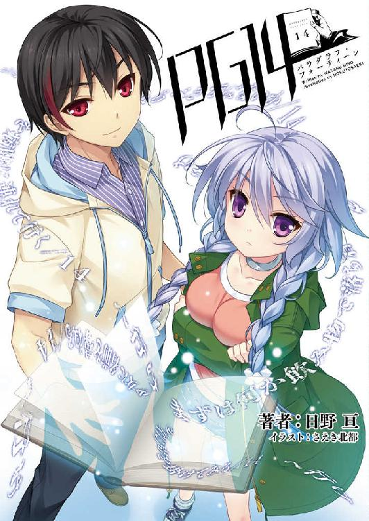
桜ノ杜ぶんこ
ＰＧ１４
日野 亘
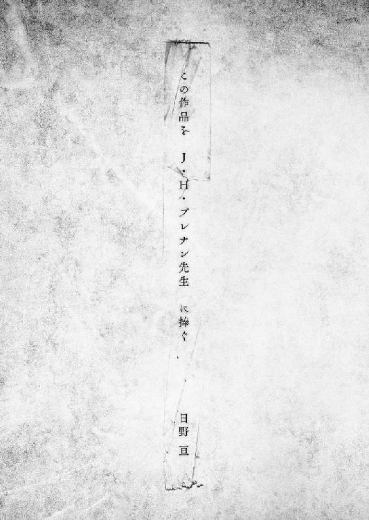
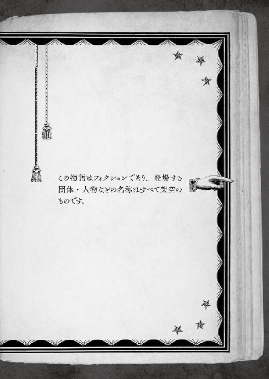
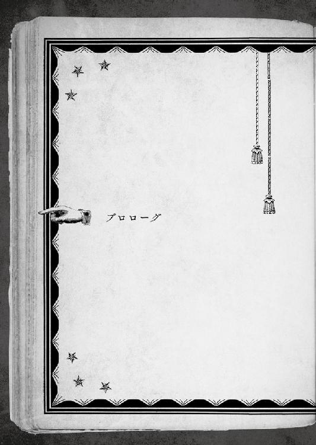
──要は、「遅い」か「早い」かだけの違いだった。
大昔の偉い人には、「全ての道がどこかに通じている」と、馬鹿みたいなことをほざいたヤツもいたそうだ。
きっとソイツは、世の中の道理を履き違えていたのだろう。
丁度この場所が行き止まりであるように、道に限らず物事は、最後の最後には尽きてしまうのが必然なのだから。
一直線に辿り着こうが、迂回して後回しにしようが、『結末』は同じである。ならば、最初から『進まない』という選択もありではないか。歩くだけ損だというのは、立派に筋の通った考え方である筈だ。
そんなことを考えながら、倒れていた。
路上に、大の字で、もはや息をするのも面倒で、考えるのさえ億劫だ。このまま屍になってしまうのも、それほど悪い結末ではないような気がしてきた。
いい加減、これ以上逃げ回ることに疲れ果てていたのだ。
人生は選択の連続だ。
だが、選択の行き着く先は、大概が行き止まりだ。
今いる袋小路のどん詰まり感が、如何にも象徴的で、最後の意欲を摩耗させてくれる。
世の中で一番目に、諦めることが嫌いだった。
どうにもならなくても、投げ出すのはまっぴらである。何かに負けたみたいで我慢ならない。そんな自分の信条を高らかに掲げ、意地を張ってここまできたが、そろそろ限界だ。
ちなみに二番目に嫌いなのは、『薄っぺらい』ヤツだ。
何よりも、空腹のせいで肉体的に終わりそう。
横たわったまま、地べたから空を見上げた。
看取る者もない行き詰まりで、『彼女』はこれまでと変わりなく、やっぱり独りだ。
ふと、目だけ動かしてみると、街の中心にさほど大きくもない山が鎮座していた。この街は、あの山の周りにあるのだろう。精々二〜三百メートルそこそこの頂には、鉄塔やらパラボラアンテナやらオブジェめいた建物やらがある。あんな所にも人の営みはあるのだ。
「......ちっ、遠いンだよ、テメーらは」
目眩がして、足下がフワフワし始める。そろそろ本格的にお迎えが来そう。
今更心乱すこともなく、ただ従容と結末を受け入れてしまおうと思った。
「──君、どうかしたの？」
そうはいかない、と運命が高笑いしたような気がした。
少しも劇的さのない、街を彷徨けばどこにでも落ちていそうな声音と台詞の中身に続いて、身体の上に影が落ちる。
「困ってそうに見えたんだけど......違ったかな？」
まさか、である。この見るからに薄っぺらそうな大馬鹿者は、よりにもよって、死して屍拾う者なしのロクデナシに、余計な手を出そうというのだ。渡る世間には、道理を解さない輩が後を絶たないらしい。世界平和の敵だ。世界は関係ないかもしれないが。
「──失せろ」
と、残された力を掻き集めて、遮った。
「テメーはアタシの何だ？ 見ず知らずだ。これっぽっちも無関係だ。どこかの馬の骨のクセに、アタシにそんな面しやがると、その鼻面を蹴り飛ばすぞ。いいか、アタシがここでこうしてるのは──ただの趣味だ！」
ビシッと言ってやると、露骨にドン引きする気配があった。それなのに立ち去ろうとしない。路地の入口を塞いだまま落ちる影に、いよいよ腹が立ってきたので付け加える。
「まだ居やがるのか？ 人助けして感謝されたいのか？ フン、偽善なンざクソ食らえ。テメーみたいなのが本物のクズなンだよ。死ンじまえ。生きてるだけで迷惑だ。べっ」
最後の「ぺっ」には失敗した。カラ元気を集めて、一気に捲し立てたところで体力が底をついたが、流石に相手は背を向けて路地を出て行った。
（よし、勝ったっ！）
無意味な勝利に酔いながら、再び独りになった。
いつも通りで慣れている筈なのに、自分以外には誰もいなくなった路地を不思議とうそ寒く思う。春どころか夏も近い季節なのに、この場所はどこまでも薄暗い。
でも、これでいい。後は、成り行き任せでごく自然にオチが着く。自分にはお似合いの場所で、読み終わった本を閉じるように、終わった物語には「完」の文字が記されるのだ。
と、見事な完結を想い描いた。
──もう一度、影が落ちる。
顔のすぐ近くに、消えた筈の少年がいた。
これといって目立つ顔立ちでもなければ、頼りになりそうでもない。赤毛のメッシュの入った髪が、一本気そうな雰囲気とは上手く折り合わず、何か軽い印象を与えていた。年の頃は、少し年上だろう。
取り立てて難しいことでもなさそうな顔で、倒れて空を仰ぎ見る相手──つまり自分に、右手を差し伸べていた。
（ああ、何て馬鹿なヤツなンだろう）
差し出された手に魅入っていた彼女に、少年は、
「......欲しい？」
と、そんなことを言った。
何を言っているのだろう。猫騙しでも食らった気分。
少年は後ろでに回してた左手から、右手の上に何かの袋を手渡した。
パンの袋！ クリームパン！ 食べ物！
「君が欲しいのは、コレかな？」
「────」
ピンポイントで急所を突かれた。欲しいに決まっていたが、見ず知らずの相手から貰う義理はない。厚意も同情も、まっぴらだ。
こちらの葛藤もお構いなしに、ひょいと目の前から消え去るクリームパン。
咄嗟に手を伸ばしかけたのは、一生の不覚。
空腹と誇りと羞恥と困惑と警戒の入り乱れる彼女に向かって、少年は路地の底から見上げる青すぎる空を漂う空気みたいに、透き通って捉えどころのない笑顔で言った。
「あげない」
──よし、コイツは殺そう。
そう、彼女......叔美は、心に誓った。
......叔美という少女について語るなら、彼女は事の始まりから、一貫して極めて不可解な少女であった。
叔美命名『クリームパン男』こと千里一條が、最初に見つけた時の彼女の恰好は、どれほど贔屓目に見ても真っ当ではなく、行き倒れも同然に酷く薄汚れていた。
そのワリに、不思議と目を惹き付けるものがあったのだ。
正直に言えば、初対面の第一印象で「可愛い」ぐらいは思ったものである。年下に見えたので、どちらかというと「妹みたいで可愛い」だったが。
世間の多くの妹がそうであるように、叔美は見た目は愛らしくても、お世辞にも可愛らしい少女ではなかった。
大層口は悪かったし、斜に構えているせいか目つきも相当に悪くなっていて、初対面で彼女の美点に気づくものは稀だった。おまけに、最初の頃は人見知りまで激しかった。
縁側でまどろむ飼い猫を人生の理想像と嘯く一條とは真反対に、叔美はどこから見ても野良猫な性質の少女である。
そして何よりも、正体不明。
本人の名乗った「叔美」という名前だって、本当かどうかも定かではない。
要するに、『怪し』かったのだ。
まるで、怪であるかのように。
人の姿を取って、その場に在るのが欺瞞のように。
欺瞞であった方がよほどマシだった、と周りの人間が痛感するのは後々のことである。
彼女を見つけたのが一條だったのは、叔美にとっては、偶然拾った宝くじが一等当たりクジだったような、凡そ最大級の幸運だったのだろう。
これは、初夏のある日、奥志麻という田舎町にやってきた、とある少女と少年が出逢う、『二人』の物語である。
出逢うまでも面倒だったが、本当に厄介だったのはその先だ。
何故なら──
叔美は、『死神』だったのだから。
比喩ではなく。
全く、言葉通りの意味で。
遡ること一千余年、孝徳天皇の御代に下された改新の詔で、王威の及ばぬところ、いわゆる「化外の地」と定められた土地の一つが、今日でいう四国であった。
気の荒い瀬戸内海で本州と隔てられていたせいか、長らく中央から放逐された者たちが追いやられる流刑の地とされてきたらしいが、何もかも今は昔の話だ。
──七月頭のことである。
叔美と出逢ったのは、真夏ギラギラの陽射しが降りしきるようになる少し前だったと、千里一條は、彼にしては珍しく憶えていた。
初夏......といっても、Ｔ県奥志麻市は四国。本州に比べれば夏の足音は相当に早い。「死神の少女」と行き遭った頃は、まさに真夏への最終カウントダウンの途上だった。
勤労学生である一條は、優雅な人生を愛していた。
一言で言えば、気楽に生きようという主義だ。
敵（？）は、心を煩わせる悩み事。とりわけ、過去を振り向いて悔いたりするのは最悪だ。過ぎたことにしがみつくよりも、未来を見ておおらかに生きる方が健康にいい。
そんな主義を持つ一條は、言いつけられた買い物を済ませ、まだ不慣れな道をアルバイト先へ帰る途上、古町川沿いを自転車で東に漕いでいた。
対岸に目立っている紅白の鉄塔を横目に、愛島浜公園の辺りへと差し掛かる。浜という字の通り、この公園は古町川沿いに細長い。川の浜というわけだ。
と、公園の広場で、一団の若い女たちが一糸乱れず怪しげな呪的儀式を繰り広げているのに目を奪われた。
地元では知らぬ者のない、天河踊りの練習風景だ。
奥志麻市には、『天河踊り』なる伝統的な盆踊りの一種がある。この西の僻地で生まれ、日本三大踊りの一つとして知られるまでになった。郷土の誇りたる民芸で、盆の祭りの頃には、この踊り目当てにのべ百万人以上もの観光客が訪れる。
幾万もの観客たちを瞠目させるべく、奥志麻二六万の市民から選び抜かれた踊り手たちの練習風景が人目に付き出すのは、毎年七月の頭頃と決まっている。それまでは、目に触れない場所で静かにやっているのだから。
本当に極めつけに珍しく、叔美と遭遇した大凡の日付を記憶していた理由である。
「昼間から踊っていられるなんて、いいなあ......」
長閑な踊りの練習を物珍しそうに横目で眺めながら、バイトに勤しむ我が身を嘆く。
実際には、「天河踊り」は奥志麻の貴重な観光財源であり、その檜舞台とは生き馬の目を抜く競走社会に他ならないのだが......。
「ま、ボヤいたところで何も始まらない、と」
気分を切り換えるべく、抜けるような青空を見上げようとしたその目の前に──
黒塗りの、ぶ厚い『本』が現れたのだ！
場所は、古町橋の袂。
思えば、凶運に導かれたような叔美との遭遇の日、決定的な出逢いの瞬間の少し前から、一條のツキの無さは、とっくに臭い立っていた。さながら台所の片隅で腐った生ゴミが腐臭を放つように、だ。
「────」
この『本』が突然現れること自体は、いつものことである。
これはこれで驚くべき事なのだが、人間、繰り返せば何にでも慣れていく。そろそろ約一年の付き合いになる一條は、今更驚きもせず、素早く左右を確かめた。
棘を逆立てたヤマアラシよろしく、ほんの一瞬で全方位に警戒を張り巡らせて。
この『本』の出現は、『前兆』なのだ。
現れるのは、「何か」が起こる時と決まっていた。針が落ちるような小さな出来事の場合もある。命を左右する大事件の場合もある。事の大小とは無関係に、重要だ。後から振り返れば、人生を劇的に変化させる意味を持っていたと知れるのだから。
また、そんな出来事が起きようとしている。
一條は、身に染みていた。優雅に生きようとするなら、これから起きるだろう「何か」を、決して見落としてはならない。
さて辺りに何があるのかと注意深く見回してみると、そこに巫女が立っていた。
イタタタッ！ と、最初に思った。
年の頃なら自分と変わりない少女の巫女だが、金糸銀糸を使った水干、いわゆる巫女装束はとにかく派手である。
昨年一年ほど暮らしていた大都会には、この手の巫女さんも沢山いた。特製の派手なラメ入り巫女装束のコスプレ系の巫女とか、キャッチセールス系の巫女とか。前を通ると、怪しそうなお店の割引券を手渡されたりする。古い伝統から解き放たれ、二一世紀の新たな時代を生きるシティ派巫女たちだ。
ここ奥志麻は、典型的な地方都市である。昼間であろうが、街の中心に近いこの辺りだろうが、相応に閑散としているような土地に、大都会の喧噪に揉まれて生きる、逞しきシティ派巫女さんたちがいるとも思えない。
一條は、マジマジと見入る。目が合いそうになって、慌ててそっぽを向いた。
派手巫女さんは、何をするでもなくボンヤリ佇んでいるだけなのに、ドン引きする程周りの空気から浮いている。
本音を言えば、即座に回れ右して「二度と拘わらない」という選択肢を選びたいところだが、迂闊に動いてはならない。
目の前に、『本』が姿を見せているからだ。
誇示するように開かれた黒い本は、まさしくこの世の不条理の象徴のように、支えもなく宙に浮いていた。
更に怪しいのは、こんな『本』があれば普通注目の的だろうに、眼前の巫女さんは気にも留めていないことだ。
驚くには当たらない。この『本』は、一條にしか見えないのだから。
「貴方、憑かれています！」
巫女さんが、いつの間にやら大真面目な顔で目の前に迫っていて、ズビシッと効果音の出そうな勢いで指差された。
ぶ厚い『本』は、何の支えもなく一條の目線の高さに浮いたまま、とあるページを見せつけるように広げた。
開かれたページには、分岐が記されている。いつもの如く、奇妙な文字で書かれた『文面』だ。
調べた限りでは、どんな既存の言語とも違う読めない文字なので、一條は『のたくり文字』と呼んでいる。それこそ「ミミズがのたくっているよう」だからだ。
一番最初に記されているＰＧ、『３１３─■■■■』を確認。それから、目を通すのに合わせて初めて、文面の頭から順に日本語へ変換されていく。変換というよりも、敢えて言うなら「翻訳」だろうか。
３１３─■■■■
さあ、例のヤツがやって来たぞ。お待ちかねだ。
キミの最初の感想は、困ったなぁ〜だ。よくわかるとも。目の前にいるのは、誰がどこから見てもイタい巫女さんだからな。だが、この巫女とその後の行動が、この『物語』の先行きを右か左か、はたまた三択にせよ四択にせよ、綺麗に分けてしまう一点であるのは間違いない。
巫女な彼女は、身構えているキミに迫ってくる。幸運にも襲い掛かってくる様子はない。戦闘にならなくて済んだようだぞ。
「貴方──憑かれています」
川のせせらぎをバックに、彼女はキミを激しく指差して大声で叫ぶ。予想もしなかった一発だ。どうする、言い当てられてしまったぞ。青くなってる場合か。さあ、選択の時が来たぞ。足を掬われないように、よーく考えるんだ。
勇敢にも、このイタそうな巫女に返事をするなら／６１６─■■■■ へ行け
尻尾を巻いて逃げ出すなら／２３４─■■■■ へ行け
『本』のサイズは凡そＢ５版。辞書を思わせる厚みがあり、装丁も厚さに相応しくしっかりしていた。タイトルはない。控えめな装飾が自己主張しているだけだ。材質はおそらく黒革だろう。触ってみた感触もそのものである。
ただ一つ──一條以外には見ることも触れることもできない幻めいた代物だ、という点を除けば、だが。
千里一條は、『本』に「憑かれて」いた。
目の前に浮かんでいる、幻じみた本がそれだ。
見知らぬ巫女さんの託宣は、文字通り正鵠を射ていたのである。
仮に、人生を一個の物語だとしてみよう。
ある人間の一生が、人智の及ばぬ観測者のしたためた、長大な物語に例えられることは多い。延いては、この世の中森羅万象の悉くが、一冊の膨大かつスペクタクルに富んだ物語といえるかもしれない。
その物語の中で、ある者は華々しい主役を演じるのかもしれないし、目立たぬ脇役として一生を終えるかもしれない。いずれにせよ、登場人物には、己の書かれた『物語』を読む術はあるまい。
幸か不幸か、とある出来事以来、一條は『それ』を読み取れるようになったのだ。
自分の──千里一條の『本』を、である。
異能と呼ぶべきか、異才と呼ぶべきか。
果たしてどういうカラクリになっているのかは、さっぱりわからなかったが。
この『本』には幾つかのルールがある。
ルールその一：目を眇めて集中すると、『本』は現れる。
正確に言うなら、取り憑いた『本』はいつでも傍に在る。普段は姿が見えなくなっているだけだ。もう少し補足すると、敢えて一條が見えなくしているのだ。
考えてみるといい。目の前を四六時中、浮かぶ『本』に遮られていたら、邪魔ではないか。きっと、大半の人間はさっさと消えてしまえと思うだろう。一條もそうだった。
そして。
「──どうなるのかな？」
一條は、サバンナを奔る草食動物と化す。秘かに近づくパンサーの痕跡を捉まえるべく、神経を張り巡らせた。
ルールその二：《分岐点》で、『本』は勝手に現れる。
今の状況が、「ルールその二」だ。
出てくるよう念じたワケでも、弾みで目を眇めてしまったワケでもないのに、普段は見えない『本』が勝手に現れるのは、「何か」の起こる前兆だ。
どちらの場合であれ、『本』の記述を読み取ろうとすれば、目を眇めなければならないのだが。
「貴方──憑かれています」
川のせせらぎをバックに、彼女はキミを激しく指差して大声で叫ぶ。予想もしなかった一発だ。どうする、言い当てられてしまったぞ。青くなってる場合か。さあ、選択の時が来たぞ。足を掬われないように、よーく考えるんだ。
勇敢にも、このイタそうな巫女に返事をするなら／６１６─■■■■ へ行け
尻尾を巻いて逃げ出すなら／２３４─■■■■ へ行け
日本語に書き換わった文面の最後には、『選択視』が著されている。
──選択肢ならぬ、『選択視』。
人生の選択が視えるところから、一條は、これを『選択視』と名付けた。
語呂合わせみたいだが、本人的には悪くないと思っている。
人の一生を、敢えて『物語』と表現するなら、それは決して一本道ではあるまい。人は傀儡回しの人形ではなく、意志というものを持っている。様々な場面で決断をし、選択を行う。
朝食をパンにするかご飯にするか、志望校をどこにするか、就職、恋愛云々。人生には選択が憑きもので、時には生死すら決定してしまう。
つまり──人の一生は、無数に分岐しているのだ。
一條の『物語』が著された『本』も、当然のように無数の枝分かれを内包している。
人生の分岐と一口に言うが、物事に大小があるように、分岐にも些細なものとそうではない重大なものがある。
この『本』が勝手に現れた時に教えてくれる、「何か」。
それを一言で表せば、その後の人生が劇的に変わってしまう重要な──《分岐点》なのだ。
（さてと、選択の時間......ってところか）
一條は目を凝らす。
この『本』は人生の分かれ道の存在を矢印付きで教えてくれるようなものだが、どの道を選べば、本人にとってより善き人生が得られるかは、精々ヒントしか与えてくれない。しみったれだ。
より平和に安全に優雅に日々を過ごそうとすれば、「正しくない選択視」を選んでしまわないよう、細心の注意を払わなければならないのである。
善き人生である為には。
こうして「文章」になると、巫女さんの台詞が、「疲れて」でも「突かれて」でもなく、やはり「憑かれて」であったと判る。
出現した選択視は、二つ。どちらかが、幸福な結果に通じているとは限らない。どれを選んでもバッドエンドという袋小路も往々にあるのが、人生の理不尽極まりないところだ。
絶対値としての幸福がない場合でも、相対的に「幸福」な選択視は必ずある。分かり易く言えば、今の時点でコレが「一番マシ」なヤツ。
注意しなければならないのは、著された二つ以外を選択しても無意味──という点だ。
世間には、「人は無限の選択ができる」としたり顔でいうヤツもいるが、選んで意味のある──本当の意味での『選択』は、言うまでもなく一握りだと、一條は知っていた。
この『本』を見れば、イヤでも知らざるを得ない。
ある場面で取り得る選択は、有限である。
例えば今現在、「返事をする」と「逃げ出す」の二つの選択視が示されている。
取り得る行動は、他にも沢山あるだろう。唐突すぎるが「デートを申し込む」や、ヒドい話ではあるが「黙って殴りかかる」を選んだ場合はどうなるのか？
あるいは、たった今この場で全裸になって、地元名物「天河踊り」を踊り出すという突拍子もない選択はどうか？
一條にしてみれば、そんな埒もないことは頼まれたって願い下げだが、仮に涙を呑んで遣ってみても、このページの『選択視』に著かれていない以上、結果は明らかである。
人の一生──人生という名の本の筋書きは、時に小石を蹴った程度で大きく成り行きが変わってしまう蜘蛛の糸のような繊細さを持つ反面、これで中々、したたかで頑固者だ。気に入らない『物語』のオチを変えようと、突拍子もない行動を繰り広げたところで、記されている選択視のどれかに収束してしまう。
真の意味での『選択』は、ごく限られているのだ。
ルールその三：選択視にない選択を選んでも、選択視に収束する。
今ここで「デートを申し込む」とした場合、おそらくは「返事をする／６１６」へ収束する。実際どうなるのかは、やってみなければわからないが。
だからといって、この場の結果だけを参考に、好き勝手をするのは考え物だ。
例えば、「突然裸踊りをする」のような破廉恥行為を選ぶと、普通に考えれば、後々警察や学校から手厚いお叱りを受ける......だけでは済まないだろう。
この場の選択が先々どう影響するのか、それともしないのかは、『本』のみぞ知るだが、そんな人生の行き止まりに着きそうな迷惑行為を、わざわざ選んでみようとは思わない。
それが、この一年間で一條の辿り着いた結論だった。
（今、選ばなければならないのは、この二つの──どちらか、か）
重大な《分岐点》を前にして、匍匐前進のように慎重になる。
注目すべきは、選択視毎に付いている、一條がＰＧと呼ぶ番号だ。選択視を選んだ場合の行き先が、数字に割り振られている。
何故数字なのか、と言われても、一條にだってわからない。そういうものだと納得するしかなかった。
勇敢にも、このイタそうな巫女に返事をするなら／６１６─■■■■ へ行け
尻尾を巻いて逃げ出すなら／２３４─■■■■ へ行け
この数字は辞書の見出しのようなもので、行った先でどんな内容が書かれているのかが大凡分類されている──らしい、と一條は経験則から判断していた。
ちなみに、見出しの後に続く黒く潰れた文字列は、行き先の詳細だ。目を更に凝らせば、桁数の多い数字が並んでいるのが読み取れる。例えば今、６１６の後に続いているのは「１５６８１１１２４......」といった具合だ。
基本的に大した意味はないようなので、普段は意識していない。だからなのか、黒く潰れた文字列として表示されているのだった。
ＰＧの数字からは、様々な情報を読み取ることも出来る。今のところ、一條がＰＧから最も読み取り易いのは──行き先で待ち受けている『危険』の度合いだ。
注目するべきは、頭の１ケタ。今回の選択視では６と２が、それに当たる。
（ふむ、どっちが良さそうだろう？）
単純には、ＰＧ２３４を選ぶ方がいい。
これまでの傾向では、「ただ一つの例外」を除けば、数字が少ないほど平和な成り行きが待っていた。０〜３番の範囲なら相当に安全だ。逆に７番を越してくると、ほとんど間違いなくトラブルが起きる。
（発見！）
分岐の記述に、「足を掬われないように」とあるのを発見した。
こうやってわざわざ著かれている場合、足下に注意しろという警告である場合が多い。
転ぶのか、滑るのか、それともツンのめって道路に飛び出すのか。
狩猟者を察知したリカオンのように注意深く左右を見渡すと、ご丁寧なことに、すぐ傍を古町川が蕩々と流れていた。
奥志麻は水の街と呼ばれており、駅の傍だけで三本も大きな河川が走っている。古町川はその一つ。天川の支流で、遊覧船がコースを取ったりもする観光名所だ。
（──こいつか！）
「川のせせらぎをバックに」という記述が、行く先を暗示しているような気がする。
この巫女に拘わるのなら──ギャグ漫画めいた展開ですったもんだの挙げ句、足を掬われて、ここに落ちて濡れ濡れになる可能性がかなり高そうだ。
ばかりか、よく読めば選択視には、「返事をするなら」と著かれていた。
拘わる......どころか、返事をしても駄目なのだ。それだけで『運命』が決まってしまうというのは相当である。
選択視が二つしか現れないのも当然だった。
拘わることを選んでしまえば、『運命』はＰＧ６１６へと収束する。近道を一直線に走っても、遠回りしても、落ち行く先は一つ。古町川の中だろう。
（......彼女、困ってる様子はない、か）
声には出さなかった。『返事をする』を選んでしまわないとも限らないからだ。
彼女、とは言うまでもなく、ラメ入り巫女さんである。何事かに困って助けを求めてきたのなら、一條としては通り過ぎるわけにはいかなくなる。相手が、個性的な（婉曲な表現）巫女さんであっても、よしんば川の中に落ちるのが確定でも、その時は仕方ない。
そうではないのだから、選択の余地があった。不作法をするので甚だ不本意とはいえ、わざわざ「落とし穴です」と書かれた地点へ、理由もなく全力疾走でダイブするような奇特な趣味の持ち合わせもない。
（すみません。というわけですので──!!）
特急速度で離脱した。ＰＧ２３４を選択したのだ。
胸の内で手を合わせて、鋭く回れ右して、全力疾走でママチャリを漕ぐ。
「あっ、待ってください！ 貴方がそっちへ──」
待てるわけがない。
あたかも黄泉比良坂から浮気がバレて妻に追い掛けられたどこかの亭主の如く、振り向きも返事もせずに速やかに走り去ったのである。
ふう、と胸を撫で下ろす。今回も『本』のおかげで、無用のトラブルを避けられた。
こういうケースでＰＧを無視して強引に進んだ場合、どういう目に遭ってしまうのか、一條はたっぷりと思い知っている。
「『運命』には逆らえないよねえ」
『本』が、いつ現れるのかは、一條にもわからない。
邪魔なこともあるが、役にも立つ。そういう『本』だ。
出たままの『本』を手で閉じると、煙のように音もなく消えてしまう。最後に名残惜しそうにしているような気がしたのは、きっと目の錯覚だ。
視界を遮るものから解放されたので、うんと伸びをした。
「さて、と。過ぎたことは過ぎたこと」
過去を振り向かないのが、一條の信条だ。
置いてきた巫女さんの一件はとっくに過去となったので、速やかに脳内の想い出フォルダ内に片付けた。
初夏とはいえ、観光シーズンにはまだ早い奥志麻の街は、人気がなくて静かなものだ。親しみの湧かない故郷だが、都会の騒々しさから縁遠いのは、一條の好みに合う。
改めて漕ぎ出した自転車の帰路。道なりに、時々、『アニメのマチ☆東古町』と書かれた幟が残されている。街の新たな振興策として年に数度行われているという、サブカル系イベントの幟だ。
頭上の空は青々と輝き、夏へと向かう盛りを謳歌していた。
奥志麻市は、美山の周りにぐるりと広がっている。ドーナツめいた形の街で、間近にそびえる山嶺をどこからでも見上げることができる。
「変わった形の街だよね」
などと思っていると、はしたなく腹が鳴った。そういえば小腹が減ったなぁと近くを見渡す。コンビニはなかったがパン屋があったので、入って適当に選んだクリームパンを購入した。
すると──黒背の『本』が現れ、背表紙手前のページがパラパラと開かれた。
まさか、と身構える。さっきの今だ。人生を劇的に変化させる『選択肢』が、こんな短期間に連続で現れるなんてことは、これまで一度しかなかったレアケースだ。
■所持品
手作りクリームパン
「......マジですか」
おいおい、と思わず一條はツッコんでいた。
開かれたのは《分岐》のページではなかった。だからといって、気は抜けない。
今開かれているのは、『ステータス欄』と呼んでいるページだ。当然の如く『のたくり文字』で書かれており、目を通すと次々に「翻訳」されていく。そこには、一條の能力や体調が、全てデータ化されて記されている。
体力・２０／２０
状態・健康
他にも、素早さや攻撃力の項目もある。社会生活上、攻撃力を何に使うかはともかく。相手は、突然襲い掛かってくる押し売りセールスマンとか、山から下りてきたスズメバチだろうか。どちらにも、まるで勝てそうな気がしないが。
つくづく、この『本』がどういう仕組みになっているのか、よく判らない。とはいえ、自分の状態を客観的に見ることができるのは......まあ、便利ではあった。
ステータス欄には、『所持品』の項目もある。買ったばかりのクリームパンが、早速記載されていた。
「......もしかすると、コレ、『アイテム』なのか？」
クリームパンの袋をしげしげと眺めたり、軽く振ったりしてみた。
どう見ても、只のパンだ。
バナナがおやつに含まれないように、一條が何かを手に入れる度に、所持品欄に記入されていくわけではない。それでは膨大な量になって、すぐに所持品欄が一杯になってしまうだろう。
欄が埋め尽くされたら、それ以上持てなくなってしまうのだろうか。一條にとっても興味深かったが、これまでそういう経験はなかった。所持品欄に記載されるのは、人生の道筋を変える可能性を持つ品に限られるからだ。
「このパンが、人生を左右するのか......」
一條の『本』の役立つ点であり、厄介な点でもあった。
物語には「伏線」が付きものである。
なべて世の出来事は、因果応報。無から生えてくる結果はない。試験の成績が悪くて大目玉を食らうのは日々遊び呆けていたからだし、ある日突然燃え盛る隕石に潰されるのは、落下地点にいたからだ。
一條の『本』は、普通の人間なら見落とすだろう人生という物語の「伏線」を、細大漏らさず集めてくれる。
やはり、どういうカラクリなのかはわからないが、この『本』の所持品欄に著かれてしまった以上、クリームパンの必要な選択視＝出番が、近い将来、高い確率でやって来るのは、経験則として疑いない。
その時、このパンの有無、あるいは使い方次第で、一條の人生は大きく左右されるのだ。
何だかなあ、と手の中のパンの軽さにしみじみ思わずにはおられなかった。
人の一生とは、これほどお手軽に変わってしまうものなのか。
「それよりも重要なのは、このパンが食べられなくなったってことだよね............」
パンを食べてしまえば、当然の事ながら、所持品欄からは消えてしまう。後々現れるだろう選択視は、大抵の場合、持っているアイテムを使用する方がイイ感じの結果に結びつくのに、それが選べなくなってしまう。
「......仕方ない、もう一個買うか」
折角買ったパンを取り上げた『運命』に愚痴りながら、奥志麻名物の明文金時パンを買い足して食べる。クリームパンは自転車のカゴに放り込んだ。
「早く帰ろう。遅くなると、オーナーにまた怒られる」
頭を切り換えて、一條は再び帰路に着く。
巫女さんから逃げる時に引き返してしまったせいで、帰りが二度手間だ。また鉢合わせしないように、多少遠回りだが、さっきとは違う道筋で帰ることにした。
ところで、物語における劇的瞬間──いわゆる「ヤマ場」は、唐突に出現するものだ。
それは、先程のように。
あるいは、今のように。
「────」
唐突な、悲鳴じみた甲高い摩擦音。
表通りから奥に入った狭い道を潜ったところで、一條は慌てて自転車のブレーキを握り締めていた。あまり丁寧に扱っていない典型的なママチャリの古びたブレーキが、軋みながらタイヤを止めて、路面に短い跡をつける。たった今見たものが、何かの悪い冗談なのだというように、何度も瞬きをした。
裏路地の、更に入った細い路地の奥に──少女がいた。
まるで絶賛家出中!! とでもいった萎れた風体で、だらしなく地面で大の字になっていた。こんな所に独りで寝転がっているのは、それだけで相当の変わり者だろう。加えて、容姿や服装にも独特の風変わりなところはあった。
普通なら近づくのも躊躇う相手だろうが、一條ならきっと声を掛けたに違いない。
そこにいて力尽きたようにへたり込んでいるだけで、そうする理由は十分だ。
律儀に、身を案じて。どうしたのか、大丈夫かと。
彼が止まり損ねて急ブレーキを掛けたのには、別の理由がある。
路地の前に差し掛かる直前に、『本』が再び現れたのだ。
何事かと速度を落としながら注意を振り向けた一條には、『彼女』が家出少女などという生易しい『もの』ではないことが、否が応でも視えてしまった。
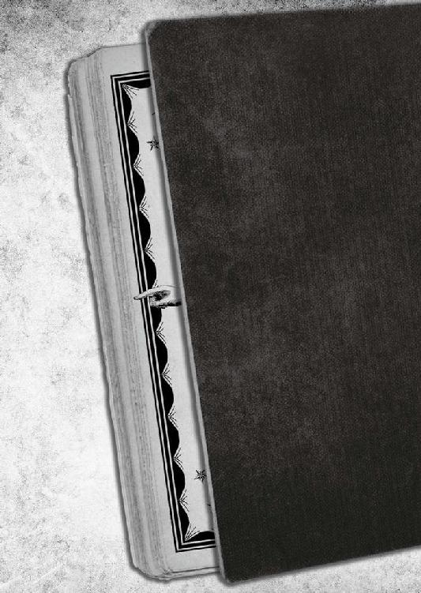
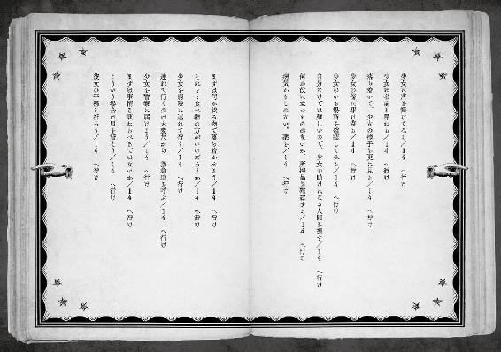
──突き詰めれば、その少女はおかしかったのだ。
１４、１４、１４、１４......──１４ へ行け！
目の前に開かれたページには、あり得ない数字が並んでいた。
サドルからズリ落ちそうなほど驚いて、またしてもブレーキを握り締めてしまった。更なる制動が掛かったせいで、結局は自転車から振り落とされた。
「おわあ!?」
ゴロゴロと二回転ほどしてしまったが、気にもならない。そんな些末に注意を割いてる余裕などまるでなかった。
１４！ そう、『１４』なのだっ!!
一條は、１４には鼻が利く。
以前、非道い目に遭った事があり、それ以来、敏感になったのだ。
ＰＧの１４は、選択視ならぬ選択死。分かり易く言うなら、『死』の番号だ。
破滅の数字。選べば、死ぬ。絶対に、確実に、逃れようもなく。
そのＰＧ１４へ向かう選択視が、見開かれたページにずらりと列を成して並んでいたのだから、一瞥した一條が腰を抜かし掛けたのも、ごく自然の有様だった。
──まるで、地雷原のような少女。
一條のこれまでの経験上、「１４ へ行け」がいきなり著かれているなんてことは、まずあり得ない。そんなものは『選択視』とは呼ぶに値しない、選択の余地のない地獄行きだ。
なるほど、死の危険というものは、何処にいても付きまとう。一歩外に出れば、いや、家の中にいても、ある日突然空から落ちてきた燃え盛る隕石に当たって鬼籍に入らないとは、誰にも言い切れないのだろう。
そんな、まさに降って湧いた不幸な例でなければ、いや、降って湧いた不幸な例であったとしても。
多くの物事がそうであるように、ＰＧ１４にも「伏線」はついて回る。
『本』の導きで、そういう草むらに潜む毒蛇めいた１４の訪れを回避したことがある。
だからこそ、今開かれたページのような凶悪なシロモノは、ハッキリと言って突拍子もない。
１４がズラズラ並んでいる悪ふざけのような見開き。
ここまで行き切ってしまうと、もはや滑稽だ。
「これってもしかすると、相当マズい《分岐点》に立たされているってこと？」
最初の衝撃が去って我に返ると同時に、そう思った。
悲劇であれ、喜劇であれ、人生の予兆は、大半がすぐ目の前を通り過ぎている。
人間は、大概手遅れになってからしか、それに気づけない生き物というだけで。
しかし、千里一條の『本』は、人生の伏線を見逃さない。
よしんば、本人が見落としてしまっても、至れり尽くせりで丹念に拾い上げてくれる。
だとすれば、この突飛な選択視の、意味するところは何か？
「......彼女に拘わろうとしたら、何をどう選んでも死んでしまうってことなのかな？」
最初に一條が思いついたのは、大きな事故の可能性だ。
例えば、ここで突然足下の道路が大爆発を起こすとしよう。いや、別に陥没でも隣のビルが不良建築で崩れてしまうといった、ありがちな展開（？）でも構わないのだが。
そういった大きな凶事の「伏線」が何らかの形で現れて、一條が気づいていないだけだとすれば、この死の罠めいたページみたいになるのではないか。
だとすれば、あそこで項垂れている少女一人では収まる筈もない。周辺の人たちに、今すぐ逃げるよう説得して回らなければならない。『本』が教えてくれました──とか言い出したところで、可哀想な顔をされてしまうのは間違いなしだから、美山の狸のお告げですぐらいは捻って伝える必要があるだろうが。
一條自身だって、当然危うい。
ここまで選択視があからさまでは、どうしたところで逃げようのない気配だが。だからといって結末を殊勝に受け入れるのも、それはそれで業腹である。
素早くそこまで思案を巡らせて、再度『本』へと見入った。
３３４─■■■■
おや、どうしたことだろう。少女が路地で生き倒れているぞ。何かの病気か、それ以外のトラブルだろうか。
よく目を凝らすと、この辺りではあまり見ない恰好で、持ち物は身に付けているもの以外何もないらしいのが判った。謎は深まるばかりだ。土地の者ではなさそうなのに、旅行者というには軽装過ぎる。
付近には、人の気配はない。此処にいるのは、どうやらキミと少女の二人だけだ。
さて、どうするべきだろう。お得意の紳士的精神を発揮するか？ ああ、キミの性分はよくわかっている。いやいや、しかしだ、日頃から無鉄砲なキミだが、ここはよくよく頭を使って考えるべきところだぞ。
少女に声を掛けてみる／３３５─■■■■ へ行け
少女に名前を尋ねる／８８３─■■■■ へ行け
落ち着いて、少女の様子を更に見る／２６７─■■■■ へ行け
少女に拘わらずに立ち去る／１９１─■■■■ へ行け
「あれ？ 普通になってる」
流石に首を傾げた。開かれたページに著かれているのは、『本』の言い回しこそ大げさに持って回っているが、普段と何ら変わりない分岐と選択視だった。
先程視た筈の１４の列は、欠片もない。
「時間切れ......じゃないよな」
人生には、選択がついて回る。
意識しなくても、人は選択をし、決断を下しているものだ。
学校には遅刻が、宿題の提出には締め切りがあるように、世の中は、どんなものにもタイムアップがある。
人生を劇的に変化させる選択視だろうとそうでない選択視だろうと、また然り。時間切れを迎えると分岐は収束して、粛々と『次』へと進んでいく。
ルールその四：選択視には時間切れがある。
それは「選ばない」を選んだということ。それでも人生は、無慈悲に、回り続けるカラクリのように、先へ先へと進んでいく。これが俗にいう「運任せ」、「天任せ」ではないのかと、一條は思う。
選択視には、タイムアップまでがごく短い......ほんの数秒や一瞬のものだってある。
さっきの「１４ へ行け」の群も──ごく短いタイムアップで、選ぶ時間もなく次の分岐に進んでページが書き換わってしまったのかと思ったが、どうにも腑に落ちない。
あれほど分かり易い、「１４ へ行け」の列が時間切れを迎えたのなら、結末は、逃げようのないバッドエンドで然るべきなのに、一條はまだピンピンしている。元気一杯だ。
それなら、先程のアレは──赫灼と燃え上がった死の入口めいた見開きは、果たして見間違いだったのか？
......腹の底に溜まったような重さが拭いきれなかった。カタチにならない衝動が、今すぐここから逃げろと囁いていた。
ＰＧ１４は狡猾である。
一見、平穏無事で人畜無害な選択視の裏側にこそ、悪辣な死の罠は待ち受けている。この、普通に見える選択視の群れも、ほくそ笑む『運命』の手招きかもしれない。
さっき垣間見た、ページを埋め尽くす『１４』を思い返す。今見えている選択視を一つ、二つと選んだ先で、１４に繋がっているのだとすれば──
ならば、少女は地雷原どころか、本物の死神に違いない。
どの選択視を選べば、死神のカマを見事に回避して、平和な明日を迎えられるのか？
......強いて言うなら、これだろうか。
少女に拘わらずに立ち去る／１９１─■■■■ へ行け
拘わるな、というのが特にいい。死神の災いを避けるのに、触れることなく遠くへ去るというのは、筋が通っている。さっき、巫女さんにしたように。
１４の少女は相変わらず大の字だった。一條から判るのは思いのほか色の白い横顔だけで、声は聞こえない。何かの偶然で、首を傾げた少女と目が合うこともない。
「それじゃあ、仕方ないな」
特に気負うでもなく、一條は選択した。
ルールその五：選択にやり直しは利かない。
落ち着いて、少女の様子を更に見る／２６７─■■■■ へ行け
──さっき見てしまった「１４ へ行け」の列を思い出した。
見たくて見たのではないが、見えてしまった以上、このまま倒れている女の子を放置して逃げるのは寝覚めが悪すぎる。回れ右でダッシュして、少なくとも自分だけは平穏無事という選択は、一條にはない。
選択視通りに、大の字の少女に見入った。
パラパラと『本』のページが独りでに捲れていく。元の３３４よりも、行き先の２６７がページでは前だから、表紙の方向へ戻っていくことになる。
ようやくお目当てのＰＧに辿り着いたのか、またご開帳された。
２６７─■■■■
キミは大の字の少女をガン見する。
慎重なのは重畳だ。落とし穴はどこにでもあるからな。
冒頭に『２６７─■■■■』とある分岐。
読めない『のたくり文字』で著かれた記述は、前から順に目を通したところが日本語に書き換わっていく。一文字でも飛ばすと「翻訳」されないのがとても面倒くさい。
記述はあっさり風味で、ガン見したがますます怪しげだと愚にも付かない内容が著れているだけ。
「......セーフ、かな」
運命は、先送りが可能だ。
試験に対策があるように、物事は万事、遣り方次第。
ここにクリームパンがあるとしよう。まぁ、実際にあるのだが。食べればなくなってしまうのは同じでも、いつ食べるか、どんな食べ方をするか、辿れる道筋は幾通りもある。
『運命』とは、その程度には自由だ。
但し、選んだが最後、その選択から導かれる結末だけは変えられない。クリームパンがなくなるのがイヤなら、最初から「食べない」を選ぶしかないのである。
『運命』というヤツは、その点において頑迷強固。
進むべき道を選んだ後で出来る事はといえば、避けがたいその時までに覚悟を決めるなり、多少でも被害が少なくなるように身構えるなり......が精々だ。
ＰＧ２６７の最後には、お馴染みの選択視が五つ。
地雷を踏み抜かなかったことに胸を撫で下ろした。おそらくまだ大丈夫と推測したから選んだとはいえ、予想はどこまでいっても未定のもの。最後の一歩はいつだってギャンブルだから、無事に選び終えられれば、ホッとする。
「で、今回選べるのは──」
少女に声を掛けてみる／３３５─■■■■ へ行け
少女に名前を尋ねる／８８３─■■■■ へ行け
落ち着いて、少女の様子を更に更に見る／２６８─■■■■ へ行け
少女に駆け寄ってみる／３１２─■■■■ へ行け
少女に拘わらずに立ち去る／１９１─■■■■ へ行け
選択視の内容は、前のとほとんど変わっていない。
「......さっきの選択、本当に先送りしただけじゃないか」
このまま更に見入っていても、おそらく埒は開かないだろう。こうなれば踏み込むしかないか、と覚悟を決めた。
一番怖いのは、『行き止まり』だ。
「１４ へ行け」を選択すれば死ぬ。一條もそれは真っ平御免である。
遠ざけるべきは、最も危険な──選択視の袋小路。
分岐がそれしかない、死ぬとわかってもＰＧ１４を選ぶしかできない、そんな状況。
逆に言えば、行き止まりに捕まらない限り、『本』のおかげで致命的な「選択」ミスを避けられる。
ＰＧ１４が「死」なのだから、そこに到着しない以上は死なない──理屈だ。
「となると、次は」
相手に聞こえない小声で呟きながら思案した。
注意すべきは、この『本』に著かれているのが、「未来」なんていう便利な夢物語ではないことだ。
一條の持つ黒革の一冊の『本』の中身には、無数の『選択』と『分岐』が記述されている。かつて選んだもの、選ばなかったもの、やがて選ぶもの、絶対に選ばないもの、選ぶかもしれないもの──ある人間の一生に起きるかもしれない、ありとあらゆる可能性が網羅されているのではないか、と一條は思っている。
但し、『翻訳』して読むことができるのは、『ステータス欄』を除けば、「現在」を著すページのみに限られている。他の、どのページを捲ってみても、全ての記述は『のたくり文字』で著かれていて読むことが出来ない。
要するに人間というヤツは、「過去」でも「未来」でもなく、「現在」にしか生きられない生き物だということなのだろう。
本来なら、こんな掌サイズではとても収まらない厚さになる筈だが、凡そ常識的な「ページ数」という概念が通用しないのも、この不可思議奇妙な『本』には相応しい。
一條の『本』が告げるのは、「未来」ではなく「現在」。今ここで、どんな道を選び取れるのかという選択視。
この先に何が待っているのかは、慎重に伏線を読み取り、推測するしかない。
一條は罠を避ける野ウサギよろしく、突発的な事故が起きなさそうなものを、声を掛けたり、手を差し出したりして、いきなり抜き差しならないところまで行ってしまわないように、慎重に慎重に吟味して──ＰＧ３１２を選んだ。
３１２─■■■■
ふー、危ない危ない。
やったな、爆弾処理のような慎重さで、キミは無事、少女の傍に駆け寄る事に成功したぞ。
結構な大胆さで、路地の奥へ近づいていく。
「────」
大の字少女は、一條の気配を感じたのか、死体が死後硬直するようにピクンと僅かだけ反応した。返事があるかと身構えたが、残念ながら、それっきりで無反応だ。
「......それなら、こっちから行くしかないか？」
一條は素早く、それでいて小さな見落としもないように、少女と『本』を見比べる。
ほら、地面に大の字になっている少女がピクリと動いた。キミに気づいたらしい。
が、それ以上の動きはなく、どちらかというと、不機嫌そうに眉を寄せている。
近づいて少女を助け起こしてみるなら、彼女の身に何があったのかを聞くことになる。その為の話術が必要だが、持ち合わせはあったろうか／８１２─■■■■ へ行け
見ず知らずの人間がいきなり駆け寄り助け起こすのは、唐突すぎないだろうか。ここはやはり、慎重に名前を聞くところから始めた方が無難じゃないか。そうするつもりなら、やはり、説得なり対話なりを経なければならないが、結構難しい。ダイスを二個振り、８の目以上が必要だ。
８以上なら対話に成功／４７６─■■■■ へ行け
８以下なら対話は失敗／５５７─■■■■ へ行け
少女に拘わらずに立ち去るのなら／１９１─■■■■ へ行け
相変わらず「立ち去る」の選択視が残ったままというのが、とっても暗示的だ。
立ち去った後のＰＧは１９１。一ケタ目が１番台なのは、普通の場合なら行き先が平穏無事であることを意味している。今は『１４』のすぐ傍で、ＰＧだけを判断基準にするのは賢明とはいえないのだろうが、この選択視だけは別格に見えて仕方がなかった。
そもそも、《分岐点》たり得る選択視、その後の人生がガラリと音を立てて変わってしまうような瞬間が何度も連続するのは、普通に考えておかしい。ほとんどあり得ない。
では、今の場合はというと──おそらく、生死の分岐点。
これほど明確な人生の選択はまずあるまい。最初に見えた「１４ へ行け」の行列が、隠れた死を嗅ぎ取った直感なり本能なりの『警告』だとすれば、それらしく辻褄は合う。
千里一條がこの状況から逃げ出さない限り、人生を左右する選択視は続くのだ。
ならば、さっきからついて回っている危険な跫音の大元は、やはりこの場の......もっとぶっちゃければ、十中八九あそこで大の字の女の子に違いなかろうと、一條は結論づけた。
選択視の見える一條だからこそ、一目瞭然に運命の罠を嗅ぎ取り、先送りもできる。ごく普通の見えない人間には、ニトログリセリン並の危険物だ。どういう理屈でＰＧ１４を引き連れているのかは想像もつかないが、『本』が憑くくらいだから、１４が憑いてたっておかしくはないのだろう。
死神を助けるのは初めてかな、とズレた感想を抱いた。
最初から見て見ぬ振りをするのが正解だったろうか。そんな、ひとでなしなことも頭の隅を掠めたが、ほんの一瞬だ。やったことを後悔するのは一條の信条に反している。
「今大事なのは......『本』の内容だね」
睨むページに提示された選択視は、残り二つ。記載されているのは三つあるが、内二つは『判定』付きのワンセット。
判定とは、『ダイス判定』のことだ。勿論、リアルにポケットからサイコロを取り出して、振れば人生が決まってしまう──なんてことはない。この判定は、千里一條の現在の能力と状況から導き出される、行動正否の確率予測なのだ。
今回の判定は、ダイスを二個振って、８以上の目が必要。
ダイスには、一般的な正六面体のもの以外にも、マキビシのような四面だとか、八面だとか十面だとか、果ては百面ダイスなんてものもあるらしいが、一條の『本』の記述で『ダイス』といえば、スタンダードな六面体のものを指す。
ダイス二個を振った場合の出目は、１・１から６・６までの三六通り。合計が８以上になる組み合わせは、２・６から６・６までの一五通り。
つまり、一條が大の字の少女に声を掛けた場合、その成功率は四〇パーセント強。
「......思ったより際どいな」
とはいえ、二つの選択視の、どちらを選ぶかは悩まなかった。
いきなり助け起こすと、ＰＧ８１２。
声を掛ければ、失敗したところで、ＰＧ５５７。
万事に前進思考の一條も、あからさまな地雷ゾーン目掛けて一直線で飛び込んでいくほどの主人公気質ではなかった。
原則として、ＰＧは数字が大きくなると危険なのだから、助け起こすのに比べれば遠回りでも声を掛けるのが正解だ。死神を相手にしている以上、ここは慎重にやるべし。
問題の少女は変わることなく大の字で、どう声を掛けるべきか悩む。
成功率四〇パーセント。声の掛け方次第で、少女の反応が変わる。それは、一條の考えつく方法で、『運命』を変えられるという意味だ。結果が良くなるとわかっているのだから、知恵を絞らない理由はない。
路地の奥へと一歩踏み込みながら、選択する。
同時に、唐突に脳内に浮かび上がるダイス二個のイメージ。
タララーという、何故か軽快なサウンドと共に転がったダイスの目が、フラッシュバックのように視界に映る。
出目は４と６。10だ。８以上だから文句なく成功。
選択に従って、次のＰＧ目指して『本』はパラパラと捲れていく。
「君、どうかしたの？」
考え抜いて、狙いを定めた筈の一言を口から出すと、自分でもビックリするほど捻りのなさ過ぎる内容だった。
いくら何でも、「どうかしたの？」はないだろう。
「困ってそうに見えたんだけど......違ったかな？」
付け加えてみた。更に捻りがなくなった気がした。
判定に成功した筈なのに、本当に大丈夫なのかと不安になった一條は、開かれたＰＧを見た。ちゃんとＰＧ４７６へ進んでいる。
胸を撫で下ろして更に記述を読もうすると、先に現実の地面からの返事があった。
「──失せろ」
奥志麻駅の南東側、日宵町には老舗カフェ『ＤＣ』があるが、そこの月替わりスペシャルパフェは大盛り過ぎて、一人で行っても食べきれないと一目で判る。それと同じレベルにあからさまで分かり易い拒絶がきた。
１４の少女は、サイズの大きすぎる帽子にホットパンツのラフな恰好だ。
薄手のジャケットを羽織っていたが、妙にボロっちい。大きな目と三つ編みと女らしくなる前の華奢に伸びた手足が印象的だった。それ以上に目に止まったのは、首のチョーカーだ。細い金属の環を思わせて、ネックレスというよりもそのまま輪っかである。
彼女の声音は意外に子供っぽかったが、口調は妙に大人びていた。すれている、という言い方が正しいのかどうかは、一條にもよく判らない。少なくとも、チラリとこちらを一瞥している眼差しが非友好的なのは、『本』を確かめるまでもなく瞭然だ。
「テメーはアタシの何だ？ 見ず知らずだ。これっぽっちも無関係だ。どこかの馬の骨のクセに、アタシにそんな面しやがると、その鼻面を蹴り飛ばすぞ。いいか、アタシがここでこうしてるのは──ただの趣味だ！」
一息に捲し立てられた。見事に脅しと罵倒の入り交じったイントネーション。本気の悪罵に、ドン引きする。
「まだ居やがるのか？ 人助けして感謝されたいのか？ フン、偽善なンざクソ食らえ。
テメーみたいなのが本物のクズなンだよ。死ンじまえ。生きてるだけで迷惑だ。べっ」
もう一度ＰＧを確認する。間違いなく４７６だった。つまり、捻りのない遣り取りだろうと、善意を抉る心温まる面罵の限りだろうと、この一手は成功の筈なのだ。
なので、少女の苛烈な悪態にも引き下がらず、更に二つ、「ジリジリと近づく／５４５」、「回れ右をする／３７６」と選択視を選んで『本』を読み進める。
これまで同様、危険の臭ってきそうな選択視を賞味期限切れの卵を見抜くような細心さで避けながら、焦る気持ちを窘めてゆっくりと距離を詰めた。
「......あれ？」
一條は、路地の外へ出てしまった。
気が変わって逃げ出したのではない。細心の注意で選択視を選んでいたら、自然とこうなった。より正確には、少女により近づく系の選択視は、どれも８番台。どう見ても地雷のプレリュード臭いので回避した結果だ。
「これは............近づくなってこと？」
死なない道を選ぶと遠ざかってしまう。流石、死神だ。
選択視が見えても、否、見えるからこそ、近づけない矛盾。どこにでもある路地の入口は、今や難攻不落の要塞だった。
だからといって、尻尾を巻いて逃げ出す選択はない。
「正攻法でダメなら、奇策かな」
次に選んだのは、「少女に近づく方法を考える／６２１」。
一ケタ目が６。より危険な領域へ踏み込んでいくのを頭と肌で感じながら、肩を竦めて現実と『本』に向き直る。
６２１─■■■■
いいのか、それで間違いないか？ もっと、いい選択があるかもしれないのに、敵意丸出しの、まるで野良犬みたいな少女に向かって、キミは更に前進するのか？
いい加減諦めの悪いことだが、まあいいだろう。キミもよくご承知であるように、普通の手段では近づけないのだから、頭を使うしかない。勿論、頭突きをしろという意味じゃないぞ。
ところで、どうにかしてクリームパンを入手しているだろうか。持っている場合、路地に引き返して、少女にパンを有効に使え／５７３─■■■■ へ行け
持っていないか、それとも使いたくないのであれば、危険な臭いしかしないが、敢えて大胆に少女に近づくしかないだろう。最後の武器は、拳銃でもパンでもなく勇気だ。キミの幸運を......まあ、祈るのはタダだ／８６１─■■■■ へ行け
少女に拘わらずに立ち去るのなら／１９１─■■■■ へ行け
来た、クリームパン！
そう、所持品に登録されたおかげで食べ損ねたクリームパンが、自転車のカゴに放り込んであった。良かった。寄り道万歳。
一條はこれを待っていた.........わけではなかったが、これが状況打破の鍵になることを、経験則から知っている。
アイテムを使う選択視は、使わないものに比べて、基本的には、より良い結果が出るものだ。
早速、選択する。といっても、自転車のカゴからクリームパンを取り出して、路地に引き返すだけだが。
舞い戻った一條を、大の字の少女が地べたから、まるで不気味な怪物でも見るような目で見ていた気がしたが、おそらく気のせいだろう。
それよりも今考えるべきは、このパンを如何に「使う」かだ。
「......欲しい？」
数秒考えて思いついたまま問い掛けてみれば、果たして少女は目を剥いた。
一條の意味不明な言動に驚いたのか、それとも警戒されたのかは判断が難しい。『本』は出来事を記述するだけで、形のない他人の心は描写してくれない。
いずれにせよ、選択はなされたのだ。前に進むしかなかった。
理解できない顔で固まっている少女の前で、一條は後ろでに回してた左手から、自分の右手にクリームパンを握って差し出す。
「君が欲しいのは、コレかな？」
「────」
息を呑む気配。
見るからに空腹で行き倒れている彼女にとっては、きっと値千金のクリームパンだろう。反射的に身を乗り出してしまったその姿に、一條は何かを思案するように視線を泳がせてから、表情を笑顔に似た形に強張らせて──
おもむろに、ひょいと手を引いた。
彼女の指先から遠ざかるクリームパン。
「あ、あ......あげない......っ」
一條は、たどたどしく陳べたのである。
考えるまでもなく、非道い話だ。
人間をより絶望させるのは、立ち塞がる困難ではなく、遠くにチラつく希望である。
少女が俯いて肩を震わせたので、一條は焦った。こんな筈ではなかった。普通、アイテムを使えばより善い結果が出るのだから、クリームパンを使った『茶目っ気』で彼女の気を惹けば、そのまま平和に対話できるのだろうと信じて疑わなかったのに。
現実はこの有様だ。余計に拗れてしまったような気がする。
「あの......っ」
『本』を見ながら、取り上げてごめん、このパンをあげるから機嫌を──と彼女を宥めようとしたところで、
５７３─■■■■
クリームパンという『光』をチラつかされてから奪われた少女は、絶望したのだろう。至極当然の行動を取った。
オー・マイ・ゴッド。
そう、彼女は獲物を見出した蛮族よろしく、キミに襲い掛かってきたのだ！
「死ねーーーーーーーっ！」
「死ねーーーーーーーっ！」
まさしく、彼女が襲い掛かってきた。
一條のこめかみを掠めていく右ストレート。
「ひい」
いきなりの実力行使だ。腰の入ったパンチは、今の今まで足下に倒れていた女の子のやる事とは到底思われない。不意打ちかつ本気の一発を、一條は不格好に避けて、ついでに足を滑らせて転んで頭を打ちかける。
「避けるな、たった今この場でミソ出して死ねぇ!!」
「いやあああぁぁぁぁぁ」
最後の力を振り絞ったのか、食い物の恨みが新たな力を与えたのかは知らないが、少女はまさにモンスターと化していた。
「選択......ッ、次の、選択視は!?」
身も蓋もなく悲鳴をあげて逃げ惑いながら、ＰＧ５７３の続きを確かめた。この状況を打開できる（かもしれない）選択視が、そこにはきっと著されている（かもしれない）。
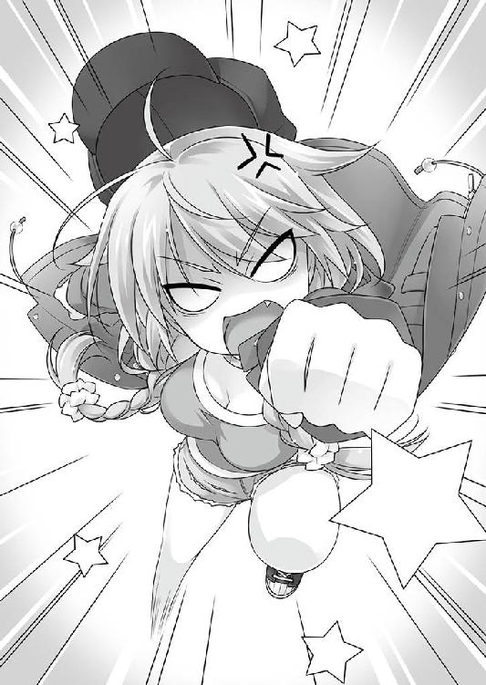
何たることか、もはや少女は一個の怪物だ。牙を剥き出しにして、キミに襲い掛かってくる！
死力を尽くして戦え！ 敵を皆殺しすれば、平和が訪れる。普遍の真理だ。キル・アンド・ピース！ それとも、キミは無謀にも防戦一方がお望みだろうか？ 速やかにこの場を逃げ出す、でもいいだろう。
少女は、生命点一〇点、攻撃点は素手なので一点だ。戦えば何なく勝てそうだぞ。ダイスを二個振って、戦闘を開始せよ。
彼女を退治できれば／４１９─■■■■ へ行け
彼女に負けても死ぬことはない。そう、死ぬことは......／６１５─■■■■ へ行け
敢えて防戦一方を選ぶとすれば......争いを是としない君の心根は、きっと美しいものだろう／５９８─■■■■ へ行け
回れ右して、勢いよく路地を飛び出そうとするのなら、細心の注意が必要だ。この辺りの路地は入り組んでいて視界が悪い。慌てていると、思わぬ目に遭うかもしれないぞ／６４２─■■■■ へ行け
少女に拘わらずに立ち去るのなら／１９１─■■■■ へ行け
平和じゃないよ！
戦闘なんて選んだら、あっという間に警察のお世話になった上、田舎ネットワークの力で一族郎党が村八分確定だ。ある意味、平和だと言えなくもないが。
巫山戯た『本』の記述の中で、一條が引っ掛かったのは、一番最後の選択視だ。
少女に拘わらない、という選択視が依然として居座っている。あられもなく逃げ回りながら、むしろ警戒を強めた。
ここは、まだ死神の掌中らしい。
いよいよ危険な一手が接近しているのを、本能で察していた。全身の産毛が逆立つ。提示された選択視は五つだが、拘わらない１９１以外で最も安全そうなＰＧは、戦って勝ち抜ける４１９だった。
流石に、一応助けようとしてる相手を倒すというのは、どうなのか？
それに、万一負ければ６１５。死ぬことはないと著かれているのが、どう見ても撒き餌にしか思われない。
最も危うそうなのは、回れ右する６４２。少女から離れる行動の筈なのに、拘わらない１９１とは別の選択視になっているのも怪しいし、追い掛けられたら思わぬ目にと、但し書きまで付いているのが最悪だ。
死神の間近にいるのなら、一見安全そうに見える選択でも、迂闊に選ぶべきではない。
『本』は当然ながらそしらぬ顔。冷酷非情に記述を進めていくだけ。
選ぶのは、どこまでも一條自身なのだから。
彼女に近づくには、どうするべきか？
まだ死神への接近を諦めていなかった。往生際が悪いのが一條の信条である。
近づけば『死ぬ』のだから、近づかないことだ。
ケダモノの如く飛び掛かってくる少女を前に、刹那の思考の末、選択視を選び取った。
こけつまろびつ身を躱しながら路地を飛び出すと、紅い布を見せられた猛牛よろしく、我を忘れた少女が後ろから追ってきた。
危険は承知の選択だった。
「あ──」
逃避行はほんの数秒で終わる。
路地から通りへ飛び出した瞬間、それは起きた。
右から左へ走り去っていく車が、一條と接触したのだ。
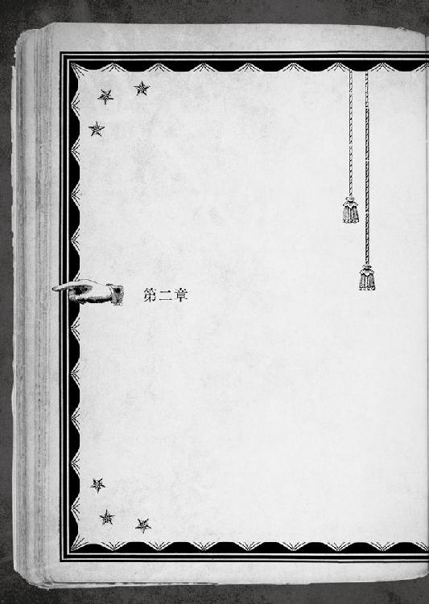
奥志麻駅を中心にした一帯は、奥志麻市内、つまりはＴ県で一番開発の進んだ区域だ。
奥志麻市は典型的な地方都市。拓けていても華やかと言うには及ばず、賑やかではなく大勢が往来する、という表現がよく似合う。
そんな、まことに田舎らしい中心街の外れに位置する柄杓横町に、『アンブロシウス』というバーがある。
「ふわぁぁぁ〜〜〜」
右手に箒、左手にちり取りを持って、店の前で大欠伸するのは──叔美であった。
寝ぼけ眼を擦り、起き抜けの背筋を丸めたまま、店の前に出る。
春でもないのに眠気が晴れない。ここしばらく、キチンとした寝床で朝を迎えているので余計にだ。その日暮らしを遣り繰りしてきた叔美にとって、目を覚ますと決まった屋根のある日常は、慣れない上に調子が狂う。
肩でも凝ったような居心地の悪さに、張りのない舌打ちを一つ。それから、中天に差し掛かる前の太陽を見上げる顔は、日向で居眠り中の犬みたいに気が抜けていた。
「ちっ......まだ一一時過ぎ......ってとこか」
体内時計は、誤差五分以内の正確さだ。『時は食い物なり』──が叔美の信条である。
学校も試験もない、住処も持たない身の上が、気ままなフリーマンで「ウラヤマシス」と思うのは素人の浅はかさ。例えば、野生動物の生態に、エネルギーの無駄遣いは禁物だ。狩りで得られる獲物以上のカロリーを消費すれば、待つのは飢え死になのだから。
後ろ盾のない我が身一つだからこそ、あらゆる状況の変化を敏感に嗅ぎ分け、素早く的確に動かなければならない。叔美はこれまで、そのセオリーに従って生きてきた。それなのにこの一週間は、何もかも忘れたような長閑さだ。
「......こんな生き方してると、すぐにナマっちまうよな。ったく、腹に肉でも付いたら、どうしてくれやがるンだ」
山猫が庭先で飼われるようになったら、こんな気分だろうか。
どうでもいいことを考えながら、いまいち具合の良くない肩を揉む。もう一度欠伸を噛み殺してから、この一週間続いている起き抜けの『仕事』に手を付ける。
最初はナイロン箒で店の前を払う。それだけでは時間が余るので、両隣の店の前まで綺麗に掃き清め、ついでに向かい三軒の前も手際よく掃除した。
次は、軽く水打ち。水を打つ時は水量に注意しろと、厳重に言い含められていた。奥志麻は下水絡みで水道代が高い。些細な経費も積み重なると馬鹿にならない。細かな節約が日々重要──これは、如何にも細かそうなオーナーからの、一〇〇％受け売りだ。
柄杓横町の路地は、狭い上に入り組んでいる。柄杓の読みは、「ひしゃく」ではなく「えしゃく」。すれ違う度に会釈する丁寧な人たちの住む土地、という世評が訛った名前だという説と、その昔には名水の湧く井戸があり、水を掬う柄杓からきた名だ、という説がある。どちらも話半分の昔語りだ。
路地には看板が幾つも並んでいた。夜には色鮮やかというよりも艶めいたネオンを瞬かせるが、昼間は火の消えた提灯のように息を殺してる。地元名水のおかげで小料理屋が集まってきたという昔日の面影か、今日でも界隈には飲食店が多い。
柄杓横町は、地元では「繁華街」──いわゆる、一八才未満お断りの成人指定領域にカテゴライズされている場所だが、厳密には違う。いわゆる繁華街的店は、一つ通りを挟んだ向かい側の通りに集まっている。人の出入りも、断然そちらの方がいい。
柄杓横町に軒を並べているのは、昔気質で通人好みのシブい店ばかりだ。今時「柄杓」なんてクサい名前の通り、古式ゆかしき伝統の息づく場所である。
もっとも、彷徨えるエトランゼの叔美には、伝統も只のオンボロも区別がつかなかった。
つーか、食えない物はどーでもいい。
「あららん、叔美ちゃん、おはよう」
斜め右向かいのカラオケスナック「蒲田」のママが起き出してきたので、店の前に水を打ちながら挨拶を返す。
「うー......おはよ、面倒くさい。ＯＫＡＭＡ田......さン、昨日も遅かったの？」
叔美にしては言葉尻が柔らかいが、意識してではなかった。初対面で揚げ豆腐を貰って、熱々の大豆とスダチの風味にやられて以来、何故か腰が低くなる。彼女自身途惑っていた。ママの人徳というべきか、それとも、野良猫だって餌付けされる、と言うべきか。
そろそろ正午にも近い時刻。「おはよう」は流石にどうかと思ったが、この界隈には深夜営業の店が多いので、時間感覚がズレている。
郷に入っては郷に従え。旅暮らしの長い叔美にとって、土地に倣うのは下手な外交問題を引き起こさない為の初歩中の初歩である。
「ノノノ、ＯＫＡＭＡ田さん、じゃなくて蒲田さん。女の名前は間違っちゃダメよ」
小粋に指を振り振り、ついでに腰を色っぽくくねらせる。
「......うーす」
「いつもウチの前まで掃除してくれて、ありがと」
「投げキスはやめて、目が醒める」
「あらあら、寝ぼけ眼さんなのね、叔美ちゃん。まだ、ここの生活に慣れないの？ ウチなんか、昨日は三時ぐらいまではやってたわよ。でもこーんなに元気！」
「あの布団っていうの、結構ヤバい」
寝床が柔らかすぎて目が冴える。動物は慣れない環境では緊張するのだ。
「枕が変わると眠れないの？ 繊細な女の子って可愛いわ。素敵なレディの素質があるわよ」
「『れでぃ』って食えるの？」
「もうバカみたいなこと言って。食べられるのは女の方って相場が決まってるわよー。それとね、これもそう。大根の煮物。煮物ってわかる？ まあ、お国柄じゃないかもね。碧流ちゃんによろしくね」
「うー」
スキンヘッドの厳つい自称女性の蒲田がしなを作って、まだ上手く頭の動いていない叔美に鍋を渡していった。二日に一度は、何かと理由を付けてお裾分けをくれる蒲田は、叔美からすれば天使も同然だ。髭の剃り跡が残ったエンジェルがいるのなら、だが。
それはともかく、鍋を持ったままだと掃除の邪魔だった。
「先に置いてくるか」
叔美が店内に戻ると、濡羽色の長い髪の少女がカウンター席にいた。
叔美よりも、ほんの少し年上だろう。人目を惹く目鼻立ちは、麗しい花の華美ではなく、怜悧でどこか近寄りがたい。すらりと伸びた手足。背丈は、叔美よりも随分高かった。ごく普通にそこに居るだけで、オーラのようなものが駄々漏れていた。
叔美が山猫なら、向こうは血統書付きのシャム猫といった風情である。
「......ちっ」
と、叔美は聞こえるように舌打ちした。朝からロクでもないのと顔を合わせてしまった、と。
カウンターのシャム猫は、この店のオーナー、碧流。端的に言って、一番偉い群れのボスだが、とある悪癖を抱えている。
「朝一番なのに随分眠そうだな、キミは。従業員の分際で身の程を弁えない輩だ。一睡もしないで働くように」
しれりとした横顔から、いきなり棘が飛んできた。
「朝一番からご挨拶だな、この性悪！」
叔美も相当だが、碧流も劣らず口が悪い。この若きオーナーのスカートの下に棘付き尻尾が生えているに違いないと、叔美はこの一週間で確信していた。
見た目が清楚な美少女然としている分、碧流の毒舌が与えるダメージは大きく惨い。一部の特殊な嗜好には需要があるかもしれない。
叔美はといえば、見た目程度で恐れ入ったりしなかった。
「見りゃーわかンだろ。眠いンだよ。誰かが、つまんねーこと手伝わせてやがるからな」
「見ていて思うが、キミはスジがいい。私の手駒としてこき使われるのに向いている。望むなら、死ぬまで消費してやらないでもない」
「アタシは、雇われてるわけじゃねえ。人見てもの言いやがれ」
実際、叔美は万事に手際がいい。掃除に限らず、物事は勘所を押さえれば、上手く遣り繰りできる。叔美の生きてきた世界は、もたついていると生き馬の目を抜かれる厳しいところだ。自然と生き延びる勘が身に付いた。
今もオーナーに毒を吐く傍らで、箒とちり取りをテキパキと片付けて、起き抜けの一仕事を終わらせる。
『アンブロシウス』の従業員は、全部で三人。碧流と夜から出てくるマスター、それにもう一人。叔美を頭数に加えると四人だ。片手で足りる。一人あたりのやるべき事は多いが、こぢんまりとした店なので、一つ一つの仕事量は多くない。
誰の趣味なのか、店内はこの界隈で珍しくシックな洋風。田舎のバーらしからぬ、大時代的な風格すら漂う。
叔美にしてみれば、「ボロっちい」の一言で一刀両断なのだが。
碧流は、カウンターに軽く肘杖をついて、面白そうに叔美を見ていた。ニヤニヤ笑われているみたいで、癪に障る。
殊更肩肘張っているようには見えない碧流だが、姿勢がいいのですらりと一本筋が通って見える。いつもなら畏まったヤツと笑うところが、一瞬見惚れてしまった。
カッコ良かったのだ。
「ンだよ......珍獣扱いすンな。金取るぞ、見物料」
魅入っていたのがバレて、これ以上いい気になられてもプチムカつくので、ワザと険のある顔で右手を突き出す。お代をお寄越し。
相手もさる者で、風に柳と意に介した様子もなかった。
「言いがかりで賠償するほど、私は甘くないぞ。見てるのは、オーナーの仕事の内だ。新入りの奴隷がどの程度使えるか、計らなければならないだろう」
「............オマエ、絶対本気で言ってるよな」
「そう。私は、何時でも何処でも本気一二〇パーセントだ」
天上天下に隠すところなしと言いたげな碧流を横目に、叔美は溜息を吐きたい気分というものを久々に思い出した。果たして何年ぶりだったか、忘れてしまったが。
「......今日でかれこれ一週間。いくら何でも、そろそろわかったんじゃねえのか、そっちの目玉が節穴でなきゃあな」
「口の減らない従業員だな、キミは。オーナーに対する口の利き方を後で教えてやろう」
「口の悪さはテメーほどじゃねえよ」
肩が凝りそうにお堅そう、という第一印象をイヤというほど裏切って、碧流は性格が折れて曲がっていた。外見は大人びているのに、気が短くて舌には棘が生えている。そのクセ、妙に真っ直ぐで譲らないところがあって複雑怪奇だ。
一言でいえば、叔美にとっての碧流は、得体の知れない極めて変な女だった。得体の知れない度なら自分も負けてはいないが。
この変わり者オーナーは、毎日学校とやらに出掛けている。昼間顔を合わせなくて済むので平和だ。今日は残念ながら休みの日らしく、朝からガッツリ家にいる。叔美も負けず嫌いなので、顔を合わせると角突き合わせてしまう。
世間では、娘を持つ父親も似たような扱いをされるのだと、以前噂に聞いたことがある。叔美は、父親についてほとんど憶えていないので、いまいち実感は湧かない。
「働け、さあ働け。死ぬ気でやらなければ、お給金を出さないぞ。ただ働きだ。そうなると嬉しいな、主に私が」
「だから、好きで雇われてンじゃねえよ！ ......監獄にでもいる気分だ」
「こっちも好きで雇ってるんじゃない。忘れるな、キミには『貸し』がある。山より高くて海より深い。『働かざる者食うべからず』。文無しは金持ちの奴隷になるのが道理だ」
冷ややかに上から目線で笑われて、叔美は結構ムカついた。
「歌詞？ 菓子？ 華氏？ キーーーー！ アレは、アイツが勝手に事故ったンだよ！ 自業自得をアタシに押しつけンな。そういうのはな、えっと......責任テンカって言うンだぜ！」
「勝手だろうが自業自得だろうが、傍にいた以上、アレが怪我をした責任は、残らずキミに背負ってもらう」
「何だよ、そのえンざい！」
「違う、私決定だ」
「もっと最悪だろうが!!」
手ずから緑茶をマイ湯飲みに淹れながら、碧流はしれりと述べていたが、要約すると「冤罪だが私は一向に構わん」と言っているだけである。
目が真剣だった。ちょっと怖い。
叔美は口惜しそうに「むぐぅ」と低く唸った。口先で後れを取るとは思わないが、『貸し』──実際に負い目がある。ハンデが重い。
「アレを轢き逃げた『犯人Ｘ』にも、いずれ然るべき報いを与えてやる。それに比べれば、私の目の届く範囲で働けば許される、キミは幸運だ」
死刑のところをシベリアに送って我慢します、と言われてる気がした。限りなく本気らしいので、流石の叔美もドン引きである。
「ところで、キミも飲むか、お茶だが」
「何でもいいけど、タダなら貰う」
「お客には有料だ。従業員なら、今日のところはタダにしてやろう」
さて。
アイツ、とは一條のことである。碧流こと千里碧流は、一條の姉だ。
碧流は、先代の主人......彼女の祖母から店の権利を引き継いで、この『アンブロシウス』のオーナーになったとの事。といっても、まだ学生の身分なので、マスターは別に雇っている。
「さっき、表で蒲田さんと楽しそうに会話が成立していたな。キミにしては珍しいが、まあ感心だ。一人の働く者として、常日頃から営業努力を忘れてはならない。一言でいうと、笑顔だ」
「笑顔なンて、食えもしねえぞ」
「......キミは、何かというと食い気だな。目先の饅頭よりも明日来店するお客様だ。従業員として接客の心意気を忘れないように」
「全然イミフだけど、オマエがすっごく偉そうなのはわかる」
「実際偉い。オーナーだ。キミ流に言うと、部族の長だな」
「どうして部族がアタシ流なンだよ!?」
「お茶の淹れ方も知らなかったから、さぞかし山奥に住んでいたんだろうと思っただけだ。違ったのか？ キミの実家の方では、大きなイノシシが山の主とかじゃなかったか？」
「ねえよ！」
主はイノシシではなく大きくて片目の熊だった。が、口を滑らせたらバカにされそうな気がしたので、悪態を吐きたくなるのをグッと我慢して黙っておいた。
目を合わせて導火線に引火しないよう、視線を何処へともなく彷徨わせる。
叔美が『アンブロシウス』に居候し、邪悪女王の世話にならざるを得ないのには、海よりも高く山よりも深い理由──『貸し』のせい、だ。
（──ヤバくなったら、さっさと逃げよう）
固く誓っているのだが、あっという間に一週間が経ってしまった。平穏無事かつほどほどに忙しく慌ただしい日が続いている。
いいのか、これで？
そんなことを思わなくもない。こんなに長く、一つの場所に留まった経験は、叔美にはほとんどなかった。周りがこれほど騒がしいのも、だ。
何年も前に故郷を出て以来かもしれない。
「悔しかったら、身の上話の一つでもしてみろ。得体の知れないキミみたいな生物を黙って置いておく寛容な私に、無様に這い蹲って慈悲を請えば、いいことがないかもしれないしあるわけがないかもしれない」
「結局いいことナシじゃねえか！ 誰が教えるか」
「そうか」
もっと詰め寄ってくるかと思えば、碧流は予想外にあっさりと矛先を引っ込めた。
叔美の方が眉を顰める。
自分は得体が知れない。正解だ。なのに、この碧流は、正体が気にならないのか。
「安心しろ。問い詰めたりはしない。所詮、他人の事情だ。どちらにしても、キミのしでかしたことの責任は取らせるが」
「だから、やったのはアッチ側！ アレ、実は頭のネジが緩ンでるのと違うか」
「その暴言は許せない。今日は昼食抜きにする」
怒りスイッチを押すと、即座に罰が飛んでくる。
「この外道......っ！」
それにしても。今回は、我ながらどういう気まぐれだろう。
自分でも予想外の長居になってしまった理由は、わかっている。
この一週間、何事もなかった事に納得がいっていないのだ。
（──しばらく居ろって命令したのは、そっちだからな。どーなったって知らねーぞ）
お茶を飲み終えた碧流は、湯飲みと急須をキチンと片付けてから奥へと向かう。店の裏側と二階は、そのまま一條と碧流の自宅になっている。
「アレを見てくる」
「アタシも行く」
意識するよりも先に、そう応えていた。
深い闇。
見通せない黒の奥から届く、声を聞く。
──そう、だから、いつか貴方の『フォティゾ』を......。
続きは、消えてしまってよくわからない。
永遠に手が届かない。
「──どこだっけ」
天井を見ながら、ボヤく。目覚めて最初に目に入るものに馴染みがなかった。一〇秒程考えてから、自分の部屋なのだと現実を理解する。
一條は、ベッドからのそりと緩慢に上半身を起こした。
奥志麻に帰ってきてまだ日が浅いせいか、ここが自分の部屋という実感は薄い。親戚の家にお泊まりにきているような印象が拭えない。
そんなことに頭を使っていたのも数秒だ。
過ぎたことは振り返らず、考えても詮無いことは悩まないのが、一條の生き方である。
一年ほど前、とある出来事がキッカケで、千里一條は『本』に取り憑かれた。
その時に負傷し、療養の為に故郷を離れていた。回復に伴ってつい最近帰郷したのだが、自分の部屋のベッドにもしっくりこない。
「ま、そのうち慣れるんじゃないかな」
憑かれる前と後で、一條の『人生』の何かが、劇的に変化したのだろうか。
「過ぎたことは過ぎたこと」
過去に思いを巡らせるような、らしくないことは途中でやめた。
自分にしか見えない『本』が一冊増えたところで、頑固にして逞しい世間という川は、休むことなく蕩々と流れていく。変わるものは変わるが、変わらないものは変わらない。
「おっこらしょっと」
お年寄りっぽい掛け声で、一息に起き上がった。
身体に痛みは残っていない。十分に動くことができる。本当なら、もう数日早く復帰できたが、碧流が完治まで寝ていろと譲らなかったのだ。
碧流は一條の体調管理にはとにかく厳しい。どれぐらい厳しいかというと、逆らって動き回ろうとすると、ベッドに縛り付けられた上に足を切り取られそうなくらいだ。
彼女にしてみれば、一年前の怪我の記憶がまだ新しいからなのだろう。
恐ろしいので、大人しく今日まで療養していた。学校も休んだ。一年ぶりの復学早々、一週間も病欠するのはかなりバツが悪かったが。
住み飽きたベッドから出て、思い切り伸びをしてから、景気よく服を脱いだ。
「取りあえず、着替えておこう」
全部脱いだところで、
「............」
音もなく扉が開いて、碧流が立っていた。
着替え途中の一條とバッチリ眼が合う。猛犬に遭遇した猫みたいに毛を逆立てて、一瞬で耳の先まで真っ赤になった。
すぐ後についてきていた叔美がポツリと一言。
「肉、足りてねえな」
「おお大馬鹿者ぉっ!!」
一瞬遅れて、ぶん殴るような勢いで扉が閉まる。
開けたのは僕じゃないのに、とか思ったりもした。
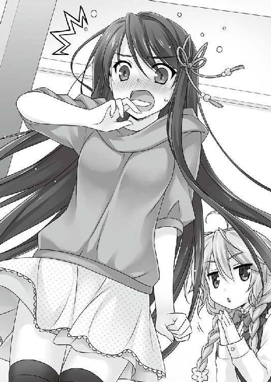
おかしな二人組が歩いていた。
奥志麻駅付近の、如何にも地方都市らしいシャッター街のアーケードを抜けて、南へ。
地元に詳しい歩き方ではなかった。どこかを目指して歩いている様子とも違う。行く先には迷っていたが、歩みはしっかりと躊躇いがない。明確な意図があるのだ。
「どう？」
「..................」
「無駄口叩かずに捜せ？ 無口なクセに一言多いヤツ」
ぶっきらぼうに皮肉を付け足した少女と、やたらと長身の男の二人組。
奥志麻のような長閑な地方都市には似合わない、奇矯な二人であるが、かといって大都市なら似合うかといえば、それも怪しい。
片方は長袖にハーフパンツという身軽な恰好の少女で、場の浮き具合ではまだ幾分かマシだ。もう片方はどこから見ても目立つ男だった。長身で、隣の少女とは頭二つ分ほど違っている。大凡二メートル近い。それだけで十分人目を惹くが、ぶ厚いコートをぞろりと着込んでいた。コートは隙間なくピッタリ合わされ、立てた襟も閉じている。帽子を深く被っているせいで、他人から見えるのは、鍔の下から睨んでくるような眼光だけ。
端的に言って、怪しすぎるコンビだった。
「どうやって捜す？ 一週間はゆうに経ってるわ」
「............」
男の声は蚊が鳴くよりも小さいが、少女には聞こえているらしく、会話が成立していた。
「ここへ逃げ込んだのは間違いない。問題はここから。アテはある？」
「..................」
「ないか。ないよね。どうするか」
二人とも考えるのに夢中だったからか、ぼさっと突っ立てていた長身の方が、前から来た自転車と接触した。
倒れる自転車。微動だにしない長身コート。道路にバラ撒かれるタマネギとジャガイモ。
中心街を離れれば、田畑が多く残されているのが奥志麻市だ。地産の野菜が置かれた無人販売所も点在するが、昨今の不景気と不人情のアオリで次第に消えつつある。
「おい、テメェ、どこ見てやが......ひ、ひぃい」
自転車を漕いでいたオッサンは長身コートを睨み付けるや──
何かにビビって、荷物もそのままに奔って逃げた。
未だ思考中なのか微動だにしない長身コートを余所に、小柄な少女がジャガイモを一つ拾って、しげしげと眺める。
「あーあー、もったいない、もったいない」
「..................」
「私に訊く前にちょっとは自分で考えろ。......まあ、虱潰ししかないでしょうね。ヤツが居るなら、必ず騒ぎが起きる。それを捜せばいい。正直、昼間は出歩きたくないんだけど」
「..................」
男は、異論を唱えるように口元を歪めた。
コートの襟で隠されていたが、唇の隙間から覗いたそれは、間違いなく、まるで犬歯を思わせる大きく鋭い牙だった。
「いや、目立つからじゃなくて......見てるだけで暑苦しいから、アナタのコート」
「まったく、キミはいつまで経っても考えがなさすぎる。もっと思慮というものを身に付けるべきだ。そうやって落ち着かないことばかりしているから、すぐに怪我をする」
「こっちへ来て怪我をするのは、初めてじゃないかな」
「......帰ってからはな。一年前だって......いや、それはいいが。とにかく、キミにはあるべき熟慮が、警戒が、注意深さが、怖れが、足りていないんだ」
「うん、はい、まあ、そうです」
ちゃんと着替えた後で、怪我が治るまで先延ばしにされていた碧流の小言を、ここぞとばかりにまとめて聞かされることになった。
それもこれも、あの日の事故──叔美を助けた（？）日の出来事が原因だ。
一週間前。
取り上げた『クリームパン』に釣り上げられた叔美が襲い掛かってきた顛末には、一言でいえば、間抜けな事故というオチがついた。
通りへ飛び出した瞬間、一條は車に引っ掛けられたのだ。
非道い話もあったもので、ビビった車はそのまま一瞬も停止せず、遥か彼方へ走り去っていった。いわゆる轢き逃げ？ だが、一條的には、相手の態度に感謝した。
やむなくとはいえ、ほとんど狙って飛び出したのだが、まさか相手が車とは......。大事になっていれば、相手にとっては迷惑どころではなく、その後の人生を左右してしまう。
非道い話だったのは、一條の方だ。
（......すみませんでした、運転手のひと）
恐慌して走り去る車のバックを眺めながら、胸中で手を合わせる。
誰にとっても被害が最小で済んだ結果に、改めて胸を撫で下ろした。
一條のハタ迷惑な行動は、叔美を逃がさない為だ。
拘われば１４に、死に近づいていく。話し掛けただけでも危険が迫ってくるのだから、危険物にも程がある。
死んでは元も子もない。自分からは近づけない。では、どうするべきか？
一條の出した答えは、不動の山の如く動くことなく、相手の自主性と善意に付け込む
──だった。
叔美から近づいてきたのなら、こちらからは近づいた事にはならない。自分で行動を選んでいないのだから、その分、１４への到着を先送りできる──という理屈だ。
屁理屈っぽいが。
ついでに言うと、真っ当な性根の人間であれば、自分のせいで誰かが怪我をしたと思い込んだ時、後ろめたさと動転とで次の行動は大凡決まってくる。「その場を動けなくなる」か、「卑怯にも見捨てて逃げる」かの二者択一。
叔美は、逃げる方を選ぶような悪い娘には見えなかった。
「おい、生きてるか!? 死ンでねえのか!?」
そして、事情のわからない叔美は、一條の目論見通り、「自分が追い掛けたから飛び出して怪我をした」と思ったのだろう。案の定というべきか、真っ青になって、路上に倒れ込んだ一條に駆け寄ってきた。
これもまた、相当に非道い話である。
後でどう謝ろうか、いっそ謝らない方が平和だろうかと思案しつつ、狼狽する叔美の百倍も冷静に、文字通り身体を張った選択の結果を確かめる。
６４２─■■■■
ラッキーだったな。キミは車に引っ掛けられはしたが、最悪の羽目には陥らなかったようだ。
ゴロゴロと転がってから、地面に大の字になる。キミを引っ掛けた車は、残念ながら彼方へと走り去ってしまった。まったく、事故を起こして謝罪の一つもないとは......。
さて、細かいことはどうでもいいとして、だ。無事かどうかは、まだわからないぞ。
上体だけ起こして、身体をチェックしていく。手足は無事に付いている。だが、右足が痛い。下手をすると折れているだろう。
なるほど、痛い筈である。
全ては一條の計画通り......のワケはない。『本』のおかげで、運否天賦とは言わないまでも、出たとこ勝負だったのは否めなかった。
選択視が見えても、一寸先は箱の中。開けてみなければ、中身の『運命』はわからないのだ。
体力・２０／１８
状態・負傷／右足捻挫
ステータス欄を見てみると、状態が変わっていた。体力も減っているが０にはなっていないから、このまま墓の下には直行はしなくて済みそうだ。
ＰＧ６４２の記述の最後には、幾つかの選択視が。
「..................」
ほんの少し考えて、その中から「碧流に連絡を取る／１７２」を選んだ。
またページが捲れる。次のＰＧの記述に目を通すと、『本』を閉じた。
選び終えた『本』を閉じてしまうのは、一條の癖みたいなものだ。さっきまでは１４の迫る気配にせっぱ詰まって、そんな余裕はとてもなかった。
閉じられた『本』は、大人しく消えてしまう。
──《分岐点》をやり過ごせた、ということだ。
一條は安堵の息を吐く。肩から一気に力が抜けたのがわかった。自分で思っていた以上に緊張していたらしい。やろうと思えば、このまま『本』を読み続けられるが、その手の意味のないことからはとっくに卒業している。
重要な《分岐点》がやって来れば、この『本』は自分から現れて教えてくれる。
そういう仕組みだ。
変わり映えのない毎日を過ごしてきたという自負のある一條の前にも、平均して週に一度はそんな機会がやって来た。
人生を劇的に変化させる選択視は、得てして地味な見た目で、誰にも気づかれない内にすぐ傍を通り過ぎていく。立て続けに現れたりすることは滅多にない。さっきまでのような状況は、極めて異例で特殊なのだ。
携帯で『アンブロシウス』に連絡して、それを叔美に手渡したところで、本格的に足が痛み始めた。いよいよ動けない。
「おい、これは何だ!?」
「電話の相手に状況を説明して」
「オマエ、結構な怪我なンじゃねえのかよ!? ちっとは焦った顔しろよ!!」
その後、叔美と碧流の間で要領を得ない遣り取りがかなりの時間あって、痛い足を抱えながらことの進展を待つ羽目になった。苦労惨憺の挙げ句、タクシーに乗った碧流がやってきて、一條が病院に運ばれたのは、たっぷり四五分は後のことだ。
ちなみに、例の『クリームパン』はというと。
「うん、勝ちとった食い物はすっげー美味い」
迎えを待っている間に、叔美が、まるで自らが仕留めた獲物のように、持ち主に何の遠慮も断りもなく、欠片も残さず平らげてしまった。
「さよなら、クリームパン。キミは『運命』を果たし終えたんだね......」
......当時の状況を回想し終えても、碧流のお説教は続いていた。
付き合いきれないからか、叔美はとっくに避難して姿を消している。
もうほぼ治った足を見て、ふと思う。
叔美と行き遭う直前、巫女さんに詰め寄られた時も『本』は現れた。あの時、「逃げ出す」ではなく、「話し掛ける」を選んでいたら、そして、予想通り川に落ちていれば、叔美と遭うことはなかったかもしれない。
過ぎたことは過ぎたこと、だ。
あったかもしれない分岐の先を想ったところで、何の意味もない。一條の信条にも反している。
「キミのことだから考えはあったんだろうが、無茶をするのは勧めないし、無茶をしたところで得るものはない。まして、その結果がこの様では......」
前を向き直ると、碧流が大きく肩を上下させていた。お小言も一段落ついたらしい。
「過ぎたことは、まあいい。今の話だ。......一週間経った。キミのたっての願い通り、あの子をこの家に置いた」
「うん......その、ありがとう」
「姉弟で、礼はいらない。それよりも、キミも復帰した。そろそろ事情を説明してほしい」
「実は......その......叔美が、おかしくて......」
「笑い話が得意なタイプには見えないな。イヤまあ、わりと笑えるヤツには違いないが」
「そうじゃなくて、えっと......そう、変だったんだ」
事故の日から今日まで、大ざっぱな説明しかしてこなかった。一條自身、何をどう説明すればいいのか、見当がつかなかったからだ。一週間、ベッドで療養しながら考えていたが、やっぱりこれっぽっちもわからない。
仕方ないので、あの日起こった出来事を、順番に見たまま説明することにした。一條の『本』のことを、姉の碧流だけは知っているのだ。
一通り説明が終わると、黙って聞いていた碧流は、形のいい眉を思案顔に顰める。
「なるほど、オカシイな。オカシイというより怪しい。そんな妙なものは、私にしたって聞いたことも見たこともない。勿論、私には『本』も見えないが」
「あれは......一体何だったのかな？」
「キミにしか見えないことを、聞かれてもわからないよ。だが、引っ掛かる。その『見開きの１４』を、キミはどう思った？」
「それは、印象の話？」
「印象は大事だ。キミは、世の中を本として見る。普段と違っていたのなら、キミが意識はしていなくても、何かを感じ取ったということかもしれない」
「......怖かった、かな」
怖い。恐ろしい。避けがたい。逃げ出したい。
アレは、よくないモノだと。
正体はまだ何一つわからないが、その事実だけは明白で揺るがない。
「......わかった。キミは怪我が治ったばかりだ。また不用意に危ういことをしないように。叔美には、私から訊いてみよう」
いっそ本人に問い質そうかと思っていた矢先に、早速釘を刺されてしまった。
「でも......僕の方が安全じゃないのかな？ 何かあれば、『本』が現れるし」
「キミが不安に思うのは判るが、おそらく大丈夫だ。この一週間、何事も起こってないだろう？ キミが見た『１４』を疑ってはいないが、おそらく、一番危険なところは去ってしまったのだろう」
碧流の言う通りだった。
一條も、叔美を連れ帰った後、１４に備えて身構えていたのに、ずーっとベッドで寝ていたせいか、この一週間、『本』が『現れる』ことはなかった。
１４は去ってしまったのか？
台風のように、自然に通り過ぎてしまったのだろうか。
腑に落ちないところもあるが、『見開きの１４』なんて異常がいつまでも留まっているのは、別の意味で不自然ではある。仮に、そんな異常が間近にあるのなら、とっくに大きな事故や事件が起きていなければならない。
「わかりました。叔美のこと、お願いします」
いずれにしても、だ。怪我が治った以上、猶予も終わり。
叔美をどうするべきか。本人次第のところもあるが、この先を考えなければならない。いつまでも、碧流に頼っているわけにはいかないのだから。
一條の内心を見透かしたように、碧流は言う。
「休息は終わりだ。キミにも遣るべき仕事がある。起きられるようになったことだしな」
下の階の店内で叔美が待っていると、碧流が下りてきた。
どういう理由か、あからさまに不機嫌そうに眉が寄っている。クールそうに見えて、碧流は顔に出やすいタチなのだ。特に弟絡みは。
「一條のヤツは？」
「すぐに下りてくる。今日からは仕事に復帰する」
叔美が『アンブロシウス』に留まるよう仕組んだのは一條だが、そんな事情を知る由もない彼女からすれば、ことの原因は碧流にあった。
先週、『クリームパン男』こと千里一條は全治一週間の怪我を負った。それは困る、と横から口を出したのは、碧流である。この『アンブロシウス』の従業員は、実のところギリギリだ。一條が欠けたままでは回らない、と。
知ったことか。
吐き捨ててやりたいところだったが、一條の怪我の大元は自分なのだから、借りを作ったまま逃げ出すのは、後ろめたかった。
「『働かざる者食うべからず』、だ」
叔美の退路を罪悪感で断ってから、碧流が付け加えた。
「何だよ、それ」
「働く者は食う資格があるということだよ。キミはここで働く。借りを返す。その代わり、ここにいる間は私が食わせる。理に叶っている」
深く深く悩んだが、一條が復帰するまでという約束で、叔美は『ここ』に残る約束をした。
それから、目まぐるしく一週間が過ぎている。
「眉間にシワ寄せて、えらく機嫌わるそーだな」
「ああ、機嫌は良くない。主にキミのことでだ」
言いにくいことでもハッキリと言うのは、叔美の認める碧流の数少ない美点だ。
「オマエの機嫌とか、知ったこっちゃねーけど......アタシが原因だってンなら、さっさと追い出せばいいンじゃねーの？」
「自分を追い出せと言うのは、中々逞しいな」
「そもそも、アタシは得体の知れないヤツだろ？」
叔美にだって、小さじ一杯分くらいの一般常識はある。それに沿って考えるなら、生まれも素性も判らない正体不明を、あっさり家に引き込んで働かせる碧流や一條は、頭の何処かが致命的に壊れているんじゃないかと思えた。
「そうは、いかない」
碧流の表情は変わっていないが、腕を組んで叔美を見下ろす態度は、心底残念そうだ。
「『借り』があるからというだけじゃない。キミみたいなハグレ者を拾うのが、我が家の家訓であり、代々の『仕来り』だ。キミを追い出すと、お祖母様の遺言に背いてしまう」
「オマエの婆さン、物好きなのか？」
「ウチは、『ヒトデナシ』なんだ」
「それは言われなくても知ってる」
「その『人でなし』じゃない。──『ヒトデナシ』だ」
開店には少し早いが、碧流は看板を表に出す用意をする。手を動かしたまま話を続ける。
「その昔、奥志麻は流刑地だった。時には、その中に真っ当な人ではないもの、つまり『人で無し』も混じっていたという。嘘か本当か、今でも『ヒトデナシ』の末裔だという者がちらほらといる。我が家もその一つだ」
叔美はキョトンとした顔で聞いていた。
「悪党かよ」
「日本語が通じないのか。学がないと将来、格差社会の壁に踏みにじられるぞ。現時点でも、私に踏みにじられているが」
「うっせー、よけーなお世話だ！ つーか、セキュリティ意識足りてねーンじゃねーの。あのな、鍵かけないで夜寝たら、身ぐるみ剥がれた上に内臓まで抜かれるような場所だってあるンだからな」
よくあるギャング映画のように、叔美は斜に構えた態度で、テーブルにドカンと腰を下ろして講釈を垂れる。
「夜はキチンと施錠する主義だから、安心だろう」
「そうじゃねー！」
「奥志麻はウチの縄張りだ。そして、ムカつくことにキミは客人だ。こともあろうに、一條が怪我をしてまで連れてきた」
「連れてきたンじゃねえ！ アタシが付いてきてやったンだ」
「どちらでもいい。順番や目に見える些末な物事の話はしていないからな。見えない成り行き──つまり、縁のことだよ」
「だいたい縄張りだぁ？ ギャングか何かか、オマエらは？」
「私たち......千里家は、まぁ、この土地を守っているわけだよ。そういう役柄なんだ。昔は、防人だとか地守だとか言ったらしい。だから、キミがロクでなしだろうとひとでなしだろうと、縁が遇ってしまった以上は、世話をする」
不満たらたらの顔でしれりと述べる碧流に、叔美は机の上で身構えたまま、口の端を釣り上げて見せる。それは不敵というよりも、この異邦人の少女が奥志麻に来てはじめて見せる、ハッキリと言って兇悪な顔だった。
「世間知らずのお嬢ちゃまが、『世の中の不幸』ってヤツをナメてンじゃねえぞ。後で泣いて謝ったって遅せーンだからな」
まるで嘲笑うように、面と向かって宣言した。
夜が来る。
日が暮れて以降が、『アンブロシウス』の時間だ。
開店は一八時、閉店は二六時。
この手の商売は水物だ。決まり事は、「概ねそれぐらい」程度しかアテにはならない。暇を持て余した柄杓横町のご老体たちが早めに遊びにくれば、時間前に店を開くこともある。愚痴を零すお客が長く居つくと、閉めるのが二八時を回ることも少なくない。
勤労学生として、一條は『アンブロシウス』でアルバイトをしている。実家の手伝いというのが実情だが、キチンと正規の時給は出るので助かっている。
一條の通う鷹崎南高校はバイトを禁止していないが、この件は極めて厄介な事案だ。
『アンブロシウス』は、界隈では珍しい古風な正統派バー。いかがわしい店ではないとはいうものの、当然お酒は出る。学生が働くべき環境として相応しいと、職員室のお歴々を説得できる自信は一條にもない。
二二時以降は店に出ないようにしているし、実家の手伝いということで、学校からお目こぼしもされているが、いつ何がどう転んで、突然バイト禁止の措置を言い渡されるか知れたものではなかった。要するに、危なっかしいサルナシ橋なのだ。
サルナシ橋というのは、Ｔ県西部にある澤谷山に、今も残る吊り橋である。葛類と木で作られた、古めかしいというよりも化石じみた代物で、谷に掛かけられた橋が風に大きく揺れる様は、今にも落ちてしまいそうで足が竦む。残念ながら、当世では風情よりも安全を重視。こっそりとワイヤーで補強されており、Ｔ県の名所の一つとして毎年多くの観光客が訪れる。
『アンブロシウス』は、業種が業種だけに給料はいい。そこいらのコンビニよりも。
世知辛い話でも、渡る世間はまずお金。人は経済原理の歯車の運命から逃れられない。
そういうわけで、一條は輝かしい『未来』への積み立てとして、今日も『アンブロシウス』でのバイトを続けている。
一條が復帰したのは、たまたま土曜日だった。学業復帰よりも職場復帰が先になった。
平日と休日前では、『アンブロシウス』の客層も変わる。平日なら職場帰りの客の息抜きが主になるし、休日前には翌日を当て込んで出てくる客が相手で、騒々しい。
都会のオシャレなバーのように、クラシックの流れる光量の低い店内で、シックにグラスを傾ける──とは行かないのが地方都市の片隅である。
店の奥には、円形の見事な大テーブルが置かれていた。持ち込んだのは『アンブロシウス』の先代オーナー、碧流と一條の祖母だ。時代がかった店内に相応しい一品は、近所の暇を持て余した長老たちの社交場と化している。三日と開けずに開店直後からやって来て、卓を囲んで世間話に興じるのが常だった。
今日も、勿論来ていた。
「おい、蘭さん、小腹が減ったわい」
「ロックじゃ、ロックをバカにしてはならんぞ！」
「それがなあ、聞いておくれよ」
還暦も過ぎた爺婆たちが若者顔負けのファンキーな恰好で丸テーブルに入り乱れる。お馴染みの地獄絵図だ。
「カシオレ、１」
一條がオーダーを持って帰ると、学生オーナーに雇われた「店長」であるマスターが無言で頷く。
滅多に口を開かない寡黙なマスターは、髪に白いモノの混じり出した初老の男性。背筋は真っ直ぐ伸びている。
一條が見る限り、「紳士」という言葉がピタリと嵌る人物だ。先代の友人で、店を継いだ碧流に手助けを買って出たということらしい。詳しい事情は一條もよく知らない。
最後まで無言でシェーカーを振り、グラスにカクテルが注がれる。
細やかで、鮮やかな色。
酒の類には詳しくない一條だが、マスターがグラスに作る一品が、ちょっとしたアートだというのは理解できる。彼の手際を眺めている時間は、帰郷してから得た、数少ないお気に入りの一つだ。
「おい、酉さん。だから、アレは、ちょっとしたミスだったと言っておるじゃろうが、四〇年も言うことか」
「三味線じゃ、三味線じゃ。ロックに決めるぞい！ ｙｅｙ！」
「もうすぐお迎えが、迎えが......ああ、窓に窓に！」
「カシスオレンジを......あー、訊いてませんねー」
注文の品を丸テーブルに運んだが、いつも通り誰もまともに聞いてないので、ひっくり返らない場所を選んでグラスを置いて大人しく引き下がった。
あの綺麗なグラスの中身が、キチンと飲まれるのを祈るばかりだ。
爺婆は騒々しいが、店の奥に集まっているので、カウンター周辺ではそれほど邪魔にならない。というよりも、ご長老たちもそこは弁えているのだろう。
都会の店と違い、客は近所の常連ばかり。羽目を外しても、度を超さないよう、距離感は慣れたものなのだ。
時間が経つ。お客が入っては出て、また入る。
その隙間を縫うように、一條と叔美は走り回っている。店が忙しくなると、一條だけでなく叔美も手伝いで入るのだ。
叔美が働いているところを見るのは初めてだった。店の制服がお仕着せみたいで、収まりが悪い。拾ってきたばかりの野良猫みたいに全身の毛を逆立てて、警戒心丸出し。触られるのが怖いみたいにお客から距離を取ろうとしている姿は、一応でもウエイトレスとは思えない。
「その......大丈夫かな？」
「オマエの姉貴がやらせてンだよ！ どうなったって、アタシは責任もたねーからな！」
不安になった一條が心配して声を掛けると、叔美はジト目で噛みついてきた。
手際はいいので、持ち方を覚えて間もないトレイを掌の上でクルクル回しながらテーブルの間をするりと抜けていく姿は、軽快な燕を思わせる。今夜の店は大入りなのに、誰にも触れもせず動いているという事実だけでも、大したものなのだ。
「そうじゃなくて。いや、そっちも心配といえば心配だけど......そういう意味じゃなくて」
「......なにワケのわかンねーこと言ってンだよ」
訊かれても、困るのだ。知らない方がいいのかもしれない。しかし、自分より相当背の低い叔美を見下ろしていると、確かめておいた方がいいかもしれないとしみじみ思う。
悩んだ末、奥からこちらを横目に見ているオーナーに、ＳＯＳの視線を飛ばした。
返事はすぐにあった。
こちらの声が聞こえていたのか、碧流は黙ったまま、厳かに首を横に振った。
「だから、何だよ？」
「......何でもない」
「変なヤツ」
首を傾げながら離れていく叔美を見送りながら、胸中で小さく頷く。
世の中には、知らなければそのままの方がいいことってあるのだ。
詰まるところ常連しかいない店内なのだが、一口に常連と言っても、真っ当な客ばかりとは限らない。むしろ真っ当な人間の方が少ないんじゃあと、一條は思う。
類が友を呼んだのか、水が低いところに流れたのかはわからないが。
「キミ、新しい子かね？ どう、キャンギャルやらないかーい!?」
ハイテンションで叔美に呼び掛けるのは、綺麗に七三に分けた髪と眼鏡の中年男性だ。通称「部長さん」。アフター５のテンションはちょっぴりおかしいが、市役所勤めのお堅い役人である。決まって、仕事帰りに寄っていく。実際には、まだ部長ではないらしいが、部長と呼ばれると幸せそうなので、皆で生温かく呼んであげるようになったらしい。
「見たまえ、この素敵な『コウジロウ』くんを！！！！！」
店の中に貼られている市の観光ポスターを指差して、強調マークが山ほどつきそうな勢いで力んでいた。
コウジロウくんとは、奥志麻市の公認マスコットだ。公募されたデザインが採用された。スダチをイメージした緑で丸い物体に短い手と足が付いている。愛らしいかどうかは微妙......というのが一條的感想だが、市の偉い人は全国区で有名にしようと本気で画策しているという。
えーーーーーと思ったが、一條は口には出さなかった。日本人的奥ゆかしさである。
「......可愛くねー」
離れた位置から横目を送っていた叔美には、奥ゆかしさが搭載されていなかった。
「えー!? 今、これがキてるのよ！ コウジロウくんの着ぐるみの隣で、『いい感じ』の衣装で、駅前でビラ配りとかどうよ!!」
「ギャー！ アタシに近寄るンじゃねえ！ アッチいけ！」
いい感じってどんな感じ？ 一條はちょっぴり想像を逞しくしたが、叔美の方は接客業にあるまじき態度で「部長さん」を今にも蹴り飛ばしかねない。
一條はそれとなく間に入って、今の内に早く行けと叔美に目で合図した。
野良猫少女は「はんっ」と鼻を鳴らして、安全地帯のカウンターの裏へと走り去った。
「何だか大変そうな新人ちゃんだねえ」
「悪い子じゃないんです..................多分」
フォローをするのも、一條の仕事の内だ。
例えば、眼鏡の女性「三輪さん」は一條にとっては知己なので、バイト先に現れるとやや微妙な気分になる相手だ。
普段、三輪さんの職場で顔を合わせる時とは、雰囲気がまるで違う。仕事中とプライベートで切り替えるタイプらしい。
「どっかしたー？」
当人は、こちらの心情などお構いなしに、のんびりした声で気楽に呼び掛けてくる。
身を乗り出してくると良い匂いがした。香水かもしれない。
同世代の女の子とはまるで違う。若さのエネルギーを失くした分、持てる熱はずっと高い。それが頭に直撃する。クラクラした。
「すぐにお持ちします」
オーダーを確認して、逃げるようにその場を離れる。
加えて言うなら、顔見知りに接客するというのは、何となく座りが悪かった。
碧流に言わせると、「仕事への熱意が足りない」ということになるのだろう。
中にはタチの悪い客もいる。
例えば、今、カウンターの端っこにいる男がそうだ。
見た目は、ハッと目を惹かれる、モデルかと見紛ういわゆる水も滴るいい男だが、中身の方は些か困り者である。
「しゅ先生」とここでは呼ばれているが、教育機関の関係者でないのは明らかだ。特定自営業の方々で、ヤバい時に呼ばれたら奥から出てくる方のがまだ幾らかは似合う。
「おお......っと、財布、忘れてきちまった。マスター、今日はツケで」
パンパンと全身をまさぐるいつものポース後ににんまり。
ちなみに、彼が財布を持っていた験しは一度もない。
流石に気になって碧流に訊ねたところ、
「アレ、いいのかな？」
「アレ、というと？」
「えっと............しゅさん」
常連だからツケというのはわからなくもないが、毎度となると話が違う。
「いいんだ。あれで昔馴染だからな。まあ、愛想良くしなくてもいいが、気分良く飲ませてやるといい。役に立つこともある男だよ」
変人ばかりが客にやってくる小さなバーとはいえ、人間模様は複雑怪奇なのだ、と一條はまた一つ学んだのだった。
「もー駄目だ」
遂に、叔美は音を上げた。
今夜は、ひっきりなしに客が来て、昨日までの倍ほども忙しかったのだ。物事には限度がある。ただでさえ不慣れな『労働』に加えて、始終店内を走り回らされて、疲弊で目の前がチカチカしていた。
店の裏に逃げ込んで、待機室を兼ねた和風の畳床に、仰向けで大の字になって倒れ込む。いつぞやの路地裏の再現だ。
「この程度でだらしがないな。忘れるな、キミは労奴だ。死ぬまで働かねばならない」
「どんな暗黒企業だよ!? そしょーすンぞ」
「......ちっ。キミは、知らないことが多いクセに、詰まらない知識だけはつけているな」
「オマエみたいなブラック女社長に騙されちゃーたまンないからな！」
上体だけ起こして一息文句を吐いたところで、叔美は如何にも弱々しく、同情を誘う態で背中を丸めた。実際に弱ってはいたのだが。
「つーか、今日はお客多いよ、多すぎるよ。こんなの初めて......もう駄目、許して」
「もう弱音を吐くのか。その程度か。ふふふ、キミという女の器も、たかが知れているな」
「──ッッ、だ、誰が弱音なンか吐くか！ アタシを舐めてンじゃねえぞ！」
「素晴らしい。では、もっと働け。美山の上で、ライブイベントがあったらしい。その帰りの客だろう。喜べ。稼ぎ時だ」
ギリギリと歯ぎしりの音が聞こえてきそうな顔で、叔美は口の減らないオーナーを睨む。
「......他に、アタシにいうことは？」
「『働かざる者食うべからず』」
「くたばれ、鬼畜生ッ!!」
腕組みして仁王立ちのまま、碧流は遠い目で窓の外を見る。
「そうとも。私は仕事の為なら、鬼にも悪魔にもなるとも。この店は、お祖母様の残してくれた大切な宝物だ。私が守らずしてどうする......ッ」
「そんなに大事なお宝なら、アタシを働かせてないで、自分でやりゃーいいンだ」
「言いたいことがあるようだな。腹を割って話を聞こう」
叔美は、矜持と体力を秤にかける。ギリギリで傾いた。
「.......................................休ませろ。一時間ぐらい」
「却下」
碧流は、何処までも冷酷非情だ。
「聞くつーたろ、さっき！」
「だから聞いただけだ。さあ、言って満足したなら、死ぬまでじゃなく、死んでも働け」
「休ませないと呪うぞ！ 呪いは怖いぞ、恐ろしいンだぞ！」
「やってみろ。私は吐いたツバは何があっても呑まない女だ」
「でも、流石に今日は大変だったし......一時間は駄目でも三〇分くらいは」
路地裏に倒れるほど空腹でも意地を張る叔美が、水の切れたアサガオみたいに萎れている。障子の影から見ていた一條の胸の深い所で何かがチクリと痛んだので、犬も食わない二人の労争に恐る恐る口を挟むことにしたのだ。
「.........珍しいな。キミから頼み事とは」
「自覚はないけど。まあ、たまにはよくないかな？」
「うん、そうだな。──キミの言うことももっともだ。三〇分の休憩を許そう」
吐いたツバを呑みまくっていた。
「おいおい、さっきと言ってること違うジャン!!」
「そういうこともあるかもしれないが、ないかもしれない。きっと些細な問題だろう」
最悪だ、このブラコンオーナー！
と扱き下ろしそうになったが、この状況で口を滑らせたら、折角の休憩も水泡に帰すという計算が働いた。叔美は、自分の宿命的とも言える負けん気の強さをグッと堪える。今夜だけだと誓いながら、不本意な敗北を涙ながらに飲み下した。
碧流はとにかく弟に甘い。本当に甘い。一條にはバレないように振る舞ってる様子だが、端から見ていれば筒抜けだ。というよりも、気づかない一條の方がヌケている。
今日だって、病み上がりの一條を何くれとなくフォローしていた。こっちの苦労には、これっぽっちも関知せずだったのに。
大体、碧流が叔美に厳しいのだって、きっと、一條に怪我させてしまったことを根に持っているからに決まってる。絶対に。
ブラコン、ブラコン、ブラコン。
呪いの言葉のように、口の中で三度唱えて、爆発寸前の悪態を我慢した。
「......ぐぐぐっ、三〇分休憩する」
「うん。復帰が一秒でも遅れたらお仕置きする」
最後まで、冷酷非情な碧流だった。
「それでは、お客様も捌けましたし、時間ですので失礼いたします」
「お疲れ様でした」
奥の部屋にマスターが顔を出して、丁寧に閉店の合図を告げた。
一條は反射的に正座して頭を下げる。正座はない、と毎回思うが、マスターの醸し出す空気に当てられてしまう。
当のマスターは、微笑ましい様子に苦笑を浮かべるわけでもなく落ち着き払い、今夜も紳士然と立ち去った。
入れ違いに、席を外していた碧流が戻ってくる。
「マスターは帰ったのか。今夜は労っておこうと思ったのに」
「そういうのは、別に気にしない人じゃないかな」
時刻は二七時を回っていた。
叔美はとっくに寝ているが、一條と碧流はそういうわけにもいかない。何かあってはいけないので、閉店までは奥の部屋で待機しているのが常だ。
碧流と二人っきりで過ごす時間は、一言でいえば、気まずい。小さな部屋で、話す話題にも事欠きながら、時間が過ぎるのを待っている。
今夜は多かった客足がようやく絶えたことよりも、重苦しい時間が終わった事で、一條は肩の荷を下ろしたような気分になった。
学校では、大層な有名人で美人の姉と一つ屋根の下にいると羨む向きもあるが、そんなに喜ばしいものではないとしみじみ思う。真実を知らないってのはいいですね、というヤツだ。
二人で店内の椅子を、テーブルに上げていく。
「......久しぶりで、疲れなかったか？」
どこか遠慮がちな問い。そして、柔らかな腕の感触。
後ろから碧流に抱きしめられていた。近すぎる体温の熱と石鹸混じりのいい匂いが近くて、心臓が跳ねる。
「一週間寝てたから、その分、働かないとね」
どう返せばいいのかわからない。精一杯普通を繕った自分の声が、妙に素っ気なく聞こえてしまう。
「ところで、キミが復帰したという事は、アレを働かせている理由はなくなったわけだが」
思い出したように切り出される。アレというのは言わずもがな、叔美のことだ。
一條の代役として引き留めていたのだから、もはや彼女が出て行くのを止める理由はない。今夜は一緒に働いてたが、本人が約束を忘れてしまっているのか、それとも成り行きで居ついているのかは──よくわからない。
「あの......もしよかったら、本人が自分から言い出すまでは、置いてやってくれないかな」
「..................まあいいだろう」
かなり良くない、と声音が露骨に語っていたが、敢えて気づかないフリをした。
「そういえば、碧流さん。叔美に言ってたこと......」
「姉さん、だ。......そう。ヤツは死ぬまで働かねばならない、奴隷のように」
「......違う、そっちじゃなくて」
碧流は、一條から見ても相当の変わり者だ。
学校では、立てば芍薬座れば牡丹歩く姿は百合の花の優等生として知られている碧流だが、誰もがそうであるように、家の中と外では得てして違う顔をしているものだ。
学校での優等生ぶりと自宅での姿だけでも、二重人格で通用する。怖いので面と向かって指摘できないが。
「この店が、お祖母さんの残してくれた宝物だって......」
「大切な場所なんだ。キミにとっても、そうだろう。千里一條も、千里家の人間だから」
「......うん、そうかな」
「キミからそんなことを訊いてくるのは、初めてだな」
「まあ、たまには」
「千里の家は、昔からずっとこの辺りを守る役目を担ってきた。今となってはこの通りの有様だが、せめて私は、最後まで、自分に与えられた責任を果たしたい」
「その、お祖母さんの為？」
想い出に眼を細めた碧流は、一條の知る限り彼女にしては本当に珍しく、まるで悔いのような色を浮かべて、
「お祖母様には、大きな借りがあるんだ」
そんなことを言った。
そろそろ夜明けも近い時刻。
コート男ことヨブスとその相棒の少女ウシオは、未だ奥志麻を彷徨っていた。
誰もいない明け方を、平然と、普段通りの足取りで。
二人に姓はない。彼女と彼に与えられたのは、最初からこれだけだったが、不自由はないので取り立てての不満もない。
「ねえ、やっぱりアナタって、注目され易いんじゃないかな」
「........................」
「気のせいじゃなくて、昨日も、通行人とすれ違う度にマジマジって見られてた。アナタが目立ってるんじゃないの？」
「............」
「スタンダートな服装？ そうかなあ」
疑問には思ったが、ウシオも自信はない。彼女たちは、「力」に比べて「経験」の絶対量が不足している。つまり、アンバランスなのだ。
「まあ、いいわ。それよりも、何処へいけばいいかな？」
「..................」
しばらく思案して男は答えたが、ウシオは返事代わりにコートに包まれた男の足を蹴り飛ばしてやった。石でも蹴ったような手応え。男は、へとも感じていない。
「無駄なことするな？ いいのよ、ムカついたんだから。ま、それもアナタに言わせれば、無駄なのかもね」
見た目よりも性格がキツいのか、柳眉を逆八の字にしてウシオは怒る。だが、不思議と熱量に乏しく、目を逸らせば忘れてしまいそうに気配が淡い。
「だからね、見つかるまで捜す......じゃなくて。そもそも、おかしくないかと言ってる」
「............」
「あー、もう、つまり、私たちは今迷子でしょう。それはいいとして、追い掛けられないのはどうしてよ？ アレが何処にいても、すぐに判る......という触れ込みだったのに。一週間も無駄にするとか、どうかしてるわね。発信器とか、便利な物を付けてあれば楽だったのに。すぐ壊れるからって、何もしないのはどうかしら。おかげで、こっちは頼りにならない相棒と勘を頼りに、東へ西へ。そろそろ飽きもくると思わない？」
捲し立てたものの、この同僚が木石同然に無駄なことをしないとよく知っているウシオは、反応を期待していたわけではなかった。
「..................」
にも拘わらず、聞こえない声で明確な返事があった。
「......何らかの手段で欺瞞しているのかもしれない？ そんなこと言われても、そんな話聞いてないし。大体、そんなことができるなら、今までどうして誤魔化さなかったのよ」
今度こそ返事はない。
「まったく役立たずのデクの坊。この近くには居る筈なんでしょう？ アナタの耳で見当くらいはつかないの」
「.........」
「聞こえてる？ ......いいけど。何を聴いてるんだか」
他に行く宛てもなく。
男が目線で示す方向へ、ウシオは先に立って歩き出した。
土曜日の翌日は日曜日である。
世間が休日と浮かれている時こそ、『アンブロシウス』のような店が稼ぎ時なのも、また自明の理。おいそれと惰眠を貪っておられないのが一條の環境だった。
『本』が見えるぐらいでは、世の中の理は変えられないのだ。
今日も、いつも通りのコースを取った。
一週間寝込んでいた分、やる気は余っているが、急ぎすぎても空回りして、ロクでもない結果に終わる。焦らず、日々と同じことを積み重ねていくのが、一條の信条だ。
平日なら学校から戻った後で最初に手を付ける仕事だが、今日は日曜。叔美から「薄っぺらだ」と扱き下ろされたように、普段の人間関係が薄っぺらな一條には、休日だからと出掛ける予定もない。午前中は惰眠を貪り、午後を回った辺りから、ゆるりと本日の仕事に掛かった。
店の在庫チェックをしている碧流から必要な品のメモを受け取って、その日の分の買い出しに近場の商店を回る。それから、仕入れ先をぐるりと回って注文を掛ける。そこまでが、一條の分担だ。
「叔美を拾ったのは、先週の日曜だっけ」
一週間ぶりに自分で自転車を漕いでいく。
動けなかった一條の代わりは、碧流と叔美で手分けしていたらしい。
仕入れるモノは様々である。急ぎで入り用なら電話で済ませてしまうが、余裕がある時は、店先まで直接出掛けて頼む。田舎らしい、「ご近所付き合い」の内である。
「おや、弟ちゃん、今日も精が出るね」
「はい、頑張ってます」
コースの折り返し地点にある、『アカデンチュウのデンキとポケベルの店』の頭が禿げたオヤジさんに挨拶してから、交換用の蛍光灯を頼んでおいた。
大規模量販店やネット通販に押された個人店舗はすっかり下火だが、この界隈には、今時「ネット何それ？」な昔気質の頭の固い親父どもが生き残っている。
「後は、『金平』だけか」
一通り、買い物やら注文やらを済ました後で、最後に『金平』へ足を向けた。
柄杓横町から道を挟んで向かいにある鷲見町に、小料理屋『金平』がある。そこの主人から酒を一山受け取って、自転車の荷台に括り付けて持って帰るのだ。
アルコール類の仕入れには、馴染みの酒屋を使っているのに、わざわざ小料理屋に受け取りに行くには理由がある。
『金平』の主人は、ウラナリな見た目に違わず大の酒豪で、各地の酒造とよしみを通じ、玄人好みの地酒を手に入れてくる人物だ。
以前、碧流が『金平』で貰った「梅宿」なる酒を店で出したところ、スッキリとした飲み心地と深い味わいにファンがついた。と言っても、あの爺婆たちなのだが。
そういう馴れ初めで『アンブロシウス』でも「梅宿」を並べるようになった。奥志麻では中々手に入らない酒なので、『金平』の主人を通じて買い付けている。
一條は、くたびれたママチャリを押しながら南へ向かう。仕入れの荷物が小山のように積まれているせいで、漕いでいくとバランスが悪いのだ。
「......そういえば、あれから、出てないな」
叔美が『アンブロシウス』に留まるようになって一週間。１４の気配どころか、『本』が自動的に現れることのない、理想的な、平穏無事な毎日である。
言い換えるなら、『本』が現れて《分岐点》を告げない限り、人生は些末な差異......右折しようが左折しようが、目的地に辿り着くのだろう。
この『本』を手にして、最初に思い知ったのは──人間が、どれほど偶然に左右されるのか。
朝食の献立一つで人生の《分岐点》になることもあり、地獄の特訓をしても結果の変わらないこともある。本人の力や意志ではなく、気まぐれじみたダイスの目に決められているようなもの。
行く先は『本』のみぞ知る。先の見えない人の目で見通すのは至難の技だ。
──だとしても、やめたくはない。
一條は信じている。
毎日十円を貯金箱に入れれば、一年後は三千六百五十円。十年後で三万六千五百二十円。
日々の齷齪が、今見える『選択視』を変えなくても、きっといつか辿り着く「行き先」は変えてくれると。
「優雅な人生、万歳。でも、問題は──」
周りは閑散とした通りで、考え事をするには丁度よかった。
「悩み事が解決していない......ってことだよ」
つまりは、叔美のことである。
完全無欠に自業自得だ。悩むのが嫌なら、路地で手を差し出さなければ良かったのに。
詰まるところ、彼女を放っておけなかった。
言えば叔美は怒りそうだが、突き詰めれば「それだけ」なのだ。
一條が『本』に憑かれているように、叔美は『ＰＧ１４』に憑かれていた。そんなものが独りきりで倒れているのを、黙って見過ごすことができなかった。
「......まあ、過ぎたことは過ぎたこと」
後悔はものの足しにもならないので、前向きに現状を思案するべく、頭を切り換える。
叔美は、謎と秘密の塊だ。人見知りが激しくて、一條や碧流にも中々馴れないし、それとなく素性を聞き出そうとすると、もの凄い顔で露骨に話を逸らそうとするので、詳しいことは問い質せていない。
どこから来たのか？
あそこで何をしていたのか？
これからどうしようと思っているのか？
今、判っていることと言えば──
珍しく叔美が、昼食を持ってきてくれたことがあった。
１１６─■■■■
「おい、これ。置いておくからな」
食事を運んできたのは、無愛想な顔の叔美だ。
キミは、彼女の様子がどこか普通ではないのに気づいた。最初は、オドオドしているのだと思ったのだが、どうやらそれだけではない。彼女は、キョロキョロともしていた。
これまでの野良生活の賜物なのか。彼女は、物音や人の気配にヒドく敏感に反応する。
自動的に現れたわけでもない『本』を、わざわざ眼を眇めて読んでみる気になったのは、叔美の態度が妙に引っ掛かったからだ。簡素な記述の中で、叔美についての部分だけ詳細に著き込まれているのが不思議だった。
叔美は怪しい。
出遭いからして怪しかったが、立ち振る舞いにどこか真っ当ではない......単に流浪のストレンジャーだからでは片付けられないものがある。
やたらと警戒心旺盛なのも、最初はこれまでの習慣かと思ったが、一緒に生活して彼女に見慣れてくると、それだけではなさそうなのが理解ってきた。
叔美は、何かを捜している。正しくは、台所へ忍び込んだ鼠よろしく、猫が現れないかを警戒しているのだ。
──猫......ってなんだろう？
ＰＧ１４に憑かれた少女──叔美とは、何者なのか。
冷静に考えれば、『アンブロシウス』に招き入れたのも危険行為そのものだった。巻き込みかねなかったという意味で、姉の碧流にも申し訳ない。
やむにやまれぬ状況だったとしても、だ。
あの路地裏で行き遭ってしまった日。
向こうからやってきてくれた叔美を、どこへ連れて行こうかと悩んだ時に、
【あそこなら大丈夫】
と、声が聞こえたように思ったのだ。
『本』にも、声の記述なんて欠片もなかった。だから、気のせいには違いないのだろうが、不思議と一條は納得していた。
声。誰の声だろう。敢えて言うなら女性の声だったと思う。
聞き覚えはない。聞こえたのが、気のせいでなかったとして、だが。
そして、一週間は無事に過ぎてしまった。
今日まで『本』が自動的に、つまり、１４へ通じていそうな危険な《分岐点》が現れなかったのは、碧流が言うように嵐が去ったから、なのだろうか。
叔美を助けた時の見開き──ページ一杯に広がる「１４ へ行け」から感じた妖気めいたものがこの程度で収まるとは到底......と一條は本能じみたもので感じている。真夜中の海水浴中にすぐ足下でサメが泳いでいるような、得体の知れない怖気は依然続いているのだ。
ならば、アレはすぐ傍で息を殺して、こちらが隙を見せる機会を窺っているのだろう。
正直、甘くみていた。
碧流と同じように、幾らか時間を置けば１４という危機が消えるのではないかと、一條は考えていたのだ。
事実関係を整理すると、論理的に只一つのイヤな解答が導き出されてきた。
道の途上なのだ、と。
ここはまだ、ＰＧ１４という行き止まりに到着するまでの、迂回路の上にすぎないのだ。
「じゃあ、どうすればいいのかな......」
思考に夢中な一條は、端から見るととんだアホ顔を浮かべていたが、有り難いことに彼の『本』は、どんな状況でも伏線を見落としたりしない。
突然、灯る真っ赤な警告ランプのように、目の前に『本』が現れた。
３０２─■■■■
開い■ページは、何故だか■■■■■とになっ■■■。
■■■■■■■と■■■■■■■■
■■■■■■■■
現れた『本』に驚いて、咄嗟に一瞥した一條は眉を顰めた。
書いている内容よりも、先に目に止まったのは、翻訳ミスとでも言うべき文字化けだ。
一條は、『現在』の著かれたページを「翻訳」して読むことができる。それなのに、所々日本語に変換されず、『のたくり文字』のまま。まるで黒い虫食いのよう。
こんな有様は、これまでに一度もなかった。
「そこの」
マジマジとページの記述に見入りそうになったところで、急に呼び掛けられた。
一條は、慌てて何事もない風を装った。
この『本』は一條以外には見えないのだから、バカ正直に説明したりしなければ、幾らでも誤魔化しようがある。真実を告白したところで、『可哀想な子』のレッテルを頂くことになるだけなので、幽霊みたいな『本』に取り憑かれているという真実を、誰にも知られないように隠し通してきた。
「聞こえてないの？ そこの」
「どこのどなたかは存じませんが、なにか御用でしょうか」
ぞんざいに呼ばれたので、持って回って返した。
──珍しく後悔した。
文字化けに気を取られていたので、相手と選択視を確認する前に返事をしてしまった。
今ので選択視を選んでしまったらしく、パラパラと捲れながらページが進んでいく。
過ぎたことは仕方ない。「ルールその五」だ。選択にやり直しは利かないのだから。
場所は鷲見町。繁華街を縦横すればすぐ見つかるその通りには、「ようこそ、鷲見町」とアーチの看板が二つ、出入口に掛けられている。
その一つの手前に、二人組が立っていた。まるで幽霊みたいに気配の薄い少女と、初夏だというのにぶ厚いコートを着込んだ不気味な長身コート。
「............えっと」
流石の一條も絶句した。人間、見た目じゃないが、限度があるだろう。全方位的に怪しい二人組だった。あまりに周囲から浮きすぎていて、できる限り拘わり合いにならない方がいい、と確信してしまった。
「アナタ、妙な気配なんだけど」
つかつかと踵を鳴らして寄ってきたのは、運が良いのか悪いのか、少女の方。甲冑みたいに襟元までコートを着込んだ男の方なら、一條も「即・回・右」して逃げ出していたが。
「アナタ、知ってる？」
「何をですか？」
要領を得ない会話だなぁ、と思う。
拘わらずに逃げる機会は過ぎ去ってしまったらしいので、腹を括る。一旦覚悟を決めれば、物怖じしないのが一條の美点の一つだ。
「違うわね」
真正面から、少女が覗き込んでくる。背が低いので、見上げるようなポーズ。薄い空色をした眸が、淡い気配の少女にはよく似合っていた。
「..................」
少女が相方の方に振り向くが、相手は無言だ。
「何言ってやがるの。アナタが言った通りに来たら、結局勘違いじゃない。こういう時は、責任を取らないとダメなの。アナタに言っても無駄だろうけど」
まるで会話のような独り言。
改めて、次のＰＧに進んだ『本』に目を落として、驚きに息を呑む。
４２６─■■■■
「違うわね」
「この辺りだった」
今の一幕の描写には、男の台詞も著されていた。
記述が正しいとすれば、あの二人は意識できないような小さな声で会話しており、それをこの『本』が「聞き」逃さなかった、ということになる。
こんなことが出来るなんて......一條も初めて知った。
それに、もう一点。
さっき見た文字化け──「翻訳ミス」だが、次のＰＧに飛んでからは起きていない。
アレは、一体何事だったのか？
「捜索は順調だ。ワカサキチョウから」
「それって何処にあるわけよ」
「それって何処にあるわけよ」
「案内しましょうか？」
またやった......と思ったのは言ってからだ。いつものクセで、困っていそうな相手だからつい申し出てしまった。コート男の声は普通では聞こえないほど小さい。平然と聞こえるように対応したのは迂闊すぎる。
「......案内？ 何が？ どこに？」
「......案内？ 何が？ どこに？」
ＰＧの記述は、何事もなかったようにまだ続いていた。
「えっと......道に迷ってるみたいだったので、気になって」
ぎこちない作り笑いを浮かべて誤魔化す。相当分かり易く焦りが顔に出ていた筈だが、少女は気にもしなかった。
「ワカサキチョウへ行きたいんだけど、どこかな？」
イントネーションが独特だが、会話には支障のない日本語。しかし、眼前の二人はどこからどう見ても日本人とは思えない。
若前町は、鷲見町を通り抜けた向こう側にある。
これは、何処から見ても怪しい二人組だ。首を突っ込むのも相手を選んだ方がよくないか？ それでも、キミが自分の信条を貫いて、このまま二人を案内しようという奇特な考えを実行に移すのなら、行くべきはここだ／３１７─■■■■ へ行け
危険人物扱いされるかもしれないが、この二人をジロジロ検分してから、色々と問い質してみることもできる。聞いてみたいことを根掘り葉掘り問い質すのなら／２２９─■■■■ へ行け
後ろの二人と別れ、自分の仕事に戻るのなら／１８２─■■■■ へ行け
選択視は、もはやどれを選んでもあまり変わらない気がする。それなら、一條的に案内しないという選択はない。根掘り葉掘り問い質して「変なヤツ」と思われるのもまっぴらだし。
「丁度そっちの方向へ行くんです。途中まで案内しましょうか」
「そうしていいわ」
ぞんざいな物言いはお礼とは思えなかったが、不思議と不快さはない。少女の言い様に卑下も侮辱も感じないからだ。
「それじゃあ、ついてきてください」
さっき自動的に現れた『本』は、一体何を告げたかったんだろう。
《分岐点》の選択視では人生の筋道が大きく変化する筈なのだが、人間の身では、選択したことでどう変わったのかを知る術はない。結局のところは、不便な『本』だ。
胸の内でボヤきながら、いつものように『本』を閉じた。
またすぐに『本』が現れた。
「────」
今度こそ、一條は絶句した。
「え......また連続で？ それって、ここは......」
まだ《分岐点》の途中なのだと、『本』は告げているのだ。
「行かないの？」
「はい、今から行きます。ついてきてください」
もはや引き攣り気味の、精一杯の作り笑顔を装って、少女に促されるまま歩き出す。
「......人生の山谷が多すぎやしないかな」
一條は先導して歩いた。後ろから、少女とコート姿の長身がついてくる。
若前町は何もない簡素な住宅街である。鷲見町から大通りを渡ってすぐだ。ほとんど真っ直ぐに進むだけ。正直なところ、案内がなくても行くのは簡単だろう。
一條が敢えてガイドを買って出たのは、率直に言えば、奇妙すぎる二人組に興味を惹かれたからだ。チロチロと後ろを覗き見るほど、おかしな二人組である。
片方の少女は、可愛いというよりも綺麗。顔立ちは日本人離れしているが、何よりも肌の色がビックリするほど白い。どことなくマネキンめいて不健康そうで、そんな印象を受けてしまった自分の感覚を、一條はちょっぴり恥じた。
そんな淡い色の少女は、印象どころか行動も淡泊だった。物事を見ているのか見ていないのかわからない。それでも、声を掛けるとぶっきらぼうだが返事がある。
もう片方の男は、更に輪を掛けて変だ。
長身で、コート。一言で言えば、ただそれだけ。口元を襟で隠し、無口で時計のように規則正しく歩く。
（──この人たち、何者だろう？）
美女と野獣だろうが、美少女と不気味中年男だろうが、恋愛の自由を一條は広い心で迎え入れる。市条例と社会正義は許してくれないかもしれないが。
後ろからついてくる気配には、恋人同士の隅に置けない距離感はこれっぽっちも窺えない。全く狂いのない機械仕掛けのような跫音。人間がそこにいるという気にもならない。
３１７─■■■■
カチコチ、カチコチ。
二人組の正確極まりない跫音は、精密な時計の秒針の如しだ。ほんの一秒も差異がない。ネジを巻いてゼンマイで動いていると言われても、信じてしまいそうだ。
『本』が連続して現れた事やこの二人組の事も気になるが、さっきの「文字化け」の件が頭にこびり付いて離れない。これまで、あんな異常は一度もなかったのだから。
（......まだまだ、僕の知らないことがある）
一條は、気楽そうに浮かんでいる『本』を、眼を細めて睨み付ける。だからといって、何かの返事があるわけもないが。
鬱陶しいこの『本』は、時に「前兆」を告げる。おかげで危難を避けられたと思うこともしばしば。そして──
一條にしてみれば、あの事故以来、唯一の確かなものだ。
この『本』は「伏線」を見落とさない。例えば、一條が意識できないような小さな声だとしても、だ。
だから、その都度の記述をしっかりと読み込めば、何が起きているのかを、目や耳以上に明確に認識できる。
二人は、ヒソヒソと会話を続けている。
「どうかな」
「近いが、わからない」
「わからないって？」
「前と同じだ。隠蔽かもしれない」
内密な相談なのか、お互いに目を合わせず、蚊の鳴くような低く小さい声。端からは歩いているだけに見える。どうやら、キミには聞こえていないと高を括っているらしいが、「話は見させて貰った」ってヤツだな。
この『本』は役に立って素敵で最高だ、と思ったろう？
......思ってないよ。
二人の会話の内容は、イヤすぎるものだった。
日常会話では使う頻度のごく低そうな、不穏当な単語が幾つか混じっている。
女の方が、如何にも詰まらなそうに辺りを流し見る。
「何事もないわけはないのよ。だって、アレの周りでは、問題が必ず起きる。事故とか、事件とか。だから、捜すのは簡単だと思ってたのに。会社もそう思ってたわよね」
「だが、この一週間、何も起こっていない」
「それが問題よ」
それが問題だ。
そろそろ思案のしどころだ。
後ろの二人組は、色々な意味で厄のタネであることが、怖いもの知らずのキミにも十二分理解できただろう。君子危うきに近寄らずという諺を知っているか。知らない？ 最近の若いのはこれだから......。
それよりも、このまま、この二人と行動を共にしていてもいいのだろうか？ 本当に？
このまま案内を続けるのか、勇敢なる者よ／７２５─■■■■ へ行け
後ろの二人と別れるなら／１８２─■■■■ へ行け
ＰＧ３１７の最後には、当然のように選択視が著されていた。
「案内するのは勇敢なのかよ」
流石にツッコんでしまった。応える者は皆無だが。
一條の『本』は賢しらな老人のように警告しているが、この二人が危険を秘めているらしいのは、言われるまでもなくわかる。見た目からして怪しいし。
会話を盗み見るなんて、正直やりたくもない。こんなのはルール違反、ぶっちゃけるなら、自分が多少人と違うことができるのをイイコトにやっている反則技である。それでも一條が踏み込んだのは、二人の素性がどうしても気になったからだ。
それに、ここはまだ《分岐点》の途中。『本』から目を逸らしたら、また迂闊な真似をやりかねない。
後悔はしなくても反省はするのが一條だ。新しい失敗をしでかさないよう、細心の注意を払う。提示された選択視は、「案内を続ける／７２５」か、「別れる／１８２」か。
「７番台......」
ＰＧの数字は、人生におけるその選択がどの程度危険なのかを、ある程度暗示してくれる。
ＰＧ４６２の選択視では、生死に関わるような危険はほとんどあるまいと判断した。相手の正体が何者でも、いきなりのっぴきならない状況に陥る可能性は低いだろうと。
しかし、この先へ踏み込もうとすれば、７番台。７以上はハッキリと危険域だ。話が違ってくるし、『本』が自動的に現れた理由だって、この７２５に根ざしているのでは。
優雅な人生。穏やかな今日。
自分の信条と『本』の警告をどう足し引きしても、ここは尻尾を巻くのが正解だ。
だから、選んだ。
『７２５─■■■■』を。
ヤバいなあ、と思わなくもない。実際、ヤバいのだろう。
危険な選択視だと承知で、この二人ともう少し付き合うつもりになっていた。
姿形が怪しくて気になるから、ではない。
奥志麻は、夏場こそ一〇〇万人ものの観光客が訪れる観光地だが、普段は閑散とした地方都市だ。日本人離れした、どう見ても余所者の二人組が、観光シーズンにもまだ早い今の時期にやってきて何かを捜しているというのが、一條には酷く引っ掛かった。
それよりなにより、さっきの台詞。
（......アレの周りでは、問題が必ず起きる）
叔美の横顔が浮かんだのには、多分、理由なんてない。
しかし、だ。ここで、あくまでも仮定の思考実験をしてみる。
ＰＧ１４に憑かれた少女。
仮に。仮に、だ。あの時、一條が叔美に拘わらなかったとしよう。回れ右して立ち去って、代わりに誰かが通り掛かった、と。
叔美に取り憑いていた１４が見たまんまのものだとすれば、彼女に拘わりを持ってしまった誰かさんは、本人の意思やそこまでの経緯を問わず、行く先でＰＧ１４が大口を開けて待っている、そんな選択をしていた筈だ。
きっと『問題』が起きていた......のではあるまいか。
事故か、事件か、他の何かか。その『問題』が一体どういうカタチを取るのかは、神様ではない一條には想像もつかない。
大都市と違って奥志麻では、叔美のような流浪の余所者が突然現れることは、滅多にない。そして、叔美と時を同じくして現れた、おかしな二人組。
この二つは無関係だろうか。本当に？
案内を続けて歩く内に、辺りの空気が心なし古臭くなる。
鷲見町には、歴史ある料亭屋が多く、未だに暖簾が現役の店もあるほどだ。更に一本、通りを移ると、相当いかがわしい年齢制限エリアがあったりもするが、近寄りがたいので行ってみたこともない。
「どうかした？」
「あの、いや......実は僕、目が悪くて」
少女は、一條が目を眇めているのに気づいたらしい。意外に鋭い目の付け所を、適当な言い訳ではぐらかす。ワザとらし過ぎたかと思わなくもないが、少女は気にした様子もなかった。
（さっきの『文字化け』は、やっぱり......）
この凸凹コンビと遭遇する直前に、文字化けは起きた。
他人を無闇に疑うのは品がないとは思うものの、原因はこの二人ではないのかと、勘繰ってしまう。
ちなみに、奥志麻といえば狸が有名だ。奥志麻やその周辺には、大いなる化け狸が幅を利かせており、江戸時代の昔から過酷な勢力争いに明け暮れたという。かの八十八大狸が四国を統一してしまうまで、狸たちは戦国の世を生きたのだ。
化けと文字化けなら、語呂合わせとしてお似合い......な気もした。
まさか、この二人は狸の化身ではあるまいか？
......ないだろう。いくら何でもそれは。
──そもそも、『文字化け』とは何だ？
それを言い出すと、一條に取り憑いたこの『本』はナニモノか、に行き着いてしまうが、解答のない問いを思案するのは時間の無駄なので止めた。
別の角度から考えてみる。
叔美と出遭った時に見えた見開きを埋め尽くす「１４ へ行け」は、察知された『伏線』が、危険を警告する映像として現れたのだと解釈すれば、一応納得できなくもない。「虫の知らせ」や「正夢」の親戚という解釈だ。
つまり、叔美の正体は「１４ へ行け」を束にしたもの──それを死神と呼ぶのか、地雷原と名付けるかは、その人の感性として。
では、文字化け......翻訳ミスとは──本としてのバグ、落丁......あってはならない間違いだ。後ろの凸凹コンビが、「文字化け」として著される何かだとすれば、それは「本来この世にあり得ないモノ」を意味しているのではないのか。
７２５─■■■■
後ろの奇妙な二人は、悪巧みする魔女のように、小声で相談を続けている。よく話すネタが尽きないな。
だが、キミに貴重な手掛かりを与えてくれてもいる。感謝しておくべきだろう。
結構な距離を、自転車を押しながら歩いてきた。そろそろ案内の道中も半ばに差し掛かろうとしているので、キミに再び訊ねよう。
さて、どうするべきかな。
どうしてわざわざ訊くのかって？ それは自分で考えるんだ。キミの頭は何の為についている？ ただの重りじゃないんだろう。
このまま真っ直ぐ鷲見町を抜けていくなら／８０４─■■■■ へ行け
後ろの二人と別れるなら／１８２─■■■■ へ行け
次に著された選択視を見て、多少なりとも自分の目を疑った。
選択視の内容が、さっきとほとんど変わっていない。
選択視が変わらないのだから、状況も変わっていない。
要するに、このまま二人といるとロクなことにならないから考え直せ、という忠告だ。
一條は思い知ってしまった。ここはまだ《分岐点》の途中に違いない。試すまでもなく、『本』を閉じても、またすぐに現れるのだろう。
頭のいいイタチが的確に罠を察知するように、敏感に行く先の危険を予測しなければ。
一條は、『本』の文面を食い入るように読み込む。
ＰＧは８０４──最近はよく見かける８番台の選択視は、日常ではあまりお目に掛かれない大物だ。このまま案内すると、大層なトラブルに巻き込まれることを暗示している。
最近の選択視が『異常』なのは、考えるまでもなく叔美が原因。死神が凶運を運んでくるのは理に叶っている。
しかし、この場に叔美はいない。ならば、このＰＧ８０４の元凶は？
一條の『本』は伏線を物語るだけで、行く末を教えてはくれない。どこまで行けども、精々が神ならぬ紙......『本』なのだから。
「......若前町には、大通りを渡って真っ直ぐです」
「そう」
流石に限界だ、と一條は決断した。
７番台のＰＧなら蛮勇を振りかざして選んだが、更に格上の８番台となると、いつ爆発するのか判らない時限爆弾とデートするようなものに違いない。未曾有の危険エリアに自ら飛び込んでいくなんて、正気の沙汰ではない。
一條が指差すと、少女は一つ頷いてから、そちらの方向へと礼も言わず歩いていった。コート男は、更に輪を掛けた寡黙さで少女の後ろを着いていく。
「山の方に近づくと、タマに野犬が出たりするそうなので、注意した方がいいですよ」
おそらく大丈夫だろうと思いながら、自分の代わりに二人がトラブルに巻き込まれないよう、遠回りな警告はした。
当然のように、返事はなかったが。
「ハードボイルド」
無愛想というべきだろうに。一條もまたズレていた。
「......まだ解決はしてない、か」
当面のトラブルがではなく、もっと根本的な問題が、だ。
人生の山と谷が突然増えて、一條の身近には『爆弾』がある。
目の前の危機的到来を遠ざけても、それだけでは只の先送り。いつかは到達してしまうのと同じ意味だ。
仮に、さっきの思いつきが正しくて。
あの二人と叔美の間に何かの繋がりがあるとすれば──
いつものように音もなく『本』を閉じたが、形にならない黒々したものは、いつまでも喉元で蠢いていた。
その少し前の『アンブロシウス』では──
「アタシは猿かっつーの！」
叔美が、『アンブロシウス』を飛び出していた。
昔、ここじゃない国の道ばたで、年寄りが首輪の付いた猿に芸をさせているのを何度か見たことがある。おひねりが投げられて、爺さんと猿は並んで頭を下げていたのだ。
自分が、あの時の猿にでもなった気分で、精神衛生上よろしくなかった。
さっき手渡されたばかりの封筒を、何か得体の知れないもののように、曇った空に透かしてみる。
何故、突発的に外へ飛び出すことになったのかといえば。
「口惜しいが仕方ない」
開店前の店内にいると碧流に呼び止められた。
指招きされてカウンターの奥に入ると、素っ気のない茶封筒を差し出して寄越した。
「............ンだよ、これ何だ？」
「何だと思う？」
碧流を見ていて腹が立つところは沢山あるが、何かというと上から目線で勿体つけるその態度は、三番目ぐらいにムカついていた。
取りあえず、黙って封筒を受け取る。くれるというなら貰っておかねばならない。それが叔美の信条だ。人生、何が幸いして命を拾うとも限らないのだから。
中身を覗くと紙幣が入っていた。ここしばらくで見慣れたそれは、日本のお金である。
「なにこれ？」
「お給料だ。キミは学がないから、意味がわからないだろうな。ハーハーハー」
「つくづく一言多い女だな、オマエは......」
判りはするが、理解は追い着かなかった。
本能で、指で弾いてチロチロと数えてみた。むう、結構ある。
時給換算で適正かどうかという概念のない叔美だが、彼女的には大げさな額だ。
「なにこれ？」
もう一度訊ねた。
「そのままだ。この一週間働いたから、給料を出す。『働かざる者食うべからず』というのは、働いた分は食っていけるということだ」
「別にアタシ、雇われてたわけじゃねーぞ」
イヤがる叔美を無理矢理代役にして働かせていたのは、この目の前の偉そうな女である。
「一條のことは極めて重大かつ重要な問題だが、取りあえず横に置いておく。あくまでも取りあえずだぞ。その給料については、胸を張って受け取っていい。残念ながら、それはキミの労働の正当な対価だ」
碧流の言っていることが、ピンとこない。
叔美は、働いたのも初めてなら、そのようなことを言われるのも生まれて初めてだ。自分の何かを価値にして評価された経験が、彼女にはほとんどない。
それなのに、何の変哲もない封筒がピカピカと輝いている気がした。
「返すというなら、いいだろう。一條の治療費に充てておこう」
「いや、くれるものは返さないけど......」
「そうか。よかった」
......残念だ、じゃねえのかよ。
碧流の顔は本当に嬉しそうで、何故か、やっぱりムカついた。
叔美は、評価には縁のない生き方をしてきた。評価は、自分以外の誰かと触れ合って初めて意味を持つ。そんなものは、叔美の世界では価値がない。
有り体にいえば、叔美は、ずっと独りだったのだ。
少し古い話をしよう。
叔美の母親は、とある仕事についていた。
叔美の母親の母親もそうだったし、やがて叔美も跡を継ぐ。継ぐ筈だった。
仕事といっても、日々慎ましく生活するだけのことである。碧流の言う「仕事」とは、随分と違う。叔美は、そんな小さな世界で生きていた。
母親に誉められたことはある。
それは、碧流が封筒にして投げて寄越したものとは違う。
厳しいし、豊かではなかったが、今ではとっくに色褪せた風景の中にあった暖かなものには、理由や根拠はいらなかった。
形はなくても、それは在った。対価や評価が入り込まない。ただ、在るだけでいい。
そういうものだと、叔美は今でも信じていた。
母との二人暮らしが終わったのは、随分と昔のことのように思えるが、実際には数年といったところに違いない。生まれ育って十数年の叔美にとっての数年間は、人生の三分の一以上。とっくに大昔の部類に入る。
「給料袋がそんなに珍しいのか？ そこまで面白い顔をするとは思わなかったな」
「......どンな顔しようが、アタシの勝手だろ」
叔美は、封筒の形をしげしげと眺め、縦から横からと角度を変えて見入ってしまう。薄っぺらな紙袋一つ渡されただけなのに、普段のように噛みついてやる気になれない。
凡そ物事は形になると実感する。壁登りの練習でも、店の手伝いでもそこは同じ。多くの場合、形とは数字だ。達成した距離であったり、受け取った金額であったり。
「いいンだな、貰うぞ？ 後で返せって言っても、もう手遅れだからな」
「好きにすればいい」
偉そうな碧流の顔を見ていると、何やら負けたような気がして腹が立った。
......そして、気がつくと店を飛び出していたのだ。
「逃げた訳じゃないからな」
初めてのお給料の封筒を空に透かしながら、独り言。
自分でもよく判らない感情が、胸の奥でドロドロしていた。嬉しいのか、悲しいのか、首輪を付けられたみたいでイヤなのか。どれも正解で、どれも間違いの気がする。
見透かされてるみたいで、今は碧流と同じ場所にいたくなかった。
──それに、首輪なら付いている。
叔美は、素っ気ないデザインのチョーカーの表面を、鬱陶しそうに指で引っ掻いた。金属製なので、爪痕が付くどころか、傷も入らないのだが。
飛び出してみたものの、叔美には行きたい場所も特にない。
しばらく思案してから、お使いに出た一條を追い掛けてみることにした。
ヤツの行動パターンはわかっている。昨日まで自分が担当していた『仕事』だったから。
『アンブロシウス』の近くの『地図』も頭に入っていた。叔美のような根無し草にとって、地理の把握は死命を制する場合がある。
例えば......偉そうなヤツから財布を掠め取って逃げる場合とか。
これまで、悪事に全く手を染めなかったとはいえない。背に腹は代えられない局面は何度もあった。さりとて真っ当に働いて......どころか、いかがわしく働くのさえ、叔美にはそれはもうまるっきり不可能である。
そうしたいと願ったところでどうにもならないと、最初から決まっている。
どいつもこいつも──
誰が決めたのか、どういう仕組みなのか。無駄なことは、とうに考えなくなっていた。
自分に拘わった者の行く先を、叔美はよく知っている。一條や碧流は、怖いもの知らずだ。死神の近くで笑っていると、その内後悔もできない羽目に陥ってしまうのに。
叔美はとびきり危険な毒薬である。触れれば侵される、否、触れなくても拘わるだけで同じこと。噛む必要がないだけ、毒蛇よりも輪を掛けてタチが悪い。
──筈、なのだ。
「............やっぱり、おかしいよな。どうして、何も起こらねーンだよ？」
気安い口調だが、叔美にとっては命と引き替えにするほど深刻な問い掛けだった。
これまでずっと──叔美は、どこにも留まれなかった。
一箇所に根を下ろして、誰にも拘わらずに生きていくのは限りなく困難だ。誰とも縁を結ぶまいとすれば、風に任せて土地から土地へ流れていくしかない。
それなのに、一條や碧流はもとより、近所周辺の住人たちですら、叔美が来て一週間経っているのに元気そのもの、夏風邪で咳をした様子もない。
オカマダさんに至っては、さっき店から飛び出した際、通りで正拳瓦割りの練習中とすれ違った。夜更けの仕事だけに、空手も必要になるらしい。
「ぜっこーちょー！ っていうか、新記録よ。十枚割り達成したわよ、叔美ちゃん!!」
さながら蛮族のように踊っていた。元気あり余り過ぎである。
「変だろ？」
今更だった。この一週間、「仕事」なんてものを押しつけられて、忙しさにかまけてすっかり呆けていたらしい。『アンブロシウス』に辿り着いてから、叔美の何もかもが調子を狂わせてしまったようだ。
変というなら、そもそも出だしからしてこれ以上なく変だ。
クリームパン男、改め千里一條。
「............たく」
自分に手を差し伸べるなんてことをしたヤツが、今もって己の足で歩き回っているのが、どうしても腑に落ちない。
車に引っ掛けられて一週間ばかり寝込んだが、その程度だ。
だから、だった。
ここに留まる気になったのは。
そうでなければ、とっくに『アンブロシウス』を飛び出している。来るなと言っても利かないバカが死ぬならともかく、自分の周りの与り知らぬところで勝手に「問題」が起きるのは、叔美にとって迷惑この上ない。
それが、ズルズルと一週間。流石に、そろそろだ。
理屈ではなく肌で限界を感じていた。どういう『幸運』が作用したにせよ、こんなご都合主義の偶さかが、いつまでも続くわけはないだろう。
叔美は知っている。
結局、道は行き止まりで終わるのだ。
閑散とした通りを抜けながら、ふと空を見上げようとしたが、残念ながらアーケードに遮られて見えなかった。
──このまま、ずっとこうしていられればいいのに。
らしくもなく、夢みたいなことを考えていた。
予定通り、仕事を果たした。
一條は受け取った日本酒のケースを自転車の荷台に括り付けて、細っこい『金平』の主人に礼を言う。
「いつも、ありがとうございます」
「いやいや、こちらこそ、いつもお世話になってるしね。ウチのお爺さんも含めて」
この『金平』の主人の祖父は、今年九〇を超えるとかだが、年老いてなお元気すぎて困る人物で、毎晩碧流目当てに『アンブロシウス』へ顔を出す常連だ。
「そういえば、今日はあの子じゃないんだね」
あの子......と言われて、すぐには出てこなかった。少し考えて思い当たる。
「ああ、叔美ですか。小柄で、はっしっこそうな」
「そうそう。シュクミちゃんか、珍しい名前だね。この前来た時は、ちょっとビックリしたよ。ほら、あんな若い子のバイトを雇ったのかって」
「それを言うと僕も......」
「キミは、碧流ちゃんの家族だしね」
「しゅく......彼女、真面目にやっていましたか」
「真面目だったよ。ぎこちなかったけどね。目を合わさないっていうのかな」
くくく、と思い出しながら苦笑する『金平』の主人を見ながら、一條も何となく頬が緩みかけてきた。事ある毎に怒って噛みついてくる叔美だが、通す筋は持っているらしい。目の届かないところでも、仕事ぶりは随分と真面目で一本気だ。
「じゃあ。僕は、そろそろ帰ります」
「碧流ちゃんによろしく」
細っこい顔の主人にぺこりと頭を下げて、一條は重い自転車を押しながら帰路に就く。
「..................出ない、か」
臆病な小動物のように周囲を警戒するが、田舎道は平穏無事。一條の『本』が現れる気配もない。来る時は続けざまに《分岐点》が訪れたのに、帰りは静かなものである。
状況の違いが、原因を矢印付で教えていた。さっきは在って、今は無いもの。あの凸凹コンビが、往路の《分岐点》を呼び寄せたネタだったのは、これでほぼ確定だ。
往きの道のりよりも重くなった自転車を押しながら、もう一つの「ようこそ鷲見町へ」のアーチに差し掛かったところでお出迎えが来た。
「うわっ、重そう」
野良猫みたいにはしっこそうな眸と、ホットパンツの少女。
叔美である。
「あれ、どうしたの？ わざわざ迎えに来るなんて」
多少マシになったとはいえ、叔美はずっと馴れない野良猫風味だったのに、一体どういう心境の変化だろうか。
一條は、不思議に思って首を傾げる。何か良からぬことでも企んでいるのでは......という、なさそうなネガティブシンキングが、出鱈目な選択視続きでめげ気味の頭を掠めた。
「いいだろ、ンなこと。それよりも、今日は荷物多いンだな」
付き合いはごく浅くても、叔美が悪巧みや計画性とは縁のない、行き当たりばったりなヤツなのは解る。捻くれているクセに真っ直ぐで、口も態度も悪いのに、何かと周囲に気を遣う。
「見ての通り、多いし、実際重いよ」
「......手伝ってやンねーからな」
「一人で大丈夫だよ。でも本当に珍しいね。この一週間、仕事以外でロクに横町から出たことなかっただろう？」
叔美は、警戒も顕わに眉を顰める。
「......何で知ってるンだよ。オマエ、ずっと部屋で寝てただろ」
「碧流さんから聞いた。姉さんは、蒲田さんからかな」
「ちっ、あのオカマ野郎、余計なことを」
吐き捨てるような台詞を聞いていなかった。一條は、別のことに意識を向けていた。
「............」
更にしばらく待ってみる。反応なし。
──やはり、『本』は現れない。
今回は、「ルールその二」も適応されないらしい。
（叔美がいるのに......ってことは、トラブルは起きないってことなのかな）
このところ普通でない状況が続いたし、少し前におかしな二人組と出遭って警戒しすぎたか、とも思う。これなら何も考えなくても店まで戻れるのだろう。「ルールその三」だ。
（......人生という大きな河は、滔々と流れていくんだね）
小石を一つ投げ入れたくらいでは、河の流れは変えられない。
時折、思いつきで行動を試してみたくなる瞬間はある。無駄と判っているのに、だ。
後ろの叔美にチラリと目を向けた。
自転車を押して歩く一條が親ガモなら、叔美は小ガモのように荷台を支えている。
信号待ちになったので、二人で足並みを揃えて停止した。上手く行かず、自転車の前輪が少し車道に突き出してしまう。街道を横切る車の川は、流されて転がっていく石のよう。県外まで繋がっている道路だから、夕方に近い時間には通行量も増えてくる。
ここを渡れば、柄杓横町はすぐそこだ。
「こんなの、テメー一人で十分なンじゃねえの」
「手伝わなくてもいいって言ったのに」
「帰ってから手伝わなかったのがバレたら、あのカリカリ女が噛みつきそうな顔して、ついでに噛みついてきやがるからに決まってンだろ」
叔美なりに気を遣おうとしているのかな、とも思った。
空は夕方の赤。信号は青。歩道の赤。
今の一條は、鮮やかな色を好きになれない。
「噛みつくまではしないんじゃないかな」
「噛むンだよ！ オマエを置いてったら絶対。間違いなく。確実に」
「どうして？」
叔美は、一條はバカだろうかという顔をした。一條が素で訊いているのだと理解すると、肩を落として盛大な溜息を吐く。
「どうしてもなにも、アイツが厳しいンじゃなくて......」
言い掛けて、やめてしまった。
そんな真似は自分らしくないといいたげな顔で、叔美は明後日の方向にそっぽを向く。
「......オマエら、仲いいの？」
叔美が、ふと思い出したように、そんなことを訊ねてきた。
まだ信号は変わらない。
「どうして？」
と、繰り返してしまう。
「あんま......親しそうじゃねーし」
「そうかな？」
「家族じゃねーのか？」
「まあ」
「何だよ、ハッキリしないヤツだな。オマエみたいな流されるだけのヤツを『薄っぺらい』って言うンだよ！」
溜息を一つ挟んで、思わず尖ってしまった声のトーンを落としてから、叔美は言った。
「じゃあ、ついでだから答えろ。どうして、わざわざ、アタシのこと拾ったりした？」
他人に訊ねられても上手く説明できない──そんな一條と叔美の間の煮え切らない関係に、先に切り込んだのは叔美だった。
「どうして......か」
難しい問いだ。この一週間、叔美が敢えてハッキリと訊ねてこなかった問い掛けだ。一條も、何となく事態に流されるままに任せてきた。
色々な意味で、そろそろ限界が近いと予感しているのは、一條だけではなく、叔美もなのだろう。そもそも、彼女は「怪我をした一條」の代理で、その役割は終わっている。『アンブロシウス』に居続けるべき理由はない。
自分たちは、一体どんな関係なのだろう。
一條と叔美は出遭ったばかりで、親しいとはお世辞にもいえない。
バイト仲間ぐらいだろうか。それも違う気がした。
隠し事や秘密や、そして危険の火種をすぐ傍に抱えながら。
それなのに、今こうして一緒に自転車を押して帰っている。
信号は、いつの間にか青になっていて、また赤に変わった。
完全に渡り損ねた一條たちを余所に、車の川が五月蠅い音と排気ガスの臭いを振りまきながら、再び左右に流れ始める。
あの時、叔美をはじめて見た時。
──きっと、似ていると思ったのだ。
詰まるところは、独りにしておけなかったのだが、それを答えにしてしまうと、叔美はきっと怒り出す。選択視を選んで結果を見るまでもなく、手に取るようにわかる。
一條はどう答えるべきか悩んだが、名案は浮かばない。取りあえず、お得意の「迂回路」で凌ぐことにした。
「僕も訊きたい。叔美は、どこからきたの？」
いわゆる『奥義・質問に質問で返す』というヤツだ。
「さあね」
叔美には、とりつく島もない。ギブ・アンド・テイクも相互主義も、彼女は知ったこっちゃないのである。
どの問題も、これ以上遠回りしたところで埒があかない。いつかは何とかしなければならないことばかりだ。
そうしなければ命に関わる──かもしれないのだから。
「君は、誰？」
深呼吸を一つしてから、真正面からばっさりと斬りつけた。
「.....................どういう意味だよ」
脊髄反射で生きているような叔美にしては珍しく、考えて考えて考えてから、訊ね返す。
「身近におかしな事が起こるとか、そういう心当たりは──」
「────」
痛いところを突かれた顔で、叔美が黙り込む。
やはり、気を取られていたのだろう。
叔美のこと。ＰＧ１４のこと。さっき出遭った二人組のこと。日々のこと以外にも、考えるべきことは山ほどあった。
だから、普段の一條ならおそらく気がついた、『重要な変化』を見過ごしていたのだ。
──何故、『本』は現れなかったのか？
ここへ至るまでの筋道で、現れて然るべきだった。
叔美に何を言うべきか、どんな言葉で問うべきなのか。
選択視は、人生の分岐点。この場の一言は、その後の成り行きを多少なりとも変えてしまう重要な《分岐点》──である筈だ。
そうである筈なのに、そうはならなかった。
それは、一條がここまでにどんな行動を取っていたとしても、同じ結末に辿り着いたということ。
それは、どんな場合だろう？
考えるまでもない。
会話の結果なんて、些末にしてしまうような『状況』が待ち構えているからだ。
どんな選択をしたところで、揺るぎもしない大きくて重い結末が、大岩のように行く先を塞いでいる。
最初に気がついたのは、一條だった。
警戒心旺盛の叔美が遅れたのは、先程の一條と同じで、余計なこと──つまり、他人との本音トークという慣れないことに気を取られすぎていたせいだ。
男が、居た。
夕日がそろそろ美山の影に隠れようかという時刻。
鷲見町のアーチの下に、男は案山子のように突っ立っていた。初夏だというのに暑苦しい、ぞろりとしたコートは浮きすぎている。襟と厚手の帽子で目元以外を隠していた。
「あ、さっきの──」
言うまでもなく、一條は男に見覚えがある。
そして、不審も抱いた。若前町へ向かった二人組の片割れが、どうしてこんな場所に、それも、帽子の下から尋常ではない目の光を覗かせているのだろうと。
「オマエ............」
成り行きに途惑っていた一條と違い、叔美の反応はリトマス試験紙に酸性溶液を落とすよりもまだ顕著だった。全身の毛を逆立てて、親の仇であるかのように男を睨み付ける。
「..................」
男が何か言ったが、先程と同じで、やはり聞こえない。
一條は慌てて目を眇めて『本』を見ようとしたが、その必要はなく、
４５１─■■■■
「捜したぞ」
機械のような男が、カメラのような目で凝視しているのは、キミではなく叔美だ。
見られただけで穴でも開きそうな強烈な視線に、叔美はひたすら敵意を返す。今にも噛みつかんばかりの彼女の横顔は、まともに会話するのだって憎たらしいと思っていそうだ。相手の声が小さすぎて聞こえていないだけ、という可能性も非常に高いが。
夕闇時に現れた男は、先程とは比べものにならないほど怪しかった。単に姿形が不気味とか、喋らないのが薄気味悪いとかではなく、存在感が異常なのだ。
音もなく『本』が自動的に現れる。
またしても《分岐点》の訪れを告げられた一條は、驚きに目を見開いて、『本』と異常な眼光以外は死者のように感情の欠けた男の顔とを見比べる。
どうやら、この男は殺る気満々だ。狙いは、叔美らしいぞ。
残念ながら、泣いて謝っても許してくれそうな雰囲気ではない。となると、キミは世界のどこでも役に立つ共通言語に頼らなければならないだろう。
そう、「逃げる」か、「ぶちのめして勝利する」か、だ。
逃げるのであれば、怒り心頭といった様子の叔美を連れて逃げるか、それとも安全策を取って彼女を放置していくかも決める必要がある。ちなみに、オススメは間違いなく放置だ。
賢明にも、叔美を放置して後ろも見ずに逃げるとすれば／１９１─■■■■ へ行け
そうそう、折角仕入れた荷物なのだから、自転車は放置せずに押していこう。
もしも、無謀にもぶちのめしてみようとするのであれば......。悪いことは言わない。止めておいた方がいい。警告はしたぞ。だが、それでも敢えて修羅の門に足を踏み入れるというのであれば、仕方ない。
敵の生命点は一二〇点、防御点は三点だ。つまり、こちらの与えるダメージは、常に３点差し引かれることになってしまう。相手の攻撃点は、これはキミにとって有り難いことに素手なので、一〇点だ。鋭い爪が付いているので、ダイス二個で５以上が出れば二倍のダメージを与えられてしまうが──
勝てるか、そんなの!!
大体、殺る気とかってナニよ!?
文句の一つも『本』に言ってやりたいところだったが、クレームは受け付けないと承知なので、流石に止めた。
それに、そんな余裕もない。選択視以前に、選択の余地がないことを思い知った。
性能差どころの話じゃないのだ。
一條が思いっきりぶん殴ったところで、コート男にはまともに効きもしないし、効いたところで生命点一二〇点。自機六機分である。おまけに、相手の一発を食らうと、七割以上の確率で死ぬ。マジ即死。
「鋭い爪って一体なんな──」
異常な記述に、頭を悩ませる必要はなかった。
夕日に赤く染まった、甲冑じみたシルエットの男の右手から、細く長い爪が伸びている。ハリウッドのＳＦＸでお馴染みの映像だから、一條はパニックに陥ったりしなかった。だからといって、拍手喝采してやれるわけもない。
爪というよりも、鋭利な刃物を思わせる。細く鋭く研ぎ澄まされた先端は、なるほどダメージ一〇点だけのことはあった。三〇センチほどもある長い爪は、全部で五本。
レトロなホラー映画に登場する、指先に兇器を付けた殺人鬼に似ていた。違う点があるとすれば、それが特殊なナイフの類ではなく、本物だということ。
「............嘘、じゃないんですよね？」
とまあ、人間追い詰められると、口から出るのは芸のない台詞なのだ。
戦力差が圧倒的過ぎた。爪男が叔美を始末するつもりなら、とっくに終わっていなければならない、ということでもある。わざわざ姿を見せて、一方的だが会話をする意思を見せたのだから、目的はもっと別にあるのだろう。
幸か不幸か、一條には何の注意も向けられていなかった。戦力外だからだ。
実際問題、たとえ一條が一〇人いたところで、この男一人に手も足も出まい。
選ぶ余地がないのだから、「戦う」選択視なんて、あったところで無いも同然だ。別の活路を探して、選択視の続きを最後まで読み進めようとした。
「────！」
同時に、爪男が右手の兇器を振り翳す。
男が動く前に、一條はバランスの悪い自転車に飛び乗っていた。叔美の手を掴んで、怒った猫みたいに毛を逆立てる彼女を後ろの荷台に引っ張り上げる。そのままペダルを全力で蹴る。
タンデムの自転車が、ウィリー気味に前輪を持ち上げて、一瞬荷物だらけの自重で倒れそうになってから一気に走り出す。
男は何もしなかった。
何もしなかった、のではなく、慌てることなく一呼吸置いてから行動した。
それで十分間に合うからだ。男の「力」なら、走ろうが、バイクに乗ろうが、車を持ってこようが、追い着くことは赤子の手を捻るよりも簡単だ。
一條は、選択視を既に選んでいた。
他にも選択視はあったような気がしたが、一條が読めたのは──
ダメージを与えられてしまうが、キミの体力は二〇点以上に増えているだろうか？ 増えていなければ、一撃で即死だ。注意するんだぞ。幸運に恵まれて、勝利を拾えたのであれば／５２８─■■■■ へ行け
独りで逃げるのも、戦うのもイヤならばしょうがない。キミに残されているのは、僅かな可能性に賭けて、二人で一緒に逃げ出す手だ。正直、あまりオススメしない。
何故なら、これには判定が必要だからだ。しかし、同時にチャンスでもある。一緒に逃げるのが叔美なら本来はあり得ないチャンスをモノにできるかもしれない。ダイスを二個振ってみよう。合計が９以上なら／８１８─■■──
コンマに充たない短すぎる猶予の中で、出来る限度まで冷静に頭を動かそうとした。
ダイス判定。合計が９未満なら？
......それ以上は悩むよりも読むよりも早く。
一條は『本』が自分に取り憑いてから初めて、考える前に『直感』で選んで走った。
叔美を乗せたまま、車道へ飛び出す。
背後で男が狼狽する。襟と帽子で隠されて、それだけは覗く二つの目に、ようやく表情らしい表情が横切る。
それは敵意よりも焦り、焦燥よりも恐怖だ。
男のコートがはためく。跳躍というよりも飛翔の速度で、地を蹴って飛んでいた。誰かが目撃していたとしても、確かとは見定められなかったろう。それはあまりに速く、速すぎて弾き飛ばされた大気が巻いて、汽笛に似た耳障りな音を立てる。
一條は振り向かずに突っ走った。男が尖った犬歯を剥いて威嚇しているような気がしたが、確かめてみようとも思わない。
そして、路上に飛び出した一條と叔美の真横から、一〇倍では利かない質量の大型トラックが突っ込んできた。
ゴッ、と。
何かのぶつかる重い音。
８１８─■■■■
キミは叔美を乗せたまま、車道へ飛び出した。
しかし、何たることか、そこにベストなタイミングでスピード違反気味の大型トラックが突っ込んでくる。また車か、とでも思ったか？ 交通事故運があるのかもな。
悲鳴をあげる？ そんな暇すらないぞ。
だが、コンマ５秒後の激突より早く、後ろの荷台を蹴り飛ばされた自転車とキミと叔美は地面を離れて跳んだ。暴走するイノシシめいた青く巨大なトラックのバンパーが、自転車の荷台のバーを掠めて背筋の凍りそうな音を立てたが、続く激突音に掻き消されて、キミの耳には届いてこなかった。
スローモーションのような浮遊感。
幸か不幸か、二人と一台は宙を横切って、二車線の車道を越えた中央分離帯の辺りまで跳ばされていた。
かなり先で大型トラックが、長い長い急ブレーキを響かせて、地面ごと削るような急停車を決める。車から飛び出した運転手は一條たちには目もくれず、車両の前方に回るや、怒声とも悲鳴ともつかない声をあげていた。
「......さっきの、コートは？」
まだ何が起こったのかさっぱり解ってない顔で、一條を下敷きにしたままの叔美が問う。
「何とかなった」
一條はようやく『本』に目を落とす。
冒頭の『８１８─■■■■』の表記を確かめて、安堵で全身の力が抜けて、その場で崩れそうになる。
ダイスを振った筈だが、出た目の数も憶えていない。無事にＰＧ８１８に到着しているのだから、９以上だったのだろう。確率としては三割弱。成功の目は十分にあったが、命が懸かっているとなると話は別だ。
下手をしたら、手を引いた叔美ごと命を落としていた。
飛び出した自分の足が他人の物のようで、まだしばらくは立てそうにない。
全力疾走中のトラックと真正面から抱き合ってしまったコートの男がどうなったのか。
死体もなければ、負傷して転がっているわけでもない。死んだのか。そんなに簡単に決着がつく相手か？ まさか、だな。きっとまたやってくるだろう。
だが、ひとまずは自転車が多少傷んで、荷物の幾つかがダメになった程度で、キミは......まあ、概ね無事に窮地を脱したようだ。おめでとう！ CONGRATULATION!!
「......全然めでたくないよ」
勿論、『本』に文句を言ったところで始まらない。
大の字に倒れたまま、ダメになった積み荷をどう言い訳したものかと考えながら、いつものように『本』を閉じた。
ウシオは、夜を飛び、月を横切った。
暗く沈んだ奥志麻の街の上を、家から家、屋根から屋根へ跳ね飛ぶ。足は一度も地を踏むことはない。宙を蹴っているとしか思われないが、よくよく目を凝らせば、細い糸が進路上に張り巡らされているのがわかったろう。
飛天のように、自由に気ままに闊達に、喜悦を謡う。
少女は、常人の目には映らないほど細い糸の上を、凡そ人間とは思えない敏捷さで駆けていた。短い髪が夜露に靡いて、月明かりに映える。
見咎める者もいない夜天の散策の終点は、雑居ビルの屋上だ。
指先を軽く動かすと、空から一抱えもありそうなものが落ちてきた。これほど目立つ大きさのモノがどこにあったのか。
言うまでもなく、彼女のすぐ後ろを、糸に吊されて移動してきたのだ。
凡そ二メートル近い人間じみた形──ではなく、人間そのものである。まるで縛り付けられたように直立不動の姿勢だが。
コート男であり爪男であるヨブスだ。
ウシオの頭上、更に一〇メートル近い高さから、乱暴に投げ捨てるような軌道を描いて落下した男は、コンクリートの床に激突する僅か一〇センチ手前で、測ったようにピタリと宙に浮いて静止した。
「......運び方が手荒い？ 注文を付けるなら、失敗しなきゃいいのよ。一人で先走った上に逃がすだなんて、何やってんだか。大体あんな人目につきかねないところで《尸器》を起動させるなんて、アナタの脳は飾り？ 《規範》を無視して、それでもｃＳなの？ おまけに、失敗。多少風変わりだって、相手は只の人間でしょうに。無様も此処に極まれりね」
よほど腹に据えかねたのか、ウシオは淡泊な横顔のままで一息に捲し立てる。
半分以上欠けた月の下、逆さ宙吊りのヨブスは、目だけで不満を表明した。全身拘束されていて、目以外はロクに動かすこともできないからだ。
「早く離せ？ どうせ動けないでしょう。まあいいわ」
少女が指を鳴らすと、コートの大男を吊していた糸がどこかで切断された。で、受け身も取れずに頭から落ちた。イイ感じに、とても鈍い音がする。
「......そういえば、身体の糸を解いてなかったわね。まあ、いい気味。アナタ、少しはコミュニケーションというものを覚えなさい」
満足げに笑みを浮かべてから、ヨブスの全身を拘束していた糸も解く。
動けるようになった筈なのに、コート姿は、出来の悪い標本のように雑居ビルの屋上で横たわったまま動こうともしない。手傷を負っているせいだ。
ついさっき、大型車両と真正面から熱烈に抱擁し合ったばかりである。まともな人間なら、原型が残っていたかどうかも怪しい。ここまで相当乱暴に扱ったのに、呻き声一つあげなかったのは、常人どころか、ウシオから見てもどこかネジが飛んでいる。
「アナタ、相当偏屈よね」
ヨブスとのペアで派遣されるのは初めてではないから、悪趣味にも慣れている。大した感慨はない。ウシオもまたｃＳなのだから。
ｃＳが持つべきは、命じられた仕事を果たす為の機能だけだ。
「で、間違いなく、アレだったのね。それなら、余計に意味不明。こんなに近くにいたのに、今まで何も感じなかったのは、どうして？」
ヨブスにしろ、ウシオにしろ、アレの気配をある程度は追える。その為に、彼女たちは派遣されたのだから。
実際、船から逃げ出されるまでは、何一つ問題は生じなかった。アレがこの土地へ逃げ込んでから、歯車が狂い出したのだ。
居場所が、わからなくなった。居るという漠然とした感覚はあっても、正確な位置は、霧の向こうから聞こえる声の主を捜すように曖昧だ。
「それに──アナタのザマを見れば、アレが健在っていうのもわかる」
「............」
横たわったまま無言で唸る相棒に、ウシオは肩を竦める。
「奇妙は奇妙だけど......」
──アレは猛毒だ。
拘わるモノは、軒並みこうなる。危険過ぎて、人手を集めて後を追わせることさえできないほどの代物。
完全に防ぐ方法はなく、一度荒れ狂えば、敵も味方も区別なく、平等かつ公平で、これっぽっちも容赦ない。タチの悪さも極まれり。
追いかけ回して、既に一週間以上。拘わったということを含めるなら、それ以前も含まれるだろう。許容範囲は、とっくにオーバーしている。
追っ手が二人だけというのは、だからだ。
ヨーロッパに、バジリスクという獣の王の名が伝わっている。この魔性の獣は地上の誰よりも強い毒を持っていた。槍で突き殺そうとすれば、槍を伝わった毒が構えた者を殺したと伝説にはある。
今回の計画を立てたウシオの上司たちは、空調の効いた会議室で角突き合わせて、架空の獣を捕まえる相談をした。仮に、バジリスクが居るなら、どうすれば捕まえられるのか。
様々なものが用意された。
毒でも腐らない網。
同じく特別製の檻。
更に特別な首輪や手枷。
解毒剤だけはなかったが......。
さて、最後に問題が残った。
──誰に行かせるべきか？
解毒剤がない以上、せめて死ににくくて、死んでも惜しくない者にしよう。
何と言っても、労働中の事故や死亡は、訴訟や賠償の種になる。可能な限り、そんな醜態は避けるべきだ。
何処も世知辛い。
「取りあえず、まだこの辺りに居ることは判った」
ウシオの本来の仕事は「ここ」からだ。
捜し出し、追い詰め、狩りたてること。脳天に鉄を叩き込む、くらいまでの手順を指す場合もあるが。
「ここまでやって危険手当の一つも出ないんだから、みみっちいわよね」
ごちてみたが、実のところ、危険手当など出されたところで使い道なんて、ない。
屋上の端から下界を見下ろせば、夜の底に沈んだ奥志麻の街は、深海のように死んでいた。夜光虫のような窓の光がまばらに残る。ウシオの見慣れた摩天楼と比べれば、子供の遊び場みたいな規模の街。
今夜はやけに静かだった。まるで、怯えているように。
きっと、そうなのだろう。人は知らなくても、街は知っている。
アレの息遣いに怯えている。嵐が過ぎ去るのを待つ子供のように、ひたすら頭を下げて大人しくしている。
「..................」
「五月蠅い。役立たずは黙って寝てろ。一日かそこらあれば、動けるようになるでしょう」
ウシオが表情を消す。整った顔はマジックで描いたように味気なく、夜風に揺れる銀の髪はただの糸切れも同然。
案山子のようにゆらりとも揺れず、夜の帷のどこかにいる目標を見据える。
「それでは仕事を始めましょう。あの最悪の代物を、キッチリ回収して持ち帰る」
──目を覚ますと、病室にいた。
自分が寝かされているのは、清潔そうなベッドの上で、薄いタオルケットが身体に掛けられていた。綺麗に整えられた壁も天井も色彩の薄いクリーム色で、足下はリノリウム。
空調の効いた室内は、如何にも病院をイメージさせたが、本当のところはわからなかった。
頭が痛い。どうしてここにいるのか、よく憶えていない。
近くにいた看護師さんが驚いていた。すぐに喜びを顔に出して、話し掛けてくる。
目を覚ましたのか、気分はどうか。
よくわからない......そう正直に答えた。
先生を呼んでくるからと、看護師さんが立ち去るよりも先に。
「うわあああなああななん」
驚いたことに、縋りつかれた。
ベッド横に立っていた長い髪の少女は、起き上がった自分の胸元にしがみついて、嬉しいのか悲しいのかよく判らない声で泣き喚く。
すぐ傍にいたということは、ずっと付き添って──
考えがまとまるより先に、異様なモノを発見した。
「あれ？ なに、これ......」
目の前に、『本』が浮いていたのだ。
２０５─■■■■
ようやくのお目覚めだというのに、少女は泣きながら縋りついてくる。
鬱陶しい、とか邪険にしたものじゃないぞ。
どうやら、彼女はずっと看病してくれていたらしい。皺だらけの服、しばらくはブラッシングもしていない髪や目の隈から、疲労具合が窺える。ここ数日間は、ロクに休んでないに違いない。よほどキミを想っている証拠だな。
しかし、そうなるとだ──キミは少なくとも数日間、このベッドに倒れていたということだろうか。
「何、これ」
重要なので二回思考する。
大きな『本』が、支えもないのに浮いている。まるで手品だ。手を入れて確かめてみたが、何のタネも仕掛けもなかった。
「何、これ？」
もはや、マイブームなのか、「何これ」が止まらない。
「どうした？ お医者さんが何かしたのか？」
一番近くにいた少女が、こちらの様子がおかしいのに気づいたらしく、涙で腫れた瞳を拭いながら訊ねてきた。
「この本、だよ？」
指差して教えたが、よくわからないと首を傾げられる。
「だから、どれだ？」
その後すぐ、自分の今の状態について、教わった。
事故に遭ったこと、意識不明でここに運ばれたこと、ようやく目を覚ましたこと、その他諸々──
幾つか困ったこともあったが、お互い話し合うことで事情がわかって、少しは落ち着いた。ただ、『本』は、依然として説明もなく目の前に浮かんだままだった。
──この『本』は、他の人には見えないのだ。
付き添ってくれていた姉だという碧流にも、病院の医師や看護師たちにも。後になって、他の入院している人たちにも訊ねてみたが、皆、冗談と笑い飛ばすか、変な顔をするだけだった。
担当医の先生に『本』が見えるとしつこく食い下がったところ、脳の精密検査をされる羽目になった。異常は何も見当たらず、『事故』の後遺症による一時的なもの、と診断された。
「あ、そういうものなんだ」と納得するには度が過ぎている。
無視しようにも目の前を彷徨いて邪魔なので、いっそ色々と試してやろうと思いついた。
とにかくこの『本』は、何処へ行くにも一緒についてきた。机に放置しても、勝手に後ろからやってくる。ガムテープで机に貼り付けてやろうとしたが、さながら幻めいて、自分以外の誰にも見えないし触れることもできないので諦めた。
『本』だけに中身はキチンと著かれていたが、各ページはのたくったミミズみたいな文字でまるで読めない。目の前に開かれているページだけは、目を通すと日本語に書き換わっていく。どういう仕掛けなのか、とにかく全てが変だった。
そして、書かれている内容といえば──
８─■■■■
キミは、今度のチャレンジでは病室に閉じ込めてみたわけだが、『本』は壁を突き抜けて追ってきてしまった。
これで......何度目だったか忘れてしまったが、また失敗だな。そろそろこの『本』を受け入れてしまえばいいのにな。まあ、いいだろう。納得いくまで付き合おうじゃないか。
さて、重い溜息を吐きながらキミが病室へ戻ると、碧流が、これまで一度も見たことのないような厳しい顔をして待ち構えていた。
「『本』のことは、もう誰にも言うな」
と、強く言いつけられる。
『本』と現実を見比べながら、訊ねた。
「どうして？」
「お医者さんにはわからないことだから」
「姉、さん......には、わかる？」
「..................わからなくもない。我々は『ヒトデナシ』だからな」
この時は、言ってることがよくわからなかったし、それ以上は教えて貰えなかった。
結局、一條が、碧流の知っている『色々』を聞かされたのは、退院してからのことである。療養中に余計なことを考えさせたくなかったのかもしれない。逆効果だったが。
この『本』は、取り憑いている幽霊みたいなもので、自分にしか見えないのだ。
やるだけやってみた後で、嫌も応もなく、その事実を受け入れた。頭を抱えたところで『本』は居なくならないのだから、悩むよりも前向きに行こうと思い直したのだ。祟りを為すような悪さをしでかす訳でもないし。
色々と試し続けた唯一の成果として、『本』を消せるようになっていた。そこに在るのは変わらないので、「見えなく」できるようになった、というべきだろう。
いちいち目の前を横切って邪魔だ、ということもなくなった。
これにて一件落着......とはいってくれない。
この『本』にまつわる、「怖いこと」が一つあった。
入院した原因を、医師の先生や碧流は『事故』だと言っていたが、そうでないのだと。
あの瞬間、意識が千々に砕けてしまう直前に──
それは、黒かった。
深海のように、夜闇のように。
墨汁を落としたように視界は黒く染まっていて、一寸先さえ見渡すことができない。
この濃密で物質じみた暗闇の向こうに、得体の知れないものが。
何かがいた。
──あるいは、あった。
低く篭もる息遣いのような、あるいは鼓動に似た重い拍動。
光さえないところで、何かが身じろぎする気配を感じ取る。
生きているのか、そうではないのか、色はどうか、形は何かに似ているのか。
どんな理解も及ばない。
真の恐怖とは、身に迫る危険ではなく、理解を絶したものから訪れる。
悲愴に急き立てられて、その場を逃げ出す。
追ってくる。
追ってくる。
ずっと走り続けたが、容易く追い着かれてしまう。
そもそも、それから逃げられる筈がなかったのだ。
何故なら■■■■■■■──
ぞわりと背中が総毛立つ。
敢えて言葉にすれば、とてつもなく遠いところから、空ごと落ちてくるような大きな何かが、ゆっくりと音もなく形もなく手を伸ばしてくる。
一〇〇万ボルトの電流で脳髄を掻き回されたような衝撃に、身体ごと後ろに跳ね飛ばされた。
ショックのせいか、立ち上がるのはおろか、身体が半分動かない。
どうにか動く残り半分を使って、夢中に這って逃げる途中で。
頭の中を蟲が這う。訪れた錯覚に吐き気を催す。脳の襞に潜り込んだ蛆が、肉を食らっているような痛みと熱。下から上がってきた血の色に目の前が染まる。
世界が血を吹いてしまったのか思ったが、すぐに気づいた。
赤いのは眼球の方なのだ、と。
──視界が突然壊れてしまった。
９０１─■■■■
■■■■■、■■■■■■■■■■■。■■■■■■■■■、■■■■■、■■■■■、■■■■■。
■■■■■■■■■■。
■■■■■■■■■■■■■■■、■■■■■。
■■■■■■■■。
■■■■■■■■■■■／９１８─■■■■ ■■■
■■■■■■■■■■■■■／８７９─■■■■ ■■■
目の前に『本』があった。
本の中身である文字は、ほとんどが読めない。日本語でもアルファベットでもない。凡そ、一條が知っている「文字」という概念に収まらない何かで書かれている。
これは『選ぶべきもの』だ。
内容は判らないのに、どうしてそう思ったのか。一條にもよく判らない。
ただ夢中で、この袋小路の状況から逃げ出したくて。
おそらく、一番最後にあった「それ」を、咄嗟に選んでしまったのだろう。
選んでしまったのか、必死に逃げ惑っている内に、選んだことになってしまったのか。
音もなくパラパラと捲れていくページ。
それから、
８７９─■■■■
■■■■■■■■■■■■。
■■■■■■。■■■■■。
■■■■■、■■■■■■■■■..................１４ ■■■
そこで、意識は闇に。
全てが途絶えてしまう瞬間、誰かの声を遠くに聞いた。
......気がつけば、病院のベッドの上だった。
果たして本当にあった出来事なのか、あるいは倒れていた間に見た悪夢でしかないのか、一條にもわからない。残された光景は、どれも磨りガラス越しのように曖昧で、前後の繋がりもハッキリしなかった。
胸の潰れそうな恐怖以外に、憶えているのは『二つ』だけ。
とても怖いところへ行ってしまったことと。
その後、何もかも黒く塗りつぶされていく最後の最後、誰かの、胸の詰まるような暖かな声。
「......『フォティゾ』............」
それだけは、今も消えることなく憶えている。
「──という夢を見たのさ」
白い天井を見ながら、ボヤく。
目覚めてから二秒で、現実を理解する。
「にしても......こんなのは久しぶりだね」
過去に拘らないのがポリシーの一條が、過去を夢見るなんて珍しい。
とはいえ、忘れられることでもない。正しくアレがことの始まりなのだから。
あの『出来事』以来、一條は『本』に憑かれたのだ。
ここは、いつかの暗闇でも白い病室でもなく、学校の保健室のベッドの上だ。
よく似た薬品の匂いのせいで、あの時の夢を見たのか。
鷹崎南高校──というのが、この学校の名前である。
一條は......正確には、約一年の休学を経て復学した。
去年のあの事故の療養の為に、長きに渡って故郷を離れていた。本来二年生に進級している筈の襟章には、今年も一年生の印が付いている。
由緒正しい歴史があり、地元ではそれなりに名も通っているらしいが、一條は気にしたこともなかったし、鷹崎南という名前が、文明開化の頃までこの辺りにあった鷹崎という社に由来するという縁起も勿論知る由もない。
歴史があるばかりで、大きなイベントとは縁のないことで有名な学校でもある。野球部は、地区予選の準決勝が一番の記録。卓球部は全国レベルだが、競技として地味だし、オリンピック代表選手のような華々しく語り継がれる人物を輩出したことはない。卒業者に、偉大な文豪も著名な企業家もいない。
そんなどこの地方にも一つか二つは転がっていそうな学校だが、一條は復学して間もない時期に、早速一週間も休んでしまった。叔美と出遭った時の事故が原因だ。どうかすれば、昨日の一件で、更に何週間か休む羽目に陥っていたかもしれない。
新参者の分際で、度胸がいいにも程がある。
本日は、一週間ぶりでやけに敷居の高い登校だった。長く休んだ後の教室は、他人の土地のように近寄りがたい。引き篭もりが外に出なくなる一番の理由がコレだという。キッカケを見失ってしまうと、時間が経つほど外に出る難易度は高くなっていく。
一條は、勇を奮って学校に行った。優等生になりたいとは言わないが、落第するような真似はしたくない。動けるようになった以上、多少無理をしてでも登校するのだ。
しかし、世の中、無理なものは無理である。
２時限目の授業中に気絶して、そのまま保健室に運ばれてしまったのだ。
「お、起きたんだ〜」
目覚めた気配を察したのか、窓際のデスクから、首を伸ばした三輪教諭が覗いていた。
保健室の主である「お花ちゃん」こと三輪養護教諭は、くるくるパーマとタレ目の眼鏡という、愛玩動物的印象の女性である。如何にも田舎っぽい「お花」というあだ名の由来は、雰囲気が『お花畑』そのものだから。
職場の彼女は、仕事帰りに『アンブロシウス』に来る時とは印象が違う。アフター５になると精神年齢が一〇歳ほど繰り上がって、「大人の女」に変身するのだ。
女の人って怖いな、とつくづく思ってしまう一條だ。
丁度、一仕事の後のコーヒーを煎れ終えたところだったらしい。熱そうなコーヒーの入ったマグカップを両手で抱えて、舐めるみたいにして飲んでいた。
教師のクセに、この女、行儀は良くなかった。
「一條、記憶ある？ 飛んでない？ 憶えていることは？」
「えっと、古典の授業中に落ちた消しゴムを取ろうとしたら、机の角に傷口を思い切りぶつけて痛くて意識が飛びました」
より細部まで説明すると、授業中に『本』が現れて、何事かと思ったら、消しゴムを拾うか諦めるかの選択視が出た。「拾う／４２５」は判定付きの選択視だったが、ダイス二個で５以上なら成功と余裕だったので選んだ。
ダイスの出目は、３。
......失敗する確率があるなら、最悪の可能性はいつもあり得る。そんな基本を忘れてしまうとは、昨夜の成功で調子に乗っていたに違いない。自業自得のしっぺ返しで目が醒めた。その直後に痛みで気絶したが。
４番台のＰＧで失敗しても、この有様である。昨日の８番台で失敗していれば、どんな悪夢的顛末が待っていたことか、想像するだに寒気がする。
成功しても、只では済まなかったのだ。
机の角をぶつけた怪我というのは、他でもない。昨日の騒動、『怪奇爪男』に襲われて間一髪逃げ延びておめでとう（......やかましい）になった時に負った傷である。
一條の『本』が選択視を告げてくれたから、逃げられる可能性を見出せた。
叔美を捨てていくのはともかく、『本』の記述がなければ、無謀に体当たりという名の特攻ぐらいはしたかもしれない。体力値一二〇の化け物を相手に、である。
ある意味『本』に救われたのだが、その後が問題だ。
逃げられる可能性に縋って、叔美の手を引いて飛び出したところで、まさか爪男に自転車ごと蹴り飛ばされるとは予想だにしなかった。
トラックに轢かれる方がまだマシかもと思える加速で蹴り出された挙げ句、叔美と二人で地面に叩きつけられかけた。咄嗟に一條が庇ったおかげか、叔美は奇跡のように掠り傷一つ負わなかったのが、せめてもだろう。
庇われた方が無傷でも、庇った方はそうは問屋が卸さなかった。
叔美を抱えて二人分の体重で落下して、中央分離帯のフェンスにぶつかった。おまけに上から自転車が落ちてきて潰されそうになった。避け損ねていれば、更に怪我のボーナスが加点されていたところだ。
判定に成功したとはいえ、８番台のＰＧを選択した結果が、これだった。
その後。
叔美には、襲われたことを碧流に言うなと、厳重に口止めをした。
そうでなくても、先週（叔美絡みで）怪我をしたばかりだ。この上、非道い目に遭ったと知られたら、何と言われるか何をされるか......。
「一條？」
「あ、はい」
三輪教諭に呼ばれていたのに、遅れて気づいた。
「まだぼーっとしてるねー。そんなにヒドいのか、それ？」
「まあ。多分肋骨。ヒビぐらい入ってるかも......」
「医者は？」
「行きました」
「行ったのに？ 多分？」
ぼーっとしてる顔なのに、三輪教諭は妙に鋭いところがある。
「ははは、つい、聞き流しちゃって」
「ほほほ、そっかー」
生温い笑いが保健室に木霊した。勿論、病院にはまだ行っていない。
「一條はダブりなのに色々やってるなー。去年も怪我してたんだよね」
笑顔なのに目が全く笑っていない。女の人って怖い、とまたまた思い知る。
今年赴任してきたばかりの三輪教諭は、一條が夢で見たばかりの去年の事故は知らない筈だが、見かけによらず情報収集能力が高いらしい。
「耳早いですね」
「うん、聞き出した」
学校という小社会には、個人情報の保護という概念はないのだろうか。
「ウチの担任から？」
「いやいや。最近はほら、スクハラにモンペアと教師を巡る環境も過酷でさー。みんな、腰が退けちゃうんだよねー。特にウチの学校は、去年と一昨年に超レア級のモンペアが居たとかでー、先生みんな真っ青〜」
三輪教諭は、嬉しそうに立てた指を振る。ゲンナリする話題のどの辺りがツボなのか、今にも歌い出しかねないテンションだ。
「それ以来、みんな余計なこと言わなくなっちゃったらしー。会話も絶えてるし、それこそ父兄のスパイでもいないかって、職員室の雰囲気が悪いったらー」
「おおう」
ゲンナリ度のキツい、リアル学校事情というのを聞かされた。
組合を組んで小世界を守り抜く地方領主的な教師や、それに反発する若き熱血教師の時代は遠く去り、今や少子化で希少価値に成りつつある若人を導いているのは、恐るべきＰＴＡモンスターたちの奴隷に成り下がった事なかれの官僚主義的教師たちなのか。
「でも......すると、一体誰から」
「久留美っち」
さもありなん、と一條は納得した。
「ところで、熱いコーヒー飲む？」
「傷に染みそうなので。冷たい麦茶なら頂きます」
出てきた麦茶を早速チビリとやった。喉は渇いていたのだ。こういう気の回り方は、如何にも養護教諭だと感心する。
水分を補給すると、ボケた思考も幾分かまともに回り出した。
「ところで、今何時限目ですか？」
「五時限目の半ば」
「おおう」
喉も渇く筈だ。壁掛け時計の時間を確かめる。四時間以上も暢気にぶっ倒れていた。怪我よりも、精神的な疲弊が原因のせいかもしれない。
「お姉ちゃんに連絡は？」
「......それはナシで。余計な心配を掛けたくないから」
「姉想いだねー」
笑顔が強張りかけたが、どうにか、微苦笑を作ることに成功した。
碧流は、この学校の在校生かつ最上級生だ。学校での彼女は、文武両道の優等生で美少女という、額物に入れたいくらいの完璧超人キャラで通っている。
そんな彼女の、一年近く離れ離れに暮らしていた弟キャラとして復学してきた一條は、話題性に事欠かない。全く嬉しくないことに、注目のニューカマー扱いだった。
三輪教諭と親しく話せる仲になるまでには諸々あったが、それも元を質せば、「碧流の弟」という立場に由来している。
「ま、今回はいいだろう」
「感謝します」
両手を合わせて拝んだ。
「それで、今日はどうする？ 授業に戻る？ もう今更だから、寝ててもいいよ」
「ご厚意に甘えます」
普段の一條なら、無理してでも授業に出るところだが、今日のところはリタイヤする。そんな気分にはなれなかった。
「そう」
短く言って、眼鏡のフレームを中指でクイッと上げた三輪教諭が、後ろ手にベッドのカーテンを閉じた。
ピタリと合わされるカーテンで、ベッドは一瞬にして密室に変わる。
チロリ、と舌なめずりされた、ような。
脳内に、何故か怪しいＢＧＭが流れ出す。
「じゃあ、脱いで」
「──は？」
伏線もない超展開が目の前にあった。
ベッドの上の一條の枕元に、三輪教諭は両手をつく。いわゆる、女豹のポーズ。
距離が近い。とても近い。白衣の下は、襟のくびれたブラウスなので、驚くべき立派な持ち物がぶるんと揺れながら迫ってくる。三輪教諭の兇悪さたるや、野暮ったい白衣のせいで普段は目立たないが、どう考えても年頃の青少年の敵だ。
前屈みに腰を捻った弾みか、一條の視界をチラリと横切ったピンク色のものは、もしかしなくても、ブブ、ブラジャーだった気がする。
こ、これは一体......。
だがしかし、『本』が自動的に現れる様子はない。
悶々と錯乱する一條の耳元で、囁くように三輪教諭は言った。
「脱いで、上着。シップ貼ったげるからー」
「............ですよねー」
すっかり授業の終わった放課後。
保健室のベッドから起き出した一條が、自分の教室へ足を向けたのには理由があった。誰もいない空っぽの教室へ入り込んで窓際の席に陣取り、取り留めもなく視線を彷徨わせる。
昨夜、姉の碧流から『衝撃の告白』をされた。
といっても、その事だけが、このアンニュイな気分の原因ではなかったのだが。
「人生は、難易度高いなあ」
三階の教室から臨める風景は、それなりの見晴らしだ。
鷹崎南高校は、奥志麻市のど真ん中を占めている美山のすぐ真下にあるが、一條の教室からは、この時期には緑なす景観の見事さは覗えない。
開かれた窓から臨めるのは、丁度山の反対側の景色。学校の校庭と正門とその向こうに広がる街並みだ。
奥志麻では、大きなビルの大半は駅前に集まっているし、他に高身長なものと言えば、精々マンションか郊外の大型量販店だけ。それなりに高いこの教室からは、遠景がすんなり見通せる。
雲間から望める空。凸凹としたブロック模型のような建物の列。住宅の間を蛇行しながら目映く光る河川。雲は流れる。風は緩やかに頬を撫でる。まばらな人影が長閑に行き交う。
優雅な暮らしが、そこにはあった。
一條は、さも眩しいものでも見るように手を翳した。都会とは、どこまでも違う造りが珍しい。
風景は見通せても、選択視のその先までは見通せない。一條の『本』も「未来」を与えてはくれない。それを残念に思うのは、詮無い話である。
誰しも、「現在」にだけ生きているのだから。
「シケった顔してる場合っすかー!!」
「！！！！！！！！！！！！！！！！！！！！！」
不意打ちで、背中に思いっきりぶつかってこられた。
身体ごと飛び込んできた感触は柔らかい。むしろ幸せ。一部の発育がとてもいいからだが、こっそり負傷中の一條には、その程度でも効き過ぎた。
「ふーんぐ......ッッ」
「おやー、嬉しくないっすか？ 面白い顔をしてやがりますね」
青よりも紫に近い顔をして、痛みにジッとしていられなくて、教室を三周してそのまま飛び出して、ウォータークーラーから三回水を飲んでからようやく落ち着いて、教室に舞い戻った。
「ほぅほぅ、それって新手の創作ダンスですかねえ？」
「久留美と違って、そんなことはしない」
「はーい！ わたしはやる！ やるったらやりますよ！ 体操に限りませんけど！ やっぱ人間、常に挑戦が必要なのだ！」
いつもながら、キャッキャッと無駄にはしゃぐ。
誰もいない教室で特に意味もなくボンヤリとしていた一條を、やはり特に意味もなく後ろから襲撃したエネミーの名は、麻美久留美という。
一條は、チラリと右を見て左を見る。『本』は現れない。
（久留美が襲ってきたくらいじゃあ、普通は出ないよね......痛かったけど）
やむ得ぬ理由で同級生だが、久留美とは別にクラスメイトでもなければ、部活仲間というわけでもない。
一條は帰宅部員だ。『働かざる者は食うべからず』。日々『アンブロシウス』のバイトに精を出しているので、とても部活をやる暇はない。
──というのは、半分本当で半分嘘。
姉の碧流は、部活に入った方がいいんじゃないかと、それとなく勧めてこなくもない。
持って回った言い回しになるのは、本当は勧めたくないが、しかし、秤で量ると勧めなければならないと自覚している、というのが丸わかりの態度で言うからだ。
去年の事故がキッカケで、碧流は『アンブロシウス』を引き継いだ。彼女にとってあの店は、祖母の形見であり、支えていくべき物なのだろう。
では、自分にとっては、どうか？
一條は自問する。思い入れは......おそらく、ない。
碧流は何かと一條に気を遣ってくれる。ブラコンブラコンと叔美に陰で笑われるぐらいには。一條の時間を、『アンブロシウス』だけで潰してしまうつもりはないというように。
残念ながら、一條本人にその気がなかった。一年ぶりの学校にまだ馴染んでいないから......というのは建前で、悩みの種は『本』なのだ。
親しい関係を作ってしまうと、どうしても自分のオカシナ挙動が人目に付く。見えない『本』が見えますと告白するのは、痛い子認定間違いなし。地動説の昔から、人は自分の見えないものついては、至極冷酷に振る舞うのが相場である。
では、どうするべきか。
邪魔になるし、自分から呼び出すことは滅多にしない『本』だが、だからといって、粗略にするという選択は一條にはない。
こうして放課後の教室で独りぽつんと残って、改めて見つめ直してみれば、我ながら今のお互いの立ち位置は『半端』なのだと思う。
「変な顔してますね、イチジョー」
久留美の声が隣からして、一條は思索から戻ってきた。
「してるかな」
「してますしてます。つーか最近のイチジョー、いっつも景気悪そうな顔だけど。なんか悩みとかあるっすか？」
「あるといえばあるかも」
久留美のように気兼ねをしなくて済む相手は、一條にとって数えるほどだ。自覚すると、ますます切なくなるが。
「うんうん、誰だって悩みぐらいあるものですよね。あのネーチャンも、昔からいつでもピシッとしてましたけど、悩みの一つ二つはあるに決まってるし！」
いつかは弱みを握ってやると言わんばかりに、空に向かって拳を突き上げる久留美。
碧流との間に一体何があったのか気になったが、怖いので聞かないことにした。
学校内外から尊敬を集める有名人である碧流を、彼女は「ネーチャン」と気さくに呼ぶ。怖いもの知らずというよりも、過剰に人懐っこいのだ。叔美の正反対である。足して二で割ればイイ感じになりそうだが、そうは問屋が卸さないのが切ない浮き世だ。
「悩むより慣れろだ！ 悩みなんて、ぶっ飛ばせ!!」
一息で捲し立ててから、久留美は大凡女子らしくなく、ケラケラと楽しそうに笑った。
「いっつも楽しそうでいいね、久留美は。僕も見習いたい」
「おー、いいっすねー。見習ってください！ 今なら先着一名様に、二〇〇円で究極奥義を伝授するぞなもし」
フンフン、と正拳突きから回し蹴りへのコンビネーションを綺麗に決める。
久留美の動作は、何かの武道を遣っているわけでもないのに、一條が気を取られるほどメリハリがあって綺麗だ。その上、脚を大胆に上げるので、容赦なくスカートがヒラヒラする。
しかしながら、全く楽しくはない。何故なら、サービスシーンの如く大暴れする久留美のスカートの下は、常にスパッツ着用なのだ。「あーん、モーレツー」対策は完璧だった。本人の意志ではなく、先輩に指摘されてやむなく着用しているらしいが。
人懐っこさ一〇〇％の天然体育会系子犬女子の久留美は、体育会系の血なのか、所属する部の部長には頭が上がらないでいる。
「で、居残りで何やってるんですの？」
「変人と思われない為にはどうしたらいいのか、悩んでるんだ」
こいつ変人か、という白い目をされた。隠し事がなくて、実に分かり易い。
「何と言いますか......日々悩むのは青春に付きものですけど、考えすぎると腹くだすっすよ」
「例え話としては、いまいちセンスがないと思う」
「そこまでして変人になりたいなら、ウチらの部に入ればいいのでは？ 部長は間違いなく変人だし。それも人類最強レベル」
だから、なりたくないんですよ久留美さん、とは思っただけで言わなかった。
どうせ、言っても聞きやしないのだ。
一條の記憶にある久留美の初出シーンは、復学初日まで遡る。
その日。帰郷して復学して一通りの説明を聞き終えて、何事もなく一日が終わって、さてそろそろ帰ろうかなと思った時に、久留美が落ちてきた。
比喩でも何でもない。
後で本人に聞いたところによると、職員室を出て階段を下りようとしていた一條という獲物を発見し、廊下の彼方から狙いを付け、全力疾走してきたらしい。
踊り場へ下りたところで、階段の手摺りの上を、如何にも嬉しそうに、まるでギャグ漫画みたいな勢いで駆け下りてきた久留美は、陸上部やら体操部やらの助っ人に時々狩り出されるぐらい、身体能力が人並み外れている。
だが。
「おおおおお!?」
足が滑ったのか、目測を誤ったのか。
久留美は途中で手摺りから滑り落ちかけた。が、持ち前のガッツで、落ちてなるものかとハイジャンプする。
そして、獲物目掛けてラ●ダーキックよろしく急角度に突っ込んできた久留美を、一條は後ろを向いたまま避けた。
「あ──」
避けられたのは、現れた『本』のおかげだ。選択視に従って、二歩右に移動した。その三センチ隣を、何かが高速で通過していった。
久留美は、全てを計算していた（と後に本人は力説した）。一條の目の前に三回転宙返りで見事着地して、驚きと拍手喝采の中で名乗りを上げようと考えていた（らしい）。
急に一條が移動したので目測が狂い、着地に失敗して、そのまま転がって壁にぶつかって頭を打って気絶した。
..................大惨事になった。
この『本』が『ＰＧ』という形で教えてくれるのは、一條の選択と行動の結果に関することだけ。結果的に周りがとばっちりを被るとしても知らぬ顔の半兵衛なのだ。
叔美の場合、とばっちりというよりも自業自得だったが。
そして、開いた口が塞がらない顔のまま、倒れて動かなくなってしまった少女を担いで保健室まで運んだのである。
想い出すと溜息が漏れた。出逢いのレベルとしては、最低の二歩手前ぐらいだろう。
「ダメだってわかってるけど、敢えて誤解を解いておくんだけど。僕は変人になりたいとか、変人を鑑賞したいわけじゃないんだよ」
「判ってるっすよー、皆まで言うな！ その、アレだ......ツンデレってヤツですよね!?」
「それ、もう死語だって聞いたけど」
そうかなあ、と首を捻る久留美。イチジョーは都会にいたから違いますね、とか言い出したが、都会は関係ないんじゃないか、と思ったりした。
「でも、居残りしてるのは珍しいっすね。普段、授業が終わるとすぐ帰ってますよね？ ネーチャンも」
「居残りってわけじゃないし、とある重要な考え事をしてるんだけど......その前に一つだけ教えてほしいんだ。どうして、珍しいって把握してるのかな？」
「それは！ ジャーン!! 夜討ち朝駆けで、イチジョーを部活に誘おうとしてますので。行動パターンは把握済みっす！」
「個人情報の漏洩！」
「それを言うなら、プライバシーの侵害なのでは？」
「わかっててやってるんだ......」
久留美、恐ろしいヤツ。
一條にとっての久留美は、ある意味とても厄介だ。こちらの都合お構いなしでじゃれてこられるのは、見えない背中のカサブタに触れられるような何とも言えない気分になる。
しかし、こうして世話を焼いてくれる（？）おかげで、敷居の高い復学生活をどうにか遣り繰りできてもいる。
感謝はしているし、邪険に扱う気にもなれない。それも彼女の人徳なのだろう。
そして、久留美の指摘は正しい。
普段の一條なら、授業が終わるとそのまま帰宅して、今頃『アンブロシウス』を手伝っている。本格的に店が開くのは一八時以降だが、開店前の時間にもすることは多い。それが、今日に限っては居残りだ。おまけに、久留美から見れば、何をするでもなく教室でボンヤリしているのだから、疑問に思うのも至極当然。
理由はあった。
目下一條を悩ませている多くの『問題』をどう解決すべきか、考えあぐねていたのだ。
現時点で、千里一條の優雅な人生を妨げる障害の大半は、叔美に起因する。昨日、遂に「怪人現る」という事態が発生してしまった。
最初に手を差し出した時から危険を承知で、のらりくらりと先送りにしてきたが、それもこれまで。この先を座して成り行きに任せておけば、取り返しがつかなくなる。
一條にも、その程度の分別はつく。
「意外に、僕は結構図太いのかな」
異常事態にも、それなりに冷静に対応しようとしているのは、『本』との出遭いがあったからだ。常と違う異常は遠く離れてはいない。理由もなく、ふとした弾みで訪れるものだと、多分、とっくに教えられていた。
「自分でわからないっすか。そーとー太いっすよ。血筋かもしれませんねー。ネーチャンも、あれで結構なタマですし」
独り言だったのに相づちが入った。大人しく独りで考え事もさせてもらえない。久留美らしいとはいえるが。
「そうなのかな......」
姉弟だから、似てしまうのか。今は二一世紀。家系やら、血の因習ネタは流行らない。一條も、そんな細かいことには拘らない。モットーは優雅な生活だ。
──細かくなければ、そうもいかない。
昨夜の、『衝撃の告白』の一幕を思い出す。
爪男から逃げ延びた後、這々の体で店まで帰った。台無しになった荷物の惨状は、アクロバティックに転んでしまったと大嘘を言い張った。当然、叔美と二人して怒られた。
「まったく、主にキミが仕方のないヤツだな」
「アタシだけかよ!?」
......叔美だけ集中して怒られていたような気もする。
碧流は、一條から見ても、必ずしも公平な人物とは言えない......のかもしれない。
叔美は、今にも噛みつきそうな顔で、謂われのある批難に耐えながら、最後まで約束通り、一條の怪我のことは口を割らなかった。奔放な叔美は、妙なところで義理堅いのだ。爪男に襲われたことについて、責任を感じているのかもしれない。
叔美がどういうつもりかはともかく、碧流に知られずに済んだのは素直に感謝した。
『衝撃の告白』はその後。負傷を隠して仕事をしていた一條に、閉店後、二人きりなのを見計らって、碧流が真剣な表情で詰め寄ってきた。
「キミに話がある」
そこで、『本』が現れた。
何事かと飛び上がり掛けたが、確認したＰＧは２０３。
今すぐヤバいことにはならなさそうだと、ひとまず安心する。
人生の《分岐点》と一口に言っても、自身に劇的な悪影響（一條主観）を及ぼすものばかりとは限らない。最近は、極めつけにヤバそうなのが圧倒的に多かったが。
一応、慎重にＰＧを読み進めた。文末の選択視は、「話を聞く／２６３」か、「話を聞かない／２６８」のどちらか。
碧流に真顔で迫られながら、「聞かない」を選べるだろうか？ ......無理だ。
「......話って何かな？」
「キミは、『ヒトデナシ』なんだ」
唐突すぎる。まさかの急展開。しかも真顔で。怪我のことを見抜かれたのかと大いに慌てた。
「なな、何を、と、唐突に。も、もしかして、寝不足かなにか？」
「私の体調管理は完璧だ」
「いや、でも......よく起き損ねて遅刻しそうになってるけど」
「......些末な問題を除けば完璧だ」
かなり穴だらけな完璧である。
「慌てているようだが......もしかすると、何かやましい隠し事でもあるのか」
「全然ありません。それよりも、どういう意味ですか？」
痛いのを我慢して、こっちも真顔になった。ついでに敬語になった。
露骨に挙動不審だったが、碧流は何事もなかったように話を続けた。
「本当は......今更言わなくてもいいと思っていたんだ。ところで、その前に一つ。叔美みたいなのを連れてきても、私が何も言わないのはどうしてだと思う？」
「..................優しいから？」
「正解だ。だがそうではない。私の役割だからだ」
半分ぐらいは味噌擂りだったのに、真顔で返された。
「..................家出少女の再就職の斡旋をしてるとか？」
「もう少しのっぴきならない話だ。以前に、我々は『ヒトデナシ』だと教えたろう。あの時は、詳しくは言わなかったが......我々、つまり千里の者は、昔から『普通ではない』ことをやってきた一族だ。ざっくりと言えば、叔美のような普通でない輩と付き合う窓口というか、世話役というか......この土地の顔役と言ってもいい」
のっぴきならない上に、ざっくりし過ぎだった。
いい加減、常識のアテにならなさは痛感しているが、いきなりそんな衝撃告白をされてもどういう顔をするべきか、判断に困る。
「そういえば......ここを離れる前にも、何度かそんなことを言っていたような......」
目の前に浮かぶ『本』と、現実の碧流を見比べる。
『本』に取り憑かれて途惑っていた一條に、『色々』な事を教えてくれたのは碧流だ。
何故、そんなことを知っているのか？
どうしてこんなものが、一條の元に現れたのか？
等々。
当時は、どれだけ訊ねても詳しいことは教えてくれなかったし、その内に一條は、療養の為に奥志麻を離れてしまった。
このままずっと教えてくれないままでも、それはそれで構わないつもりだった。
過ぎたことは過ぎたこと──だから。
「..................えっと、そうすると、僕が『本』を見えるようになったのも」
「うん、だからだと思う」
あっさりと告白されてしまった！
「それなら......碧流さん、この『本』はなんなの？」
「姉さん、だ。実は、私もキミに教えた以上のことは知らない。それは、人生の筋道を告げるモノ。私には見えないから、そういうモノだとしか言い様がない。正直に言えば、本当にそれが血筋の成せる業かどうかも、確証はない。ただ、千里の家のことや自分のことを鑑みて、そうじゃないかと思っている」
自分のことを鑑みて......それはつまり碧流にも──。
「信じられないか？ まあ、それが普通だろう。突然だしな」
「信じるかどうかって聞かれたら、信じる」
大して迷うこともなく応えた。
「碧......姉さんは、嘘はつかない人だと思う。それに騙すつもりなら、もう少しそれっぽい話にするだろうしね」
「一條......」
途惑いよりも嬉しさを顔に表す碧流の黒い眸を覗き込むのが何故か気恥ずかしくて、一條は目を逸らした。
自分にしか見えないこの『本』には、いつものように今の遣り取りも記述されている。
この『本』こそ、どれほど信じがたい破天荒な物語でも納得できる、動かぬ証拠だ。
今更、このぐらいの『告白』では、取り乱すような衝撃はない。
過去を振り向かないのが信条の一條にしては珍しく、昨夜の出来事を回想しながら、教室の窓に重い溜息を吐きつけた。
「ほう」
「ほー、乙女チックな溜息つくんっすね、イチジョーは」
「世の中、選択の幅は少ないんだなって、つくづく思う」
姉の碧流は、思う以上に「結構なタマ」なのは事実だ。
血筋であれ何であれ、一條がいきなり正体不明の叔美を連れて帰ったのに、それを受け入れて、あまつさえそのまま働かせるのは、鷹揚なのか、器が大きいのか。いっそネジが外れてると言うべきかもしれない。
斜め上の方向に尊敬してしまいそうになった。
とはいえ、一條自身も、姉のことは言えない。
叔美と出遭って以来の出来事は不可解極まりないし、彼女を追って現れた怪人に至っては、「常識なにそれ美味しいの？」の世界に肩までどっぷり突っ込んでいるが、お構いなしに普段通り学校へ出てきている。
何気なしに、自分から目を眇めて『本』を出現させてみる。
自分から呼び出すのも珍しい。今日は普段通りでないことが多い。
一條の図太さは、何よりもこれのおかげである。
傍らの久留美の目には映らない『本』との付き合いも一年とちょっと。間違いなく、一條のさして広くない人生交友録の中で、一番長くて深い付き合いである。粗略にはできない相手だ。
自分のアドレス帳の薄さについては、直視するのは心がとても痛いので目を逸らした。
「この先、どうしたものやら......」
今度は久留美に聴かれないように小さな声で、『本』に語り掛けるように独りごちる。
怪しい血筋だと言われても実感は伴わないし、今は二一世紀。家系やら血の繋がりやらは流行らない。
一條も、そんな細かいことには拘らない。
だから、細かくない問題があるとすれば、もっと別のことだった。
どうして碧流が、突然、あのタイミングで、突拍子もない『告白』をしたのか。
おそらく、一條の負傷を察したからだろう。叔美に口止めしたのにも、意味はなかったわけだ。原因が叔美だということも、あるいは見抜いていたかもしれない。
それは、碧流の言う「千里の血筋」の成せる業かもしれないし、単に彼女が鋭いというだけの話かもしれない。
どちらにしても、碧流は警告してくれている。一條の『本』同様に。
昨夜、彼女が伝えようとしたものは、千里一條の人生が大きく変化するほど重いものだったのだ。
それだけの想いを込めてくれたことに、一條は精一杯の感謝をする。
碧流の言わんとしていたこと、つまり。
──そろそろ限界だ、と。
いきなり叔美を放り出すのではなく、先に一言入れてくれただけで、十分以上に気を遣ってくれているのが、わかる。
そもそも約束の期間は、一條が復帰した時点で終わっているのだから。
「おや、妙なもの発見！」
移り気な久留美は、とっくに一條のアンニュイを忘却し、右手でひさしを作って、散発的に部活に勤しむ人間だけがいる広い校庭を、獲物を狙う肉食獣の目で見定めていた。
「ヘンシツシャでもいた？」
ひょいとそちらを見て、一條は口を閉ざした。
変質者はいなかったが。
──叔美がいた。
叔美にとっては、『初めて』の場所だ。
鷹崎南高校が、だけではなく、学校という空間が、である。
学校が何をするところかぐらいは、叔美だって知っている。自分ぐらいの歳の連中が集まって勉強をするところ。
実際に、通ったことはなかった。遠目に眺めることはあっても、近づいたこともない。
ここには、人が多すぎる。
叔美の目の前には、いかめしい門がそびえていた。拒まれているようで、ほんの一歩で跨いでいける筈の校庭との敷居が、どうにも越え難い。
行きつ戻りつ中を覗くと、広い庭を囲むように、大きな箱を何層も積み上げた建物が幾つもある。
「鳩舎みたいだな」
この場所には碧流が通っている。今朝からは一條も通っている。
校庭には、今も大勢が居残っていた。叔美には知る由もないが、部活の学生たちだ。
数日前に学校から帰った碧流に聞いた終了時間は過ぎているから、もう誰もいないだろうと高を括っていたのに、些か目算が甘かったらしい。
小さな学校だが、校庭は広くて余裕がある。陸上、テニス、他の運動部の準備体操。散らばった学生たちが、それぞれの遣ることに興じていた。短い掛け声があがっては消える。
叔美は、そんな場面の一つ一つを、不思議そうに、丹念に見入っていた。
自分と同じような年頃の連中が、男も女も入り交じって遊んで（？）いる風景を。
別に初めて見るわけではないのに。
ただ、いつも、遠く離れた景色であっただけで。
......ここも、そう。
叔美の胸の奥に、焦げつくような気分が溜まっていた。
元々来るつもりはなかった。つい、足を向けてしまった、と理由にもならない理由を胸の中で釈明する。一体誰への弁解なのか、叔美自身にもわからない。
やっぱり、やめよう。
結局、踏み込まずに踵を返そうとした。
校舎の方から走ってくるのが見えたのは、その時だ。
「──叔美」
一條は、教室から正門まで全力疾走で駆け下りてきた。
イタチや野良猫めいて警戒心旺盛に、校庭で物珍しげにキョロキョロと見回していた叔美と、すぐに目が合う。
ぎこちなく手を振ったが、彼女は無愛想にそっぽを向く。
昨日の事件以降、『アンブロシウス』に戻った後も、叔美はやけに素っ気なかった。元から愛想がよくなかったが、更に輪を掛けて、だ。
あの爪男についても、何も喋ろうとしない。彼女は何か知っている筈なのに。
「こんなところで、一体何を......？」
「なにって......」
叔美は中を覗きながら、正門の前を行ったり来たりしている。あからさまに不審者な行動なので、学校関係者に見つかれば即座に通報されてもおかしくない。
一條は、現在の状況について、頭を働かせる。
昼間は学校に行くと一度か二度は言っただろうが、場所までは教えていない。『アンブロシウス』からここまでは、当てずっぽうに歩いて辿り着けるとも思えなかった。自分の他に道を教えそうな人物と言えば、碧流ぐらいか。
出番を待っていたかのように、『本』が出現した。
昨日の傷がズキリと痛んで、呼吸が止まりかける。
３１８─■■■■
遭遇だ！ こんな所に、突然叔美が現れた！
この時間なら『アンブロシウス』にいる筈の彼女が、どうしてこの学校に？
キミの脳みそがスポンジでないのなら、ここは使いどころ、思案のしどころだぞ。
仮に、興味本位以外でやって来たとするならば──
一條は、念の為に正門の外の右を見て左を見て、突然爪男が降って湧いてこないのを確かめてから、深呼吸を入れて更に思考を加速させた。
叔美が、学校を訪ねてきた理由はなんだろう？
僕に用事があったのでは。
他の理由は考えにくかった。一條以外に叔美が知っていて、かつ南高に関わる人間と言えば、碧流と三輪教諭がいるが。
碧流は学校が終わるとすぐに帰宅するのだと、叔美だって知っている。碧流に用事があるなら『アンブロシウス』で待っている方が手っ取り早い。
三輪教諭の方は、まだ学校内に残っている。彼女は『アンブロシウス』の上客なので、叔美とも面識がある。「ここの教師」だということも知っているだろう。だが、わざわざ叔美が会いに来るような理由は思い当たらない。
実は叔美と三輪教諭の間に深刻な軋轢や対立が生じていたとか、痴情が縺れたとか。
どう考えても、なさそうだった。
「この場所、よく知ってたね？」
「ＯＫＡＭＡ田さンからきいた」
「......あのオカマさん」
謎は全て解けた。ミステリーの不可解は、種を明かせば得てして単純だ。
地元の人間だから、学校の場所を知っているのはおかしくないし、蒲田さんが以前ここの高校に通っていたと（訊ねてもないのに）聞かされた憶えもある。
「ＯＢ......いや、ＯＧ......かな？」
そこは今考えるべき問題じゃない。後でもわざわざ考えようとは思わないが。
重要なのは、叔美が何故来たのかと、来たことでどんな結果がもたらされるか、だ。
「それで、どうしたの？」
わざわざ来たのはどうしてか、と思ったままを訊ねたが、叔美は返事をしなかった。キョロキョロと落ち着きなく左右を見ている。
どこにでもありそうな学校の様子が珍しいのか。
叔美には珍しいのかもしれないと思い直す。そういえば、朝「学校へ行く」と言った時の反応も、よく理解できていないような感じがした。
叔美がこれまでどんな日々を送ってきたのか、一條は何も知らないのだ。
叔美の様子が、物珍しがってるだけじゃないのに気づく。
というよりも、一條と目を合わせるのを避けている。ふて腐れているみたいに唇を尖らせて、そうかと思えば、合間に上目遣いでこちらの様子を窺っている。
初めて遊園地に連れてきてもらった子供みたいな態度の裏に、全力全開で「何か魂胆がありますよ」と語っている。
横目で読み進めていた『本』の記述の最後には、当然、選択視が著かれていた。
一條は叔美に倣って小動物の心地で首を伸ばして、全身を針のような警戒心で武装しながら、もう一度、正門向こうの通りの右を見て左を見て安全を確認した。
──何かが起きるかもしれないからだ。
いつまでも正門の所で話し込んでいるのか？
目立つ場所で、見知らぬ少女（つまり、叔美だ）と親しそうにしているキミに、校庭の生徒たちが興味津々な目を向けているぞ。今は人数が少ないからいいが、ここのまま突っ立っていては、明日は学園を席巻するゴシップの主人公になってしまいかねない。
それがお望みならともかく、そうでないのなら、これ以上注目を集める前に、どうするべきか考えた方がいいだろう。
叔美ともう少し話すべきことがある、と思うなら／３５０─■■■■ へ行け
キミは気を利かせて、物珍しそうに見ている叔美に学校を案内してやろうと考えてしまうのなら／６３７─■■■■ へ行け
ここはマズいな、叔美を連れて二人で学校を出て行こう／７１５─■■■■ へ行け
部外者は立ち入り禁止だと、彼女を追い返すなら／１９１─■■■■ へ行け
一條は、考える。
著かれたＰＧの数字を食い入るように見る。舌には、砂のような乾いた味を錯覚した。
昨日は昨日で、自分と叔美して危うく死にかけたばかりだ。
これは即ち──いつぞやの「１４ へ行け」の群れが追い着いてきたということではないのだろうか。
選択視が見える一條は、自分に降り掛かる１４の訪れを遣り繰りして、先送りにすることだって可能だ（あくまで自己責任だが）。あからさまな『運命』の罠なら、回避もできる。
しかし、どんな距離も有限だ。
永遠に先送りすることは、限りなく困難に違いない。クリームパンを食べれば、なくなってしまうのと同じくらい確実なのだ。
人が齷齪と足掻いたところで、何を、どうしても、変えられないことがある。
『本』が読めるようになった一條は、そのことをイヤというほど思い知らされてきた。
......自由というのは、与えられた選択視の隙間にだけ在る。
──いつか、ＰＧ１４に辿り着くという結末。
それは、叔美を身近に置いておく限り、遅かれ早かれ避けられないゴールだ。
「１４ へ行け」の見開きを見た時から解っていた筈なのに、どうして連れ帰ってしまったか。
路地で見た彼女の横顔が、とても寂しそうだったから──
選択の対価を迫られているように、一條は感じた。
あの爪男は、追い着いてきた『１４』の先触れに違いない。昨日の生死の掛かった一幕は、既に足下のすぐそこここに地雷が埋まっているという事実の証明だろう。
だから。
先延ばしにしてきた選択を決断すべき時が来た、ということだ。
物事と面と向かった時には、大抵のことは手遅れになっている。
結果を根こそぎ変えてしまいたいのなら、行き詰まる前に別の可能性を選び取るしかない。
──どうするべきなのかは、簡単だ。
行き止まりを避けたいのなら、「原因」を遠ざけるのが一番いい。
理屈では、そうだ。
理屈通りにいかないのが人間だ。
それは、叔美を「独りで放り出す」という意味なのだから。
あの薄暗い行き止まりの路地に、独りっきりで寝転んでいた時のように。
「......ま、仕方ないかな」
一條の腹は決まっている。
気楽で優雅な生活を夢見て生きてきた筈なのに、いざとなると、どこまでも身勝手な選択のできる自分に驚く。
だが、手を差し出してしまったのだ。責任は最後まで取らねばならない。
一度選んだ選択は、取り消すことなんて出来ないのだから。
目の前にある地雷を死に物狂いで避けて通って、時限爆弾を無理矢理解体してでも、行き止まりへ行き着く以外の選択視を選んでいかなければならない。
──それが、一條にとっての「選択する」ということだ。
方針が決まったので、一つ大きく深呼吸した。
端から見れば、唐突に無言で考え込んでしまったとしか思えない一條に、叔美が不思議そうにしていたが、決心もついたので、晴れ晴れ気分。その程度の誤解は甘んじて受けよう。
そして、一條は。
選択視の一つを選んだ。
３５０─■■■■
ところでだ、そろそろ重大極まる問題を検討しなければならない。
キミの運命を、正確に言えば、生死を左右する決断になろうことは、おそらく間違いない......。
余計な回り道ではなく、今遣るべきことを最短のコースで選んだ瞬間。
来た、と思った。
これまでお目に掛かったことのないほど、大げさで直截な記述がされている。
これも１４に近づいているという、証明なのだろうか。
それだけせっぱ詰まった、重要な選択を迫られるということだろう。
可能な限りの速度で先を読み進める。
だから、よく考えてから決めるんだ。
何をかといえば、それと何処で話すかを、だ。
──何処で？
つまり、場所か!? それが生死に関わるのですか!?
思わず、敬語になってしまった。
些細に見える選択が、人生の行く末を決定的に変えてしまうこともあると、よく解っているつもりの一條だが、いざ自分の目の前にそれが突きつけられると泣きそうになる。
学校の前で立ち話をしていると、僕はうっかり死んでしまうのか。
厳しすぎる人生だ。正解以外を選ぶと即ゲームオーバー。以前、蒲田さんが楽しそうに見せてくれたコレクションに混じっていた、数十年前のレトロゲーム「スペ......何とか」並に過酷すぎる。
通行の邪魔になりそうだが、このまま正門の前で立ち話を続けるなら／８５４─■■■■ へ行け
ＰＧは８５４。８番台ではどんな危険に遭遇するのか。
昨日の爪男との顛末を思い出して、口の中が冷たく乾く。胸の傷がずくんと痛んだ。
判定に成功してもあの様だったのだ。
おまけに──
選択視を一目見るや、一條の全身に悪寒が走った。
皮膚の下の肉の中を数万の蟲に這い回られているような、痛苦とも忌まわしいとも言い難い感覚に、内臓がまとめて裏返るような錯覚をする。
地面の感覚さえ曖昧になる、不快な酩酊。
ああ、これはあの時と......叔美と初めて遭った時の感覚と同じ。
千里一條の本能と、思い出しがたい記憶がもたらす、重大な警告だ。
ここに............ＰＧ１４が在る。
この選択視は、１４に通じている。二つか、三つか、あるいは五つぐらい先かもしれないが、確実に行き止まりへ誘う巧妙な罠なのだ。
つまり、ＰＧ８５４は選べない。
選ぶべきは、次の──
ここは危険だと直感するかもしれない。流石は歴戦の古強者だ！ 素晴らしい。では、キミが自分の鋭さを称賛しながらこの場所を離れるなら、叔美の手を引いて、季節柄暑い午後の教室へ案内すると良いだろう。その場合は／９５１─■■■■ へ行け
「........................................................................ちょっと、お待ちください！」
流石に敬語で叫んでしまった。
当然『本』が見えず、目の前の一條が突然悲鳴をあげたとしか理解しようのない叔美が、痛い子を見るように薮睨みしていたが、やむを得ない。
これは非道い!!
ＰＧ９５１だ。
９！ ８の更に上!! その９番台でも後半に分類される大物!!!
これほど大きな数字のＰＧで何が起こるのかは、一條の経験も役立たずだが、絶対に、確実に、賞味期限切れの牛乳を飲んだらお腹を下すほど明白に、想像も及ばないほどロクでもない──高確率で生死に関わる恐ろしい出来事が起きるに決まっている。
それこそ、学校ごと爆発しちゃうとかか？
一條は、サバンナで敵の臭いを探すシマウマのように鼻をひくつかせる。
餌を狙うサメのような１４の気配は、ＰＧ９５１からもした。
どちらを選んでも「死」に近づく。即ちこれは、選びようのない二択だ。
「次は!?」
熟練ハンターに追い詰められた獲物のように、生きた心地はしなかった。せめてもう少しマシな進路はないのかと、焦りに息切れしながらその先を追った。
──なかった。
二つ目の選択視でＰＧ３５０は終わっていた。
これから千里一條は、８５４と９５１......どちらかの選択視を選ばなければならない。
どちらを選んでも危険すぎる二者択一。完璧に、完全に、どうしようもなく逃げ道を塞がれてしまったのだ。
一條は、イヤになるほど思い知る。
道は、最後には必ず行き詰まるものなのだ、と。
こうなってしまうのを怖れて、慎重に慎重を期して選択視を選び、優雅な人生を送ってきたが、遂にバッドエンドだ。
「イチジョー、この子、誰っすか!? かーわいー!! 超かわゆ過ぎる！」
緊張感ぶち壊しの姦しい声と共に、窮鼠状態の一條の背中にぽよんとした感触。
久留美がじゃれるように抱きついていた。幸せ攻撃だ。
叔美を見て慌てて教室を飛び出した一條を、わざわざ追ってきたらしい。
「......ッッ、もう少し加減してくださいよ、久留美さんッ！」
背中は素晴らしいが、肋骨に響いて死にそうになる。
涙目で抗議したが、久留美は半分も人の話を聞かずにきゃらきゃらと笑う。
「軟弱文系男子っすね。これからの新世紀は、肉食系が笑う時代っすよ」
突然現れた謎の新顔に、ドン引きしている叔美。
「それよりも、この子、どこの誰様っす？ 誰誰誰？」
「お、おおぅ......」
人懐っこすぎる久留美は、目をハート形にして叔美の両手を掴んで振り回す。ターゲットは咄嗟に逃げようとしたが、失敗した。固まった表情のまま、叔美はされるがまま。
久留美の挙措は一見乱暴だが、加減はしてあって、お互い初対面の相手を過剰に怖がらせない配慮なのか、力の入れ方が優しい......風に、一條からは見えた。
......さっき背中にぶつかってきた時は気遣いナッシングだった気もしたが、深く追求すると落ち込む結論が出そうなので、考えるのは止めた。
見知らぬモノを見つけて嬉しそうにはしゃぐ久留美と、見知らぬ相手に過剰に近寄られて石みたいに緊張している叔美。
叔美には迷惑かもしれないが、じゃれ合う姿は微笑ましい。
彼女は孤高だ。『アンブロシウス』に来てからは随分人慣れたように見えるが、それでも打ち解けてはくれてない。
孤高は、ひっくり返せば孤独と同じ。
叔美は、自分から望んで孤高に振る舞っている様子なのに、どこかそれを望んでいないのでは、とも思える。
根拠と呼べるほどのものはなかったが、本当に孤高を望んでいるのなら、速やかに『アンブロシウス』から出て行く選択だってあった。
叔美は、どんな理由であるにせよ、この場所に留まってくれているのだから。
──そっか。
一條の中で、ようやく一つ、縺れていた何かが解けた。
居てほしいと思っているのは、自分の方だったのかもしれない。
日向のような物思いも、実際には一秒に充たない刹那だ。
千里一條は、今この場で遣るべきことに、全神経を集中する。
ここは《分岐点》、「ルールその四」だ。タイムアップになれば、選択視は収束してしまう。
そんなのは御免だ。
どちらを選んでもダメそうなのは、仕方ない。そういう『運命』なのだから。
泣いても叫いても、著かれた選択視は書き換わってくれない。そんな無駄なことをしている暇があるなら、選ぶまでだ。
例え行き先が袋小路だとしても、運命の成り行きに任せて、仕方なく進むのではなく。
千里一條は、最後まで自ら選んで進む。
後ろを振り向くことなく。前を向いて。
どんな結果になるとしても。
──選んだ。
「お、おい、離れろ、オマエ、どうなってもしらねーぞ！」
しどろもどろの顔には「何とかしてくれ」と書いてあったが、一條も今この場で余裕はない。それに、これも良い機会かもしれない、とも思った。
「久留美のことは、気にしなくていいよ」
「しないわけにいくか、バカぁ！」
叔美が困っても、久留美は一方的かつ過剰気味の愛情表現を止めない。今は頭を撫で撫でしていた。頬ずりし出すのも時間の問題だろう。子犬の大軍にじゃれつかれて閉口する猫の動画を見たことがあるが、叔美は丁度そんな感じの顔をしている。
「かわいーっすねー！」
「ぎやああああああああああ」
いつの間にか、スキンシップが臨界を越えていた。
狩猟者の目をした久留美が、叔美の胸を、後ろから大胆に鷲掴みにして揉みしだく。
「いや、いややややややややや！！！！」
「わはははは、もっと泣け！ 叫ぶのだ！ お前の悲鳴は心地よいぞー!!」
悪役の台詞だった。
叔美が叫ぶ。喚く。久留美は情け容赦なく更に揉む。
イケナイ光景でも見ている気がして、大層バツが悪かったので、一條は早々に開かれたページに意識を向けた。
８５４─■■■■
「いやあああああ、ケダモノ、けだもの、襲われる、けがされる、ぎゃにゃあああ」
「おお、良い声っすね。ちょっと、かなり、凄く可愛いかも、もっと泣かせたい！」
「にゃあああああああああ！！！！」
キミの目の前で、女子二人で揉み合っている、というか、久留美が一方的に揉んでいる。叔美が暴れても抵抗しても、体育会系万能女子の久留美はお構いなしだ。
──選んだのは、ＰＧ８５４。
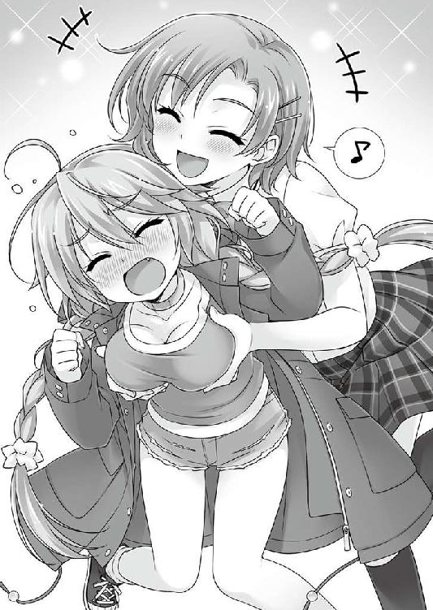
８番台の危険は承知だ。
しかし、「教室に戻る／９５１」は、選べない。
９番台のＰＧがどんな危険を運んでくるのか、まるで予想できない。それに、万一どころか高い確率で起きる『トラブル』は、周りを丸ごと巻き込んでしまう。学校の中に入ってしまうよりも、広い校庭に留まっている方が、もしもの時に動きが取り易いし、巻き添えだって少なくできるという計算もあった。
この『本』が告げるのは、自分に降り掛かる問題だけだが、一つの出来事は水面に投げる石ころと同じで、波紋を広げて波及する。自分一人では終わらない。
一條は、周りごと巻き込むような選択視を、「まだ大丈夫だろう」なんて憶測で、何の躊躇いもなく選べるほど面の皮は厚くなかった。
それでも選択は迫られるし、選ばなくても選択視は収束する。それが人生というものだ。
一條は、最後まで、自分で選び、決断をする。
全くもって優雅な人生とはいえないが、せめてもの意地だった。
人生の選択視は限られている──否応なくそう突きつけられてきたからといって。
──そんなものに、好き勝手されてたまるか。
「ぎゃにやああああああ！」
叔美が啼き出してしまった。
学校の正門のすぐ外での騒ぎだ。校庭に残っている部活の連中が何人か、キミたちに気づいて、微笑ましそうに眺めている。中には、ちょっと注意した方がいいかなという表情をしているヤツもいるな。
息をする間を惜しむように呼吸を止めて、『本』の記述を追いながら、これまでの人生のどの場面よりも、真剣に高速で思考する。
悪足掻きで終わるとしても、後ろは振り向かない。
千里一條は、いつだって前しか見ないのだ。
焦るな、落ち着けと、ともすれば見失いそうな自分に言い聞かせる。
重要なものは......そう、順番だ。
選択視にはタイムアップがついて回る。限られた猶予で、何から手を付けていくかの順番が大切なのだ。
もう一度、周囲にあるものを的確に素早く確認していく。叔美、久留美、正門、校庭には部活を営む生徒たち。物事には必ず「伏線」があるのだから、それを見落とすな。
腹に溜まった氷の泥めいた悪寒が去らない。一條の本能か、それとも直感かが、ここがまだ１４への途上なのだと告げていた。蜘蛛の糸みたいに細い道を踏み外せば、待つのは底の見えない奈落だ。心地は、薄氷の上を歩むに等しかった。
逃げ道のない行き止まりは、何歩先にあるのか。
遠ざける手立てを見落とさないことが、一條千里に今できる、唯一にして最善だ。
「ぎゃははははは」
「いーやー」
久留美と叔美がはしゃいでいた。
「うらら、待つっすよ、わたしの嫁にしてやるぅ！」
活字だと海岸で幸せムード全開のバカップルお得意のシチュエーションみたいだが、実際に目で見ると、泣き叫び逃げ惑う叔美と襲い掛かる久留美という、結構な阿鼻叫喚模様だった。
長閑に眺めて楽しんでいる余裕はない。
襲い来る「運命」を出し抜いて、叔美と久留美を救い上げる手掛かりを見出す為に、『本』と現実を見比べながら先に進む。
じ ゃ れ 合 い を 眺 め て い る 場 合 じ ゃ な い ぞ 、 身 構 え ろ 。 状 況 は 刻 一 刻 と 迫 っ て き て い る 。
頭 の 上 に は コ ウ モ リ が 群 で 飛 ん で い る 。 カ ラ ス で は な い ぞ 。 門 の 外 は 人 気 が な く 、 取 り 立
て て こ こ で 何 か 起 き そ う で は な い 。 頭 上 の 群 影 の 他 は 、 低 い 唸 り 声 が 聞 こ え て く る く ら い
だ 。 さ あ 、 も う い い か ？
「ふひひひ、たまらん、もそっと見せてー！」
「ああン!!」
まるっきり緊張感ねえ！
いや、だから、こんなのに気を取られている場合じゃないんだって──
右か、左、どちらか一方を選ぶだけ。簡単だろう？ それで、キミの運命は大きく変わるに違いない。おっと、どちらを選んでも、その場にいる叔美と久留美を連れて行くのを忘れてはならないぞ。
右に跳ぶのなら／７４７─■■■■ へ行け
左に跳ぼうというのなら／７５２─■■■■ へ行け
ＰＧ８５４の最後には、運命の選択視があった。
内容は簡単極まる二択。右か、左か。唐突に迫ってくる選択視のその簡潔さが、タイムアップの厳しさを印象させた。
一條は、残された猶予の全てを費やして、正しい選択を見出そうとする。
──選択が人生を変える。
この簡単明瞭な、誰もが知っている事実が、果てしなく重い。
一瞬先に訪れるかもしれない「行き止まり」の不安に耐えながら、一條は最善を選ぶ為に「選択」ではなく「行動」した。
記述を、もう一度確かめたのだ。焦りに身を任せて選ぶのは愚の骨頂。それは、「選択」ではなく運否天賦。選択の重圧から逃れて、一刻も楽になる為の、選択ではない選択だ。
何が起こるのかではなく、自身で何をどうするのか。
それが重要なのだと、一條は信じている。
二つの選択視は、依然どちらも１４の気配をさせたままだ。何を選んでも死の危険の途上でしかないという、その予感に全身の血が凍る。
しかし、選択次第で、終焉をより遠ざけることはできる。
それが、この『本』の「機能」であり「力」。
どこかの誰かが、どういうつもりか投げて寄越した、千里一條だけが見出せて、他の誰の目にも映らない──「例外の選択肢」。
だから、もう一度、選択視の記述を熟読した。
選択視には、「跳ぶ」と著されていた。走るでも移動するでもなく、跳ぶ。よほどせっぱ詰まった状況が起きるに違いない。
二つの選択視の条件に、何か違う点はないか？
動作する上でなら、右へ動く方が早い。叔美と久留美は、一條から見て右側にいる。何かが起きた瞬間に飛びつけば、一動作で地面に伏せさせることができるだろう。
左に動けば、タイムラグがある。叔美と久留美の腕を引っ張り寄せて跳ばなければならない。
だからといって、安易に右に跳び出すのは早計だ。目の前にぶら下がった利益という名の人参こそ、実は計算され尽くした罠の蓋を閉じる、悪辣な釣り針かもしれない。
もう一つ、違っている点を発見した。
右へ跳べば、正門の内側へ跳び込むことになる。左なら逆に外へ跳び出す。
......ちょっと待て、跳ぶ？
ブンブンとかつてなく高速で回り続ける思考の片隅に、ごく小さな何かが引っ掛かった。奥歯に挟まって取れないスルメみたいに、座り心地の悪い腑に落ちなさが、うなじの辺りの毛を逆立てる。
跳ぶといえば、「わたしの嫁にしてやるぅ」という頭の悪そうな台詞から、右か左へ跳ぶという選択視が現れるまで、唐突に文面が......それこそ跳びすぎてはいないだろうか。
気のせい、かもしれない、が──先を急げと急く自分を宥めて深呼吸した。
考えろ、精密に、正確に、見落としなく。
選ぶのは一度切りだ。やり直しは利かない。
この世の中は、ミステリーとしては丁寧に作られている。大概は手遅れになってから気づくが、ほとんどのヒントは制限時間内に提示されているのだ。
もう一度、ＰＧ８５４の記述をよく読んでみた。
「うらら、待つっすよ、わたしの嫁にしてやるぅ！」
じ ゃ れ 合 い を 眺 め て い る 場 合 じ ゃ な い ぞ 、 身 構 え ろ 。 状 況 は 刻 一 刻 と 迫 っ て き て い る 。
頭 の 上 に は コ ウ モ リ が 群 で 飛 ん で い る 。 カ ラ ス で は な い ぞ 。 門 の 外 は 人 気 が な く 、 取 り 立 て て こ こ で 何 か 起 き そ う で は な い 。 頭 上 の 群 影 の 他 は 、 低 い 唸 り 声 が 聞 こ え て く る く ら い だ 。 さ あ 、 も う い い か ？
右か、左、どちらか一方を選ぶだけ。簡単だろう？ それで、キミの運命は大きく変わ
何たることか！ 記述の一部が、もの凄く小さいフォントになっていた!!
爪楊枝の先のような印字で、凝らしている目を更に凝らさないと読めないのを気づかずに流し読んでいた。
何これ、これってインチキ保険の契約書じゃん。
実に非道い。たとえ伏線が著されていても、これでは見落として、そのままバッドエンドへ一直線だ。こんな卑劣な記述は、今まで一度もなかった。あるいは、これも『１４』のもたらす死の魔力なのか。
なんて恐ろしい......。
だが、隠されていたのは、重要であることの裏返しだ。
何時なのかわからないタイムアップが刻々と迫っているが、慎重に目を通す。
「うらら、待つっすよ、わたしの嫁にしてやるぅ！」
じゃれ合いを眺めている場合じゃないぞ、身構えろ。状況は刻一刻と迫ってきている。頭の上にはコウモリが群で飛んでいる。カラスではないぞ。門の外は人気がなく、取り立ててここで何か起きそうではない。頭上の群影の他は、低い唸り声が聞こえてくるくらいだ。さあ、もういいか？
右か、左、どちらか一方を選ぶだけ。簡単だろう？ それで、キミの運命は大きく変わ
選択しろと急き立てているだけで、大したことは書いていなかった。
あれっと首を捻りかけて、更にもう一度読み返してみて、とある記述で目が止まる。
..................低い唸り声？
周囲の音に意識を向けると、確かに動物の唸りめいた声が聞こえて──
違う、エンジン音だ!!
考えるよりも早く身体が動く。叔美と久留美に跳びついた。
「きゃあ!?」
「お、イチジョーもやりますか？」
誰が、何を!?
右に跳ぶのなら／７４７─■■■■ へ行け
久留美がじゃれてて、叔美が暴れていたのが幸いした。
不安定な姿勢で、横から不意打ち気味のタックルを仕掛けてきた一條を受け止めるのは、如何に体育会系万能女子の久留美といえど不可能で、それが結果的に三人を救った。
一條は、叔美と久留美をまとめて押し倒しながら、正門の中へ跳び込んだ。
直後──
グレーのバンが、まるで猛犬の唸りにも似たエンジン音をあげながら、元居た場所に突っ込んできた。
最初は音だった。
馴れ馴れしすぎる子犬のような久留美に襲われていたせいか、叔美はそれが何なのか、手遅れ寸前まで気づかなかった。
遠雷のように響き渡るエンジン音だと判断できた時には既に遅し。ほとんど真後ろの死角から、時速六〇km近い速度で車両が突っ込んできた。
居眠り運転による事故だ、と判明するのは後日である。
四メートルの砲弾と化したグレーの車は、『運命』に定められた者全てを巻き込んで無惨に撥ねて即死させ、車体も正門に激突して大破する──筈だった。
世界が回った。残念なことに回転しているのは叔美自身で、大空を仰ぎ見た辺りで、横から一條がぶち当たってきたせいだと朧気ながら理解した。
勝手に口から悲鳴が出た。一條も久留美も叫んでいた。自分の声も他人の声も、間近の轟音に掻き消されて、耳まで届いてこない。急変する状況にパニくっていたのに受け身を取れたのは、きっと奇跡が大安売りだったからだろう。
叔美の頭上から、落ちてきたものがある。それは確かに、さっき走っていた車だったモノの一部、右のドアだ。スチール塊は回転する刃よろしく、叔美の首へとギロチン同然に落下する。
何もかも一瞬の出来事だ。
──当たる筈なんてない。
ほんの一瞬前まで自分の首があった位置で、即席のギロチンがコンクリートとぶつかって跳ねるのを、叔美は呆気に取られた顔で見届ける。
間一髪、一條に腰の辺りを掴まれて引き寄せられて、レトロな断頭処刑の結末を回避した叔美は、抱っこされた熊のヌイグルミみたいに、足を投げ出してペタリと座り込む。
一條が早口で何かを喋っていたが、耳が死んでいるのか何も聞こえない。あるいは、感覚は正常でも、精神が音をシャットアウトしているのかもしれない。
油の切れた機械さながら、骨の軋む音が聞こえてきそうなぎこちなさで首を巡らせる。
そして、背後で待っていた光景は、予想に輪を掛けて凄惨だった。
突っ込んできたグレーのバンは、正門の隣のブロック塀に激突して動かない。車の前半分は特に酷い有様で、どれだけ贔屓目に見ても原型を留めていない運転席の中が、どれだけ笑えない状況なのかは想像するのも御免だ。
「────」
時間の止まったような静寂。
壊れたクラクションだけが、耳に痛く鳴りっぱなしになっていた。
やがて、麻痺したような世界の停滞が、ようやく人並みの動きを取り戻して動き出す。
騒ぎを聞きつけたのか、校庭から学校内から、人が集まってくるところだった。
「今のな──」
一條に押し倒された格好のまま、状況にまるでついていけてない久留美が下から何かを言う前に、叔美は立ち上がっている。
「叔美、どこへ──」
背を向けた彼女に何を見たのか、一條が手を伸ばして捕まえようとして、
「これ以上、アタシに拘わるな」
振り返りもせず、一刀両断で言い捨ててから、後ろも見ずに走り出す。
──逃げ出したのだ。
何かに追われるように、叔美が走り出した。
咄嗟に追い損ねた一條の視界から小さな背中が消えると、何故か、脳内で五月蠅くがなり立てていた本能の赤い警報ランプが、キレイさっぱり消え去った。ずっと薄いオブラートのように我が身に張り付いていた、不安も、怖れも、掻き消される。
敢えて言うなら、ようやく長い夜を抜けて、山間から昇る最初の曙光を目にした気分だった。
その代わりに、別の色の警告ランプが灯っている。それがどういう色なのか、何を告げているのか、一條自身にもよく判らない。
死の危険が完璧に去ったのだと、根拠もなく納得する。
それは言うまでもなく、とある決定的な事実の裏返しだ。
──この選択視を招いたものが、何だったのか。
今更だ。一條には、最初から答えが見えていたのだから。
何をするべきか考えがまとまらない。立ち尽くしたまま、右手で『本』を閉じたのは、身に付いた動作でしかなかった。
『本』は消える代わりに再びページを開き、主の機微を知り尽くした老練な執事のように、ここが人生の《分岐点》だと告げる。
「............ッ」
一瞬、怒りに近い感情が胸の奥にチリつきかけた。
ＰＧの記述を確かめるまでもない。今回のＰＧの最後に著されているだろう選択視を予想するのは、定期試験の出題範囲をヤマ掛けするよりも簡単だ。
こいつは......この『本』は、叔美が傍に居た時、何度となく繰り返していた諫言を、今度もまた偉そうな冷笑混じりで囁くに決まっているのだ。
いい加減、意地を張るなよ、と。
「事故っす......事故だあ、ぴやあぁぁぁ......」
一條の下で、久留美がようやく状況に追い着いてきた。彼女は、驚きでも怒りでもなく、ただただ呆気に取られている。
真っ当な人間であれば、生き死にの境を越えた直後には、正常な思考なんて一から十まで麻痺してしまう。一條の選択がほんの一秒遅ければ、三人とも、今頃この事故で本物の仏になりかねなかったとは、まさに知らぬが仏。
「イチジョー......もしかして、助けてくれたっすか？」
「どうだろう、咄嗟だったから」
「落ち着いてるっすね。でも、そういうイチジョー見ると、わたしもちょっと安心しそー」
──落ち着いている？ そんなことないよ。
見た目には普段通りの顔で、一條はへたり込んでいる久留美に手を差し出す。
「久留美は平気？ 立てる」
「軽い軽い............って、駄目みたいっす、腰抜けちゃって」
「それなら、ジッとしてて。すぐに先生たちも来るから。救急車も呼んでるだろうし」
一條は、とっくに久留美を見ていなかった。視線は誰もいない街路の先へ。
「叔美がパニくったみたいだから、悪いけど、後は任せるよ。先生とかに訊かれたら、僕は『ブエルタの風になった』とでも言っておいて」
「......イチジョー、ロードレース好きだったっすかね？」
「最近興味持ったんだ」
久留美は、それ以上細かいことをとやかく訊ねなかった。
せっぱ詰まった状況なのに、彼女は不思議と目尻を下げている。元気過剰の久留美が、とても少女に見えて、ほんの一瞬ひどく途惑う。
彼女の顔に浮かんでいるのは、事故の衝撃からようやく晴れた安堵でも、一方的に押しかけてなった友人の行動を奇矯に思っているのでもない。では、どんな感情かと問われても、一條にはよくわからない。
「さっきの子、叔美ちゃんっていうんだ。ふぅ〜ん、おもしろい名前っすね」
「部外者を学校に入れたのがバレたら大目玉だから、何とか誤魔化しておいてくれるかな」
彼女は腕を組んで、難しい顔で何やら考え込んでいた。事故直後なのに立ち直りが早い。
「叔美ちゃん、イチジョーの親戚です？」
「違うけど」
「......ま、いいっすよ。『わたしとイチジョーの仲』じゃないっすか。この場は、この久留美様が任されました」
「任せた」
一條は、別れの手も振らずに走り出す。時間が惜しい。
胸の怪我が、さっきので悪化したかもしれないが、今はアドレナリンだか何だかが出ているせいか、大した痛みを感じない。
『本』は、同じ速度でついてきていた。
７４７─■■■■
危ういところだったな。右に跳んだから、学校の外壁が車の盾になってくれた。左だと、どうなっていたのかは......まあ、そうならなかったのだから考えてみても仕方ない。
最近は車というと事故ばかりだな。よほど何かに憑かれていたんだろう。しかし、安心していいぞ。三人で挽肉になる運命から逃れられたのは、まだキミが何かを持っているからだ。
危機は、去った。わかるだろ？ 本当の意味で、危機は去ったんだ。いなくなった。
さて、いつもの時間がやってきたぞ。
..................わかっているとは思うが、行くべき道は「二つ」しかない。
片方は危険だらけ。キミの信条的にも、今後の身の安全の為にも、元の平穏な日常を取り戻す為にも、正しい答えを選ぶことを進めよう。
無理をして、信条を曲げる生き方を選んだところで、キミに得られるものは、何もないのだから──
──余計なお世話だ。
『本』に分別を説かれるのは頭に来たが、返事もしない相手に噛みついても虚しいだけだ。
叔美を追い掛けるなら／７９３─■■■■ へ行け
叔美を追い掛けないなら／１９１─■■■■ へ行け
ＰＧの最後の選択視は、予想通りだった。
叔美が拘わる選択視には、事ある毎に付きまとう定番だ。
いつでも見捨てていんだぞと、甘い誘惑を囁き続けている。
弁えろ、そろそろ止めておけ、これ以上は踏み込むな。
思えば、この『本』は事の始まりの前からそう告げていた。
疑う余地なく、彼女──叔美は『ＰＧ１４』そのものだ、と。
それこそ死神としか呼び様はないだろう。
だから、叔美を追い掛けるという選択は、何処までも矛盾している。
近づく一歩ごとに、ＰＧ１４へと近づく。望んで死へと向かいながら、いつかは必ず訪れる行き止まりの終点を、必死になって先送りにしようとする、馬鹿げた堂々巡り。
誰よりも選択が見えて、誰よりも１４が怖い自分なのに。
どうして、そんな徒労を選び続けようとするのだろう。
答えは出ない。
ただ、走る足は止まらなかった。
──まただ。
叔美は、走る。後ろも見ない、見事な逃げっぷりだ。
ただの弱虫の、その場逃れの行動だった。
吐き気のような、粘度の高い感情が腹腔の底で蠢いていた。この感覚が還ってくるのは久しぶりだ。
以前は、もっと警戒心旺盛にやってきた。慎重と拒絶を鎧に着込んで、全身をガチガチに固めて、些細な事にも油断せず、気を緩めず、誰にも隙を見せず、そもそも近づいたりせずに、たった独り、どんな道だって平然と渡り歩いてきた。
そうすることで、この鬱陶しい気分をずっと遠くへ突き放せていたのだ。
それなのに──
ぎりりっ、と忌々しげに噛み締めた歯を軋ませる。
何もかも奥志麻に来てからだ。歯車が狂ってたまらない。
一條や碧流たちのような、あんな薄っぺらい連中に、ちょっとばかりの情けを掛けられたからって、そんな程度で隙を作ってしまうのは堕落もいいところ。
これまで、叔美はずっと独りだった。
あの人里離れた土地で、母親と一緒にいたのは、今は遠い昔の出来事。
二人で過ごしていた、変化に乏しい時間が止まったような穏やかな日々──それが終わった後のことは、想い出すのも億劫だ。
ついでに言えば、一條や碧流に教えるつもりも毛頭ない。
ヘタレの甘ったれて薄っぺらい綺麗事が、叔美は世の中で二番目に嫌いだ。
珍獣扱いなんて願い下げだし、可哀想にと慰められて同情されるのは、更に輪を掛けて真っ平御免である。
孤独も、踏み止まれば孤高に変わる。
きっと、その強さが叔美には必要だったのだ。
どんな形だろうと同情されることを由としてしまえば、自分が可哀想なのだと認めてしまうことになる。自分を卑下すれば、歩く力がなくなる。
叔美は、誰から教えられるでもなく、その理屈を自明として身に付けていた。
もしかしたら、これまでにとても憶えきれないぐらいすれ違ってきた誰かの中の、どこかのお人好しな年寄りが、もっともらしく語ってくれた蘊蓄が根っこにあるのかもしれなかったが、もはや記憶にも残っていないのだから、同じことだ。
──叔美には、沢山の名前があった。
ある者は「祟り」と言った。ある者は「人柱」と呼んだ。「呪い」だと指差す者もいたし、「神の子」だと崇め奉ろうとした者もいた。
そんな奴らは、残らず死んだ。そうでない奴らも、軒並み死んだが。
この宿業、叔美の周りに凶事を呼ぶ「何か」は、博愛精神過多である。公平無私で平等極まりない。一切合切区別をせず、どいつもこいつもまとめて『死』という大鍋に叩き込む。
いつも、只一人、叔美だけが生き残る。
まるで他人の命を吸っているかの如く、自分だけが怪我一つなく。
つまり、叔美は『猛毒』なのだ。
大昔の欧州を一呑みにした最悪の流行病のように、拘われば拘わっただけ、命という命を攫っていく。
いつしか、独りでやっていくようになった。
人の集まるところへ近づくのも、可能な限り避けようとした。何かの弾みで縁ができてしまわないとも限らない。生き馬の目を抜くような世の中だというのに、頭のネジがイイ感じに緩んだお人好しは、何処にだって一人か二人は混じっていた。
自分も飢えていたのに食べ物を分けてくれた爺さん、迷子と勘違いして親を捜そうとしてくれた若い夫婦、独りの叔美を仲間に入れようとした子供たち......。
近づく不吉に鼻の利かない盆暗どもが一体どうなってしまったのか、叔美は努めて考えないようにしてきた。
自分とすれ違った名前も知らない初めて出遭う誰かが、次の日には叔美の知らないところで野垂れ死ぬ。
何が起こっても、自分は鐚一文どうにもならない。
そう、ならないのだ。
──なってしまえば、まだしも気は楽だった。
学校なんて、近づくのは愚の骨頂。
誰よりも自分自身で、わかっていたクセに。それなのに、そんな馬鹿げた真似を自分に許してしまったのは──
つい、夢を見てしまった。
もしかしたら、今回だけは大丈夫なんじゃないかって。
奥志麻に来てからのことは、叔美にとって初めて尽くしだった。
ここには、かつてなく叔美の名前や顔を知っている人間がいる。一條とか碧流とか、オカマダさんとか、美人養護教諭だと名乗っていた三輪もそう。他にも、もっと居るだろう。
どの名前も、よく憶えている。叔美は、一度聞かされた名前は忘れない。
何よりも一番巫山戯ていることは──
この一週間、まだ誰も死んでいないのだ。
考えられない。バカみたい。
どいつもこいつも、薄っぺらくて面倒くさくて気に入らない奴ばかりだが、叔美にとっては初めて触れ合う他人に違いない。
本来とっくに、全員揃って墓に入っていなければならない筈なのに。
そもそも、ことの始まりからして尋常ではない。あれだけ叔美と拘わって、生きているまともな人間は一條ぐらいだ。
最初は、千里一條だけが、特別なのかと思った。
だから、立ち去るべき理由も、立ち去った方がいい事情も、数えるのが面倒なくらいあったのに、軒並み全てを棚に上げてここに残ってしまった。
本当に、自分と一緒にいても死なない誰かが、この世界に居るのだろうかと。
確かめたくて一條の周りをウロチョロしたのは、今思えば軽率だったかもしれない。
それでも、あんなに薄っぺらいクセに、一條は死なず生き延びた。出遭った時と昨日の事件と、凶運と行き遭ったクセに間一髪で死に損ねている。
──そんなことは、あり得ない。
何もわからないまま去りたくなかった。
もう二度と、出逢えないかもしれないのに。そう思えば動けなくなった。
碧流に言われるまま、甘えるように居残って、そのクセ、自分のせいで一條や碧流や他のヤツが死んでしまう「決定事項」に、夜ごと魘されて飛び起きて嗚咽して、毎日寝不足になるぐらいに怖かった。
それでも、飛び出せないのが情けない。
普通に寝て起きる場所がある。朝起きてやることがある。誰かが声を掛けてくる。
そんなもの..................ずっと忘れていたのだから。
誰も死なない、不幸のない一週間で、自分はすっかりナマクラになってしまって。
だから、いい気になってしまった。
──でも違う。
さっきの『事故』で、一目瞭然だ。
叔美の『毒』は、回りが遅くなっていただけで、今もここにある。
気を緩めるのを狙って、ずっと息を殺して待っている。
それでも──。
「アタシが一番嫌いなのは、投げ出すヤツだ」
だから、と思う。
もう、これ以上、ここには居られる筈がない。
一條は、追い掛けた。
とっくに見えなくなった叔美を捜して走る。その為に、次々に選択視を選んだ。
その都度、誘惑の文言が影のように張り付いていた。
今すぐ学校に引き返せ。追い掛けるのをやめろ。
７９３から８１１、そして８２７へ。
叔美を捜そうとするほど、危険の気配は増していく。それは距離が近くなっている証明なのか、それとも違うのか。
選択は全て綱渡り。気を抜けば、どこかにＰＧ１４が待ち構えているかもしれない。
一條は、１４の気配を知っている。選択視から匂い立つ僅かな気配を頼りに致命傷の選択を避け、叔美を追い続けることができる。
いや、本当は半ば無理なのを承知で、強引に食い下がっている。
いつかは切れる蜘蛛の糸を、見えない頂き目指して永遠に登り続けているようなものだ。
「叔美はどこに......」
拳に力を込めて、余計な考えを振り払う。叔美の居所を思案した。行く宛てもなく出鱈目に走っているのだとすれば、見つけ出すのは至難の業だ。
「そうじゃないのなら──」
走って苦しくなる息に、一年前の出来事を思い出す。
あの時も同じだった。どこまでも走った。行き場なんてなく、ただ逃げ出そうと走っているに等しい鼠の気分で。
アタシに拘わるな。叔美の拒絶が耳の奥にリフレインする。
──古い記憶の断片が重なる。欠け落ちた穴だらけのピースのように。喪われたものは還ってこない。それは欠けたのではなく、失せてしまったからだ。
女の悲鳴、男の嘲る声。年老いた怒りの声。ありとあらゆる声が、意味もなくお互いを罵り合っているような轟きを遠くに聞きながら、一條は中心へ近づいていく。
ひたすらに。入り込んでしまった迷路から逃げ出そうと、視界の利かない闇の中を走り抜ける内に、ひと続きの笛の音がすぐ近くまで迫っていた。
それは笛ではなく、歌声だ。
この世のモノとは明らかに異なる「何か」が、もう目と鼻の先で歌っているのが聞こえてきて──
「────」
次のＰＧへ向かって、ページが捲れていく感覚で正気に戻った。
８２７からさっき選んだ「叔美を追い続ける／８０１」へ移動している。
このＰＧの最後に著かれている選択視の内容も、見るまでもなく予想できた。
ここまで追い掛けてきただけで十分だろう。叔美は、勝手に奥志麻にやってきた。死にかけていたのだって、自業自得に違いない。この一週間、よくしてやったじゃないか。これ以上は採算が合わない。支払う対価が高く付きすぎる。今度という今度こそ逃げ遅れてしまう。だから、落ち着いて状況を考えろ。叔美を追っている連中もいる。まともじゃないあんな連中を相手に、自分一人で結末を変えられると思うのか？ 大体だ、アイツ一人助けたところで何の得にもならない。今すぐ引き返して、久留美の処へ走るんだ。早くしないと、本当に取り返しがつかなくな、
「──黙れ」
喧しく囁く、幻の声を一蹴する。
自分が冷静ではないと、一條だって気づいている。
一歩進む毎に危険が掛け算で増えていく。そんなこともわかっている。
「選ぶのは僕だ。何もかも。お前じゃない」
力強く、断言した。
頭の中で後ろ髪を引いていた声が、ようやく黙る。
後悔するぞ。
最後まで、往生際悪く呻く自分の怖れを振り切って、足を速めた。
「──よし」
ようやく叔美の背中が見えた。追い着いたのだ。
８０１─■■■■
地理に詳しくない叔美なら、素直に往路を引き返すのでは、というキミの推理が大当たりのようだ。追われているのに気づいた叔美は、キミを撒こうと左に曲がるが、もう逃がさない。叔美は、神社の入口を更に奥へと進もうとする。古い鳥居のところで息が切れたのか、観念して足を止めた。
さてはて......やっと追い着いたな。
周りは静かで、人気は幸いにもない。何か怖いものが飛び出してきてもおかしくない雰囲気だが、大通りからは少し外れているので話をするにはもってこいだろう。
「待って、叔美。待ってったら......」
キミが呼び掛けても、叔美はまともに聞く耳を持たない。引き留めるのは無理そうだが、まだ続けるのか？ キミもよっぽどだな。
「はー、ひー、はー、ひー」
「ふー、ふー、ふー、ふー」
一條は詰め寄ろうとして、叔美は振り払おうとして、お互いに限界が来た。走り過ぎだ。三〇秒タイムを取ってから、再開した。
「ふー......アタシに拘わるなっていったろ。これ以上、ついてくンな」
「ひー......ついていってない、僕が勝手に追い掛けてきたんだ」
「へ理屈こねやがって......うっとうしいンだよ」
やはり、とりつく島もない。
叔美があの場を逃げ出したのは、結果的には正解だ。
おそらく、真っ当な立場と方法で入国してきたわけではないのだろう彼女は、事故の現場にやってきた警察に見咎められれば、非常によくない状況に陥っていた筈だ。
（後で、久留美に上手く言っておかないと──）
なんて言う？ 一條は、頭の中でシャドー対話をする。全部説明する方法。それとなく誤魔化してしまう方法。土下座して泣き落とす方法。どの方法でも、割り切れずに余りが出た。
「......余りは四捨五入かな」
細かいところは見ないフリをする。あれでも、久留美はよく気が回るタチだ。余計なことは訊かないでいてくれるかもしれない。かも......だが。
物事には順番がある。今は、脳内の久留美ファイルの順番を最後に回した。
一つの選択を終えなければ、次は選べない。
「叔美、僕の話を──」
引き留めようと叔美の腕を取ったら、乱暴に振り払われた。
「触るな、はなせ」
もう離しているから離せも何もないのだが、叔美はドスの利いた声と挑み掛かるような眸で、一條を威圧する。
どこから見ても怒っている顔なのに、どうしても泣いているようにしか見えない。不思議と、見ているこっちが悲しくなった。
「アタシは出て行く」
「どうして、」
と訊ねてから、自分がとてつもなく間抜けだと気づく。
叔美は、一條が復帰するまでの代役だ。約束の一週間はとっくに過ぎた。『アンブロシウス』を出て行く理由も権利も、叔美にはある。
「行くアテ、ないんだろ」
「そンなの欲しくもない」
「そんな強がり──」
反応は激烈だった。台詞を言い終える前に、叔美は思いっきり振りかぶって握ったゲンコツで、一條の横面をぶん殴った。威力よりも不意打ちだったせいで、骨に響いた。腰が砕けなかったのは運よくである。
「今のは......結構効いた」
腰の入った、目眩のしそうな一発だ。二発目は飛んでこないようなので、一安心というところだ。
ＰＧはそのまま進み続ける。
叔美のグーパンを「避ける」か「避けない」かの選択視は出なかった。それはそもそも、このＰＧでは殴られることが『運命』付けられていた、ということだ。
「────」
一條はこれまで、目障りなクセにお節介に行き先を示してくれていた不可思議な『本』と、半端なりに上手く付き合ってきたつもりだ。
だが、今はその『本』を閉じた。
が、消えたのも一瞬。当然のように『本』は自動的に現れる。
一條だって、この状況ではそうなる筈だと思っていた。
その当たり前さが腹立たしくて、鬱陶しくて──『本』と目を合わせるのを止めた。押しつけがましく開かれたＰＧの記述は、もう追わない。
──見たくなかったのだ。
「アタシは、さっさと出て行くつもりだった。チンタラしてたのが間違いだ」
「やっぱり..................あの爪男に、心当たりがあるんだ」
今度も、反応は如実だった。
叔美の顔色が、見ていて可哀想になるほど変化する。血の気が引いて、クシャクシャになりかけて、最後の一線で自分を保って虚勢を張り続けた。
「あれは、叔美の厄介事なのかな」
そこまで聞いた叔美は真剣な顔で、上目遣いに一條に迫る。
「..................変だろ、オマエ。どうして、そんなに自信満々で、『アタシの厄介事』だっていえるンだよ」
「────」
咄嗟の返事に詰まる。叔美の台詞は、濡れ衣を糾弾するものではなく、「どうして判るのか」と問い詰めるものだ。
仮定に仮定を重ねているとはいえ、一條には、叔美と爪男を繋ぐ線を推測できるだけの材料が幾つもある。そもそも、爪男が「捜した」と叔美に告げるのを、耳には聞こえなくても目で見たのだ。
そう、一條には、「見える」のだから。
「最初から、そんな気がしてたンだ。オマエ、やることなすこと変だしな。そのクセ、ネジが外れてるってわけでもない。いや、外れてるのは外れてるのか。まあ、そンなことは、どうでもいいンだけど──」
一條へ、ハッキリと敵を見る目を向ける。
「オマエ、『なにか』見えてるンだな」
叔美が言った「見えてる」というのは、あくまでも喩え話だろう。
彼女から見て筋が通らない一條の行動を説明するには、彼女には理解できない何らかの手段と方法で、相手には自分の正体が見えているのだと考えるのが一番スッキリする。
一條にしてみれば、それは痛い急所だった。
奇異の目を避けようとして、誰の目からも上手く誤魔化してきたのに、出遭ってから間もない叔美が、「見える」という言葉で喩えるほど的確に「秘密」を言い当てたことに驚かされる。
叔美は、本当の意味で聡い少女だ。
深呼吸をする。慎重に、ここから先に対処できるよう、気合いを入れ直す。
「──見えるよ」
正面から叔美の眸を見て、誤魔化さずに答えた。
１４へ続く虚を覗き込んでしまったような錯覚に、無意識に一歩下がりかけたのを、ヤセ我慢して踏み止まる。
傍らの『本』は、一條が読まなくてもお構いなしで、腹立たしいぐらい、いつも通りの挙動。
叔美との話に没頭していたから、今のＰＧが８０１のままなのか、とっくに次の選択視を選んで、もっと先に進んでいるのか、わからない。
『本』に目を通しさえすれば、叔美に何を告白すればいいか、どう説き伏せればいいか......『運命』が分岐する様が著かれているのだろう。
今は、確かめる気にはなれなかった。
本当に、踏み止まれなくなるかもしれないから。
さっきのように、行き止まりしか『道』がないと声高らかに宣言されてしまったら──
それでもこの先の選択を選び通せるかどうか、正直自信がなかった。
「ふーん、見えてるのに黙ってやがったのか。それは......まあ、イイや。アタシだって黙ってたことあるし、おあいこだな」
叔美は、一條が熱くなるほど冷めていくようだ。まるで彼女らしくなく、極めてクールに、皮肉げに鼻を鳴らす。
「なにが見えるンだよ、オマエ」
「それは話すと凄く長くなる」
「長いなら、いらない」
叔美は、細かいことには気を回さない上に、気が短いタイプの少女だった。
「一番大事なことだけ聞く。オマエには、アタシがどう見える」
直球で来られて、迷わなかったと言えば嘘だ。
「拘わると..................死んでしまう」
叔美が真っ直ぐだったから、見えていたモノをハッキリと言葉にした。
「......オマエ、バカなの？」
なにバカバカしいことマジで言ってんのかよ──
では、なかった。
叔美のヒドく抑えた、絞り出すような言葉は、間違いなくどうしようもなく真剣に、泣きそうな声だった。
──それが見えているのに、どうして手を差し伸べたのか。
ぶっちゃけて言えば、端的に「バカ」なのか。
身体の奥まで突き刺さるような叔美の問い掛けに。
──バカなのだろう。
さっきの事故は十中八九どころか、ほぼ間違いなく叔美が「原因」だ。
普通では考えられない。何の因果関係もない交通事故の原因が「叔美」というのは、「『本』が人生の《分岐点》を教えてくれる」のとは、段違いのレベルで常軌を逸している。
一條の『本』は、突き詰めれば「情報処理」だと定義できる。絶対音感の持ち主が、音階の違いを精密なある種の形状として厳密に判別できるように、自身の置かれた環境や変化を本の形で認識し、分析しているのだと説明が可能だ。機能として高度で、常人離れしていても、入力と出力の問題である。
凶運──それも、拘わった他人に死を招く、となると次元が違う。
ロジックが説明できない。
理解できないものほど、人間にとって恐ろしいものはない。
「オマエ、最初からわかってたンだな。どうして、アタシに拘わったンだよ!?」
「放っておけなかったから」
「なにそれ！ バカみたい!!」
正直に伝えれば怒るだろうと思ったら、やはり怒った。
結局はそこに戻ってくる。自分は、バカなのだろう。
叔美は死神だ。本人が望んでいるのか、どんなカラクリかはともかく。彼女に拘わることで、罠のように死への選択視が現れてしまう。
さっきの事故でも、一歩間違えれば久留美を含めた誰かが、もしかしたら全員が、１４を踏んでいたかもしれない。
いや──
死神が、自身の「力」で死んでいれば世話はない。叔美が巻き込まれてしまうなら、彼女はとっくに死んでいなければオカシイ。
──叔美だけは死なない。
一條は、考える。
これまで必死で何とか遠ざけていた１４が、もはや後ろ髪に触れてくる位置にいるのではないか。怖気を振るう磁力で、こちらを引き寄せようとしているのではないか。
さーっと全身の血の気が引いた。
叔美と遭って『時間』が経過したからか、それとも、多少でも一條と叔美との『距離』が縮まってしまったせいなのか。
まるで運命の女神が、叔美に近づく者に嫉妬して殺そうとしているようだ。
「アタシは、このまま行く。荷物もないから、『アンブロシウス』には戻る必要はないしな。碧流には適当に言っておいて」
踵を返した叔美の小さな背中は、ぶ厚い拒絶の鎧で装甲されている。
仕方のない事なのだろう。
それこそ、選択の余地などあり得ない。
叔美は『本物』なのだ。自分だけならともかく、彼女の猛毒は、周囲の不特定多数に被害が及ぶ。どれだけ広がるのか予想もできず、一條にそれを阻止する手段がない以上、この先できることは、ただ叔美を見送ることだけだ。
それで、問題は解決する。
『ＰＧ１４』は去っていく。他の誰かが、危険に晒されることもなく。
昨日襲ってきた爪男にしても、叔美がいないのに一條を襲うほど暇ではないだろう。何度も、水面下で蠢く１４のやり過ごし方を考えなければならなかった、ここしばらくが異常だったのだ。全て世はこともなし。何もかも元通り。
叔美と出遭う前の、静かな奥志麻の日々が戻ってくる。
それで、いいじゃないか。
──本当に？
「......いい訳ない」
他の誰だって、きっと叔美を追い払う選択をする。
安全で、平穏で、穏やかで、優雅な人生を選び取る。
誰も損はしない。ただ一人を除いては。
叔美は、また独りになる。
あの路地で見た横顔のように、ぽつんと行き場もなくへたり込んで空を見上げるのだ。
この世界で、叔美を受け入れてくれる場所や人が、一体どこにあるというのか。
何故なら、叔美は「死」なのだから。
人間は、本能として行き止まり死を怖れる。
どんな金持ちにも貧しきにも、いつか必ずやってくる公正無比な終端。
目に映らない１４を音もなく運んできて、自分だけが生き残る。そんなおぞましい生き物は、紛うことなく怪物だ。
怪物が、人里から遠ざけられるのは仕方がない。
誰だって、目には見えない選択視を手探りしながら、日々自分の生活を守って慎ましく生きていくので精一杯なのだから。
一條が一度は差し出した手を引く選択をしても、誰も非難しないだろう。
──するとすれば、自分だ。
見捨ててしまったことを、投げ出してしまったことを、何もできなかったことを。
この先ずっと忘れられない。
きっと、悔いになってしまうから。
「逃げるのか！」
激しい感情に任せて踵を返した叔美の背中に、叫ぶ。
千里一條は、過ぎたことを振り向くわけにはいかない。
ここまで遣ってきたのに、勝手に駄目だと見切ってしまおうとする彼女にも腹が立った。
頼まれたわけではない。自分で勝手に遣ったことだ。
だからといって、それとこれとは話が別である。人間だから、腹が立つものは立ってしまう。
負けず嫌いの叔美は、一條の予想通りの行動を取った。
「何だと」
ベタ足のインファイターボクサーみたいに足を止めて、ハッキリと怒りの宿った眸で一條に向き直る。
「バカみたい、バカみたい、バカみたい！ はンっ、それでアタシを怒らせて、どうするンだよ？ オマエは頭が悪すぎるから、念のために忠告しといてやる。死ぬのはオマエだけじゃないからな。アタシの周りのヤツは、軒並み全部ひとまとめだ」
詰め寄って、ぶち殺してやるぞ、と言わんばかりの啖呵。
死にたいのか、と叔美は迫る。
自分だけじゃなくて、家族も、友達も、知り合いも諸共全部。
──死ぬのは御免だ。
選択は行動を、行動は結果を生む。
誰も何も傷つけない選択、なんて都合のいいものはないのだろう。だからといって自分は勿論、周りの誰かを勝手に生贄にして良しとするのは本末転倒だ。
一條にとって、前兆を告げる『本』は、邪魔であると同時に、得難い導き手だった。
危険に踏み込むな、愚かな事をするなと教えてくれる。
すげなくしても、愚痴一つ零さない。
誰よりも近くにあって、一條が一條であることを証明するものでもあった。
今、この瞬間も、『本』に目を向ければ、現在置かれた状況への解答を分かり易い選択視にして寄越すだろう。
叔美とは拘わるな、と。
そんな正解は選べない。
だから、ギリギリの意地を張った。今は、この『本』には縋らない。
どうにもならない道理も、分かり切った結末も、薄々見えているクセに。
まるで駄々を捏ねる子供のようだと自分で思いながら、それでも自身の頭で考えた選択視で、叔美と面と向かい合おうとした。
しかし、だ。
正直、辿り着くべき『結末』を思い描けない。
バカ、何とか考えろ。知恵を絞れ。
壊れたモーターよろしく回転の止まりそうな脳みそへ、必死に喝を入れる。
この状況を打破できなければ、一條か、叔美か、どちらかがハズレを引くのを黙って受け入れなければならなくなるのだから。
「待って!!」
自分でも思いもよらず、ビックリするほど大きな声で叫んだ。
「三〇分待って」
「......はあ？」
ほとんど脈絡もなく、その上やけに具体的な時間が出たので、流石に叔美の足が止まる。
「貸していた時間を返して貰う」
「なに訳のわかンないこと言ってンだよ、オマエ？」
「土曜日に、三〇分休憩したろ」
「あれは、碧流が──」
「僕が助け船を出したから、叔美は三〇分手に入れた。なら、その時間だけ、今僕が貰うのは、筋が通っていると思わないか？」
咄嗟に思いついた、最後の手札だ。
「な......なにが、どう通ってるンだよ！ そんなの」
「借りを作ったまま、逃げるのか？」
「誰が逃げるか!!」
負けず嫌いの叔美は、上手く乗ってきた。
「......三〇分ぽっちで、なにが変わるンだよ」
おそらく、最後の機会だったのだろう。
これでもダメなら、納得できたかもしれない。
先送りの猶予を使い切って、何一つ手段が見つからなかった時に、それでも自分にできる限りの事はしたのだと、最後まで精一杯頑張ったけど上手く行かなかったと、叔美を追わない理由を造り出せたかもしれない。
しかし、もうダメだ。
彼女に問い返されてしまった。
本当は行きたくないのだとわかってしまったから。
千里一條は、二度と手を引くことはできなくなった。
「何とかする！」
言い切った。根拠も何もなくても、言わずにはおられない。
『本』を見ずに、何もかも決めたのだ。
今までの自分とは、違う自分になった。
行く先はわからないのに、不思議な満足感がある。大きなものを勝ち取った気分。
言うなれば、「やったぞ、ふりーだーむ!!」といった勢いだ。
しかし、勢いだけで世間が回れば苦労はない。
「具体的に言えよ」
「..................これから、考える!!」
バカか、という顔で見る叔美。
けれど、さっきまでとは違って、小さな花が咲くように唇が綻んでいた。微笑ましいものでも見るように。きっとあり得ないかもしれない望みを、それでも賭けてみようというように。
一條はどこまでも真剣だ。たとえ一〇時間あっても、叔美の『問題』を解決できるゴール地点を見出せる可能性は限りなく皆無だ。それを三〇分で？
やろう、と決めた。
何としても、どうやっても、この状況を覆す。
──無駄だって気づけばいいのに。
一條が気づけたのは、異常にだった。
意識の全部を叔美に向けていたから、とっくに手遅れになってからだ。
変じゃないか？
叔美と出遭ってから、初めての真剣さで彼女に立ち向かっている。ずっと隠していた真実さえ告白した。
ここまでに何度か《分岐点》での選択があって......当然だと思う。
選択視が選ばれると『本』のページは、次の運命へ、次のＰＧへ向かって、前へ後ろへとパラパラと捲れていく──のに。
記述を読むのをやめてからも、ずっと一條の傍らに現れ続けていた『本』のページは、今に至るまで粛々と捲れ続けているだけ。
パラリと。
見えない手でページを捲るように、また一枚。
あり得ないことが起きたのではなく、あるべきことが起きないからこその異常事態。
──ここはまだ、ＰＧ８０１の途中なのだ。
前言も個人的憤りも撤回して、見るのをやめた『本』の続きを一気に読み下した。突然怖い顔で黙り込んだので、叔美が不審そうに見ていたが、今は説明する時間が惜しい。
一條は、これと同じ事態に、つい最近も遭遇している。
昨日の夕方に。アレが現れる直前に。
詰まるところ、本来なら《分岐点》になり得る筈の選択視が無意味になり、ずーっと同じＰＧが続くのは──
気がつくと、日はとっくに暮■■いた。
空を灼く血の色じ■■■昏の最後の欠片が、長い影を自■■足下に伸■■ている。
──この先に、より大きな『運命』が待っているからだ。
慌てて目を走らせたＰＧ８０１は、記述の途中から、虫食いのような「文字化け」を起こしていた。
随分と待た■■■まったが、選択のお時■■がきたようだ。
この場でキミが選ぶ■■■■──
「──走れ!!」
叔美が返事をするのも待たず、無理矢理手を引いて逃げ出そうとする。
頭上から、あの二人が見下ろしていた。
ＰＧ８０１の最後にあった選択視も文字化けを起こしていて、一條には著いてあることの半分も読み取れなかった。
叔美の手を引っ掴んで逃げようとする一條の傍らで、『本』は普段と何も変わらず、選ばれたＰＧ目指して、独りでに捲れていく。
遅まきながら悟っていた。さっきまでのＰＧは、叔美と話をする事ではなく、その先に待っていた今の状況──追っ手と対峙する選択視を示そうとしたものだったのだ。
８４２─■■■■
「──走れ!!」
叔美の右手を強引に掴んで言い終える前に、頭上を突風が横切った。
身体を持って行かれそうな強風が巻く。頭のすぐ上を、本当に触られそうな至近距離を、鳥にしては大きすぎる何かが通過して、落日の赤光を一瞬遮る。
垣間見た姿は間違いなく人のカタチで、視覚の情報を理性が大声で否定する。
人間は、空を飛ぶようにはできていないのだから。
キミがよく見直せば、夕日を浴びる相手の姿は、ごく普通の......ではないが長身でコートの男。そして、幽霊のような印象の少女。
二人は、キミと叔美の頭上四メートル程の高さに、支えもなく浮かんでいる。まるで手品でも見ているようだ。
「警戒しろ」
まともに口を開くのも億劫そうな男の、柄にもない警告に、隣の少女は驚くよりもまず呆れかえった。
「警戒？ 誰に？ アイツらに？ 只の人間相手に？ 黙ってなさい、ヨブス。アナタがヘマしたからって一緒にしないで。私に任せれば、一分も必要ない」
頭上の二人は大層な余裕だ。羨ましいな。
だが、キミにはゆっくり考えている余裕などない！ 最近お馴染みの、危機的状況だ。
バカバカバカバカ、自分の馬鹿！
意地を張りすぎて墓穴を掘った。もっと早く『本』に目を通していれば、手遅れになる前に気づいて、もっと適切な選択視を選べたかもしれないのに、咄嗟に「二人で逃げる／８４２」であろうものを選ぶしかなかった。
それだって、正直本当に間に合ったのか、実に怪しいレベルのタイミングだった。
「──ッ」
二人組の反対方向へ走ろうとして、一條は慌てて急ブレーキ。砂煙を上げそうな勢いで踏み止まった。
行く手には、ほんの数秒前まで頭上にいた筈の影が立ち塞がっている。
二メートル近い長身。初夏なのにぶ厚いコートと帽子。機械のように淀みなく、冷淡極まりない眼光だけを鍔の下から覗かせた男。
続いて、何もない空中を歩いて、少女が一條の背後を断つ。彼女が目に見えないほど細い糸を張り巡らせて足場にしているのだとは、一條には知る由もない。
いや、知る由はなかったが、知っていた。
クモ女が空中に立っているのは魔法の類ではない。足下に、目には見えないが、縦横に糸が張り巡らされているのだ。まさしく蜘蛛の巣のように。
視覚に捉えていても意識できないほど細い糸だが、『本』は決して見落とさない。
にしても......クモ女はないだろう。
あまりにあまりなネーミングに、一條は状況も忘れてツッコむ。
奇妙に腑に落ちるものはあった。爪男にしろ、この少女にしろ、凡そ真っ当な人間とは思われない。『本』の著するように、クモの力なり特徴なりを持っている「何か」と考えるのは、それほど間違っていない筈だ。
では、「何か」という答えのなさそうな疑問とか、人外の何かが太陽のある時刻に堂々とデカい顔をして闊歩しているという、何とも言えない納得のいかなさは、一纏めにしてさっさと頭から切り離した。
今思考すべきは、この局面を、叔美と二人で切り抜ける方法だ。
一條が勇を奮って拳を握り締め、慣れないケンカに精を出したところで、どうにもならないのは明白だ。あの爪男は体力値一二〇の化け物で、頭上の少女（クモ女）もどうせ似たり寄ったりだろう。
選択視が見える以外は至って当たり前の高校生では、よしんば拳銃の類を持っていたとしても、太刀打ちできるか相当に怪しい。
「コイツらは......ッ」
「ご挨拶ね。随分捜して無駄骨を折ったわ。まったく面倒掛けさせてくれたわね。でも、そろそろ門限、帰宅の時間よ。叔美」
総身の毛を逆立てた猫のように歯を剥いて威嚇する叔美を、頭上の少女が、どこまでも冷めた目で見下ろす。
銀鈴を振るような声音は可憐そのもの。なのに、彼女の言葉には内容に相応しい憤りも苛立ちもない。淡々と回る時計が喋れば、こんな声で語り掛けてくるかもしれない。
「やっぱり、お前たちは叔美を捜してたんだな」
千里一條は、この場の成り行きにとっては部外者だが、黙ってはいられない。こいつらがこれから何をするつもりなのかは、一目瞭然なのだから。
「そういえば、昨日は有り難う。まだお礼言ってなかった」
「え、あの、えっと......その節は、どうも......」
クモ女の普通過ぎて場違いなお礼に、反射的にお辞儀してから、思い直して頭上を睨む。
「大人しく叔美を渡すなんて思うな」
「オマエ、なにバカなこと言ってやがる、コイツらは......！」
頭の悪い言い分に噛みつく叔美を余所に、
「ふーん、ソイツと知り合いなんだ？ まあ、細かいことはどうでもいいわ。さっさと仕事を片付けてしまおう」
四メートルの宙空に立つクモ女は、もう一條をまともに見ようともしない。欠伸でもしそうな、どうでもよさそうな態度で右手の指を鳴らす。
同時に、四方から叔美に極微の糸が放たれる。
クモ女が手足のように操る、極微の糸による遠隔拘束。並の人間には、避ける以前に糸を目視することも叶わない。叔美は一秒と掛からず拘束されて、新たな蓑虫が出来上がる。
──とは、ならなかった。
そら、クモ女が何か仕掛けてきたぞ。急いで選べ！
とにかく避けよう。ここは直進して大通りへ／４７７─■■■■ へ行け
避けずに大人しく様子を見る／２０１─■■■■ へ行け
分かり切った結果を見るまでもないとクモ女が余所見した隙に、一條たちは糸が作る脱出不能の罠を綺麗に擦り抜けていた。
「えっ、何......？」
一條が選んだのは、「直進する／４７７」の方だ。
クモ女が何を仕掛けてきたのかはわからないが、見えない糸がタネなのは予想がついた。
敢えて選択の理由を加えれば、「様子を見る／２０１」が、今の状況ではあり得ないほど安全な数字過ぎたからだ。
この『本』は、幾度となく「叔美から手を引け」としつこい程に食い下がってきた。叔美さえ居なくなれば、一條は安全。素晴らしい。ハッピーエンド。
如何にも待ち受けていそうな展開だ。２０１の方を選んだら、おそらく叔美は手の届かない所へ連れ去られてしまうのだろう。
その手には乗らないと『本』に言って聞かせるように、叔美の手を引いて直進コースを迷いなく突き進み、そのまま大通りへ走り抜けた。
どうせ糸は見えないのだからと、躊躇いなく突っ走った決断の結果が、糸の罠を避けさせたのだとは、一條自身にもわかっていない。
「あれ............？」
不可解過ぎる失敗に固まったクモ女は、走り去る一條たちを黙って見送ってしまう。
下から爪男が、相変わらずの寡黙さのまま、糾弾の目を同胞に向ける。
「..................」
「何をって、見ればわかるでしょ。捕まえようとしたのよ」
「..................」
「知らないわよ。まだ糸を付ける前だったから、走って追い掛けて。それと、今度無茶して目立つ真似をしたら、私がアナタを処分してやるから」
爪男は大股で走るというよりも、歩いているとしか見えなかったが、速度は明らかに全力疾走のそれだった。
何処まで逃げ続けられるだろうか。
叔美の手を引いて大通りを走りながら、一條は考える。
追っ手との性能の差は明白だ。遅かれ早かれ追い着かれてしまう。
『結末』は決まっているんだと言いたげに、『本』は腹立たしい程淡々と選択視を著き綴っていく。６０４、５５２、７１９。
次々と選び続けても、逃げ切れると思える選択視は現れない。
「アイツらの狙いは、多分アタシだから！」
「だから、なんだって!?」
「アタシを置いていけば、オマエは追われなくて──」
「黙って走れ」
「──ッ」
７１９─■■■■
ピシャリと怒鳴られたことに驚いたのか、口の悪い叔美が口を噤んだまま走る。
多少静かにはなったが、問題は少しも解決していない。
静かといえば、誰にとって有り難いのか、車の流れ以外に大通りには人気はない。
さて、どうやってクモ女とコウモリ男を振り切るべきか。キミが諦めないのと同様に、連中もキミたちを執念深く追ってくる。このまま走り続けても埒は明かないだろう。今のキミは、故郷の土地勘もあやふやだしな。
前方の十字路、左折する道の手前に長い石段が見える。上の神社に続いているらしい。ところで、このまま真っ直ぐ行くべきか？ それとも......。
真っ直ぐ大通りを走り抜けるなら／８２１─■■■■ へ行け
神社を左折して山手へ逃げるなら／５２８─■■■■ へ行け
和の心で追っ手と話し合いを試みるなら／８９７─■■■■ へ行け
二手に分かれて別々に逃げるなら／２０１─■■■■ へ行け
『本』によると、コートの男はコウモリらしい。
流石に苦笑し掛かった。クモにコウモリ。まったくとんだ怪人たちだが、そんな連中が相手でも、一條には「逃げ続ける」ことは出来る筈だった。
示される選択視を正しく読み解いて、捕まる結末へ続いている選択視を避けて選んでいれば、自分たちが捕まることだけはない──道理だ。
......捕まらない「だけ」かもしれないが。
無事に逃げ切る選択視は、どれだ？
８番台は危険すぎる。間違いなく非道い目に遭う。落ちるのか、崩れてくるのか、吊されるのか、はたまたコウモリ男が突っ込んでくるのかはともかく。
「そこの神社！」
「また神社かよ。それよりも、このまま行った方が──」
「違う、そこを左折。山手へ」
一見このまま大通りを逃げる方が逃げ道の選択が多くて良さそうだが、選択視の数字がそのルートを否定している。それに連中が人目を気にせず暴れ出したら、何を巻き込んでしまうかわかったものじゃない。
「運よく上の神社に逃げ込んだとでも勘違いしてくれたら、時間も稼げる」
「そんなに、うまくいくのかよ！」
全ての推測が的外れ、という可能性もあるが、一條は自分の判断を信じて選ぶ。
更に７９３、６６９と選んだ。幾つかの通りを横切った。隠れる場所を探したりもした。どれだけ走っても「二人で逃げ切る」に繋がっていそうな、一條の望む選択視は現れない。
「アイツら、振り切ったのか？」
「全然ダメ。まだ撒けてない！」
相手の姿は確認できないが、今も追ってきていると『本』が教え続けている。
「おい、もういいから、手を離せよ！」
「そんなのよりも、叔美も考えろ！ 何か引き離す方法、引き離す方法......」
一條は引き離す方法を必死で考える。その一方で、ひどく冷静で何でも知っているもう一人の一條──が、叔美と一緒では逃げ切れないと肩を竦めていた。
クモ女とコウモリ男の狙いは明らかだ。
自分だけなら、この『本』が示し続けている、とある選択視を選べば、楽になれると判っていたが。
それだけは選べない。
だから、破滅とは逆サイドに懸けて、決定的な敗北を先送りにする悪足掻きを続ける。
選択視の先を推測することだけが、一條の、たった一つの武器だった。
「それしかできないなら......遣ってやる！」
猫に追われる鼠の気分を味わいながら、恐怖を飲み下して吐き捨てる。
「こうなったら、我慢比べだ。僕はしつこいからな！」
自分が根をあげるのが先か、本当の意味で逃げ切る結末へ続く選択視が現れる──つまり、二人組がこちらを見失うか、諦めるかが先か。
また新しい選択視が現れる。
６６９─■■■■
人気はないので、このまま真っ直ぐ進むのなら／８４９─■■■■ へ行け
左に折れて路地に入り込むなら／８７８─■■■■ へ行け
やっぱり二手に分かれて別々に逃げよう／２０１─■■■■ へ行け
分岐のＰＧの数字の差が、小さくなってきている。
運命の行き先が減っているような気がして、一條はゾッとした。この調子で均されていけば──あと一度か二度の選択で、分岐は行き止まりになってしまいかねない、と直感が告げる。
最悪だ。最も忌避する、『行き止まり』がやってくる。それでも、８４９を選んだ。
「......さっきから、見てるンだな？」
突然言われて、心臓が止まりかけた。咄嗟に言葉が出てこない。
一條の視線を追ったのか、見えない『本』のある宙空を、腑に落ちた顔で叔美が見つめる。
「見えてるって......っ」
「やっぱりオマエは変だ。遣ることがデタラメのクセに『迷い』がないンだよ。何を選べばいいか見えてるンだろ？ ......いや、ちょっと違うか。選べばいいかじゃなくて、選べるのが見えてるって感じだ」
今度こそ、驚きで言葉も出なかった。見えていない筈の叔美が、ほとんど正解というべき場所に辿り着いたのは、本当の意味でよく見ているという証明だ。
『本』は選択視を示し、一條は深く思考する。
選択視のどれが、自分にとって正しい道かと。
ノイズになる無意味な選択が切り捨てられている分だけ、思考の時間は短くなる。端から見れば、迷いなく行動しているように見える道理だった。
「......そんなの言われたのは、初めてかな」
「いいか、『見』えてるンなら、わかるだろ？ このまま連中から逃げ切れるワケないンだ。ヤツらだって化け物なンだからな。さあ、手を離せよ」
「そんなに簡単に諦めるな！」
「──誰が諦めるか！」
血の滲む慟哭じみた悲鳴に、一瞬、走るのを忘れかける。
「アタシは、諦めないンだ！ コイツはそんな腹の立つものじゃなくて、ただの道理だ。勝ち目もないのにぶつかっていくのは本物のバカなンだよ！」
泣きながら怒っているような叔美の隣に並んだ『本』が、次の選択視を──
叔美を突き飛ばして、一條は出鱈目な方向に転がった。
たった今までいた場所に、頭上から雪のように煌めく、細い糸が降りしきる。
「また避けた？ なに、コイツ」
淡々とした表情は変わらないクセに、クモ女の声には確かに途惑いがあった。どうにも納得のいかない顔で、張り巡らされた見えない糸から飛び下りて、一條の前に着地する。
「どうして、避けられたの？」
真顔で訊かれたので、一條の方が困った。そんな状況ではない筈だし、そんな間柄でもない筈だが、相手が極めつけに真剣なのだということは伝わってくる。
「まあ、いいわ。取りあえず、遣ることは終わったし」
「......終わった？」
疑問への返事のように叔美が叫いた。悲鳴だ。
「テメッ、離せ、離せって、どうなってンだよ、これ!?」
叔美は宙吊りになっていた。
支えもなく宙に浮かぶ叔美の格好は、レトロな空中浮遊の手品のようだ。さあ、お立ち会い、ご覧じろ。
「叔美！」
とうとう、追い着かれてしまった。
さっき選んだ「叔美を突き飛ばす／６８７」では、二人とも避ける処まで辿り着けなかったのだ。せめて、もう一方の「大人しく観念する／４０４」よりもマシな結果だったことを祈るしかない。
６８７─■■■■
「離せーっ！」
「五月蠅い、少しは黙りなさい。ｃＳは目立っちゃダメなの」
叔美は吊し上げられた。まだキミは自由の身だ。首の皮一枚だが、まだ繋がっているというべきだろう。だからといって、奴らを相手に何かできるのかは疑問だが。
「さてと」
仕事を完了したというのに、クモ女は何の歓喜も達成感もない様子だ。ふわりとした捉えどころのない身のこなしで、キミに向き直った。
「叔美を離せ！」
「ダメ。これも仕事だし」
何気ない一言なのに、背筋に氷柱を差し込まれたような怖気が走る。もっと身体の芯から熱を奪われているような、恐怖とは別種の、言語化しがたい違和感。根本的に正しくないという感覚。
一條の持つ『本』に、あるべき世界に、このクモ女やコウモリ男はあるべきでないものを紛れ込ませる。生身の人間には、細い糸を操って叔美を捕らえたり、トラックに激突した翌日に動き回ったりはできないだろう。
それが「文字化け」という現象なのだと、一條は漠然と理解した。
「そういうワケだから、叔美は貰っていくわ。アナタは大人しくおウチに帰りなさい」
思ったよりも丁寧にクモ女が告げる。丁寧すぎて、一條の毒気が抜かれたぐらいだ。
「──勝手に決めるな」
「勝手じゃない。彼女は、元々私たちが運んできたのが逃げ出したもの。連れ戻さないと」
「畜生、バカ野郎、元々さらってきたクセしやがって！」
糸に縛り上げられた叔美は、手足が動かせないので、口だけで喧しくがなり立てる。
「......とか、言ってるけど」
「とも、言う」
クモ女はちっとも悪びれなかった。
吊し上げられたまま、延々と汚らしい言葉で悪態を吐きまくる叔美のことは取りあえず放置して、クモ女は着地する。一條の間近に顔を寄せ、瞳を覗き込んでくる。
「それにしても、私たちを相手にして、そんな口の利き方するなんて。普通のヤツはビビったりするのよ、生物の本能ってやつでね。アナタ、相当レアなヤツなのかな」
息も触れそうな距離に近寄られて、正直ビビった。何をするのかと後ろで叫んでいた叔美が声を潜めるぐらいには、クモ女の行動は予想外で唐突だった。
「......やっぱり普通か。同類かと思ったのに」
「同類......？」
「さっき、糸を避けたでしょう。普通、避けられる筈はない。そんな事が二度も続いたから、何かあるのかと思ってちょっと興味が湧いた」
そう言ったクモ女には、落胆した様子もない。
「でも、違うみたい。まあ、こんな片田舎に同類がいるワケはないし。じゃあ、どうして避けられたんだろう？ わからないけど、仕方がない」
踵を返したクモ女が、ひょいと何でもなさそうに指を動かす。
「うわわああ」
投げ飛ばされたような放物線で、叔美はクモ女の足下へと運ばれた。
「じゃあ、行こうか」
「おい、ソイツは──」
大暴れする叔美は、大真面目な顔で、為す術のない一條へと目線を投げる。
「アタシとは、無関係だからな」
「ふーん、無関係？ まあ、いいわ。そういうことで。私の仕事の範疇じゃないから」
「よし、なら大人しくする」
「へー、意外ね。そっちの方が私は楽で良いけど」
「............なんだよ、それ」
一條は、どうしようもなく腹が立った。
これでは、叔美を助けようとして、助けられたも同然だ。
おまけに放置された。何の脅威でもない、捨てておいて何もできないと見透かされた。実際、クモ女がその気になれば、ほんの数秒も掛けずに一條は殺されるに違いない。
相手は化け物。一條にあるものと言えば一冊の『本』だけで、要するに無力だった。
「叔美を離せ！」
だからといって大人しくしておられない。
ここまで走り通しで身体が軋んだが、どうでもよかった。
「オマエは寝てろ！ これ以上、アタシに拘わるな！」
叫んだのは、クモ女ではない。
見えない糸で簀巻きにされて、蓑虫よろしく吊されながら、真剣に怒った顔の叔美が。
「アタシはどっちみち出て行くンだ。これで元通りだろ」
「この弱虫！」
一條は吐き捨てた。叔美の怒りに火が点いた。
「何だと!?」
「また逃げるつもりだな！」
「アタシがいつ逃げた!? アタシは──」
捕まっているのだ。
「どうしようもなく逃げてるだろ！ そうでなきゃ、どうしてわざわざ逃げてきたんだよ」
叔美が、ハッキリとムカついた、という顔になる。ムカついているのはお互い様だ。
叔美は、独りで、奥志麻の路地裏で行き倒れかけていた。クモ女たちから逃げ出してきたのだろう。それなのに、大人しく捕まるという。
簡単な引き算だ。一條たちに迷惑を掛けられないと、身を引こうとしている。
つまり──
敵にも、助けようと手を伸ばしている味方にも、一條にはこの状況を変える力がないと、ハッキリ見切られたということだ。
だから叔美は諦めた。諦めて大人しくすることを選んだ。計算の上で、誰かが損をするなら、最初からここにいなかった余所者が損をするのが一番平穏無事だ、と。
余所者とは、つまり、叔美自身を意味している。
「そんなことの為に、ここまで苦労してきたんじゃない！」
わざわざ「遠回り」してきたのは何の為か。
叔美が地雷原だと判っていて手を差し出して、必死で先送りの苦労をしてきたのは、こんな納得できない『結末』へ辿り着く為では断じてない。
「叔美、そこを動くな！」
「動けるか、バカ」
芋虫のまま怒りを顕わにした叔美の背後に、もう一つ、別の人影が落ちてきた。
ドカンと音がしなかったのが不思議な質量。長身で、コートで全身を隠し、詰め襟で口元まで隠れていてまともに表情だってわからない男。
７８８─■■■■
キミと叔美が諍いを起こす理由も判らず、他人顔だったクモ女は、遅刻し過ぎた相方に全く隠す気のない白い目を送る。
「ヨブス、遅すぎ。仕事はもう終わってるから」
「一分どころか......」
「アナタも五月蠅いわよ。ちゃんと始末はついたんだから問題ないでしょ。結果オーライよ。さっさと船に連絡を。回収したから、保管の準備を」
「連絡は、まだだったか。何よりだ」
「だから、アナタがさっさとやりなさいよ。役立たずだったんだから、それぐらいは」
コウモリ男が合流してきたが、何やら様子がおかしい。以前見た時と、奴の様子が違うように見えるのはどうしてだろう。
だが、これは思わぬ好機かもしれない。
今だ。隙をついてクモ女に飛び掛かるんだ／９５２─■■■■ へ行け
大声で騒いで人目を集めてしまうか／９３５─■■■■ へ行け
まだ様子を見てジッとしているなら／２０１─■■■■ へ行け
コウモリ男の出現に、一條は脊髄反射で『本』の内容を確かめた。
叔美との言い争いに夢中の内に、いつの間にか選んでいたのか、それとも時間切れになったのか、ＰＧは進んでいたらしい。
６８７だったのが、今は７８８になっている。
「現在」のＰＧの最後の選択視は、『本』の言いたいことが一目瞭然だった。
９番台は、正門での事故と同じ。危険度を分類するなら、「規模の大きい、避けがたい生命危機」とでもいったところか。
叔美を見捨てるのが唯一無二の正解だと、この『本』は今更ながらに繰り返す。
これ以上動かずにジッとしていろ、そうすれば無事に終わるから、と。
巫山戯るな、だった。
今日はいい加減、頭にきていた。無茶は承知だった。行き止まりでも諦めたくなかった。
──ＰＧ９５２を選んだ。
僅かな記述から、二人の遣り取りの食い違い、ほんの些細な歯車のズレを読み取って、まだしも可能性のある筈だと信じて賭けた。
叔美を助ける。
できないかどうか、決めるのは自分だ。
それが正しくない選択だというなら、止めてみろ。
クモ女には、トンだ災難だった。
勝算のないことは十二分に理解して、大人しくしているだろうと信じ切っていたその隙を、一條の無謀が突いた。
選択視の赴くままに飛び掛かる。クモ女が何事かと振り返る。驚き。一條は勢い任せに拳を振り上げて、
（あ、駄目だ）
あとコンマ五秒という距離で悟る。
いくら何でも、女の子を殴るなんて。
馬鹿な話だ。今更気づくなんて。この後、自分はどうなってしまうのか。
叔美も救えないし、随分非道い結果に陥ってしまうだろうが、仕方ない。
奇妙な清々しさで、結末を待つ。
──おかしな光景を見た。
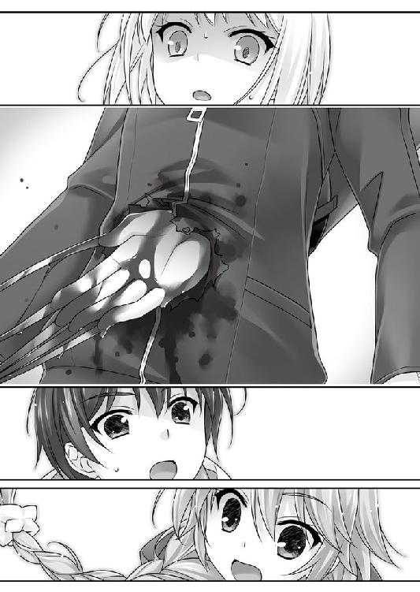
突き出ているのは、おそらく手で、その先に鋭利な爪がついている。
まるで漫画に出てくるタチの悪い悪役のような、とても人間の持ち物には思われないコウモリ男の爪が、クモ女の腹から生えていた。
「────あ」
溜息のような細い声を出して、クモ女が自分の腹を不思議そうに眺めていた。目に沁みる程赤く染まった爪と無骨な男の手に、まるで悪い冗談のように苦笑して。
「ああああああああああああああああああああああ」
絶叫と一緒に血を吐きながら、クモ女は前方へ跳躍する。その動きで、背中から貫通した男の腕を引き抜いた。
生身の人間なら動くどころか即死間違いなしの負傷だが、腹の大穴を左手で押さえ、表情らしい表情もなかった顔に怒りも顕わに相方を睨み付ける。
「............どういうつもり、このコウモリ野郎ッ」
９５２─■■■■
飛び掛かり損ねたキミは、着地に失敗して、ウシオの足下に落ちたままの姿勢で転がっている。
「あの、これって何がどうなって......」
仲間割れか？ それも突然？
「始末が面倒だと思っていたが、勝手に好機が転がり込んでくるとはな。人間も生かしておくと役に立つ。楽な展開になった」
「どういうつもりかって訊いてるのよ！」
「この娘は、本社には持ち帰らない」
「アナタ、何言ってるの？」
ヨブスが右腕を一閃させる。鋼色の爪が叔美を吊していた見えない糸を切って、芋虫の身体を左手で抱えるように受け止める。
機械のように余分な動きをしない男は、その間、ほんの一瞬もウシオから目を離さない。
腹をぶち抜かれた凄惨な姿のクモ女ことウシオは、処理能力をオーバーして固まりそうな一條を余所に、口元の血を袖口で拭う。紅が鮮やかに朱唇を彩る。
「へー、そういうこと。何だかよくわからないけど、裏切るんだ」
コウモリ男ことヨブスは、笑いもしなかった。頷きもしなかった。
「信じられない、アナタ。ｃＳのクセにどういうつもりなの。まあ、いいわ──やれるものなら、やってみろ」
「叔美......ッ！」
「オマエは動くな!!」
状況に困惑したまま、それでもこれをチャンスと走り出そうとした一條の機先を制して叫んだのは、叔美だ。捕まったままの彼女の制止で、反射的に動きを止めた一條の前で、ウシオが両腕を左右に開いて、オーケストラを前にした指揮者のように振り回した。
「私が地上に下りてたのは、運が悪かったわね」
ウシオの指先が糸を降らせる。光を浴びてようやく存在の判る微細な糸が、一見緩やかだが、逃れようのない速度で縦横からヨブスに迫る。
今張り巡らせたものではなく、飛び回る為に足場にしていた糸だ。全長にすれば、キロにも至ろうかという大量の糸が細雪のように降り落ちた。
動いていれば、キミも巻き込まれていただろう。叔美のおかげで、九死に一生を拾ったというわけだ。
ヨブスには逃げようがなかった。走ろうが跳ぼうが、全ての糸は躱しきれない。
ウシオの糸は、その気になれば鋼ぐらいなら切り裂くが、この場合重要なのはもう一つの特性である。彼女の糸は、強靱で粘着性の特製を持つ。触れれば剥がれず、絡みついて拘束する。強度は蜘蛛の糸そのもの。十分な太さに束ねれば、ジェット機でさえ拘束しかねない。
糸は、ヨブスの全身に絡みついた。コートにも、僅かに露出した腕や顔にも容赦なく張り付いて、次の動きを束縛する。
「終わりね」
「お前たちがな──」
男のその呟きを聞き届けたのはウシオだけだ。
ヨブスの左手は、コートの内側のポケットから携帯端末を取り出していた。爪の不意打ちで仕留め損なった場合の展開を想定して、事前に用意していたのだろう。
キーも見ずに、片手で一六ケタの暗証番号を打ち込む。ｃＳが仕事に使う以外の備品を持っている筈がないから、ウシオには、どうして元相棒がそんなモノを持っているのか、全く理解できなかった。
そして。
叔美のチョーカーから、カチリと音がした。
金属の環は、チョーカーではなく首輪だ。一ミリもない厚さの表面の一部がスライドし、液晶とランプを展開する。
ランプは青から赤に変わり、カウントが表示された。
３０、と。
表示された３０のカウントは、一秒毎に減っていく。
何のカウントだ？ と一條は考える。
こんな時に無意味な行動を取る筈はないと、変化に備えて身構えたが何も起きない。
カウントが、たちまち２５を切る。
「え──」
バカみたいな声を出したのは叔美だ。
次の一秒で、台風が来た。
そうとしか思えない状況に、一條もウシオも揃って目を見開く。叔美を中心に吹き荒れる暴風は、軽く見積もっても人間が浮かぶ速度だ。
ほんの一瞬で収まったが、嵐が過ぎ去った後に別のモノがいた。
「なにこれ？」
陽炎が揺れる。
田舎町の何気ない気色に、異物が混じり込む。
風景のその部分だけ、水に溶かしてしまったような奇妙な歪み。目にしただけで、一條の肺腑がぐるりと反転した。吐き気というには軽すぎる、脳どころか精神を丸ごと汚染されてしまいそうな不快感に、視界は黄昏よりも赤く歪む。
１４──
と、根拠もなく思った。
ウシオは後ろへ跳び退る。とにかくソレから離れて距離を取ろうとしたのだ。
「何よ、これは──」
虎だよ、と一條はパニックに振り切れて、かえって冷静になった頭の中でツッコんだ。
嵐の中心だった場所に、どこからか現れたそれは、確かに『虎』には違いない。
だとしても巨大過ぎた。テレビで見たことのあるベンガル虎の更に倍はある。虎というよりもゾウの大きさだ。
果たして、これを生き物と呼ぶべきか。
生命であるという確固とした存在を感じさせないソレは、黒い炎を思わせる。揺らめき燃えて朧気で、身じろぎする度に輪郭さえ曖昧にぶれていく。
異形だ。酷く歪んで、この世のモノとは思えない。
──死。
炎の虎。
これは猛毒だ。これは流行病だ。これは移りゆく死だ。
縁故を伝って死をもたらす、黒い──炎虎。
さっきの印象を、一條はより強く痛感する。胃が裏返って内臓ごと吐き出しそうになる。
ウシオの糸も、大半は最初の暴風が吹き飛ばした。
死の獣が一声どよもすように咆える。巨大な牙を、見得を切るように一振りする。
それだけで、残り僅かな糸も切り落とされてしまう。
反射的に『本』に目を通した。
ＰＧ９５２の最後に著かれた選択視を読み込んでから、すぐさま一條は跳んだ。
──選んだのだ。
ウシオにタックルする。鈍い音が、地面に叩きつけられたウシオの後頭部からして、「うぎゃあああ」
と悲鳴じみただらしない声があがった。腹に大穴が開いている身分で、その程度を気にしてほしくない。
炎虎は腕を一振りした。豪腕一閃。風が唸り、黒い炎が頬を炙る。倒れたウシオがさっきまでいた位置が、綺麗に薙ぎ払われた。
一條の『選択』が少しでも遅れていれば、おそらく間違いなく、彼女は三枚に下ろされていた筈だ。
巨体が揺れる度に、黒い炎が飛び散り、地面といわず周囲といわず燃え移る。
「ちょっと、変なところ触らないで............」
身体の下から、苦しげな吐息混じりのウシオのクレーム。
腹の傷が響いているのか、一條を押しのけようとした手にも力がない。少女の胸の辺りの、着痩せしているのか、予想外に確かすぎる手応えを手で押し潰しているのに気づいた。
「ご、ごめんなさい──っ」
焦りまくって言い訳しようとしたが、状況がそれどころではなかった。
炎虎が、一條たちを睨め付けていた。
虎の輪郭がボンヤリとしていて、半分透けて見える身体の向こうに、外灯が点々と灯っていた。水槽を透かし見るように歪んでいたが、虎の身体自体、水のように身動きする度に揺らめいて波が立つ。
今度こそ、１４がやって来るのかと、思った。
ヨブスが、冷ややかに見下ろしている。
その刹那、鉄に似た男の目をよぎった感情の片鱗を、一條は確かに見た。まともに会話したこともない相手の筈なのに、一瞬だけの感情の名前はよくわかった。
一條が、誰よりもよく知っているものだったからだ。
──恐怖。
不意に、虎の輪郭が頼りなくなる。それからほんの数秒で、掻き消すように消え去る。
後に残ったのは叔美だ。チョーカーだと思っていた首輪の液晶には、さっきまで表示されていたカウントの数字ではなく、「×」の記号。
意識のない叔美を片手で受け止めて、ヨブスは半死半生の元同僚を一瞥する。
「......」
何か言ったのかもしれない、言わなかったのかもしれない。選んだＰＧの記述には、何故だか著かれていなかった。
「......ま」
待て、と一條が言う前に、叔美を連れて男は消えた。
結局、何もできなかった。
──敗北感がきた。
ちなみに、さっきの選択視は、
倒れているウシオを助けようと思うなら／５６０─■■■■ へ行け
まずはヨブスに立ち向かうべきだと思うなら／９０３─■■■■ へ行け
速やかに戦略的撤退だ／２０１─■■■■ へ行け
だった。
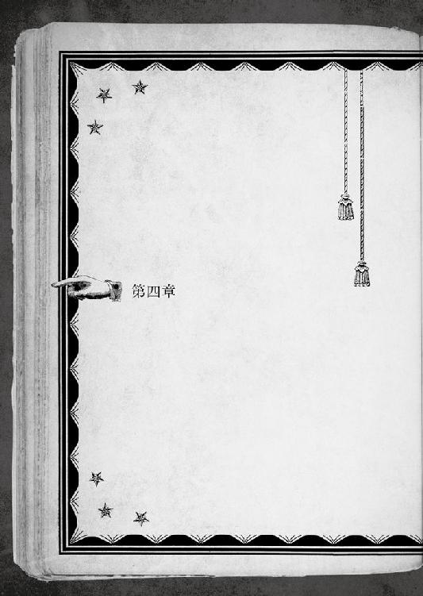
選択視で左右される人生。
選択視に記された行動でなければ、何一つ結末を変えられない。
叔美は連れ去られてしまった。
最後まで「二人で逃げ切る」選択視が現れなかったのは、どうあっても、叔美は連れ去られてしまっていたということ。
まるで、誰かが書いた物語の中にいるようだ、と一條は思う。
人生が一冊の『本』として見えるのは、己が所詮は一冊の本の登場人物である、という事実の証明かもしれなかった。
結局の処、人の一生とは嵐の大海に浮かぶ小舟にすぎない。自分の選択以外のものに大きく揺すられて、何をどうしたところで、駄目なものは駄目なのだ。
「──なんて、諦めると思うなよ」
世の中、どうしようもないことはあるだろう。
それが、何をどうしても人生を変えられなかったという意味であるとは、一條は思ったりしない。
『結末』というものは、大概の場合、ずっと前の段階で決まっている。人間が手遅れになってからしか気づけない、というだけの話。
嵐の海で難破するのが嫌なら、先に丈夫な大船を用意しておくなり、そもそも嵐の海には出ないなりの選択をして、まだ取り返しのつく時点で成り行きを変えてしまえばいい。
もっとも、例えば血筋のように「取り返しのつく時点」が、自分が生まれるよりずっと前で、人の一生では如何ともし難いということも往々にしてあったりはするのだが。
一條は、千里家に戻っていた。
さっきの戦いで汚れた服を着替えてから、未だに馴染みの薄い、自分の部屋の前の廊下で、ぽつんと独り時間を潰している。
何もせずにただ待っているのが耐えがたく、悪足掻きのような思考を続けた。
「問題は、どれが正しい解答か......だ」
そもそも、「正しい解答」なんてあるのだろうか？
手当を終えて痛み止めも使った筈の胸の怪我が、何故かズキリと軋んだ。
叔美を救えなかった──叔美自身が救われようとしなかった。
今更どうする方法も無いに等しいのに、こうして考えることを止めない自分がおかしかった。
とっくに終わった過去を振り返って、あーでもないこうでもないと悩み続けるなんて。
まったく、らしくない。
そろそろ待つのにも焦れ始めた頃、部屋から碧流が出てきた。
「目が醒めたようだ」
碧流は、弟の顔を何故か怖い目で睨んでいた。今夜叱られる心当たりは幾つもあるが、そういう判りやすい感情が原因でもなさそうなので、困惑するしかない。
一呼吸置いてからどこか突き放したように目を逸らした碧流が横に退いて、一條を部屋の奥へ招き入れる。普段自分が使っているベッドには、負傷したウシオが寝かされていた。
他でもない、一條がここへ連れてきたのだ。腹に大穴が開いて、病院よりも葬儀屋直行がお似合いな状態だったのに、ウシオはどっこいしぶとく生きていた。
ヨブスが去った直後──
ＰＧ５６０の選択視は、選ぶ余地のあまりないシンプルな二択だった。
ここは冷静に病院に運ぼう／６０９─■■■■ へ行け
馬鹿げているが、家に連れて帰ろう／２２４─■■■■ へ行け
見捨てていく、という選択視が著されていないのは、『本』もわかってきたなと思う。
あの虎の怪物に殺されかけたウシオを反射的に助けてしまった以上、毒を食らわば皿まで。少なくとも一段落つくまでは面倒を見るのが、一條の流儀だ。
病院に運ぶのは６番台。余計な騒ぎが起きるという示唆だ。『本』に言われるまでもなく判りきっている。詰まるところ、ウシオはまともな人間ではないのだから。
「──相当に面倒すぎる」
偶然か狙ったのか、心を読まれたようなタイミングで碧流の一言が刺さる。
「その......御免なさい。碧流さん」
一條は、素直に頭を下げた。
「姉さん、だ」
「碧流......姉さん」
姉への借りは、伝説の焼き土下座をしても間に合わない。一段落つくまで、ウシオの面倒を看ようとすれば、迷惑を掛け倒してしまう。
だからといって見捨てられないから、一條は黙って謝るしかない。懐かし系のホームドラマで、できた女房に借金を押しつける駄目亭主にでもなった気分だ。
「うん。まあ、いい。キミの頼みだし、異邦人に情けを掛けるのは家訓にも合う。二度目だしな。昨夜も話しただろう。千里の家は代々、『ヒトデナシ』の介添えをやってきた。キミもやはり、千里の男だったわけだな」
心なしか嬉しそうに言われても、実感は０である。家族だの家系だのと一條にとってウェット系の話題は苦手なので、曖昧に笑って誤魔化した。
「ベッドを占領しているアレがどの程度人間かはわからないが、まあ、些細な問題だろう」
落ち着き払っている碧流の態度に、どうにも違和感が付きまとう。
碧流は、一條から見ても相当の傑物かつ変わり者だ。おかしな血筋の話もされた。なるほど、色々と慣れているのかもしれない。
......にしても、だ。弟が突然、腹に穴の開いた見知らぬ少女を連れ帰ってきて、おまけに居候が誘拐されたという現在進行形の異常事態の渦中。いくら何でも平静すぎないか。
「それで、碧......姉さん。彼女......ウシオとは話せる？」
今はそんな疑問どころではない、という分別は一條にもつく。
「大丈夫だ、問題ない。......多分」
多分ですか。
一つ屋根の下にいると思い知るが、家での碧流は存外大ざっぱなのだ。とはいえ、ウシオに多少の無理をしてもらってでも、話をする必要がある。
まだ起きられないのか、横になったままのウシオは随分とふて腐れていた。あくまで一條の主観では、だ。相手の表情は乏しい。人間ではなく、ｃＳだから──その意味するところも、数多く抱える疑問の一つには違いない。
「さっき助けたわね」
「まあね」
傍に行くなり、先手を取られた。「さっき」というのは、虎から三枚おろしにされかけた一幕のことだろう。
「どうして助けたの？ 敵なのよ」
「咄嗟だったんだよ。女の子がやられるのは見たくなかったし」
「オンナノコ？ 私が？」
「だろ？」
ウシオは、一條が束になって掛かってもお話にならないほど強力だ。理屈ではわかっているが、あの一瞬にそんな計算は頭を掠めもしなかった。
「バカね」
我ながら全くだと同意したかったが、面と向かって言われると腹立たしくもある。
「......人間は悲しいかな、見た目に左右される生き物なんだ」
「ここは、何処？」
「私と一條の家だ。倒れて意識を失ったお前を、愚弟が運んできた。お前は、一條に二度も命を助けられたわけだ。死ぬまで感謝し続けろ」
部屋を見回すウシオに応えたのは、後ろにいた碧流だ。
「......恩着せがましい」
「当たり前だ。恩がある。ちなみに、利息はトイチだ」
「ナニその暴利!?」
助けた一條の方がツッコんでしまった。相当に非道い。碧流は、身内が相手でなければ血も涙も容赦もなくなるのだ。加えて、一見普段通りだが、どうやら彼女はとても不機嫌らしい。背筋をゾクゾクと悪寒めいた直感が走った。
不機嫌の原因は、どう考えても一條自身。叔美のことやウシオのことや自分の怪我や心当たりがありすぎて困る。矛先がこっちに来たらどうしようと焦るが、せめて楽に殺してくださいと頼むぐらいしか思いつかない。
「それで、私の身体は......」
「無事だ」
「うそっ、これで無事なの!?」
大穴を開けたまま立ち回っていたのだから相当にしぶといとは思っていたが、無事だとこの姉の口からハッキリ言われると、ぶっちゃけ一條はドン引きである。
「こいつらは、元々腹に穴が開いたくらいでは死なない」
しれりとした淡泊な無表情のウシオからは、碧流の話が本当かどうかは推し量れない。
「大ざっぱな治療はしておいた。私が、だ。それも死ぬまで感謝しろ、私と一條に、だ」
「......治療とかできたんだ」
「それほど難しくないからな。まあ、大丈夫だろう......多分......」
結構適当なところの多い碧流だった。
「放置でよかったのに。どのみちこれは廃棄だわ」
「なんだよ、廃棄って」
ウシオがポツリと漏らした単語が引っ掛かった。
「アイツに裏切られた。仕事を果たせなかった以上、戻っても廃棄処分。まあ、間違いない。だから、放置でも同じだった」
「......なんだよ、それ。同じ訳ないだろ！」
自分でも驚くぐらいの大声が出た。自分を省みないウシオの態度にムカついたし、何をしても同じだと言われたことが腹に据えかねたからだ。
ウシオと碧流が目を丸くしていた。
「怒鳴られると、穴の開いたお腹に響く」
「あ、その.........ごめんなさい」
怪我人の女の子相手に声を荒げるのもみっともないので、咳払いして仕切り直す。
「そんなことよりも、訊きたいことがある！ あのコートの男、ヨブスだっけ？ あいつが叔美を何処に連れて行ったのか、心当たりがあれば教えてほしい」
「どうして、私が応えなくちゃいけないの？」
「助けた借りを返して......ってことでどう？」
筋を通せ、ということだった。
恩を押しつけるのは一條の趣味じゃないが、この際だからとやかく言ってられない。
分かり易い計算式を説かれて、反対側の壁を睨んでいたウシオの首が、ぐりんと一八〇度回ってきた。
（あれ......？）
人形みたいな整った顔の少女が、まるで敵を見るように睨んでいる。おまけに、斜め右後ろやや後方、つまり姉の碧流からも、何故か似たような視線が突き刺さってくる。一條には理由が全くよくわからない。何故か、結婚記念日に浮気がバレてしまった直後の食卓についたお父さんの気分。
人気なく雪降る冬の一夜のように、しんと部屋が静まった。
「コウモリは裏切って逃げた。私の知ってる所にはいないかも」
「こんなところで終わりなんて納得できない。終わらせるつもりもないんだ。何でもいいから、この先へ行ける手掛かりが欲しい」
「いいわ」
意外にも悩むでもなく、ウシオは応えた。
「アイツをこのままにするのも、ムカつくし」
「私たちは、社命で派遣されてきたｃＳ」
駆け引きらしい駆け引きも、腹を探り合うような前置きもなく、ウシオは本題に入った。
こういう言い方が正しいのかは判らないが、ウシオは、一條がちょっと驚くほど素直だ。
カーテンの外は夜が深い。夕食時はとっくに過ぎて、街には凪ぎに似た静かな帷が落ちている。奥志麻は日本列島では比較的高緯度にある為、まだ真夏の熱気こそないが、本州よりも一足早く、夜にも暑さを感じる季節になっていた。
──さっきから、『本』が現れないな。
一條は、努めて冷静に現状を分析しようとする。「家に連れて帰る」を選んで『本』を閉じた後、この場面に至るまで姿を見せようとしない。どう行動したとしても、ここまでの展開に《分岐点》はなかったということだ。
叔美の居場所を知りたいと気持ちばかり焦るが、この状況でアテもなく飛び出して、辿り着ける筈もないだろう。
今の一條には、前兆や伏線から物事を推測することだけが、ただ一つの武器である。
常に精密に、慎重に、乱れることなく、一つ一つ段取りを踏んで、あると信じる「正解」へ近づく手段を見極めなければ、何の役にも立たないのだ。
「ｃＳって何？ 君たちみたいな......その、ちょっとオカシナ連中のこと？」
身も蓋もあるように言葉を選んだが、返答は端的だった。
「簡単に言うと『化け物』が一番近い。人間みたいな別のモノ。人間を模造した、人間よりずっと強力な、尸器を機能させる怪物的なツール」
「タ......なに？」
「尸器。私の糸みたいな、ｃＳが個々に持つ特別な機能のこと」
「なるほど」
「といっても、生身には違いないけど。造った企業の名前は、言いたくても言えない。守秘コードを設定されているから」
遣り取りは一條に任せっきりにして、碧流は後ろで見守っていた。何故か背中に視線が刺さってきて、とても痛い。
「私たちは、とある場所で確保したアレを、これまたとある場所まで移送する途中だった。トラブルが重なって、逃げられてしまったけど」
「アレっていうのは、叔美を？ どうして叔美を狙う？」
「アレは、柱。......と言っても、わからないか。私から質問するわ。アレの周りでオカシナことは起きなかった？」
叔美が来てから、オカシナことなら一山幾らで起きた。ウシオとヨブスがやってきたのも、間違いなくオカシイ部類の出来事だ。
「......あったよ」
「それもオカシイわね。何かあったなら、アナタはとっくにくたばってる。生きているんだから、何も起きなかった筈。でも何もないのは、輪を掛けてオカシイ」
「それは、どういう意味？」
「アレは不幸を引き寄せる。周りはとばっちりで非道い目に遭う。大概は死ぬ。いつも生き残るのはアレだけ」
専門の用語はわからなくても、ウシオの語る意味は通じた。驚きはない。一條の中でずっと燻っていた感覚に、すっと筋が通っただけだ。
通っただけに、解らなくなることもある。
「.........どうして、そんなのをわざわざ捕まえようとするんだ？」
叔美は『１４』に取り憑かれている。
拘われば、死ぬ。捕まえようなんてしようものなら、大勢が命を落とすだろう。捕まえた後も死を振りまき続ける。そこまでして欲しがる神経が、一條にはこれっぽっちも理解できない。
「人が何かをする理由は、大概一つしかない」
後ろに下がっていた碧流が、ようやく話題がそこへ来たかと言いたそうだった。やはり、碧流は何かを知っているのだろう。
「利益だ。特に『企業』ならば、な」
「でも、叔美に拘わると只じゃ済まない。ハッキリ言うと死ぬんだよ」
「不幸の裏返しは、幸運だ。生と死。幸と不幸。奪う者と奪われる者。世の中は、どこかで平衡が取れるようになっている。誰かが得た分、誰かが喪うのは道理に合う」
他人事のように、突き放したように、道を示唆する魔女のように、碧流は囁く。
「お祖母様から昔聞かされた憶えがあるよ。そういう血筋の輩がいると。叔美は天秤だ。秤の一方の皿に不幸を集める。そうすることで、反対側には幸が集まって釣り合いが取れる。込み入った理屈もあるにはあるが、分かり易いよう説明すると、そういう仕掛けだ」
そんな簡単な理屈で幸福や不幸を扱っていいのかと思うが、一條が腹を立てたのは違う部分だった。
また、血筋か。
選択しようにも、最初から決まっていて動かせないモノ。
「叔美を欲しがる誰かは、天秤の反対に貯まった『幸福』の取り出し方を知っているのだろう」
「そんなの、まるで便利な道具みたいじゃないか」
「まるで、じゃない。そのものだよ」
不幸を集めてバラ撒く。代わりに他の誰かを幸福にする。
見事な道具。素晴らしい道具。
納得いったわけではないが、そういうカラクリだと仮定すると、筋の通ることが多い。
一條が見た、叔美の孤独も、泣きそうな顔もお構いなしに、あちらからこちらへ、こちらからあちらへと、幸福量をグルグル回していく、どこかの誰かの便利なカラクリ。
──誰かって誰だよ。
叔美自身もよく解っていなかったであろう事の原因を、碧流は「血筋」だと言った。あるいは、大昔の誰かが用意したカラクリの、巡り巡った因果の端っこなのかもしれないが。
『結末』というものは、大概の場合、始まる前の『選択』で出来上がっている。今があるのは、ずっと昔の何かがあるから。
筋は通っているのだ。
『行く先』は既に決まっているのだから、結局自分で選択することに意味なんてない、と「誰か」に嘲笑われているようで、胸クソが悪かった。
「ふーん、そうなんだ」
ウシオが、碧流の話を感心しながら聞いていた。
「えっ、知らなかったの？」
「どうでもいいことだもの。命令されたから連れて行くだけ。言われたように、アレをある場所へ運ぶ。いえ、運ぶ筈だった......か」
ヨブスが裏切って、命令はオジャンになってしまったのだ。
「ｃＳのクセにどういうつもりなんだろう、あの野郎」
「裏切ったヤツは確か、コウモリ男だったな。コウモリだけに、見事な身の振り方だ。流石、私。今のは上手いことを言ったな」
「いや、碧流さん......そんなドヤ顔されても......」
「姉さん、だ」
この期に及んで、チェックが厳しかった。
「でも、どうして今まで何もなかったんだろう。今の話からすると、僕にしろ、碧流......姉さんにしろ、叔美と拘わってる。とっくにタダでは済んでない筈だろ」
「それ、私たちも不思議だった」
「疑問はもっともだ。勿論、それは偶然ではなく人の業だ。理由がある」
碧流が、どこか自慢げに大きな胸を反らしながら謎解きをする。
「お祖母様のおかげだ」
「おばあさん？」
「私の祖母、つまり、キミの祖母でもある。憶えていないかもしれないが。ここは宿、一つの楽園。『アンブロシウス』というのは、お祖母様が付けた名前だ。彼女は、この奥志麻で安らいで土に帰った。だから、寄る辺ない者には与えるようにと、遺言を残した。私はそれを守っている」
碧流が両手を広げて、この家を指し示した。
「この場所には、彼女の『力』が残っている。魔女とでも、霊場とでも、霊験とでも、結界とでも、好きに呼べばいい。キミは憶えていなくても、お祖母様は守っているんだ。私たちを、この街を。だから、この家に迎え入れたから、叔美の災いは眠りについた」
「それなら......」
「キミの言いたいことはわかる。だから、先に言っておく。お祖母様の『力』は大した物だよ。今時には珍しい、『本物』だからね。それでも、叔美の力は、きっと抑えきれない。彼女はこの家よりも強いんだ。そこの二人が追ってきたせいで、歪みが早く出てしまったが、そうでなくても遅かれ早かれ、似たような結果になっただろう」
「それならそうと、先に言っておいてくれれば......」
「言っただろう、前に」
真顔で言い返された。
そういえば──と。一條が軽く聞き流していただけで、碧流はそれとなく事情を窺わせていた。昨日の夜も、『衝撃の告白』で仄めかしていた。
人は、手遅れになってから気づくもの。ヒントは何処にでもあった、悲しいくらいに。
「あの男......ヨブスは、叔美をどうするつもりなんだろう？」
「アナタはどう思う？」
ウシオに訊き返された。一條は手持ちの手掛かりを、一つ一つ頭の中で整理していく。
「............叔美は傍にいるだけで危険だから、長く連れて歩かない。お前たちは、どこかへ移すつもりだった。何か方法があるんだな、この家みたいに。叔美の『１４』を一時的に抑えるか、先送りにするみたいな方法が」
「１４？」
「えっと、その......『災い』だかなんだかを」
「イイ線突いてる。私たちは船で運んできた。大掛かりな設備で、セーフティを幾つも掛けて、そして慎重に移動することで、不測の事態を限りなく避ける」
設備が非常に大きくなるので、大型の船でないと運べない。それに、海上の方が何か遭った時にも人目につかなくて済む──という理屈らしい。
「そうか......ヨブスだって条件は同じ。つまり、似たような迎えの船と合流するんだ！」
「なるほどね」
フンフンと素直に感じ入ってるウシオは、子供のようだった。
「わかった。ありがとう」
残された時間は、ヨブスに迎えの船が来るまでだ。
どれだけ残されているかはわからない。手遅れかもしれない。
だから、今すぐ飛び出そうとした一條を、碧流が真顔で制止した。
「どこへ行くつもりだ？」
「叔美を連れ戻してくる」
二人で逃げ切れなかったことも、怒鳴り合ったことも、もういい。
過ぎたことは過ぎたこと、だ。
次を目指す。
この先に彼女を連れ戻せる『結末』があるのか、そんなモノは何処にも存在していないのか。
──信じるだけだ。
今はまだ「途中」なんだと、きっと望んだ『結末』に辿り着けると、最後まで。
「無茶だ。ｃＳ相手に、キミではどうにもならないだろう。万一何とかなったとして、連れ戻して、どうする？ さっき説明した通りだぞ──キミまで殺されてしまう」
驚くほど強い言葉を碧流が使ったので、息を呑む。
「叔美は、殺そうとしてるわけじゃ──」
「ああ、そうだろう。アレに悪意はない。だが、悪意のあるなしは関係ない」
「その女の言う通り。拘わると死ぬ。それがアレのルール。アナタ、普通の人間でしょ」
何故かウシオまで口を挟む。二人の方が正論だ。認めざるを得ない。今回連れ戻せたとしても、『アンブロシウス』の守りもいつかは及ばなくなる。
その時、叔美の周囲の大勢は、彼女が『死神』であるという言葉の意味を知る。
そこまでして助ける、理由も意味もあるのか？
「──叔美は、ちゃんと言ったよ。自分に近づくなって」
一條には、意味も理由もよくわかっていなかった。
ただ、叔美をこのままにはしておきたくなかった。彼女は何度も何度も、自分にだけではなく、碧流にも似たような警告をしていた。
言う必要はなかったのに。お人好しの善意だけを奪って、周りが死ぬに任せればいい。そうやって、他人を喰らって生きていくこともできた筈だ。
叔美は、ずっと独りだったクセに、そんな生き方は選ばなかった。
善意か、良心か、あるいは偽善と言うべきか。
どこかの誰かに運命の筋書きを与えられていた叔美が、名前も知らないどこかの誰かを殺すまいとして、だから、独りで孤独にあの路地で行き詰まっていた。
不幸を集めるのが血筋なら、それは生まれた時から押しつけられていたのだろう。
とっくに手遅れで自分自身では変えようのない選択を、一方的に押しつけられた嫌がらせのような不条理を、叔美はずっと耐えてきた。自分で変えようのないことを押しつけた、この世界の何もかもを恨んでもよかったのに。
やろうと思えば、見えるもの全てに八つ当たりするだけの『力』だって、彼女には与えられていたのだから。
選べばよかったんだ。
いいＰＧを、自分に都合のいい選択視を。
「まったくバカみたいだ」
お人好しの叔美。
しみじみと、一條は思う。この世の中には、他に幾らでも選択があるのに、わざわざ行き詰まりを選ぶバカもいる。
叔美は、離れたくて、離れたくない顔をしていた。
彼女は、自分に拘わった一條が死なずにいることが、とても不思議だったのだろう。
だから、自分の節を曲げて、ここに居てくれた。
「──手は引かないよ」
叔美を連れ戻しにいくのだ。
碧流は、遠くにある眩しいものでも見るように目を細めていた。
一條にとって、その選択をする意味があるのかは、まだよくわからない。
でも、あの路地裏で行き逢った時から、理由ならきっとあったのだ。
自分を見失いかけていた時に、ここにいて、誰かの為に何かをする理由を与えてくれた。
還ってきても、居るべき場所もなく漂流していた一條が、やっとのことで、ここに居るべき理由を見出せた。
叔美の選択で救われたのは、きっと一條の方だ。
叔美であることが、一條であることの意味を与えてくれた。
「叔美は、行きたくないって思ってるよ。出て行くって言ってたけど、でも......本心からそう思ってない。だから連れ戻してくるよ」
「その先は──ないぞ」
叔美は、『１４』を引き連れている。これまで自分や碧流が無事だったのは、この場所で祖母が守ってくれていたからだ。そう、比喩でなく本当に。
『幸運』は、いつまでも続かない。碧流が教えてくれた。
掛け値なしの事実だろう。行かせたくないからと、いい加減なことを言う人ではない。
どんな時でも、彼女は自分に嘘は吐けない、とても眩しい人だ。
だから──
姉と呼んでもいいと思ったのだ。
「まだできる内から、選ぶのを諦めたくないんだ、姉さん」
真っ正面から姉と呼ばれて、意表を突かれた碧流が鼻白む。
初めて、真っ当に姉であることを認めた時に、一條の中で、何か形のないモノがすとんと胸に落ちた。
「死にたくないし、死ぬのはイヤだし、姉さんたちを死なせるのはもっとイヤだ。でも、死にかけるぐらいまでなら、まあいいかな。それで、この先、叔美の進む道筋を、ちょっとでもマシにしてあげられるなら──それはきっと、僕にならできることだ」
世の中は、何もかもが収まるところに収まるようにはできてはいない。よくできた物語のような、綺麗なオチは着いてくれないのだ。
一條は学んでいる。世界はとても不格好で、手探りで、それでいて、いつだって時間は限られていて、選び取れる選択視だって有限だ。
些末なことで世界は変わるが、多少のことでは、人生の行く末はピクリともしない。
この選択だって、結局は収束して無駄に終わってしまうかもしれない。
今から遣ろうとすることに、意味はないのかもしれない。
だけど、意味のある選択ばかりが人生じゃない。
愚かな選択と判っていても、行き止まりが見えていても、どんな理屈も正論も振り切って選択してしまう時だってある。
それが、自由ということ。
自分の人生を選ぶという、本当の意味だ。
この今がずっと前に決められていて変えようがなかったのだとしても、この先の為に選び続けよう。
「叔美を助ける。連れて戻ってくる。無事に二人で帰ってくることができたら、後は......叔美次第かな。彼女に任せる」
自分の『本』は、自分にしか見えない。叔美の選択視は、どこまでいっても叔美自身が選ぶもの。
他人は触れられない。僕も、姉さんも、他の誰も。
叔美を助けられる結果に辿り着けても、その先彼女がどうするかは、彼女自身の問題だ。
それでも出て行くというのなら、今度は一條も止めない。ここに居たいと望むのなら、そうできるように手を尽くそう。どうにもならなくなったら、その時にまた考えて、選択視を選択しよう。
この『選択』で、一條に大事なことを教えてくれた彼女にも、まだ知らないことを教えてあげられるのなら、もっといい。
「キミがやろうとしているのは、為せば成ることじゃない」
「遣ってみないとわからないよ」
「わかるよ。キミは全く憶えていないだろうけど、私はよく憶えている」
懐かしさよりも哀切を込めて、碧流は言うのだ。
「一年前も......あの事故の時もキミは無茶をして......死にかけて......それで、
──記憶まで、失くしたんじゃないか」
「そうなの？」
不思議なモノを見る顔をウシオがしていた。
そう──
『本』に取り憑かれるキッカケとなった去年の事故。
その事故で死にかけた一條は、後遺症なのか記憶を失った。
周囲に隠していた訳ではなかったが、周りに変に気を遣われるのがイヤだから、わざわざ言わないようにしてきた。その事実を知っているのは数えるほどだ。姉の碧流と幼馴染だった久留美、久留美の両親......。
一年前。病院のベッドの上で起きたら、一條は何も憶えていなかった。故郷も自分の家も懐かしい持ち物も、何もかもが他人の所有物のように実感がない。
それは、千里一條が何者でもなくなってしまった、ということだ。
療養の名目で、一時、見知らぬ故郷を離れて、頭が冷えてから戻ってきても、ここが自分が居ていい場所だという確信は持てなかった。
遣るべきことも居るべき場所も何一つ見出せないクセに、自分以外は誰もが自分を知っている土地で、宙ぶらりんのまま浮かんでいただけの千里一條に、理由を与えてくれたのは叔美だ。
自分がここにいるのは、叔美の為になる、と。
自己満足かもしれない。彼女がそれを喜んでいるかどうかもわからなかったが、叔美の連れてきた『１４』が見えるのは一條だけだ。
それは、いなくなってしまった、かつての千里一條ではなく、今の一條にとっての理由であり意味なのだと確信できる。
「今度は......上手くやるよ」
前の時の記憶もないのに、ぬけぬけと言う自分に苦笑する。
「今度は記憶だけじゃなく、命だって落とすかもしれない」
「......かもね」
正直、死ぬのはイヤだが、死ぬのが怖いと思い切れない自分がいる。決定的に欠けているのは、多分......執着だ。
過去がない一條は、過去を振り向いても仕方がない。
真っ白な空白がドカンと構えているだけの空虚を掬ったところで、何も出てこない。
自分を作っている素材が過去の積み重ねだとすれば、記憶のない千里一條は、何者でもない曖昧で薄っぺらな幽霊みたいなものなのだ。
そんな曖昧さと、この『本』のような異常の上を、一條は素足で氷の刃の上を渡るようにソロソロと生きていた。
──ああ、そうか。
最後のピースがピタリと嵌る。
叔美は、自分とよく似ている。
一條よりも、もっと深い孤独を生きていた。それでも逞しく生き続けようとした。
そんな叔美の人生が、きっと目に痛いくらい眩しかった。
自分も胸を張っていいのかもと、そんなことを想ってしまうぐらいには。
だから、迎えに行かないと。
叔美が与えてくれたものを、今度は自分が返す番だ。
それが筋道というものだろう。
そうだったのか、と小さく頷いて、自分で納得して。
「今度こそ、上手くやる」
遣るべきことを選んでしまった。
そして、待ちかねていたように、一條の目の前に『本』が現れる。
４０１─■■■■
さて、残された時間は少ないぞ。
最後に必要なのは、キミの決断だけだろう。
行く／７１１─■■■■ へ行け
考え直す／２０５─■■■■ へ行け
ＰＧの記述は極めてシンプルだった。選択視も。
まるで、最後の忠告のように。
選んだ後はやり直しが利かないのが筋道、「ルールその五」だ。
どちらが「正解」なのかはわからなかったけれど、どちらを選ぶかは迷わなかった。
「行く」を選んだ。
「............キミは、昔から、つくづくバカなんだな」
「ごめんなさい......昔のこと、憶えてなくて」
「キミが謝ることじゃない」
碧流が、どこか嬉しそうに笑っていた。
「判った。もう、好きにしていい」
「姉さん」
「その代わり、私も一緒に行く」
「うぇ」
驚きすぎて、変な声が出た。
「何を驚く。私は姉だ。キミを手伝うのは当然だ。血は水よりも濃いんだ。イヤだというなら、二度と出て行けないように、キミの両足を切ってベッドに縛り付ける」
どこまでも本気そうで、アグレッシブ過ぎる愛情表現に笑いが引き攣ったが、正直嬉しかった。そこまで想われているという意味でもあるのだから。
「それに、私にだって遣れることはある」
「あのね、こっちを忘れて話が勝手に進んでるんだけど......コウモリが居るかもしれない場所なら、わからなくもないわよ」
一人置いてけぼりだったウシオが、どうしてだか白い眇目で睨みながら割って入った。
「本当に!? 居場所はわからないんじゃ......」
「一條を騙すつもりなら、心臓に杭を打って、後で裏庭に埋めてやるぞ」
そこまでしますか!?
「私の知ってる場所には居ないわ。でも、心当たりはある」
おそらく、これが最後のチャンスになるだろう。
「教えるには条件がある。私を、連れて行くこと」
ウシオまで......。それはつまり、力を貸してくれるということだろうか。
まさか。そんな少年漫画みたいな展開を期待するのは浅はかだろう。
「ｃＳでも、その傷で動けば無事には済まないぞ。それに、お前は叔美を狙っている筈だ」
現れたままの『本』に目を落とすと、
７１１─■■■■
碧流のごもっともなツッコミを、ウシオは淡々と鼻で笑う。
「このまま、コウモリ野郎の好きにさせるのは、気に入らないのよ。連れてってくれるのなら、案内するわ」
「叔美のことは？」
キミの問いにも、彼女は平然としたものだ。
「ヨブスの始末を付けてからにしましょう。私、先のことは考えない主義だから」
キミが後ろを振り向かないように、ウシオは先を考えない主義らしい。
さて、どうやら得るべき情報は全て得たようだ。
ウシオの申し出を受ける／９１１─■■■■ へ行け
申し出を受けない／３０１─■■■■ へ行け
叔美が目を覚ますと、埃と機械油と鉄錆の入り混じった据えた臭いが鼻をついた。天井近くに開いた通気窓から流れ込むのは潮の臭い。驚くほど近い汽笛の音。
ここは倉庫の中、おそらく港の近くだろう、と素早く当たりをつける。
冷たい床に投げ出された格好で天井を見上げていた。まるでいつかの路地のようだと思う。あの時は、バカがやってきたが、今は誰もいない。
断線していたい記憶回路が繋がって、バラバラのパズルのピースがいきなり組み上がった。曖昧だった時系列が奔流みたいに流れ込んで整頓される船酔いめいた感覚に、気分が悪くなる。
自分の身体を見回すが、不思議なことに縛られていない。
「──オマエ」
コートの男が、離れた場所で倉庫の壁に背を預けて座っているのに、ようやく気づく。気配が殺しているのか、叔美にも今まで察知できなかった。
意識を失う直前までの記憶は、もう思い出している。
自分は捕まった。一條がバカをしようとしたので一喝したら、理由はわからないが敵に仲間割れが起きた。
「縛ったりしないでいいのかよ。アタシが逃げ出したらどうすンだ？」
石でも投げるように言葉を投げつけると、コート男がむさ苦しい顔を向けてきた。何か言った、らしい。
「............」
「だから、オマエの声は小さすぎて聞こえないって」
同じような台詞を、前にも言ったことがある。叔美が奥志麻に来る以前だ。
ここからずっと遠い場所でヨブスとウシオに捕まって、大きな船に乗せられた。叔美の『呪い』だか何だかを知っていたらしいその連中は、何やら大げさな模様やら機械やらを詰め込んだ船内の片隅に彼女を閉じ込めて、それ以上誰も近寄ろうとはしなかった。食事などの世話をしていたのは、もっぱらヨブスたちだ。
男はしばらく考えていたが、黙って携帯端末を差し出す。画面に文字が出力されている。
『問題はないか？』
会話の代わりかよ、とこの期に及んで苦笑してしまった。
『逃げても、無駄だ。捕まえるのは簡単だ』
「大人しくしててやるよ。逃げないって。オマエの魂胆は別にどうでもいいし」
両足を投げ出して本当にどうでもよさそうにしていると、驚いたことに、
『怖くないのか』
不景気そうなコートの男が、柄にもないことを訊ねてきた。
「オマエが？ それともこの先どうなるか？ まあ、連れて行かれる先とか、考えなくもないけど、考えたって無駄だろ」
叔美を殺すつもりなら、とっくに殺されている。そうでないのなら、囚われようが、何をされようが、どこへ行くとしても同じ事だ。物事を深く考えたところで意味がない。
遅かれ早かれ、『道』は必ず行き詰まる。この世界で、自分には行ける場所がないという事実を、奥志麻に来てイヤという程思い知った。
来なければ、わからなかった。そっちの方がよかったのに。
これまでは死体のような人生だった。本物の死体になったところで、きっと大差はないだろう。死にたいわけじゃないが、死んでしまえば、この世から厄介事が一つ減る。
「............どうして、そっちの方がいいンだよ」
自分で思ったことなのに、筋が通っていない気がした。
死体同然の人生でも、『投げ出す』のがイヤで歯を食い縛ってきたこれまでが嘘のように、胸の内が冷めている。
それよりも、ウシオやヨブスに命令している偉いヤツ──どこぞの金持ちか、珍しいモノ好きの酔狂人かは知らないが、ソイツらに叔美は散々な目に遭わされた。
正直、ヨブスが裏切ったのは小気味いい。自分を狙う連中の誰かが煮え湯を飲んでいるとするなら、この胸につっかえている黒泥みたいな感情も少しは晴れる。
八つ当たりで気持ち良くなると思ったのに、忌々しくも頭を掠めた顔があった。
「......あのクモ女、死ンだのか？」
しばらく考えてから、ヨブスは首を横に振る。
そっか、アイツも死んでないのなら、よかった。
「アイツも......？」
自分がホッとしたのだとわかって、余計胸に石の詰まったような気分になった。
「どうしてアタシが、狙ってくるヤツの心配してやンなきゃならねーんだよ......」
『お前を引き渡す』
液晶が律儀に突きつけられたので、思案する余裕ができた。
「引き渡すって、誰にだ？ オマエ、仲間割れしてたろ？」
『新しい雇い主』
叔美の世界には、産業スパイやヘッドハンティングという価値感がない。単語が上手くイメージに結びつかない。ただ、この化け物を差し向けてくるような手合いが、飼い犬に手を噛まれてそのままにしておかない、というのはわかる。
「オマエ、アタシを連れてっても、元の飼い主に始末されちまうンじゃねーのかよ？」
ヨブスは地蔵のように何も言わなかったし、顔色も変わらなかった。もしかすると、攫ってきた相手に、身の振り方の心配をされるのが不思議だったのか。
「オマエら、ムカつくし腹立つけど、憎たらしいわけじゃねーよ。だって、死なねーもンな」
ヨブスの仲間たちは、叔美を物々しい部屋に閉じ込めて移送している最中も、死ぬのを怖れて誰も近づいてこなかった。只二つ接点のあった化け物二人組が、今も元気で生きてるのは妙に嬉しい。古馴染みに遇う、というのはこんな感覚かと思う。
「まあ、偉そうにふんぞり返ってる連中に一泡吹かせたのは、それなりにいい気味だし。どうせ、どこ行っても変わらない」
少なくとも、奥志麻ではない場所に行くのなら。
そっちの方が良い。
「それよりさ、オマエ、大丈夫？ この前だって車にぶつかってたし、それでピンピンしてるんだから、化け物なんだろうけど。でも、死なねーってワケじゃねーンだろ。死なねーのなら、ちょっと嬉しいけど」
『ｃＳだから、問題ない』
「それってなに？ オマエらみたいなお化けモドキのこと？」
『造られて、生まれてくる』
よく判らなかったが、漠然と納得して、もう一つの疑問を訊ねる。
「そういえば、さっきのアレ、何だよ？ っていうか、この首輪だけど」
『お前が招く黒気を抑える』
叔美が連中に捕らえられた時、最初に着けられたのがこの首輪だ。似たようなカラクリは幾つもあった。それはどれも、振りまかれる災いを抑える為の仕掛けである。何重もの安全装置を掛けられて、叔美は運ばれていく危険物だった。
「じゃあ、ここへ来て一週間何もなかったのは、この首輪のせいか？」
困惑じみた気配が、返事の代わりにやってきた。
「......違うの？」
『そこまでの性能はない』
「......じゃあ、アレは何だよ」
『抑えられた力は消えずに溜まる。一種のダムだ。さっきのアレは、溜まって密度の増した力の一部を開放した結果だ』
理屈はよく判らなかったが、一部でアレなら、総量なら一体どれ程なのか。叔美の背筋が冷たく凍った。
『使うつもりはなかったが、やむを得ない状況だった』
「困るの？」
『お前の「力」は相手を選ばないし、制御もできない』
一つ間違えれば、叔美以外の全員があの場で死んでいた。ヨブスにとっても、首輪の解除は危うい賭けだったのだ。
「......オマエも死ンじゃうところだったンだろ。そんなアブナイ橋渡って、仲間のこと裏切ったのか？ 頭わるいヤツだな」
束の間の空白があって。
『取引だ』
「お金、沢山貰えるってことか？」
『もっと重要なものを』
叔美に声色は判らなくても、幽かに見える目線に宿った切実な色は理解できた。
だからコイツは裏切ったのだ、と。危険を承知で、処分されるとわかっていて。
そこまでする理由って、超スゴいお宝とかだろうか。
叔美の貧困な想像力では、その程度が発想の限界だった。
「最後に一つだけ。これから、アタシどうなるの？」
『お前を欲しがっている連中がいる。そいつらに引き渡す』
「奥志麻から離れるンだな」
『そうだ』
ホッとしている、と叔美は思った。
ここを離れたいのは、彼女の大嫌いな、どうしようもなく薄っぺらなお節介が多いからだ。
自分が遠くへ行けば、きっと。
──きっと、なんだろう？
何故か、胸の奥が締めつけられて、その痛みでようやく行き当たる。
遠くに行けば、一條たちは死ななくて済む。
ああ、なんて単純な答え。
そんな簡単なこともわからなかったのかと、叔美は笑い出しそうになった。
叔美がここにいると、一條たちが不幸に巻き込まれてしまう。だから、遠く、ずっと遠くへ離れる。理に叶っている。筋が通っている。
不幸が去れば、後には幸運だってやってきてくれるかもしれない。
完璧で、何一つ齟齬のない、完膚無きまでに、正しい。
「おっしゃああ!!」
喜んで、いきなり飛び上がったら、隣の男が何事かという顔をした。頭のネジが外れた、ぐらいは思われたかもしれないが、叔美には気にならなかった。
だって、答えが出たのだ。
右も左も考えたことがなかったのに、生まれて初めて自分で得た、正しい答え。
「じゃあ、あとちょっとだけ、待つとするか!!」
叔美は、本当に嬉しかったのだ。
胸の奥の膿んだ傷口のような鈍い痛みは、いつまで経っても消えてくれなかったが。
奥志麻が水の都と呼ばれるのは、市内を天川支流の三本の河川が流れているという理由だけではない。都心部からほんの僅か、東に三キロも足を伸ばせば、雄渾な紀伊水道が待ち受けている。
玄関口に当たるのは男毬島港だ。奥志麻市と隣接する市の二つに跨がった一大港湾センターであり、四国と本州を繋ぐ二本の大橋の登場で旅客港の地位こそ失われて久しいが、未だ国際貿易港としては確たる地位を保っている。
かつて水路全盛の時代。本土からの定期航路フェリーの舳先に立てば、近づくにつれて、奥志麻の街中に忽然と現れる美山の景観が、まるで空に描かれた美しい眉の如くに映えたろう。美と冠された名の由来でもあった。
一條たちを乗せた車が走るのは、奥志麻市内から港湾部へと出るルート。古来の旅人たちの足取りを逆に辿った。運転するのはマスターだ。碧流の電話一本で、深夜にも拘わらず、文句一つ挟まずに車を出す老紳士と『アンブロシウス』の先代との間に、どんな友誼が結ばれていたのか一條にはわからない。
あるいは、去年までなら知っていたのかもしれないが、既に失われてしまった風景だ。一條は過去を振り向かない。
近づく前に車とマスターには退避を願い、一條たちは徒歩で港湾部の倉庫街を行く。夜も深く人気はないが、港の全てが眠るわけではない。遠く、潮の匂いに混じって汽笛が細い音色を奏でている。
一歩ごとに、その瞬間が近づきつつあるのだと悟る。痛み止めがよく効いているのか、胸の傷に感覚はない。この騒ぎが終わるまでは保つだろう。十分だ。
そして、まさに際どいところだったと言えた。
無人の倉庫が建ち並んだ迷路のような区画に、ヨブスと叔美の姿を発見した。どうやら、移動する直前に追い着けたらしい。
長身で無愛想なコート姿の傍らに、叔美がいる。
親子のような。兄妹のような。
人攫いと攫われた女の子の位置──には不思議と見えない。
けれど一條にとって、叔美が男の隣にそうしている光景は、キチンと言語化こそ出来なかったものの、奇妙なほど腑に落ちた。
９１９─■■■■
「......来やがった」
と、嘆くように零したのは叔美で。
「悪い予感が当たったか」
と、聞こえない声で言ったのはヨブスだ。
キミの味方は、姉の碧流とウシオ。叔美は数に含めないから、状況そのものは三対一だが、コウモリ男にとっては失笑ものだったろう。
実際、男の石の塊みたいな顔には表情らしい表情こそないが、追い詰められた鼠のそれではなく、窮鼠の反撃に驚いた虎の余裕が窺えた。
目の前に『本』を開いたまま、一條は慎重にタイミングを窺う。
追い着いたものの、間に合ったと言えるかどうかは、これからの選択次第だ。
「叔美を返せ」
口火を切った一條に、真っ先に返事をしたのは、予想外の相手──
「このバカ！ アタシは戻らねーぞ。コイツと一緒に行くンだ。さっさと帰れ！」
叔美本人だ。
「そうか。清々しい態度だ。お前の意志を尊重して、さっさと帰ろう」
碧流が、これっぽっちも躊躇いなく踵を返そうとしたので、慌てて腕に縋りついた。
「待ったーーーーっ！ さっきの打ち合わせ通りにするの!!」
「......ちっ」
舌打ちまでされた。恐ろしい人だ。ポーズではなく、まるっきり本気なのが輪を掛けて恐ろしいが、今はそれよりも遣るべきことがある。
「叔美では話にならない。さっさとコウモリと代われ」
「だから、さっさと帰れって！」
自分を「そいつ」呼ばわりする碧流に、叔美は一歩も退かなかった。
勿論、一條だって引き下がるワケにはいかない。
「五月蠅い、一緒に帰るんだ。叔美は、ウチの従業員なんだから！」
「オマエの方がうるさい！ 帰るって何だよ！ アソコは、元々アタシの家じゃねーぞ。アタシには家なンてない、どこへ行っても同じだ。だから、アタシはコイツと一緒に行く」
ハッキリと言い切られて、一條は大きく深呼吸した。
言い負かされたからではなく、腹が立って血が上りかけた頭を冷やす為だ。
「嘘はもっと上手につけよ」
「何だとっ!!」
「そんな泣きそうな顔で言われたって、誰も騙されないよ」
「誰が騙すか！ いい加減にしろ!!」
折角助けに来てみれば、あまりの言い様だ。往生際の悪すぎる叔美に、一條も頭にキたのを抑えきれない。
叔美の、考えていることなんて大体判る。
──『アンブロシウス』に残るのか。そして、大勢周りの人間を死なせるのか。
──アタシは「死神」なのに。
「素直になれって！」
「アタシはいつだって素直だ！ おせっかいはさっさと帰って寝ちまえ!!」
売り言葉に買い言葉で、際限なくヒートアップする。白馬の王子を気取って囚われのプリンセスを颯爽と助けに来たつもりが、待っていたのはバタ足のボクサー同士にも似た泥沼のドツキ合いだ。
「わからず屋め!!」
「オマエがだろ!!」
拳を振り上げる代わりに、言葉で相手を叩きのめそうとして、息が切れるまで罵り合っても、どこまでも平行線にしかならない。
「だから、帰ろうと言ったのに。キミたちに任せていると、全く話が進まない」
「本当ね。これは流石に予想外」
碧流とウシオが、二人揃ってボヤく。
「時間を無駄にすれば、後ろのコウモリも困るだろう。まあ、それは別に構わないが、話が長くなるのも面倒だ。私が代わろう──叔美」
ぜぇぜぇと肩を弾ませて、罵倒する気力も尽きた二人の間に、碧流が割って入る。
「出て行くと言うのなら、私に引き留める理由はない。が、他ならない愚弟の頼みだ。お前にチャンスをやる」
「............このブラコン。そンなもの、どこにあるンだよ」
「訂正しよう。ブラコンではなくファミリーだ。お前には入り込めない間柄だ。悔しがれ」
真っ赤になって「この女死なせる」と歯を剥く叔美の怒りを、当然のように碧流は無視する。
「お前のチャンスが何処にあるかといえば、『アンブロシウス』にだ。この一週間、お前の周りで何も起こらなかったのが不思議だったろう？」
一番の餌を目の前にぶら下げられて、叔美の顔色が目に見えて変わった。
「理由を知ってるの!?」
「教えてほしいか、ほしいだろうな──あげない」
「............ッッ」
「ね......姉さん............」
「冗談だ、教えてやる」
心底恐ろしい人だった。この期に及んで、叔美も顔を引き攣らせていた。
「何も起こらなかったのは、『アンブロシウス』に来たからだよ。あるいは、それこそ『必然』というものかもしれないが。お前にも言った筈だ。千里の家は『ヒトデナシ』なんだ。お祖母様は偉大な人だった。その為にあの場所に、様々な『守り』を施した。その手の専門用語で言うと、結界のようなヤツで、お前の力を抑えていた」
「それじゃ──」
溺れた者が掴む藁を見つけたような叔美の声に、碧流は無情にも否定のジェスチャーで首を振る。
「残念だったな。ご都合主義はそこまでだ。あくまで、一時的なものだよ」
「──べ、別に、残念じゃない」
「お前は磁石のようなものだ。不幸を集めて、周りに振りまくことで、引き替えの幸福をもたらす人柱だ。私にも、それはどうすることもできない。なので私は......千里碧流は
──『アンブロシウス』の主として、こう言ってやろう」
神託を下す巫女のように堂々と、千里の名跡を継ぐ者として、碧流のなすべき役割を果たす。
「『働かざる者食うべからず』。労働の対価は猶予。それが一ヶ月か一年かはわからないが、結末を先送りにして、お前が何者か、この先どうすればいいのか、どうにかできるのか、それを考えて試す時間と機会を与えてやる」
「......結局、その程度じゃないか」
まるで、泣き出しそうな声だった。
それは猶予にすぎない。先行きの見えない可能性でしかない。結局は全部駄目になって、無駄な回り道で終わるかもしれない。
けれど、そのちっぽけなモノは、叔美がこれまでどうしても欲しくて、どれだけ足掻いても決して得られなかった代物。
──希望だ。
叔美は、差し伸べられた手を前に躊躇する。
それは、何も知らない者が間違って手を触れて巻き込まれるのではなく、生まれて二度目の、彼女が死神だと知りながら差し伸べられたものだ。
どうすればいいのか、叔美は自分でもわからなかった。
留まれば、余計な災いをもたらしてしまうかもしれない。傍にいる誰かに。
碧流の言うことが本当でも、その『守り』とやらがいつまで持つのかは、きっと誰にも──偉大だったとかいう、碧流たちの死んだお祖母さんにもわからないだろう。
それでも、残る意味はあるのか。
出て行った方が楽じゃないのか。
「僕は、君に居てほしいよ、叔美」
一條が、手を差し出していた。
どうしようもなく愚かしく、どこまでも真っ直ぐに。
だから、叔美は、あり得ない選択をしても許されるような気がしたのだ。
「アタシは──」
応えようとした手の前を、ゆらりと翻った厚手のコートが遮った。
どうやら話し合いの時間はここまでらしい。
影のように無言で佇んでいたヨブスが、ようやく自分の出番がきたとばかりに、幽鬼の如く音もなくキミたちに向き直る。
「お前たちを排除する」
聞こえない声の宣言は、この場においては死刑宣告の意味だ。
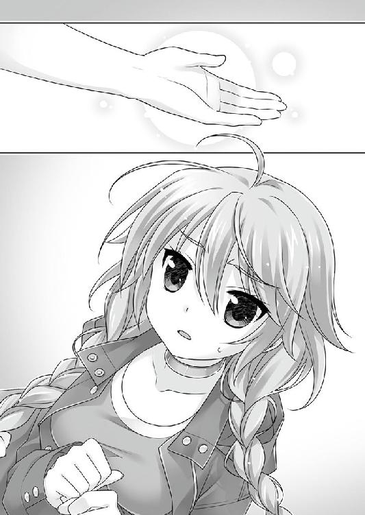
叔美と言葉を交わしている間、この男はどうして何もせず待っていてくれたのだろう。
叔美の「一緒に行く」という言葉を受け入れて、最後の別れの猶予を与えてくれたのか。
その疑問は、ヨブスの無感情な眸に跳ね返される。
男は、その視線の先の、ウシオだけしか見ていない。
敵が来る。どうするべきか？
キミが悩む必要はなかった。ウシオが、ヨブスとの間に割り込むように前へ出たからだ。かつての仲間へ立ち向かうように。背負ったか弱い人間を庇うように。
「よくこの場所が判ったな」
無言の声で言う相方に、ウシオは軽く肩を竦める。
「簡単よ。アナタが逃げる時、背中に糸を付けてたから」
「────」
あまりにも馬鹿馬鹿しい種明かしに、ヨブスは失笑した。
ウシオの「力」はよく知っていたつもりが、そんな失敗をしでかすとは、と。
一條は、ウシオの背中と『本』の記述の両方を見据える。
一挙一動、一言一句を見逃さないようにして、『その時』の訪れを待ち侘びる。
ヨブスがウシオしか眼中にないのは、計算通りで予想通りだ。
この盤面で、ヨブスにどうにか対抗できるこちらの持ち駒はウシオだけ。真っ当に駒を進める限り、一條や碧流は頭数にも入らない。
そして、二人のｃＳはどちらも手負いだが、片やウシオは立って動いているのさえ不思議な状態。単純な力の量で比べる限り、三対一でもヨブスの勝ちは動くまい。
だから、ただ今この場で、一條は動けなかった。
まだ、ウシオに任せるしか術がない。
「でも、最後まで気づかないとか、正直意外。ほら、私の糸が見えちゃうでしょ」
ヨブスの尸器はコウモリだ。幾つかある能力の一つは、本物のコウモリが暗闇でも障害物を回避する為に使う反響定位。完全な状態なら、追跡の糸を発見することは難しくなかった筈だ。
「前日にあれだけ負傷して、おまけに妙な切り札を使って。あんなのがあるなら、もっと早くに使えば良かったのに」
切り札──黒い炎の虎を呼び出した、叔美の首輪のカラクリ。
使わなかった理由なら、一條にも想像がつく。
まるで『１４』を具現したようなアレを、制御しきれる者なんているわけがない。
「アナタにとっても痛かった筈よね。傷口が開いた？ それとも、逃げ際に非道い目に遭った？ まあ、アナタもそろそろポンコツってことね」
淡々と、ウシオは挑発するように言ってのける。
「その傷で、俺に勝てるつもりか」
「傷物は、お互い様よ」
ヨブスの眼球が、ウシオ以外の二人を見回す。
「ｃＳのクセに、敵とツルんだか」
「ｃＳのクセに、裏切った不良品はどこのどいつよ。アナタをほったらかしにしておくつもりがないだけよ。コトワザで呉越同舟......だっけ？ 覚えておきなさい」
今は、睨み合う二人が主役。キミは一観客でしかないが、ここで下手な考えを起こすべきじゃない。分を弁えないヤツは怪我をするだけだ。
ウシオが一歩前に出る。揺るぎない動作。まるで仕事を果たす機械のように。ゼンマイ仕掛けのカラクリ仕掛けのように。
「頭数だけ揃えて勝てるつもりか。不良廃棄よりは、自滅が好みか」
「バッチリ叩きのめしてあげるから、先に一つだけ聞かせなさい。どうして、裏切った？」
元敵の少女の質問は、一條にも疑問だった。
ウシオを見ていれば判るが、道具だというｃＳは、確かに自分たちとは少し違う。
執着がない。だから、人格がとても薄い。
ウシオが子供みたいに素直なのも、そのせいだろう。
「......取引をした」
多分、これが最後の遣り取りになるのだと、両者とも疑っていなかった。
迷いどころか、元々感情もなさそうな無表情で、お互いに元相棒と対峙する。
「それで、何を貰うの？ お金？ 自由？ それとも、人間のフリができる身分？」
「人間だった頃の素性」
「..................................................................はぁ？」
ウシオが露骨に顔を顰める。リンゴを囓ったら芯まで食べてしまったと言い出しそうな、思いもよらない失敗に面と向かってしまったような。
「そんなものが欲しくて裏切ったの？ マジで？ 正気で？ 本気で？」
「お前は、憶えているか？」
「憶えているも何も。私たちは、人間ベースなだけで、ｃＳでしょう。人間だった頃なんて、ないのよ。それは只の外側よ」
「憶えていないなら、お前は幸運だ。俺は、時々夢を見る」
「いや、ｃＳが夢って......アナタ............」
「断片を。過去の縁を、だ」
「それは、アナタのモノじゃないでしょ。壊れてるんじゃないの」
「それでも、いい。俺たちは何でもない。誰でもない。あの一瞬しか見えない記憶だけが、確かに俺を証明してくれる」
ああ、まったく。なんて身につまされる話だろう。
「アナタ、本気でバカ............」
それっきり沈黙したヨブスに、どうしようもなく、コイツは真剣なのだとウシオは痛いほど理解した。
だから、それ以上言うべきことは尽きてしまった。
音もなく、二人の戦いが始まった。
後ろで注視していた一條にも、それが何時どうやって始まったのか、わからない。
二人の怪物は左右に散る。ウシオは右に、ヨブスが左に。コンクリートを踏み砕き、羽根でも生えたような勢いで疾走する。生物として決定的に遅い一條からは、どちらも消えたとしか思えない。
木霊のように魔笛が歌う。二人の闘争の軋みの隙間から、口笛のような音がする。
波を切る船の軌跡のように、ジェット機の残す飛行機雲のように、彼らの人外の動きが生んだ見えない爪痕が、大気を裂いて魔笛を歌うのだ。
「──よし」
一條は、冷静だった。
巻き込まれたら一溜まりもないだろうが、見えない分だけ怖くない。人間、一歩先に落とし穴が口を開けていても、そうと知らなければ歩いていける。
何時とばっちりが飛んでくるか、という雑念は、頭の中から追い出した。
代わりに思考したのは──
あのコウモリ男は、「明日」が欲しかったのか、「昨日」を取り戻したかったのか。
自分である理由が欲しかったのか。
一條には、男の願望が解る気がした。
まるで鏡の中を覗き込んだような気分。
自分である理由も意味もなければ、自分が誰であるかさえ、わからない。水面を泡になって浮かんでいるような、不安。ふとした弾みに弾けて消えてしまうという、頼りなさ。
だから、男は証明を求めた。狂おしいほどに自分の欠片を渇望した。
同じではないが、似たものを抱いているからこそ、敵である男の焦燥も想像することができてしまう。
──それでも、だ。
千里一條の遣るべきことは、一つきりなのだ。
二匹のｃＳの戦闘は続いていた。
待ちかねた『その時』は、きっと今だ。
ヨブスの注意が一点に集中して、ウシオ以外の『外野』を、眼中ではなく意識の外へ弾き出してしまうこの瞬間が、一條たちには必要だった。
「ここへの途中で打ち合わせた通りだ」
碧流が囁く。
ここまでは、計画通りの進行だ。
ここからがキミの出番であり、キミにとっては苦難の道だ。
本当に後悔しないのか？
打ち合わせ通りにやる／８０７─■■■■ へ行け
もう少し様子を見る／５１０─■■■■ へ行け
今更だよと苦笑しながら、碧流に頷く。
打ち合わせの内容──それには、碧流の持つ『力』の説明も混じっていた。
一條の『本』とは別種の、千里の血筋に伝わる力の断片について。
「本当に、そんなこと、できるの？」
「姉を信じろ」
「うん」
「そして、選べ。キミは、どうしたい。選べる『結末』は一つ。二つはない」
「それは──」
一瞬たりと躊躇わずに、答える。
ヨブスをぶちのめすのでも、勝つのでもない。
たった今、この場で遣るべきことを、間違わずに選ぶ。
悲しいような、笑ったような、そんな顔で碧流は頷いた。
「キミの意志は伝わった」
それだけで十分だと言いたそうだった。
『──私はここに、正しい終わりを書き加える』
魔法の言葉を唱える。
碧流にとっては、祖母から教えられた奇跡を為す呪文だ。
千里は、古い一族である。
その昔は西の八石と呼ばれて尊ばれ、天文地文を読んだという、もっともらしいことが語り継がれているが、本当かどうかはわからない。碧流はそれなりに信じていたが。
千里の祖先は色々しでかした挙げ句、都を追われてこの土地に落ち延びてきた。
人ではない「ヒトデナシ」は怖れられ追われる宿命である、と言えば聞こえはよいが、所詮権力闘争に敗れた負け犬というのが実情かもしれない。
例えば、大江山に鬼がいたという。鞍馬の山には天狗がいたという。彼らのある者は討伐され、ある者は人間に味方した。
それぞれの選択がなされたのだ。
千里一族は、ケツを捲くって逃げ出す道を選んだ。ある意味で、頭が良かったと言うべきだろう。都を巡るあまたの政争や戦争に巻き込まれずに済んだのだから。
そこから遥か悠久に近い歳月が流れた。人の一生を幾十重ねなければ到底追い着かない時間の流れの最果てで、代を重ねるごとに薄れて、とっくに廃れてしまった千里の血だが、時折は先祖返りのように顔を出すこともある。
「あ──」
碧流の『力』を、一條は初めて目の当たりにした。
一條の『本』が、選択視を選んでもいないのに独りでにパラパラと捲れていく。
今ではない、どこかのページが開かれる。
碧流の指先が、見えていない筈の『本』の読めない『のたくり文字』の隙間に、何かを書き込むのを見た。限られた文字数で、出来るだけ正確に。
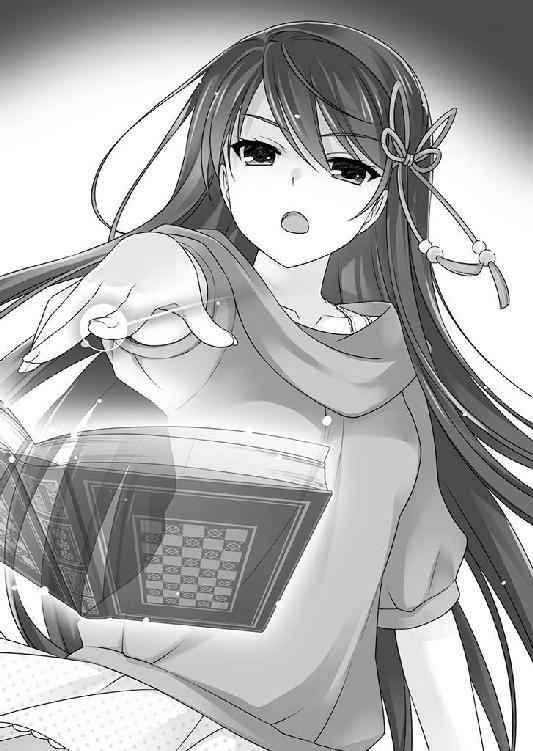
必要な『結末』が書き加えられた......のか。
これが千里碧流の『力』──
他人の人生の分岐に、存在しなかった「新たな一葉」を加える。
『本』に書き込んでいるように見えたのは、一條にとってそう見えただけで、実際には人生の筋道そのもの、人間という一冊の『本』に、望む行き先を書き足したのだろう。
例えば──目の前のコウモリ男を倒してしまうという、あり得ない『結末』を、だ。
そして、向かうべき『結末』があるのだから、そこへ至る道筋も存在する。
原因があるから結果があるという不動の前提に叛逆し、結果が確定しているから原因が創り出されてしまう矛盾。
ここに、因果は逆転する。
現実を覆して、あり得ざる不条理を実現する力。
「姉さん......」
「道は拓いた。その『本』のルールに則ると......」
そう、一條が望んだ、これから向かうべき『道筋』は拓かれた。
だから、後はその道を間違わずに選び切れるか、だ。
「五つか、六つ先だ......多分......」
多分なの？ と一條は思った。
こんなところへ来てまで、普段と何も変わることなく、つくづく大ざっぱな姉である。
千里の先祖は、世の運気を実際に読み取ったのだという。吉凶を自在に導いた──とも言われている。もはや伝説でしかないが。
碧流には、そこまでの力はない。今の千里は枯れた成れの果てだ。多くの限界に縛られている。片鱗が泡沫のように浮かぶことはあっても、やはり最初の一には遠く及ばない。
（いくら、望む『結末』が書き加えられたからといったって......）
一條は考える。
碧流の力が、説明された通りの代物だとしても、それは望んだ『結末』の実在を保証してくれるだけで、それ以上でもそれ以下でもない。
考えてみればいい。人には、一体どれだけの「結末」があるのか。
その中から、自らが唯一とする『結末』に辿り着くのが、どれほどの困難か。
碧流は『結末』を書き込む際に、そこに辿り着くまでの大凡の『距離』を測ることもできる。ただ、具体的にどんな選択をすれば、どの分岐を選べば、そこに到着できるのかは、碧流にもわからない。相手に合った助言をするぐらいが精々なのだ。
五つか、六つ。
『本』のルールで説明するなら、ＰＧを五つか六つ選んだ先に、一條が必要とする『結末』、待ち望んだ『正解』が用意されている、ということ。
「正しい」選択視を選び続けなければ、折角作った『結末』に辿り着けない。
（当たるも八卦、当たらぬも八卦......ってところか）
よくある口上が、碧流の力を的確に言い表していると、一條は思う。
仮に、五つ先に正解があるとしよう。
選択視が全て二択でも、適当に選んで辿り着ける確率は、三パーセントちょっと。普通に考えれば、まず無理だ。
（──普通ではなければ、話は違うってことだ）
一條には『本』がある。ＰＧを頼りに道筋を選び抜くことができる。辿り着きさえすれば、望む結果になると判っている。
簡単に滑り込めないのは確かだが、普段のように目的地もわからず選び続けるのと、確実に待っているゴール目指して前進するのでは、やる気も集中力も選択視のチョイスも全然違う。
スゴい。行けるぞ。
自己暗示のように自分を奮い立たせて、一條はこれまでとは違う一歩を踏み出した。
碧流は後ろに下がったまま、動かない。
動きたくても動けないのだ。一條の前だから無理に平静を装っているが、顔色を見れば、立っているのも辛いのだとわかる。
──他人の『人生』に、新しい『結末』を書き加える。
人の手に余ることをしでかしたのだから、ひどく消耗するのも当然だった。
この場で、碧流が与えてくれる機会は、この一度だけ。
「......上等」
「本当にいいの？ 私には、あの女の言ってること、信じられないけど」
ウシオが一旦後退してきて、一條と並んだ。
「いいよ、僕は信じてる」
ヨブスとの戦力差は明らかだ。事前の打ち合わせでも、今のままではとてもじゃないが勝ち目はない、という結論だった。
勝ち目がないなら、作ってから勝負に出る。
碧流の『力』は扱いが難しい。望んだ『結末』と現在の状況との違いが大きいほど、辿り着くまでの距離は長くなる。必然的に辿り着くまでに選ばなければならない選択の数は増え、ゴールするのはより難しくなる。
例えば、一條が億万長者になる『結末』を望んで書き込んだとすれば。最短コースを踏破できたとしても、辿り着くのにＰＧを一〇〇個選んでもまだ足りないだろう。
また、書き込める「文字数」に限度があり、書いていない部分の保証はできないらしい。「相手に勝つ」と書き込めば、「勝ったが大怪我をする」という結果も全然ありなのだ。
わざわざ「事」が始まってから書き込んだのは、ギリギリまで現在と『結末』との距離を短くして、不測の事態の起きる状況を出来るだけ減らす為だ。
８０７─■■■■
できることは、全てやった。
コトの次第はキミ次第、というわけだ。昔の諺では、こういうのを人事を尽くして天命を待つとか言ったそうだが。天命が信用できないヒネクレ者なのを、キミは知り尽くしてる。
とやかく言うのは、ここまでだ。
まずは目の前に立ちはだかるヨブスを退けない限り、叔美の処へは行けないだろう。
問題は、次に取るべき行動だ。
ウシオに先手を譲る／８８５─■■■■ へ行け
最初に自分が突っ込む／４５２─■■■■ へ行け
焦らずにチャンスを待ち構える／７３８─■■■■ へ行け
何か武器になるモノを捜してみるか／７１７─■■■■ へ行け
一條の前に開かれていた『本』が、『道』を告げる。
思えば、明確な目的を持って、行き先を目指してこの『本』を見るのは初めてだ。過去はないものと割り切った筈の自分が、無意識の内にこの『本』を遠ざけて、そのクセ、拒絶しきることもできなかった。ずっと半端だった。
逡巡も一瞬。千里一條は、振り向かないのが信条だ。
前を見る。ＰＧ８０７の最後には選択視。
一つ目は、四択──どれを選ぶか？
８８５と４５２と７３８と７１７。
五つか六つ向こうには、「結末」が待っている。正解のＰＧを選び続けている限り、そこまでは選択視が続いているということだ。
行き止まりの１４の気配は、そこかしこにあった。
今はパンピーには厳しすぎる、人外の域の戦いの真っ直中。１４は幾つも潜んで爪を研いでいて、一條にも到底見分けられない。
慎重に、慎重すぎるほど慎重に、選択視を選ばなければならない。
「え、ちょっと、死にたいの!?」
ウシオが慌てているが、一條は後ろも見ずに突っ込んだ。
──状況を変えられる選択は、これだけだ。
まずは、「ヨブスを退け」なければと、『本』には著されている。ｃＳを退けられる選択視を、論理的に思考した。自分が武器を持ったところで足しにはならない。ウシオに任せていても、さっきまでの場面の再現だろう。
それでは意味がない。状況を先に進めなければならない。
だから、一條は大胆にも、力の差も顧みず、全力で戦場の真っ直中に飛び出した。
単身で先頭を切るのは一見危険だが、この状況で取り得る選択では、最も安全だと『本』が教えてくれている。
信じよう、ここまで一緒にやってきた『本』を。
「もぅうぅ、人の話を聞け！」
憤るウシオに隙を見たか、ヨブスが挑み掛かった。
二人の魔人が戦いを再開する。
４５２─■■■■
「糸の数も密度も足りないな。お前は壊れかけのガラクタだ」
「うっさいわね」
空を裂くヨブスの爪が、美しい火花を振りまく。
降り注ぐ糸と迎え撃つ爪の拮抗が咲かせた華は、うら若き乙女のあげる悲鳴のように咲いては散る。
元仲間の指を鳴らす音に、ヨブスは夜の空を振り仰いだ。
四方から頭上に、巣のように組み合わさった糸が降り落ちてくる。
「アナタとやり合ってる間に作った即席だけど、これでどうよ」
「さっきから、何かしているとは思っていたが......」
見えない糸もヨブスには見えるが、この密度では避けられない。
「その身体で、よくやる」
上に注意を向けさせておいてから、ウシオが正面から新たな糸を放つ。
続く糸は数えられる程の本数だが、取引のブツである叔美を守ろうとしたヨブスは、全ての糸を避けられなかった。
一條には、正直何がどうなっているのかさっぱり判らないが、『本』の記述によると、飛び出した一條を援護しようとウシオが糸を飛ばし、ヨブスがそれを迎撃したらしい。
わー、すごーい。
見えない速さでやり合っている二人に、思わず平仮名で拍手したくなる。
「────」
糸の攻撃によって、男のコートが細切れになって裂ける。中には大きい破片もあったが。
ヨブス本人は無傷だった。おまけに、ｃＳたちの戦いについていけずに棒立ちになっていた叔美を左腕で浚う。逃がさない為だろう。小さな叔美を荷物のように抱えたまま、地を跳ね飛んでウシオとの距離を詰めていく。
「うくぅ」
高速で飛び回られて速度を浴びた叔美が、押し潰されそうな悲鳴をあげる。
おいおい、他人の騒ぎに見入っている場合じゃないぞ。おっと、キミには見えてないんだったな。とにかく今は、少しでも前に進まなければ。見えるものを見て、自分のやるべきことを忘れないのが重要だ。
今の内に出来るだけ叔美に近づくんだ！／５１６─■■■■ へ行け
戦っているウシオを援護するぞ／９２２─■■■ へ行け
あるいは、ここは港だ。周囲をよく捜せば、力になりそうな道具や機械を発見できるかも。ウシオが敵を引きつけている内に調べてみるのなら／７９９─■■■■ へ行け
焦って下手に動かず、ここは耐えて隙を窺うべきなら／８７１─■■■■ へ行け
二つ目──今度も四択だ。
「どれだ!?」
望む結末は、最低三つ先の分岐。そこまでは成功しない、という意味でもある。
ここで叔美を助けようとしても、ほぼ確実に失敗するが、失敗そのものが「その次」への布石ということも考えられる。
「──落ち着け、僕、いいか焦るなよ」
いつもと同じく『本』は何も応えない。いや、『本』はいつでも答えている。一條が視えていないだけだ。
追い詰められた小さな自分を呑み込む。信じると決めたのだから、冷静に見極めろ。
『結末』は、ずっと前の段階で決まっている。
それは動かせない大前提だ。ならば、碧流の『力』とは、今この場にある「状況」に、ほんのちょっぴりの「幸運」を加えて、望んだ『結末』への道を拓く力。
「────！」
そして、判断し、決断した。
「一條!?」
叔美は、一條があまりに出鱈目な行動に出るのを見た。
ヨブスに向かって走ったのだ。
「バカ、よせ！」
ヨブスの動きに振り回されながら叔美は叫んだが、一條は止まらない。
並の人間がｃＳに近づくのは、無謀ではなく、自殺も同然の蛮行だ。一條が「何」を見ているとしても、ヨブスが腕を一振りすれば、何もかもが終わるのだから。
自分の行動の愚かさは、一條自身が百も承知だ。
碧流が『結末』を加えても、状況そのものは突然ガラリと変わったりはしない。つまり、これは同じパズルのピースを使って、別の絵柄を作る作業──望む『結末』へ至る道筋の伏線は、「現在」の中に必ずある。
だから、『本』の忠告に従って、見えるものを見た。
必要なものを見出して、一條は、ススキの葉のように風に舞うコートの細片を潜り抜ける。ウシオに注意を向けているヨブスの背後から疾走し、限界を超えて近づく。
「──僕のことは、頭数に入れてなかっただろ！」
選択視に従って、叔美に手を伸ばした。
選んだのは、「今の内に出来るだけ叔美に近づくんだ！／５１６」だ。
ヨブスに抱えられままの叔美の手が、応じるように伸びる。
少女の眸が一條を映す。指先が触れようとした。
その間を、黒い巨大な皮膜が遮った。
「────」
同類以外には聞こえない声で、おそらくは嘲笑を嘯くヨブスの腕は、コウモリ状の皮膜が──羽根になっていた。
片腕が叔美で塞がっていて使えないからか、空を飛びこそしないが、もう片方の羽ばたきで跳躍を加速し、追ってくる糸を振り切った。ついで程度に、一條も殴り倒された。
羽根でぶん殴られたのだ。見た目は脆そうなのに、丸太でもぶつけられた気分で、目の前に色鮮やか星が飛び散る。途切れた意識が戻った時には、仰向けで踏みつけられていた。
胸を鉄塊のように圧迫するのは、今や羽根の生えた怪物的な姿形を現したヨブスの右足。ポーズ的には、金剛力士に踏みつけられる小鬼状態だ。
「おい、やめろ！ ソイツは、ただの一般人だろ!!」
頭上で叔美が、一條が踏み抜かれるのを止めようと暴れている。
もうちょっとだけ、待ってて。
すぐに、そこへ行くから。
その前に、何とか金剛力士と小鬼状態から脱出しなければならないが、相手はｃＳだ。普通にやっても勝ち目はない。考えなければ、ならない。
だが、そんな間もなく三つ目がきた。
内容を一目見て、一條は強引に動こうとした。
抵抗を意にも介さなかったヨブスが、突然仰け反る。死角から襲い掛かったウシオを、コウモリは見逃さずに綺麗に避けたのだ。
おかげで一條は自由になった。即座にその場から脱出する。
選択視は、とっくに選んでいる。
６３５─■■■■
「要するに、これは解りきった勝負だ。俺に届くのは、お前だけだ。こいつらを囮にしても、俺はお前の居場所を聞き逃さない」
冷静に戦力を見切った男の、聞こえない声が珍しく多弁に告げた隙に、キミは素早くその足下を駆け抜けて──
ＰＧは、三つ目の６３５へ。
ソナーじみた音波の反射を知覚するコウモリ男は、四方の全ての状況を視覚以上に認識している。付け入るのは容易ではない。
──この場合、でなければ、だ。
ヨブスは、必死に食らいついてくるウシオに集中し過ぎていた。自分が有利とはいえ、相手も同格のｃＳだ。油断すれば足下を掬われる。最後まで確実に仕留めようとした。
だから、足下から逃げる一條のことは、戦力外だと無視をした。
一條が、地面に落ちているコートの破片に飛びついて拾った時も、何の不安も感じていなかった。そこにあったものに気づくまでは。
「貴様!!」
ヨブスが叫ぶ。無言の声はキミの耳には届かないので無視しよう。
切り裂かれたコートの破片から、目当てのモノを発見したか？
よし、上出来だ。
三つ目に選んだのは、「落ちているコートの破片を探ってみる／６３５」。
「──よし、上出来！」
一條が拾い上げたコートの破片の一部は、内ポケットの部分だった。
その中を探って取り出したのは──
叔美の「首輪」を操作した、あの制御端末！
ＰＧ４２５で『本』の忠告を視て、一條は考えた。
この状況をひっくり返す「伏線」は何処にあるのか、と。
原因もなく「結果」は生まれない。碧流の書き込んだ『結末』でもそれは同じ──だとすれば、力では勝ち目のない自分たちが逆転できる手札の心当たりは、一つしかなかった。
だから、捜した。
「見えるものを視て」発見した。
昨日、ヨブスが端末をコートの内側のポケットから取り出すのを、一條は目撃していた。先程、糸で切り裂かれてコートが細切れになった時、一緒に紛れて、端末はポケットごと落ちたのだ。『本』に著かれていた通り、大きな破片になって。
一條が無謀に突っ込んで、叔美を救えないと判っていながら手を伸ばして見せたのは、ヨブスの注意を惹く為だ。こちらの目論見と、端末の行方を気づかせないように。
一見無謀な特攻のようでも、おそらくヨブスが一條を侮っていて、その実危険そのものが少ないのは、ＰＧの数字が教えてくれていた。
それでも、負傷を押してウシオが死に物狂いに食い下がっていなければ、ヨブスは一條の意図を見抜いて先手を打てていた筈だ。
全ては、積み重ねた結果の必然だ。
そして、端末は一條の手元にやってきた──『切り札』が。
■所持品
首輪の操作端末
最初から、「首輪の操作端末」は見過ごせないファクターだった。
奪うか、最低でも破壊しなければ、どうにかしてヨブスを追い詰められたとしても、前回のようにひっくり返される。
「パスワードは──」
ウシオの叫んだ暗証番号は一六ケタで、とても一度では覚えきれないが、ここに記述しておくので、打ち込む前に間違えないよう確認すること。
「!? お前がパスワードを知っている筈がない！」
ヨブスが初めて表情を歪めている。残念ながら、これは彼のミスだ。叔美の炎虎を起こした時、糸に掛かったまま端末を操作してしまったからな。
あの時に、糸の振動を通して、ウシオに首輪を解く暗証番号を盗み取られていたわけだ。
阻止しようと羽根を広げたヨブスに、後ろからウシオが食らいつく。
「アナタの相手は私でしょ！」
とっくに限界のウシオに稼げる時間は何秒もないが、ヨブスが糸とウシオを振り払って向き直った時には、遣るべきことは終わっていた。
「叔美!!」
「一條!?」
状況の解っていない叔美が、不安を叫んでいる。
叔美までの距離は、ほんの数メートル。キミは、この短いが果てしなく危険で遠い距離を詰められるだろうか。
危険なのは、ウシオも同じだ。怒り狂ったヨブスの攻撃は、今のウシオではとても防ぎきれるとは思えない。
キミは、どうすべきだろう？
このままではウシオが危ない。助けに行こう／９２８─■■■■ へ行け
まだだ、もう少しだけ様子を見るんだ／７７４─■■■■ へ行け
手に入れたばかりの「首輪の操作端末」にパスワードを打ち込んで、今ここで使うことは可能だ。
アイテム・「首輪の操作端末」を使用するなら／８４９─■■■■ へ行け
これは、四つ目だ。選択視は、減っていた。
これまでの四つの選択肢で、一番悩むことなく選び取る。
ヨブスが持つ最強の手札だった端末は、こちらにとっても状況を決定的に左右できる一枚だ。
この三択は、実質一択と変わらない。今の不利な状況を一発で逆転できる妙案は、ただ一つ！
──端末を、叔美の首輪に照準する。
暗証コードは入力は終えた。後は実行するだけで首輪の戒めは解き放たれる。
「押したらどうなるか、わかってるだろ！」
緊張で足に力が入らない。へたり込みそうになったが、無理して格好をつけて言った。
その場の時間が凍りつく。
即座にボタンは押さなかった。選択視は「アイテムを使う」で、ボタンを押せとは書かれていないから、一條は慎重に使い方を吟味したのだ。
ＰＧが危険を告げても、きっとこれが最善の選択だ、と。
対峙しているヨブスとウシオも叔美も碧流も、全員が、次の一瞬を待って息を呑む。ヨブスがｃＳでも、この距離なら一條が端末のボタンを押す方が早い。
そして、五つ目が出た。
やっとだ、と一條は思う。ここまで来た。これか、更にこの次か。
どちらかで、望む『結末』へ辿り着ける。
８４９─■■■■
さあ、いよいよ重大な決断をするべき時が来たぞ!!
パスワードは打ち込んでいる。後はボタンを押すと完了だ。
あまりにも重要なことだから、念の為にもう一度確認しよう。
首輪の操作端末のボタンを、本当に、今、押してしまうのか？
ボタンを押す／９２９─■■■■ へ行け
やっぱり、ボタンを押さない／９３８─■■■■ へ行け
いよいよ来た、待ち続けていた選択視だ。
ボタンに関する表記が、ハッキリ著かれている。
しかし、この二択は、一條にも判断がつかない。
押すのか、押さないのか──どっちが「正解」だ!?
短い記述には「伏線」らしいものも視えない。
この二つの選択視のどちらかは、碧流に書き加えて貰った、一條が願った通りの『叔美を連れて帰る』というゴールに繋がっている筈。
それはつまり──
ゴールがあるのだから、辿り着けなければ、叔美を救えない。
「──ッ」
ここへ来て思い知る。
タダで転がり込む幸運なんて、そんなご都合主義は存在しない。碧流の力で「正解」が書き込まれてしまった以上、それ以外は「不正解」ということだ。
正解があるから不正解が生まれるという、逆理。
──考えろ、僕！ 何か手掛かりはないのか？
身を削ってくれたウシオや碧流の為にも、ここまできて失敗はできない。
この端末は、元々勝算のない一條たちの、起死回生一発逆転の一手。絶対かつ最終的な切り札だ。つーか、現状これ以上、他の手段はないし思いつかない。
ここへ来る途上で聞かされたウシオの説明によれば、叔美の首輪は「災いをある程度食い止める」為のもので、引き寄せる「不幸」の力が蓄えられる。いわば、小さなダム。暗証番号を打ち込んで解除すれば、蓄えていた『力』を解き放って、周りの全てを押し流す。
一條の直感は正しかった。昨日、ヨブスが首輪を解いた時に現れた怪物は、叔美の『１４』の具現なのだ。
だがそれは、強すぎて扱いきれない。この場の誰一人として。叔美自身さえ。
アレは嵐と同じだ。具象化すれば制御できず、ただ荒れ狂い、１４──死をもたらすだけのもの。
野生の獣が、時に巧妙なハンターの罠を見破るように、かつて一度１４に触れて戻ってきた一條の感覚が、いよいよすぐ傍に潜んでいる１４の気配を察していた。
ゴールが近い分、障害も過酷になるということか。それとも、碧流が強引に成り行きを「書き加えた」釣り合いとして、ハズレが非道い結末に繋がるのか。
この状況では１４の気配で、正解を見極められない。
二択のどちらが「正解」か、判断する方法が他にあるだろうか？
「──どっちだ？」
一條にもわからない。見えない。人生の一寸先はどこまでも不透明。伏線から推測して、身構えるのが精一杯。
この状況を、ここまでの碧流やウシオの助けを、何もかもを無駄にしない選択が出来るのは、自分だけだというのに。
碧流は、五つか六つだと言った。
五つ目で正解へ着けるなら、「押して」決着をつけるのが正しい筈だ。きっと、何らかの幸運で、叔美を助け出すご都合主義が訪れるのだろう。
六つ目なら、「押さない」がおそらく正解。今すぐボタンを押しても、何らかのトラブルが起きる。一度待った先が、この状況を打破して『結末』へと繋がる最後の選択視だ。
（どっちか......じゃない）
何の手掛かりもないこの選択、それなのに『運命』を二分してしまう究極の二者択一を選ぶのは、自分自身の決断でなければならない。
どちらが損得かではなく、自分がどうしたいか、だ。
後ろ髪引く迷いを振り切った。
千里一條は、振り向かない。前だけ見るのが信条だ。
──死か、さもなくば、正解か。
「叔美、いいな、やるよ！」
ハズレを選んでしまうのが怖くないわけじゃない。
それでも、選べないのは、もっと怖い。
ここにいるのが、千里一條の理由であるように、この選択を遣り切るのが、千里一條の意味だ。立ち止まってなんか、いられるか。
「............帰りたいよ」
震える肩で、まるで家を見失った迷子のような顔で、叔美がポツリと言葉を零した。
──ああ、そうか。
端末の先端が、ヨブスが抱えた叔美の首輪を狙っていた。
叔美は、何かを祈るように目を閉じている。
首輪は、どうしようもなく危険な代物だ。凡そ救いもなく区別もなく皆殺し。全員に１４をもたらす爆弾にもなり得る。
叔美は、全て承知の上だった。
それでも。
一條と、一條が見える「何か」の選択に全てを託していた。
ヨブスが、もはや間に合わないと承知で、地を這う影のように疾走する。
その時──
端末が一條の手から落ちた。
何が起こったのかは判らなくても、ヨブスはその隙を見落とすような男ではなかった。
半死半生のウシオを払い除け、敵が端末を拾う前に爪を振り抜けば決着はつく。
──とても、簡単なことだった。
それは一瞬の出来事だ。
一條が、地面に落ちた端末を踵で踏み潰した。
確実に、完全に、二つに折れた端末は破壊されて、二度と使えなくなった。
「はぁ────？」
全員が、狸に化かされたような顔をしていた。
特に、叔美と碧流はヒドかった。「なにやってんだ、このバカ」という心の叫びが、そのまま顔に出ていて最悪だ。
一條は申し訳なさで一杯だったが、仕方なかったのだ。
叔美が、とても怖がっていたから。
自分に取り憑いているモノを。それが、もたらしてしまうかもしれない『１４』を。
それが、一條や、碧流や、他の誰かを捕まえてしまうかもしれないことを。
それでも、ボタンを押すのは簡単だ。リスクを覚悟しなければ、この状況を一発逆転なんて不可能なのだから。
だから、使えばいい。
まるで道具のように。
そこにいる、人間の形をした１４を。
お前は、「１４」なのだと知らしめてやればいい。
──そんな真似ができなかった。
死ぬよりも嫌なことだって、世の中にはある。
そんな涙を、女の子に流させるのは、それこそ死ぬよりも嫌だ。
だから、選んだのは、９３８。
これで、綺麗さっぱり切り札がなくなってしまった一條の目の前に、ヨブスが真っ直ぐ迫ってくる。
さて、後のことなど考えていなかった。避けるか、逃げるか。
所持品欄から、「首輪の操作端末」が消える。
この選択は、「正解」なのか「不正解」なのか。
六つ目がゴールだったとして、必要な『アイテム』が消えてしまった以上、どうなるのだろう。やはり失敗するのだろうか。
折角与えて貰った機会を活かしきれなかった。
「......ごめんなさい」
碧流とウシオに謝りながら、この選択を、最後まで後悔だけはするまいと決めた。
千里一條は、振り向かないのが信条なのだから。
ヨブスには、理解できなかった。
一條が何をしたのか。ヤツらにとって、端末は切り札だった。アレを使えば自分を排除して、望みを叶えられる。
最後まで、一條のやったことはわからなかったから。
「────」
ヨブスは、前ではなく自分を見た。
「おい............」
叔美も、呆気に取られた顔で、それを見た。
男の腹から、鋭く刃のように指を伸ばした手が突き出ている。
「バカじゃないの？」
まるで昨日のやり直しのように、今度はウシオの右手が、後ろから前に貫いていた。
「我を忘れて。バカみたい」
ヨブスは、唇の端をほんのちょっぴり歪めた。
初めて見る表情らしい表情は、もしかすると苦笑だったのかもしれない。
真っ直ぐに、迷うことなく進んでいれば、こんな結果にはなっていなかっただろう。全くもってバカだ、と。
──ああ、そうか。
一條は、終わりを確信した。
血を吐いて傾いでいくヨブスの姿こそ、正解だったのだろう。
この男を倒したいとは一度も思わなかったけれど、千里一條があり得ない『結末』を望んだから辿り着いてしまった。
五つ目の選択視で辿り着くゴール。欲しかった筈の正解なのに、哀しくて、やるせない。
ヨブスの腕から力が抜ける。叔美はそのまま下に落ちて鈍い音を立てた。
自由になった叔美は、ぶつけた頭の痛みを気にする素振りも見せず、こけつまろびつやってきた。
映画のように飛び込んでくるかと思ったのに、そんなオシャレな遣り取りはなく、泥臭く途中で一度転んだ後、立ち上がって、手が届くには足りない距離を置いて足を止めた。
「い──」
彼女は何か伝えようとして。
９３８─■■■■
ヤツが動いた。まだ生きているのだ!!
ヨブスは、最後まで諦めない。自分の息がある内は、自分の遣るべきことを、望みを果たす為にやり遂げる。
それは機械のようなｃＳが持たない、人間じみた執念だ。
機能停止した筈のヨブスが、目を見開いて半回転する。足下のコンクリートを踏み抜くほどの力だ。
何をするつもりなのかを悟ったウシオは、それを食い止めようとした。しがみついて。
最後の咆吼もなく、高速回転しながら、ヨブスの右の肘がウシオのこめかみを打ち抜く。とっくに限界の彼女に、踏み止まる力はない。
ヨブスは、更にもう半回転しながら跳躍する。瀕死の状態とは思えない恐るべき速度で、叔美を追い越す。
左の爪が、名刀の軌跡に似た鮮やかな弧を描く。
自分の一條へ。そう、敵。
理屈はよくわからなかったが、ヨブスは、この目の前の、数にも入らなかった一條こそ、今の事態を招いた根幹なのだと察していた。
時間が鈍化した、引き延ばされた一瞬。
一條は、そこに在るものを見た。
とうとう、追い着かれてしまったのだ、と。
そして、一瞬で──
キミの胸を、ヨブスの爪が貫く。
肉が裂ける。骨が削れる。着実に、確実に、キミを表から裏まで貫き通す。
切っ先が鋭すぎて痛みは感じないが、細く鋭い熱がある。
「──あれ？」
どこで選び損ねてしまったのだろう。
用意されていた『結末』へ辿り着く為の正しい道程は、どれだったのか。
それとも、ここは碧流の『力』の外、辿り着いてしまった後の、思いもよらぬ「不幸」なのか。
一條にはもうわからないし、それを知る意味もない。
そう、『結末』とは登場人物だけのもの。
本の中の物語とは違う。いつか正しい行き止まりに潰える日がやってくるまでは、道中の目標に辿り着いた後も、粛々と続くのが人生だ。
姉さんやウシオには、キチンと謝っておきたい。
頑張って貰ったのに、この様だ。
どうやら、辿り着けなかったらしい。
叔美には......なんて声を掛ければいいんだろうか。
結局、ここ一番で、ハズレを引いてしまった。
まあ、そういうこともある。
正直に明かせば、この結末はイヤだ。本当にイヤだ。
思い残しは色々とあった。
しかし、どうにもならないことも世の中にはある。
そういえば、現国で宿題が出てるんだったっけ。
提出しなくても、多分、怒られないだろう。
あまり長く引っ張ってもなんだし、そろそろ一番大事なことを──
──キミは死んだ。
爪に貫かれてあの世行き。わかるな..................１４ へ行け
【ｅｎｄ】
１４
キミは、気づくと丘の頂にいた。
夜明け間近の紫の空。張り詰めた冷たい空気。風はなく、キミの周りだけ、草の変わりに丸く土が露出していた。どれも見覚えのない風景だ。
想い出というものは厄介だ。あれば困ることも多いが、なければ根拠を見失う。キミとか、ここに来る原因になったあの男のように。
故郷に戻ってからの、糸の切れた凧のような気分は、キミ以外の誰にも解らないだろう。
仕方ない。自分のことだ。結局自分で何とかしなければならない。何とかなるのかは、ともかくとして。
正面には大きな石の柱があった。一本ではなく、何本も。手を広げて周りを巡っても三人分は必要そうな巨石が組み合わさって、墓標とも祭壇ともつかない代物を作っていた。
ストーンサークル。いわゆるヨーロッパの巨石遺跡の一つで、古代の天体観測に用いられていたとも、宗教的意義があるとも言われている。一つ勉強になったな。
「ここ、どこだろう？」
首を傾げていると、誰かが傍に座っているのに気づく。
倒れた古木をベンチの代わりにキミに背を向けて、ゆるゆると地平から昇ってくる朝日と曙光に色めく空を眺めている。後ろ姿なのに、楽しそうと思った理由はよくわからない。
「死んでしまうとは何たることだい」
英語だったと思うが、どうしてだか意味は理解できた。
「............やっぱり僕は死んだんだ」
「『１４』を選んだろ」
「選んだというか、それしかなかったというか......」
してみると、ここは三途のなんたらか、あるいはその近くのお花畑ということになるのだろうか。噂に聞いた死後の情景とは違っているのに、首を傾げる。
「まだ若いのに、失敗ばかりだね。若い内は失敗した方がいいとは言うけど、限度ってものがある。幾ら助けがあっても足りないよ」
見たこともない相手だが、随分と親しげだ。
「あの、もしかすると、どこかでお会いしました？」
「お前はもう憶えていないよ。仕方がないよ。そういうものだ」
随分と古い、有り体にいうと、年寄り臭い言い回しだ。
逆光が丘の上にスルスルと昇ってくるのを眺めながら、彼女は、左手に持っていた短いヤドリギの杖を軽く振る。姿もよく見えないのに、どうして「彼女」だと思ったのだろう。
「ここは、どこですか？」
「わかってるだろう。『１４』だ。普通なら、ここを真っ直ぐ下りて行く。あっち側へね」
西の斜面の下を杖の先で指し示す。
「行くと？」
「還ってこられないよ」
ですよねー、としみじみ思った。
「今回も、特別だ。前回は、私が助けてやった。今回は、あの子がやっておいてくれた。還ったら、よくお礼を言っておくんだよ」
「あの子......？」
「でも、これは難しくて、厄介な遣り方なんだ。何にでも代価は掛かってしまうからね。使う相手、条件もある。たった一度だけだから、奇跡なんだよ。一度切りの魔法。だから次にお前がここへ来てしまったら、もうあの子には助けられない」
「その、使う相手の条件って？」
「『愛』さ！」
「うわっ、恥ずかし......」
現代っ子らしく本音でツッコんだら、杖で頭を叩かれた。
「愛......素晴らしいです、とっても」
「まあね。あの子は、前の時にお前を助けられなかったから、ずーっと気に病んでてね。それで、んー......ちょっと、道を踏み外しそうな感じの『愛』になってるから......ああ、色んな意味で心配だね」
「そんなこと言われる僕の方が心配だよ！」
泣きそうになったが、相手はお構いなしだった。
「さあ、そろそろ還りなさい」
キミは、言われるままに立ち上がる。
「『働かざる者食うべからず』、と言ってね。昔、あの土地は流刑地で、だからそんな理ができたんだ。誰かの為に働けば、自分もその分食べられる」
「コトワザとちょっと違うね」
どちらが正解だろうか、と考えたが、どっちでもいいのだろう。何が正しいかは、それを必要とする人が決めればいい。
「還るお前に、いいものをあげよう」
「何を？」
「『フォティゾ』という言葉を。人には色々な拘わり方がある。血とか、過去とか、感情とか、利益とかね。それは全部お前である証だけど、それ以外の拘わり方もあるのさ」
「それは、たとえば......？」
よく判らなくて訊ねると、彼女は親しげに応えた。
「例えば、本と読者のような。棚に飾っても本は意味がないだろう？ お前が何者だったかなんて関係なく、今のお前という『本』を手に取ってくれる者、お前自身であることを照らしてくれる誰かが、きっと何処かには居るんだよ。そんな誰かと出逢えたら......」
「うん」
「大事に育てなさい。それはとても貴重な出逢いなのだよ。特にお前にとっては......お前がいつの日か、『何者か』を見出すまでは得難い杖になるだろう。この先も続いていく、人生という長い航海に相応しい喜びを与えてくれるだろうから」
そして、彼女は杖を振る。魔法の呪文めいた何かを口ずさむ。
「さあ、行きなさい。祝福を受けて。でもね、当然代価が必要だよ。支払うのは、あの子だけじゃなく、お前もだ。前もそうだったようにね」
「代価って」
「私や、あの子の代わりを務めるのさ。お前は結局家に還ってしまった。仕方ない、自分で選んだことだものね。ここから戻ったら、お前は千里の名前と生き方を背負って生きることになる。それがこの『結果』だよ」
厳しいが、温かくもある、そんな別れの言葉だった。
キミは、本当は大切な彼女の名前を、多分、永遠に喪ってしまったのだ。
「次は、躓いたりするんじゃないよ」
背中に声を聞きながら、丘を東側に下りていった。
今度こそ目を覚ますと、あの港だった。
千里一條は生きていた。
生き返った、の方が正確なのかもしれないが、自分ではよくわからない。
胸が熱くて、身体が痛くて、ついでに身動きが取れそうにない。
スペクタクル映画のラストのヒロインみたいに、見ていられないほどクシャクシャの泣き顔で叔美が飛びついてきた。倒れていた一條からすると、上から潰されたようなものだった。
「ぐえぇ」
その後ろから、怒っているような、得意げのような、よく判らない顔で、ゆっくりと自分の歩みを確かめるような速度で碧流がやってくる。
「一條!!」
「......生きてるよ。死んだと思ったんだけど」
「思ったよりも、傷は浅そうで何よりだ」
見下ろす碧流の仏頂面でも、ホッとしているのは伝わった。
何故か、長かった姉の髪がふっつりと短くなっていたのだが、起きたばかりの一條は、そこまで気が回らない。
「あの......ヨブスは......」
「キミが倒れた後、最期に羽ばたいたがそのまま海に落ちた。あの傷だ。おそらく......」
そうか、ヨブスはいなくなったのか。
消えたのはフラグみたいで、再生怪人として登場したら面倒この上ないけれど、当面の問題は片付いたとしようと、割り切る。過ぎたことは過ぎたこと。
終わりよければ、全てよし。この怪我も、痛みも、それで帳消しだ。
胸のどこかに、小さな穴の開いてしまったような感慨は残ったけれど。
「そうだ、ウシオは!? 彼女は無事？」
叔美が恐る恐るといったように後ろを向いた。
事情を知らない彼女にとって、ウシオは今でも追っ手に違いない。
碧流も視線を落とした足下に、ウシオは倒れて動かなくなっていた。
「ｃＳの片割れはここに転がっている。どっこい生きている......多分......」
「多分......は......余計」
減らず口は、ヒューヒューと呼吸音が混じる掠れ声。お腹に風穴を抱えてヨブスと戦い抜くのは、ｃＳとしても相当無理をしていた筈だ。さっきまでのは空元気で、とっくに限界を超えていたのだろう。
「姉さん」
「と、弟が頼みたそうな顔をしているので、私もお前を助けてやるのはやぶさかじゃない。この恩は、取りあえず叔美の件を先延ばしにして返して貰おう」
「何......か......ってな......」
「アレが『アンブロシウス』を出て行くまでは、手出しはナシだ。自ら出て行った後は、煮るなり焼くなり五分刻みなり、好き勝手にしろ」
出て行った後は好き勝手にしてもいいんだ、と一條はそれはそれでビビった。
「私はビジネスライクだから、それで手を打ってやる。有り難く嬉し涙を流して感謝するんだな」
「............好きに、すれ......ば」
ウシオは応える。というよりも、選択の余地がなかっただけだが。
放置されると死んじゃうだろう、おそらく、きっと。
「姉さん......」
「うん」
「色々ありがとう」
「姉弟だから、礼は言わなくていい」
「うん、でも言っておきたいことが......聞きたいことも......」
「後にしよう。キミが治ってから、ゆっくりと」
動けない一條に、叔美は愚図つきながら縋りついてくる。
「何もかも引っくるめて、結果オーライかな......？」
「オマエ、死にかけたのに、なに言ってンだよ」
「過ぎたことを後悔するのは、主義に合わないんだ。だから......このくらいの傷で、この結果なら、まあ、見合うんじゃないかな」
「ホント、バカみたい」
「それでさ、叔美」
「うン？」
そして、一條は大切なことを確かめる。
「これから君は、何処へ行きたい？」
時計の音が鳴っている。
チクタク、チクタク、チクタク、チクタク。
時計は部屋に幾つもある。種類も山ほど。
大きな時計。小さな時計。丸い時計。四角い時計。三角の時計。ハト時計。目覚まし時計。仕掛け時計。ゴシック調の見事な彫刻が施された時計。とても大きな壁掛け時計。
そこは、遠い国の遠い場所だった。
明るい部屋の筈が、まるで暗夜のような印象がある。
男がいた。大きな黒檀のテーブルについている。
美しい男だ。強靱で、しなやかな印象を与える。
男の眸は冷たかった。悲観的で、傲慢で、嘲笑で何もかもを見下していた。
「失敗して、二機とも未帰還か。悪くない。そう、悪くない」
通話機を手に、距離を隔てた誰かと言葉を交わしていた。
「満足している。そう、とても満足している。無事に運んでこられるかどうか、危ういと思っていた。全く頓挫するのに比べれば、十分に結果を出してくれたからな。だから、あの二機を評価してやろう」
男は、戯れるように手の中に合ったモノを転がす。
ダイス、いわゆるサイコロだった。
ごく普通の、何処にでもある白く四角い代物を、冷めた目に一滴、不可解な情念を浮かべて見つめていた。
サイコロを振ると、６と６が出て止まる。
「面白い。予想外に状況が動くというのも悪くない。楽しくはない。アレは石だ。水面に投げ込めば、波を立てずにはおられない。場所も悪くない。日本......奥志麻か。あそこはいい。楽しくはないが。ふん、次の準備はする。しばらくは時間がいるが」
もう一度、サイコロで戯れる。６と６。
「悪くない。次は、誰に行ってもらおうか」
チクタク、チクタク、チクタク、チクタク。
無数の時計の無数の針が、一斉に一二時を示して。
一際大きな時計が、ボーンと大きな音で、また一つ時を刻んだ。
あの出来事から、一夜明けて。
今もって馴染みの薄い壁と天井と梁の腰のポスターと田舎じみた古い木造建築の匂いで、目を覚ました。すぐに起きようとしたが、身体が思いのほか重い。着替えて下りるまでに三〇分ほど掛けた。
軋む身体で無理をして、古臭い階段を下りていく。
どこかで嗅いだ、森によく似た木の匂いがする『アンブロシウス』の店内には、既に碧流がいて、自分で歩いて下りてきた一條を一目見るなり──
「バカか、キミは！」
隣で、叔美が何を言おうか考えてモジモジしている内に、面と向かって頭の上から、お小言を食らってしまった。
怒られるのは怪我に差し障る。それで、今以上に学校を休むのが長引いたら、目も当てられない。大人しく部屋に戻って寝ていることにする。
言い足りなかったのか、碧流が部屋まで追い掛けてきた。
「キミは、バカだ。怪我が治っていないのに、動くヤツがどこにいる」
此処にいる、と言ったら絶対に殴られる、怪我人なのに......という空気ぐらいは、いちいち『本』を見るまでもない。
全治一ヶ月──
それが、一條の現状だ。
叔美と出逢った時が一週間。今回の騒動全部合わせて全治一ヶ月。順調に回復までの期間が伸びていた。次に怪我を負ったら半年入院とかになってそうで、とてもイヤな気分だ。
「キミは、私に、沢山の心配を掛けた」
肩までになった姉の髪には、まだ慣れていない。あれから理由を訊ねたが、気分転換と言い張られてそれっきりだ。
「姉さんに......」
「私にも、叔美にも」
話を振られた叔美は、突然餌を差し出された野良猫同然だった。
そして、上目遣いでこちらの様子を窺いながら、野良猫曰く。
「......別に心配してないから」
何とも叔美らしい。過剰に優しくされたりされたら、薄気味悪くて仕方ないので、こっちの方が断然いい。
「人生万事なるようになる」
当年徒って十数年だが、一條の記憶にあるのは、ほんの一年分だ。
それでも思う。
人生は、難しい選択の寄せ集めだ。
幸運な時ばかりは続かないし、不幸だけってこともない。
一見では成功か失敗かもわからないが、実はよく考えてもわからない。
助けた相手から噛みつかれることもあるし、怪我をしたおかげで物事が収まるべきところへ収まることもある。
コトワザにある。禍福は糾える縄の如し。
１４へ繋がっていたあの選択だって、きっと「正解」ではなかったかもしれないが、自分で選んだのだから失敗だったとは言えない。
今回は『特別』に生き返れた訳だし、結果オーライではないか。
「ルールその五」だ。選択にやり直しは利かない。
死んでしまったのは不満でも、それも選んだ「結果」である。
そうやって、選択を積み重ねていったものが、千里一條というカタチになる。
失ってしまったものを惜しんで悔いるより、また始めていこう。
次からは、死なないように......少しは注意することにして。
「今回助かったのは、運が良かっただけだぞ」
碧流の言い方に、運だけではなかったのだと思う。
何かを支払うのは理屈だ。何かと何かを交換する。そうやって世の中は回っている。
かつての一條は、記憶を支払った。今回は、別のものを支払っただけだろう。
そして、続いていく。その先へだ。記憶がなくても、他の何かを失くしてしまっても。終わっていないから、次へ進む。
お小言を言うだけ言って、碧流が出て行く。
あの時、倒れて目が醒める前に見た『ＰＧ』は、起きた直後はハッキリと憶えていた筈なのに、今では霞のような曖昧さでよく思い出せない。
自分が選んだ「結果」は引き受けなければならないのだと、そんな内容のことを、昔はとてもよく知っていた筈の人から言われたというのは、何となく憶えていた。
九死に一生を得た自分を背負って、この先へ進むのだ。
そう、『働かざる者食うべからず』。
部屋には、一條と叔美が残った。静かな時間が過ぎる。
一條は身体が痛いのを思い出して、重い息を吐く。無理して下りたからだ。
深呼吸して、心臓を落ち着かせてから、
「君がどうしたいのかは、決まった？」
店に向かった理由を、思い出したように訊ねた。
窓の外は淡い色の濃淡が変化し、強い朝の光が差し込んできた。
季節はもう夏、蝉の声が聞こえ始める時期だ。
それが一年で一番輝ける季節であるのは、今の一條だって知っている。
そして。
「オマエの怪我が治るまでは、ここにいてやるよ」
彼女が見せたのは、これまでで一番の笑顔。
こうして、一つの出逢いが終わる。
いつものように現れて、『本』が告げた。
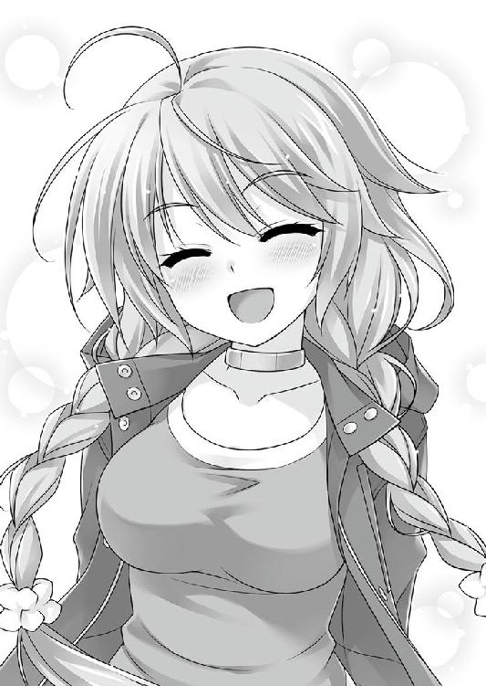
１１７─■■■■
さあ、本日もお待ちかねのヤツだぞ。
キミが返事をどうするかは、一考の余地がある。
この『物語』の行き先を大きく左右してしまう《分岐点》なんだからな。
歓迎する／３２３─■■■■ へ行け
お断りする／５─■■■■ へ行け
とある『本』と『死神』の道行きは、まだこれからだ。
【ＥＮＤ】
 あ と が き
あ と が き
お久しぶりになります日野亘です。
この『ＰＧ１４』は、自分がこれまでに得た様々な『関係』からヒントを得た物語です。
しみじみと思うのは、人と人の関係が、人生を豊かにもすれば厳しくもするということです。そして、関係には様々な形があります。家族、友人もそうですし、編集者と作家もその一つだったりします。
よき人生は、独りでは得られないのでしょう。
今作を形にする上で、皆様もよくご存じの「ゲームブック」を、テーマの一つとして扱っています。えっ、知って......ますよね？
「ゲームブック」というジャンルの『本』は、創土社様はじめ幾つかの出版社様から、自分が慣れ親しんだ時代の作品の復刻版や新たなオリジナル作品が発表されていますので、本作を読んで興味を持たれた方は、御覧になってみてはいかがでしょうか。
ゲームブックを堪能していただければ、本作の題材にどうして「ゲームブック」を選んだのかをわかって頂けることでしょう。
さて、前作『るいは智を呼ぶＰＬＵＳ』はＰＣゲームからのノベライズでしたが、この『ＰＧ１４』は完全な新作。楽しんでいただけましたら幸いです。
本作の舞台になっている「Ｔ県奥志麻市」は、暁WORKSから好評発売中の年齢制限のあるＰＣゲーム『ハロー・レディ！』の舞台でもあります。無料体験版もダウンロードできますので、本作を気に入ってくださって、年齢制限に引っ掛からない方は、是非ともプレイしていただければと思います。
一條と叔美の物語は始まったばかりですが、ひとまずの幕となりました。続きの物語をお伝えできる機会が得られることを祈りつつ、一旦は筆を置くこととします。
できますれば------------------今後ともよろしくお願いします。
最後に謝辞を。
内容から装丁に至るまで、尽力してくださった編集の遠藤様。
本作について、ご賛同いただきました創土社様。
今回も素晴らしい表紙と挿絵を描いてくださった、さえき北都様。
今回は、細部のチェックで殊更にご迷惑を掛けました、有限会社リサイトの皆様。
実家に新しくやってきた、心を癒やしてくれるニャンコ様。
多くのインスピレーションを与えてくださったＴ県民の皆様。
それから、この本を手に取ってくださった、全ての皆様。
心から、感謝を捧げます。この本が完成したのは、皆様の力があればこそです。
ありがとうございました。
日野 亘
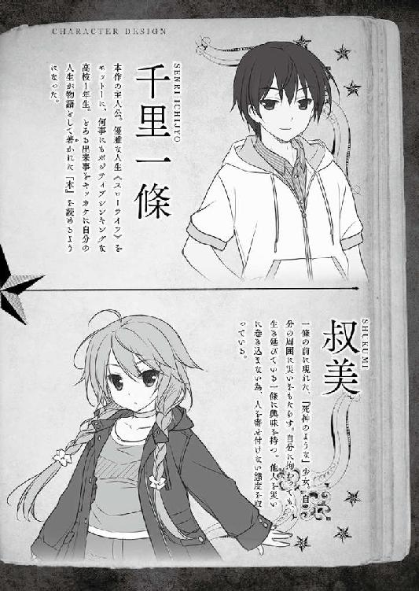
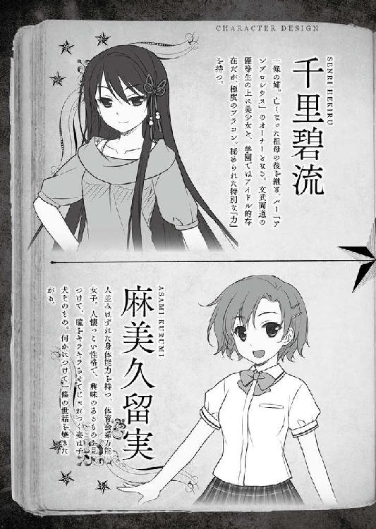
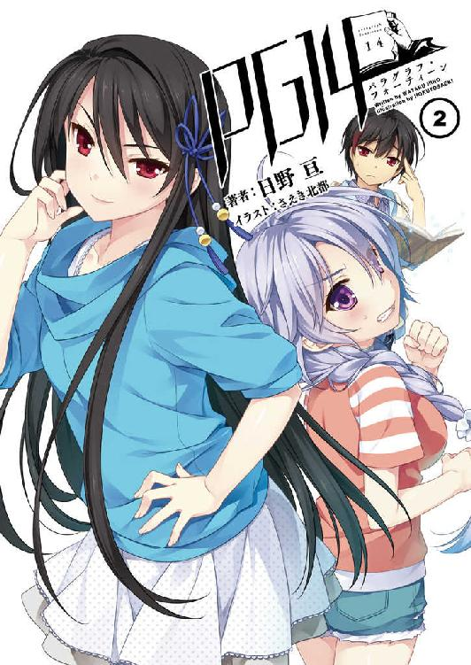
桜ノ杜ぶんこ
ＰＧ１４ ２
日野 亘
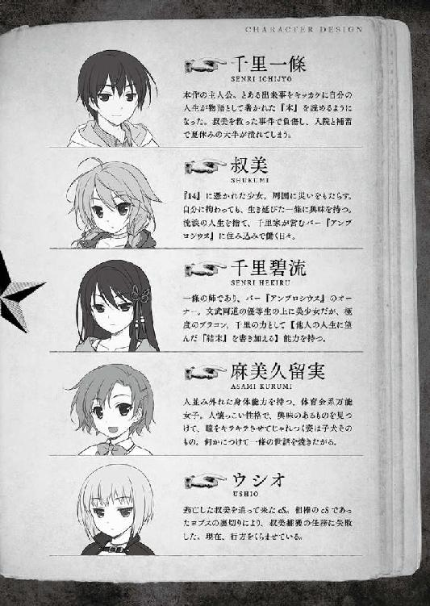
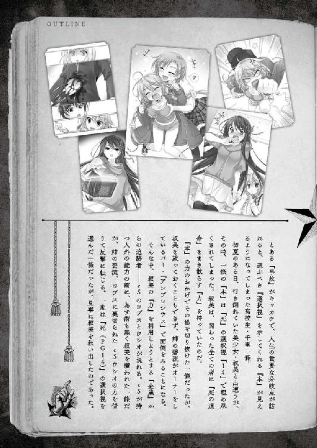
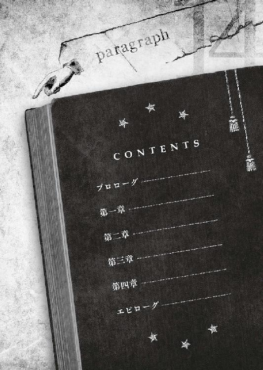
一つの『世界』が終わってゆく。
猛暑の盛りも過ぎた、夏の終端。
廃虚のようにがらんどうの教室の、本来自分のものではない席から、遂に訪れた『終わりの景色』を見届けている。
死に絶えた世界の音は、耳鳴りめいた虫の声と硬い跫音。
この期に及んでも蒼穹は変わりなく透き通っていたが、見上げる方からは灰色に映った。
見たいものだけ見て生きていけるなら幸福だろうが、世間の半分以上は見たくない事柄でできているものだ。それを「現実」と達観するか、「必要悪」と呼んで冷笑するかはともかくとして。
泣こうが喚こうが、人生には困難な『選択』を迫られることがある。ちょうど今の千里一條がそうであるように。
終わりまで、残された時間はあと何秒もない。
「５......４......３......」
走り続けるカウントダウン。そして、０。
待ち侘びたタイムアップ。この時期にはあまりに似つかわしくない、涼しげなチャイムが高らかに鳴り響いた。自分と監視以外は誰もいない教室の席を勢いよく立ち上がる。
「これで終わりですよね、先生!!」
補習担当という貧乏クジを引いた、半分ほど白髪になった老男性教師は、重荷を下ろしたような溜息一つ。それから、「さっさと帰れ」と言わんばかりに、右手でしっしっと追い払うジェスチャー。
夏期特別補習という、一條を監禁していた『世界』は、こうして終わった。
時刻は正午前。校舎の中には空調もなく、暑いというよりも熱かった。
学校側も、少子化で学生の確保に四苦八苦する今日日である。都会の進学校や私立高校には、校舎ごと冷暖房完備の場所も多くなっているが、此処、四国にあるＴ県のうら寂れた地方都市・奥志麻の学校では、まだまだそうもいかない。
補習を終えて自由の身になった一條は、猫の気配を探るネズミのように跫音を殺して廊下に滑り出た。右を見て、左を見る。誰もいないことを確認し、ようやく胸を撫で下ろす。
「......考えすぎ、か？ 先手を打ってくるかと思ったけど」
廊下の窓を隔てた残暑の空は、冷たく澄んでゾッとするほど青ざめていた。
世界の色合いは、ちょっとしたことで姿を変える。
例えば、毎朝全く同じ色彩を目にしても、受け取る印象が同じにはならない。華やかに色づくこともあれば、灰色にくすんで見えもする。
視覚の異常のせいでは、当然ない。人間が目にするものは、心の状態の移り変わりで容易く変化してしまうのだ、としみじみと実感してしまう。
延々続いた補習のせいで実感しがたいが、暦の上では八月も終わろうとしていた。サマーでジャンボの当選日やら、地元名物の祭りやら、一通り季節の風物詩も過ぎ去り、世間一般ではすっかり夏の終わりへと意識が切り替わっているだろう。
「今日を入れて残すところ、あと七日......」
一條は、世界滅亡の日に地球脱出用の宇宙船から置き去りにされてしまった哀れな男のような気分で、あまりに切ない現実を噛み締めた。
残された自由の猶予は、僅か七日。時間にして一六八時間。いや、既に初日の正午を回っているから、一五六時間を切っている。
「やっほー」
不条理な『監禁』の終焉を祝うのとは別種の涙をこっそり滲ませていた一條に、廊下の向こうから手が振られる。
まさか、来たのか──と身構えるが、相手の顔を見て警戒を解く。
学校という空間には似合っているともそうでないとも言える、白衣にブラウスという恰好は、養護教諭の「お花ちゃん」こと三輪乙子女史だ。
「おはよー......って、時間的には正午だから、こんちは？ ま、どっちでもいいか。今日も登校だなんて、いつもながら持て余してるよねー」
ほんの数秒間、選択に迷った。用事があるからと速やかに別れを告げるか、ここで返事をしてしまうべきなのか。
何も起きない数秒が過ぎてから、行きかけた足を止めて三輪教諭に向き直る。日頃世話になっている人まで無碍にするのは、一條の趣味ではない。
「お花ちゃ......じゃない、三輪先生。好きで持て余してるんじゃなくて、補習ですよ」
口を滑らせかけた呼び名を咄嗟に訂正した。二人しかいない廊下とはいえ、学校内で馴れ馴れしくし過ぎるのは問題だ。当の本人はサラリと流すだろうが、一條は人の距離が気になるタイプである。
「こんな時期まで補習とか、そんなに成績悪かったっけ？ あ、そっか......教頭が休み前の飲み会でポロッと零してたヤツだね」
「相変わらず、個人情報筒抜けだ！」
鷹崎南高校の情報管理が甘いのか、外見の印象に反して三輪教諭が目聡いのか。おそらく両方だな、と一條はこっそり恐れ入った。
春の陽気めいて小難しいことを全く考えてなさそうなお花ちゃんの笑顔が、心象の変化のせいか、何やら大きく見えてくる。
「キミは、ちょくちょく怪我をしてる。若いのに物事に執着しないし、端から見てると、どっか危なっかしい。危機感足りてないんじゃない？」
「実感はないですよ。大騒ぎするようなことじゃない。ちょっとした怪我だ」
「そっか。ちょっとした怪我をすると、居残りで夏休み終わっちゃうんだ」
──どうして、この時期まで、全校生徒の中で唯一、一條だけが『補習』という悲劇的世界の虜囚を続けなければならなかったのか。
突き詰めれば、「とある不幸」に巻き込まれ、数奇な運命に憑かれた一人の少女を救ったせいだ。
一條にしてみれば、救ったというのは大げさで、行き止まりに突き当たっていた小さな人生に「ささやかな抜け道」をもたらした程度のつもりだった。しかし、当人の受け取り方がどうあれ、「救う」という『奇跡』と交換したのは、死の一歩手前どころか一度は心臓が止まるような『大事』。一学期後半は、そのまま長期欠場と相成った。
不幸中の幸いと言うべきか。時期が良かった。
夏の長期休暇──いわゆる『夏休み』直前の、表向きは不慮の事故であった為、復活後に、不足分の出席日数を『特別補習』と大量の『課題』という名の宿題で埋め合わせてくれると学校側がお沙汰をくれたのだ。
特例的な温情お裁きの裏側では、人前では完璧超人を通している悪魔のように外面の良い碧流が、職員室に直談判で乗り込んだ一幕もあったりしたが、それはまた別に語られるべき物語である。
さりとて、「幸」と「不幸」は表裏一体という。
物事は見方一つで意味合いを換えるものだ。一條が甘んじて受け入れた（というよりも選択の余地はなかった）特別補習は、輝ける学生時代の夏の一時期を、ただでさえ怪我の治療とリハビリで食い潰されていた黄金よりも貴重な休暇期間の残りを、ほとんど余さず踏みにじられるという意味でもあった。
目の前に立ちはだかる、県内最高峰の楯山の断崖絶壁の如く積み上げられた補習と課題の数々。何事もなく長期休暇にうつつを抜かす同級生や世の学生やリア充カップルたちに羨ましげな横目を送りながら、夏の盛りの暑さに汗ばむ額を拭い、毎日学校と自宅を往復しなければならなかった不遇の日々。
あるいは、それをこそ『代価』と呼ぶべきか。
他人を救おうと自分で「選択」した帳尻を、自身の身体と時間で購ったとも言えなくもない。
──幸福も不幸も一目ではわからない、か。
手にした結果に自分なりの納得はしているものの、苦い結末には違いなかった。
同じ年頃のごく普通の若者同様に思い描いていた輝けるサマータイムの日々は、無惨にも始まる前に消えてしまったのだから。
「──まだ、終わっていませんよ」
「え、ナニが？」
突然、一條が唇の端を歪に吊り上げて、少年漫画の黒幕キャラよろしく不敵に笑ったので、三輪教諭は餌を見失ったフェレットみたいに首を傾げた。
「先生こそ、どうして学校に？ 教師にも登校日とかあるんですか」
普段の柔和というより押しの弱い空気みたいな表情に戻って、一條も首を捻った。
教師用登校日があるとしても、こんな夏休みの終わりも差し迫った時期に設定されるだろうか。ついでに言えば、三輪教諭は面倒くさいからと部活の顧問も引き受けていないので、そちらの理由でもない筈だ。
「まあ、なくはないけど。今日のところは、ちょっとした用事かなー。大人には、色々あるモノなのだよ」
「そういうものですか」
大人というのも大変だな、とぼんやり思う。
「ところで、最近バテやすいとかないかい？ 今年は残暑が厳しいし。大怪我の直後だしねー。そうでなくても、一條、怪我が好きだから」
「全然好きじゃないです。不思議と多いけど。でも、おかげさまで怪我馴れして、リハビリ後の調子は、まあ、そこそこですよ」
「全然自慢にならないから、それ」
カラカラと、裏側のなさそうな花の笑顔。
案外、自分を気に掛けて、ワザワザ出てきてくれたのだろうか。もしかすると、補習期間中も、時々様子見に出てきてくれていたのかもしれない。一條が気づかなかっただけで。
──他にも色々なことを見逃してたんだろうな。
一年前に故郷・奥志麻を離れ、再びここへ戻ってくるまで、自分は半分眠っているようなものだった。物事を正面から受け止めることができなかった。数少ない親しい相手である筈の三輪教諭が、本当はどういう人物なのかさえ、解っていると言い切る自信はない。
自分を見つめ直すキッカケがあったとすれば、それは『特別補習』の原因になった、あの出来事だろう。他人を救って、大怪我を支払った一連の事件は、廻り巡って、一條自身にも小さくない変化をもたらした。
「ま、後を引かなくて何よりだねー。夏休みは潰れちゃったけど」
「重要なのでもう一度繰り返しますが、まだ終わっていませんよ」
「え、ナニが？」
重要と思っていない人にも繰り返される。
「あと、一週間もあります。物事は、正しく吟味されなければなりません」
人が変わったように、キッパリと断言する。
数ヶ月前の自分とは違うのだ。ここで引き下がるワケにはいかない。
決意を込めて夏の終わりの高い空を見上げた。横を向いていたから、きっと三輪教諭に表情は見えなかったろう。彼女の知るこれまでの千里一條らしからぬ遠大な思索と決意を感じさせる声音だけは届いた筈だ。
三輪教諭は三度瞬きし、おもむろに胸ポケットからハンカチを出すと、眼鏡のレンズを拭いて、断固とした意志表明を見返した。
「いいですか！ ０と１は違います!! ０と７は大違いなんです!!!」
「そりゃそうだけど。でも、あと一週間しか──」
「まだだ!!」
「え、ナニを？」
「あとではなく、まだ──七日もあります！」
単なる日数という物理上の事実ではない、全く別の揺るぎない何かを高らかに告げる。
どこか遠くで、去りゆく夏を惜しむ蝉の声がしていた。
「一條ってさぁ、執着心薄いのに、時々こんな感じで強情だよねー」
部活動の顧問をしていないのと同様の理由で、三輪女史は日向の猫みたいに欠伸をしながら、そそくさとその場を後にした。
寂しい廊下に、ポツンと一條だけが取り残される。
「僕の夏休みは、まだ七日も許されている！」
変わることのない空に、硬く拳を握り締めて誓った。
校舎から一歩外に出ると眩しすぎた。
とっくに残暑の時期だというのに、グラウンドを灼いて陽炎を揺らめかせる熱気が押し寄せてきて、一條は軽く音を上げそうになる。
「......念には念を入れるか」
人目を避けるように、正門ではなく裏門から外を目指す。
「しかし、夏ごとにロクでもない目に遭ってるな。この分だと、来年辺りは、いよいよ生命存続の危機？」
一條にとって、今は、人生で二回目の『夏』だ。
去年の夏にも、「とある事故」に巻き込まれて重傷を負っていた。おまけに、その事故で、人生の記憶、ほぼ全てを失う羽目に陥った。
ここまでの人生で経験してきただろう、眩い「夏の出来事」は残らずリセットされ、加えて事故で負った傷の治療の為、夏休みそのものも無いに等しく──
嘆かわしい夏の記憶である。
失くした分まで今年を、一條にとっては正しい意味で「初めて」の夏休みになったこの夏を、せめて楽しもうと前向きに構えていた矢先──夏休みの五分の四を失った。
納得はしている。自分の『選択』の結果だ。何より、振り向いたところで意味はない。
しかし、納得するのと、嘆かないのは別の次元の問題だ。
出鼻をくじかれた上に自由にならない状況下──寝たきりで布団でも噛み締めたくなっていた一條のところへ、見舞いと称して現れたのは自称幼馴染の久瑠美である。
「ワザワザ来てくれて有り難いんだけど、今、そういう気分じゃ......」
「これ、マイ・ファミリーで行ってきた沖縄土産っすよー！ 早く元気になるのだ。で、一緒に遊びにいくっす。それと、来週は軽井沢の親戚のところへ出掛けるので来られませんけど、久留美が居ないからって泣いちゃダメですからね!!」
......人の話を聞かない彼女の名誉の為に言っておくと、悪気はないのだ。ただ、悪気はなくても繊細なグラスハートは滅多打ちにされる。ぶっちゃけ、輝ける夏をウハウハしている久留美が羨ましかった。嫉ましかった。ルサンチマンの塊だった。
そして、誓ったのだ。
お見舞い且つお土産のチョコを一箱分まとめて貪り喰らいながら。
「コ・ノ・ネ・タ・ミ・ハ・ラ・サ・デ・オ・ク・ベ・キ・カ。必ずや、夏休みを謳歌してやるからな!!」
と──。
「......過ぎたことを振り向いても仕方がない」
ピークを過ぎた夏の日差しを手で遮りながら、気負いを込めて独りごちた。
千里一條は、振り向かないのが信条だ。
失われてしまった記憶も、ロクでもない夏も、久留美の晴れ晴れ笑顔への女々しい愚痴々々も、今更戻ってこない過去を惜しんだり、悩んだりするくらいなら、限りある『夏休み』に何をすべきか考える方が建設的である。
「そう、まだ終わっていないんだ」
記憶を失くして振り向きたくなかっただけの以前とは、もう違う。炎のような衝動が、季節柄か暑苦しいほど燃え盛っていた。
このまま黙って八月三一日を待つつもりだと、一体誰が言ったのか。
日々補習と課題に追われながら、自由になる瞬間を夢に見て「計画」は軌道修正された。残された時間で、『夏』を満喫する為に。
一條は、その計画を──『夏休みを一週間でパーフェクトに満喫する作戦』と名付けた。我ながら、幾分ダサいとは思うが、ネーミングに必要なのは格好良さではなく、如何に自分を奮い立たせるか、という情熱だ。
これでいい、この名前がいい。
傷は癒え、補習も課題も、自分を拘束していた『世界』は終わりを告げた。行く手には新たな、そして七日だけの新世界が広がっている。本来のものと比べれば雀の涙だが、ゼロではない。
「あと、気掛かりなのは──」
バイト先の出方だ。怪我の治療と補習の為、一條は長らく「バイト」を休ませて貰っていた。虜囚から自由人へとクラスチェンジした以上、即座に勤労奉仕を要求されるのは、レンタルＤＶＤを延滞すれば追加料金がかかるのと同じくらい明白である。
──せっかくの夏休み残り期間が、無慈悲な労働に費やされてしまう。
休んで迷惑を掛けた負い目はあっても、それとコレとは別の次元の問題。一瞬一瞬が宝石よりも貴重な青春を、初めての夏休みが奪われるのを座して待っていても良いのか。
......否。断じて否！
この夏は、即ち『証明』だ。人生を謳歌できるという、自分自身への根拠となる筈の時間だった。万難を排して、バイト先に今しばらくの負担を強いるとしても、勝ち取らなければならないものなのだ。
物事が予定外に破綻してしまう場合──理由の第一は、偶発的なアクシデントよりも、見落としていた要因が招く必然であるケースが多い。
この数ヶ月の経験で学んだ、貴重な教訓の一つだった。カオス的な不運の介入をゼロには出来ないが、「予期せぬ不幸」と呼ばれる事象も、細かく見返せば「見落としていた確率」に過ぎないことが大半だ。
事前の分析と準備と対策の精密さが、物事の成否を左右する。
その点、今回の「計画」では、可能な限りベストを尽くした。警戒の手薄な昨日の内に、奥志麻駅のロッカーへ荷物を隠しておくのに成功していた。注意を引かないように念を入れて、何事もない登校を装いながら密かに寄り道をしたのである。
バイト先から逃亡しようと思えば、当面家には戻れない。残念ながら、泊めてくれる友達の心当たりはなかったが、これまで使い道なく貯まる一方だったバイト代を湯水のように浪費すれば、宿泊施設には事欠かない。それに、今は夏。いざとなれば野宿したところで、一週間程度ならやっていくのは、それほど苦でもあるまい。
──完璧だ。後は、現実に「計画」を推し進めるだけ。
燦々と照る太陽を浴びながらの海水浴も棄てがたいし、暑気を避けて山と森でキャンプを堪能するのもいい。脳裏に広がる眩い前途に、クリスマス・プレゼントを貰う子供のようにトキめいた。もっとも、クリスマスにプレゼントを貰った経験があるかどうかすら、憶えていないのだが。
この時期に自分だけが毎日お世話になっていた校舎に別れを告げ、人並みの輝ける『夏』を手に入れるべく、学校の裏門から意気揚々と第一歩を踏み出す。
その行く手を、待ち構えていた影が遮った。
「────」
完全に裏をかかれて、言葉にならない悲鳴を呑み込む。
まさか裏門側にはいないだろうという、一條の安易な思い込みを破り、出掛けに前を横切る黒猫のように立ちはだかったのは──小柄な少女である。
小柄で敏捷。第一印象では年下の少年に見られがちだが、先入観をなくせば、ほっそりとした身体のラインは紛れもなく女性のもので、年の頃は一條と大差ない。
音もなくしなやかに歩く姿は、なるほど、猫科の生き物には違いなかった。但し、眸の中にキラキラと輝いているのは、気の荒い野良猫じみた不屈の闘志とバイタリティ。
「........................叔美ッッ!!」
姓はない。名前のみで叔美。一條の夏を台無しにしたとある不幸で、一條が「救った」少女。今は、バイト先でもある、千里家が営むバー『アンブロシウス』の住み込み従業員。
「お願いだ、僕の話を聞いてくれ！」
「黙ってろ。喋るのはアタシで、言うべきことは一つ。選択しろ。黙って家に帰るか、無理矢理連れられて帰るか」
「か、帰らない選択肢はないのか!?」
懇願する一條に、叔美はどこまでも、ぶっきらぼうかつ無慈悲だった。
「くそ......計算違いだ。余計なことには我関せずの猫気質だと思っていたのに、よりによって手先に落ちぶれるなんて......ッ」
「落ちぶれるとかいうな。アタシだって、猟犬みたいな面倒くさいことはゴメンだ。でも、これ見よがしに『命令』を振りかざしてて、偉そうに言いつけるヤツがいやがる」
陽炎が立つ、刺すような日差し。
追い詰められて、一條は一歩後ずさった。簡単に逃げ出せそうな隙はない。
「争いは何も生まないから、愛と優しさで他人を理解し合って思いやろう！」
「アタシは心が広くて優しいから忠告してやる。これ以上ムダに逃げ回って、アタシの機嫌を損ねると、五体満足で家に帰れないぞ」
「ぶっちゃけると、そもそも帰りたくないんだ！」
「オマエの都合は聞いちゃいない。だいたい、裏に回る程度の浅知恵で、アタシを出し抜けると思うなよ。森のイノシシだって、イチジョーより頭いいンだぞ。危うく逃がしそうになったじゃないか」
「今、その程度で出し抜けないって......」
「黙れ。ついでに、自分一人逃げようなンて、そんな羨ましいことは............神様が許してもアタシが許さない!!」
「最後のヤツ、スゴく本気っぽいんですけど!?」
かつて、救われたことに感謝して涙さえ見せた少女は、今や一條の自由を略奪する悪魔の使いに成り果てていた。
「人の心とは、かくも移ろい易いものなのか......」
目蓋の裏に悲痛の涙が滲みかけたが、本来すぐに気づくべきだった、別の不可解な点に気がついた。
「──ちょっと待った。叔美が学校みたいな人の大勢いそうな場所に？」
「フン、何を今更......」
実際には、夏休み終盤の高校にはほとんど人はいないが、叔美が「いそうな場所」へ近づいたという一事は、一條にとって今の状況よりも遙かに驚くべきことだ。
──叔美は、死に憑かれている。
──だから、一條は手を差し出した。
叔美という少女の廻りには、「死」が立ち篭める。
だから彼女は、他人を災いに巻き込まないよう、孤独な時間を生きてきた。
今は、もう違っている。『アンブロシウス』に宿る一條にも理解できない『力』が上手く作用して、彼女が抱える『１４』が疫病じみた猛威を振るえなくなっている。この仮初めの安全が、何時まで続くかはさておき。
とはいえ、「三つ子の魂百まで」の喩えの如く、もはや安全だと頭では理解しても、これまでの人生で身に染みついてしまった性質か、叔美が自ら率先して人の集まる場所を訪れようとすることはなかった。少なくともこの数ヶ月で、一條の知る限りは。
「ひょっとして、学校見学でもしたくなった？ いい傾向じゃないかな。大丈夫な内に、できることはしておいた方がいいよ。そうだ、中を見ていけば......三輪先生に言えば案内してくれるから。僕は先に帰ってるけど、ゆっくりしていって。じゃあ！」
「逃がすか」
勢い任せでさりげなく逃げ出そうとした一條の肩を、後ろから叔美がガシッと掴む。
「お願いだからどうか............」
無慈悲な返事に苦渋を噛み潰す一條の眼前へ、いつもの如く、出掛ける直前に切れやがった靴紐のように、黒革の背表紙の分厚い『本』が唐突に現れた。
「────」
再び、言葉にならない悲鳴を呑み込む。叔美の『１４』が現れたのではないかと焦ったが、『アンブロシウス』の『力』が叔美自身に働いている限りは有り得ないと思い直す。
支えもなく宙に浮いて勝手に開かれた『本』の記述を、慎重に目で追った。呼んでもいない『本』が自動的に現れる時には、『そうしなければならない』のだと、一條はその短い人生の中で十二分に理解していた。
５２２─■■■■
全ての束縛から解放された。と思いきや、キミは追い詰められてしまった。裏門から抜け出したキミの前に立ちはだかる叔美は、まさに地獄の獄卒のようだ。狩人を思わせる彼女の眼光の隙をついて出し抜くのは、容易ではないだろう。
今の状態を古い諺で表現してみせると、『人生の一寸先は闇』。どうだい、昔の人の言葉には含蓄があるだろ。
「............一生のお願いだから、どうか、今日だけは見逃して」
「ダメだね」
涙目でキミは懇願する。押してもダメなら引いてみるのは、悪くない手だ。とりつく島もなく拒絶しているが、叔美の腕の力がほんのちょっぴり弱まった。これは、千載一遇の好機かもしれない。
叔美に従って大人しく帰るのであれば／４２５─■■■■ へ行け
断じて行えば鬼神も退く、という言葉もある。相手は鬼神よりも手強いかもしれないが。叔美を振り切り、自由目指して逃亡するのであれば／７４６─■■■■ へ行け
逃亡する場合、しばらく家には近づけない。もしかしてももしかしなくても、キミは今、「寝袋」か「テント」を持っているだろうか？ 持ち合わせと更に一掴みの勇気があれば、真の自由を目指すことができるだろう／５２７─■■■■ へ行くように
「寝袋なんてあるワケねー！」
「いきなり叫ぶなよ、メッチャこわいだろ！」
何もない空中に向かって、一條が非難じみた声をあげる。誰がどう見ても、見えないお友達と突然お話を始めたヤバい人の図だが、一通りの事情を聞かされている叔美は腑に落ちた顔をした。
「恐怖と暑さでイカれちまったかと思ったけど......なンだ、例のアレか」
──叔美が『１４』に憑かれているように、千里一條は『本』に憑かれている。
厚く黒い背表紙の『本』は、一條にしか見えないし、触れることもできない。
そして、一條の人生を左右するであろう重要な「分岐点」が訪れた時、この『本』は自動的に目の前に現れ、選択視を突きつけて、否応なしに『選択』を迫ってくる。
（叔美に従って帰るか......それとも逆らって逃げ出すか......）
「分岐点」とは、「未来」ではなく、必然として導かれる「結果」だ。壊れた柵へ無警戒に寄りかかれば崖から落ちるし、予習復習を忘れたネトゲ三昧の日々は受験失敗に結びつく。世の中の物事の多くは、水が高きから低きへ流れるのと同じで、「偶然」ではなく「必然」で成り立っている。ただ、普通の人間には、その必然を織りなす糸が読み解けないだけで。
口うるさい相棒であり、遠慮のない忠告者である一條の『本』は、過去と現在の『兆候』と、訪れる『必然』を記述する。
「......振り切って逃げる選択視は、７４６か」
『本』が示すＰＧには、数字が割り振られている。この三桁の数字からは、危険であるとか金運を掴めるとか対人関係が変化するかもとか、おみくじの文面程度の情報が読み取れる。経験則から言えば、先頭の数字が３以下ならほぼ「安全」で、７以上は「危険域」だ。
補習から解放されたばかりだというのに、一條のテンションは墓場から起き上がったばかりのゾンビのように成り下がってしまった。夏休みデビューと青春の日々を謳歌しようとする、まさにその第一歩目に、恐るべき罠が仕掛けられていたのだから。
否。罠とは、まだ決まったわけではない。
左右された人生は、より悪くなるばかりではなく、選択次第では良くもなる。
「いつまでも見えない『本』相手にブツクサ言ってンじゃねー。さっさと選べ、優しく連れて行かれるか、強引に行くか──好きな方をな」
プロの殺し屋もかくやという凄みで一條の腕を引っ張る、運命の女神の代理人。
「か、帰らないという選択は......」
「アタシの給料を払わないって言いやがった」
あらゆるものを「価格」に取り替えてしまう資本主義は、一人の少女の矜持や良心さえ、金で買い取ってしまう。
「意地っ張りの君ですら、経済の暴力には勝てないのか。いいよ、僕は恨まない。君の不憫な状況は、よく判った......」
悪事の目撃者の襟首を掴んだギャングスター並に、叔美はどこまでも本気だったが、一條だって風車に槍持って突っ込んでいく騎士程度には真剣だった。
無謀であろうと人は、『選択』と対峙しなければならない。
だが一條は、普通の人には漠然としか判らない「人生を左右する選択」の瞬間を、『本』のおかげで確実に判断し、選ぶことができる。
なるべく「よき未来」を選びたい、と願ってしまうのは人間の性だろう。
（──そう思うのが、人生の罠ってね）
飄々と肩を竦めるような軽い笑い。
叔美を救った一連の不幸で、「目の前の幸運」と「よき未来」が、必ずしもイコールでは結ばれないのだと、イヤというほど身に沁みていた。
ちょっぴりの「よき未来」を選び取ろうとして短絡的に選んでしまうのは、チーズに飛びついて罠に掛かるネズミも同然だ。
「ただ、判っただけだ。僕は、必ず『夏』を手に入れる！ その結果、君がどうなってしまうとしても!!」
一條は腰を落として一瞬後の選択の瞬間に備えて身構え、叔美は顔の前で獲物を握りつぶすように開いた右手の指をゴキゴキと不穏に鳴らした。
「あと三秒待つ。返事がなけりゃあ、無理矢理連れて帰るぞ」
そして、一條は躊躇いなく選んだ。
ＰＧを！
「さあ、見ろ。高い空、彼方の水平線、素晴らしい海だぞ!!」
どうだと言わんばかりに胸を張った碧流は水着だった。
普段から怜悧で成熟した艶を感じさせる彼女らしく、ワンピースの色はアダルトな黒。少女趣味っぽいフリルは、アンバランスだが愛らしい。背が高くて手足がすらりと伸びたモデル体型なので、布切れ一枚しか身に纏っていないと、出てるトコと引っ込んでるトコの区別が明白だ。露出が控えめなチョイスなのは、「品がない」という本人のポリシーから。碧流は考え方に時代遅れなところがある。
眩い夏の日差し、匂い立つ陽炎、心地よい波音。永遠に続いているかのような砂浜。
絵に描いたような海水浴のワンシーン。
ここは、小槌の浜という。奥志麻から汽車で数時間ほど揺られ、更に色々と乗り継いで辿り着いた県南の土地だ。変化に富んだ海岸線の美しさと水の良質さから、「Ｔ県のカリブ海」として地元ばかりか全国でも名高い。
「うん。そうだね......姉さん」
目のやり場に困っていた一條は、歯切れが悪くしどろもどろに頷く。
過去の記憶が失い一條は、眼前の碧流と血縁者という実感が未だに薄い。そう、家族なのに他人のような相手。しかも、身贔屓を差し引いても年頃の美少女が至近距離で無防備に肢体を晒しているのは、色々な意味でデンジャー極まりない。
一條も、ボクサータイプのトランクスという水着姿だ。恰好からして、『夏と海』を心ゆくまま満喫せよと命じているのに相違ないが、とてもそんな気分にはなれそうもなかった。
──これが海かぁ。
憶えている限り、生まれて初めての「海」。
夏の「計画」で、是非とも来たいと望んでいた場所だというのに。
傍らの異性を意識しているとバレるのは居心地が悪いので、さりげなさを装って視線を逸らす。だがいつの世も、戦場では臆病こそが死に繋がる。無防備に逃げた先には、更なるブービートラップが待ち構えていた。
「おい、見てみろ！ 変な生き物がいる!!」
大声で騒ぎながらサマータイムの海岸の砂を蹴り飛ばして突っ込んできたのは、夏の空をイメージさせる、白と青のストライプのビキニ。
目に痛い罠の仕掛け人は叔美だ。鮮やかな水着は、野生動物みたいに敏捷な彼女のイメージによく似合っていた。危険シマシマが無防備に身体を引っ付けてきて、固まってしまった一條の腕を引っ張る。普段の叔美と違いすぎて、中の人が入れ替わったとしか思えない大胆さ。そして、こちらの二の腕に押しつけられた柔らかい感触は──
「ちょ！ しゅ、シュクミさん！ おおおお、おちついて！」
激しく動揺し、棒読みの上に「さん」付けになっていたが、初めての海水浴というイベントに舞い上がっている叔美は、全く気にしなかった。
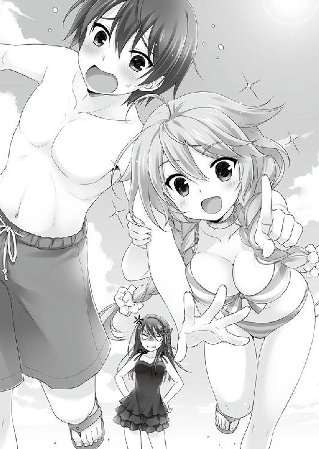
「イチジョー、なに小さくなってウジウジしてるンだよ！ こっちに来て近くで見てみろ！ スゲー珍しいンだから!!」
腕から意識を逸らそうと、叔美が指差す方向を見る。彼女が作ったらしい砂山の頂からヤドカリが顔を出し、マイハウスを背負ったまま海目指して逃げ出そうとしていた。
「ヤドカリなんて、別に珍しくも......」
言い掛けて、思い留まった。
叔美に「普通」は通じない。彼女の人生は、孤独と歪さの寄せ集めだ。今回、この場所へ来ることになってしまった時も、水着を用意しようともしなかった。「海」と「水着」が、彼女の中で結びつかなかったのである。
ちなみに、叔美が着ているビキニは、お向かいの蒲田さんに当人が泣きついた成果。
（女って生き物は、男の視線で磨かれるものなのよん。あんた、素材はいいんだから、一條ちゃんの「男」に鍛えて貰うといいわ、ほほほ）
ヒゲ面で姐御肌な彼は、二つ返事で水着をコーディネートしてくれた。蒲田流の持論に基づいている為、乙女チックなデザインなのにカットが際どく、肌色のパーセンテージが極めて高い。おまけに叔美は着ヤセするタイプらしく、普段の野暮ったい服装に隠されていたパワフルな肢体が、ここぞとばかりに解き放たれて、真夏の風を浴びている。その上、腕にしがみついて離れてくれなかった。
「......落ち着け、もっと別のことを考えるんだ。例えば海！」
邪悪な想念を呑み込む、清浄と青く輝く夏の海原の彼方を見やる。どこまでも広がる水平線の果てに銛一本でクジラに挑む、ストイックな太古の狩人たちの生き様を思い描いた。
「時間切れだ、弟から離れろ。海水浴中は、健全な青少年育成の為、男女は三秒以上の接触を禁止している。これを『三秒ルール』という」
「へー、『海水浴』ってのは、色々ややこしいンだな」
常識知らずの叔美は、身軽かつ素直に一條から離れたものの、女豹のポーズを取りながら、雇用主へと怪訝な上目を送った。
「でもさ、随分寂れてるぞ。人が一杯って話だったから、ちょっとは警戒してたのに」
「うむ。ここの海水浴期間は、昨日で終わっているからな」
さも当たり前だと言うような自信満々の顔で、碧流は頷いた。
──昨日。
結局のところ、一條は大人しく（？）連行されて、千里家へ戻ったのである。
逃亡するにはＰＧの危険度が高かった。強引に逃げたところで、追っ手を振り切るのも困難だろう。弟には甘い碧流を涙ながらに説得する方がまだしも夏休みの残り期間を謳歌できる可能性が高い......と冷静な判断を積み重ねた結果だ。
二人で帰宅してみると、黒幕の筈の碧流は店に不在だった。こういう選択結果だったのか、と喜びかけたのも束の間、鬼はすぐに帰ってきて、
「私は案内人だ。愛しい弟を楽園へと誘う、な」
オペラ歌手のように大仰な口上を宣う奇行を一目見て、勤労により『計画』を潰される以上の、よからぬ何かが待ち構えているのでは、という根拠のない予感に戦慄する。
──僕の『夏』は、奪われるしか道がないのか。
「いつもより輪をかけて、のっけからトバしてるけど......姉さん、夏風邪でも引いたの？ 季節の変わり目だから気をつけないとね」
一條は最後まで抵抗を続けた。無駄に終わるかもしれなくても、黙って運命に流されるまま、先へ進むのはまっぴらである。何か言ってきても、全ては夏風邪で脳を冒されているせいだと聞き流す覚悟を決めながら、この窮地から自由を手に入れる逆転の選択はないものかとトラバサミ掛かった獣のような悪足掻きを巡らせる。
「喜べ、二人とも。明日から社員旅行だ。マスターは不参加だが、私たちは海へ行く」
「........................へ？」
全く予想外の方向からの一撃を受けて、思わず思考が止まる。
「なあ、イチジョー。『シャイン旅行』ってなンだ？」
叔美は意味を全く理解できていなかったが、一條にしてみれば、碧流の背後に眩い後光が見えていた。差し出された手は、天上から垂らされた蜘蛛の糸のようだ。
（旅行......海......あれ......それって......）
何の後ろめたさも偽りも読み取れない、善意の塊のような姉の笑顔を目の前にして。
もしかして、もしかするかも......と、胸の奥で喝采を上げていた。
──のだが。
そんなこんなで、無理矢理ではなく若干の自発的行動で連れてこられたのが、この小槌浜海水浴場。
「......蜘蛛の糸って、しがみついたら切れちゃうんだっけ」
去りゆく夏を偲ぶクラゲだらけの海と、最盛期を過ぎたがまだ熱い日差しが灼く砂浜には、一條たちの他に観光客の姿はない。
気分だけでも夏を味わいたくて用意した水着と、ワザワザ借りてきたビーチパラソルの上を、虚しさという風が寂しげに吹き抜けていく。
「普通の海水浴に来たかったなあ......」
「さて、もういいだろ。海を満喫したところで、そろそろ本題に......」
「ウェイト！ いつ満喫したのですか!?」
満漢全席を平らげた直後のようなご満悦の姉に、思わずマジツッコミする。
「大きな声だな。そんなに気に入ってくれたのか。愛しい弟が台無しになった夏休みを嘆いているようだったから、趣向をこらしてみたんだが」
困ったことに、碧流はどこまでも本気だった。一條よりも。
外面完璧超人の姉は、一條の密かな嘆きを見抜く程度は軽くやってのけるクセに、ここぞという大事なところで全く空気の読めない人である。
「うわーい、そうだったんだ。すごく嬉しいなー、姉さん愛してる（棒読み）」
「そうだろうそうだろう」
「アタシも結構楽しいぞ」
逃げるヤドカリと戯れていた叔美は、更に困ったことに、本当に楽しそうだ。
（まともな感性の持ち主は僕だけなのか......）
『本』に取り憑かれた上に記憶喪失という大概な事情持ちであることは心の棚に放り投げて、味方のいない焼けた砂浜に孤独で打ち拉がれる。
「叔美、砂遊びはそろそろ切り上げろ。バカンスの為だけに、ワザワザ連れてきてやったわけじゃない。道中でも説明したが、お前たちの大好きな『仕事』がある」
「アタシも、かよ。でも、お客になりそうなヤツ......どころか誰もいねーだろ」
「普段のとは別の『仕事』だ。さては、説明を聞き流していたな。もう一度しか言わないぞ。お前たちには、『タタリ』を探して貰う」
ここぞとばかりに真面目な声音に切り替えた姉を、道中での説明時と同じように「？？？」顔で見上げる。
（もう一度、『タタリ』と言われてもなぁ......）
正直、碧流の説明は、おおよそ説明にはなってない。先の説明だって、実際叔美は聞き流していたのだろうが、真剣に傾聴していたとしても反応は変わらなかっただろう。
「これは、地守として千里の家が代々受け継いできた、千里の『仕事』なのだ！」
「ああ、なるほど......」
千里の仕事、と言われて、ようやく一條にも合点がいった。要するに、今回の社員旅行とは名目ばかり。あくまでも碧流の──千里家が『アンブロシウス』とは別に代々引き受けてきた──「仕事」のついでなのだと。
時は、二十一世紀。科学や医学、ネットワークの発展で、かつて「不可思議」とされた聖域の大半が駆逐された。とはいえ、千里家のような『世の常ならぬ』ヒトデナシとその為すべき義務の諸々がキレイサッパリ過去のものと消えてしまったわけではない。人目を憚り隠れ潜むようにして、名残を留めるものがある。
「世の中、そうそう美味しい話は落ちてない、か......」
「『アンブロシウス』を長期休業しているワケにはいかないのだが、解決まで何日かは泊まり込むことになるだろうな。『仕事』のない時間は自由に遊んでいいぞ」
「いつもケチで細かいことにガミガミ喧しい碧流なのに、今回は珍しく気前が良いな。タヌキが化けてるンじゃないのか？」
「ふふふ、ただ飯なのに五杯もおかわりする居候のクセに、オーナーに減らず口を叩くとはいい度胸じゃないか。お前の体質は、今回の仕事で足しになりそうだから、ワザワザ連れてきてやったんだ。役立たずだと、クラゲの海で二キロ遠泳にチャレンジさせてやるぞ」
太陽だけは眩い寂れた海岸での女たちの心温まるやり取りを横目に、一條はどこまでも透き通って高い夏の空に、切ない眼差しを送る。
「今年こそ海水浴に行ける、とちょっぴり感動してたんだけど」
「帰るまでに、好きなだけ海水浴を楽しむといい。いや、海に入るとクラゲがいるから、海岸浴か？ まあ、似たようなモノだろう」
「凄く嬉しくて泣けてくる。日本語で言うと、有り難迷惑って感じで」
「そんなに喜んでくれるのなら、多少強引にでも連れてきた甲斐があるな」
繰り返すが、碧流はどこまでも本気である。
弟に関しては、無限の愛と寛容さと都合の悪いことはスルーする能力を発揮するのだ。
あの時、違う選択視を選んでいれば──
学校の裏門で「逃亡する」を選べば、どうなっていただろうか。
一條は、すぐに詮無い空想を打ち消した。
「過ぎたことは過ぎたこと、だよ」
選択にやり直しは利かない。その時その場で選ばれなかった選択視の先は、やはり幻だ。今とは違う別ルートを確かめる術はどこにもないのだから。
──千里一條は振り向かない。
時計は逆回しにはならないし、千切り取った日めくりはゴミ箱へ捨てられる。
ならば、前進するだけだ。
（それに、水着の分だけ得したと思えば──）
海水浴期間を見落としていたのは事実だった。奥志麻近辺の海水浴場は軒並みシーズン終了。よしんば当初の「計画」が成功していても、誰もいない砂浜に一人で砂遊びする羽目になっていただろう。片方が姉だとしても、美少女二人を両手に花で水着と海岸というシチュエーションは、健全な男子高校生として喜ぶべきではあるまいか。
「さて、挨拶を済ませてこなければならないところがある。ここは任せたぞ」
いきなり、碧流がそんなことを言い出した。
「任せるって......姉さん？」
呼び止める間もなくパーカーを羽織り、町の方へ行ってしまう。
一條と叔美は二人っきりで、寂しい海岸にポツンと取り残される。
「おい。これから、どうすりゃいいンだ？」
「どうしよう......というか、どうしようもないか......」
千里の「仕事」ならば、一條はやってみせなければならない。
そう、何時か何処かで、大切な『誰か』と約束をした。記憶には残っていなくても、確かに在った出来事だと信じている。
相手を憶えていないので、しくじってしまっても謝ることはできない。
それなら、キッチリやり遂げるしかないではないか。
「よし、遣るぞ！ 生まれ変わった千里一條は、『デキる男』だって見せてやる！」
無駄に気合いを高めている一條を、隣で叔美が不思議そうに眺めていた。
「それで、具体的には何すンだ？」
「............どうしよう？」
それが問題なのだ。
一條の『本』は、常日頃から、世界が必然の歯車で動く機械だと囁いてくる。
つまり、物事を成し遂げたければ、必要な「条件」を積み上げていけばいいのだと。
気合い、やる気、情熱の類は重要なピースの一つには当て嵌まるが、大抵の場合、それだけでは条件を充たせない。
ちょっぴり残念ながら、一條には今のところ、やる気以外の持ち合わせがなかった。
「だいたい、『タタミ』って何だよ？ 何を捜しゃいいンだ？」
お互い水着に熱射病よけの麦わら帽子というラフな恰好で、小一時間ほど彷徨う幽霊船よろしく海岸線を彷徨った辺りで、飽きっぽい叔美が移り気モードに入った。
「『タタミ』じゃなくて『タタリ』。姉さんの説明（？）によると──」
（──『タタリ』というのは悪い虫だ。コインに表と裏があるように、物事には必ず別の側面がある。例えば、『アンブロシウス』の仕事が忙しいのは、店に来て楽しんだお客が多いということ。叔美が給料を受け取って喜ぶのは、私が涙ながらに支払ってやっているからだ。全ては同じなんだ、一條。夏は祭りの季節。華やかで、明るくて、誰も彼もが羽目を外す。帳尻は悪い虫になって残る）
ここまで、汽車の中で碧流に説明された。この説明で通じると思ったらしいが、反芻してもさっぱりである。
「『詳しい説明プリーズ』すればよかった。来る時は、海に行くのが千里の『仕事』とは気づけなかったから......」
「さっき、別れる前に聞いとけばよかっただろ」
「......さっきは、考え事してたんだよ」
無駄にセンチメンタルな気分に浸っている間に、碧流は姿を消してしまった。
「イチジョーってさ、案外アタマ悪りーンだな」
叔美に上から目線でしみじみと言われて、一條のちっぽけなプライドはいたく傷ついた。決して自分がデキがいい方だと思ってはいないのだが。
「まあ、いいや。とにかく、『タタタ』の話だけど」
「もう、『タ』しか合ってないな」
曰く、『タタリ』そのものは珍しくない。日常茶飯事とまでは言わなくても、季節の変わり目には時候の虫のように現れて、不幸にも通りがかった者に祟りつく。そして、庭の雑草を刈り、溜まった汚れを払うように、放置すれば災いを生むモノを解体するのは、古くから千里の担う「仕事」の一つである......らしい。
「要するに、『タタリ』を見つけて何とかすればいいんだと思うけど」
しなければならないことは理解しているが、具体案どころか、『タタリ』が正確にはどんなものなのか、イメージが湧かない。
「ヒントといえば、『良くないモノ』で『残留するモノ』らしいことか。タタリ、祟り......日本では、神様が祟る、とか言う。そうだな......祠にお供えしてあるお饅頭をこっそり食べたら、神様が怒って罰を与える。犯人が事故に遭う、とかね」
「でも、アタシはタタられたことないぞ」
「こっそり食べたことはあるのか。お腹壊してもしらないぞ。まあ、あくまでも一般的な話だから、今回の場合とは違いそうだし......」
というワケで、完全にお手上げ状態だったのだ。
「いや、大丈夫。方法はある！」
「大丈夫でなかったら噛みつくからな」
叔美のジト目を鼻で笑い飛ばして、自慢げにかつバックにお目出度い気分になる効果音でも鳴り響きそうな勢いで秘密兵器を取り出してみせた。これまでの勤労学生ぶりに見合うバイト代で買ったばかりの最新型スマートフォンだ。
「野生に生きてる叔美に、文明の利器の力を思い知らせてあげよう。二十一世紀は人と人が容易く繋がる世界なんだ」
「おおー」
今時、小っちゃな子でも所持している。そこまで偉そうに胸を張れる代物でもないが、これまで文明社会と縁遠い生き方をしてきた叔美は素直に感じ入っていた。
早速、数少ない登録者である碧流へと発信。
「詳しいことを、姉さんから聞けばいいんだ......って、バカなっ、繋がらない!?」
通話口からは、涼しげなお姉さん風電子音声が「電源切ってるかもね」と伝えてきた。あるいは電波が届いていない場所に居るのか。
「姉さん、一体何処にいるんだ......はっ、ヤバいっっ！」
咄嗟に身構えて頭を庇ったのは噛みつき対策。急所だけは避けようという、涙ぐましい努力だ。しかし、気紛れな猫娘は、数十秒前の自分の台詞さえ忘れてしまったように、
「お、これも結構おもしろいよな......とっ！」
暇潰しなのか、己のビーチサンダルを蹴り飛ばしていた。延々続く砂浜の上を、お天気占いのゲタみたいに飛んでいく履き物。追いついて履いてはまた蹴るを繰り返す。飽きっぽい叔美にしては珍しく、行く先も定めず海岸を彷徨い歩くのは苦でないらしい。
「ところでさ、『仕事』ってなンのことだよ？」
「千里の『仕事』ね。そうか、叔美は聞かされてなかったんだな」
ある意味、当然ではある。
一條と碧流の保護者は、とっくにいない。千里家の現在の家長は碧流で、記憶こそないが一條はその弟。当事者として、機会がある毎に最低限の事情説明はされてきた。しかし叔美は、千里家の保護下にはあっても部外者だ。
「姉さんの受け売りだけど......千里家は、古くから続く、ある意味で由緒正しいお家柄ってヤツらしい」
自分の事情なのに、どうしても他人事のような言い方になった。今の一條には、一族の歴史を己がことのように実感しろ、と言われても難しい。
「昔々には『八石』だとか『八席』だとか呼ばれてたんだって。色々あって奥志麻に流れ着いて、『世の常ならぬ者ども』の間を取り持ち、仕切るのを役割にしたんだとか──現在進行形で」
『世の常ならぬ者ども』とは、一言でいってしまえば、『本』の見える一條のような「世間の一般常識」から道を踏み外してしまった連中のことだ。
古くは、いわゆる罪人、流人の類や任侠ギャングスターあたりの、社会の『法』にまつろわぬ者も千里の仕切るところだったというが、時代が進むにつれて棲み分けられた。
混ぜ合わされた水と油が結局は分離してしまうように、人の世に近いモノたちはより俗世間に近づくことを選び、逆に千里は、本当の意味での異物──油の部分に混じるモノたちの世話役として、存在意義を見出すようになったのである。
即ち、地守。一言で言うと、奥志麻とその周辺の土地を預かり、整備する管理者だ。
「そんな千里家の、仕事の一つが、姉さんの言ってた──『タタリ』とやらの始末らしいんだけど......聞いてる？」
「ふあぁぁぁ」
聞き流していた。叔美の返事は、如何にもな大欠伸。
気持ちはわかる。一條も半分くらいは似たような気分だ。「記憶を失う前」なら違ったのかもしれないが、当時の自分がどう思っていたのかは遠い霧の彼方。碧流だって、憶えていない一條に気を遣ってか、昔のことはほとんど口にしない。
「ンで、具体的には？」
「......僕も知らない」
ご高説の後の、思わず赤面必死の返答。結局、ぐるりと一周回ってスタートに戻った。
「役立たず。オマケに、全然アタシに関係ねーし」
「いや、ごもっとも」
いわば部外者の叔美を社員旅行名目で一緒に連れてきて仕事に駆り出すのは、見た目や外面に反して極めて大雑把な碧流の面目躍如と言ったところだが、別れる前の二人のやり取りの様子では、何らかの魂胆があるようにも受け取れる。
──魂胆、ねえ。姉さんなら、おもしろ半分でも驚かないけど。
「まったくもー......余計なことばっかやらせやがって、あのオニチク！ ま、海に来られたのは、ちょっとはよかったけどな」
小柄な少女の伸びやかな肢体が波打ち際に走っていく。寄せては返す波を無邪気に蹴り飛ばす。水飛沫が混じり、束の間の虹が描かれる。
そろそろ正午。シーズンが過ぎて行楽の観光客や親子連れのいない海岸は、夏休みで人気の絶えた学校の校舎と、よく似ていた。
『記憶』はなくても『知識』はあるから、夏の海岸は芋洗いのごった返しというイメージと結びついている。今の姿と落差が大きく、余計に感傷的になってしまう。
「こンな感じで......海に来たことなンてなかったな！」
無人の波打ち際ではしゃぐ叔美の、ふと口をついたような一言。
「......ああ」
叔美も感傷的になったのか、と早とちりしたが、すぐ勘違いに気がつく。
叔美は「普通」を持っていない。誰もが共有していると信じられている日常も、これまでの叔美には、離れて眺めるだけで触れることも叶わない......夕立明けの虹のような代物だったろう。
視点が変われば、物の見え方も変わる。視点とは、経験の蓄積で作られていく。
千里一條の視点が、あの「事故」前と後で取り返しようもなく断絶しているように。
奥志麻へ来るまでの叔美の過去は、災厄の箱のような真っ黒な記憶が詰まっている。
そんな暗い影を少しも窺わせず、騒がしくはしゃぐ姿が、彼女の強さだ。
「来年は、もう少し早めにこようか。賑やか過ぎて驚くよ」
夏の終わりの寂しい海岸も、叔美にとっては「特別」で眩しい場所なのだろう。
何時まで続くか誰にもわからない彼女の「夏休み」が、少しでも続くよう祈りながら。
「賑やかなのは苦手だけど、面白そうだな」
選んでしまった選択視ではなく、目の前にあるものを精一杯謳歌しながら、まだ選んでいない選択視の可能性を信じてやろう。
夏は今日で終わりじゃない。残された時間を楽しむ為に、「計画」を続けるのだ。その為にも、『仕事』をさっさと終わらせる。ついでに叔美にも、自分と同じように夏の想い出を作ってあげられれば、と思う。
「よし、調子上がってきたぞ！」
更に気合いを入れ直して、決意を新たにすると。
「あのさ......おカマダさんから聞いたンだけど、こういう普段とは違う、余分な仕事やると、『ぼーなす』ってのが出るんだよな？」
叔美は海の彼方を見やりながら、期待で眸をキラキラとさせていた。
あのオカマの人、無垢で素直だった少女に、日々世間の汚濁を吹き込んでいるのか。
「......ボーナスっていうか、手当？ まあ、一般的には出る場合が多いね」
「いいな、それ！ よーし、あとで碧流に出させよう！ そンで、せっかくだから欲しいモノ買っちゃうとかもいいな！」
──果たして、あのブラックな姉が素直に手当を出すだろうか。
獲る前のタヌキの皮で電卓を弾いている叔美の嬉しそうな素肌の背中を遠い目で眺めながら、一條は遠からず訪れるだろう過酷な悲劇的結末を思い描いて涙した。
「まあ、明日の悲劇は、明日考えるとして」
方針は決まった。あとは、前に進むだけだ。
まず思案すべきは、眩しい今日を手にすべく、「仕事」を終わらせる方法。
つまり、『タタリ』をどうするか。
「どっちを選ぶか。よくわからないまま捜すか、姉さんと連絡がつくまで待つか」
「イチジョー、こういう時に例の『本』は出ないのか？」
波遊びに飽きて戻ってきた叔美に指摘されるまでもなかった。
一條の『本』は、人生を左右する重要な分岐点で、自動的に出現する。
「そこは考えてるよ。まだ『本』は現れてない。大雑把に言うと、選択すべき要因があっても『本』が現れない場合、どんな選択をしても人生は分岐しないんだ」
大雑把に言いすぎだが。
「何やっても変わりがないって？ そういうの、アタシは納得いかねーぞ」
「クレームは『本』に直接言ってやって......まあ、最初から取扱説明書は付いてなかったし、今まで色々あってそう受け取るのが一番筋が通ってるってだけで、『本当にそうなのか』は、正直僕にもわからない」
「適当だな。じゃー、アタシは納得しねー」
「それはそれで、叔美らしいね」
「たりめーだろ、アタシがアタシ以外の何だつーの」
「ともかく、僕の『本』は人生を大きく左右する『分岐点』で自動的に現れる。でも、現れたからといって、その後の......未来の『結果』を教えてくれるわけじゃないんだ」
「......どういう意味だ？」
「『予知』じゃなくて、『見知』ってこと」
「............どういう意味だ？？」
「んーと、『予知』は未来の『結果』を教えてくれるもの。幸か不幸か、僕の『本』の力はそうじゃない。現在の出来事が色々なカタチで記述された、情報の羅列。最後に現れる選択視は、それまでの必然の積み重ねから導かれる、可能性の『かもしれない』。僕は『本』を見て、知り得た情報を元に、自分の進むべき道を決める」
「..................で、そのヨタ話が今回の件と、どう関係があるンだよ？？？」
「あーもーつまり、僕が言いたかったのは......Ａ→Ｂ→Ｃと進む人生と、Ａ→Ｂ→Ｄになる人生があるとするだろ。Ｃに行くか、Ｄに行くかは、Ｂで分かれ道が来るずっと以前......仮に『Ａ』の地点で何をしたかで決まってしまう場合があったとする。すると......僕の『本』は、Ａを分岐点として判断できるんだろうか？ ってこと」
「むう」
叔美が難しい顔で唸る。ようやく呑み込めたらしい。
人間の一生のＰＧを俯瞰できる、本物の神の視点でもなければ、本当のところは判るまい。『本』が自動的に現れるか否かという事実にだけ目を奪われていると、足元を掬われるかもしれない。
「だからさ、普段から『選択』は大事にしないと」
「『タタタ』なンとかの捜し方とは関係ねーよな、今の話」
「だから『タタリ』だって。一応、方法はある。危険なモノなら、少しぐらい無理してでも早めに目星をつけておいた方がいいんじゃないかな、って悩んでる」
悩んでいるにしてはさっぱりした態度の一條に、叔美は面白そうに目を細めた。
「普段はトッポそーにしてンのに、相変わらず、変なとこで強情なンだよなぁ」
「叔美まで、お花ちゃんみたいなことを──」
人生を左右する選択は、いつでも、何の前触れもなくやってくる。
今回は、一條の台詞を半ばで断ち切って。
いつも通り身勝手な『本』が、突然目の前を遮って自動的に現れた。
４６９─■■■■
通り過ぎていった夏が、束の間帰ったような眩しさ。キミは思わず目を閉じた。一瞬の目眩が消えると、いつの間にか砂浜に少女が佇んでいた。彼女は、こちらを見つめて微笑んでいる。
砂浜に咲いた一輪の花という比喩は、そう外れてはいない。居合わせるだけで場の空気を鮮やかに塗り替えてしまう容姿と品位。黒かと思えた眸は、よく覗き込めば藍色の掛かった深い色合い。真新しい雪のように透けた肌は、繊細すぎて触れるのも躊躇ってしまうほど。
しかし、容姿の良さ、見目麗しさだけでは、こうも場を呑むことは出来まい。丹精込めて作られたビスクドールのように、手塩にかけられた育ちの良さを窺わせる。
全てをひっくるめて、やはり錯覚だったのだと断言できるのは、青空の下に咲く向日葵の大輪ではなく、どこか陽のない夜に咲く白い花を連想するせいだろう。
「......なんだよ、この文調」
出現を半ば予想し、警戒していた一條は驚くことも慌てることもなかったが、ＰＧの内容は有り体に言って予想外だ。
隣の叔美は、一足先に相手を睨んで、猫が毛を逆立てるかのように警戒していた。
『本』の記述通り──砂浜に少女が一人。
名も知らぬ相手は、後ろで手を組んだポーズで、悪戯っぽくはにかむ。
深い色の眸よりも肌の白さよりも、最初に目に焼き付いたのは、後ろで結わえたウェーブの掛かった髪。眸と同じ黒に近い藍がかった色だ。
居るだけで人目を引く、という一点に関しては、碧流にも引けは取るまい。
きっと出逢うのは初めてだろうと確信できた。これほど印象的な相手を忘れてしまうのは、記憶を失くしたとしても無理だろう。
咄嗟に言葉が出てこない一條へ、少女は冷淡に、ほんの少し楽しそうに唇を吊り上げて、
「わたしの言いたいこと、ご承知ですよね。さっさと諦めた方が身の為なんですよ」
そう告げた。
「ちょっと小耳に挟みましたけど、『タタリ』が何かすら知らない素人を連れてくるなんて、千里も随分落ちぶれちゃったんですね」
少女は含み笑いを堪えるように、品よく口元を手で隠した。深い色の眸は不思議と鋭く輝やいて、興味津々といった態度で一條たちを見つめている。
「なンだよ、オマエ。どこの誰っていうか、どこから出たンだよ。アタシ、これでも結構敏感な方なンだぞ。怪しいヤツ。でも、まあいいか。それよりもオマエ、『タタリ』が何か知ってンのか？ ちょうどいいから教えろよ」
見ず知らずどころか唐突に現れて口上を述べた相手にも物怖じ一つせず、叔美は機関銃みたいに捲し立てる。
一條はといえば、隣で猫騙しで固まったように目を丸くしていた。呆気に取られて固まっていた、という方が正しい。
「おやおや、大胆な切り返しですね。せっかく狙って登場したのに、驚いてくれないなんて......むう」
名も知らぬ少女が、一瞬唇を尖らせる。
「ま、仕方ありませんね。訊ねられれば答えるものですし。いいですか、『タタリ』とは今風な言葉で説明すると、『世界』というプログラムのバグみたいなもの。大勢が一ヵ所に集まって騒いだりするとバグが起きやすいので、その土地の管理者が補修して回る。バグを起こしても世間が問題がなく巡っていくのは、それを修復する人間......千里のような『ヒトデナシ』がいるからです。ご理解いただけましたか？」
少女は一本指を立てて、意外にも律儀に応えた。更に、その場でダンスを踊るかのようにクルリと一回転。一條の返事を促すように右手を高々と差し出す。観客のコールを待つアイドルみたいな、奇天烈なポーズが見事に決まっていた。
「何やってンだ、おひねりでも欲しいのか？ やンねーぞ」
感銘も受けずに一刀両断にした叔美プラス一條は、そのまま口を噤んだ。
そして、一五秒。
「.................................あの、千里一條さん？」
空気の白くなるような場の沈黙に我慢できなかったのか、少女はおずおずと口を開いた。
「あ、はい。なんでしょう？」
呼ばれた一條は、ようやく我に返って、ＰＧの続きと少女を再確認する。
可愛いというよりも上品に「可憐」とでも表現するのが似合う。これまで一條が出逢ったことのないタイプの美少女で、思わず見惚れそうになった。
すぐに今の状況に立ち返る。なんと言っても『本』が出ている最中だ。惚けてうっかりミスをするほど残念な失敗はない。幸か不幸か、選択視はまだ現れていなかった。
「わたし、多治見花々梨といいます。多く治めて見ると書いて、多治見」
「たじみかがり」。一條の薄っぺらい記憶ノートには、記載のない名前だ。
「えっと、これはご丁寧にありがとうございます。僕は、千里一條です」
「知ってます。最初に声を掛けた時、名前で呼びましたけれど」
「おう、シット。ちょっと別の考え事をしていて、その、すいません」
「別に一々謝ってもらわなくて、いいです」
「あ、はい、すみません」
ピンポン球を打ち合うような、淀みないやり取り。そして、再び沈黙。
素性について、少なくとも今の自分には心当たりがない。しかし、こんな人のいない場所で都合よく、まるで待ち構えていたとしか思えない登場。怪しむべき理由は一山幾らである。「狙って登場した」と本人も発言していたし。
──でも、どうするのがいいんだ？
正直、途惑っていた。実を言うまでもなく、一條はコミュニケーションが得意ではない。ハッキリ言えば苦手である。別に「独り」が好きというワケじゃないが。
人間が、自ずと「行動」を選択する際、何を「基準」にするのか。
それは「経験」だ。「過去」と言い換えてもいい。それまでに体験した成功や失敗の経緯を参照しながら、状況を判断し、望む結果に近づくよう選択をする。
しかし、一條は「記憶」を喪失している。心因性ならば、思い出せなくても無意識に判断することも考えられるが、外傷性である。傷ついたハードディスクのデータが消えるのと同じで、物理的に失くなってしまった。参考にすべきデータを、本当に持ち合わせていないのだ。
帰郷してからの周囲には、叔美や碧流や久留美のような、存外直球で分かり易い相手が多くて非常に助かっていたが、この花々梨と名乗った少女は勝手が違う。
態度一つを取っても、判断が難しい。
──以前この子と、どこかで会ったのか？
面識がないと一度は確信した筈が、早くも揺らいでしまう。
最初に向けられたのは、明らかに敵意だった。海岸を彷徨いていただけの今この場で、不本意ながら機嫌を損ねる真似をしでかしてしまったとは考えにくい。記憶のあった頃に何らかの粗相をしでかしたのでは、という引き攣りそうな結論が浮かんできた。
（おいおい「僕」、何てことしてくれるんだよ......）
断絶された「過去の一條」の責任は、誰に問うべきなのか。責任者出てこい、と文句を言いたい。その時に何を選択したとしても、現在の自分には記憶がなくてわからないのだとバカ正直に説明して、納得して貰える自信は全くなかった。ついでに言えば、赤の他人、それも目も覚めるような美少女に、ワザワザ自分の傷口をひけらかすような真似は、流石に抵抗がある。
あれこれ悩んでいる内に、更に数十秒が経過した。
「................................................あの、一條さん」
何もしていないのに、少女が語尾を上げて縋るような眸を向けてきた。
何か悪いことをしたような気分。多分、何もしていないのが、この場では適切な行動ではないのだろう。ガンガン無言の圧力が掛けられる。満員電車で、やってないのに痴漢を告白してしまうサラリーマンの心地がわかる気がした。
──ここは分岐点なんだよな。
『本』は現れている。記憶はなくても、目に視えている判断は誤らない。
この少女への、あるいは全く別の何かへの選択が、まもなく人生を大きく左右する。
いつものことながら、厄介な状況になった、と思わざるを得ない。
「わたし、多治見なんですよ」
「じみ!? いや、貴方は相当派手なタイプだと思います!!」
「地味じゃなくて、多治見！ わたしの家の名前です！」
「あ、すみません」
他事見、あるいは但見とも書ける。何かを見る、という名前。柄にもなく、そんな考えが頭の隅を掠める。
「本当にわからないんですか？ あなたが千里一條で、わたしが多治見花々梨なのに」
「その......以前、どこかでお会いしましたか？」
わからないものは、わからない。しかし、詰め寄ってくる少女の上目遣いは、正直に告白できる空気では全くなかった。折衷案として「忘れていたのであれば申し訳ない」というニュアンスを装って返事にする。
こちらが言い終わる前に、少女は顎に手を当てて、ふむと考え込むポーズ。
レスポンスの悪さに、選択ミスをしたのかと焦った。だが、まだ『本』に選択視が出ていない。返事の内容で、この場の「結果」に大きな差はないのがルールだ。
（ミスじゃない......でも、まだ出てこないということは──）
浮かんだ疑問を遮って、状況の全く解っていない叔美が、一條の袖を引っ張った。
「なあ、このエラそうなの、イチジョーの知り合いか？ それとも、通りすがり？」
「事情通で通りすがりとか、どれだけ狙い澄ました偶然だよ、それは。知らない人......だと思うけど、その辺は何とも......」
煮え切らない返事に、警戒心を丸出しにして機嫌の悪い猫みたいに低く唸る。
「──一條さん」
整いすぎた顔立ちに無造作に超至近距離に踏み込まれ、一條の呼吸は止まりかけた。
反応の乏しさが気に入らなかったのか、ヒロイン然とした少女は眉を顰めたままの表情で身を乗り出してきた。
「あなたは『千里』の一條さんなのに、『多治見』と聞いてもピンとこないんですか。変ですね、そんなこと、普通はあるわけないのに」
花々梨と名乗った少女の態度は、困惑した表情とは裏腹に、このカオスな状況を楽しんでいるかのようだ。
「花々梨、さん？」
いいか、見知らぬ美少女と距離が近づいたからって焦ったりがっついたりは格好悪いぞ。深呼吸でもして、落ち着き払ってみせるとポイントが高いかもしれない。まあ、底の浅いキミに『ダンディなナイスガイ』の振る舞いを求めるのは酷かもしれないが。
「──本当に一言多いよ、お前は！」
先輩面でお説教をしてくる『本』の記述に、軽い目眩を覚えた。
「何か言われましたか、一條さん？」
「いえいえ、ちょっと独り言の練習ですから!!」
鼻の触れそうな距離で美少女に眉を顰められ、慌てて適当な言い訳を取り繕う。
夏の日差しに濡れてキラキラと光る大きな瞳に、ちょっぴりドギマギする。
すぐに我に返る。一條の注意を引いたのは、ＰＧのとある記述だ。
〈楽しんでいるかのよう──〉
叔美や碧流や久留美と違う、お嬢様っぽい美少女がお近づきになってきたからといって、鼻の下を伸ばしている場合じゃない。花々梨は、印象よりも、ずっと冷静でしたたかに、こちらの様子を窺っているのかもしれない。
「本当にわからないんですか、一條さん」
「えっと、憶えてなくて......ごめんな......」
「そこまでーっ！ 近すぎ、近寄りすぎ！ それはダメだ！ 海には『三秒ルール』ってのがあるンだぞ！ イチジョーは、オマエのこと知らないって言ってるンだから、それ以上馴れ馴れしくすンな！」
残りの五センチもない距離を更に踏み込もうとした花々梨を、背中の毛を逆立てた野良猫みたいな叔美が強引に割り込んで押しやった。猫は、縄張り意識の強い生き物なのだ。
「なんなんですか、さっきから。小っちゃいあなた。わたしが一條さんと楽しく関係を深めてるところに横から入り込んできて」
「何がカンケーだ！ しゃしゃり出てきた無関係のクセに、ナニ様のナニ用だっつーの。コイツは抜けてるけど、アタシはそンなに甘くねーぞ」
「あの、叔美さん......フォローは有り難いけど、もう少し言い方を......」
一條の控えめな要求をさっくり無視して、女たちの間に見えない火花が散る。
（これはまさか......世に聞く『一條君は渡さない』的修羅場!?）
有り得そうもない嬉し恥ずかしな桃色妄想は、名残惜しいが丸めて棄てた。叔美が結果的に稼いでくれている貴重な隙に、一條は思考をクールダウンさせる。
（......落ち着け、焦っちゃ負けだ。今は、『本』が出てるんだ）
世間とは修羅の巷。一寸先は闇である。
ほんの数ヶ月前だって、突然トラックが突っ込んできて自転車でハイジャンプを決めるわ、コウモリや蜘蛛の怪人に襲われて危機一髪どうなる来週号を待て、になるわ。
そういう非現実的ではない、もう少し地味で普通な夏休みへと繋がっている選択が、きっと用意されている。
そいつを選び取れれば、今とは違う、もっと普通の夏休みデビューが成功する。
選択視全部がコミック的ワールドに繋がっているかも、という泣きそうな可能性についても、敢えて脳内ゴミ箱へ削除した。
「今のお話から察するに、あなた、一條さんのところの単なる従業員ですよね」
「うっせー。『ゲシュニンは親子も同然』だって、オカマダさんも言ってる」
「それ、『下宿人』じゃないですか？ それにオカマダさんって誰なんですか......」
「いいンだよ、細かいことは」
当事者のキミをすっかり忘れて、女たちはぶつかり合っている。掴み合いにまで発展しないのは不幸中の幸いだろう。叔美と花々梨は犬と猿のような仲だ。
「アタシはな、オマエみたいなエラそうな連中、虫が好かないンだ。ワケわかンないこと言って、イチジョーに近よるンじゃねー!!」
「......ははーん」
花々梨が、ネズミの巣を見つけた猫のような顔をした。
「あなた、らぶらぶですね」
「なにそれ」
いやらし笑みを浮かべながら、左右の人差し指をピトピトくっつけるあからさまな挑発を、叔美はサラリとスルーする。人間力を成長させた叔美が自制心を身につけた......訳ではなく、『らぶらぶ』の意味がわからなかったのだろう。キミの方が赤面かもしれないが、ここはグッと我慢の時だ。
「......だから、そういうアレな描写はいいので、それよりもヒントをプリーズミー」
嘆きで空を仰ぎそうになったが、すぐに持ち直す。立ち直りが早いのは、一條の密かで数少ない自慢だ。
〈ここはグッと我慢の時──〉
この記述、ワザワザ強調するのは、いずれ『我慢しなくていい時』が来るからではないのか。つーか、来てくれないとかなり困る。
「話が噛み合いませんね。碧流は何をしていたんだか。本当はわたし、一條さんに挑戦しに来たんですよ。名跡の一件で。そっちから言い出しておいて、今更逃げ口上ですか？ ことは千里の問題だから、わたしは口出しすんじゃねー、資格はねーんだ、そう仰りたいとか？ でも、困っちゃいますね。そうもいかないんです。千里は、廃れたとはいえ由緒正しき八席の一。多治見としても──」
「うっせーな、噛みつくぞ」
「叔美、落ち着いて。言ってることが無茶苦茶だ」
放っておくと本当に噛みつきかねない叔美の腰を、後ろから引っ掴んだ。小柄なのもあって、一條の腕がクルリと回って相当余る。予想外の柔らかさと、しなやかでバネみたいな感触に、胸の奥がドキリと跳ねた。
「なンだよ、イチジョーは黙って──」
キミは暴れる叔美を捕まえる。それにしても、気になるのは、花々梨のさっきの台詞。いかがわしい内容もだが、「碧流」という名前が出た点だ。
碧流は、キミたちを海へ連れてきた。
突然現れた花々梨は、碧流を知っている。
色々と怪しくなってきたな。何処までが誰かの脚本通りなのか。
しかし、悩むのは後回しになりそうだ。
轟々と渦を巻くような音と幽かな人の声が聞こえてこないか。
突然、著かれている文字が変化した。
不気味でおどろおどろしい印象の文字から、とても言語化しがたい不穏とも不快とも言える気配が匂い立つ。
否応なく目に付く一文の内容が、一條を困惑させた。
渦の音。そして、幽かな人の声。
──そんなもの、聞こえていない。
聞こえていないのに、聞こえる音という記述。
矛盾しているが、以前にもこれと似たような出来事があった。一條には聞き取れない些細な声を、『本』は漏らすことなく書き記した。
轟々と渦を巻くような音と幽かな人の声が聞こえてこないか。
思案■るべきだ。不用意に近づけば、い■■の路地裏とまた同じことになって■■わないとも限らない。
敢えて火中の■を拾い、異変の原因を調べよ■■するのなら／６２３─■■■■ へ行け
速やかにこの場所を離れて、碧流と合流するのなら／５６８─■■■■ へ行け
離れるとしても、花々梨と■う少し会話■するのが大事だと■■るのであれば、キミが向かうのは／５５３─■■■■ だ
確証はなかったが、おそらくその瞬間はやってくるだろうと、「予想」していた。
碧流が捜すように命じた『タタリ』。それがどんなものであれ、一條の人生を大きく左右してしまう代物なら、『本』が何らかの記述で啓示をくれる筈だ、と。
だから、『タタリ』を捜す方法はある、と叔美に言ったのだ。
予想外だったのは、変化した文字とその先の所々読めない──
「また......『文字化け』だ」
『本』に文字化けが起きる条件は、一條にもハッキリと判っていない。
前回は、ｃＳが現れた時に文字化けが表記された。
──それと同じで、普通じゃない異常な何かが近くに在る可能性は高い。
「これも『タタリ』の......いや、そんなこと考えてる場合か！」
「おい、どこ行くんだよ!?」
叔美の呼び止める声を背後に振り切って、一條は走り出していた。
ＰＧの記述には、「幽かな人の声」と著かれている。誰かが、運の悪いどこかの何者かが、今度こそ偶然通りすがって、よからぬ奇怪な事態に巻き込まれ、ロクでもないことになっているのかもしれない。
知らなければともかく、知ってしまった以上は見過ごせなかった。
ここは人生を大きく左右する分岐点。ＰＧは６００台と高い。危険と対峙することになるかもしれないが、
「そんなことは、そうなってから考える！」
６２３─■■■■
脇目もふらずに、キミは砂浜を走り出す。後ろから追ってくる気配があるが、立ち止まっている時間すら惜しい。
音源は、海岸に突き出た岩山の裏側。背筋をゾクリとしたものが駆け巡る。何かよくないものが待っているという、本能の報せだろうか。
耳鳴りめいた唸りは、次第に大きくなっていく。それは、近づいているということだ。
選択視は選ばれ、『本』のページが独りでに捲れて、新たなＰＧが開かれる。
やはり耳には聞こえてこないが、音は記述されていた。
人気のない砂浜を半ば当てずっぽうで走り出したのだが、『本』は向かっている方向が正解だと告げてくれている。
行く先には、海岸に突き出た岩山。音の源は、すぐ近くとは描写されていないのだから、きっと岩山の向こう側だろう、と当たりをつける。
ＰＧ６２３の記述を横目で確かめながら、岩山をぐるりと回り込む。砂浜を走るのにサンダルが邪魔で、途中で蹴り飛ばすように脱ぎ捨てた。
「あれ──何もない？」
泡を食って急いで飛んできたのに、周辺から影になって視界が通らない岩陰には、これといって異常なものは、
亀裂じみた隙間を発見した。大人が両手を広げられる程度の広さ。奥までは、ほんの七～八メートルといったところ。耳鳴りの大元はこの奥だ。
しかし、待て。一番奥に少女が俯せに蹲っているぞ。キミよりも幾つか年下だろう。過保護で金持ちの父親が愛娘に着せるような、フリルのついた夏物のワンピースを着ている。この位置から見える限り、怪我は負っていないようだが、頭でも打ったのか、ピクリとも動かない。
咄嗟に駆け寄ろうとしたところで、選択視が現れた。煙の出そうな急ブレーキでたたらを踏む。
「──言いたいことがあるなら早くしろ！ あの子、大丈夫なのか!?」
どやしつけたところで、『本』は慌てもしないのだが。
目の前で、轟々と音がしている。
このまま真っ直ぐ女の子に近づけば、間違いなくそこを横切ってしまう。左右は切り立った岩場だから、迂回するには外から大きく回るしかない。
どうする？ ダムから水が溢れるように、音はごく僅かずつ、しかし確実に大きくなっていく。今は半径１メートルというところだが。この調子だと、明日には？ その先は？
この場を離れるなら／２１９─■■■ へ行け
迂回して少女のところへ行ける場所を探すなら／２２６─■■■ へ行け
立ち止まらずに跳躍してみるか。体力が三〇点以上なら／４５９─■■■ へ行け
体力が二九点以下の場合は、跳躍に幸運の味方が必要だ。ダイスを二個振って......
「イチジョー、いきなり走り出して何だよ！ 足元にミミズでもいたのか！」
叔美が追いついてきた。どういう訳か、花々梨までついてきている。
「それ以上、近づくな！」
短く強い指示。叔美が慌てて急停止。そのまま、訳もわからず追い抜き掛けた花々梨のくびれた腰を掴んで食い止める。止まり損ねた花々梨は、転んで顔から砂に突っ込んだ。
「あ、あなた、なにしやがるんですか！」
「イチジョーが来るなって言ってるンだから、行くな！」
「何をわけのわからないことを──」
花々梨が理解不能だという顔をするのは当然だが、それ以上、二人を気にしている暇はなかった。叔美が上手く止めてくれることを祈る。
この場で、今、何かが起こっている。
〈水が溢れるように──〉
次第に範囲が拡がっているのだと、一條は読み解いた。下手に近づけば、察知する手段のない叔美たちは、地雷じみた「何か」にあっさりと呑み込まれてしまいかねない。
いや、最初に呑み込まれるとすれば、一條でも叔美たちでもなく、あの女の子だろう。
「『何か』は、半径一メートル。直径で二メートル。倒れているあの子までの距離は、ざっと五メートル......ぐらいか」
大雑把に見えない「渦」のようなものをイメージして、視界の風景に重ねる。
倒れている女の子は、幸運にもまだ呑み込まれていないようだ。この記述からすると、時間はそれほど残されてはいないとしても。
まだ幾つか選択視はあるが、残りの記述を読み進める時間も惜しい。一條は危険を承知で、幅跳びでもするように見えない何かの上を跳ぶ。
迷いもしない即断だった。「この場を離れる／２１９」と「迂回する／２２６」は同じ２番代。安全なのは、どちらも危険に近寄らないからだろう。倒れている少女を助けるには、ヤバい状況へ一歩を踏み出すしかない。
叔美に手を差し出した、あの路地裏と同じだ。
空中を横切る。一瞬なのに、永遠に思えるような長い跳躍。
──脳内に炸裂する、イメージのダイス。
一條の体力は、二〇点。連日の補習疲れからなのか、今は一八点に低下している。伸るか反るか。
５６６─■■■■
キミのすぐ後ろで、轟々と耳鳴りは続いている。
ゾッとするほど冷たい音が何処ともしれない場所へ落ちていく、そんな印象だ。
出目は......５・４で「９」。悪くないが、果たしてこの出目で、成功しただろうか？
全力で跳躍したのは久しぶりだった。着地でバランスを崩して砂に膝をついたが、怪我もなく無事着地する。
すぐ背後にあって見えない「何か」。
これが、碧流が捜せと命じた『タタリ』だとすれば。
碧流や花々梨が朧気ながら仄めかしていたが、こんなモノをどうにかするのが千里だというのなら、今の一條にはやってのけられる気がまるでしない。
「そういうのは後だ、後！」
この場で遣るべきことを、一條は間違わなかった。
俯せのまま動かない女の子を抱え上げる。背負う方が楽かと思ったが、自分よりもかなり年下とおぼしい身体は羽みたいに軽かった。
「これってお姫様だっこじゃないか！ 男なら一度はやってみたいヤツ」
「............どちら様ですか」
腕の中から、曖昧で寝ぼけ眼みたいな声。
血の気が失せているのか、ビックリするほど白い少女の顔に、ほんの一瞬見入る。愛らしさに、ではない。泥を呑み込んだような、喉の奥がざわつく奇妙な感覚。一條自身も、それを明確な言葉にできなかった。
停滞は刹那の出来事だ。今は一秒でも早く、この場を離れなければならない。
「しばらくジッとしてるんだ」
小さな彼女を背負ったまま、来た道を引き返すべく、もう一度助走を開始する。
そこは、大きな屋敷だった。
「お久しぶりです、安峰様。千里碧流でございます」
「遠いところをよく来られたの、千里の」
二〇畳はあろうかという畳敷きの広間で、碧流は老人と向き合っていた。
千里の名へ敬意を表して正装、いわゆる紋付き袴で迎える安峰老は今年で九九歳。眉もひげもすっかり白く、目と皺の区別が曖昧で、背中を曲げてちょこんと上座に座る。日向に干してしなびたナスビによく似ていた。
安峰という銘は、代々この辺りの土地の「長老」職を受け継いでいる。Ｔ県最南の重鎮だ。半世紀前には恐れ入る手合いもそれなりに居たが、今では世間の裏側でひっそり語り継がれる名前に過ぎない。
「安峰様も、ご壮健そうで何よりです」
碧流も、この場の格式を踏まえて、持ってきた制服に着替えていた。古い礼式を邪魔しないよう、携帯の電源も切ってある。
背筋を伸ばして正座した姉を一條が見れば、ほうと溜息の一つも零しただろう。日頃から姿勢のいい少女だが、今日はまた格別だった。
碧流は、必要とあれば、この程度の振る舞いならいつでもこなせる。
「安峰様。お楽にしていただいても構いませんが」
「年寄り扱いせぬようにの。儂はまだまだ若い若い」
今年で九九歳になる安峰老は、総入れ歯でふがふがと発音のよろしくない言葉で、自分の如何に闊達なるかを力説した。
千里は奥志麻の地守──いわば、都市の管理者であり、長老は土地の有力者の代表だ。
格では千里が上だが、碧流はあくまでも「預かり」なので、一段落ちる。
このように、正式な訪問では、主の銘や客の格、時期や目的などに合わせて、挨拶の言葉選びから座る位置に至るまで、パズルのように厄介な古い仕来りが山ほどある。面倒なことこの上なかった。今日日、そんなカビの生えたルールを逐一守っている「ヒトデナシ」など、まずいない。「長老」という役割自体が有名無実の銘なのだ。
碧流が、腐乱死体も同然の礼儀作法をワザワザ引っ張り出してきてまで、遠路、安峰の長老を訪ねてきたのには理由があった。
「ふがが」
白髪眉の下から薄目を開けて、安峰翁は碧流の続く言葉を待った。口を挟むのは決まり事に反する為、できない。
「十月にある真知廻の件、安峰様にも是非ご助力のほどを」
「今年の幹事を引き受けられたのでしたかの。お若いのに、面倒を背負い込まれる」
「これも銘の勤めであれば」
「名跡の件、よろしいのですかの」
ルール違反を承知で、安峰翁は口を滑らせてしまった。
卓球のボールを打ち合うような淀みないやり取りが停滞し、静寂が落ちる。
庭の鹿威しが、まるで時代劇のように、カッコンと音を立てた。
「彼は、怪我の療養で奥志麻を離れていたとか」
「今年の春に帰郷いたしました。怪我も完治して、問題は一切ありません。今回の仕事も、弟は無事やり遂げて、疑念を払ってくれることでしょう」
それから一呼吸置いて、碧流はハッキリとした言葉で。
「──預かっていた千里の名跡を、弟に譲ります」
事前に根回しはしていた。何の問題も起きる筈がない。
だから。
「ですがの──」
予想外の返事を挟まれて、碧流が焦らなかったと言えば嘘だ。鉄の自制心で、動揺を表に出すようなヘマをしでかさなかっただけで。
「疑念の声が大きいのじゃ。ちょうど、花々梨殿が来ておられて」
「──嘘っ!?」
不作法にも、露骨にイヤそうに言ってしまった。
時は夕刻に差し掛かり、どこまでも高かった夏の青空も、茜と紫が織りなす束の間のまだら模様と飛び交うカラスの黒に彩られている。
一條がいるのは、武家屋敷めいた大きな建物の離れの一階だ。宛がわれたのは八畳ほどの広さの和室。庭に面した縁側に、田舎のお婆ちゃんみたいに座って手持ちぶさたな時間を潰していた。
「ふあー」
感嘆めいた声が、風船から抜ける空気のように口から漏れた。こんなお屋敷を外から眺める機会も少なければ、中から見るのも初体験。瓦葺きの屋根も珍しい時代になったのに、この家は昔日の造り込みをそのまま伝えている。
空気を読まない一條も、珍しさに好奇心で目を輝かせた。
安峰、というのがこの大きな屋敷の主の名である。千里家の古い知り合いで、小槌の浜での「仕事」を片付ける間、宿泊一切の世話をして貰えるよう話がついているという。
「普段大雑把なのに、変なところで用意周到だな、姉さん」
屋敷の古びた具合と比べて驚くほど手入れの行き届いた庭に見入りながら屋敷のお手伝いらしき割烹着の女性が出してくれたスダチ茶へと手を伸ばす。
奥志麻では、名産のスダチを何にでも使う。刺身や焼き魚に絞って掛けるのは当たり前。調味料や焼酎にカクテル、美顔パックや石鹸まで。スダチ茶は、お茶に皮を混ぜたもので、口元に運ぶとスッキリとする香りが漂う。お茶独特の苦さも柑橘系の酸っぱさも表に出ておらず、軽い口当たり。味よりも風味を楽しむ、という印象だ。
中々気に入った。続いて、茶菓子として用意された一口サイズのういろうを一つ摘まみ上げた時、跫音もなく現れた叔美が、右隣にドスンとお尻を落とした。
「おかえり。姉さんの様子は？」
「あのオニチク、まだ起きそうにないぞ。ぱーぺきに〝じごうじとく〟だけどな」
碧流は意識を失って、絶賛ぶっ倒れている真っ最中である。
遡ること、四時間前──
碧流との連絡がついたのは、花々梨と名乗る少女から「挑戦」を受け、『タタリ』に巻き込まれようとしていた女の子を助けた直後のこと。正確には、碧流からこちらの様子を問い質す携帯が入った。
「無理だよ......とても一口に説明できない。それと、花々梨という人が」
『では、合流して直接説明しろ』
有無を言わされずに指定された合流地点が、ここだった。
まさかの惨劇は、一條たちが海岸から、半ば山道のような険しい道程をたっぷり三十分近くは歩き、ようやく屋敷に到着した直後に起きた。
哀しいかな、『本』は途中一度も自動的に現れなかった。全ては、避けられない『必然』であったのだろうか。
「迷わずに真っ直ぐ来られたか？ それにしても、早々に『タタリ』らしいものと遭遇できたとは。成果は予想以上だ。やはり私の目に狂いは──」
大きく威圧的な門構えに物怖じし、何度も「ここでいいのかな？」と確かめてからおっかなびっくり乗り込んだ一條を、家人ではなく、いつもの碧流が出迎えた。そして、台詞の途中で石みたいに固まった。
彼女が眸に写しているのは、愛おしい弟ではなく、その背後だ。
「............花々梨、か？」
「元気そうじゃないですか、碧流」
麗しい少女二人が交わす微笑みに、硬い蕾が綻ぶように場の空気が緩む。
「やっぱり、姉さんの友達だったのか。一緒に、って言われたから連れてきた......というよりも、彼女が案内してくれなかったら、道に迷ってた」
「イチジョー、体力なさ過ぎだぞ。ちょぴっと歩いた程度で息ハァハァだし」
「......あれがちょびっとなんだね。君と、ハイキングにだけは絶対行かないことにする」
ここまで歩いてくる途中、一條は何度も音を上げかけたのに、叔美は鼻歌交じりだった。文明世界の外側でワイルドな人生を生きていた野良猫と貧弱な坊やでは、持久力の差は歴然である。
もっとも、叔美はともかく、花々梨まで顔色一つ変えずに歩ききっていたのは、病み上がりの上にハンデ付きだったとはいえ、一応でも「男の子」としてのプライドがいたく傷ついてしまった。
その花々梨は、出迎えの碧流と感動の再会シーンを演じている。
碧流は予期せぬ知己の登場にも意表をつかれた様子はなく、微笑みを浮かべて歩み寄る。花々梨も、深窓の令嬢のような上品な挙措で両手を広げ、旧友を抱擁しようとした。
ミチッ。
最初は、右の回し蹴りだったと思う。
先制したのは碧流で、その打点の高い蹴りをしゃがみ込んで空振りさせた花々梨はダッシュして残る足を両手で刈ろうとしたのだが、実は碧流の最初の蹴りはフェイントで、頭を下げて飛び込んできた相手の無防備な延髄に右の肘を打ち下ろそうとしたのを、花々梨は読み切ってガードを上げ受け止め様に碧流の鼻面へ頭突きをぶち込もうとして──。
何が起こったのか全く状況についていけない一條の目の前へ、困ったヤツだと笑うように、自動的に『本』が現れた──のだが、
「ちょと！ 待って、まだ読んでない!!」
ロクに文面を読み込まない内に、選択視らしいものが著かれるや否や、選んでもいないのに次のＰＧ目指して独りでにページが捲れていった。
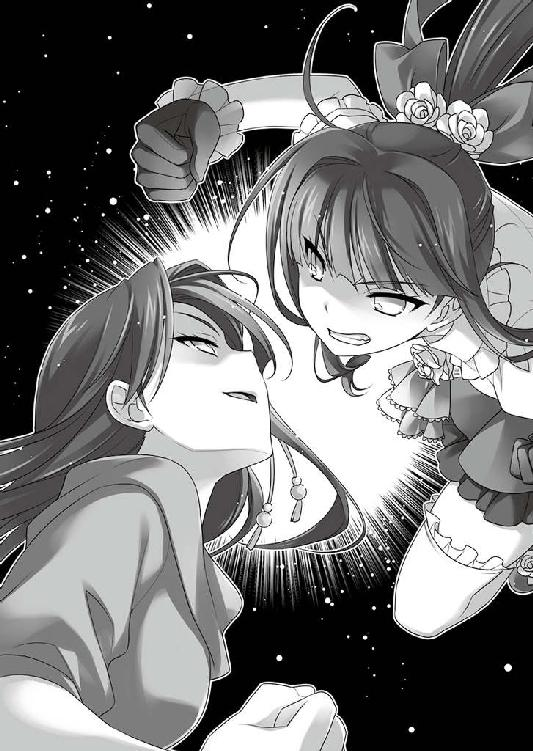
つまり、選択視が選ばれたのだ。
「まさか、タイムアップか？ 選ぶ暇もなかったのに？ 制限時間コンマ数秒で、勝手に選んだことになったとか？ そんなのアリ!?」
碧流と花々梨が、フィニッシュブローで互いの宿敵の顔面を見事に捉える、イイ感じの鈍い音がした。
そこから、三時間。ろくすっぽ事情を説明もせずにぶっ倒れ中の碧流の復活を待って、縁側でお茶を啜っているのである。徒歩二〇分圏内にコンビニの一軒もない田舎のお屋敷で出来ることといえば、他には思いつかない。
「中身を読む暇もないとか......ひっどい選択視だったな。どうせ著いてあったのは、姉さんたちの間に入って止める......とか、そんなのだろうけど」
一條の人生でも、制限時間の最短記録更新だ。
再会の様子から、碧流と花々梨は間違いなく旧知らしいが、一條が期待したような心温まる間柄ではなさそうだ。夫婦喧嘩は犬も食わぬと言う。女の子同士の真っ赤な友情に割って入るのは、己の死刑執行書にサインしに行くようなものに違いない。
「ほっとけよ。死んでないンだから、そのうち起きるって」
叔美は素っ気ない欠伸混じりで一條に用意された茶菓子を掴み、器用に片手で包みを解いて、二つまとめて口に放り込む。残りは三個。
「そうもいかないよ。早く事情を説明してくれないと。いきなり社員旅行なんて福利厚生を言い出した時から、変だとは思ってたけど」
「いつも変だろ、オマエの姉貴」
「そうだけど......いや、そうじゃなくて。この旅行は最初から別の目的があったんだ」
「それって、〝ひみつけっしゃ〟の陰謀ってヤツか？」
「また、妙な言葉を何処からか覚えてきたね。君の場合、冗談になってないけど」
秘密結社ならぬ謎の企業から派遣された「怪人」に付け狙われていたのが、少し前までの叔美の境遇だった。
何やら厄介なことになってきた、と難しい顔で腕を組む。
かつて、一條は約束をした。千里の家業を手伝うつもりになっていると、碧流も承知している。最初から説明すればいいのに、回りくどいやり方で、不意打ちみたいに自分をこの場所へ連れてきた理由の想像がつかない。
「言いにくいことだから？ それはどんな？ 『タタリ』が理由とは思えないし......」
「罠だ、罠。このままだと、おいしくいただかれるぞ」
「姉さんは、その手の後ろ暗いことをするタイプじゃないよ。根が素直だから。理由があるんだろう。信じてる」
一條と碧流の間柄は、単純には割り切れないものだ。それでも、記憶を失くしてからの自分を姉として支えてくれた。例の叔美の「事件」でも、命懸けで一條に力を貸してくれた。どれだけ感謝をしてもし足りない。
碧流と折り合いのよくない叔美は、拗ねたような白い横目で一條を睨んだ。
「いいけど......オマエって、やっぱその内、鍋料理の具材にされちゃうタイプだよな。変なとこで強情で、そのくせチョロい」
「......チョロいって言うな」
多少は自覚があって気にしてるので、口をへの字に曲げて撤回を要求したが無視された。
「それにしても......タイミングが悪い。せめて、あと十日後なら」
せっかく、考え抜いた『初めての夏休み』デビューを、台無しにする事態だけは回避したかった。それに、同じく初体験であろう叔美にも、夏の楽しさを知って貰いたい。
世の中とは、かくも巡り合わせが悪く出来ている。
「仕事だけならまだしも『訳アリ』となると、何をどうすれば本来の道筋に戻れるのか」
「オーナーだからって、ジューギョーインを好き勝手こき使いすぎだ、あの腐れオニチク。そのうち〝そしょー〟してやるから覚えてやがれ」
ギュッと拳を握り締める叔美のらしからぬ単語チョイスに、目を丸くする。
「ちょっと前まで、資本主義ナニそれ美味しいの──みたいな生活してたのに、進化が早すぎないか。そんな言葉、どこで覚えてくるんだ？ やっぱり、おカマダさん？」
「最近常連になった、ニュージーランド人のイーサンが多用してたぞ」
「〝丘の上の学校〟の人だっけ？ 実家の遺産相続で人間の性悪ナリと悟ったから、〝禅〟を求めて来日したハゲた英語講師の。こんな田舎でも国際化が進んでるんだね」
夏休み明けの教室で、いつの間にか茶髪に染めていた学友を眺める気分だった。『補習』という労役義務に勤しんでバイトを休んでいる間にも、世間は変わり続けている。
「アンブロシウスには色ンな客がきやがるからな。与太話聞いてるだけでも、おもしろい。それとあのオッサン、ハゲじゃなくて剃ってるだけだって」
「......ふーん」
微妙に寂しい気分で、少女の快活な横顔を眺める。
一條の知っていた叔美は、眩しいぐらいに輝いていた。
斜に構えているし性根は真っ直ぐだけど口は悪いし人見知りするし人間としては決して誉められたものではないが、『１４』というハンデを背負いながら、独りで俯くことなく生きてきた。格好よかったのだ。
しかし、暖かな都市で暮らす日々では、野生の獣も角が取れて丸くなる。利便性に溺れて、薄汚れた社会の部品になってしまう道を選んだのか。
「与太話に簡単に影響を受けちゃう叔美の将来が、僕はかなり心配だよ」
「こういうのは、『成長』っていうんだぜ、ボゥイ」
澄まし顔の叔美に言い負かされたのを誤魔化すように、無理矢理、話を元へ戻す。
「姉さん、そろそろ起きてきてもいいのに」
「このまま永眠ってのも、世の中が平和になっていいぞ。あ、でもそれだと給料払ってくれないから困るな」
「そんなに困るんですか。別にこのままでいいのでは」
「そうはいかないよ。訊きたいことが多過ぎる。花々梨さんのことだって、蹴りから入るとは思わなかった」
「やっぱ、最初は左ジャブからだよな。牽制で」
「速攻を仕掛けて息の根止めてしまった方が、ノープロブレムなのでは？」
「バトるところから離れなさい、問題だらけだから！ でも姉さん、電話で花々梨さんの名前を出した時は意外そうだったし、今回の『訳アリ』には関係ない、偶然の通りすがりなのか？ 海岸で遭った時はヤケに意味深だったから」
てっきり黒幕かと思っていたのだが。
「どっちにしたって、いきなり襲い掛かったのは、事情があるにしたって酷すぎる。後で言って聞かせないと」
「碧流なら、特に理由のない回し蹴りはアリなンじゃね？」
いたって本気顔の叔美のツッコミに、言い返せない。
姉さんだって、理由ぐらいは......と反論しようと思ったが、どっちにしても遣りかねないと思った時点でアウトだ。口を閉ざしたまま、そっと目を逸らして黙った。
「黙ンなよ、返事しろ、おい」
「いいだろ、静かにしてたい年頃なんだ」
「お兄さんもヤバい人なのでしょうか？」
「僕までの姉さんみたいに言わないように......って、さっきから誰!?」
いなかった筈の左隣に、授業参観の日の教室みたいに澄ました顔で、小さな女の子が腰掛けていた。
「──オマエ、起きてたのか」
「はい、元気です」
数時間前、タタリ（？）から掬い上げた少女である。
拾った状況が状況だけに、おかしな影響が出ているとマズいからと、病院や警察ではなくこの屋敷に連れてくるよう、電話で碧流が指示した。
一條が背負ってきたものの、意識が戻らなかったので、叔美と碧流に与えられた部屋、つまりぶっ倒れた碧流の横──正確には、碧流が横──に寝かされていたのだ。
「もう、歩けるんだね。大丈夫そうでよかったよ」
「憶えています、お兄さん。助けてくださって、ありがとうございます。アカハはもうダメになってしまうところでした」
アカハと名乗った少女は縁側から立ち上がると、大げさに頭を下げてお礼を告げた。タタリの影響が残っているのか、単に起き抜けだからか、ふらふらとして姿勢が覚束ない。
海岸で出逢った時と同じく、一條は束の間少女の顔立ちに見入ってしまった。彼女は叔美よりも小さかった。背丈も小さいが、見るからに年下だ。中学生か、どうかするともっと年下だろう。一條は、そんなコースにストライクゾーンはない。
またちょこんという仕草で、一條の左隣に座る。並んで腰掛けると、思った以上に小さい印象だった。手足のパーツの作りそのものがガラス細工のように繊細なのだ。
初見の時からずーっと、言葉にならない何かが喉の奥に溜まっている気がしてむず痒い。
──大きくなったら、もの凄い美人になりそう。
結局喉から出掛かったのは、そんなとりとめもない考えだった。
「あの......お兄さんの名前を教えてください」
年下の少女に神妙な顔でお願いされて、まだ名乗っていなかったのを思い出した。
「僕は、千里一條。えっと、こっちは、叔美。ここは......まあ、知り合いの家かな。君が海岸で倒れてたから、連れてきて休ませてた。身体は、何ともない？」
「ノープロブレムです。すみません、英語は通じないですね。はい、大丈夫です」
アカハは思い切り真面目な顔で律儀に言い直す。
どう見ても真剣で悪意はないが、もしかすると馬鹿にされているのだろうかと、ほんのちょっぴり悩んでしまった。
──それにしても、落ち着き過ぎじゃないか？
海岸で倒れ、目が覚めれば見知らぬ屋敷に連れ込まれていた。状況だけで一條の手が後ろに回りそうなのに、アカハはまるで世慣れた大人のような泰然とした物腰だ。単に、暢気過ぎるだけかもしれないが。
「ちょっと、叔美......って、何やってるんだ？」
「..................ナニって、別に」
叔美にも意見を訊ねてみようとしたところ、一條に隠れるようにして、小さくなっていた。この数ヶ月間、日夜『アンブロシウス』で働いているおかげか、人見知りは幾分か改善されていたが、アカハは苦手なタイプに直撃している。花々梨のような挑んでくる相手へは平気でぶつかっていくのに、明け透けな善意や好意に不慣れなのだ。
「..................まあ、いいけど」
本当は、よくない。『訳アリ』の碧流はぶっ倒れたまま。正体不明の花々梨も失神中。加えて、この少女。
一條の周りは、五里霧中の迷路のようだ。
なのに。
『本』は、自動的に現れることはない。
普段は頼まなくてもしゃしゃり出てくるクセに、こういう出来れば智恵を借りたい時には現れない。人生というパズルでは、ピッタリ嵌まるピースは、いつだって後から発見されるものなのだ。
「............ええと、アカハはどこから来たのかな？ この辺の人？ それとも観光客か何か？ 家族も心配してるだろうし、早めに連絡した方がいいよ」
アカハは寝起きすぐだからか、今一つ背筋が伸びず、ふらふらと頼りない。
「実は......どこから来たのか、よく憶えていないんです」
「......今、考え込んでなかった？ どう返事をしようとか、そういう感じの間で」
「記憶喪失とか、どうでしょうか。ドラマチックでイケてませんか？」
「それはダメ！ メッチャ、イケてない。全然これっぽっちもイケてません」
己が胸に手を当ててみれば、ああそうなんだーでは流せないし笑えない。
「ソレって、一條もそうだよな？ ちょくちょく転がってるものなのか？」
トンデモな会話に、絶賛警戒中の叔美が一條の小腹を突いて訊ねる。
「あのね、ちゃんと信号待って横断歩道渡るおカマダさんところのポチぐらいは頭使って欲しいな。記憶喪失が、そうポンポン転がってたらオカシくない？」
「ポ、ポチと一緒にするなっ！ アタシの方がおつかいは上手だぞ!! だって、ソイツが......」
「そういうことにしておくと、いい感じに話が済むと思いません？」
「済ませちゃダメだよ、人として！ 家族の人とか、本気で心配してるよ！ 可愛い娘がいなくなったら嘆き悲しむよ！ 夜が明けたら警察沙汰になってるとか、とっても困るんですけど！」
「でも......本当に憶えてないんです。ほら、女は過去を捨てるモノらしいですし」
「捨てちゃいけないものまで捨ててない!?」
察するに、素性を隠したくて誤魔化しているのか。いくら何でも雑過ぎるが。
とはいえ、一條や叔美への害意らしいものは感じない。コミュスキルの低い自分の眼力をどこまでアテにできるかはさておき。
「じー」
「そ、そんなに無垢な眸で見つめられても......」
今までの人生で受けたことのない、真っ直ぐすぎて刺さりそうな視線が、信じろと強引なプレッシャーをかけてくる。
もしもの為にと、アカハを寝かしつけた時に手荷物を確認しておいたが、携帯端末はおろか財布の類すら、一切合切何も所持していなかった。今日日の少女らしからぬ持ち物と振る舞いは、何らかの『訳アリ』なのだろう。
「──まあ、いいか」
「いいんですか？」
一條はあっさりと切り換えた。自分の周りには、灯に虫が集まるように『訳アリ』の人間ばかりがやってくる。叔美がそうだし、姉も、花々梨もだ。
（ま、人間じゃないのもいたな......）
自分がそうであるように、誰しもツッコまれたくない訳の一つや二つはある。
アカハに素性を隠したい事情があるなら、詰め寄ったところで大人しくゲロってくれるとは思えない。意外に強情そうな子だし。年下の女の子相手に、それ以上の強引な真似をするのは願い下げだった。
「ちょれー。イチジョーは、強情なクセに甘っちょろいよな」
また言われた。叔美の言う通り、チョロいのだ。自分でも判っている。もしかしたらアカハにも見透かされているのかもしれない。
普通の夏休みデビューが、光の速度で明後日の方角に遠ざかっていくような気がした。
「そうだね、えっと......倒れたショックで一時的に記憶が飛んだのかもしれない。訳アリ物件には、割と慣れっこだよ。今から動き回るのもアレだし、屋敷の人には説明しておくから、今夜は泊まっていくといいよ」
「......ありがとうございます。優しいですね、お兄さん」
形式的なやり取りを終えると、場の異様さに田舎独特なおもたさの加わった静寂が降りてきて、落ち着かない。
さて、どうしたものか......と思案したところで、ようやくと言っていい慌ただしさで、『本』が自動的に現れた。
２３１─■■■■
日本的な庭園に三人で座っても、会話が微妙に弾まない。さもありなん。要約すると技術不足。コミュニケーションとは、才能ではなく経験とスキルだ。
アカハという少女は、キミをしげしげと見つめている。興味があるのだろうか。このまま、シャイな少年として黙っていてもいいのだろうか。
食べ物で相手の興味を惹いてみるのなら／２１３─■■■■ へ行け
沈黙を守り続けるのなら／３８７─■■■■ へ行け
「もしかすると......『ようやく』だから『要約』？ 寒っ、凍死する！」
──ようやく出たのが、これなのか..................。
出て欲しいと思ってはみたものの、こんなことで出られても、正直困る。
本当に、人生はままならない。
「お兄さん、何ですか？」
「あ、その......そう！ 僕は、ちょっと独り言が多い人なので！」
「つまり、頭の病気だと」
「いや、そんなことは、これっぽっちも言ってない。独り言は病気じゃない。ちょっと友達が少ないだけだから！」
突っ込みながら思案した。こんなことでも「分岐点」だ。おろそかには出来ないし、シチュエーション的には、またしても......という気がする。
餌付けとは、コミュニケーションという分野における有効打なのか。「食べ物の恨み」という言葉が昔から伝わるように、人間心理と食は深遠な相関関係にある......のかもしれない。
少し考えてから、結局食べ損ねていた茶菓子を全て差し出した。
「これ、よかったら食べる？」
「ありがとうございます、お兄さん」
見ているだけで嬉しくなりそうな明け透けな笑顔に、こちらが赤面しそうになる。
すぐさま包み紙から取り出して囓ると、アカハは目を驚きに丸くした。
「......ふんわり甘いです！」
「そういうものだからね」
蒸し和菓子の一種である「ういろう」は、Ｔ県ではポピュラーな和菓子である。あっさりした甘さが特徴で、和三盆を使った高級なものもある。これは、一條も食べたことのある奥志麻市内某店の「奥志麻ういろ」で、ワザワザ取り寄せた物らしい。
小豆餡を練り込んであり、ういろう本来の淡い甘みと、口の中で溶け出す濃い餡の風味がたまらない。手間暇かけた老舗の仕事だ。
気に入ったのか、ハムスターみたいに次々とういろうを囓っていくアカハを横目に、叔美が重い腰を上げようとした。
「......アタシ、もう一回碧流の様子見てくる」
珍しく、おつかい役を自分から言い出した少女を、一條が呼び止めた。
「待って、僕が行くよ。叔美はアカハを見ていて」
「ふーン。ま、いいけどな」
「お兄さん、行ってらっしゃい」
全方位どこから見ても腹に一物ありますという顔の叔美とアカハのピュアスマイルに見送られながら、複雑な気分で古びた板張りの廊下を碧流のところへ向かった。
後のことを叔美に任せ......るのは、喉に引っ掛かった魚の骨を取ろうとして呑み込んだご飯が更に詰まったぐらいに引っ掛かっていたが、選択の余地はないだろう。選択したところで変わらない、とも言うが。
そう、さっき閉じた『本』は、再び押し黙ってしまった。
まるで、気配を殺して何かを窺っているかのように。
「どういうつもりだよ？ ういろうをあげるか、あげないかで人生が分岐するのに、これからやることでは左右されないのか？」
自分の行動がういろう数個分の重さしかないと言われてるみたいで、かなり切ない。
「そうじゃなくて、今はどうにもならない......の方が正解なのか」
何かが起きるから「分岐点」ではなく、此処で人生が切り替わるかもしれないから「人生の分岐点」なのだ。一條が偏差値超高めの大学を受験したとして、何をどうしても結果が「サクラチル」の一択なら、今のように現れないだろう。
「合格したいなら、それまでにちゃんと勉強しておかないと......という耳に痛い話か」
ゲゲボなジュースでも飲んだような顰めっ面。
頭の隅に何かがずーっと詰まっているような気がして、こめかみの辺りを軽く叩いた。そんなことで支えが落ちてきてくれたりはしないのだが。
屋敷は築何十年なのか想像のつかないほど古い造りだ。下手に歩くと大きな音を立ててしまいそうで、悪いことをした訳でもないのに抜き足差し足になる。
碧流の部屋までは、多少距離があった。屋内でこれだけ歩くという経験は、滅多に出来るものではない。
「──そこだ!!」
不意に足を止めて、振り向き様、庭の片隅で薄暗く茂っている竹林の物陰を射抜くようにビシリと指差す。よからぬ邪念を感じたからだ。
「流石は我が弟だ。以心伝心で私の気配がわかるとは」
指した方とは正反対の廊下の角から、教師に女子更衣室の覗きを見咎められた悪ガキみたいに居心地悪そうに碧流が現れた。
「いや、見抜いてないです！ 変な気の使い方しないでよ！ こっちが居心地悪いから！」
穴があったら入って消えてしまいたい気分で、差した指を慌てて背中に隠した。強張った空々しい笑みを浮かべるのが、とても胸に痛い。
「お、起きたんだね、ちょうど良かった！ 姉さんに訊きたいことがあるんだ！」
そして碧流は、切腹したい恥ずかしさの全部を誤魔化すように切り出した一條の前から、粗相を働いてお叱りを受けた野良猫の勢いで回れ右して走り去った。
「えっ......................................................逃げた？」
あまりの事態にたっぷり三〇秒、脳のハードディスクがフリーズしてから。
「ちょっと待って、姉さん!! 僕の話を訊いて!!」
後を追って走り出した。
安峰の屋敷の周囲は、山中と言ってもいいような私有地だ。ほんの二〇分も下れば住宅街なのに、ほとんど手つかずの銀杏の林や竹林が幾つもあった。公道ではないので街灯もなく、夜は本当に真っ暗になる。
「ね、姉さん、は、話、聞かせ......っ」
既に相当に薄暗い林の入口で、一條はやっとのことで碧流に追いついた。走り勝ったのではなく、相手が逃走を諦めたのだ。
無駄に高スペックな碧流は、陸上部員でもないのに長距離走のタイムが学校で上から片手の指に入ってしまう逸材だった。今も病み上がりの山岳トライアルとはいえ、すっかり息が上がっている一條を尻目に、姉は平然としている。
「............わかった、負けを認める。この辺りは崖もあって、日没後に走り回るのは危険なんだ。足を滑らせたら、私はともかく、お前が危ない。もう逃げないから、私の言い分も聞いてくれ」
猟師の罠に掛かりながら隙を窺う狡猾な狐のように、最後まで悪足掻きをするかと思えば、存外あっさりと観念した表情だ。
ただ、顔はそっぽを向くように左を向いたままだったが。
「姉、さん、ど......して、逃げた？」
「............怒られると思った」
「僕が怒りそうな心当たりはあるんだ？」
ようやく呼吸を整えてから追求すると、
「うううう、それは、その......」
低く哀しそうに唸る。全方位に頭の回る碧流だが、こと弟のことに関しては、全く隙だらけだ。
「ちゃんと説明してくれるなら怒らない。だから、こっちを向いて、僕の目を見て話してくれない？」
「............イヤだ、断固として拒否する」
懸命に猫なで声を心掛けて懐柔を計ったのに、妙に頑なだった。
「イヤだ、じゃなくて。横向いてたら話もできないよ。いいからこっちを──」
「やめろ、近寄るな、後悔するぞ！」
そっぽを向いたまま狼狽するという変態的なポージングでジタバタ抵抗する碧流を無理に向き直らせると、
「ぶははははは」
腹を抱えて吹き出してしまった。
碧流の、頑なに隠し通そうとしていた左目には、タヌキのような青痣が出来ていた。
言うまでもなく、花々梨とのクロスカウンターによる友情の証だ。
「おのれ、あのクソ女！ いつか必ず相応しい最後をくれてやる！」
「完全に自業自得だよ。それよりも、事情を説明して」
「これを......見られたくなかったんだ。これを見た時の、一條のショックを考えると」
「別に、ただ笑うだけで......いや、そっちじゃなくて、どうして事前に一言の相談もなく、僕たちを海に連れて来たのか、を」
姉が『目的』を黙っていたのを、本当に怒ってはいなかった。そうしなければならない理由があったのなら、甘んじて受け入れよう。自分に出来ることがあるならやろう。
一條は、本心からそう思っていた。時に周りを見ずに突っ走るのは、碧流の短所でもあり、長所でもある。この程度なら、進んで付き合うぐらいでないと今までのことと、釣り合いが取れない。
記憶を失くして一度は他人も同然になった弟に、碧流は己を省みず、沢山のことをしてくれた。
一條が本当に怒っていないのが伝わったのか、目を合わせた碧流は、今度こそ観念したらしく項垂れた。
「社員旅行と偽って、連れ出したのは悪かった」
「やっぱり偽ってたんだ」
ビクッと身体を竦めて、声が段々小さくなっていく碧流を見かねて、そこはこれ以上追求はするまいと思う。
「海岸で見たのが、捜していた『タタリ』でいいんだね？ アレをどうにかするのが、今回の千里の『仕事』？」
「電話で聞いた通りなら、おそらく『タタリ』だろう。流石、私。やはり見立てに間違いはなかった。お前も叔美も上手くやれた！ わはは」
いきなり態度を変えて、胸を張って高笑いする碧流の自画自賛はさておき。
「全然上手くやれた感はないんだけど......。危険を避けてアカハを助けたので精一杯だよ。アレを『どうにか』しろなんて言われても、見当もつかない......けど、やれって言うのなら、遣ってみる。でも、事前にもっと説明をしてくれても──」
「どうにかするのは、私も同行する。だから問題ないし、初日から『ソレ』を発見できたのなら、更に問題ない。早速、明日にも始末をつけるとしよう」
この期に及んで目が泳いで落ち着きのない姉の態度が、『タタリ』の件が、そもそもの「本題」ではないのだと物語っていた。
「それなら、ズバリ聞くけど、花々梨さんが口を滑らせた......ワザとかもだけど......『名跡の一件』ってなに？」
その一言に、碧流は目を見開いて如実に狼狽した。
「あの女、完全に業務上守秘義務違反だ。訴えてやるっ!!」
さっきの叔美の言い分とほとんど変わりなくて、ある意味微笑ましい。
「叔美と同じようなことを。実は、姉さんたち仲いいの？ それはいいとして......『名跡』が、今回の本題なんだね。社員旅行に託けたり『タタリ』の件を持ち出したのも、その話を誤魔化す為なんだ」
「ふふふ、鋭くなった、弟よ。ここまで成長するとは。もはや姉が語ることはない」
再び駆け出そうとする姉の襟首を捕まえる。
「いい感じの台詞で誤魔化せると思わないように。そろそろちゃんと説明してくれないと、僕も多少はご機嫌ナナメになるかもしれないよ」
この期に及んでの悪足掻きに、怖い顔を作ってみせる。流石に「マズい」と思ったのか、碧流は目を合わせず、如何にも素っ気なく自白し始めた。
「..................千里家の当主の座をお前に譲る」
寝耳に水すぎて、一條は内臓を吐き出しそうになった。
「ナニそれ。意味わかんないよ、姉さん」
真っ当に声が出るまで、一分以上掛かった。おまけに完全に棒読みだった。
沢山の色を一気に混ぜれば限りなく黒に近づくように、複雑すぎる感情で、咄嗟にどんな顔をすべきか判らなかった。
当主の座、が具体的に意味するものだって、正直よく知らない。どれだけ小さく見積もっても、これまで以上に重く重要なものだろう。
それを譲る、だと。
「言葉の通りだ。千里家に纏わる全ての権利、義務、責任と決定権、その一切合切を、だ」
オペラ歌手のように荘厳な身振り手振りで、決定の重大さを演出する碧流だったが、逆効果だ。ここへ来て、ようやくまともな驚きと衝撃が一條の脳に直撃した。
「そんな重要なこと、どうして本人に何の相談もなく決めちゃうんだよ!!」
「それは......その、私だって......寂しかったんだ......」
「浮気した奥さんの言い訳テンプレで誤魔化せる状況じゃないよ!?」
摘まみ食いを怒られた飼い犬のようにシュンとする姉の姿に罪悪感が鎌首をもたげたが、ここで引いたら有耶無耶で逃げられると闘志を奮い立たせた。
あるいは、弱みを見せるのが懐柔の手段なのかもしれない。短い人生経験とはいえ、三輪教諭を見ても、女性が怖い生き物だと思い知っている。
「千里家の先代、私やお前のお祖父さんが死んだ時、家を引き継いだのはお祖母様だ。しかし、千里の血を引かないお祖母様の相続に反対する長老は多かった。外部の人間が家督を得るのは、普通なら有り得ないからな。しかし、他に代わりはいなかったから、後継が成長するまでの名跡預かりという形で納得させた」
淡々と事情を語られる。
祖母のことに触れられた時、忘れていた傷口が痛むように胸が疼いた。
かつては知っていたのかもしれない。だが、今は憶えていないし、自分に関わることを説明されているという実感も湧かない。
「でも、お祖母さんも亡くなった」
「そう、去年の、あの時に、な。で、また誰が継ぐかで揉めた。お祖母様の件まで今更蒸し返す者もいて、面倒事は更に倍率ドンだ」
「今の当主って、姉さんなの？」
「詰まる処、私も『預かり』なんだよ。若いし、ついでに女だ。女は継げないという仕来りはないが、いい顔はされない。お祖母様の時に強引にしたのもあって、横やりも多かった。結局、後で長男に継がせるという『名目』をつけなければならなかった」
「その長男って..................」
自分のことだと言われなくても判るが、祖母の話以上に実感が湧いてこない。
しみじみと、過去と現在の自分が地続きになっていないのを思い知ったからこそ、最初に溢れてきたのは当惑だ。他人のような自分がしでかしたことの後始末を問われれば困ってしまうのと同じくらい、他人のような自分に与えられる筈の責任を、真っ当に引き受けられる気がしなかった。
一條の葛藤が伝わったのか、告白直後に速攻で振られた女学生のように、碧流は黙って落ち込んでいた。
ある意味で、これっぽっちも憶えてない自分は、幸福であったのだろう。
一條と碧流の両親は、あの事故のずっと以前に死んだと聞かされている。だから、碧流は千里という特殊な家系に纏わる重圧の全てを、本当は一條も背負う筈だったものを、今まで独りぼっちで支えなければならなかった筈だ。
先送りで一條に──という約束も、長老たち相手に若い碧流では、他に選択の余地がなかったに違いない。
人生には、進むしかない道もある。
もっと普通の家なら、普通の姉弟なら、気楽だったろうに。
「姉さんにとって、千里家の当主......名跡って、そんなに大事なんだ？」
碧流が千里の名に誇りを抱いているのは、常日頃から一條にも見て取れた。
下手をすれば、笑い飛ばすようにも聞こえかねない不用意な言動に、碧流は怒ることもなくゆっくりとかぶりを振った。
「古い名前だ。今時大した意味もない。でも、どんなものであれ信じている者がいる限り、一定の力を持つ。権威、権利、権能......そう簡単には扱えない」
一條も頷いた。記憶を失くしていても、世の中の仕組みくらいは判る。物事が一度動き出せば、動いていること──それそのものが力を持つ。複雑な利害、怪奇な力関係。車輪はどこかへぶつかるまで、決して止まることはない。
それはそれとして。
「簡単に扱えないものを、簡単に僕に渡そうとしてなかった？」
「......寂しかったんだ」
「もうテンプレの言い訳はいいから」
「......チッ」
「今、舌打ちしなかった!? したよね、姉さん!?」
「それよりも、これからの話だ」
碧流は、会社の命運を左右する重要な決定を下す代表取締役のように、堂々と背を向けた。端的に言うと、一條の追求から目を逸らそうとした。
「強引に話を変えたね。現実は変わらないんだよ」
「そう、現実は変わらない。お前が名跡を引き継ぐ以外には、な。私は所詮『預かり』だ。お前は、これから名跡を得て、堂々と夏休みデビューするんだ」
これまた引っ掛かる単語だった。
夏休みデビュー。
そのことによって、むしろ台無しになってしまう本来の夏休みデビューの、ガラガラと崩れていく断末魔が聞こえたように思う。
「どこで誰がどうやってデビューするんだよ！ こんなの、クラスメイトに告知もできない！」
「告知する友達、いるのか？」
嬉しそうな碧流の声に、今度は一條がビクッと身体を竦める羽目になった。
「..................それは、その」
正直、かなりいなくて、片手が必要か否かすれすれのところだが、それはそれとして。
「それよりも!!」
「いないのか.........そして.........イヤなのか？」
恐る恐るなのは、確かめるのが怖かったのだろう。
「..................しばらく、考えさせて欲しい」
本来なら、即答で引き受ける、と言うべきだった。
自分で出来ることならしたいと誓ったばかりだし、一條は言い切りたかった。
なのに、たっぷり一分半は考えても、どう応えるべきなのか、まとまらない。
掌を返したような自分に呆れてしまう。
敢えて冷静に考えるなら、千里の「仕事」を継ぐ決心をしたのと、名跡なるものまで引き継ぐのでは、意味合いも責任も、その後の人生の重みも全く別だ。展開が矢継ぎ早過ぎて、頭は半分もついていっていないというのが本音だった。
黒板前で悩む生徒を静観し続ける教師のように、『本』は自動的に現れない。
（今だって、出てもおかしくないのに......いや、そう考えるのが間違いか）
ここで選択視を示されたとしても、一條には選びようがない。迷っているのではなく、わからない。何をどうひっくり返しても。『本』が道を告げないのは当然だ。
「いいだろう。そんなに時間はないと思うが。それと、今度は私からだが......」
「何かな、改まって」
「あのアカハという娘、その......ウシオと雰囲気が似ている気がするが──」
方程式に代入すれば見事な解答が出るように、その一言が、一條の喉の奥に引っ掛かっていた支えを、脳裏に立ち篭めていた靄を、一瞬で吹き飛ばした。
「そう、だ！ ｃＳだったんだ。いやでもまさか、そんなのが海岸で倒れてるとか、ギャグ漫画みたいな展開があるわけないし」
「何をブツクサ言っている？」
「姉さん......あの子、ｃＳかもしれない」
そう仮定してみると、自分なりに納得できてしまう。
ｃＳとは、どこかの「悪い企業」が造り出したモノで、人間の形と人間以上の性能と人間にはない奇妙な力を持つ。以前現れた蜘蛛とコウモリのｃＳは、叔美を連れ去ろうと付け狙い、その騒動が基で結局......怪我のことは、もういいだろう。
「ひょっとしたらと思っていたが......念の為に訊ねるが、お前の根拠は？」
「『本』が文字化けを起こした。以前ｃＳが現れた時も同じ現象が。それが原因だと確信しているワケじゃないけど」
ふむ、と碧流は珍しく表情を曇らせて考え込んだ。
「まだお前に教えていなかったが、私は千里の名跡預かりだから、ヤツらに対して多少の知識がある。千里の家では、死すべき者の運命を覆すことで、ヤツらが生み出される......と伝わっている」
「具体的にはどういう......」
「奴らのベースは人間だ。本来死ぬべき人間で、現在世の中に在るべきではないものだ」
「......人間を基に造られた人ではないもの。有り得ないもの。この世界のバグだから、文字化けとして記述される？」
以前にも似たような推測を一條はした。それなりに筋は通っている気がする。
アカハがｃＳかどうか、突き詰めての確証はない。他の現象──タタリの影響でも文字化けは起きるかもしれない。
「だけど......僕は、あの娘がｃＳだと思う」
似ているからだ。外見ではなく、どこか曖昧で指の隙間から零れていく砂みたいな希薄な印象が、以前に出逢ったｃＳたちと。
「仮にｃＳだとすると、何の為にこんなとこ......」
それは極めつけの、最後のピースの一欠片だった。
「──叔美だ！」
後先考えず、碧流をその場に置いたまま、一條は走り出していた。
叔美は、ご機嫌斜めだった。
如何にもお屋敷といった造りの建物の庭に面した廊下を、ぷんぷんと頬を膨らませ、ドタドタと行儀悪く足を鳴らして歩く。
居候してやってる千里家は、一條たちの亡くなった祖母の代に立て替えて今風の建物になったそうなので、叔美の人生で初めて遭遇する本格的な和式建物は勝手が違った。
「たく、ロクでもねーこと考えてやがンのかな？」
お茶にも飽きたので、部屋まで戻ることにした。一條に任されてしまったので、仕方なくアカハも連れて行ったが、部屋では、意識が戻ったのか碧流の布団は空っぽだった。先に様子を見に来ている筈の一條の姿も見えない。
──二人だけで、どっかへ行きやがったのか？
だからどうした、というワケでもない。それなのに、集合場所から置いていかれたようで妙にムカついてしまう自分がいて、叔美は驚いた。
アカハに部屋で待っているように言いつけてから、二人を捜して屋敷を歩き回る。
心当たりとかは......特にない。
「イチジョーのヤツ、何か悩んでたな」
内心が顔に出易い少年ではないが、この数ヶ月間濃い関わり方をしたせいか、その程度なら、ぼんやりと伝わる。
何かスッキリしていない顔だった。他人には見えない『本』が見えるという一條は、叔美とも、他の誰とも違う視点で世の中を俯瞰する。その感覚の琴線に何かが触れた、ということなのか。
ここは、いつもの居場所とまるで違う。ここまでの成り行きも、土地の空気も、屋敷も、花々梨やアカハも、どれも怪しくて見通しが悪くて、ハッキリしないのがムカムカする。夜の山で迷子にでもなったような気分だ。
「──ま、いいか」
そう、ごちてから、結局は一條と同じことを言ってしまったのに気づく。
「たく、アタシも鈍っちまったもンだぜ。イチジョーのこと、チョロいって笑えねーな」
庭先でお辞儀している鹿威しの面白い動きを横目で眺めながら、愚痴に似た色合いの溜息を深呼吸のように大きく吐く。
チョロいだけではなかった。そもそも、思考を他人に割くなんて真似は、ここへ来るまで何年もした記憶がない。
「──って、誰かいやがるのか？」
視線のようなモノを感じたと思った。
母が死んでから野良猫紛いの暮らしを続けていたせいで、人の気配には敏感だ。生き残るコツであり、余計な「被害」を出さない方法でもある。『アンブロシウス』で暮らすようになるまで、彼女は関わった他人に、そのままの意味で『１４』の必然を上書きする巨大で無慈悲な印刷機だった。
振り返ると、廊下の角からのそのそと、さっき貰ってたういろうの残りを囓りながらアカハが出てきた。
「ついてきてたのかよ。ヤバいな。今まで気がつかなかったのは、マジで鈍ってるぞ、オイ。たく......こういうの、噂をすれば......なンだっけ、ハゲ？」
諺を教えた一條が聞いたら、哀しそうに首を横に振ったろう。叔美は日常生活に不便がない程度は日本語の会話をこなせるが、所詮は付け焼き刃だ。
「なにやってンだ、部屋で待ってろっていったろ」
「独りで待っているのは寂しいので、お兄さんを捜していました。この家は広くて、迷います。この食べ物、美味しいです。お兄さん、いい人です」
キラキラとピュアな眸を輝かせていた。一條への想定外の懐きっぷりに、「餌」の偉大さを改めて思い知る。
そういえば、一條が自分に手を出してきた時もキッカケは「クリームパン」だ。
（あれは、確かに美味かったなぁ）
クリームパンの味を想い出すと、どういうワケか、もの凄く胸がムカムカした。当たり散らしてやるべき相手は、悪運強く、この場にはいなかったが。
「まあ、迷うよな、ここは......」
相づちを打ちながら「言い訳」を値踏みし、溜息混じりに肩を落とす。自分より小っこい相手に警戒心を持ち続けられるほど、叔美は尖った少女ではなかった。
人を疑うのは苦手だ。実のところ、これまでの人生で他人にヒドい目に遭わされた経験は数える程しかない。周囲に「死」を振りまくのと引き替えに、叔美にはある種の「幸福」がもたらされ、抜き差しならない窮地に決して踏み込まないことになっている。己の用心深さの賜物だと信じていた世渡りは、蓋を開ければ、自分を取り巻く「幸運のシステム」が作り上げた、紙一重の運の良さだ。
「......あげませんよ」
よたよたと傍までやってきたアカハは、叔美に見つめられているのに気づいて、手元のういろうを後ろ手に隠した。横取りされるとでも思ったのか。
「いらねーから」
こういう場合にするべき会話を思いつかない。
開けっぴろげでアカハと二人っきりで並んでいると、何故かお尻の辺りがむず痒いような、おかしな気分になる。無防備という点では一條だって負けず劣らずだが、自分より背の低いのがいけない。『アンブロシウス』のお客にだって、叔美よりも小さくて年下の相手はいなかった。
人は、過去を記憶し作られていく。記憶の積み重ねが人生だ。
前例は記録されて、問題解決の指針になる。社交性皆無な生き方をしてきた叔美は、自分の言葉にできない曖昧な感情と不可解な相手と向き合うという気まずい状況を、舌先三寸で打倒する方法を知らない。それを必要とする生き方をしてこなかった。
「そうだ......風呂入るか？」
──人と人の関係は、答えの出ない選択問題を延々解き続けるようなものである。
叔美の人生は、これまで他者と断絶するのが唯一の行動指針だった。ある意味気楽だったが、奥志麻に来て全てが転回した。
他人を一顧だにせず、身勝手を振り回せれば楽ができただろう。しかし、叔美は育ちのワリには真っ直ぐで頭の良い少女だったのだ。
「とっても、おっきーです」
アカハは舌足らずというワケでもないのに、時々、妙な気分になりそうな甘く絡んだ声を出す。
屋敷の大きさからしても広すぎる間取りの脱衣所の床には、アカハが脱ぎ散らかした上着や下着が乱雑にバラ撒かれている。振る舞いは礼儀正しいのに、整頓すら出来ないらしい。アンバランスだ。
「この屋敷、昔は宿屋だったらしいぞ。だから、風呂もおっきーンだって」
対人関係に悩んだ叔美は、「人は裸の付き合いで分かり合える」という、おカマダさんがしたり顔で語った有り難い教えに縋り付いた。自分の中に前例がない以上、他人から借りてきたもので遣り繰りするのが手っ取り早い。溺れる者は藁でも罠でも掴むのだ。
裸──ならば、何処で行うのが適切か？
夏とはいえ、廊下で全裸になるのは抵抗がある。自分もそうだが、アカハも脱がさねばならない。既にその行為自体が障害であり壁だ。そして、裸同士の忌憚ない付き合いを経れば、人と人を分かつ高い断絶を越えた理解がやってくる......のかもしれない。
色々と考えあぐねた結果が先の台詞だった。ここの風呂はいつでも入れるのでどうぞご自由に、という屋敷の人の社交辞令をそのまま真に受けた結果だ。
「和風ホテルなのですか、最新モードのジャパン流なんですね」
この地に宿があったのは何十年も前のこと。浜が観光地として注目されるようになると、交通の便の悪さから、客足を海岸近くの新しいホテルに持っていかれた。元々地主の暇潰しに過ぎなかった宿稼業は、早々に畳まれてしまった。
「服は、そっちのカゴにキチンと入れとけ」
「はい」
お姉さんじみて細々と世話を焼く叔美に、アカハは素直過ぎるほど素直に従う。
手に馴染まない道具でも使っていく内に馴れていくように、ぎこちない会話でも重ねれば滑らかになっていく。
下着までおっぴろげに脱いで、クチャクチャにまとめて片付けたアカハの服をキレイに畳み直してやりながら、叔美は自分よりも数年分幼い身体をしげしげと確認した。
脂肪が薄く骨張って尖っているが、少女になりかけた蕾特有の丸っこさを備えていて、愛玩動物的な可愛らしさだ。
「......ふーん」
「なんですか、ジッと見つめて。同性の方から告白されるのは趣味じゃないので困ってしまいます」
「人を......えーと、ヘンタイ、みたいにいうな。アタシは男にも女にも興味ねー」
「それはそれで、やはり、ヘンタイさんなのではないですか？」
日本語は難しくて、微妙なニュアンスが上手く伝えられない。むう、と唸りながら自分もさっさと脱いでしまう。夏なので元々薄着だ。ブラウスを脱いで、パンツを脱いで、最後にブラを外す。
「あの、申し上げにくいのですが、跡がついています」
「碧流のヤツがこの......ブラ、だっけ？ 着けろってうっせーンだけど、キツいンだ」
「失礼ですが、サイズが合ってないのでは」
日本に来るまで、叔美はブラジャーを着けたことがなかった。碧流が一條に裂く愛情の数十分の一程度の熱意で適当に教えて適当に買い与えたせいで、それらに関する叔美の知識はどうにも半端だ。それでも最初は合っていたサイズが窮屈なのは、栄養と生活の安定で体型がパワーアップしたせいである。
「そうなの？ まあ、いいじゃン。着られれば。細かいことは気にすンな」
「気にした方がいいのは、叔美さんの方では......」
自分の肌が、軽く日に焼けて、くっきりと水着の跡がついているのがちょっとおかしい。アカハのビックリするほど白い肌と見比べる。海岸で倒れていたのに少しも日焼けしていない少女は、ハッキリと異常だった。
「その辺は、先に風呂入ってから考えるか」
脱いだせいか開放的になって、叔美はアカハを連れ、大胆に風呂場へ入る。
いわゆる、露天風呂が広がっていた。
自然の景観を切り取った岩風呂の情景に見入って、眸をパチクリさせる。入浴の習慣は日本に来てから身につけたものだ。野外で水浴びするのは慣れっ子だが、よく手入れされた露天風呂には、単なる風景と違い、人の手の入った庭園めいた厳粛さが漂っていた。
叔美の馴染みである千里家の風呂は、古風で古い木製だ。こんな岩風呂は初めてで、おっかなビックリで、湯に足の先をちょっぴり浸す。
「うっ、熱っちいから気をつけろよ」
「アカハ、あっちいのは苦手です。今日も、暑さで倒れてしまいました」
「海岸で、か？ アレは暑さのせいと違うだろ」
「暑さのせいです。超弱いですから。でも、優しいお兄さんに抱っこされて助けられてしまいました。こんなことをされてしまっては、もう仕方ありません」
「......こンなことって何だ？」
遠い目をしているアカハが、遠回しに何かを誤魔化そうとしているのか、それともマジ発言で、彼女の中で歴史が既に書き換わって想い出美化修正完了しているのか、叔美からは定かでなかった。
バシャーンっと湯の流れる音。湯煙の紗幕の向こうに先客の影があった。
「あら、一條さんのお付きの方と、あちらはお客人......ですね」
いつの間に目を覚ましていたのか、花々梨だ。当然裸で、しどけなく水に濡れたほっそりとした彼女を一瞥して、叔美は驚くよりもまず最初に、
「ぎゃははははははは」
「何がおかしいんですか!?」
「オマエの顔だよ。昔飼ってたのにそっくりだから」
左目の周りに、碧流のフィニッシュブローによる丸痣をつけた花々梨が、不機嫌そうに膨れた顔は下膨れたタヌキとよく似ていた。
「奥志麻は、タヌキの名産地と聞いていましたが、こんなところにも」
「た、たた、タヌ......ッッッ」
悪気もないが容赦もないアカハの言葉の暴力に、花々梨は打ちのめされた。一條の前では決して気位を崩さなかった彼女が、湯の中で後ろを向いて、すんすんと鼻を鳴らしていじける。
「案外打たれよえーな。でも、おもしろいから仕方ねーし」
笑いすぎたかと反省しつつ、軽く湯を被って無造作に湯船へ入る。
「アカハ、先に身体を洗うよう、命令......じゃなくて言いつけられています」
アカハの方は、とてとてと隅に陣取って備え付けの石鹸で身体を擦りだした。
若干不穏な単語が混じっていた気がするが、考えるのは後回しにする。
「彼女......目を覚まされたんですね。お元気そうで何よりです。それにしても、いつの間にか、随分と仲良くなられて」
もう立ち直ってやがる。回復力はプラナリヤ並である。
「オマエだって、ぶっ倒れてたのにいつの間にか再生してるな。しぶといヤツ」
「あ、あれは、碧流が悪いんです！ 親愛の挨拶をしようと思ったら──!!」
「碧流のヤツがコンマ五秒遅かったら、テメエがやってただろ」
先に手を出したのは碧流だが、あのコミュニケーションの様子では、そうでなくても花々梨から仕掛けていたのは疑いの余地がない。
「......碧流と知り合いなのか？」
「ちょっとした、です。折り合いはよくありませんけど」
「それは見てればわかる。ま、オマエがここに居るのは......都合いいかな」
花々梨とはほとんど初対面同然だが、上から目線がムカつく碧流と比べると話がし易かった。アカハと「裸の付き合い」をするつもりだったのに、とんだ予定変更だが、遅かれ早かれこっちもやるつもりだったのだから、同じである。
「ケンカでも売ってくるつもりなんですか？ 堪忍してくださいね、泥臭いのは苦手です。わたし、碧流と違って、蝶よ花よと過保護に育てられたので」
隣に並んで肩まで浸かりながら横目を送る叔美に、花々梨はニヤリと悪っぽい顔。言葉とは裏腹に、売られたら買いますよ、と書いてあった。
「場合によりけりだ。オマエ、どこの誰なンだよ。面倒だから吐け」
「......おためごかしもないなんて、もう少し情緒というものを......まあ、いいですけど。聞きたいことならわたしにもありますから。〝マレビト〟に施すのは古くから続く千里の仕事。叔美さん、でしたっけ？ あなたみたいな、どう見ても余所者が一條さんと一緒にいるのは理解できますけれど、わたしのところまで話が届いていないのは少し不自然かも、ですね」
「......そンなの、アタシの知ったこっちゃないぞ」
熱いぐらいの湯加減がちょっぴり冷えた気がした。
叔美の正体を、碧流は他の『ヒトデナシ』には伝えていなかった。危険すぎる。叔美は周囲に不幸を、『１４』の必然をもたらして反作用の幸福を蓄えるシステム。今は押さえ込まれているが、あくまでも一時的に、だ。
アンブロシウスの『力』がいつ及ばなくなるのか？
その時、『１４』の危険に晒されるのは誰なのか？
あの事件後、叔美がどうするかについて、一條や碧流と話し合った。その時、細かい事情については「隠し通す」という結論になったのだ。
叔美の正体が知れ渡れば、危険な時限爆弾を排除しようと余計な考えを巡らせる者が現れる可能性は、けして低くない。
一條が自分を庇ったのはわかる。しかし、碧流も同じく「ここだけのお話」にしてしまう案に賛成したのは、当事者の叔美には意外だった。
今は、ほんの少しだけ判る。千里碧流にとって、自分に科した千里の銘と役割は、それほどまでに重いのだ。叔美という、自分にとっても危険極まりない劇薬でも、名が担う「仕事」として面倒を見る。邪魔をしかねない周囲の「同類」たちを、欺くことさえ厭わない。
根性が座ってるのか？ いや、単にバカなのだろう。とっくにこの世にいない祖母を信じて、端から見れば馬鹿馬鹿しい意地を張っている。
逆さに振っても叔美が好意を抱きようのないオニチクオーナーだが、意地っ張りの度合いだけは、掛け値なしに尊敬してもいいと思う。
「アタシのことよりも、テメーの話しろ」
叔美は流れを無視して、スピードのあるビーンボールを投げた。腹の探り合いや空気を読む真似は、元孤独な流れ者にはできない。
「......説明が欲しいなら、碧流から聞けばいいでしょう」
「勝手に出てきてとやかく抜かしたヤツに、どういうつもりかって問い質してンだ。元々アタシは部外者だから、オマエらの都合とかルールとか知ったこっちゃねー」
何が琴線に触ったのか、花々梨は横を向いてタヌキ顔を誤魔化したまま、愉快そうな視線を叔美に投げて寄越した。
「部外者なら、放っておくのはどうですか？ わたしも、おかしな邪魔が入るかどうか考えないで済むのは楽ですし、説明の手間も省けます」
遠回しに余計な嘴を挟むなと釘を刺されても、はいそうですかとは頷けない。
「オマエが一條の敵なら、ソイツはほっとけねーンだ」
それは、偽りない叔美の本心だ。一條の前では口が裂けても言えないが、叔美にとって、それこそが譲れない一線だった。
欲しくても絶対に得られないと思っていたもの──一所に留まっていられる普通の暮らし──を叔美は手に入れることが出来た。たとえ、時間限定のものだとしても。
最初のキッカケである、手を差し出してきたあのバカに、まだ何もできていない。
そう、借りは返さなければならないだろう。全ては帳尻だ。『幸』と『不幸』が表裏一体であるように。労働と対価が仕事を回していくように。世の中は、帳尻が合うようになっている。傾いたままの天秤を放置しておく不義理を、叔美は我慢できない。
一見無関係なものが歯車のように精緻に組み合わさって動き続けているのだと、ようやく信じられるようになった、この数ヶ月の夢のような泡沫の時間にかけて。
「釣り合いはちゃンと取らないとな。さもないと、罰があるンだろ、この国じゃあ」
驚くよりも呆れたような顔をする花々梨が、ほんの一瞬不機嫌そうに眉を寄せたのを見逃さなかった。その理由までは見当もつかなかったが。
「あらあらあら、なんて甘ったるくて可愛らしい理由です」
「か、勘違いすンなよ！ そーいうンじゃねーからな！ 一宿一飯の恩義があるから......だから！」
「欠伸の出そうな、古くさい切り返し。照れるにしても、もっと捻ってくださいね」
「うっせー、黙れ！ 照れてないぞ、ないからな!!」
正確には、一宿一飯×数ヶ月分の借りだ。
『アンブロシウス』の常連である「部長さん」によると、奥志麻には一夜の恩義で家主に嫁を取らせたタヌキの昔話が残っているという。一晩の対価が嫁ならば、ざっと六〇倍だと、一体どうすればいいのか。暗算の苦手な叔美には、見当もつかない桁数だ。
「はいはい、わかりました。うふふふふ」
からかい混じりのニヤニヤ笑いがムカついた。が、これ以上口を滑らせたら逃げ出せない深い墓穴を掘ってしまう気がして、首を引っ込めた亀よろしく、水面に半分顔を沈めて次の反応を待つ。
「今回の一件を、部外者であるあなたに簡単に説明しますと、碧流はこれまで預かっていた千里の名跡を、一條さんに譲ると言い出したんです。それ自体はずっと以前から決まっていたこと。何も問題ありません。でも、一條さんは療養で一年以上も奥志麻を離れていましたから、瑕疵なく引き継げるのか、危ぶむ者は多い。わたしは、其れを見極める代表として、この地にやってきました」
「それって、〝いちゃもん〟つけるのが仕事か？」
「......少しは空気を読んでください。驚くとか、聞き入るとか」
せっかくタイミングを見計らって放った台詞とドヤ顔を全く一顧だにせずツッコまれた花々梨が、気分を害したように唇を尖らせる。
相手に日本人的な行間読みの慎ましさを要求するのは無理だと判断したのか、ほっそりした白いうなじの汗を頭に乗せていたタオルで優雅に拭きながら、言葉を続けた。
「いちゃもん......文句もつけますが、どちらかといえば審判をするんです。一條さんが名跡を継ぐに相応しいか否か。彼が器でないのなら当然......」
「イチジョーは人間だから、器じゃないぞ」
茶々じゃない真面目な発言の分だけ、やり取りの噛み合わなさに救いがなかった。すぐに花々梨の方が折れて、大げさに肩を落とす。
「......モノのわからないあなたに優しく噛み砕いて言い直すと、一條さんが名跡に相応しくないなら、碧流に何らかの形で責任を問うことになります。勿論、一條さん自身にも」
これまでの叔美は、「世界」は単純極まる三色で構成されていると信じてきた。自分と、運悪く同情して寄ってくるバカと、自分を傷つけようとする敵だ。同情にも、悪意にも、関わらなければいい、という点で対処法は同じだった。
しかし、三つの原色があれば、あらゆる色を作り出せるように、他人と触れられる距離にある世の中は、とてつもなく複雑な迷彩だ。あらゆる感情と敵と味方とが渾然となって、明確に色分けなどできっこない。白でも黒でもない入り交じって濁った灰色のグラデーションが、地平線まで見渡す限り続いている。
「......碧流のヤツはどうなってもいいけど、そのメイ......とか、か？ イチジョーは何も知らなくて、勝手に巻き込まれたンだろ」
記憶がない以上、一條が事情を知っている訳はない。
しかし、一條の記憶がない──という事実は、身近な周囲のほとんどにも、当然他の『ヒトデナシ』たちにも、隠されている。
叔美は聡い少女だ。家同士の力関係や複雑なやり取りやルールは、到底理解できなかったが、一條の状態は隠さなければならないものだと察し、これ以上余計なことは言うまいと心に決めた。
──オニチクオーナーめ、これは一つ貸しだかンな。
「物事には落としどころというものが必要です。今回の問題では、一條さんの意思がどうだったかは、関係がありません」
「スジが通ってないだろ、こンちくしょう！」
一條の意思も責任もないところで、勝手に何かが選択され、道が決められていく。
それが叔美には腹立たしかった。理不尽で、納得いかなくて、噛みついた。だが、その程度では、千里家の名跡の後ろにある形のない大きなものには髪の毛一筋分の疵を入れることも出来ないのだと、花々梨のとりつく島もない怜悧な横顔が語っている。
花々梨が勝ち誇った顔で見得を切ると、意図的に隠していた左の横顔が見えた。
「ぷっ、何度見ても、やっぱタヌキ......ぎゃわ！」
手加減一切なく吹き出す叔美の顔に、大量のお湯がぶちまけられた。
「失礼。顔に泡がついてましたから......きゃわ!!」
慌ててタオルで左側を押さえて隠しながら、しれりとした花々梨の態度。やられて黙って大人しくしているほど、叔美の人間は出来ていない。
「アタシは洗ってねー。よし決めた。テメエは敵認定だ！」
お返しは、古風な桶に並々汲んだ冷水だった。冷たさに可愛らしい悲鳴をあげてしまった花々梨は、コホンと咳払いしてから、悠揚とした余裕の態度で雫の落ちる前髪を払う。そして、キレた。
「死なせてやります」
「アタシは死なねーことになってンだよ」
唐突にゴングの鳴った場外乱闘を余所に、ようやく全身を洗い終えたアカハは、騒動を避け、長閑に肩まで浸かって銘泉を堪能していた。
「日本のお風呂、少しだけど気に入りました」
郷に入っては、と花々梨の真似をしたのか、四つ折りにしたタオルを乗せて湯船に入ったアカハの頭上を、桶や石鹸やその他諸々の弾丸が飛び交った。
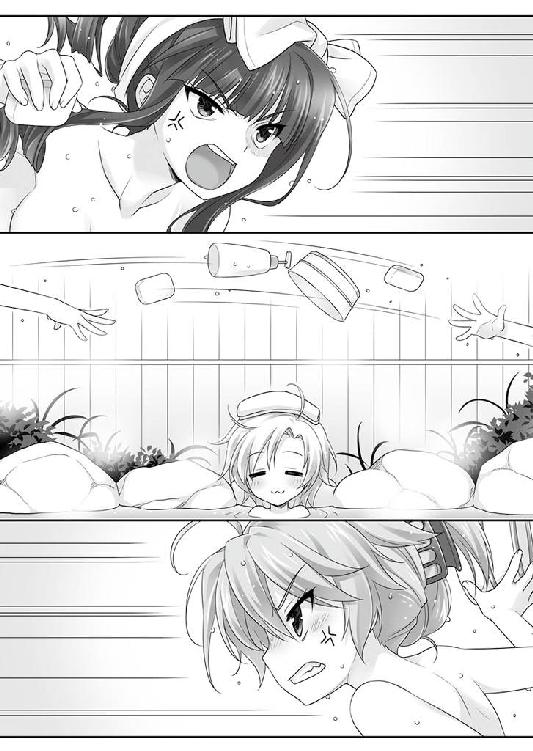
結果的に、勝負は水入りだった。
「お、お風呂場だけに......水入りとは......」
「なに、ワケのわかンねーこと、いって、やがン......」
死闘を繰り広げるという選択肢を選んだ花々梨と叔美は、どちらも決め手に欠け、のぼせてＷノックアウトしたところを、アカハによって二人揃ってゴミの日に一纏めにする粗大ゴミのように脱衣所へ転がされている。以前は宿泊施設だった名残か、やたらと大きな姿見の前で、タオルを巻いた際どい恰好なのに色気皆無のアカハが、マイペースに髪にドライヤーを当てていた。
「たく、ロクでもねーヤツ......」
「......まだ......減らず口を......」
「......オマエじゃねーよ。イチジョーは知ってやがンのかな」
叔美は聞こえないように口の中で呟く。吐き捨てたい気分になったが、そうもいかない。自分よりも小さく幼く見えるアカハが、倒れた女二人を苦もなく運び出した異様な力は、一條の助けた少女の正体を窺わせるのに十分過ぎた。
──まさかな......あんな連中が、他にもいるのかよ。
真っ当な人間とは思えない異常な力。希薄な気配。改めて言われると、思い当たる節がありすぎる。
「さっき、変な顔してたのは、そういうことか。たく、ヤバい橋渡って助けた相手がそれこそロクデナシだなンて、アイツのツキのなさは、アタシを拾うだけはあるよな」
独りお空に向かってブツブツ零しながら、のぼせた身体で壁を支えに立ち上がる。床にだらしなくぐてりと倒れたままの花々梨が、奇行を訝しんで目を細めていたが、どうでもよかった。
まだ確証はなかったが、懸念がビンゴなら、事態は切迫している。
ｃＳの目的は、やはり自分なのか？
数ヶ月前、叔美たちはｃＳを向こうに回して九死に一生を得た。同じ幸運を、叔美以外の者たちは拾うことが出来るのか？
また一條たちを巻き込んでしまわない内に、逃げ出した方が正解ではないのか？
縺れた思考の糸がそこに差し掛かって、叔美は愕然とした。
──今更、出ていけンのか？
誰にも聞こえない自分の胸中の真っ暗闇に、独り佇んで自問する。
今すぐ奥志麻を、『アンブロシウス』を去る選択と対峙してみれば、張り裂けそうなほど胸が痛んだ。また、以前のような生活に、誰とも触れ合わない独りぼっちの道を歩いていくのは寂しすぎる。
──何も知らなければ良かったのに。
なまじ、「そうではない」春の暖かさを味わってしまった分、かつての冬がどれほど厳しかったのかを思い知らされた。
独りに戻りたくないと、咄嗟に考えてしまう自分を弱いと思う。
「あのバカは......どうするンだろう？ いや、決まってるか」
千里一條は振り向かない。過去や人の言い分など戒めにせず、また叔美を助けようとするだろう。
呪われた自分への忌ま忌ましさと、一條の頭の悪さへの苛立ちに、のぼせているのも忘れて腹が立った。怒りで頭に血が上ったせいか、クラリと目が眩んだ。
咄嗟に両手を広げてバランスを取り、危うく持ち直したところで、蹴破るような大音響で乱暴に脱衣所の扉が開け放たれる。
アカハがいよいよ正体を現し、何か仕掛けてきたのか!?
「叔美、大丈夫か!? まだ何も起こってな──」
警戒して硬直する叔美を嘲うかのように、ばばーんと開かれた扉から、息を切らせて一條が飛び込んできた。
そして。
うら若き乙女の絹を裂くような、一拍遅れて一條の憐れな悲鳴が、脱衣場に谺した。
危機的状況の大半は、必然として現れる。
大きな事故が発生する前には、幾つかの中くらいの事故と、無数の小さなミスが隠れており、サインを極小さな内に気づけるか否かが、危険を迂回する為に必要な才能だ。
一條は、サインの数々を拾い上げ、アカハがｃＳだと結論づけた。
ならば目的は叔美に違いないと、慌てて屋敷までとって返し、家の者に今居る場所を聞き出し、そこに駆けつけ、扉を開け部屋に躍り込んだのだが、そこには。
タオルを巻いて鏡の前で髪を整えているアカハと、
脱衣所の真ん中で全裸で大の字ポーズを決めている叔美と、
床の上に倒された雑魚キャラのように全裸で転がっている花々梨の姿があった。
「ごめんなさい。どうかお許し下さい。僕が悪うございました」
庭に面した縁側で、小さくなれるだけなって土下座敢行していた。一條は、サインを読み解く過程でミスし、致命的な失敗をしでかしてしまったのである。
アルカトラズ刑務所の看守のように血も涙もない叔美が、マイナス二〇〇度の眼差しで見下ろしている。とっくに服を着終えた彼女の後ろには、アカハと花々梨と、おまけに一緒に帰ってきた碧流まで揃って、死刑確定の囚人をいつ執行すべきか、と不穏な囁きを交わしていた。何故か、何の被害も被っていない碧流の覇気が一番怖い。どうして？
刑吏の叔美『様』が、近くの座敷に転がっていた新聞紙を丸めた警棒を掌に打ち付ける。間の抜けた音が響き渡る度に、一條は『愛』について深く考えた。
世間とは、不公平だ。落ちた者はより沈み、成功した者は手に入れた力を元手に更に大きく浮上する。プラスにもマイナスにも、掛け金は無限に膨れ上がっていく。だから、低い位置から這い上がるのは茨の道であり、そしてタチの悪い不幸は何処にでも転がっているのだ。誰でも何処でも、些細と思える選択で、人の一生は棒に振られてしまいかねない。
荒れ野のように過酷な世間を生き抜くには、小さな灯火、『愛』と『寛容』こそが大切である。我々は互いに許し合う心を持たねばならない。
「......と思ったりするワケですが、どうでしょうか？」
脱衣所に突貫した件の謝罪と弁明と人生の真理について告解する一條を見下ろす叔美の眼は、どこまでもいっても冷酷非情を形にしたものだった。
「見たろ」
二昔前のパソコンのビープ音で作った合成音声みたいな、酷い棒読みの指摘がキツい。
「み、見てな......いえ、ちょっと......そう、ほんのちょっと、ちょっとだけだから!! ちょっとしか見てないから......もう忘れた、全部忘れました！」
「忘れやがったのか!?」
「どうしてそこに怒るんだよ!? ポイント違ってない!?」
「女の裸と人生と、どっちが重いと思ってやがンだ！」
それはやっぱり人生ですよね、とは思ったが、素直に答えた場合、明日の朝日を拝めなくなりそうなので、ひたすら五体投地で平伏した。
──焦ったのが、全ての過ちだった。
叔美とアカハを二人っきりにした危機的状況に気づいて駆け戻る途中、『本』が自動的に現れたのだ。
２４５─■■■■
既に日が暮れて暗い上に、足場も悪い凸凹道。細心の注意が必要だ。キミは、その暗い道を、レミングめいた全力疾走で走る。
ところで、苦しい時の神頼みという言葉を知っているだろうか。窮地では手助けを願うのが人間の性ってヤツだが、安易な期待ばかりするのはいかがなものか。やはり、自分でやってみてからでないと、神様だってイヤな気分になってしまう。そうだろう？
妙に静かだと思っていたのに、現れたら現れたで文面が悪い。
思わず逸る心で確認した文末の選択視は、「落ち着いて戻る／３３９─■■■■」と「全速力で戻る／６１８─■■■■」の二択。
この時点では、不幸を回避できた筈だ。なのに焦っていた一條は、ゆっくりと文面を検討も咀嚼もせず、叔美たちの居るのがお風呂場なのだと気づかずに突っ走ってしまった。
そして、必然の結果として今へ至る。
平伏のポーズを決めたまま、ちらりと女たちの様子を窺ってみると、平然としているアカハと、さめざめと嘘泣きしながら冷たい視線のナイフを投げつけてくる花々梨、突き刺さる殺意がとても血の繋がった者から放たれているとは思えない碧流。
「ど......どうか許して下さい」
孤立無援の完全包囲。無条件全面降伏で慈悲を乞う以外の選択を失った一條の懇願を、叔美はニヤリと首切り役人のように嗤った。
つるし上げ裁判の後で、肩身の狭い夕食も終わり、一條は廊下に独りポツンと残された。
晴天だから朗々と眩しいばかりの月が出ている。今夜は、熱のない光がクスクスと笑っているような気がして仕方ない。
叔美と花々梨のあられもない所を堪能してしまった罰として、部屋から追い出され、一條は廊下で寝ることになってしまった。碧流も庇ってくれなかった。叔美はともかく、花々梨のナニかを目撃してしまったことに大層ご立腹なのだ。
「......生きてるだけ儲けものかな。一応、叔美も無事だったし」
騒ぎのせいで、姉に花々梨との関係について、問い質す暇がなかった。旧知の間柄で、良好な関係ではないとは予想できるので、取り急ぎ追求する必要はなかったが。
「叔美には、姉さんが上手く伝えてくれるとは思うけど」
アカハに気をつけろと連絡したところで、どうなるものでもないのが、一條たちの置かれた現実だ。
「アカハが本当にｃＳで暴れ出したとしたら──さて、どうやって止める？ 体当たり？ ダメだな、コウモリ男にも踏み潰されて終わったし」
以前、『本』から教えられた「コウモリ男との戦力差」は、まともに立ち向かえる水準ではなかったのを思い出して、ゲッソリした。
女たちも悪鬼ではなかったので、優しくも掛け布団は寄越してくれた。季節も夏。蚊に食われるのは気になるが、普通に眠る分には問題ない。
「寝ずの番でもした方がいいのか。むむ......どうせ頭を酷使するなら、もっと普通の悩みで使いたいよ！ 慎ましい願いの筈なのに......夏休みを謳歌しようという計画は、こうして一歩一歩遠ざかっていくんだね」
集中すべく薄い夏用布団にくるまって目を閉じてみたが、さっき見たなだらかな裸の背中とか、服の上からとはひと味違うくびれた腰とか、白く小ぶりなのに柔らかそうで当分記憶から消えそうにないお尻とかが、目蓋の裏に真夏の太陽の如く強烈に輝いて、消えてくれない。
「お、女の子って、あんなに......違う、そうじゃなくて!!」
「お兄さん、起きていますか？」
「おおう!!!」
吠えた拍子に呼び掛けられて、危うく飛び上がりかけた。噂をすれば影である。気配も跫音もなかったのに、いつの間にか即席寝床の枕元にアカハの姿があった。
「アカハ......その......お風呂では、ゴメン」
この難しい状況をもたらした大元の一つに、どうやって話題を振るべきか、咄嗟のことにパニくって、しどろもどろに詫びだけを口にする。
「とっても恥ずかしかったのです。あんな姿を見られてしまったら、もう、ダメでした。責任を取って貰わないと」
──それって、どんな責任!?
男としての矜持が逃げてはならないと咆哮するが、これはいくら何でも無体な言い分ではないですか裁判長と脳内弁護士が発言する程度には、まだ冷静さが残っていた。
「人生を決めちゃう選択は、もうちょっとよく考えてした方がいいと思うな！」
「アカハ、誰かに助けて貰うのは初体験でした。ロストバージンというヤツですね」
「いや、全然違うと思うけど！」
唐突に、何の根拠もないのに。
彼女の横顔が、とても薄っぺらく見えたのだ。
──アカハの素っ気ない言葉が、どうしようもなく真実ではないのか。
そう思えてしまった。
手を差し伸べられたこともないのだと、切なすぎる告白を淡々と口にする少女がどんな生き方をしてきたのか、彼女の見た目の歳よりも短い人生経験しかない一條には、想像するのも困難だ。
それ以上の言葉に詰まって黙り込むと、首筋にじわりと汗を掻く。
縁側から臨める柔らかい月は、やや中天から傾いていた。白く熱のない夜だが、昼間の夏日の熱が残って蒸し暑い。
「冗談ですよ」
「......うん」
台詞の軽さとは裏腹な、踏み込むのを拒む冷たい拒絶に、身動きもできなくなる。
──アカハがｃＳだとしたら。
狙いは、やはり叔美なのか。一條のハレンチ行為を断罪して部屋に戻る直前、叔美はアカハへ、さりげなくも鋭い目つきを投げつけた。叔美も、何らかの気配を察しているのか。
ひとまずは何事も起こっていない。先の件以来、『本』は自動的に現れてこない。
謎は深まる一方だ。叔美が狙いなら、一條が屋敷に戻る前に、連れ去る機会はあった。ぶっちゃけると、一條たちやこの屋敷の人間が何人いたところで、ｃＳの力押しを阻止するのは至難の業だ。
しかし、一條と碧流が揃っていれば、百に一か二程度なら勝ち目が出るだろう。数多くの助けと幸運を得た上ではあったが、千里の『力』は実際に一度ｃＳを退けた。連中が前回の失敗を教訓にしているのなら、一條たちの不在を突くのが理に適っている。
「こういうのも、初めてでした」
「何が？ 古風な日本風のお風呂？ それとも、今日の夕食の天ぷら？」
いい加減な相づちを打ちながら、アカハの一挙一動を見落とさないように目を凝らす。
「確かに、あのお風呂もあの料理も初めてでした」
「おめでとう。君は一つ大人の階段を登ったね。ここのお風呂も晩ご飯も中々よかった......かもしれないし、そうでないかもしれない」
「お兄さん、どうして、自信なさげなのですか」
「............色々と『訳アリ』なんだ」
食事には花々梨を含めて全員が顔を揃えてしまったので、彼女に火花を散らす姉＆叔美とに挟まれて（実際、一條の席は二人の間だった）胃が痛かったから、ではなかった。
記憶がないから、比較がしにくいのだ。
千里家の食事は碧流が作る。最近では姉の負担が大きいと、一條も叔美も手伝うようにしている。『アンブロシウス』の作業で時間を取られるからか、献立はもっぱら手軽なものばかり。週に一度はカレーが出るのが、千里家の食卓だ。
昔の大店では、若い手代に、最初の半年なり一年は「本物」にしか触らせなかったらしい。何をもって「本物」と呼ぶのか。一言では説明できない概念を身体に覚えさせるのだ。「本物」を審美できれば、自然と「偽物」もわかる道理である。
本物も偽物も区別できる基準を持たない一條には、今日の夕食はとても美味しかった、という程度の味気ない感想しか出てこない。
「さっき、それらしいことを言っていた気もします。アカハも『訳アリ』ですし、人それぞれですね」
明らかに年下のアカハは、時折ヤケに大人びた言葉を口にした。それが浮ついて見えないのが、胸の奥を余計にざわつかせる。
「お風呂に入って、晩ご飯を食べて、みんな団らんで、庭に出て......そういう普通のことが初めてでした」
「いや、ここはとても......」
普通の家に温泉はないし、夕食に懐石もどきが出されたりもしない。だいたい、この家は千里の同類で『ヒトデナシ』だ。世間の基準からすると、「普通」の斜め向こう側にいるだろう。
物思いに耽っているアカハ相手に、それをツッコまない分別はあったが、肘杖に顎を乗せて考え込んでしまった。
「普通......か」
普通とは、何か。
普通なら、『本』は見えないし、人生の分岐点で選択視を迫られたりもしないだろう。
良い悪いではなく、それが「普通」だ。
普通ならしなくていい苦労を背負い込んでしまっているのが、今の一條である。
天秤の両側を十分によく知らなければ、物事の比較はできない。
一條は「普通」を憶えていないから、事あるごとに現れて喧しい『本』と付き合わずに済むのが「普通か？」と漠然と夢想するのが精々だ。
なのに、到底普通じゃないこんな家での、ほんの数時間の一幕を、小さな少女は生まれて初めての「普通」だという。
「......なんだろう、これ。うまく言えない」
モヤモヤする塊が胸に呑み下し損ねたゲゲボなジュースのように残った。
やはり、アカハはｃＳなのだろう。
だとすれば、叔美はどうして、今も無事なのか。
解らないことだらけだが、月に呟くようなアカハの吐露が、自分たちの隙を窺う為の嘘だとは思えなかった。
きっと、この期に及んで、無垢な笑顔を見せてくれる小さな少女が、敵だと信じたくなかったのだ。
「あのさ......その......もしかしてだけど──」
なけなしの勇気を奮って、敢えて引き返せない一線を越えようとしたタイミングで、少女が踵を返して背を向けた。出鼻をくじかれて、出掛かった言葉を呑み込む。
「明日、保護者の人が来るので、アカハは帰ります」
大人びた言い様は無色透明で、感情の色が付いていない。
回り続けるカムとシャフトの軋みに似た呟きに、理由もなく胸を締め付けられる自分を不思議に思う。
「......何か思い出したんだ？」
「はい、湯船に浸かって思い出しました。実は、アカハの方が先に来てしまって、保護者の人が到着してないから何処にも行けなくて海岸にいたら、暑くて倒れてしまったんです。お兄さん、助けてくれて、ありがとうございます。甘いお菓子もおいしかった」
抑揚のない淡々としたお礼も、彼女の偽らざる本心なのだと思いたかった。
一條が出逢ったｃＳは、知識と経験がアンバランスなので、反応は驚くほど素直だったのだ。お世辞にも詳しいとは言えないが、知っている限り、露骨な嘘を吐いた場面は見たことがない。
「明日、朝の内に出て......」
アカハがそう告げるや、『本』が自動的に一條の前に姿を現した。
神託を告げるように、厳かに。
２７９─■■■■
話を終えて、アカハは沈黙する。凍り付いた弾劾のように頑な背中との間には、大きく広い川が流れているのを察した。敢えて、この川を渡ろうというのなら、キミは一体どういった言葉を掛けるべきだろうか。
自分の言葉を考えるには、相手の言葉もよく吟味しなければならない。コミュニケーションは、相手ありきなのだから。
それと、キミは憶えているか？ 自分の部屋に引っ込む前に碧流が言っていたのを。忘れてはいないよな？ タタリの始末についてだ。「昼前に出発する」と碧流は言ってただろ。
つまり、キミは朝方は好きな行動ができる。有限な時間を有効に使うには、予定を立てればいい。さて、どうするかを考えてみよう。
ギリギリまで眠って体力回復を図るなら／１５２─■■■■ へ行け
碧流からタタリのことを詳しく聞こうと思うなら／３３１─■■■■ へ行け
叔美が心配だ。今夜は寝ずの番をしようと思うのであれば、キミの行くべきは／２３７─■■■■だ
明日の朝、アカハを送っていくのであれば／４３９─■■■■ へ行け
ここで選んだ後で気が変わっても、心配は無用だ。明日の朝出発する前に、もう一度選択の機会が与えられるからな。
ひとしきりの文面が記述された後、ＰＧの最後に選択視が著かれている。
「............今回は、サービスいいな」
もう一回機会があると宣告しているのは、それだけ重要な選択だからだろうか。
〈相手の言葉もよく吟味しなければ──〉
アカハは「保護者が来る」と言っていた。送っていくＰＧは、やや高め。多少の危険がある。当然ながら、合流する「保護者」と面と向かってしまう展開になる可能性が高い。
ｃＳの保護者。叔美を狙っている「黒幕」の一人に違いない。前の事件の背後で糸を引いていたのも、その人物であるかもしれない。
「この先は深みに嵌まる分岐点......いや、そう考えるのは違うな」
アカハに聞こえないよう、小声で自問する。常人よりもずっと優れたｃＳの耳になら入ってしまうかもしれないが、まあいい。独り言の多い変なお兄さんと思われたところで、ちょっぴり寂しいだけで平気だ。泣ける。
（これは、僕の準備が出来た、ってことだ）
選択視は、未来を読み取るのではなく、あくまでも「必然」を指し示すだけ。
必然を招く「条件」が揃った時に、選択視は現れる。
これまでの千里一條の「選択」が、この選択視を招き寄せた。
「現れたってことは、今の僕で、先の結果を変えられる」
本当にそう解釈していいのか？ あまりに重い疑問は、敢えて呑み込む。
背を向けたアカハは、月を浴びて青白く染まる。言うべきことは言い終えた筈なのに、名残を惜しんでいるように立ち去らず、佇んでいた。
ほんの二メートルとない、遠すぎる距離。拒絶の壁があって、手を伸ばしても触れられない代わりに、一條はグッと右の拳を握り締めて、気合いを入れ直す。
──どこまで、やれる？
相手と対峙する選択をしたとして、自分や家族を守る為に、叔美を自由にする為に。
手持ちのカードはほとんどないし、相手の手の内もわからないが、決断し、選択できることは、無数ではなくても沢山ある筈だ。
前回のような、成功とも失敗とも判らない曖昧なグレー決着はご免だ。
人生の道は、どんなものでも、次のどこかへ繋がっている。
選択とは、ここにはまだ著かれていない、いつか来るべき未来の瞬間への一歩を踏み出すということだ。
同時に、選び取らなければならない事態の重さに、胃の下辺りが底冷えした。
叔美を狙った相手は「企業」だ。経済という歯車を利益という油で動かす巨大機械。怒りに任せて小っぽけな拳でぶん殴ったところで、膨大な質量と速度は止められない。
それでも、やってやろうと思った。
「......たく、我ながらチョロくて弱っちいクセに高望みし過ぎだ」
ちょっとステータス欄にレア能力が追加されているが、一條は一介の高校生でしかない。
「こんな普通じゃない悩みを山ほど抱え込んで、どうするつもりなんだか」
──散々迷って考えた末に、選択をした。
翌日は、目の覚めるような快晴だった。昨日から引き続いて、季節外れの真夏がぶり返して猛威を振るっている。
「......もう少しか」
噂の保護者と落ち合う場所まで、距離にして徒歩で三〇分。
途中の自販機で買ったドリンク片手に、一條とアカハは周りには民家もロクにない山道に近い国道の端を、目的地目指してトボトボと歩いていた。アカハにも土地勘はないので、一條のスマホでネットから持ってきた地図が頼りだ。
屋敷を出た時には、碧流と叔美は『タタリ』を始末する準備に慌ただしかった。予定通りなら、海岸に向かってもう出発している頃だろう。
今朝方、アカハを送ってから合流するつもりだと伝えると、二人は噛みつきそうな形相で異口同音にピシャリと言い放った。
「「今すぐ口から脳を引きずり出すぞ」」
事あるごとに角突き合う関係なのに、こんな時だけは息ピッタリな女二人のブロックをこっそり抜け出してきた一條だが、後でどんな目に遭わされるかを思うと頬がこける。
二人が怒るのも無理はない。アカハがｃＳで保護者が黒幕なら、カモがネギしょった上にスダチぽん酢持参で鍋に飛び込みに行くようなもの。
その上、相手の素性も目的も判らない今の一條には、「こうしよう」という明確な計画の見通しを立てようもなかった。ことの発端かもしれない「保護者」の顔を一目見てやろう、という思惑はあったが。
ぶちまけてしまえば、年下の女の子を、一人で行かせるのが心配だったのだ。
「我ながら、チョロいな」
今朝から二度、『本』は自動的に現れている。
一度目は出発直前。前夜と同じく、「アカハを送っていく」選択視が再度著かれていたので、それを選び、『本』を閉じて出発した。
二度目は、出発してしばらく歩いた後。「飲み物を買っていくか？」と選択視を示してきた。こちらで「買う／１２４─■■■■」を選んで、自分とアカハの二人分を買うと、アイテム欄に『ドリンク』が記述された。ワザワザ選択視として現れるぐらいだし、何かの役に立つのだろうとその時は喜んでから、『本』を閉じた。
その中身も、既に半分になっている。
「夏ももう終わりなのに、暑すぎ......」
聞き慣れた蝉の声が、まだ五月雨のように喧しい。夏の日差しの中を一歩ごとに体力が汗になって揮発してしまう気がした。
「......田舎の土地はただでさえ交通の便が悪いから、車ないと死ねるね。学生の身分で持ってるワケないけど」
この土地は奥志麻と比べても、二段階は田舎だ。人口二〇万余の奥志麻は、療養で過ごした都会ほどではないが、ギリギリ都市と呼べる規模を有していたと実感する。
「......もう少しですよ、きっと」
気休めのように漏らすアカハの調子は、悪そうだった。顔色の白さは昨夜と同じだし、小さい身体で一條の歩幅に苦もなくついてくるが、動きの端々が精彩を欠いている。
「アカハ、大丈夫？ かなり具合が悪そうだけど、少し休んだ方が」
「大丈夫です、時間もないですし。......暑いのは苦手です。とてもとても弱くて、はふー」
ふらふらと今にも倒れかねない。水分を補給しようにも、アカハの分のドリンクはとっくに空っぽだ。
ふと、脈絡もなく寒気を感じた次の瞬間──
言い忘れを思い出したような軽薄さで、本日三度目、『本』が自動的に現れた。
３９８─■■■■
灼熱が続く。ここはサハラか、それとも鳥取か。どちらでもなく、Ｔ県の片隅だ。陽炎どころか蜃気楼でも見えてきそうな具合だが、キミは音を上げずに歩き続ける。
左手の岩場の向こうには太平洋。広大な景観は、自由な海へと乗り出していきたいと、ロマンチックな夢想を抱かせる力を持っている。男はいつでも夢見がちで、女は現実に生きるなんて言うが、世間では男女平等も叫ばれる。「レディファースト」なんて典雅な行為も、いつかはカビの生えた風習として笑い飛ばされるようになるのだろうか。
炎天下の旅路も、そろそろ終わりだ。目的地まではあと一息。キミの手持ちの地図がデタラメでないのなら。
安心する前に、持ち物をチェックしてみよう。「水筒」か「ドリンク」を持っているだろうか？ あるのなら、体力の消耗を１点に抑えられるぞ。なければ、強行軍で進むしかない。体力を三点失う。これは、キミ以外の者でも同様だ。不幸にも体力が０になってしまった場合、残念だ、キミの冒険は砂漠の夢と消える／１４ へ行け
体力がまだ残されているのなら／４７２─■■■■ へ進め
「......寒気の理由はこれか。いきなり『１４』はないんじゃないか」
現在の体力は二〇点。三点失っても行き倒れはしない。しかし、ここまでの選択で大きなヘマをしでかしていれば、１４行きも有り得たのだ。
「熱射病、舐めてたら怖いな。人生は落とし穴だらけだよ......」
所持品欄を確認すると、半分飲んでしまった「ドリンク」だが、まだアイテムとして記されていた。
「えっと......これ、僕が口付けたヤツだけど、構わなければ......」
少し考えてから、中身半分の五〇〇㎜サイズのドリンクを差し出す。レディファーストだ。
「あうわぁ」
返事も半ばに、アカハは水分に飛びついて、ものの数秒で空にした。
「......ありがとうございます。アカハ、まだ生きてます。あの......思わず全部飲んでしまいました......」
「いいよ。気にしないで」
一條がいい格好している目の前で、『本』のステータス欄が開かれ、体力が「２０／１７」と書き記される。体力三点が失われた。
「リスク計算は得意なんだ。で、それよりも......落ち合う予定の保護者の人？ 家族じゃないんだっけ？」
「はい、上司......じゃなくて、えっと......父親みたいなものではあります」
台詞に混じる不穏当な単語にげんなりの度合いを深めながら、現状の力具合を確かめるように、右手をゆっくりと開いて閉じる。
──千里一條は、何を、何処までやれる？
警戒はしてはいるが、振る舞いはあくまでも大胆であった。
昨夜のも今朝のも、選んだＰＧは４００番台。派手にやらかさなければ、最近では一番親しい友人の『怪我』を呼び込むような退っ引きならない目には陥らない......だろう。４００番台のＰＧを、ある種「平和」と感じてしまうあからさまに異常な人生には、色々と腑に落ちないところがあるが。
「そうか......前に『勝ちを拾った方法』なんて、僕たち以外は知らないし、わかりっこない。見えないんだし」
前回の「事件」の記憶を反芻する。あの場にいたのは、自分たちと二体のｃＳのみだ。片方は海に消え、片方は奥志麻の片隅で隠れ潜んでいる。他に監視役がいたとも思えない。
──僕は、ノーマークってことか？
薄い望みを抱きながら、警戒は怠らない。そして、ステータスを確認して、いつものように閉じた『本』が、まるで一條に反発するかのように自動的に開かれた。
４７２─■■■■
黄。派手な黄！ 前方から、軽快で長い歩幅で歩いてくる男は、実に黄色をしている。目を凝らすまでもなく、目に痛いな。趣味の悪いアロハシャツと短パンは、ここをリゾート地と勘違いしているとしか思えないぞ。キミも何か言ってやれ。
やや赤みのかかったブラウンの髪。どう見てもアラフィフ世代だが、整った顔立ちは少年を思わせる柔らかさ。胸を反らして誇示するように歩く姿は、舞台俳優やモデルのような人目を集める職業を連想させた。自己顕示欲過多なヤバい人という可能性もある。
どちらにせよ、服の趣味は最悪だ。ヤケに長身で、立ち振る舞いはスマートなのに台無しもいいところ。上は色っぽさをアピールするように大きく前をはだけ、下はすらりと伸びた太ももの白さが夏の日差しと対照的だ。
男は優雅に片手を上げる。はにかんだ白磁のような歯並びと、水晶のピアスが陽光を受けてキラリと光る。
「アロハオエー!!」
「おー、待っていたＹＯー！ 暑い中大変だったろう。僕も待っているのが大変だったけどね！ なんたって、見たまえ、実にジャパン的田舎だＹＯ！ 小さくてせせこましい。何もないなら南部の荒野の方がよほど気が利いてるね！」
一目見て、来たのは間違いだったかなー、と一條は回れ右して帰りたくなった。
「来ました。あの方です。あれがアカハの保護者」
「マジで!? アレがそうなの？」
自己顕示欲過多な無関係で通りすがりのデンジャーメンという奇跡を期待したのに、アカハに容赦なく打ち砕かれた。
初対面で年上の男性を「アレ」呼ばわりはどうかと思うが、限度というものがある。居丈高な、あるいは底知れない『悪の黒幕』を思い描いていた。一目見てやろう、成り行き次第では叔美が酷い目に遭ったことに文句の一つも言わなければ気が済まないとやってきたのに。お待ちかねで登場したのはコレなのだ。人生とは、驚異に充ちている。
「軽い、軽すぎる！ 全方位に、吹いたら跳んでしまいそうだよ！」
振り向かないのが信条の一條だが、今回ばかりは「選択」を後悔したくなった。
「お帰りぃ、アーカーハー！ どこへ行ってたんだい？ 空港に迎えに来てくれると思ってたのに」
「はい、プレジデント。実は──」
「まあ、いいか。それよりも、聞いてくれないか。寂しかったんだＹＯ！ キミが居なくて、僕のナイーブハートはとってもチクチクさ！」
「はい、プレジデント」
プレジデントと呼ばれた男とアカハは、安っぽいＴＶドラマの感動シーンのようにヒシと抱き合う。男のオーバーアクションに比べ、アカハの反応が希薄で淡々としているので茶番臭がかなり強い。
人の話を聞かない輩の臭いが露骨にする。一條的タチ悪いランキングで上から三番目だ。
「絶好調の時の久留美が、ちょうどこんな感じだっけか......」
久留美を一緒にするのは、流石に申し訳なかった。
今頃は何をしているのやら。今は旅行中の筈。旅先で、いつものようなハイペースで知らないご老人や子供に世話を焼いているのかもしれない。
今にもスキップし出しそうな男のノリは、なるほど印象は久留美に近いが、決定的に違う。何かが一條の中で引っ掛かる。ずっとアカハから感じているのとは別種の、もっと漠然として名状しがたい感覚だ。
「おやあ......アカハはそんな若い内から、もう男を引っ掛けるようになってしまったのかい。困ったものだねえ、これは育て方を間違った。えーっと、そこの──」
額に手をやって苦悩で頭を振るポーズを取ってから、男が一條に呼び掛ける。
何度見直しても、男の物腰と立ち振る舞いは、黒幕と言うには軽薄だった。容貌も、整ってはいるが重厚さに欠ける。自分を「プレジデント」と呼ばせるセンスもナンセンスだ。自分もそう呼ぶのはあまりに恥ずかしいので、「ミスターＰ」としておく。
ああ、まったく。プレジデントはない。せめてあと二〇年は、世間の荒波に揉まれて重厚さと渋みを身につけてからでなければ。こんな薄っぺらいペーパー野郎には、「ミスターＰ」で十分だ。
「おやおや、これはまた。なんと言えばいいんだろうね。えーっと......」
「千里一條、です」
キミは敢えて名乗ってみせた。敵、それも「黒幕」かもしれない男に、際どい一手だが、悪くはないかもな。相手の反応を参考に、次の手を考えつけば、だが。ミスターＰは、考え込むように眸を空に彷徨わせている。
「千里一條！ 中々素敵な名前じゃないか！」
だが、注意しろ。素知らぬ風を装っているが、最初にキミを見た時、ミスターＰは眉の付け根をピクッと寄せた。何か思い当たる節があったのかもしれない。
「僕の愛しい部下を、ワザワザエスコートしてくれるなんて！ 最近の若者としては、他人を気遣う心が行き届いている！ 何かお礼をしないと！ そうとも、是非に！」
ミスターＰは、無遠慮に一條の手を両手で握って大振りの握手をする。
悪質な美人局のようだ、と思う。美人局というのは、人類史で一番古い職業の次に生まれた由緒正しい仕事で、いわゆる美女を助けていい気になっていると、実は餌だったという、アレだ。これまで実際に見たことはないが。
「お礼なんて、まっぴらです......じゃなくて、どうかお気を使わないでください！ 今日のところは急ぎますので、これで失礼します！」
〈だが、注意しろ。素知らぬ風を装っているが──〉
一條の判断は速い。警告があった以上、予定を切り上げる。
ミスターＰは、こちらを知っているらしい。彼が「黒幕」なら、それも当然のこと。素性がバレているのなら、相手の気分一つで進退窮まる。欲を掻かず、一目確かめるという最低限の達成で満足し、さっさと尻尾を巻くのが得策だ。
ここは早々に立ち去ることにしよう。強欲で破滅した者は、古来から数え切れない。引き際を見誤らないのが、名将の条件の一つだ。
敢えてここで、黒幕かもしれない男へ無謀にもチャレンジできる。その場合、ミスターＰとその仲間であるアカハの二人を相手にしなければならない。戦闘ルールに従ってサイコロを振る前に、まず進むべきは／７７２─■■■■ だ
ここは慎重かつ速攻で別れるのであれば／３７０─■■■■ へ行け
危険を承知で、もう少し会話を試みてみるのなら／５１２─■■■■ へ行け
会話を試みる場合、アカハに何かプレゼントしたことがあるのならば、
『赤いマフラー』......３１１─■■■■
『ういろう』......２３０─■■■■
へ進むことも可能だ
「夏場にマフラーって、何をどうすれば使う展開がくるんだよ!?」
ツッコまずにはおられないが、どこかでどうかして廻り巡っていれば、そういう状況が訪れたのだろう。人生は不思議に充ちている。
幸運にも「速攻で別れる」選択視があった。目の前にニンジンをぶら下げられた馬のように、無条件で食いつくのは踏み留まって、状況を吟味する。
戦闘を挑むのは、アカハの正体がｃＳならば、結果は推して知るべし。
問題は、会話を続ける場合の補足だ。昨日、アカハに『ういろう』を差し出したが、あれは「プレゼント」に入るのか？ そもそも出したのは安峰家の人だし、一條自身は結局食べられなかったし、所持品欄にも記載されなかったあの『ういろう』を、自分のアイテムと定義して成立させていいのか？
一條は悩んだ。『本』が見えたとしても視点が変わるだけで、何が正解かは誰も教えてくれない。ネットで助けを求めても、「グ●れ」というアドバイスに多少の色がつく程度。世間という荒野を渡るのは、詰まるところ自分の両足のみ。
人間には、虎の巣にでも断固として飛び込まなければならない時がある。
──でも、今じゃない......よーな気がする。
そして、選んだ。
「お礼ぐらいはさせて欲しいＹＯ。なぁに時間は取らせない。いいだろ？」
「え、でも、その......」
「ちょっぴりだよ。そこまでは急いでないんだろ、違うかい、一條クン？」
「いや、あの、その」
馴れ馴れしい男を遠ざけようと思ったのに、相手のノリのせいか、焦っているからか、しどろもどろになって拒絶しきれない。
（おーい、どうして、こうなっちゃうんだよ!?）
「──プレジデント。会議の時間が迫っています。ここは急いだ方が」
隣で黙っていたアカハが、淡々とよく出来た秘書のように指摘する。
５１２─■■■■
「おーっと、そうだった！ 私の方に時間がない！ 悪いクセだよ、目の前のことにすぐ気を取られてしまう！ えーっと......キミ、お礼は次の機会にするＹＯ！ それでは幸運を！」
颯爽というのか、ちゃらちゃらというのか、軽薄さそのものの態度で踵を返すと、アカハを置いたまま、さっさと一人で歩いていった。
「それではお兄さん、送ってくれてありがとうございました」
ぺこりとお辞儀してから、アカハはミスターＰの後を追いかける。
「......フォローしてくれた？ 偶然か。かもしれないけど」
男から解放されると、胸をざわつかせていた正体不明の違和感がようやく収まり、ホッと胸を撫で下ろす。いつの間にか握っていた手の中が汗ばんでいた。以前、あの怪奇コウモリ男と向き合った夕暮れのように。
立ち尽くしたまま、少女を見送った。
並んで遠ざかる二つの影は、親子と言っても通じるだろう。もっとも、「普通」の親子がどう寄り添って歩くのか、一條にはよくわからないが。素っ気なく去っていくその背中を、浮き草のようだと思う。水面を流されていく緑の印象が、奇妙に焼き付いて消えてくれない。
アカハがｃＳなのが、酷く理不尽に思えた。
碧流の言う通りなら、アカハは実は死人で、居てはいけないモノかもしれない。
本人がどう考えているのか、確かめたわけでもない。一方的な押しつけがましい感情だが、許せないという気持ちは掛け値なしの本心だ。
「本当にチョロいな、僕は」
今すぐ男に食って掛かって、アカハに手を差し出せればいいのに。
一介の高校生には。そんな真似はできない。臆病だ。今この場で、自分の無力なことを噛み締める。
次の選択を、よりよくする為に。
──そう、幸運を、だ。
小さな影はすぐに見えなくなった。
一人になると、自分の体重が軽くなってしまったような寂しさがやってきた。療養の為に移った都会の学校から奥志麻に戻ってくる時、短い間のクラスメイトとの別れの場面によく似ていた。
「......見送りになんて、来るんじゃなかったかな」
敵かもしれない相手だと頭では判っている。触れ合った時間も数える程なのに、心は思うに任せない。
「それよりも......どうして、５１２に進んでるんだよ？ ３７０を選んだろ。まさか、タイムアップ......じゃないだろうし。お前、妙なズルとかしたんじゃないだろうな」
問い詰めても、『本』は何も言わなかった。
「随分と遅かったな。弟がイケナイ道に嵌まったのではと心配したぞ」
本来の「仕事」をする為に海岸で合流した一條を、碧流は如何にも心配した素振りで出迎えてくれた。見送りという名の弟の裏切りに、前夜同様の弾劾裁判も覚悟していたのに。
「姉さん、ここはどこの並行世界かな」
「意味不明なことを言っていないで、早く準備をしろ。すぐに始めるぞ」
その場には、碧流と叔美に加えて、しれりと花々梨まで顔を揃えている。
今日の午前中にタタリの件を片付けると、昨晩の夕食の際に碧流は息巻いて、花々梨は愉しそうに笑って受けて立っていた。見届け人として、最後まで立ち会う腹らしい。
「......姉さんも叔美も、今朝のことを怒ってないんだ」
どう考えても、『謎』だ。恐る恐る訊ねてみた。
「お前は言い出したら聞かない。今更だ。当たり前のことに一々怒ってどうする」
「そうだそうだ。無駄なコトしたって腹が減るだけ。それより、どうだったンだ？」
「アカハとは、手を振って別れたよ」
直裁に訊ねてくる叔美に、曖昧にはぐらかす。言葉にすると、何故か切なさが込み上げてきて、ゲボボなジュースでも飲んだ気分になった。
今朝、出発する前に花々梨のことを碧流に訊ねたら、「監視役だ」と身も蓋もない返事が返ってきた。いつも通り、言葉が少なく結論が跳びすぎてさっぱり判らない説明だが、気を抜けない相手だというのは伝わった。叔美からも、彼女のここでの役割が、「名跡」の件での一條の資格を判断するのだと教えられた。花々梨の耳があるところで、迂闊な会話はできない。
名跡！ あまりに重すぎる問題の是非を、まだ決断しかねている。間違いなく、この先の一生を左右してしまうだろう。
「──今は後回しだ」
余計な考えは振り払った。目の前の、千里の「仕事」である『タタリ』の処理に集中するべき時だ。ミスをすれば、命に関わりかねないのだから。
「例の、見えないタヌキ、どうにかなンのか？」
「......誰がタヌキですか」
「テメエじゃねーつーンだよ」
何があったのか、昨夜からずっと、叔美と花々梨の間にも険悪な黒雲が漂っていた。一條の周りには、愛や寛容の美徳が不足しがちな女性が多い。
叔美が持ち前の警戒心で、やぶにらみをして周囲をぐるりと睨みつける。
昨日、アカハを助けた岩場は約一〇メートルほどの前方だ。これ以上は近づくな、と碧流が指示する。
「姉さん、僕たちはどうすればいい？ お祓いでもするのかと思ってたんだけど」
仰々しい櫓や道具を持ち出して、怪しげなお祈りでもするのかと思えば、全員着の身着のままで、大げさな用意はない。
自分のイメージの貧困さに眉を顰めたが、碧流はいつも通り無駄に自信満々だ。過信の場合が多分にあるので、無闇に信用すると危険が危ない。
「道具とは、使う者が見えている文化......世界の縮図だ。『加持祈祷』の類は、千里の領分じゃない。千里の仕事は、それに相応しい遣り方と道具を使う」
「千里に相応しい、とか言われても」
「千里は〈八席〉の一つ。それはわたしたちの間でも、古くから特殊な職能を引き継ぐ、特別な名前なんです」
花々梨は育ちが良いのに、他人と同じ目線で話をする。何も知らない一條には、解っているから「あーやってこう」の碧流よりも噛み砕かれていて理解しやすい。
「赤人は『ころす』、蝉丸は『かたる』、千里ならば『しるす』......具体的な方法は、碧流が教えてくれますよ。今では絶えた家が大半ですが、由緒は正しき〈八席〉の一。一條さん、名に恥じないところを見せてくださいね」
「花々梨、お前......いや、いい。フン、そういえば昔からミーハーなところのある女だった。邪魔にならないように後ろへ引っ込んで、一條の活躍を見ていろ」
クスクスと笑い返す彼女が挑戦してきているのだと、一條にもわかった。
「もしかすると......僕の『本』でぶん殴ったら、やっつけられる、とか？」
「何を言ってるのだ、我が弟よ」
露骨に肩を落とされた。見えないもの同士ならかち合うとは、我ながらイケてるアイディアかと思ったが、物事はそう単純ではないらしい。
「だが、あながち見当外れではない。遣り方と道具とは、それ！ 即ち、『タタリを解く』結末を今から作り出す。一條は、そこまで辿り着くこと。叔美......お前の今日の仕事は、しばらく余計な邪魔が入らないよう、周りを見張っていろ。何かあれば大声を出せ。それで事態は円満解決。凄いな、私！」
叔美と一條は、猫騙しを喰らった猫みたいに脳を漂白されて固まった。説明から遣り方から何から何まで、ある意味単純すぎた。
「ちょっと姉さん、いくらなんでも！」
「おい、それはあンまりだろ!?」
一條は自分への丸投げっぷりに、叔美は自分に与えられた役割の意味がわかっていなかったが、とにかく与えられた仕事に辟易して、シュプレヒコールを上げざるを得なかった。
方法があるのではなく、結末を作ることで方法を後づけする。
正しい選択視を選び続ければ、正しい過程を通るから、方法を知らなくても結果的には解決する。理屈は判るが、方法が判らないのに途中の選択視でどうやって正解を選ぶのか。
「目隠ししてオセロで勝て......って言ってるの？」
「あらあら、あちこちから物言いがついていますね。ギブアップした方がいいんじゃないですか？ あなたも、『タタリ』とこうやって向き合うのは初めてでしたよね？」
「なにそれ、姉さんもお初なの!?」
「そうともいう。問題はない。私を信じろ！」
「そうとしか言わないよ。土壇場で何て告白しちゃってるんだよ！」
「ざけんな!! イチジョー、今こそ、〝そしょー〟の時だ!!」
以前の千里家では、碧流の尊敬する祖母が「仕事」を一手に引き受けていたのだろう。後を引き継いだ碧流が、直系なのにあくまでも代理だったのは、それも理由の一つかもしれない。
「さあ、用意はいいか、一條！」
自信だけは充ち満ちている碧流の笑顔が、夏の日差しに眩く輝いていた。
「待って、姉さん！ 今、全力で逃げ出す口実を必死で考えてるから！ あと五分だけ時間を下さい」
「三〇秒で覚悟を決めて支度しろ、やるぞ！」
どこをどう計算しても割り切れなかった。見届け人の花々梨は、お目付役でもある。一條が尻尾を巻けば、名跡を含む一件が全部残さずチャラになってしまうのだろう。
「──出るんだろ。条件は整ったんじゃないか？」
一條の独り言に誘われたように、『本』が自動的に現れた。
「いいタイミングだ。お前の『叡智』を借りるよ」
３３２─■■■■
昨日、アカハを助けた岩場が目の前にある。晴天の下で、白い波に洗われる黒金の城壁のような圧力をキミが感じたのは、気のせいではあるまい。
やはり、轟々と耳鳴りめいた音がする。キミは音の源を前にして、どうするのかを決めなければならない。
人生は幾重にも入り組んだ道だが、どうにも引き返せないところまで離れてしまう道もある。悩むべきは何だ？ これからの自分の生活か、姉の背負ってきた家のことか、あるいは、受けた恩を返すことか。
キミに与えられた時間は残り少ない。よく考えて、選択をするように。
回れ右して全力ダッシュでこの場を離れるなら／１８９─■■■■ へ行け
碧流の指示に従うのであれば／４７８─■■■■ へ行け
実に分かり易い二択。
詳細に検分するまでもない。この場を離れれば、背負わなければならない全てから自由になれる。
決断は重い。石よりも、鉛よりも、時には路地裏で拾った不幸な女の子よりも。
目の前の重さから逃げ出せば、自分の手を汚すことなく人生が組み変わる。それは、ある意味で気楽な結末だ。
しかし、一條にはその気楽さが手に入らない。『本』は、意識して消そうが消すまいが、いつでも目の前に佇んでいる。逃走もまた己が掴み取る選択の一つに他ならないのだと、老いた賢者のように彼は囁く。
脚に根が張ったようだった。舌の根が乾いて、息苦しさに喉を鳴らす。前にしろ後ろにしろ、ほんの一歩踏み出すだけのことに、全身の力を集めてもまだ足りない。
「──最後の機会じゃないですか？」
『本』は見えてない筈なのに、心得ているように花々梨が告げた。
それは不思議なことに、昨日から今までで初めて聞く、まるで古い友人へ手向けるような本当の意味での心遣いだ。
「選択というのは、諦めることですよ。あなたはキチンと選べる人ですか？」
その一言が、迷っている一條の背中を押したのだ。
「僕は、諦めたくないから、選ぶんだ」
選んで諦めろと、花々梨は言う。
それはルールだ。揺るがしがたい条約だ。いつだって、選べる選択視は一つだけ。何かを選べば、別の何かは掌から飛び去っていく。
永遠に掴まえられない青い鳥。人が歩いてきた後ろには、選ばれなかった足跡が瓦礫となって積もっている。
それでも一條は、諦めを是とは頷けない。
方程式を解いた最後の解答が同じだとしても、二つは鏡合わせのように正反対だ。
いつだって投げ捨てたくないから、突きつけられた選択視を選び取ってきた。開かれた『本』から、ＰＧ１４の傍から、行き場のない行き止まりの中から。
だから、今、千里一條の遣るべきことは、ただ一つ。
「姉さん。準備は出来たよ」
ピッタリ三〇秒での返事。迷わなかったといえば嘘になる。むしろ、最後まで女々しく逡巡した。今の一條は、千里家に思い入れはない。それでも、碧流が我が身を省みず、自分を助けてくれたことを憶えている。
──それだけあれば、十分だ。
「後悔したって知らないですよ」
からかうような、とても綺麗な囁きに。
「自分は裏切れないよ」
千里一條で有り続けたいからだと、答えていた。
喪失てしまったからこそ、この手に残ったものは宝石よりも価値がある。ほんの一年という膨大な積み重ねを切り捨ててしまえば、残るのは形が同じだけの抜け殻だ。
此処まで選んできたように、この先へと続く選択を開始しよう。
普段通りに、自分の手で、最後まで諦めないように。
決断の後に、パラパラと自動的に捲れていく『本』と現実を重ね合わせた。
碧流は目を閉じていた。精神をギリギリまで集中しているせいか、額に浮かぶ暑さによるものとは別の汗が浮かんでいる。
「ここに──新たな道を拓く」
「イチジョー、やっちまえ！」
何が起こるのかよく解ってないクセに、ハッパをかけるつもりか、叔美が右手の親指をサムズアップした。それから、自分の「仕事」を思い出して、見張りの為に駆けていく。
何となく肩が軽くなった気がして、離れていく背中に親指を上げて応える。
「──五つ先。今回は..................『多分』抜きだ」
神託めいた碧流の言葉を遠くに聞く。
ここから五つ先、四つの選択視を選んだ向こうに『タタリ』を解決する『結末』が用意されている。
具体的には何もわかっていないのに、これで正しいのだ、という不思議な確信が自分の中の何処かにあった。心が忘れていても、身体は「千里」を覚えているのかもしれない。
──大丈夫、行ける。
触れもしないのに、『本』は自動的に捲れ続ける。やがて、速度が落ちて開いた先に、短い文面と、選択視が一つ。
４７８─■■■■
キミは地雷原を掻き分ける英雄的な兵士であることを、自らに科した。決断を終えた以上、それは覆ることのない決定事項となった。
それでは前に進もう。ここからは、常に気を配り、ひっそりと隠れて咲く花を捜すように五感を張り巡らせて、異変を読み取らねばならない。
まずは、北北東へ進もう／５１７
「なんじゃ、そりゃ！ 選べないとか、反則じゃない!?」
一回休み、みたいな選択視だ。しかし、ものは考え様。選ばなくてもいいなら、五手の内の一手がお得とも言える。
「方角の詳細まで書いてあるのは重要だから、か？ 昨日と同じで、踏み外すと『タタリ』に呑まれる......とか。有り得るな。慎重に行こう」
〈隠れて咲く花を捜すよう──〉
記述の引っ掛かる部分を思案する。
花を探すなら、五感は何を使うだろう。隠れているのだから、目では見えない。植物相手だと耳もアテにならない。
「......花だけに鼻、か？」
いつものように『本』は閉じず、開いたまま。
視界や音はもとより、臭いにも意識を張り巡らせて、振り向かないポジティブハートで、一歩ずつそろそろと正確に北北東へ進む。
空気の臭いが僅かに変化した。集中していなければ、嗅ぎ落としていただろう、微細で奇妙な違和感だ。
二つ目のＰＧ、５１７が開かれる。あと三つ。
５１７─■■■■
岩山の外周に沿ってぐるりと迂回しながら、キミは北北東へ進路を取る。掌は汗塗れ。足元の砂の感触にさえ、敏感に反応できるよう、身体から力を抜いて自然体だえタタタタタタタタタ......制服だというのに、久留美が右腕にするりとしがみついてくる。
季節は夏。街中では、寄り添えば汗ばむほどの気温だというのに、彼女は子犬のようにじゃれてくる。天真爛漫な裏表のない笑顔は、いつだってキミの心を和ませてくれる。
「一條、次はどうしましょうか！」
「久留美は、どこに行きたいタタタタタタタタタ......身体から力を抜いて進まなければならない。緊張する時間が、一秒、また一秒と過ぎていく。
今、自分の立っている場所は、奥志麻の街中だ。
見慣れた駅ビルが、夏の太陽を遮る蜃気楼と化す。
目を疑って見開かれた視界に、灰色のノイズが走る。
ここは海岸だ。久留美はいない。白昼夢は消え失せ、眩い太陽に目が眩みかける。
「今のは......夢？ リアル過ぎるだろ......それに、どうして久留美なんだ？」
幻ではなかった証拠が、『本』に記述されている。錯覚ではなく、『本』に著かれる何かが、一條の身に起きたのだ。
「まさか..................これが、『タタリ』なのか？」
昨夜の内に、ソレが『よくないもの』だと説明は受けたが、本当の意味で、『タタリ』を理解っていなかった。
近づくという禁を犯せば、祟るものは惑わせる。
胸の奥が掻き毟しられるような違和感の臭い。本能が、危険そのものを警告する。
あれが『タタリ』だとして、呑まれたら──どうなるのか。
「ま、考えるまでもなく、ロクな目には遭わないか」
では、進むべき道を決めよう。行くべき方向を選んで、進むように。
北／６２５─■■■■ 北東／５１１─■■■■ 東／７８７─■■■■
東／７３７─■■■■ 東南／７６０─■■■■ 南／８０１─■■■■
著された選択視は、まだ続いていて全部で十二択。臭いのする文面とは無関係に、進むべき十二方位それぞれにＰＧが用意されていた。
あの、『１４』特有の寒々とした気配をビンビン感じる。一つか二つは繋がっているのだろう。危険はどこにでも潜んでいる。自分から近づけば尚更だ。
最初のＰＧで著かれていたように、五感を研ぎ澄ます。隠された花を見つけ出すのは鼻、嗅覚だ。臭いの強い方向を避けるようにして、最もマシだと思える「東南／７６０─■■■■」を選ぶ。
ＰＧの大きさを承知で、直感を信じる。
「......ウホホだか〝ウホ〟だとかいうのが、あるんだっけ？」
いい加減な、ネットで囓った知識だった。
正しくは、禹歩、あるいは反閇と呼ばれる、「歩く」ことそれ自体を一種の魔術とした儀式的ステップ。物事には吉、凶の方位があり、それを避けたり踏み込んだりすることで、運気を御する体系だ。
「判ってきたぞ。タタリは、まんべんなく拡がってるワケじゃないんだ」
漠然と拡がる渦をイメージしていたが、濃い場所と薄い場所がある。選択視を通して、危険な領域を避けながら、どこかを目指しているらしい。
碧流が作った選択視は五つ先で完結する。この『タタリ』の処理には、それほど複雑な手順は必要とされていない。
「......ここは見えなくても迷路だ。壁や罠を踏まないように、ゴール地点を目指せ。ゴールには何かあって、それをどうかすればタタリが解ける......とか、か」
三つ目のパラグラフ、ＰＧ７６０が開かれる。残りは二つ。
７６０─■■■■
キミは東南へと慎重に進んだ。このまま進めば、岩場の裏側に回ってしまう。ゴールに近づいている予感に胸を弾ませながら、夏の砂浜だけに、まさにフライパン上のベーコンの気分を味わった。額に汗が浮かんでいるのは、暑さのせいばかりじゃないだろう。ここは敵地だ。一つ間違えればキミはタタタタタタタタタ......待ち合わせ場所から外れた駅ビルの正面で、キミを見つけた久留美が嬉しそうに駆けてきて、するりと腕を組む。
「一條をやっと見つけました。はぐれてどうしようかと。携帯ぐらい持ってくれればいいのに」
──駅前で、久留美と仲睦まじく腕を組む千里一條。
そんな場面は、記憶する限り一度もなかった。
「......以前の〝僕〟の記憶か？ いや、久留美の容姿はこの間見たのと変わってない......つまり、高校に入学してから......今年の彼女だ」
過去ではないなら未来か。いつか、そうなるのだという啓示か？
そんなものを『タタリ』が見せるだろうか。
未来はいつも闇の中だ。一條の『本』も、まだ訪れていない将来を告げることはないのに。
再び、視界を横切る白いノイズ。
焼けた砂浜の風景が、奥志麻でも賑やかに部類される、奥志麻駅前の景色に変わる。
「好きじゃないんだ、携帯とか、ああいうの」
（いや、僕はスマホを持ってる）
「一條、そういうところは頑固ですよね」
知らない顔で微笑みかける久留美。何故か、胸のどこかをギュッと締め付けられるような苦い味がした。
（そうか、わかった）
違和感の理由に思い当たる。
（僕の知らない、奥志麻の「空気」だ）
今の一條とは、決定的に切り離された何か、だ。
（これは──有り得たかもしれない〝僕〟？）
もしも、違う選択をしていれば。
もしも、小槌の浜に来る選択を選んでいなければ。
数ヶ月前に、路地で丸くなっていた少女にパンを差し出したりしなければ。
一年前の『事故』に遭って、過去を失っていなければ──
俗に、疑惑や異常を指して「臭う」という。言葉としてこうして残っているのは、視覚と違って誤魔化されにくい嗅覚には、異常を察知する力があるということなのか。
少なくとも、この時はそうだった。
有り得たかもしれない「一條」と今の自分とは、見えているものも聞こえているものも違う。連続していない、形は寸分違わなくても同じではないから、違和感が「臭い」として認識された。
（これは......これが、『タタリ』だ）
目には見えないが何か大切なものが持っていかれる、言葉にできない実感。芯の凍るような感覚で、一條は理解する。
碧流の『力』はゴールを造り出す。正しい過程を選び取れば、正しい結末に辿り着く。途中で行き詰まるなら、それは選択した者のミスだ。
（さっきの選択視、ミスった......のか？ あ、マズい──）
白と黒が入り交じる。今と昔が曖昧になる。灰色のグラデーションが、何処までも見渡す限り続いている。
（......何か......大事な事をしている最中だったのに──）
自分は、どうしてここにいるのか？
「一條が誘ってくれるなんて、思わなかったですよ」
「だって、せっかくの夏休みなんだから、普通を満喫しないと」
「時々よくわからないこと、言いますね。それよりも、行くところを決めましょう。一條は何処がいいですか？」
どこかへ行きたかった。
想い描いたのは、普通の、ごくあり来たりな夏休みデビュー。
掴み損ねた季節の選択を、もう一度この手にしたいと願っていた。
では、行きたいところを選ぼう。
夏だから山へ行こうと思うなら／１２３─■■■■ へ行け
夏だから海へ行こうと思うなら／２２７─■■■■ へ行け
久留美が、真夏の太陽みたいに微笑う。
指差す先には、奥志麻駅の路線表示。
切符を買って、汽車に乗り込んで、きっと何処へでもいける。
だから、手を伸ばした一條の目の前に。
それでも揺るがないただ一つの真理のように、黒革の背表紙の厚い『本』が支えもなく浮かんでいた。
（ああ、とっくに選んでたんだな......）
輝く夏休みは遠い。
手を伸ばさなかった。
今更振り向いても、過ぎ去った果実は掴み取れない。
──千里一條は、振り向かない。
その選択は、とっくに「掌の中」から飛び立っている。
だが、しかし。
喪くなってしまうものを諦めたくなかったから、一條はここにいる。
夏だから海へ行こうと思うなら／２２７─■■■■ へ行け
久留美とは遊びに行かない／７３０─■■■■ へ行け
選んだのは、見落としそうなほど後ろにあった「遊びに行かない／７３０─■■■■」。
警報が真っ赤に鳴りだす危険域のＰＧ。
だが、今の一條は、迷うことなく虎穴を選んだ。
そして、独りでにページが捲れていき、次のＰＧが開かれる。
７３０─■■■■
タタタタタタタタタタ......押し黙ってしまったキミに、久留美が首を傾げる。駅前の時計は、ちょうど正午を指し示す。一日で最も明るい時間だが、キミの目に映っているのは、切ないほどに薄暗い灰色だ。
「どうかしましたか、一條？」
「ゴメン、久留美。でも、君と一緒に行くのは、僕じゃないと思う」
切り捨てるような返事をする。冷たいようだが、ここはキミの居るべき〝場所〟ではない。正しい場所を選び取ればタタタタタタタタタ......我に返ると、砂浜を二〇メートル近くも移動していた。あの岩場はキミの後ろだ。迂回して通り抜けてしまったようだ。
ここは海岸。腕にぶら下がっていた久留美はもういない。
目の前には、『本』が浮かんでいる。面倒で口やかましい、千里一條の半身が。
重さの消えた腕を軽く振って、名残を払う。
どうやら、『タタリ』に呑まれかけていたらしい。
「振り向かない」という口癖と裏腹に、惜しんでいた「普通」の夏休みへの追慕と、今頃は白昼夢そのままの時間を過ごしているであろう久留美への自分でも気づかなかった嫉妬が、きっとつけ込まれてしまった原因だった。
「我ながら、チョロい上に人間が小さいな」
歩みを引き止めるのは、いつでも悔いだ。
振り向いて見える景色を、ただ美しいと信じてやれない弱さに祟られて、まだ見ぬ先へと進む気持ちさえ萎えてしまう。
絵に描いたような高校生の青春時代を演じていたあちら側は、どれだけ平穏だろうかと夢想してみたが、一條が立っている夏休みは、やはりこちら側だった。
どんなに理想と懸け離れていても、此処は一條が選択してきた結果。
だから、千里一條は振り向かない。
無様だった自分を一つ笑い飛ばし、それから前を向き直る。
まだ全てが終わったわけじゃない。ここは四つ目のＰＧだ。正しい選択が出来ていたのなら、最後への手掛かりが必ずある。
さっきまで、轟々と唸っていた耳鳴りは聞こえなくなっている。台風の目が真空であるように、中心に辿り着いたせいだろうか。
足元の砂浜には、七〇センチ四方程度の木製の何かがある。よく確かめてみると、どうやら額縁らしい。何かの絵画だ。
『僕の夏休み計画』だなんて夢物語を諦め、恐るべき迷宮を踏破することに成功したキミは、今更迷うことなく進む。古人曰く、九にて半ばだ。足の掛かっている綱から最後の一歩で踏み外さないよう、最後まで細心の注意を払って最良の選択をせよ。
中心に埋まっている、この絵を拾う／６２６─■■■■ へ行け
敢えて、この場では何もしない／８１０─■■■■ へ行け
泣いても笑っても、これがこの「仕事」での最後の選択。
九にて半ば。『本』の教えを心に刻んで、最後の一歩だからこそ沈着に冷静に、指差し確認を忘れない。
「右よし、左よし、空よし、海よし──」
このまま一気に最後まで駆け抜けてもよかったが、念には念と逃走経路を確認した。間抜けでもチョロくても、二度も三度も死にかければ、多少の学習はするのだ。
やることを全て終えて、６２６を選択した。事態の中心に辿り着いたのだから、このまま何もしないのは選べない。
６２６─■■■■
半ば砂に埋もれた、色褪せた絵画は油絵らしい。かつてどんな絵が描かれていたのかは、今とのなっては判別できなかった。
「これが、『タタリ』の中心？」
液体は融点で凍る。水なら零度だが、ごくゆっくりと凍らせると、液体のまま融点以下の温度になる場合がある。これを過冷却という。この状態で僅かな刺激、ほんの小さな振動や小さな鉄片などを加えると、一瞬の内に凍結してしまうのだ。
それと同じように、いわば過冷却に似た状態にあった何かに、ほんの小さな力が加わった時、『タタリ』になるのだろうか。
「──ま、よくわからないけど」
キミは絵を丁寧に掘り返して、砂を払う。心なしか、周囲に充ちていた重苦しい重圧が幾分軽くなった気がした。
さあ、今度は、真っ直ぐに姉のところまで歩いて戻ろう。
碧流は、一條の一挙一動を注視していた。露骨に安堵したような顔の姉に、ここまでの選択が成功だったと確信して、ようやく胸を撫で下ろす。
花々梨はというと、意外にも嬉しそうだった。思い違い、かもしれないが。
真っ直ぐに歩いて戻る。
不快で後ろ髪を引くような違和感の臭いは、もうしない。
「うむ。立派にやってのけたな。流石、私の弟。名跡を継ぐ資格は十分だ」
「ええ、一人で『タタリ』の始末も出来ない役立たずの碧流よりも、よほど立派に千里の跡取りだと思います」
思惑通りでご満悦だった碧流の背中から、花々梨が言葉の暴力で力一杯殴りつける。
「溺死体になりたいらしいな。ちょうどよかった、目の前に海がある」
「おやおや、わたしとしては珍しく、碧流の意見に全面的に賛成しているんですよ。文句でもあると？ 一條さんに名跡を譲りたくないと？」
二人の微笑ましいやり取りに、一條は真夏なのに汗が引いて涼しかった。
この『絵』を自分で持っていることにするなら／７６５─■■■■ へ行け
専門家の碧流に渡すのであれば／５６５─■■■■ へ行け
ご機嫌取りに花々梨へプレゼントするなら／８８４─■■■■ へ行け
──プレゼントすると８００番台なのか。
酷い選択視を見た。人生の落とし穴は、何処にでも有りすぎる。勿論、この期に及んで炎の中にダイビングはしない。
「それよりも......姉さん、これを」
右手の額縁を軽く上げて凱旋を祝い、問題を引き起こしていたブツを姉に手渡す。
「確かに預かった。これは私が処置しよう。なに、問題もなく──」
受け取った絵画を碧流が雑に振り回す。姉は、いつでもものの扱いがぞんざいなのだ。ものがモノだけに、見ていて心臓がドキドキする。
兎にも角にも、起きて顔を洗うように、寝る前に歯を磨くように、一條は開いたままの本を閉じる。
一端は閉じられた『本』が、再び目の前に開かれた。
「まさか!? まだ、終わってないのか？ いや、これは......」
５６５─■■■■
妙な音が聞こえてこないか？ さっきまでの轟々とした耳鳴りとは違う、ハイでロックなボリューム。豪雨が地面を叩きつけるような、悪辣で耳を覆うドラムロール。
キミは素早く音源を確認する。碧流たちのずっと後方に、黒い雲のようなものが立ち篭めているではないか。音は、そこから発されている。
脊髄反射で、その黒い雲に向かって素早く動き出す／７０１─■■■■ へ行け
物事に焦りは禁物だ。まずは事態を確認してか
『本』の記述が目に飛び込むや、耳元に押し寄せる悪意の塊のような音の正体と数秒先に襲来する異変を、一條は誰よりも早く理解した。
だからこそ、碧流とすぐ隣に立っていた花々梨の腰に飛びつき、軽い身体を抱きかかえて、岩場の端目指して走り出していた。
追い詰められたせいか、普段では考えられない爆発的な力だ。
すぐ後ろに迫る音の正体は──無数の羽音。
一條たちを絡め取ろうとする黒い霧は、ミツバチ、アシナガバチ、スズメバチ......様々な種類の、数え切れない蜂の大群だった。赤く輝くような敵意は、巻き込まれればひとたまりもないとお子ちゃまでも理解できる。
蜂は社会性の強い昆虫だ。複数の種類の蜂が一塊になって狂乱するのは、普通では考えられない。まして、それが縄張りを荒らした訳でもない人間を襲うとは！
「蜂の学校で同窓会でもあったのか!? まさか、『タタリ』の続きか、これ!?」
碧流が雑に扱った、それこそ『罰』とでもいうのか。
７０１─■■■■
思うよりも素早く動けたキミは、碧流と花々梨を抱えて岩場の上を走り抜ける。
考える前に感じ取った感性が、キミばかりか二人も救った。状況を変えるのは、手や足ばかりとは限らない。
事前に逃走経路を確認しておいたおかげで、一條は行動に迷わなかった。
しかし、見張りに立っていた叔美とは、距離が離れすぎている。
岩場の上にも、猟犬のように迫ってくる黒い雲。しかし、逃走劇もここまでだ。
残念ながら、岩場が尽きる。その先は──海だ。
さて、キミたちはどうすべきか？
勇敢にも、振り向いて黒雲に立ち向かうのであれば／８７７─■■■■ へ行け
準備を整えて、海へ飛び込むのであれば／６１２─■■■■ へ行け
選択には迷う余地もない。
叔美はといえば、一人離れた海岸で逃げ場を失っていた。蜂の群れの一部が、巨人の手のように覆い被さろうとする。
心臓が止まりそうな恐怖を呑み込んで、自身も二人の少女を抱えたまま、岩場から海の中へ飛び込む。
地面を踏み切る一秒前に、遣らなければならないことがあった。
「──叔美、飛び込め!!」
手が届かない代わりに、血が出そうな声で叫ぶ。そうして、一條は力の限り跳躍した。
激しい水音と爆発じみた水飛沫。すぐに、三人分の頭が水中から浮かび上がる。
「ちょっと、どこ触ってるんですか、そこはダメ!!」
「一條、こんな雌板を触ると手が腐る！ 私のを触らせてやる！」
「そういう状況じゃないから、状況確認してくださいお願いします頼みます!!」
岩場周辺の海は水深がややある。流れが速く、ともすれば沖まで流されそうな波の狭間に必死で浮かびながら、置いてけぼりを食らった叔美の行方を目で追った。一條たちと同じく、海岸から水中に飛び込んだのを見て、安堵の息を吐く。
「一條さん、冷静ですね！ それに、あんなに早く気づいて」
少し呆れたような花々梨に、本人ではなく碧流が鼻を鳴らした。
「当たり前だ。私の弟だぞ」
「碧流には聞いていませんから、引っ込んでいてください」
「溺死では甘かったなようだな。魚の餌にするには肉が足りないが、磨り潰してから海に撒いてやろう」
「スマートといってください。あなたみたいにブクブク膨れていないだけです」
一條にとっては敵よりもはた迷惑な味方だが、対決は先送りだ。
反射的に閉じた『本』は、すぐにまた現れる。まだ、ここは危機の途中だ。
６１２─■■■■
「こんな時まで揉み合ってないで！ 奴らが来る!!」
今、飛び込んできたばかりの岩場の上空が黒い。ゾッとする毒の雲は、巨大な魔神の手のように四方へ触手を伸ばし、獲物を探す。その一本はキミの方へと向かってくる。
急いで次の一手を選ばないと、手遅れになってしまうぞ!!
このまま沖まで脱出するのなら／６５２─■■■■ へ行け
危険だが引き
「潜って！ 岸から離れるんだ！」
即座に掴み合いを中断し、碧流と花々梨は海の中に潜った。ヒグマだろうとひとたまりない蜂の群れだが、水面の下までは手が出ない。突然の危機的状況なのに、的確に行動する少女たちに舌を巻く。感心している暇はなかったが。
二人とは逆に、潜水して岩場へ近づくコースを取った。
「一條さん、岸に近づいてはダメです!! 一度沖へ──」
何度か潜水と浮上を繰り返して、一條の姿が近くにないと気づいた花々梨が、後方から叫んでいた。
「岸の近くに叔美が残ってるから、連れてきます!!」
「やめなさい！ 彼女なら、この程度の状況、自分で何とかします！」
「お前が遭難するぞ！ 叔美はそこまで阿呆じゃない」
あんなにいがみ合っていた碧流まで、花々梨に賛成した。この状況を、「この程度」と言い切ってしまえる二人には、実際に出来るのだろう。叔美も、やってのけるかもしれない。彼女は何年も独りで生き抜いてきた。一條よりもずっと逞しい。
今の状況で引き返すのは、十三階段を喜び勇んで駆け上る趣味の変わり者だけだ。だがしかし、一條は再び水面下を潜って岸に接近する。
「無茶です!!」
再浮上する。物事の道理を理解しない一條の頭の悪さに、花々梨がハッキリと怒っているのが伝わった。
「──友達だから、ほっとけないよ」
頭で考えるよりも先に言い切っていた。答えが形になる前に、とっくに「危険だが引き返す／７４４─■■■■」を選んでいた自分に驚く。
無茶でも何でも、ずっと独りになるしかなかった少女を、一人のままで置いていくような真似はできなかった。
千里一條は、碧流や花々梨とは違う。人生のドラマを持っていない、『本』が読めるだけの薄っぺらな高校生だ。本当は引き返すのが怖くて逃げ出したくなるが、叔美の手を取ると自分で決めて選んだ。
（最後まで、責任は持たなくっちゃな）
千里一條は振り向かない。
振り向かないとは、決めたことをやり通すことだ。
「碧流、あなたも止めてください！」
「一條が選んだ。なので、もう何を言っても無駄だ。......無理はするなよ」
一條は強情だ。それを誰よりも知っているのは、結局のところ碧流だ。
「大丈夫だよ、姉さん！」
岩場を回り込むように、息が続く限り潜水して泳ぎ進んだ。
『本』は水中でも難なく読める。持ち主の感覚よりも鋭く外界の情報を整理してくれる。おかげで、一條は危険な瞬間を避けて浮上し、再び潜った。
──叔美、無事でいろ!!
７４４─■■■■
潜水と浮上を繰り返し、キミは命知らずにも海岸へ近づくコースを取る。夏の眩さを遮る暗雲は、上空から隙を狙っているだろう。
岸沿いに広がっている蜂の一部は、海の上に蟠っていた。海の上だというのに、花でも咲いているというのだろうか。
「そんなワケ、あるか！」
イヤな予感に胸が締め付けられる。水を掻く腕に力を込めた。服を着たままなので、体力の消耗が激しいが構わない。
果たして、海の上に花はあった。花は花でも、暴れている叔美だ。その無事な姿を見て、一條の頬が綻んだ。
叔美は、襲い掛かってくる虫どもを払い除けようと水飛沫を上げている。水の中に逃げればいいのに、生来の向こう気が災いしたのか。
叔美はキミが近づくのにも気づかず、暴風みたいに腕を振り回している。慌て者め。虫ケラ如きがそんなに怖いのか。人生のここ一番では、深呼吸をして落ち着くことだ。彼女には、キミがそれを教えてやらねばなるまい。
「暴れてないで、潜れ!!」
返事はない。それが当然なのだと、理由に気がついて焦った。
「げぼっ......がば」
蜂に抵抗しているのではなく、逃げようとしているのでもなく、溺れている。
叔美は泳げなかったのだ。
「この状況でそのオチは意外すぎるだろ！ 今行くから、ジッとしてるんだ」
叫んだところで、命懸けのダンスに夢中の叔美に、聞き届ける余裕は確実にない。小さな頭が何度も水中に浮き沈みする。このままでは、彼女はまもなく力尽きるだろう。
そして、キミたちへと黒い雲が急降下する。
碧流たちの手を借りようと、引き返すなら／４９７─■■■■ へ行け
無駄を承知で、蜂の大群に立ち向かってみるのなら／８８９─■■■■ へ行け
この場に留まって、遣るべきことをなすのなら／８５１─■■■■ へ行け
選択視を一目見て、悪寒が走った。いる。『１４』が近くに潜んでいる。
「──選択視が著かれてるなら、〝条件〟は揃ってる筈だ！」
危険は高くても、他の道は選べなかった。
「叔美、ジッとしてろって!!」
水泳の授業で救助の講習をすることもあるらしいが、受けた記憶がないので、当てずっぽうだ。
頭上で、毒虫たちが羽音の行進曲を奏でる。演奏に合わせて足掻く叔美を、後ろから抱える。藁でも掴むみたいにしがみつかれて、一條は身動きが取れなくなった。
「......しゅく......っ！」
沈む。
視界が海に染まる。暗くてよく見えない、歪んだ世界。
ほんの数メートル下にある音のない水底に、背筋が凍る。無我夢中で水を掻いて、再浮上するまでの三〇秒は生きた心地がしない。
「......っ、生きてるか!?」
水面に顔を出す。呼吸ができるのが、こんなに嬉しいとは思わなかった。潮が速いからか、頭上を塞いでいた蜂の群れとは二〇メートル以上離れている。
「い、イチジョ......」
ようやく我に返った叔美は、呆然としていた。思ったほど水を飲んでいなかったらしく、呼吸はハッキリしている。
「暴れないで、僕に掴まってろ。落ち着いて深呼吸して、手足を動かすんだ。力を抜いた方が水に浮きやすい」
「きて、くれたンだ......助かった......ありがと」
「珍しく素直だね、君にしては......」
「うみ......とか、はじめて、で......」
「いいから。黙ってろ」
驚いたことに、減らず口も返ってこなかった。よほどの窮地だったのだろう。
『１４』に付きまとわれていた叔美は、引き替えに危機を免れる『幸運』を手にしていた。しかし、『１４』を檻に閉じ込めている今、果たして『幸運』は叔美の味方だろうか。
全ては裏と表だ。不幸も幸福も、互いを切り離しては成り立たない。
「......これも世の中の理ってヤツか」
蜂の雲はしばらく海上を周回していたが、こちらを見失ったのか飛び去った。
無理無茶の連続で、流石に体力の限界だ。叔美より先に自分が水死体になりかねない。
──これ以上何も起こりませんように。
次のＰＧに目を通し、祈る心地で一條が閉じた『本』は、今度こそ開かれなかった。
気がつくと、九月一日になっていた。
といっても叔美は、夏休み前の一條のようにベッドでゴロゴロしていたわけではなく、性悪の雇用主にこき使われる毎日だ。労働に身をやつすと、時間がめまぐるしい。日進月歩。気張っていないと本当にあっという間に過ぎていく。
元世界を股にかける自由人には、八月と九月の違いは平均気温の差でしかないが、一條や碧流にとっては、「新学期」なるものが開始される受難の季節であるらしい。小槌の浜の一件を無事に解決したのに、連中には悩みの種が尽きない。
二人を学校へ送り出してから、自身の「仕事」である『アンブロシウス』の開店準備を一通り済ませ、叔美は『ＤＣ』へ繰り出した。
パフェの専門店である『ＤＣ』は、奥志麻駅からほど近い路地にある、地元では知る人ぞ知る名店だ。手作りのジェラートを、ふんだんに惜しみなく投入された数多くのデザートは実に複雑な味わいで、足を運んだ客の舌を虜にする。
入るのも初めての店の、雑居ビルの隙間に挟まったような小さな入口を抜けて、指定通りの二階席で待つ。
ほどなく、彼女を呼び出した張本人が、始業式を終えてやってきた。
「ンなトコに呼び出して、ナンだよ？ 緊張するだろ」
「相談したいことがあったんだ」
向かいの席に座ったのは、朝別れた一條だった。学校へ行く前に、ワザワザ手書きの地図まで用意して、時間とこの店の席を指定してきたのだ。
微妙な覇気のなさに、落ちてるものでも拾い食いしたのかと首を傾げる。思い返すと海から帰ってきて以来、一條はずっと景気の悪い顔をしていた。
誰かに呼び出されて相談を受けるなんて、これまでの叔美の人生はなかった。自分が選ばれたという事実に座り心地が悪くて、それとなく探りを入れる。
「えーっと、前に言ってた『夏休みデビュー計画』とやらが賞味期限になって落ち込んでるのか？ それとも、別れ際の花々梨によからぬことでも吹き込まれたのか？」
花々梨は、再会を約束して立ち去った。恐ろしいことに、彼女は一條の『資格』とやらをある程度認めていた節がある。この〝ヘタレ〟のドコがいいんだか。
宙ぶらりんの千里の「名跡」をどうするのか。近い内に、一條は何らかの選択を迫られるに違いない。叔美の知ったことではなかったが。
「過ぎたことは、まあ、いいんだよ。いや、場合によるか」
「アタシに相談しろって......『本』とやらが言いやがったのか？」
「それは......名指しじゃなかったけど、選択の余地がなかったというか......」
一條のハッキリしない言い分によると、碧流とおカマダさんとその他諸々との三択で、思案した結果、自分に白羽の矢が立ったらしい。
（アタシは、その他諸々かよ）
十把一絡げにされてしまうと、何やら釈然としない。
そこへ、注文の品がやってきた。赤い靴風の器に盛られた「ＤＣスペシャルジャンボちょこパフェ（四人用、四千円）」。スタートからトップギアの猛攻に、一條が浮かべていた作り笑顔を引き攣らせた。ここは、誘った方の「奢り」という約束である。
「叔美さん、トバしすぎじゃないですか!?」
「ンなこったぁない。これぐらい、〝そうていない〟だろ？」
「また、おカマダさんのアドバイスか......」
パフェは一皿でテーブルを占領する。隣に一條の持ってるスマホでも並べると、一週間は悪夢に魘されかねない。敷き詰められたジェラートは無数の火口のよう、生クリームの積乱雲、乱れ散る稲妻の如く花開くバナナやチェリー、マロンなどのデコレートの数々。果たしてこれは食物か？ もっと忌まわしいものではないのか。哲学的命題だ。
このスペシャルジャンボパフェには、一五分で完食するとタダになる冒涜的チャレンジコースも用意されている。「タダ」という単語に、叔美は激しく心を動かされたが、「奢り」の時ぐらいはゆっくりと味わって食べたいので選ばなかった。
開店以来十数年間に渡って過酷な挑戦を勝ち抜いた代々の食闘士の名前が、壁の目立つ位置を飾っている。歴代一位は伝説的な三皿完食を果たした、皆元某という人物。正体は、ストマック・モンスターに違いあるまい。
「あれ、やっぱりおかしいと思うんだ」
叔美の食いっぷりを十二分に堪能してから、一條は切り出した。
「......もぐ......うぐ......やっぱ、ちょっと量が......で、アレ？」
「小槌の浜の、あの襲ってきた......」
「あの蜂か？ アレは『タタリ』のせいだって、碧流も言ってたぞ」
一種の防衛反応。『タタリ』が自分を解体しようとする相手に抵抗したのだろう、という碧流の説明は、それなりに筋が通っている。
しかし、一條は納得がいかず、あれ以来ずーっと頭を悩ませていたらしい。
「『本』の現れ方が、普段と違ってた。その、連続して『本』が出たんじゃなくて......いったん閉じて。そしてまた......叔美に説明しても、わからないと思うけど......」
「じゃあ、説明すンなよ、食うので忙しいンだから」
「そこは聞けよ。聞かないのに奢られるつもりか、君は。だから......分かり易く説明すると『連チャン』じゃなくて『単発』×２みたいな......」
「......アレは『タタリ』の一件とは別？」
意味はわかったが、ざっくりし過ぎで、叔美も素直には同意できない。
だが一條には、叔美には見えない『本』が見えているらしい。見えるものの異なる少年が「違う」と断言するのなら、言葉にはできなくても何かを感じたのでは、とも思う。
（つーか......アタシもチョロくなったよな）
つまり、この少年を信用してしまっているのだ。甘ちゃんで、ヘタレで、取り柄らしい取り柄なんてない『他人』なのに。
「言いたいことはこのジャンボパフェぐらいあるけど、まあいい。二つだ」
「ええっ、まだ食べるの？ もう予算が......」
「アホ！ これも苦戦してンだぞ。もう一個なンて食えるか。オマエの話に、二つ引っ掛かるトコがあるンだ。アレが『別口』だとして」
「相談したいのはソコなんだ。叔美は、誰の仕業だと思う？」
「わかンねーのかよ」
「わかってれば、相談しないよ」
どこから見ても人畜無害でしかない少年の返事に、叔美はどうにもご機嫌斜めなのが丸分かりの顰めっ面を作った。
「............ウソつき」
スプーンで生クリームを掬いながら、ぽつりと漏らす。
「何か言った？」
「別に。アレが誰かの仕業なら......一番考えられるのは、ｃＳだろ。だから──」
「アカハは違う！」
口の中の生クリームを噴き出しかけた。叔美の推測を遮って、一條がビックリするような大声を出したからだ。店内の疎らな客や従業員の関心が集まってくる。
「彼女は、犯人じゃない」
刺さる視線に肩身が狭そうな一條は、小さくなってそっと座り直す。
「いいけど......根拠は？」
「信じてるんだ」
呆れた。そんなものは根拠でも理由でもない。
ここへきて、叔美にも確信できた。だから、自分が相談相手に選ばれたのだ。
「オマエ、マジでチョロいな」
突き放すように、叔美は一條を睨みつける。せめて、それぐらいはしなければ、自分でもバカみたいだが、だらしなく頬が緩んでしまいそうだったから。
誰にでも判りきった解答を、諦めようとしない悪足掻き。
この少年らしい、馬鹿っチョロい強情さが、嬉しくて仕方ない。
何度も何度も死ぬような目に遭って、夏休みとやらが台無しになって、無用の苦労を今も足枷みたいに引き摺る羽目になっているというのに。
路地裏で自分にクリームパンを差し出した時と、ちっとも変わっていない。
他の件なら、そのまま笑い飛ばして済んだ。
しかし、今回は叔美も黙って見逃してやれない。
「そんなチョロいことばっか言ってると、その内、蜂の毒に当てられて死ンじまうぞ。それなら、アイツは何であそこにいたんだ？」
ｃＳは猟犬だ。飼われて獲物を追っていく。首輪のついた生き物が出歩くのは、主人の命令以外にはあるまい。
「そんなの、根拠にならないだろ。アカハは、一緒に居た叔美を狙わなかったんだし」
その程度の道理で一條が素直に屈服しないのも、最初からご承知だ。
「無駄話するシュミねーから、話を変えてやる。アレを誰かが寄越したとして、狙いは何だと思う？ やっぱり──」
「いや、狙いが叔美なら、とっくにどうにかなってないとおかしい。それは他の誰かでも同じで......だから僕は、アカハがやったんじゃないと......」
「もういいよ......オマエの話はチョロすぎる」
アカハの正体がｃＳだろうと目星をつけた時から、叔美は半ば覚悟はしていた。また「企業」が、自分の『力』を付け狙いだしたのか、と。ｃＳみたいな化け物を二匹も使って攫おうとした連中だ。一度や二度の失敗で簡単に諦めるとは思えない。
叔美にも考えつくその程度の「結論」には、一條だって辿り着けるだろう。
なのに、この少年の相談は「対策」ではなく、「犯人捜し」だ。しかも、本気でさえないのが、いよいよ呆れてしまう。
「しゃーない......これ、分けてやる」
「なんだよ......いつも自分の分は死守するのに気持ち悪いな。やっぱり一人じゃ無理な量だった？ 明日は血の雨とか降らなきゃいいけど」
一條は警戒していたが、ソフトクリームの部分をスプーンで掬って差し出すと、「あーん」と口を開けてパクリといった。
何故か、従業員たちがむず痒そうな顔で目を逸らしていた。
「それと、もう一つ」
「え......『犯人』と『狙い』で二つ、質問は終わったんじゃないの？」
「犯人はきま......まぁ、それはいい。あのな、イチジョー......どうしてここなンだ？」
「何を言ってるのですか、叔美さん。意味がさっぱり......」
「『アンブロシウス』じゃ、何でダメなんだ？」
言葉に詰まってから、石でも吐くように一條は告白した。
「それは......姉さんに、聞かせたくなかったんだ」
その時──
一條が脈絡もなく驚いた顔をした。
「えっ、『本』？ そんな......まだ相談は終わってないのに」
「これ以上話すことなンざ、何もねーつの。それよりも......『本』だと？ それって、大事なことなンだろ。何て書いてあるンだ？」
一條の視線が何もない宙を、そこに本があるかのように行き来する。叔美には見えていない何かを読み取っているのだろう。
「まさか、これって......」
そして、一條の表情が凍り付いて固まった。
古くは、十月を神無月とも呼ぶ。
全国の神が出雲大社に集まって来年のことを話し合う為、各地の神様はいなくなる。神が無になるので神無月......というのは、中世以降に広められた民間伝承で、由緒も根拠も曖昧な代物である。
そんな、いい加減な言い伝えでも、大勢が関わると真実の力を持ってしまう。
毎年十月、神が居ない間に目を盗むようにして、各地の『ヒトデナシ』が奥志麻を訪れて集会を開く。いい度胸と言うべきか、鬼の居ぬ間の洗濯と称すべきか。
集会の名を、「真知廻」という。
「まったく、年寄りの話は長すぎる」
愚痴を零しながら、碧流は入り組んだ裏通りを、落ち着かない早歩きで抜けていく。
干物と見分けの付かない年寄役たちの家を訪ねて回った、その帰り道だった。
「真知廻」の準備は、奥志麻中の『ヒトデナシ』が手伝う仕来りだ。おかげで、毎年夏の終わりから十月の頭までは余分な仕事が入り込み、『アンブロシウス』にとって一年で最も忙しい時期の一つになる。
制服なのは、始業式から直行したからではなく、礼装（これも腹立たしい仕来りだ）しなければならなかったからだ。
「いかん、完全に計算ミスだな、本格的に手が足りない......去年はまだ、お祖母様がいてくださったが......」
今年は、例年に輪を掛けて遣ることが多い。碧流は、「真知廻」の幹事役に手を挙げてしまっていた。店の仕事に加えて、集会に備えての名簿作り、長老たちとの話し合い、様々な手配や連絡等々。いくら碧流でも、独りでは回すのは不可能な仕事量である。
「十月には恒例の『マチ☆ダイスキ』もある。今回は『アンブロシウス』も協賛することにしたが、夜間だけの開店では旨味が少ない......」
諸事情を鑑みて、十月に行われる地域密着型イベントの期間まで、一一時から一四時までの昼間の三時間、開店することにした。仕事量は更に倍ドンである。
といっても、平日の昼間、学生には学校がある。しわ寄せが行くのは、主に叔美だ。
「一條ならともかく、アレなら......まぁいいか......」
しかしながら人を動かすにも指示は必要で、それは碧流にしかできない。今日も、始業式から走って帰るなり、叔美用のマニュアルを作成したその足で、地元の年寄役を訪ねて回る羽目になった。
「花々梨の腐れ割り箸め、新学期で忙しくなってから返事を寄越すとは。私に迷惑を掛ける為だけに生まれてきたような雌だ」
小槌の浜でいがみ合って別れた花々梨は、碧流にとっては許し難いことに、弟に色目を使っていた。今すぐ×ねばいいのに。
花々梨のどうせ色ボケピンクに違いない報告を聞いて、お偉い干物もどきの長老たちがどんな会合を持ったかは、碧流の知ったことではない。
小槌の浜の『タタリ』解決から、ちょうど一週間目の昨夜。一條の「名跡」引き継ぎを承認する、という返事がきた。
長老たちは、明確な言葉で伝える不作法はしない。古くさい仕来りに則り、遠回しで曖昧な言い様でそれとなく察することを要求してくるのだ。
今日、地元の年寄衆を慌ただしく訪ね回らなければならなかったのは、その通達の説明と、正式な引き継ぎはもうしばらく待って欲しいという弁明の為。これも仕来りの一部で、若い碧流にしてみれば錆び付いて非合理で腹立たしい限りだが、今時血統や銘に拘る『ヒトデナシ』は、根っこから非合理な代物であると半ば諦めきっていた。
「面倒ばかりの老害どもめ。後は若い者同士に任せて、早く今生から席を外せ」
人気のない裏通りとはいえ、独りブツクサとごちる碧流は、なまじ息を呑む美少女だけにヤバい香りが濃密だった。擦れ違う人もいないのは、せめてもの幸運だろう。
『アンブロシウス』までもう少しというところで、肩を怒らせた荒っぽい大股の歩みが、不意の空虚に囚われたように立ち止まる。
「......一條は、引き受けてくれるだろうか」
ぽつりと、漏らしてしまった。面倒な幹事役を引き受けたのも、元を正せば、一條を「お披露目」するつもりだったからだ。
帰郷した一條が名跡を継ぎ、見事に幹事役を成功させる。以前の大怪我の件で不安がっている地元の年寄りどもも、一目置くことだろう。
その計画だったのだが──
名跡を継ぐか否か。一條は、まだ返事をしてくれない。
長老たちを見習って、それとなく訊ねもしたが、解答ははぐらかされた。
「仕方ない。降って湧いた話だったろうし、軽々しく返事もできない問題だ」
それもあって、真知廻のことを、一條に伝えられないでいる。ワザと隠しているつもりはないのだが。
「面倒が増えるばかりで片付かん。アレが、花々梨へのトバッチリなら楽でいいが」
碧流の胸の内は、外れない知恵の輪みたいに目茶苦茶に入り組んでしまっていた。
尊敬する祖母から受け継いだ仕事を、正統な人間に受け継いで欲しい。一方で、忘れてしまったのなら、古いルールや面倒事に縛られず、自由に生きて欲しくもある。
どちらも本心だから、碧流にも、どうすれば縺れてしまった結び目が解けるのか、よくわからない。
「もう、そんなに猶予はないぞ」
正式な引き継ぎを、理由を付けて先延ばしにするのも、そろそろ限界だろう。近い内に是非を問われる瞬間がやってくる。
その時、一條が否と答えれば、『千里』という銘は、只では済まない。
「はあ......」
一條や叔美には断じて見せない大きく深い憂鬱を吐き出して、再び帰路に──
つけなかった。
影が、頭上から落ちていた。
其れは、行く手の路上ではなく、傍らの民家の屋根にいた。
蹲る人型の蜂を、何となくイメージする。
この国には、蜂の怪は数少ない。元来、怪とは、理解できない「何か」を一纏めにするのに貼り付けられるラベルであり、蜂と人間の関わりは古いからだ。既に平安時代の書物で、蜂飼大臣なる役職が登場するという。
人に飼われる、蜂。其れは異質でも異端でもなく、ごく普通の姿だ。
肌が痛い。大気が、針のように突き刺さってくる。何の変哲もない街の一角が、突然、人の立ち入ってはならない禁忌の森に変じたようだ。
頭上の影が、ほんの少し重心を前に移し、前傾する。
次の瞬間には、碧流の目の前にいた。誓って瞬き一つしなかった。確かに見ていた筈なのに、一体いつ屋根から飛び降りたのか。
「お前は──確か......アカハ、だったな」
人形を思わせる整った容姿と、薄い気配を忘れる筈がない。
「はい、アカハです」
碧流を憶えているのに、「その節はお世話になりました」の一言もない。それがｃＳだからなのか、言う必要がない相手だからかは、判断はつかない。
チリチリと肌の表面を無数の針が撫でるような感覚。殺意というよりも、単に無色透明な意志、と呼ぶ方が適切だ。
碧流は知っていた。
ｃＳには歓喜もなければ、憎悪もない。彼女らは道具なのだから。
「なんてことない。どこから飛んできた火の粉かと思ったが、私だったか。花々梨の方なら、腹を抱えて笑ってやったのに、惜しいな」
壁に向かってボールを投げるような手応えのない会話をしながら、碧流は慎重かつ冷静に辺りの状況を判断する。
──『アンブロシウス』まで、走って逃げ込めるか？／不可。
──戦って勝ち目はあるか？／ほとんど不可。奇跡に期待。
──大声を出して人目を集められるか？／まず不可。下手に動けば即座に襲われる。
イイ感じに万策尽きているのが判ると、かえって腹が据わった。無駄に足掻くのは性に合わないし、無様を晒すぐらいなら死んだ方がマシだ。
「ヤる気なら顔も見せずに殺れたろう。顔バレとはどういう気紛れだ？」
「千里碧流、さん」
返事をしたのではなさそうだった。相変わらず寝ボケているような曖昧な表情のまま、短く、端的に、身勝手に。
「──死んでください」
小さな身体が、弾丸のように飛び出す。
持ち合わせの全財産、五千円札で代金を払うなり、一條はお釣りも受け取らずに『ＤＣ』を飛び出した。すぐ後から、叔美が追いかけてくる。
「イキナリ走り出すなんて！ イチジョー、猫の●でもあったのか!?」
「そんなので走り出すワケないだろ！ 緊急事態だ!!」
自動的に現れたＰＧには、「虫の報せのようなもの」という記述に続き、「叔美ともう少し相談する／４５７─■■■■」、「ここは急いで家に帰る／７７９─■■■■」の二択が著かれていた。
７７９─■■■■
走る。走る。走る。
勘がいい方を自負するキミは、入り組んだ街路を全速力で擦り抜けながら、『アンブロシウス』を目指す。ここから店までは、走るにはそこそこ微妙な距離だ。オツリを受け取っていれば、タクシーという選択もあったのだが......。
それにしても、最近、またしても走り通しだ。正直、病み上がりの身体には堪える。
選択は、迷わなかった。
ＰＧが、家に戻らなければ安全だ、と教えている。つまり、今この時間「家にいると」危険が生じるかもしれないのだ。
（家には姉さんが......ッ）
走りながらスマホで姉の携帯を呼び出すが、また電源を切っているのか、電子音声のお姉さんがクールに囀るだけで繋がらない。
〈急いで家に──〉
「急がないと間に合わないかもしれないのか!? 家まで最短コースは、」
付近の地図を思い描いて吟味をしようとした一條を、叔美があっさりと追い抜く。
「店までだな!? こっちだ。アタシについてこい！」
走り負けて凹んでいる暇などなかった。
敢えて言う必要もないが、人生にやり直しは利かない。
後悔しないよう、よく考えて決めるんだ。
叔美に近道を案内して貰う場合は／８２２─■■■■ へ行け
ここは自分の力を信じるんだ／３８３─■■■■ へ行け
躊躇は一瞬。素直に叔美に従う。
街の経路のコース取りは、巧みに他者を避ける人生を送ってきた彼女の方が、ずっと優れているだろう。
選択後、ページは独りでに捲れて、次のＰＧを目指す。
「何があったンだ!?」
「家に戻ると危ないんだ!!」
端的な解答に、叔美は速度こそ落とさなかったが、露骨に表情を歪めた。
「危ないのに、どうして戻るンだよ!?」
「家には、姉さんが。放っておけない。それに──」
老朽化した家が崩れるような危機なら、もっと早くに『本』は現れただろう。今だけ家から出ていればいい、とでもいうような選択視が示しているのは、おそらく、ずっと一條が引っ掛かっていたものへの解答だ。
８２２─■■■■
先頭を叔美に委ねて、家■■急ぐ。何度も行き来した通い■■■往来が、今に限ってヤケに遠く感じ■しまう。
解答というなら、次のＰＧに紛れ込む、文字化けもまさにそうだろう。
一條は、示された事実に絶句するが、それこそ凹んでいる暇はない。
（とにかく──間に合え──）
呼吸が何度も切れかける。走り続けた視界が、赤と白に明滅する。
『タタリ』のもたらす白昼夢のように、焼かれる視界に『少女』の姿が過ぎる。
──小さな儚げな少女。
──両手の中にすっぽり入りそうな細く華奢な身体をしていた。
（そんな..................あるわけない!!）
どこか遠くで、『本』が皮肉がちに唇を吊り上げて笑っている。
一條では思いつきっこない入り組んだ路地や金網の隙間や塀の上を、古強者の野良猫みたいに先導する叔美を追って、擦り傷だらけになりながら走り続けた。
短く長い旅路の終わ■だ。辺りは、もうすっかり見慣れた裏通り。あと少しで『アンブロシウス』に到着するだろう。
何事もなければ、と一言加えなけれ■ならない。残りの距離を前に、人気のない路地で言い争っている者がいた。
「......顔も見せずに殺れたろうに。顔バレとはどういう気紛れだ？」
おや、聞いたことのある声のよう■ぞ。
──よかった。碧流は無事か！
危険が待ち構えていたのは、家ではなく、その途上だ。コース取りを間違って選んでいれば、行き違って手遅れだっただろう。こういう時こそ、心の底から『本』の存在に感謝する。
だが、その感謝とは裏腹に、心中は安堵だけではなかった。不安が幾つも交錯する。
ここはまだ「途上」だ。ほんの数秒先の運命は判らない。何者にも未来は読み取れまい。
『本』は、ここで一條が何も出来なければ、何一つ掬い上げられないだろうと、訪れる「必然」だけを間接的に教えてくれている。
だから、力を振り絞って、先に走っている叔美を抜き返した。
「千里碧流、さん」
聞こえるのは声だけだ。言い争う者■ちの顔は、この位置からは確か■られない。しかし、この場に駆けつ■たからには、遣るべき事は一つだ。迷って■る時間はないぞ。
相手の方に飛■掛かるのであれば／６５４─■■■■ へ行け
碧流に襲い掛かるのであれば／８６６─■■■■ へ行け
──声が聞こえれば、解答には十分だ。
小柄な影は、地上を横切る流星のように疾走する。
遣るべきことを迷わない分だけ、一條の飛び込む方が薄皮一枚早かった。
相手の突進を、ダメ元で身を捻って避けようとした碧流のくびれた腰を、見事なまでのタックルで押し倒す。我ながら、親の仇をとるような見事な出来だ。
予想もしない方向から力を加えられた碧流は、転んで顔から地面に突っ込んだ。
「ぶぎゃ」
田舎の田んぼ道お馴染みの雨上がりアマガエルの轢死体よろしく、地面にべちゃっとへばりついて動かなくなった姉の頭の在った位置を、陽炎じみた高速の風が駆け抜ける。
「あ.........あの、姉さん......大丈夫......かな？」
この場合、無事で良かった、と感涙に咽ぶべきだろうか。それともヤってしまったと反省すべきか。
一條は、ほんのちょっぴりだけ、死を覚悟した。
碧流は顔と鼻を押さえて蹲っていたが、この状況では好都合だ。庇うように前に立って、相手を正面から睨みつける。
「──お兄さん」
アカハが、少し呆れたように一條に言った。
──本当は、最初から判っていた筈だ。
──『本』も、真実を告げていた。
──それでも、信じたくはなかった。
それは、間違いなく、アカハだ。
頭の中が真っ白になった。それでも眼球は、動揺と無関係に周囲の状況を見定める。この一年で身体が覚え込んだ反応だ。飛び出してくるかと思った叔美は、隠れているのか気配もなくて、安堵に胸を撫で下ろした。
（そのまま動くなよ。叔美まで怪我でもしたら、こっちが困る......）
『本』のように唐突に現れたアカハは、微塵の躊躇も、後悔も、逡巡も、一切見せない。
ほっそりとした、けれどしなやかな躰がゆらりと動き、次の瞬間尋常じゃない迅さに変化する。
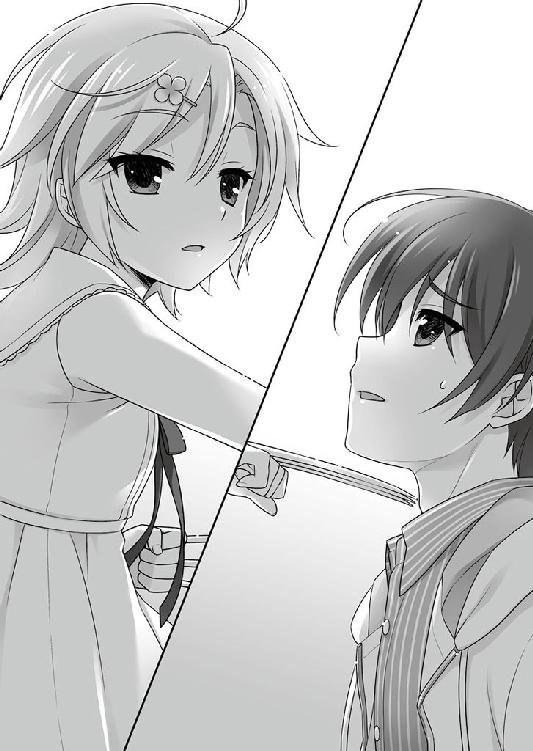
『本』と現実を同時に確認する処理よりも速く、アカハの指先が一條の喉元に掛かっていた。
「............止めてくれてありがとう。死ぬかと思った」
「死にます、本当に」
「死にたくないよ。これは、本当に」
「じゃあ、そこをどいて家に帰ってください。これは、アカハの『仕事』なんです」
「それはできない......」
ほとんど脅迫同然の忠告をされても、一條は震えながら首を横に振った。
「お兄さん、逃げてもいいです。そっちは『仕事』じゃないですから」
なのに、あと一押しで喉を貫く爪の前に立ちはだかっていた。
「悪いけど、そうもいかないんだ。今月はお店が忙しくって、オーナーがいないともの凄く困る。帰る時は、姉さんも一緒だ」
強がったところで、アカハには筒抜けだったろう。人間の感情が動くと脳の化学物質が作用する。人間を凌ぐｃＳの嗅覚は、恐怖の臭いを容易く感知できる。
「......どいてくれないなら、お兄さんも一緒にやらないといけません」
だから、アカハが遣るべきことは一つだ。
選択の余地はない、筈なのに。
アカハは、ほんの数ミリ指先を押し込むだけの行為に待ったを掛ける。
「その人は、お兄さんの何ですか」
「──家族だよ」
一緒に過ごした時間も、積み重ねてきたやり取りも、ほとんど消えてしまったけれど、それでも一條が選ぶとすれば、やはりその言葉だった。
アカハの瞳が、
「命が惜しくないのか？」
そう告げていた。
一條は行動で応えた。惜しいから、諦めずに考え続けた。
しかし──
この状況を何とかできるか否か。
そこに不確定という一縷の希望は持ち込めない。『本』に「選択視が未だに記されない」からだ。今の段階で選択をしても意味はないのだと、明白に告げている。
（まだ条件が揃ってない、だけだ......）
だが、それは、ここが「途中」だという意味でもある。
最後に待っているのが、明るい未来か、『１４』か。
いずれであれ。その瞬間には、選択視が著かれて教えてくれる。
即座に命を落としたりしないと解っているから、ほんの少しだけ大胆に振る舞える。
いずれ来る一瞬の為に、できる限りを思考する。
そこへ。
「叔美ちゃん、どっちなのかしらん！」
「こっちにいる！ コソ泥かも！ きゃぁ～怖い!!」
人気の無かった街路が途端に騒がしくなる。
姿を消していた叔美が率いてきたのは、おカマダさんとそのカラオケスナック『蒲田』に勤める「レディース」たちだ。
バットやすりこぎやオタマを手に手に駆けつけた、青白い髭剃り跡とスネ毛ボウボウの厳ついレディースたちが、今日に限っては天使の軍団に見えた。
「......あの人たちも、家族ですか？」
「え......それは流石にっ......ていうか、それだけは止めて下さいお願いします！」
血の涙を流しそうな慟哭は、あっさりスルーされた。
「......目立ってはダメと言われていますので、次にします」
余韻もなく踵を返して、髪がなびいたと思った瞬間には、アカハは民家の上に跳躍して姿を消した。華奢な印象からは想像もできないほどの敏捷さだ。小槌の浜で別れた時と何も変わらなかった面影が、残像のように一條の視野に残った。
「一條、生きてるンだな!?」
「おい、大丈夫か、一條！」
叔美と碧流が、すぐ近くで同時に叫ぶ。緊張が途切れたせいか膝が抜けて落ちかけたが、姉が支えてくれていた。
先ほどまで顔色一つ変えなかった碧流が、慌てふためいているのに驚く。
「......下手に動けなかった。ヤツがお前に襲い掛かるかもしれなかったから。それにしても......いつも言ってるだろう、無茶をするなと」
「アタシのおかげで、アカハがいっちまったンだから、感謝しろよ」
事情を知らないレディースたちは、消えたアカハの居た辺りを指差して、ああでもないこうでもないと騒いでいた。今回は、厳つすぎる彼女たちに窮地を救われた。やはり、人は石垣、窮地を救うご近所付き合いだ。
「叔美、お前が余計なことを吹き込んだのか？ せっかく一條には秘密にしてたのに、これでは台無しじゃないか！」
「──待って、姉さん」
叔美に食って掛かろうとした碧流を、一條が引き攣った顔で呼び止める。
「秘密にしてたって......何それ？ 名跡の件で懲りたと思ったのに、まだ隠し事を？」
「あ、いや、その、それは......」
「......アタシは知らねーからな」
家に帰ってから、座敷に正座させて、お説教した。
小さく薄暗く、清潔なのに奇妙な猥雑さのある部屋だ。
奥志麻の都心から外れた公道沿いにある、ホテルの一室。リビングのスペースの大半を占める、けばけばしい原色で自己主張激しい丸ベッドを、アロハシャツのミスターＰがだらしなく寝そべって占領していた。
「ああ、そうさ、素敵すぎて困っちゃうね！ 何年経っても変わり映えのしない土地、人の疎らな街並み、どこにでもある山と海！ いつまでも田舎くさくて飽き飽きしちゃうＹＯ。僕は都会が似合う男だからね！」
スマホ片手に、見事な英語を捲し立てる。通話先は上役なのに、馴れ馴れしさに遠慮がない。何が可笑しいのか、時々ひゃははははと笑い転げた。
男には、おかしな性癖が幾つもあった。
この手のファッションホテルに泊まっているのも、その一つ。まともな人間は一人で利用したりしない、いかがわしい施設なのを意にも介さない。
ミスターＰの表向きの肩書きは、民間警備会社の代表取締役。もっとまともな宿泊施設を幾らでも使える身分である。それなのに、独特の経済観念や倹約の信念ではなく、ただひたすら無頓着なのだ。
『相変わらずだな、君という男は』
馴れているのか、通話相手の重厚な声には、不作法で気分を害した様子もなかった。幾度となく親切という名の忠告で無駄骨を折り、遂に諦めてしまっただけかもしれないが。
『ＣＨＩＳＡＴＯ Ｓｅｃｕｒｉｔｙ Ｓｅｒｖｉｃｅ』──
自らをプレジデントと称する男は、略して『ＣＳＳ』と呼ばれる、米国籍の小さな会社で代表を務めている。といっても、彼は会社の為に１セントも出資していない。
ＣＳＳは、とあるグループに所属していた。
彼の会社は、金融、エネルギー、食品、製薬、メディア、エトセトラ......巨大な複合産業体で構成された彼らが、このホテルとはまた別の種類の「いかがわしい」仕事を担わせる為に作ったのだ。
彼らは、自分たちの都合の良いものだけを与え、自分たちに都合の良いものだけを奪い続ける為だけに存在した。
始まりには善意があったのかもしれないが、世の中の多くがそうであるように、一端動き出すと最初の動機はキレイサッパリ忘れ去られてしまう。
車輪のように、回り続けることそのものがリアルなパワーを生み出す。資本は膨れ上がり、知識と経験は蓄えられ、倫理と良心は不法投棄される。太古の恐竜の如く、際限なく成長する怪物は、自分を維持する為に、更に膨大な血と金と労働を浪費する。
怪物の食卓に料理を捧げる為に、昔からＣＳＳのような看板は、数え切れないほど立て掛けられては廃棄されてきた。ミスターＰのような人間も、数え切れないほどいた。
『──それで、〝蜂〟を行かせたのかね？』
「そーのとおーりだＹＯ！ 僕の、大事な娘を、ね!!」
何十代目か、あるいは何百代目かもしれない由緒正しい「仕事」を受け継いだ男は、オモチャを自慢する子供みたいに、スマホを握ったまま、ダブルサイズよりも広いベッドを右に左に転げ回る。
『なるほど、確かに君のアレは優秀だ。ｃＳ、と言ったかな』
ｃＳは、ミスターＰがプレゼンした便利な「道具」だ。
ＣＳＳのような会社では、特に役立つ。人間以上の力と人間にはない能力を持ち、買い物からゴミ掃除まで、何でも言いつけ通りにこなす、忠実で恐るべき歯車。まだまだ試作なので問題は非常に多いが、ミスターＰにとっては些細な事なので、気にもしていない。
『──しかし、前回の一件では、しくじったのではなかったかね？』
抑えた声には少なくない皮肉と苛立ちが含まれていたが、核シェルター並に頑丈な男の面の皮には、引っ掻き傷一つ入らなかった。
「なーにを過ぎたことに拘ってるんだい？ 人間、振り向いちゃダメダメ！ 前を向いて進まなくちゃ！」
『......君の場合、少しは後ろを向け、という気もするな』
「いやあ、誉められると困るＹＯ！」
あははは、とミスターＰは屈託なく笑い、相手からは何もかも諦めたような溜息が届く。
『それよりも、計画はどうなっている？ 君が、いつもの調子で、お偉方を煙に巻いて説き伏せたんだ。そろそろ成果は出たかね？』
「もっちろん！ 順調だＹＯ！ 知ってるだろ？ 僕は、いつ如何なる時も順調なのさ」
『まったく......恐ろしい男だな、君は。よくもまあ、毎度平気な顔でいられると思うね。前回も、私だって寒気がする代物に手を出した。あんな、死神も同然の──』
「ノンノン！ 僕は優しい男だよ！ あんなモノを放置しておくと、迷惑千万だろう？ 回収して、キチンと箱に入れてしまっておく。世の為人の為！ 素晴らしい奉仕精神！ これこそ、大人の仕事だね！ 表彰して欲しいぐらいだＹＯ！」
ピシャリと両手を合わせて、箱を閉じるジェスチャーをした。
ハイになって更に本題から逸れていこうとする男を、通話相手は抑えた声で宥め賺す。
『いいから、報告をしろ。どうなっている？ 週末には、前妻と娘の養育費の件で会わなければならないんだ。これ以上、私の胃に負担を掛けないで貰いたい』
「離婚したんだから、『元』嫁じゃないか？」
『余計なことにだけ、拘るな！ それよりも！ 本当に順調なんだろうな!?』
「まかせておきたまえ！」
『浮き世の泡も、君にとっては気楽な遊びか。期待しているよ』
これ以上は無駄と悟ったのか、相手が通話を一方的に切った。
「気の短い男だねえ」
自分が怒らせたとは、露ほども思わない。音が失せ、静かになった室内が寂しくなり、傍にあったテレビのリモコンへひょいと手を伸ばした。
手に取る寸前で、来訪者に気がついた。
確かに男しか居なかった部屋の中に、いつの間にか小さな影が、主人に声を掛けて貰えるのを待つ飼い犬みたいにひっそりと立っていた。
「Ｏｈ！ 戻ったね、アカハ！ 待ってたＹＯ！ やっぱり一人じゃ寂しくてね!! ところで、成功したかな？」
アカハは姿勢を崩さず、問われたことにだけ答える。
「失敗です」
「オーノー!! 僕の自慢の娘が、二度も失敗しただって!!」
頭を抱えて大げさに仰け反りすぎてバランスを崩し、ベッドの上にバタリと倒れた。そのまましばらく呻きながらゴロゴロ転がっていたが、すぐに飽きて仰向けに寝転がる。
アカハが「千里碧流」を狙ったのは、二度目だ。
全ては、この男が仕組んだ──と言えるかどうかは怪しい。
かの「グループ」は、いつものようにミスターＰのプレゼンを受けて、判断をし、会議をし、上申をし、また会議をし、決定を下し、決済をし、いつもの如く実務を任せた。
巨大な組織の内部意思は、複雑極まりない迷路だが、目指すところは簡潔だ。
利益の為に、成長の為に、拡大の為に、よりよき未来の為に。
その何もかもが、ミスターＰにはどうでもよかった。
彼は杜撰で、いい加減な男だった。目的はあっても予定はない。計画は立てたが、最初から穴だらけ。その日その時を愉しむ為に、行き当たりばったりに、世間も他者も企業も振り回していくのが、ミスターＰという男のはた迷惑な生き方なのだ。
二度に渡って碧流を狙ったのにも、彼なりの「目的」はあったが、おおよそ思いつきに近い。思いつきで襲われたのだと碧流が知ったら、果たしてどう思うだろう。
「標的を捕捉しましたが、人が集まってしまったので断念しました。その後、『アンブロシウス』に逃げ込まれました」
「そりゃ、仕方がないね。マーリンの泉は、以前の主のせいで、何重にも守られていて手が出せないＹＯ！」
立ち直りが早いのか、瞳をキラキラさせながら、猥雑ベッドの上に演説でもするようにひょこりと立った。見た目の軽さと相まって、どこをどう取ってもイカレていた。
恐ろしいことに、何度も失敗したというのに、男は自分の成功をこれっぽっちも疑っていない。必ず成功すると確信している。
「なぁに、気にすることはない。失敗というのはね、即ち過程なのさ。人類は空を飛び、月に辿り着き、火星にも土星にも外宇宙の小惑星にだって手を伸ばす。物事には順番があるんだよ。空も飛べないのに火星には辿り着けない。なんて、分かり易い！ つまりだ、諦めないで前進している限り、いつかはどんな夢だって叶うんだ！ いいかい、アカハ？ まだ成功に辿り着けないなら、もう少し前に進めばいいんだＹＯ！」
「イエス、プレジデント」
淀みのないアカハの返事に、ミスターＰは満足そうに頷いた。
「じゃあ、早速次へ行ってみようか。早い方がいいな。明日、よろしくね！」
好き勝手喋った後、電池の切れた子供のように、ミスターＰは無邪気に眠ってしまった。
ようやく静かになった部屋で、アカハは独り起きたまま、ソファの上で丸くなる。
次こそ、与えられた仕事を完遂しなければならない。
それがｃＳの存在意義であり、迷うことなど一ミクロンもない。
「アカハは、最も新しいｃＳです」
なのに──
少年の顔を想い出してしまった。
どうして、爪を止めてしまったのか？
どうして、顔を見せたりせずに、さっさと標的を始末しなかったのか？
理屈に合わない。胸のどこかで、油の切れた歯車が軋んでいる。
余計な真似をしなければ、一つの矛盾もなく解ける公式のように、仕事は完璧に終わっていただろう。
指先をほんの数センチ動かすだけ──のことが、できなかったのだ。
貰ったういろうは、とっくに全部食べてしまった。アカハにとって、プレジデント以外の人間から何かを貰う、という経験は初めてのことだった。
命を、名前を、存在理由を、仕事を、アカハの全てを与えてくれたプレジデントと、行きずりの自分を掬ってくれた少年。
二人がどう違うのか？ アカハには、上手く言葉にできない。
グルグルと同じところを回り続ける思考の回転木馬。答えの出そうにない問いを、それ以上考えるのは止めてしまった。
失敗の理由を問い詰められなかったことに、ホッと胸を撫で下ろしたが、元々プレジデントはあらゆることに無頓着で、心配はほぼ杞憂だった。
「──明日こそは、殺します」
言い聞かせるように、そう呟いた。
山の斜面のような、急な石段だった。と言うよりも、実際に山の斜面なのだ。
Ｔ県奥志麻市は、中央に座す美山をドーナツ状に取り囲む造りなので、此処のように表通りからすぐの場所にも、都市のエアポケットめいた風景が出現する。
例えばそれは奥志麻都心部の片隅、もう少し正確に言えば奥志麻駅から山の方向へ進み、古い寺や墓地の密集した一角を抜けたその奥の奥。
滝之尾山、と呼ばれている、美山の東嶺にあたる低い山だ。
「石段の入口にあったのが三日神社。かつてこの辺りを領していた大名も参拝したという由緒正しい社だ。境内の近くには、金竜泉という湧き水も出ている。その昔、恐るべき鬼がこの国に現れた。山に棲む金色の三首竜がそれを退治したものの、自らも傷ついて横たえた身が滝になったと伝えられている」
先頭を行く碧流は、闊達に石階段を上っていく。一條と叔美がそれに続いた。
石段は急な登りなのに簡素な造りで、手摺りもない。普段からおいそれと人の踏み込まない辺りに響くのは、彼らの声と跫音を除けば小さな滝の水音だけだ。
「読めないよ、そんな漢字の名前。おまけに、金色の竜とか......昔話のクセに、やたらとハイカラだ」
一條は、今登ってきた場所を見下ろした。山へ踏み込んでいるせいか、木々が鬱蒼と茂り、さっき通り過ぎたばかりの神社の大きな鳥居も見えなくなっている。
「鬼は、キジと芋虫を引き連れて襲い掛かったそうだが......」
「芋虫!? そこは、せめて犬じゃないの？」
「昔話の設定に文句を言うな」
無駄口を叩いていると、石段の終わりが見え始めた。
当然ながら、奥志麻昔話を聞かされる為に、こんな場所までやって来たのではない。
「本当に、こんな所にあるの、その......」
「〝ヒミツヘーキ〟だっけ？ また、オニチクが思いつきで喋ってんじゃねーの？」
一條が恥ずかしくて言い淀んだ言葉を、後ろに続く叔美が容赦なく口にする。叔美は素直な少女だった。
「あるのではない。いるのだ!!」
碧流特有の、一見意味がありそうなドヤ顔が、二人の不安を弥が上にも掻き立てた。
アカハ襲来のすぐ後だ。いつ何時また来るともしれないｃＳの驚異をどうするべきか、千里家では緊急家族会議が招集された。が、三人と一冊が揃ってあーでもないこーでもないと角突き合わせたものの、文殊の知恵どころかロクな案は出てこなかった。
無理もない。相手はｃＳ。まともな人間に対抗する術があるだろうか。一條たちが「まとも」であるかどうかはさておくとして。
しかし、ないでは済まないのが現実だ。数ヶ月前のように、ポケットの中から万に一つの幸運を取り出してみせねばならない。
不毛なだけの時間が過ぎた。一條も叔美も手品師や錬金術師ではなかった。話し合いが八つ当たりのし合いになるまで、あと半歩で足りた。
行き詰まり掛けた最後に、意外な解答を持ち出したのは、当事者の碧流だった。
「ちっ......こうなれば、秘密兵器を使うしかないな」
「「ひ・み・つ・へ・い・き？」」
一方はあからさまにイヤそうに、一方は好奇心で瞳を輝かせながら、日常生活ではあまり必要としない奇天烈ワードを繰り返した。
思い立ったが吉日と、翌日、朝早くから、満全の笑みを浮かべる碧流に連れ出された。
「それにしても、数ヶ月前にも死にかけて、今回また、か......。普通の夏休みどころか、普通の人生も遠くなったな......」
自由人の叔美はともかく、一條は新学期早々、またしても学校を休む羽目になってしまったのが心苦しい。クラスで隣の席の真田に、ノートを貸して貰う話をつけていた。「お姉ちゃんを紹介してくれ」という台詞を、そのまま伝えるのと引き替えで。
──..................何度も警告したからな。
条件の変更を善意で申し入れたが、頑として譲らなかった。紹介した後にどんな結末が待っているのか、密かな涙を禁じ得ない。人間は、外見に惑わされる生き物だ。
「誰が思いつきだ、私の深謀遠慮が解らないようだな、居候」
「アタシは〝イソウロウ〟じゃなくて働いてんだよ、めっちゃブラックな店で」
物思いに耽っている間に、経済の暴力を振りかざす姉とおカマダ仕込みの付け焼き刃で迎え撃つ叔美が、危険なロケーションで揉めだした。
ほとんど崖のように切り立った急斜面の石段は、踏み外せば命に関わりかねない。
「待って待って、二人とも！ こんな場所で揉み合ったら落ちるから!!」
「......すまない、一條。昨日から、私も気が立っているようだ。ま、そこの無駄飯喰らいが落ちたら落ちたで、月々の食費が安上がりになって万々歳だが」
「つーか、よくわからねーけど、狙われてンのは、そこのオニチクだろ。パック詰めにして届けてやったら、チビも満足して襲ってこなくなるぞ！」
「くくく、そうか、あの小娘を潰す手がもう一つあったな。次にあのｃＳが襲ってきたら、お前が首輪外して突っ込むというのはどうだ！ 名案だな、私!!」
自重と限度を知らない二人が、互いの傷口を抉り合いながら、パピヨン・ドッグとベローシファカ・モンキーのように揉み合う。
「姉さん、僕はアカハを助けたいんだ」
溜息を吐きながら、昨夜も繰り返した思いの丈をもう一度告白する。
「姉さんは守る。でも、それで前みたいに──」
叔美を連れ去ろうとしたコウモリ男ことヨブスは、元相棒に胸を貫かれて海の藻屑と化した。おそらく......生きてはいないだろう。元相方も少し後に姿を消した。
敵だったから、仕方がなかったのかもしれない。
選択視の選び方一つ違っていれば、立場は逆になっていたかもしれない。
『選択』の結果、残った事実は、一條の中で今も黒く燻っている。
「──あの小娘は、お前に『助けてくれ』とか巫山戯たことを抜かしたのか？」
「そうじゃない。でも......」
「弟よ、お前は優しい。それは、一條の二七の美点の一つだ。が、助けを求めてもいない相手を助けようとするのは、ただの押しつけだ」
じゃれ合いながら、ぞんざいに投げつけられた言葉が鋭利に突き刺さる。
無意識に目を逸らしていた自分の傲慢さを突きつけられて、何も言い返せなかった。善意を装っている分、確信している身勝手よりも、きっとタチが悪い。
アカハを、何から助けたいのか？
突き詰めてそれを言葉にすることも出来なかった。
それでも──別れ際、親子連れのようなのに独りぼっちの影が遠ざかっていく姿を見た時。
このままにはしたくないと思った。誰一人、アカハ自身だって欲してないかもしれない手を、差し出そうと決めたのだ。
「ついでに言えば、私が両手を挙げて降参しても、あの小娘は止まらないぞ」
「......道理を説くなら、ナイフじゃなくて持つ手の方にしろ？」
「違う。手を伸ばすだけで何もかも手に入る時に、ワザワザ獲物と話し合って妥協する猟師はいない」
それは、「普通」という上っ面を剥いだ世の中の、嘘偽りない姿でもある。
力であれ、立場であれ、裏付けがなければ、選ぶのではなく選ばされるしかない。
「お前は、世の中を渡るしたたかさが足りていない。勝ち方というものを教えてやろう。最初に、徹底的に、二度と歯向かう気がなくなるまでに、叩きのめすこと」
「アタシも、それに関してはオニチクに賛成......だけど、テメーは非情さしかねえンだよ。ちったあ〝ジューギョーイン〟への優しさを身につけろ!!」
「私の女神の如き優しさは、一條への在庫分だけで品切れだ!!」
狭い階段でじゃれる二人が、とてつもなく危なっかしい。
「とにかく、小金とはいえ投資していたのは、こんな事態もあろうかと想定してのこと。目には目を、毒には毒を。明日には、あのチビの始末をつけて、万々歳だ」
「いや、だから......姉さん、僕の意見、聞いてる？」
勿論、碧流は聞いていなかった。
「私を信じろ。強引に、大胆に、確実に──カタをつけてやる」
一條たちが揉み合いながら石段を登り切ると、そこは意外にも開けた土地だった。
「ここには、滅多に人は来ない。近所の熱心なお年寄りが、たまに参拝しにくる程度だ」
碧流の説明そのまま、下の神社と比べても閑散としている。
本当に、こんな場所に、姉の言うような代物があるのか？
首を傾げるよりも先に、一條の呼吸が止まった。何の前触れもなく唐突に、『本』が自動的に目の前に現れたからだ。
３４９─■■■■
キミが辿り着いたのは、山と言っても浅い場所だというのに、奥地にでも迷い込んでしまったような陰気で枯れた空気の強い場所だ。ここには、美山から流れてくる滝の水源と、納屋か倉庫のような幾つかの建物、鳥居付きの小さな祠がある。
その祠には、賽銭箱とお供え物がされていた。こんな場所にもお参りする、奇特な人間がいるらしい。他には、これといって目立つものはない。
足元は、アスファルトではなく剥き出しの土。キミは爪先で引っ掻いて確認してみるが、やはり只の地面、見たまま野ざらしの荒れ地だろう。
ここで出来ることは、そう多くはなさそうだ。
カルガモの子供のように碧流の後ろについていくのなら／５６７─■■■■ へ行け
苦しい時ぐらい神に頼もうと社にお参りしていくのなら／４１１─■■■■ へ行け
──まさか、もう来たのか!?
感情では拒んでも、反射的に身体は動き、誰よりも早く身構えた。
唇を噛み締める一條に、耳に痛い静寂だけが響く。どこか遠くで、小馬鹿にするようなカラスの声が谺する。
「.....................えーと」
落ち着いて、改めてＰＧを熟読熟考する。内容や示された選択視から察するに、せっぱ詰まった事態ではなさそうだ。
「違うのか......驚かせるなって」
肩の力を抜きながらボヤく一條の様子を、叔美は逃さずチェックしていた。
「また出たンだな？」
「叔美は大雑把なのに、結構目聡いね」
それが、彼女の生き方なのだろう。
「おう、ほめろほめろ」
日本語不十分な叔美は鼻高々だが、ちっとも誉めてはいない。
優しさと心遣いで沈黙を選びながら、五感の全てで周囲へ警戒を張り巡らせる。これもまた生き方。『本』が自動的に現れて、一條に何かを告げようとする時の行動も、すっかり身体に馴染んでしまっていた。
ここへ連れてきた張本人はというと、こちらの声は聞こえているのだろうが、会話には混じってこない。キョロキョロと周囲の木々や山々に視線を走らせ、何かに集中していた。どうやら、秘密兵器とやらが見つからないらしい。
元々姉の話は勢い任せで胡散臭かったが、これで「秘密兵器」とやらが全く役に立たないと、一條たちは目出度く万策尽きて、再び不毛な会議を再開しなければならなくなる。
──最近、こういうことが多いな......。
ちょっとした段差から落ちただけで一機失ってしまう困難レベルの高い人生に、言い尽くせない悲哀を感じてしまった。
「もっと普通がいいのに......。この選択視も悲しいよな」
下山後の無駄骨折りの心配よりも、今この場での『選択』だ。端的に言えば、神頼みするか否かの二択で人生が分岐しますよ、と結構酷い。
叔美と出逢う前の自分なら、歎きの一つも入れただろう。しかし、人間は経験で成長する。過酷なイベントの積み重ねは、一條を諦観にも似た覚悟で、逞しく図太くした。朝食を食べる食べないで、命に関わることもある。そんな身も蓋もなさこそ人生だ。
一條は、正月を祝い、盆には墓参りをし、クリスマスにはお目出度い気分になる、過去を失っていても人並みな人間だ。苦しい時には祈っても、決して信心深くはない。自分にしか見えない『本』が在るように、神様も見えないだけで何処かにいるのかもしれないが、祈ったぐらいでこの先の自分の人生がマシになるとは思えなかった。
それはそれとして。
「姉さん、ちょっとお参りしていこう」
「珍しいな。神頼みか？ ふむ、物は試しと言うしな。悪くないアイディアかもしれん」
一條以上に神頼みには縁のない碧流は、どういう風の吹き回しか、ノリノリだ。
「また『本』なのか？ 何か面倒なアレじゃねーのか？」
叔美は、知恵の輪にチャレンジするような顰めっ面で確認する。
「今回は、なるべく安全そうな方を選んだよ」
決断を終えると、ページは独りでに捲れていく。
二人を連れて鳥居を潜り、小さな祠に近づいて、丁寧に手を合わ──
４１１─■■■■
そう、いつの時代いつの世も、困った時は神頼み。これは万国共通の鉄則だ。
キミが小さな祠の前に立ち、神に縋ろうとしたその瞬間──数え切れ■■屈強な兵どもを血祭りにあげてきたブービートラップの如く、何かが足に絡みつき、キミは鳥居から宙づ■■された。
「な、なんだこれーーーー」
どうやら、罠だ。キミは見事に引っ掛かっ■しまったらしい。
「「いちじょー!!」」
のこのことキミの後■をついて来た叔美と碧流の二人も、キミとお揃■で逆さ吊りになる。キミの選択のせいで被害は拡大しているぞ。これは後が怖いな。
もっとも、後のことは、この場を潜り■けてからだが。
「おいこら、安全じゃねーのか!? 〝そしょー〟すンぞ！」
神頼みがハズレとはどういう了見か、と空中で叔美が喚くのもロクに耳には入らない。
見間違えることのない文字化けで黒く潰れた『本』の記述が、逃げ場のない最悪の状況で、最悪の結論を告げていた。
足に絡みついた糸を解く■は、困難だ。暴れたところで落ちないという点では、しっかりしている。キミは、以前にも同じような目に遭ったことはなかったか。
「あれ？ これって──」
一條が習性化した動作で『本』を閉じると、待つほどもなく、山の斜面から何かが現れた。これが『罠』である以上、仕掛けた者がいる。カサカサと網に掛かった憐れな虫ケラどもに舌舐めずりするように近づいてくるのは、身長一六〇センチほどの女だ。
予想通りというべきか、よりにもよってとするべきか、一條の見知った顔だった。
「..................ウシオ、さん？」
「アナタたちがどうして罠に掛かってるの？ 私の晩ご飯をちょくちょく盗ってたのはアナタたちだったのね？ そこの小っこいのなら如何にもやりそうだものね」
水源があるから身綺麗なものの、どう見ても野宿生活満喫中という外見の顔見知りな美少女に、一條は流石にバツが悪くて、そっと目を逸らした。
「ンだと、もう、そンなことやってねーぞ!!」
ミノムシ状態で暴れる叔美と対照的に、碧流はヤケに落ち着き払ってた。宙づりだが。
「見ろ、これが私の秘密兵器だ」
「......ああ、なるほどね」
おおよそ予想がついてしまった身も蓋もない結論を、碧流が満天下に詳らかにした。
罠を仕掛けていたのは、かつて叔美を狙った蜘蛛のｃＳ、ウシオの成れの果てだ。
道具として造られるｃＳは、不良品と判れば処分される。先だっての任務に失敗したウシオには、企業へ帰還して廃棄か、残留して逃亡の日々かの選択が迫られた。
無理に生き続ける理由はなかったが、仕事中に（よりにもよって相棒に裏切られて）後ろから胸をぶち抜かれ、大層痛くて苦しい目に遭った。重傷でこれだと、死ぬのは輪を掛けて大変そうだと、戻るのがイヤになったのだ。
野良ｃＳを選択したものの、ウシオにとって、いわゆる「普通」の社会生活は艱難辛苦に充ちていた。超人であっても国籍も戸籍も持たない彼女が、見ず知らずの異国に裸一貫で放り出されれば、行き着く先は犯罪者か巡回食料回収者と相場は決まっている。
四体目のｃＳであるウシオは、自分のことをあまりを深く考えたことはない。過去の記憶に振り回されたヤツもいたが、彼女に人間だった頃の記憶はなかったので気楽だった。
何もかもが過去形だ。
死に行く者を留めることで造られるｃＳは、その始まりから道具である。
一体一種。個々に全く異なる力を与えられ、性能では人間を軽く凌ぎながら、生きてはいないから夢を見ることはない。死んではいないから止まることもない。
彼らをハリウッド映画でも有名なゾンビの一種だと嘲笑した関係者もいた。顔色の悪いオートマティック死体と違って、生命活動は行われるのが困りものだ。食事もすれば眠りもする。なので、いつまでも無頓着ではおられない。
空きっ腹を抱えて奥志麻に棲み着くことになった家無き子が辿り着いたのは、この三日神社の背後にある滝之尾山の祠だった。
小高い丘の上にある祠には、石段を登らなくては辿り着けず、ある時期を除いて人目にもつきにくい。水場にも不自由せず、近くには墓地もあり、ウシオにとって良物件だったのだ。
やってきた騒がしい連中が見知った顔だと判って、ウシオは露骨に嫌そうな表情を浮かべたが、姿を隠すのはやめた。彼女たちが、信心深い参拝者でないのは一目瞭然だ。
「何か用？ 私の方には別にないわ」
「えっと、それは......」
「待て。この女には私が話そう」
申し訳なさそうに、ここまで来た経緯を説明しようとした一條を制して、碧流が大きな顔をする。
「......話そう、じゃねーよ。オマエ以外、誰がわかンだよ」
そもそも「目的」があって、一條たちをここまで連れてきたのは碧流だ。
「その前に、私たちを降ろせ。逆さのままだと話しづらい。だいたい、どうしてこんな罠を仕掛けている!? 見ず知らずのお年寄りが引っ掛かったらどうするつもりだ」
「ここは滅多に人が来ないから大丈夫。それより、私の貴重な『食料』を、時々ギッてく不届き者がいるのよ。これは、ソイツら用の罠。それはさておき、話を聞いてからでないと糸は解かない。アナタたちの話なんて、どうせロクでもないのに決まってるから」
「......野良猫でもいるンじゃねーのか」
「奥志麻の山中には、タヌキも出るらしいよ」
「いンのか！ イチジョー、アタシも昔は飼ってたぞ」
感心する叔美の反応が面白くて、つい、久留美から強引に聞かされた生半可の知識を披露する。逆さ吊りのままで。
「昔から縁が深いらしくてね。奥志麻で唯一無二の賑やかさを誇る奥志麻駅周辺でも、雑居ビルや住宅街の隙間に、付近の風景から浮いた古びた祠が幾つも残されてるんだって。都心部だけに限っても十数ヵ所。『アンブロシウス』の近くにもあるよ。それは、かつてこの土地を席巻し、二派に分かれて血で血を洗う抗争を繰り広げたというフェアリー・タヌキたちを奉った祠なんだとか」
「フェアリー・タヌキって、なンだ？」
「......さあ」
生半可なので、ツッコまれると弱い。一條たちが現実から目を背けている間にも、碧流たちは対峙していた。
「私から受けた数々の恩を忘れたか！ 死にかけの貴様に手当をしてやったのも私。行く当てのないところで食事を恵んでやったのも私。金銭的支援もしてやったのも私。隠れ家を紹介してやったのも、誰在ろう私だ！」
「確かに、命を救われたし、多少の援助も受けたけど、それは先に手助けした分でイーブンの筈」
全方位にガードを固めているウシオの態度に、一條は素直に感じ入った。碧流と深く関わり合えば合うほど、こういう感じになるんだよね、と。
──真田、お前ももうすぐ理解できるよ......きっと......。
「おい！ なンでもいいから、頭に血が上る前に何とかしろ！」
逆さの従業員にせっつかれて、碧流は、利害と怒りを秤に掛けた。
つまり、叔美はともかく一條も酷い目に遭っている。やむ得ない、と露骨に顔に書いたまま、本題を切り出す。
「いいか、よく聞け。昨日、貴様の妹が襲ってきて、我々は大変迷惑した。役立たずの貴様に小金をくれて遣ったのは──こんな日の為だ。早速、役に立って貰うぞ」
「全然わかンねーだろ」
もっともなツッコミに、碧流は口をへの字に曲げた。
「......時給減らすぞ」
「アタシは嘘いってねーだろ!!?」
「真実がいつの世も正義とは、決まっていないのだ。特に大人になって社会に出ると」
「姉さん、それよりも説明を。マジで、もう少し分かり易く」
「それでは、ごきげんよう......」
内輪揉めを尻目に、ウシオはさっさと寝床に逃げ込もうとした。
「いや、待って、ウシオさん！ 逃げないで！ その前に、そろそろ降ろして下さい、お願いします！」
見えない糸で吊されていた身体が、ふっつりと支えを失ったように落下する。
叔美は、猫みたいな軽い身のこなしで身体を捻って、見事に両手足から落ちる。隣の碧流も足から着地したが、一條はしっかり顔から落ちた。
「死ぬ、今死ぬ、先に死ぬ！ 僕の顔がとても痛いです!!」
「顔打ったぐらいじゃ死なねーって」
ううう、と涙目で唸りながら、一條は立ち上がった。正直、人気のない場所でコントをしてる時間が惜しい。
「頼みがあって、ここに来ました」
「それなら断った」
本当ににべもなく背中を向かれた。
「あのー、せめて話ぐらい聞いてみようかなーとか、思いません？」
「思わない」
「ふふん、甘いな」
と、腕を組んで上から目線で唇を吊り上げたのは碧流だ。
「甘いというと、姉さん」
「交渉の遣り方だ。こういう時には、こうするんだ──お前に首輪と鎖をくれてやる。犬になって、あの化け物蜂を始末しろ」
あんまりだ、という顔の一條を余所に、あにはからんやウシオが足を止めた。
「話だけ......聞いてあげる」
いつもながらトバしすぎで他人には分かり難い碧流の話を、一條がフォローしながら一通りの事情説明が終わるまで、ウシオは一言も挟まず、ぺたりと座り込んで聞いていた。
完全に巻き込まれたというのに、意外と真摯なのか。
「新作のｃＳね。私の知らないヤツよ。そいつがアナタを狙った、と」
言うまでもなく、アカハを指してのことだ。
「そこの居候ではなく私を狙ったのは少々疑問だが、碧流としてならともかく、千里家の名跡としては、狙われる理由の一〇や二〇の心当たりはある！」
凄いだろう、と言いたげに胸を反らした碧流に、一條が笑顔を引き攣らせる。
「............あの、姉さん、今ヒドい告白されたんだけど。もしかして、そんなヤバいものを譲ろうとかしてた？」
「あ、いや、そうだが、じゃない！ そうではなく......ち、違うんだ！」
身も世もなく取り乱す姉の姿に、名跡の相続について、まだ返事はしてなかったのが、ファインプレーだったのではと思わずにはおられない。
「ヒデーな、オニチク」
「う、うるさい！ それよりも......そう、私は、今回の犯人にも心当たりがある!!」
「それは？」
「決まっている、花々梨だ。あのアマ、目障りな私を始末しようと、金で刺客を雇ったに違いない。いずれ、しかるべき報いを与えてやる」
一條は、そろそろどうでもよくなってきたが、碧流は大真面目だ。
「でも、海でアイツも一緒に襲われてたぞ」
野良猫っぽい印象とは裏腹に、叔美は碧流と違う意味で真面目に取り組んでいた。
「自分が犯人であることを隠蔽する為の工作......という線で辻褄を合わせてみるのはどうだろう？ 取りあえず、犯人が決まればスッキリするしな。どう思う？」
「冤罪だよそれ!!」
自分の命が掛かっているのに、碧流はマイペース過ぎる。チタンワイヤー並のふてぶてしさは、頼りがいがあると言えなくもない。
「で、本題に戻ってもらっていいかしら？」
肘杖を突いた両手に顎をちょこんと乗せたウシオは、確実に他人事だというのに、取り組み方の真面目さでは一番だ。
「是非もないです、はい！」
「それで......私に何をしろというの？」
「毒には毒、ｃＳにはｃＳだ。お前の命は私が買おう。こういう時にこそ動かずして、役に立たずはいつ働く。諸共玉砕スピリットでも、私は一向に構わん」
「......僕は、スゴく構うんじゃないか思うけど、どうかな？」
普通でない窮地では無駄に頼れる姉の最大欠点は、相手の心を思いやるという精神に決定的に欠けていることだ。一年余りの長いとはいえない付き合いでも、一條はイヤと言うほど理解できていた。
人間を動かすのは、「利」だ。ウシオにとって、この案件を引き受けるメリットは、ほとんど皆無だろう。勝てば多少の報酬は得られるとしても、リスクとは到底釣り合わない。まして、善意の手助けを期待できる間柄を構築できているとも思えなかった。
「──わかった。引き受ける」
「「そうだろうそうだろ......ええっ!?」」
迷った様子もないウシオの返事に、一條と叔美が思わずハモる。碧流の、一方的な依頼のどこに、承諾する理由があったのか？ 何かの詐欺的手法ではあるまいか。
「ほら見ろ！ 私の人徳のなせる業だ」
姉は、確実に「ほら」の使い方を間違っていた。筋違いの解釈は聞き飛ばしながら、一條はウシオに詰め寄った。彼女の力があれば状況は打開できるだろう。喉から手が出るほど欲しい蜘蛛の糸を、しかし素直には喜べない。
筋が通っていないからだ。路地で行き倒れている見ず知らずの相手に無償でクリームパンを差し出すような怖いモノ知らずは、鏡を覗けばいなくもないが、それが世間の〝普通〟から大きくズレているという程度の自己認識は、一條にもある。
「......こっちから頼んでおいてなんだけど、間違いなくヤバい羽目になる。怪我なんてモノじゃなく、命懸けの危ない橋を渡るんだよ」
望む通りを選び取るには、「力」が必要だ。条件を満たせない選択視が現れないように、無力な手を伸ばしても、選ぶのではなく状況に『選択』させられる。
だからこそ──
一條がアカハを助けたくても、戦いそのものは避けられない。
今の状況は、ウシオとアカハを取引するということだ。世の中のどこにでも、在り来たりな取引の形。労働の対価のように、通貨のように。一つの命の代わりを別の命で購うなら、きっと釣り合いは取れるだろう。
「──そんなのは、納得できない」
突然湧き上がった激しい憤りに、一番途惑ったのは誰よりも一條自身だ。
燻っていたモノに火が点いたような感情の激発を、白い仮面じみた淡いウシオの表情と、透き通った瞳が他人事のように映している。
アカハと同じｃＳなのに、これまで彼女に、こんな感情を抱いたことはなかった。
「私はやりたいようにやる。アナタは関係ない」
「よくぞ言った。そうでなくてはな。では、今後の指示をする」
意を得たりと、碧流が自分と山を下りるよう命じ、ウシオはのそのそと準備をする。
一條は、突き放されたようで固まった。
「ちょっとだけ......わかるかな......」
「味方してくれる気になった理由が？」
自分の感情を持て余す少年に、叔美は瞬きもせずウシオを見つめたまま頷く。
「何もしないまま寝てるだけじゃあ、つまンないよ。死ンでるみたいなもンだ」
それが、かつての叔美自身を指しているのだと、一條には理解ってしまった。
奥志麻に来るまで、彼女はずっと独りだった。何者にも傷つけられない幸運と引き替えの「死」を振りまく、『１４』に憑かれた少女。
それは、どんなものからも「自由」だったということだ。人の間で悩むことも、日々の労働に身を粉にする必要もない、自分一人を生かし続ける以外の束縛からも解き放たれていた日々を、死んでいるのと同じだったと叔美は言い換える。
「あんま、うまく言えないけどな」
照れ隠しなのか、少女は歯を見せてニカリと笑う。
「叔美も、色々考えてるんだね」
「誉めンなよ......照れるぞ」
例えば、学校もなく一日中寝てられる生活が気楽でも、何かを越えなければ価値も喜びも見出せないのだと、拙く言葉に出来てしまう叔美がとても眩しかった。
「でも、彼女はｃＳだよ!?」
「ｃＳでも、欲しいンじゃねーの？ 何だっけ......そうだ、〝ヤリガイ〟ってヤツが」
「だから............なのかな？」
「ま、他人がナニ考えてるかなんて、結局わかンねーけど」
ようやく、ウシオの選択を受け入れられたような気がした。
この先にあるだろう『結果』へ、自分の覚悟を決めるように、拳を握り締める。
そして──最終確認のように、改めて自動的に『本』が現れた。
５１３─■■■■
敢えて言おう、彼の者は「武器」であると!!
この場面において、キミは真剣に考える必要性が生まれてしまった。武器が闘争を呼ぶのか、闘争が武器を生み出すのか。必要は発明の母か、卵よりも鶏が先なのか。
古代の賢者たちは、相反する言葉を幾つも残している。キミが偉大な先人の迷った答えを出せるとは思えないが、たまには頭を使うのも脳の老化を防ぐ為にはいいだろう。
武器をその手にするのであれば／６２７─■■■■ へ行け
何故人は無益な争いを繰り返すのかを思考するなら／４８９─■■■■ へ行け
また妙なことを著いだしたと呆れてから、選択視を選んで『本』を閉じる。
「ウシオさん」
さっきとは違う、確かな力を込めて少女の名前を呼び掛ける。ウシオは何も変わりなく、ｃＳ特有の希薄な存在感を纏ったまま振り返った。
「力を貸してくれて、ありがとうございます」
一條が差し出した右手を、ウシオは意味不明そうに見る。
「別に。今回も、私の都合に過ぎないから」
「でも、一つだけ言っておきたいことがあります。僕は、アカハ......新しいｃＳの女の子を、死なせるつもりはありませんから」
ウシオが選んだのなら、それがどんな道であろうとも口は出せない。
一條も同じ失敗を繰り返さないように、最善を尽くして『選ぶ』だけだ。
「一條！ お前はまだそんな甘っちょろいことを!!」
「アタシはオマエの言ってること、わからなくはないけど......でも、碧流に賛成するぞ。甘っちょろいこと言ってて、どうにかなるのかよ？」
「──どうにかしなくちゃいけないなら、やってみせるよ」
一條は、迷わなかった。
碧流は、困ったような顔で溜息を吐いた。
叔美は、どこか嬉しそうに肩を竦めた。
ウシオは、どうでも良さそうに、しかし、コイツはやっぱり頭のネジが足りていないに違いないと思っているのが丸分かりだった。
「どっちでもいいけど、どっちかに決めて、雇い主を。私は誰に従えばいいの？」
「わかった、一條。お前のやりたいようにやれ」
雇い主の決定は速やかに下された。
「ところで、この手は何？」
浮いたままの右手を指差されて、一條は苦笑した。
「握手ぐらい......していいですよね、今回は仲間だから」
不思議そうに首を捻ってから、ウシオは雑に手を取ってちょっぴりだけ握る。
「まあ、今回だけだから」
この結末に、叔美は納得いかない表情を浮かべる。
「アタシは別にいいけど......碧流の命が懸かってンだぞ？」
「私の命をどう使おうと、私の勝手だ。強情な弟を止めても無駄だから、一緒にやって勝ち目を増やす。筋が通っているだろう」
通らない筋を無理押しにするのは、如何にも碧流らしい。
「ありがとう、姉さん」
そして、一條たちは山を下りる。
行きは三人でも狭かった空が、帰りの四人では開けて見えた。
帰路の足は軽く、危なっかしく駆け下りる。
先頭の叔美の足が一番下の段を踏む寸前──
一條の目の前へ、いよいよと言わんばかりに重々しく、『本』が自動的に現れた。
「随分遅かったですね。結構待ちました」
６９９─■■■■
境内にある手水の庵で、残暑の日差しを避け■いる少女が誰なのか、今更言う必要もないだろう。以前、といってもほんの一日前に別れたばかりの彼女は、今度こそ本物の敵意という覚悟を引っ提げて、キミの前に現れた。
「随分遅かった■すね。結構待ちました」
アカハはほんの心持ち前屈みになる。カチカチと顎を鳴らす人型の蜂をイメージした。
「──アカハ」
「はい、アカハです」
咄嗟に数歩後ろへ下がった一條へ投げる視線は、昨日よりもずっと素っ気ない。
「アレが、新型？ ふうん。こんなチビなら、大したことないわ」
「そういうの、〝ふらぐ〟とかいうンじゃねえの？」
世間知らずの叔美が、生半可に不吉なことをいうが、本人に自覚はない。
雇われた義理か、ウシオが皆を庇うように、律儀に先頭へ踏み出した。アカハはそちらではなく、狙いである碧流を真っ直ぐに見つめる。
大気が音もなく固まるようなヒリついた気配に、一條は軽く当てられる。火薬庫と同じで、いつ何時爆発してもおかしくない状況だ。
「いずれ来ると思ったが、早速とはな。暇な小娘だ」
碧流が、挑み掛かるように鼻を鳴らした。
「嫌なことはさっさと片付けるに限ります。朝、家に行ったら誰もいなくて。勝手に出て行かないでください。ここを捜すのが大変で困りました」
「私は、行きたいところへ行き、やりたいようにやる。誰にも指図は許さない。しかし、上で襲った方が人がくる心配もなかったろうに。どうして、待っていた？」
「山に登ると汗をかいてしまいそうなので。暑いのは苦手です」
アカハは、前にも同じようなことを言っていた。
「それでは、今すぐ終わらせてしまいますね」
放たれる冷ややかな声に、今度こそ間違いなく呼吸が止まる。
まずは体勢を整えるのが先決と考えるなら／７１４─■■■■ へ行け
今すぐここで決着をつけようと覚悟を決めるのであれば／５５２─■■■■ へ行け
「ああ、終わりにしようよ、アカハ」
返事の代わりに、怪蜂は軽やかなステップを踏む。
地を滑るような前進は、情熱ではなく歯車とゼンマイで動くクルミ割り人形のそれ。
人間はｃＳに追いつけない。そもそも大本の速度が違っている。生き物として別種の相手と戦いと呼べる舞台に立つには、同等級のカードを用意しなければならない。姉の秘密兵器──と称される手立ては、ギリギリで間に合った。
叔美と碧流は、速やかに後ろに下がった。向こう気の強い叔美にとって、この場で正しく「何も出来ない」事実は、歯噛みするほど悔しいに違いない。黙って引き下がるのは、それ以上に足手まといにはなりたくないからだ。
状況は人の願いや祈りを無視してやってくる。どんな現実だろうと、与えられたなら突破しなければ先へ進めない。
静かな神社の境内が、人に非らざる者同士の血塗られた戦いの場──などと笑ってしまうほど〝普通〟ではない最悪が、一條たちの現実だった。
この先の『選択』は、アカハを傷つけることになるかもしれない。
それでも──
もう、一條は引き下がらない。
「ウシオさん。時間を稼いで」
「まさかこんなのが相手だったとはね。チョロいチョロい」
ｃＳだからか、ウシオは微塵も怖れないし、動揺もしない。悠然と表現してもいい背中を一條は頼もしく思うが、もう一人の相棒は沈黙したままだ。刻々と現状を著き綴るだけの『本』は、選択視で選択を迫ってこなかった。
つまり、この時点では、一條が如何に首を突っ込んだところで、事の成り行きは変わらない、という暗黙の示唆である。
──ひとまず、ウシオさんに任せるしかない。
ウシオが予定通りに拮抗してくれれば、介入すべき隙は必ず生じる。
だから、一分一秒を争う状況下、一條は逸る気持ちを押し留めて、動ける方へ動いた。
「姉さん、頼みがあるんだ」
「判っている。だが、どうする？」
一條の意図を読み取って、碧流が小さく頷く。
一條が他人には見えない『本』を読めるように、碧流には他者の人生に新たな『結末』を書き込む事が出来る。以前もｃＳを追い返すのに一役買った凄い『力』だが、負荷の大きさは何度も使える代物ではない。そして、書き込む『結果』が有り得ないものであるほど、辿り着くのに必要な『選択』の回数も多くなる。
端的に言えば、一條が「選択」して、成功させる難易度が上がってしまう。
「......どうするか、か」
どんな『結末』を確定させるのが、望む『未来』へ続く選択視になり得るのか？
何もかもを見逃さないように現実と『本』を見比べながら注視した。
アカハとウシオは、無表情に同じ速度で近づいていく。距離が見る見る内に詰まり、間にある空気が押し潰されていく。見ているだけで胃に穴が開きそうだ。
「よくわからないです、センパイ」
「〝センパイ〟、誰それ？ そんなヤツいるの？」
「目の前にいるアンタです。センパイは四番なので、五番のアカハのセンパイです。プレジデントから教わりました」
「ああ、プレジデント。いたわね、そういうの。思い出すこともなかったし、名前も聞かないってのには、とても清々してたけど。へー、アナタ、五番目なんだ」
「はい！ 五番なので、アカハは四番よりも強いです。ＭＺ７●０とＭＺ１５●０くらい差があるって言えば、わかりますよね」
いやその喩えはチンプンカンプンだよ、と一條は後ろからツッコんだ。
「それはナニ？ もしかして、私に忠告してる？」
「忠告じゃなくて警告です、センパイ。どうして、お兄さんたちの味方をするんですか？ 帰還命令無視して消息を断ってたと思ったら、こんなトコに隠れてて、挙げ句にアカハの邪魔をするなんて。全部がイミフです。奥志麻の水が脳に悪かったとかですか。ｃＳなのに」
「同じ台詞、前に言った憶えがある」
いなくなった元相棒と同じ穴のタヌキになってしまったのだと、野良ｃＳはつまらなそうに呟いた。
「お水はともかく、食べ物はもう少しマシなのを食べたい」
「プレジデントは、いなくなった相手を追いかけるのは面倒くさい人なので、アカハの邪魔をしないでどこかの台所の隅をコソコソしてれば、好きなモノを食べられますよ」
「それも気楽ね。私も面倒なのは懲り懲りだし。前回なんて、超痛かった。金輪際、あんな目に遭うのは願い下げ」
あと三歩で、ウシオの手が届く。四歩目で、アカハもだ。危険な距離に踏み込んでも、無防備に近づくチキンレースを続ける二人に背筋が凍る。
「じゃあ、台所の隅か冷蔵庫の裏に、さっさと行ってください」
「でも、今の方が、生きてる気がするわ」
ｃＳの性能では有り得ないことに、アカハがつんのめった。本人的に突拍子もないことを言われて、素直すぎるアカハはパニくったのだ。
「生きてないｃＳが、何のお話ですか？」
「生きてなくても動ける以上、一日中何もしないで寝転がってると、お腹は膨れても違うところに隙間が空いてく気がする。まあ、ここにいると、お腹もそんなには膨れないんだけど」
「だから、何の話ですか」
「簡単な話。ｃＳには、命令が必要なの。命令が、指示が、目標が、実行が、叱責が、成功が、失敗が──廃棄との紙一重の『何か』が必要なのよ」
そして、ウシオが告げた言葉は、悲しいぐらいにアカハには届かない。
「そういうの、〝シャチク〟とか言うらしいです。そんなに命令スキーなら、紐育に戻ればいいじゃないですか」
「従う命令ぐらい、自分で選びたいでしょ」
ウシオが加速する。次の一歩で、一條の視線を振り切る程の速度へ。
身を沈めて前傾しながら滑るように残りの距離を詰め、会話の隙に張り巡らせていた糸を同時に六本。己の後継機たるアカハの前後左右上下を塞ごうと──するよりも、目標の瞬発力が上を行った。
投網のような糸の隙間へと、身をねじ込むような低い跳躍。ウシオが糸をコントロールする腕を振り切る前に、アカハはその懐へ潜り込む。
注視していたキミにもよく見えなかった。戦慄せざる得ない。あのアカハが、これほどのスペックを隠していたのかと。昨日の襲撃の冴えすらも、まるで本気ではなかったのだ。
「イチジョーッ!!」
ほんの一瞬。一條が『本』に気を遣っていた最悪のタイミングで、飛んできた砲弾みたいなものが、前髪を千切って持っていった。
叔美が咄嗟に腕を引いてくれなければ、前髪以外も持っていかれていただろう。
漫画みたいな轟音を立てて神社の塀にぶつかり、後で言い訳が面倒になりそうなクレーター跡を付けたのは、流れ弾で落ちてきたミサイルではなく、吹き飛ばされたウシオだ。
二つの武器が切り結ぶように、ｃＳとｃＳのシルエットが重なった瞬間、アカハは右フックと左のアッパーとサマーソルトキックを順番に決めたのだ。
この間、僅か一秒にも満たない。素晴らしい、敵ながらアッパレとは思わないか？
「思えるか！ 最悪に計算違いだよ！」
「馬鹿な！ あっけなさ過ぎる！ 話が違うぞ!!」
「......そんな話、した憶えがない」
モンスターペアレントも真っ青の碧流のクレームにも淡々と返し、ウシオは壁の穴からのっそりと這い出てくる。
「うん、やっぱりダメか」
「やっぱりってことは、もしかして予想の内ですか！ まだ奥の手がある!?」
明確な差に組み伏せられても、ウシオの表情は少しも陰らない。
「新型強い。新しいのは正義。旧型は勝てない」
あっさり言われたので、一條は「へー、そうですか」と聞き流し掛けたが、すぐに正気へ戻った。
「今更!? せめて、計画通りに時間を稼いでくださいよ!!」
境内に降りてくる前に、基本的な段取りを決めてあったのは、せめてもの救いだ。一條と碧流が揃っている限り、僅かでも状況を一発逆転できる可能がある。碧流の『力』を使う時間を稼げれば、だが。
「でも、無駄な抵抗はしない方が......」
「そんなことはない！」
ある意味ｃＳらしいロジカルな結論に、思わず声を荒げた。
「その、ごめんなさい、大声出して......でも、最後までやってみないと、抵抗が無駄とは限らないですよ」
千里一條は、何度もそうしてきたのだから。
ウシオの無表情は相変わらずで、思うところを少しも窺わせなかった。
「わかった。命令に従う。でも──」
一條を指差した。正しくは、一條の肩越しに別の相手を。
「もう......いいですよね？」
アカハが走る。キミに、ではなく「標的」に、だ。ｃＳが従うべき、命令に従って。
この現状下でキミに出来ることは幾つかあるが、それほど時間は与えられてい
選択視が著かれるよりも早く、一條は叫んだ。
「姉さん、そっちへ!!」
ｃＳはゲームの駒と同じだ。チェスがキングを詰む為のゲームであるように、ｃＳは目的の為に消費される。
アカハは、「標的」以外は無視して、碧流を目指した。
ｃＳは、ある条件を満たした「死体」を使って、各種生物をモチーフに造られる。
アカハは「蜂」の特性をモデルにしたｃＳで、複数の化合物を体内で生成し、多種の蜂を制御下に置くことが可能だ。小槌の浜で蜂の大軍を狂乱させたように。
同じ手段は、今は使えない。精密なコントロールができないので、都市部では目立つ上に被害が拡大する。「企業」の命令から外れてしまう。
直接接触での排除を選択したアカハは、ギュインと爪を伸ばした。緩く湾曲したナイフよりも鋭利な武器は、スズメバチの針と同様に毒を持つ。掠っただけでも致死性が高い。
「姉さん、そっちへ!!」
──余分な思考を切り捨てる。
碧流を捉えた。同時に、狙い澄ましたタイミングで足元と上から、ウシオの糸が弧を描いて放たれた。性能差があっても、真っ直ぐ標的を狙うという行動を読まれているから狙いは正確だ。
（面倒なことは早く終わらせる！）
立ち止まっての回避ではなく、加速と跳躍で強引に糸を振り切る。
標的と交差する一瞬、右腕を横に凪ぐ。視覚は、唯一自分を阻止できるウシオに集中した。碧流を見る必要も感じない。
手応えはあったから、着地して振り向いたアカハは、次の言葉を失った。
「──叔美!!」
一條の悲鳴を伴奏に、切り裂かれた叔美が斜めに傾いでいく。
「居候の無駄飯喰らい!!」
この期に及んで酷い呼び方もあったものだが、碧流は倒れる叔美を駆け寄って受け止めた。右腕を切り裂いた傷は、出血からして浅いのに、叔美は傷口を押さえて転げ回る。
「いたいいたいたいたいたいたいたいたいたい」
６８３─■■■■
走っても間に合わないとキミが叫んだのは、無意味ではなかったらしい。叔美が碧流を庇おうと動いていたからだ。
碧流はどうやら無事だが、アカハの爪で右の二の腕を切り裂かれてしまった叔美の様子がただ事ではない。よほどの激痛が走っているのだろうか。傷口を押さえた手の下は、痣のような奇妙な色に変わっていた。
速度ではアカハより確実に遅い叔美が割って入れた理由は、始動の早さだ。『本』が見えなくても、一條の反応を見落とさず、『本』の語ることを間接的に読み取ってみせた。
ｃＳであるアカハが先に邪魔者を排除する余分よりも、目標を一直線に狙う素直さを選ぶ方に賭けて、声が聞こえるより先に、悲痛な表情の少年が碧流を見た時点で飛び出したのだ。
「姉さん、これは普通の傷じゃない！」
先のＰＧでは、咄嗟に「姉に警告する」ような選択視を選んでしまったのだろう。自動的に捲れた『本』は次のＰＧに進んでいたが、内容は只ならぬものだ。
碧流は手際よく、叔美の腕の傷口より上の位置をハンカチで縛り、傷口の血を吸い出して応急手当をする。
「おい、身体がうまくうごかねーンだけど......アタシ、どうなってンだよ......」
「おそらくだが、毒だ。毒の種類が解らないから、これで手当になるかどうか。ダメなら、病院でも間に合わない。判りやすく言えば、死ぬ」
「............テメー、ここまできて優しさ皆無だな」
「優しいだろう、寿命だとハッキリ宣告してやった。余計な首を突っ込んでくるからだ」
「──姉さんの言ってることは、本当なのか、アカハ？」
爪を伸ばした怪物の姿をしたアカハは、棒立ちだった。今にもダメ押しが出来たのに、襲い掛かってくる様子もない。一條たちのやり取りを、手を出さずに待っていたのだ。
「そうです、お兄さん。アカハの体内で化合したものです」
返る答えは、普段のアカハと同じで淡々と冷たい。
「毒使いは、その用途から解毒薬も持っているのが定番だが、お前はどうだ？」
叔美を支えたまま、碧流が凶敵を睨みつけた。
「持ってますよ。間違って、味方をヤってしまうといけないので」
アカハが意識しているかはともかく、これで一條には戦略的撤退の選択はなくなった。
どうあってもこの場で決着をつけ、叔美を助ける。
一つでも困難な目標を、二つまとめて達成できる条件を整えなければならない。
「叔美、無茶な真似を......」
だが、叔美がいてくれなければ、ここで倒れているのは間違いなく碧流だったろう。
まるで、シーソーに乗せられているようだ。左右が同時に持ち上がることは決してない。人生では、片方しか選べない選択を、数限りなく迫られる。
「従業員がオーナーを守るのは当然だが、自分がヤられていては世話はないな。そういう場合は華麗に回避してみせろ」
碧流の無茶振りにも、痛みに耐えながら不屈に笑うように、叔美はぎこちなく口の端を持ち上げる。
「もしかして......と思ってたンだけどな。やっぱダメか。海の時も、そうだったしな」
それは、一條の推測を裏付ける。蜂に襲われて海に飛び込んだ叔美は、溺れて死にかけた。『１４』の力を抑えたから、『１４』による恩恵も得られない。選び取れるのは、片方だけというのが普通なのだ。
「スゲーいてー......でも......」
なのに、生命の危機をかつてなく間近に感じながら、少女はハッキリと喜んでいた。
「アタシ、今まで痛い目に遭ったこと、なかったから。これ......いいな。自分で、やったことなんだから。痛いのも、バカみたいなのも、当たり前だよな」
一條には、叔美の歓喜が痛いほどよくわかった。ずっと『１４』に呪われ、そして守られてきた叔美にとって、これは、生まれて初めての痛みだ。
何かを殴れば、自分の拳にも痛みは伝わる。心が痛いという比喩ではなく、物理的な作用と反作用として。選択の因果は巡る。それが当たり前であり、『普通』の事なのだと叔美は言う。
それで、一條は吹っ切れた。
「姉さん、『どうする？』の件だけど──叔美が助かるようにして欲しい」
「それで、いいんだな？」
碧流の『力』で叔美を確実に助けられる『結末』を願えば、この場で他の『結末』を願うのは不可能になる。
（──選択というのは、諦めることですよ）
夏の海での花々梨の台詞が、リフレインされる。
どれだけ言葉を取り繕っても、何かを選択する時、それ以外は切り捨てられる。曲がり角で、右と左を同時に進む方法はない。
『──私はここに、正しい終わりを書き加える』
数ヶ月前に見たのと同じ光景を再び目にした。
真っ直ぐに伸ばされた碧流の指先が、一條の目の前で開かれている『本』に見えない文字を書き加える。創られた新たな『結末』に辿り着けば、奇跡は起こる。
「でも、『過程』は、決まってるワケじゃないんだ」
今は一秒でも時間が惜しい。だから、叔美とアカハを天秤に掛ける自分の傲慢と身勝手を迷わない。
悔いと迷いは祟る。人を迷わせ、堂々巡りをさせる。
「花々梨さんの言ってることは正しい。だからって、簡単に諦めると思うな」
世の中は、全て「選択」で出来ている。数多の選択から一つを選ぶ繰り返しが、自分たちの生きている場所だと、痛いほどに知っている。
『本』が見える以外には一介の高校生でしかない一條には、虻と蜂を一度に捕まえる真似はできない。それでも、諦めずに最後まで泥臭く足掻き続ける。それが、千里一條であるということだ。
「一條............今のヤツから三つ先だぞ、多分......」
「また、多分？ それより、そんなに近くなんだ」
意外な程の近さを、姉と吟味している時間はなかった。
「そろそろ行きます。お兄さんには怪我はさせませんから、動かないでいてくれるとすぐに終わります」
解毒剤をチップにして取引を持ち掛けてくる狡猾さを、素直すぎるｃＳであるアカハが持ち合わせていないのは、地獄に仏だ。
──よしんばそうなっても、一條は迷わない。
「いいから、早く掛かってこい。時間がない」
追い詰められている筈の碧流の挑発に、アカハが弾丸のように打ち出される。一條が身を楯にしようにも反応の追いつかない速度を、上からの糸が遮った。
「スペック差は判ったクセにしつこいです、センパイ」
「お仕事だもの」
アカハは最短で目標遂行を目指した。接近戦では対抗できないと学習したウシオは、空に張り巡らせた糸の足場から見下ろす。
これで、アカハは簡単に近づいてこれなくなった。ウシオの糸に絡まれたら、逃げ出すのは厄介だろう。先行機の分、実戦に投入されていたウシオは、個々の性能の特質と条件を見極めて利用するだけの積み重ねがあるらしい。
姉によって『結果』は創られた。一條は、そこを目指すべく、ＰＧの最後に著かれた幾つかの選択視に目を通し、一つ目を選択する。
「姉さん、逃げて」
「私は断じて逃げない！ ......が、戦略的撤退はしよう」
「どっちでもいいから。叔美を連れて、できる限り、アカハから離れて欲しい」
「ナニ、アレを連れて逃げるのか？ 幾ら才能に満ち溢れた私でも、お荷物を抱えた状態でヤツから逃げ切るのは無理だぞ」
アカハの狙いは碧流だ。目的を果たせば立ち去ってしまうかもしれない。そうなれば、叔美は救われなくなってしまう。
「イチジョー............」
毒が回ってきたのか、叔美は力なく呟くのもやっとだ。
「姉さん、行け！」
それ以上食い下がることはせず、碧流は動けない叔美を背負って、神社の入口の鳥居から外へ逃げ出る。アカハは動けない。一方的なウシオの糸攻撃を避けながら追跡するのは、容易い作業ではなかった。
「こういうの、目障りって言うんですね、センパイ」
「居候、走るぞ。迷惑を掛けたくないなら、自分で私に掴まってろ......は無理そうだな。ちっ、面倒すぎる」
「テメー......もうちょっと気を遣え......」
碧流は、もうまともに口を開く体力もない少女を背負ったまま、神社の鳥居を抜けた。
小柄な叔美とはいえ、人間一人分の重りをつけて苦もなく走るのは、相当の健脚だ。
「──あれは、一條か!?」
二人の頭上をアカハが飛び越えていく。
刺客は碧流を狙おうとするが、ウシオの糸に阻まれて果たせない。
僅かに遅れて、一條を抱えたウシオが見えない糸の上を滑るように走っていった。
「一條の言ったことを、額面通り受け取ってこのまま逃げてもいいものか？ ふむ」
「......なんか、ヨケーなこと考えてねーか......？」
「失敬な。私が考えているのは、何時如何なる時も必要なことだぞ。......やはり、肝心なのは、秘密兵器がどこまでヤツを抑えられるか、だな」
一條はウシオの左手に抱えられていた。
傍にいなければ、機会がきても「選択」ができない。危険を承知で頼んだのだ。
ウシオは縦横に這った糸の道を、ジェットコースターじみた速度で駆け抜けていく。景色が流れる。天地が入れ替わり、元に戻る。船酔いの一〇倍は酷い目だ。
キミは、とっくに自分の位置がどこなのかもわからない。地上から見上げていた時のウシオは、軽々と軽快に飛び回って見えたが、実際に遣ってみると酷い様だ。見た目に騙されてはいけない、という教訓を得た。
──さっきの姉さんたちを逃がすという選択が間違っていないとして。
目指す『結末』まであと二つだ。近すぎて、本当にこれでいいのかと心配になるが、姉の『力』を信じるしかない。
「前回は五つで、今回は三つ......アカハの方が強いのに『結果』が近いのは、状況を確実に動かせる『条件』が、案外身近にあるんじゃないのか？」
それは、ウシオを上回るｃＳにとっての、致命的な何かの筈だ。
『結果』とは偶然の未来ではなく、必然の積み重ね。だから、条件を示すヒントはきっと何処かにある。
空中を振り回されても平然と目の前に浮かんでいる『本』は、まだ次の選択視を示そうとはしないから、さっき選択した行動方針のまま、続けた。
「戦わなくていいから、アカハの邪魔をしてください！」
壁を駆け上がり、屋根を飛び渡り、人間には不可能な動きとコース取りで、アカハは逃げた碧流たちを最短の直線で追う。数秒毎に、弾丸じみた軌道は大きくズレた。一條を右手に抱えたまま、ウシオが上空から併走して糸を放つからだ。
「本当に邪魔ですね。困ります」
ずっと感情を表に出さなかったがアカハが、怒りに似た瞳で見上げていた。
「邪魔をしてるのだから、仕方がない」
アカハは時折振り向いてこっちを確認するが、速度は落ちない。
スペックでは劣っても、張り巡らせた糸で一直線に進むウシオは、アカハにも振り切られない。まともな勝負を避けて、跳躍しても届かない距離からの進路妨害に徹した。
状況はまず拮抗といってよかったが、一條たちには致命的に決め手がない。
「邪魔はできる。けど、勝ち目は薄い」
「わかってます。でも、あいつ、持久力はない筈なんです」
「どうして？」
「前に、暑さでバテてました」
一條でも平気な距離を歩いただけで顎を出していたし、さっきだって、階段を登る程度のことを嫌がっていた。眼下のアカハは縦横に飛び回っているのだから、その程度のことは辛抱が可能なのだろう。
だが、嫌なものは嫌なのだ。
コンパクトなボディでありながら、アカハはウシオを凌ぐスペックを持つ。軽車両にＦ１のエンジンを載せているようなもの。一見高性能に見えても、そのアンバランスさのしわ寄せは、必ず出てくるのではないのか。
（見た目に騙されるな）
問題は、時間だ。叔美は果たして何時まで持つのか。制限時間は切られている。
（持久戦を続ける選択は──ない）
焦りではなく、一條は予測した。碧流は「叔美が助かる」と書き込んだ。あと二つの選択視は、叔美の限界より前に必ず訪れる。
アカハの速度が少し弱まった気がしたものの、その目はこちらを正確に捉えている。疲労し始めたなら狙い通りだが、果たして本当にそうだろうか？
このまま距離を取り続けるようにウシオに指示するのなら／６５５─■■■■ へ行け
勝負所だと高度を下げて近づくよう命令するなら／８１２─■■■■ へ行け
どちらかが、『１４』に通じる道だとわかった。どれほど慎重に挑んでも、人間は『１４』を振り切れない。すぐ傍に『１４』があるとしても──
二つ目の選択も、迷わなかった。
迷わない選択が出たことに瞬き一つ分の時間感謝してから、寸前で高度を下げるようウシオに頼むのを踏み留まる。これまで『本』と付き合ってきた経験が、目の前に吊されたニンジンへ安易に飛びつくのを躊躇させた。
──簡単すぎないか？
あと二つで叔美を助けられる。次が最後の選択だとすれば、二番目に「高度を下げる／８１２─■■■■」を選ぶのは、ほとんど必然だ。しかし、闇雲に選ぶだけでは、その先に繋がらない。
次の三つ目で、願う『結果』に繋げる為に、何を選択すべきなのか。
「何を──」
一條は答えを捜して、数十メートル下方にいるアカハを見据える。
──初めてでした。
ういろうを手渡した、優しさとも言えない小さなものを、初めてだと喜んだ彼女の「普通」でない姿が我慢できなかったのだ。
自分も「普通」ではないのに、一條はそんな姿を見過ごせない。
（自分で、やったことなんだから。痛いのも、バカみたいなのも、当たり前だよな）
苦痛の中でも、自分で選んだからと笑える少女の鮮やかさが眩しかった。
彼女のように悔いも迷いも笑い飛ばしてしまえるようになりたいと、強く思う。
（我を忘れて、バカみたい）
ウシオが言った言葉。かつての相棒に。その胸には紅の色。
同じ場面を繰り返すつもりはない。
（さよなら、お兄さん）
別れ際の場面。遠ざかる二つの影。親子のようで、全く違う。
素っ気なく去っていくその背中は、浮き草のようだった。
あの時、アカハがｃＳなのが、酷く理不尽に思えた。
──ああ、そうか。
自分でも気づいていなかった答えに、ようやく行き当たる。
だからこそ、ウシオではなく、叔美ではなく、アカハだった。
その手で選べる強さではなく、選ばないままに生きていく以外を知らない姿が、見ていられないほど悲しかったのだ。
「一か、ハチか、か」
確証はなくても、これ以上先延ばしには出来ない。この先で問われるのは、理屈以上に一條とウシオの覚悟だ。
「ウシオさん、終わらせる。高度をさ......」
最後まで言わせずに、ウシオは高度を下げる。
同時に、ビリヤードのように乱反射しながら、アカハが宙を跳ね上がった。
アカハの速度が落ちたのは、ブラフではなく真実だ。何故か暑さに弱い五番目たるアカハは、戦闘での稼働時間が非常に短い。熱の溜まった身体で性能は発揮できないが、その状態でもウシオに比べれば十分な力がある。
ここまでの移動で、先行機が足場に張り巡らせた糸を見定めて、逃がさないように敵が高度を下げるまで待ち構えた。蜘蛛のお株を奪い、糸の足場を飛び石のように蹴り渡って、弾丸と化す。
相手の武器を利用して高度を下げた邪魔者へと接近する。
（完全に動けなくなる前に、仕事を片付ける）
長期戦になれば不利なのは自覚していた。故に、短期決戦の一発勝負。
邪魔者を排除すれば、他にアカハを阻止できるものはいない。
上昇するアカハと、降下するウシオ。
真正面から交差する一瞬に、それを見た。
ウシオの腕の中に一條がいた。ウシオを倒せば、どうなるかは明らかだ。
（その人は、お兄さんの何ですか）
（──家族だよ）
死ぬのは怖くなかったのかと、昨日からずっと考えているのに、答えは出ない。
熱の溜まった状態では抑えるべき出力を逆に上げて、一直線にウシオ目指して跳んだのは、面倒事を一秒でも早く終わらせてしまいたかったからだ。
（──これ、食べる？）
差し出された手のことを、不思議と今も憶えていた。
──余分な思考を切り捨てる。
何もかも考えるのを止めて、与えられた目的を果たすだけの歯車になる。
それが、ｃＳの避けようのない欠陥だと、これまで誰も気がつかなかった。
道具として造られながら、彼女たちは人間としての機能を十全に備えている。
稼働する時間の積み重ねが、武器であるモノに、本来不要なモノを加えてしまう。
例えば、標的がモノではないと気づいてしまうとか、障害物に余計な感情を抱いてしまうとか。
死んでいるのに死んでいない彼女たちは、どこまでも中途半端だ。
機械が思考を切り捨てなければいけない時点で、とっくにダメになっていることに、誰よりもアカハ自身が目を逸らしていた。
「さよなら、お兄さん」
腫れぼったい薄目で見上げれば、残暑の空を時折ｃＳたちが横切った。
まだ午前中、白昼堂々と人型が飛び回るのは立派な怪事件だが、あまりの速度に普通の人間では、一瞬の見間違いとしか思えまい。
「オイ、オニチク......」
叔美は、碧流の背中に縛り付けられていた。前に回された手に、日頃自慢げに揺すっている脂肪の塊がボヨンボヨンと当たってムカつく。
「まだ生きているようだな。眠ると死ぬぞ。美山に投棄されてカラスの餌が嫌なら、意識は保っておけ」
「こんなトコでくたばるか。アタシは、だいじょーぶだぞ」
とても大丈夫そうなトーンにはならなかった。タチの悪い風邪を引いたみたいにグルグルと回る頭は、荒波で揺れる船上でするパズルのように集中できない。懸命に思考を整理して、叔美は訝しんだ。
「さっきから......同じところを回ってないか？」
「よく気がついたな。弟は逃げろと言ったが、マジでガチで逃げていいと思うか？」
「テメー......アタシは、足手まといだけはゴメンだぞ」
そうでなけば、叔美はすんなり逃げる選択を受け入れたりしない。
「私の秘密兵器がチビを抑えている間に離れるのも手だが、その場合、解毒剤が手に入っても手遅れになったりはしないか......私は構わないのだが」
「一言余計なンだよ」
「......読めたぞ。さっきの『逃げろ』は、そうと見せかけて弱ったアカハにこっそり近づいてトドメを刺せ、だ！ 付かず離れずで隙を窺う」
「いや、それは流石に違ってンじゃ......」
と叔美も言ってみたものの、碧流は走り出していたし、間に合わないという指摘自体には一理あった。
「一端距離を置いてから、逆襲すべく密かに近づく」
「なるようにしかならねーか......」
叔美は諦めムードで腹を据える。
アカハの注意がウシオたちに惹き付けられている今が好機だ。
肉を突き破る鈍い音。アカハの爪は、ウシオの腹を貫いた。
「また......お腹なの......ようやく塞がったのに......」
宙に薔薇の花弁のような紅が散る。刃物よりも鋭利な爪は肉を抉り、内臓へ届く。
ウシオは反応できなかったが、致命傷だけは避けた。
「同じですよ、毒なんだから」
悪足掻きを薄ら笑うアカハは、一條を抱えたまま体勢を崩したウシオと空中で擦れ違う。
最後の一瞬まで、余分な思考は停止させたまま。
だから──
次の一瞬に何が起きたのか、わからなかったのだ。
「ありがとうございます、ウシオさん」
「貸しに......しとく、から」
８１２─■■■■
爪に腹を抉られたウシオは大きく傾いたが、見えない糸の足場に辛うじて着地する。キミも危うく落ちかけた。ウシオが何とか手を離さなかったから助かったのだ。計算違いも甚だしい。いや、アカハを誉めるべきだろう。誘い込んで反撃をしてくると予想していたのに、ウシオは回避できなかったのだから。
それを除けば、計算通りの結果だな。アカハは弱っているようだし、空中では次の攻撃を避けられない。
そう、待ちに待った「俺のターン」ってヤツがやってきたのだ。気をつけろ。ウシオの余力は、あと一撃が精々だろう。新しい糸を出す余力があるのかは相当怪しいが、好機は逃せない。
そもそもの『目的』を見失うな。ここで決め損なえば、ウシオは戦えないし、キミがどうなるのかは言うまでもない。
その瞬間を、『本』が選択視で告げてくれていた。
（──何を選べばいい？）
アカハは重力に引かれて落下する。跳躍した時の速度は既にない。
だから、『本』の示唆する通り、千載一遇の筈の好機に選択視は四つ。どれもこれも、全てが正解に見える。
正しいだけでは、選べないのだ。
思い通りの結末を得られても、それは「必然」を積み上げた結果の帰結。
一條は、ないかもしれない〝綺麗な終わり〟を願ってしまった。
その責任は、果たさなければならない。
正解ではないかもしれないリスクを踏み越えて、正しさ以上を得られるかもしれない選択に挑む術を思考する。
（どれだ？）
──君が捜してるのは、きっと僕じゃない。
海でタタリの見せた夢のような夏休みに、そう告げて別れを告げたのは、どんな普通ではなくて泣きたくなる場所でも、其処が千里一條の居場所だと信じたからだ。
此処に至るまでの全てが、一條の形を作っている。
（そうだったな）
今までに何を選んできたかを忘れるな。
得た結果を思い出せ。
憶えている事は、振り向くのとは違う。過去から繋がる現在までのを、そこから先へと続いている選択に生かすことだ。
（──別れ際だ）
花々梨の言い分が理屈では正しいと解ってはいても、一條はそれほど大人にはなれない。最後まで棄てられないものもある。
全部を手に取れる「理想」が現実にはなくても、万に一つを探しながら手を伸ばすことが、意味のない「虚像」だとは思わない。
過去を失ってからの一條にも、沢山のいいことや嫌なことがあった。店でおかしな客を相手にすれば腹も立った。
一條が大事に大事に抱える、それら僅かな記憶は、他に何も持ってないからこそ、どれもが喩えようもなく輝いている。
手放すなんて、できっこない。
そして──
そこには、差し出されたういろうをハムスターみたいに食べる、背の低い少女もいる。
（悔いがないように）
振り向いて悔いてしまえば、そこにあるものが祟る。
祟る......タタリだ。悔恨が足を引っ張る。前に進めなくなる。
だから──
最後まで悔いのないように遣りきってやろう。
望んだ『結末』は既に用意されている。そこに辿り着けば、叔美は助かる。
だから──
この場でやるべきことは、あと一つだ。
そもそもの『目的』を見失うな。ここで決め損なえば、ウシオは戦えないし、キミがどうなるのかは言うまでもない。
無理をして、ウシオに糸で攻撃させるなら／６１４─■■■■ へ行け
接近戦を挑ませるのも手だと思うなら／７４８─■■■■ へ行け
何か道具になるものはないかと探してみるなら／５７７─■■■■ へ行け
危険を顧みず、敢えて自分でやってみるなら／７２４─■■■■ へ行け
どれを選んでも勝ち目はあるが、『手段』に拘って、『目的』は見失わない。
「ウシオさん──」
「わかった」
一條の正気を疑う指示に何も言わず黙って頷いたのは、腹をぶち抜かれて何もかもが面倒になってしまった、というだけではないのだろう。
──たった一つを選んだ。
「まさか......センパイ、余力が!?」
アカハは、足場のない現在の状況が窮地なのだと悟った。そして、ウシオが糸の足場の上で反転し、投げつけた。
「──行っちゃえ」
大リーガーのようなオーバースローで、一條を──だ。
投手が人間以上なのを差し引いても非常識な球速に、ボールと化した一條があまりの加速度に意識を失いかける。視界は黒く潰れた。加速の遠心力で体内の血が集まって生じる、ブラックアウトという現象だ。
「────」
悲鳴をあげようとしたが、喉から声は出なかった。風圧にもみくちゃにされる。一秒以下の飛行時間を永遠のように思う。
軌道は、空中のアカハへの直撃コース。
外れれば死ぬ。当たっても只では済まない。
それでも──
一條は、迷わない。振り向かない。祟られない。
遼遠にけぶる幻へ、それでもと手を伸ばしながら、自分の人生を選ぶ。
「────」
きっと、アカハの名前を叫んだと思う。
まだアカハの方にも、選択する余力が残されていた。
弾丸が飛んでくるのとは違う。命中しても致命傷を負う威力はないが、体勢が崩れて隙を作る。ウシオに力が残されていれば、その時こそアカハは尽きるだろう。
だから、選択は二つに一つ。避けるか、撃ち落とすか。
稼働限界の近い現在の性能では、どちらの成功確率も五分より低い。
選んだのは、潜り抜けて最後の力で反撃に転じる選択だ。それをいなす力は、ウシオに残されていまい。
──思い知らせてやろう。
アカハには、ウシオが帰還命令に従わなかった理由は見当もつかなかった。
が、反逆者を消してしまえば、そんな余剰を考える必要はなく、意味もない。
過去は、如何なる時も切り捨てられていく。
どこまで足掻いても、古いものは新しいものに届かない。
思考の全てを止めたまま、コンマよりも短い時間で反撃の体勢を整えて。
──避けるのでも撃ち落とすのでもなく、一條をまともに受け止めていた。
「あ──────」
自分が何をしたのか、わからない。
自分のしている意味が、理解できない。
足場もない空中で、車の正面衝突じみた衝撃の大半を、反作用で一條が吹き飛ばないように、受け止めるのではなく受け流して殺しきった。
二度出来るとも、やろうとも思えない。
衝撃は殺したが、一度与えられたエネルギーと速度は消えてなくならなかった。
アカハと一條は一つになったまま、地表目指して真っ直ぐに落ちる。
すぐ近くに、一條の顔があった。
「────」
流れていく風圧と景色の中で聞こえなかったけれど、彼は何かを言ったのだ。
高度数十メートルから見下ろした世界を、どこまでもちっぽけに思う。
そんな余計に心奪われたのは、初めてだ。
何度も見た筈の空からの光景に、何故か胸を打たれながら、アカハは最後の選択をした。
「ああああああああああああああああああああ」
生まれて初めて闇雲に絶叫しながら、一條を細い左腕で抱え、アカハはこれしかないタイミングで右手を伸ばして糸を掴む。
ウシオが張り巡らせていた足場の糸を、だ。
手を切り裂かれながら、二人分の質量と加速を殺し、糸を蹴って落下軌道に修正を加え、更に次の糸へ向かう。
──このまま落ちれば......が死んでしまうから。
次へ、次へ、次へ、次へ。
何度繰り返したのか、三回以降はアカハも憶えていない。
高度ゼロ。地面に激突する前に、速度はめいっぱい落ちていた。
そして、終わりのヤケに鈍い音が鳴り響いた。
大の字に寝転がって空を眺めて思ったのは、「生きてるっていいな」、だ。
ゆらりと、影が一つ立ち上がる。
立ち上がろうとして、腰が抜けたように座り込んでしまった。
「奇跡............じゃないか」
一條だ。無事ではないが、生きている自分をまだ信じられない。
最初から、何度も「目的」を果たす機会はあったのに、アカハは見逃した。
だから、そこに賭けてみようと思ったのだ。
選択を迫られた数瞬に、自分で──と己をチップに最後のギャンブルをしようと決めた。
一條を撃ち落とす、という当たり前の行動を選ばれた瞬間に終わってしまう無茶をしたのは、それだけがアカハのｃＳという鎧を壊せるかもしれなかったから。
どのみち、アカハを止められなければ自分も只では済まないと割り切ったとはいえ、冷静になって考えると相当にイカれている。お花ちゃんの言う、「危機感の無さ」も極まれり、だ。
アカハが速度と衝撃を殺してくれたおかげで、碧流が見ても弟だと判断できない状況にはならなかった。いや、それだけでは、きっとダメだったろう。
「い、いちじょ、私は、もうダメかもしれない......」
「姉さんたち......どうしてこんなところに？ 逃げたんじゃ......」
絞め殺される寸前のブタみたいな悲鳴は、お尻の下から。こんな所にいる筈のない姉と毒に魘されている叔美が、落下したアカハの下敷きになっていた。幸か不幸か、落下地点の真下にいたのだ。二人はクッション代わりになった格好だが、アカハが落下速度をギリギリまで殺していなければ、全員只では済んでいなかったろう。
「うっ、お、頭打ったぞ、身体も痛いぞ......」
叔美が藻掻いていたのに胸を撫で下ろす。まだ毒は回りきっていないようだ。
こうして、全員が生きているのは、掛け値なしで奇跡だ。まず一條は、望んだ『結末』を回収することにした。
「解毒剤......くれないか」
頼んだところで応えてくれる保証はなかったが、アカハは痙攣する指先で腰のポシェットを指し示した。何とか立ち上がった碧流が探ると、数本のアンプルと注射器らしいセットがある。落ちても壊れていないのは、幸運ではなく、叔美たちのおかげだろう。
「う、お......」
仰向けに倒れたまま、アカハは動けずに居る。全身を切り裂かれているのは、加速を殺す為にウシオの糸に何度もぶつかったせいだ。普通の人間なら即死だろう傷でも、僅かだが胸が上下してか細い呼吸が続いている。彼女が普通でない、何よりの証明だ。
痛々しさを呑み込んで、これでもかと言わんばかりの満身創痍の身体を引き摺り、一條が近づく。
選択視で叔美が助かる『結末』に辿り着いた時、アカハが生きている可能性は五分五分と睨んでいた。碧流の「力」は、過程がどうなるかを保証しないから、アカハの死体から解毒剤を手に入れる、という事態だって有り得た。
最後まで考えるのを止めなかっただけ、だ。
欲張りでも夢物語でも、一緒にアカハも救える『結末』を、諦めないで最後まで手探りし続けた。
虻と蜂を一度に獲れる選択が許されていても、『結果』は選んでみなければわからない。
諦めなければ願いが叶うんじゃなくて──
「無茶な願いを叶えたいなら、諦めないでやってみれば、ごく稀には一回くらいは成功したりするかも......かな」
百回に一つの確率も、試さなければ０のままだ。
諦めの先に手の伸ばして、初めて、０は１になる。
「......まあ、九九回失敗するんだろうけどさ」
残りの九九回でどんな目に遭うかは、敢えて考えないでおこう。
偶然でも幸運でもいいから、今日のところは、この『結果』を素直に喜んだ。
今回も、片手で数え切れないくらいは泣きそうな目に遭った気がしたが、今となっては全て過ぎ去ったことだから、どうでもいい。
叔美と碧流はといえば、解毒を終えて、後ろで大の字になって倒れていた。正しくは、人目を憚らず両手足を投げ出しているのは叔美だけで、碧流は堤防のブロックに背中を寄りかからせていたが、自らの足で立っていた。『力』を使った上に叔美を背負って走り回った姉は、起き上がるのはおろか、呼吸するのもおっくうそうなのに。それが「千里」であるという矜持なのだろうか。
みんなには、どれほど感謝してもし足りないが、それも後──
アカハは、存在意義を見失ったように放心していた。無理もない。九分九厘、彼女が勝っていた。一條を無視していれば、もっとマシに逃げる術はあった。よしんば相打ちでも、ウシオを倒せば、アカハの目的は半ば達成する。
ｃＳはゲームの駒だ。駒の格なら損になる一対一の交換でも、他に守り手がいないのだから、長期的には勝ちが確定する。
その理屈をわかっていて、一條を墜落死させない為に行動した理由を、アカハ自身にも理解できていないのだ。
「どうして......あんな、無茶な真似を......」
近づく少年に気づいて、か細い息で、それでも問い掛けたのは、そうせずにはいられなかったからだろう。
「ｃＳは停止するだけですけど......人間は死にますよ？」
かつては生きていて、今は生きていない少女は、仰向けのまま消えそうな言葉を続ける。
「アカハは、どうして小槌の浜にいたの？」
「質問に質問で返すのは馬鹿のすることだと教わってます。どうして、今、そんなことを？」
「いいから。答えて欲しいんだ」
訊ねた理由は、一條にもわからない。ただ、今、そうしなければならないのだという確信があった。
「......ウミガメが見たかったんです。プレジデントが来るのが遅れて、一日空きが出来てしまったので。そんなことは珍しいので見てみたかったんです、ウミガメの産卵を」
「小槌の浜で？ ウミガメが涙を流すっていうあの......」
「カメも泣けるんですよね。アカハは泣いたことはないんですよ」
素っ気ない呟きは、不思議と残念そうだった。
「......あれは涙じゃなくて、水分が出てるだけだよ」
「そう、なんですか......？」
それぐらいの知識なら、過去を失った一條でも知っている。
ただ、瞳から溢れる水分を、人間だけが産みの苦しみに耐える涙と誤解できる。真実ではない錯覚だが、きっと美しい誤りだ。
「でも、人間にカメのことは解らないから、案外本当に泣いてるのかもしれないけど」
「卵から孵った子供は、親の顔も知らないのに海へ還るんですね」
「......うん」
それが見たかったのだろうか。親を持たないｃＳとして、それでも何処かへ帰りたかったのか。
「あのね、ウミガメがやって来るのは小槌の浜じゃなくて、もう少し北の海岸だよ」
「............おお」
本気で驚いているのがおかしくて、傷の痛みも忘れて噴き出しそうになる。
真実とは、時に酷く滑稽だ。きっと、アカハは、最初から何もかもを間違っていた。
海に行きたかった理由も、行った場所も、果たそうとした目的も、自分が何者かさえ。
歯車は間違えたりせず、ただ回るだけだという基本すら、わかっていない。
「アカハはｃＳになるより以前のこと、何か憶えている？」
「また質問ですか？ 聞いてばっかりなんですね」
「教えて欲しいんだ。以前のことを憶えている人もいたから」
今はもう、いなくなってしまったが。
「......いるわけがないのです」
ｃＳは、死すべき『必然』を改竄されて現れる。改竄が具体的に何を指すのかは解らない。が、そういうモノだと碧流から教わった。
死せる運命でありながら、そうではないもの。
在ったものでありながら、新たに現れたもの。
ｃＳは『過去』と寸断されて、創造主の歯車になる。孵ったばかりの雛鳥が、生まれて初めて見たものを親と信じて懐くように。空っぽで生まれ変わる彼らに与えられた唯一無二の確かなものが、企業という集団への帰属意識なのだから。
「僕も......自分を失くしちゃっんだ」
「知っていました。資料を見せられたから」
「在ったことと、感じることは別だよ」
同じ出来事を受け止めても、見え方は見た者だけの幻。『本』の見える一條と、見えない碧流や叔美の視野は、どれだけ言葉を交わして摺り合わそうとも、最後まで重ならない。
『真実』は受け止め方でしかなく、人の数だけある。
ある意味、世界の全ては大いなる錯誤と誤解を積み上げて作る長城だ。
何を見て、何を感じ、何を選んだのか。
人という形に、最初は何も入っていない。
空の器に、時間を掛けて充たしながら、自分というモノを作り上げていく。
だから、喪ってしまった千里一條は、その時に何者でもなくなった。
「寂しい、じゃなかった。虚しいとも哀しいとも違う。僕は軽くなった。記憶は、きっと重いんだ。溜まった分だけ、人の重さになる。何も憶えてないクセに、なまじ知識は消えてないから、自分が普通じゃないのだけはわかって、余計に落ち込んだよ」
アカハは何も応えなかった。
精一杯の強がりと建前の服を取り払えば、残るのは骨みたいに痩せっぽっちで脆い自分だ。みっともない姿を人前で臆面もなく告白するのは、どうしようもなく恥ずかしかった。
まあいいさ。後ろで、叔美と碧流が息を殺して耳を欹てているような気がしたが、それも構うまい。
「でもさ、軽いってことは、自由ってことでもある。足元は定まらなくても、空は飛べるかもしれない」
「──只の人間に、空が飛べるわけないじゃないですか」
実際に飛べずに、一條は落ちた。ｃＳだって、飛べはしなかった。
それでも一條は、少女のすぐ隣に腰を下ろして、柔らかく目線を合わせた。
「飛べなくても、空を感じることは出来るんじゃないかな。自由！ フリーダム！ 過去には良いことばかりじゃなくて、イヤなことも沢山ある。聞いたことない？ 心の闇とか、トラウマに苦しむとか。まあ、僕たちの場合は『記憶がない！』って、トラウマから人生スタートだったけど！」
自信ありげに、清々しい気分で指一本を突きつける。
「だからって、アカハはｃＳなので──」
「ｃＳだから自由になれない、なんて決まってないだろ！」
ここにいるのは、ゼロから始めた新しい自分だ。
ほんの二年足らずの記憶しか持たない一條だが、叔美や碧流が危うい場面になれば身体を張ってしまうだろう。正しいか間違っているかではなくて、そうしてしまう。
何故かという理由は一言で説明できるし、丸一日話し続けても語りきれない。
記憶は、否応なく「選択」を縛り付ける。
自分がそうしたい沢山の理由──失敗して怒られたことだったり、朝声を掛けてもらったことだったり、一緒に夕食を作ったことだったり、クリームパンを差し出して噛みつかれたことだったりが。
この先、五年、十年と記憶を積み重ねていけば、どうなってしまうのか。考えるだに恐ろしかった。それは、義理や恩と呼ばれるモノかもしれない。憎悪や恨みとも名付けられもするだろう。立場や地位という形のことだってあるに違いない。
花々梨が、家名を背負って現れたように。
アカハが、命令に従って碧流の命を狙ったように。
「さっき、アカハは僕を受け止めてくれたろ」
「あれは......咄嗟だったので。何だったのか、アカハにもよく解らない」
「いいよ、それでも。僕は、アカハが手を差し出してくれたことは忘れない」
本当は自由に『道』を選べばいい筈なのに、自分たちでその「選択」を選んではいけないと拒絶する。
人の一生を綴った『本』を後から読み解けば、人生とやらの道筋は、入り組んだ細い路地道をあーでもない、こうでもないと、グルグル何度も紆余曲折と行ったり来たりと回り道を繰り返しながら進んでいる非効率な代物なのだろう。
その無駄で余計で真っ直ぐに進めない馬鹿馬鹿しさこそが、人間を他の誰でもない自分という形に規定しているのだ、と一條は思う。
「簡単には割り切るのは難しいだろうけど、身軽になっていいんだ。僕もアカハも。振り向くんじゃなくて、前を向いてれば、行きたいところには行けなくても、行くべきところには行けるんだから」
「......何が言いたいんですか、お兄さん」
「辿り着く場所を、ちょっとでもマシにしようって話」
「アカハたちは、ｃＳだから......何処へも行けません」
「行ける。僕が保証する。只の人間でも飛んだ気分になれるんだ。只の人間じゃないアカハは、本当に飛べるかもしれない」
「羽ないですよ」
「姉さんの命を狙ったのは、君が遣りたかったこと？」
「『会社』の命令でした。でも、失敗してしまいました。ダメな子です。プレジデントに申し訳がありません」
「アカハは、こんなになるまでやった。会社への『義理』は十分果たしたよ。次は僕への恩を返して欲しい。君を助けた。三回分」
ロクに身動きも出来ないのに、少女は少しだけ考え込むように首を傾ける。
「回数増えてます、お兄さん。海岸と、水を貰ったのとで、二回。利息ですか？ それとも、ういろうを貰ったのも足して、三回分？」
長い距離を走り終えたランナーのような顔で一條が微笑む。
「今から、アカハを助ける。それで三回。お金はないだろうから、身体で払って欲しい」
「●リコンだったんですね、わかりました。役立たずなこのボディ、舐めるなり吸うなりお兄さんの好きにしてください」
「おい、それは好きにさせちゃダメなヤツだろ！」
淡々と受け入れる殊勝なアカハの姿に、叔美が悲鳴をあげた。
一方で、一條の話の行き着く先を察した碧流は、慌てて飛び上がってシュプレヒコールを上げようとしたが、途中で力尽きて今度こそ倒れた。
殺虫剤をくらった虫みたいに俯せで藻掻く姉は、家訓と私情の板挟みになった挙げ句、溜息混じりに動くのを止めた。単に力尽きて起き上がれなかっただけかもしれない。
「......好きにしろ、一條。『千里』は本当はお前の銘なんだ。厄介事を招き入れるのも、危ない橋を渡るのも、お前が選択すればいい。記憶がどうなっていたとしても、私はお前の姉だから、いつでも力を貸すし、不満が溜まったら文句も言う。従業員にも当たり散らす。その程度だ」
「最後のはトバッチリだろ、アタシ関係ねーじゃん!!」
隣で突っ伏していた叔美が顔を真っ赤にしていたが、碧流の面の皮は奥志麻城の城壁よりも分厚く頑健だ。
「従業員といえば家族も同然だ。家族といえば、本音でぶつかり合わないとな」
「いいんだな、アタシも本音でぶつかっても!?」
「怖れずに掛かってこい！ 毎月の給料額面が減るぞ！」
「きたねぇぞ、オニチク女!!」
叔美はゴロゴロと地面を左右に転がって、渾身の憤懣やるかたなしを表明してから、ついでに勢い余って碧流に体当たりした。
「殺る気だな、クソ従業員！」
「クソっていったな、クソクソ雇用主！」
立ち上がる力もない二人が倒れたままじゃれているのが、不思議と微笑ましかった。
「ありがとう、姉さん。そうさせて貰うよ」
眼差しに清々しい笑いを返して、一條は大きく手を広げてポーズを取る。
「──『アンブロシウス』は人手不足だから、手伝ってくれるかい」
何を言われたのか解らないという顔は、アカハにしては珍しく、表情らしい表情だ。赤い目を見開いて、何度か口を開き掛けては閉じてから、ようやく言葉を作る。
「お兄さん、馬鹿みたいですね......」
長い時間掛かった台詞は、とても在り来たりなものだった。
「記憶がないから、細かいことはわからないんだよ。ほら、人を外見で判断するっていうけど、あれも実は無理なんだ」
人間を作っているのは記憶だ。
無意識に判断する時も、人は記憶の中の「前例」を参照する。
過去のエピソードを持たない一條は、始まったばかりの自分の目で判断しなければならない。何も知らない生まれたばかりの雛と同じで、あっさりと信じ込んでしまう危なっかしさがある。
全てはコインの裏表だ。それは、先入観から自由ということでもある。
「こうあるべきだ」という普通も、所詮は記憶と思い込みからもたらされるものなのだから。
「千里一條は、アカハを信じる」
本を閉じてから、『本』は自ら現れようとはしない。この先の結果は、とっくの昔に、一條自身が決めていた。
差し出した手に、小さな指先がおっかなびっくりで触れる。
まるで、大昔の人間が、初めて見つけた火に触れるように。
ああ、まったく──
ようやく、夏の終わりを実感する。
随分手間を掛け、回り道をしてしまった。それもまたいつも通り。
かつてと同じように、手を取るという簡単な選択をする為に、どれだけの遠回りをすれば気が済むのだろうか。
自由は一番近くにあるのに、手に入れるのが難しい。
それでも、諦めなければ、いつかきっと届くだろう。
右手と右足の痛みが今になってやってきた。何とか立ち上がることはできるので、少なくとも足は折れていないようだ。『１４』送りに成らなかったのは、アカハがあの瞬間に手を出してくれたからだ。
敵だった少女に父親みたいな眼差しで感謝していると、倒れたというよりも真っ当な人間なら死んでいるような怪我のウシオと目が合った。彼女は、無表情な面差しにハッキリと判る白い目をして睨んでいた。
「二度と......アナタたちとは......関わらない......」
申し訳なさに肩身が狭い。ウシオに対しても色々と思うところはあるが、難しいことを考えるのは後回しだ。
今は、最後に言うべきことを、『みんな』に言おう。
「これから、よろしく」
終わりよければ全て善し──取りあえずは、一件落着だ。
６６２─■■■■
キミの前に現れた、すらりとした長身の男のヤケに整った顔立ちには見覚えあった。ハーフじみた独特の彫りの深さが美的感覚に訴える力が強い。
この男は、そう、以前アカハの保護者を名乗って現れた男に間違いない。
──これで終わっていれば、いい話だったろうに。
巻き上げられた緞帳が目の前を遮るように、『本』が自動的に現れる。
「え、なんで、今!? 何もかも終わって──」
一瞬突発的な「偶然」を疑ったが、このことが本能的に違うと悟る。
この男は、そう、以前アカハの保護者を名乗って現れた男に間違いない。
そして、あの時と同じように独特の既視感を受け止める。
しかし、既視感とは。キミにとっては、不可解以上に有り得ない。物理的に消えてしまった記憶が既視感を呼び覚まされるなんて、意味不明だろう。有り得ないとすれば、この既視感は別のところから来ているに違いない。
「ヒャホウ！ 素敵だ、最高の三文芝居だ！ 実にいい！ いいね！ 見所はないけど愉しませて貰ったＹＯ、んー!!」
軽薄なアロハシャツと短パンの男がやってくる。両腕を左右に広げて、くるりくるりと回りながら。浮き立つような歩みがどうしようもなく空々しい。
──ミスターＰ。
小槌の浜で遭遇した、アカハの保護者と名乗る男。
「それ以上、近寄るな！」
一條にしては珍しく、せっぱ詰まった怒声で制止した。軽薄なこの男は、アカハを後ろで操っていた企業の人間だ。
ハッキリと、「敵」だと意識した相手は初めてだった。この男が碧流の命を狙った、アカハに指図してそんな真似をさせた、という怒りが間違いなくあった。
ｃＳに命令していたのだとすれば、数ヶ月前にウシオたちを差し向けて、叔美を連れ去ろうとした黒幕も、コイツだったかもしれない。
事実──
「────」
倒れたままのアカハとウシオの表情が、揃って石みたいに固まっていた。
叔美の意識が、アカハの毒でほとんどないのは、男にとって何よりの幸運だ。指一本でも動けば、少女は誓って只では済まさなかった筈だ。
過去には拘らない一條だが、友好的に振る舞う理由はこれっぽっちもない。
「連れないことをいうものじゃないＹＯ！ んー、どうしたのかな、怖い顔をしてるね！ 人間もっと笑わなくちゃ！ 怒る、なんてのは、精神のカロリーの無駄使いさ！」
「貴方は......」
「ん？ それは、僕の名前は......ってことかね？」
一條の中で、ざわりと不快な警報が鳴り響く。今すぐこの男と別れて、二度と顔を合わせないようにするべきだと、不可能な提案をしていた。
残念ながら、まだＰＧの記述は続いている。永遠の別れへと導いてくれる、有り難い選択視はまだ現れようとしない。最後に望むものが現れてくれるかどうかも怪しいが。
くく、と男がおかしそうに笑った。これまでの、ニヤけて軽薄な笑いとは少しだけ違う、ほんの一瞬考え込むような表情が混じる。
「────！」
男の思案顔に、初対面の時から上に被せたオブラートみたいに引っ付いていた、何とも言えない不快感の根っこにあるものに、ようやく思い至った。
弾かれるように振り返れば、碧流は怒りに近い表情で目を見開いて男を睨みつけ、疲弊しきった上体を無理矢理に起こそうとしていた。
そう、不思議なことにこの男が醸し出す気配は──
碧流姉さんと似ているんだ。
いつも傍にいる姉のような空気感で、あんな薄っぺらい笑いを浮かべられるのが、他の何にも増して不快感の原因だ。
姉を、バカにされているような気分になった。
突き詰めて考えるよりも先に、制止を無視して男が無造作に近づく。咄嗟に、前に飛び出して立ちはだかる。
自分以外は、誰もまともに動けないこの状況で、この男は危険物以外の何者でもない。
「アカハを連れて帰るつもりなら、させない」
男の方は意表を突かれた顔をした。ニヤけた面で顎に手をやって、考えるポーズ。そんなことは頭を掠めもしなかったというのが明け透けに伝わってくる。
「アカハ、いらないＹＯ。失敗したってことは、その道が正しくなかったってことだ。人生は短い。つまらないクソゲーを掴んでしまったら、さっさと投げ捨てて新しいのを買ってくるのさ。時間を無駄にするなんてつまらないことはしないで、いいものを選択していかないと、ダメだろ」
「────」
アカハは、何も言い返さずに俯いた。反論も言い訳もしなかった。自分が尽くした相手の無体な評価の全てを受け入れていた。
「この──!!」
男の口上は、元来草食系の上に疲れ切っている一條を振り切らせるには十分すぎた。
ミスターＰの薄っぺらい笑いをこのままにしておくのか？
許せないと立ち向かうなら、戦闘になる。そして先制のチャンスだ。まずはサイコロを二個振ること。５以上が出れば、先制攻撃は成功する。男の体力は僅か一〇点だ。
男の体力が先に半分になった時は／４１５─■■■■ へ行け
キミの体力が先に半分になった時は／３１５─■■■■ へ行け
戦争とは人類の最も愚かな行いであるという、固い信念を持っている場合には、話し合う選択も用意されている。その場合は............
目は『本』の記述を追っていた。まともに頭に入ってこなかったのは、珍しく本気で怒っていたからだ。
命まで狙われたのに間の抜けた話だと自分でも思ったが、ここまで必死に頑張ったアカハの為に、一発ぐらいはぶん殴って遣らなければ気が済まない。
怒りの量が、傷の痛みを忘れさせた。
だから、必死に止める碧流の声も、耳には入っても処理できなかった。
「待て！ 十行に迂闊に近づくな!!」
姉の制止の意味も考えずに飛び出したが、ミスターＰの行動はほんの少しだけ早い。
「家族に、暴力はいけないな。ＤＶだＹＯ」
男が右手を、指揮棒を操る指揮者のように持ち上げる。まるで碧流が『力』を使う時のように、人差し指の先端に妖しい光が灯っていたと思ったのは、見間違いかもしれない。
許せないと立ち向かうなら、戦闘になる。そして先制のチャンスだ。まずはサイコロを二個振ること。５以上が出れば、攻撃は成功する。男の体力は僅か一〇点だ。男の体力が先に
キミの体力が先に半分になった時は／３１５─■■■■ へ行け
「ちょっと待って！ 何が起こったんだ、今!?」
殴り掛かっている最中なのも忘れて、悲鳴に近い声で叫んでいた。
何がもなにも見ての通り──
記述されていた筈の、ＰＧ４１５の選択視が消えてしまった。
鉛筆書きの文面に消しゴムでもかけたように、印刷された選択視が薄くなって、瞬きする間に完全に消えてしまった。
当然ながら、こんな現象は過去一度もない。一度現れた選択視は消えない。著かれた選択視のどれかを選ぶ他ない。
それは絶対の前提、揺るがせないルール。
なのに、消えた。キレイサッパリ。目の入っても頭が咀嚼しなかった文面を否応なしに読み込んでしまうぐらいの異常事態である。
許せないと立ち向かうなら、戦闘になる。そして先制のチャンスだ。まずはサイコロを二個振ること。５以上が出れば、攻撃は成功する。男の体力は僅か一〇点だ。
続いて、ＰＧ３１５も消える。
一條はつんのめった。突然足元が消えたような感覚がした。足が絡んで相手の前で無様に転んでしまう。
「気が済んだかい？ 落ち着いたなら、私の話を聞いてくれないかな。別にいいだろう、家族なんだから」
腰を曲げて視線を合わせた男の顔が鼻先にあった。場の状況に全くそぐわない底抜けに明るい表情が、いっそ不気味この上ない。
ぶん殴って遣りたくなる怒りは、松明が燃え尽きたように立ち消えていた。敵意と激情よりも、得体の知れなさと続く台詞の内容に息を呑む。
「──家......族？」
「誰が家族だ、お前なんか！ お祖母様を死なせておいて!!」
碧流の弾劾に、男の言葉が事実なのだと漠然と理解できた。記憶にはなくても、少なくとも遺伝子の上では、この男が自分の「血縁」に当たる相手なのだと。
「ね、姉さん......」
本当に、と目で訴える。姉は葬儀に列席するような沈痛な表情で、額を抑えて明らかにイヤイヤ頷いた。
「そのクソは、千里十行。極めて遺憾ながら、私たちの遺伝子の半分を提供したカス野郎だ」
しみじみとミスターＰに向き直る。
怒りよりも、得体の知れなさよりも、黄色いアロハシャツが目に入り、見せつけるように露出した胸に頭が痛くなった。普通の父親像から百万光年ほど隔たった相手の軽薄さに、何もかも夢であってくれと祈ったが、現実はどこまでも残酷で滑稽だ。
「い、いきなり言われても、困る。事前に予約を取ってくれないと......」
「人生はいつでも唐突なんだよ。それよりも記憶、ないんだって？ まあ、そんな些細なことはどっちでもいいさ！ お前も気にしないことだＹＯ！ そのうち思い出すことだってあるからね！ それよりも──」
一條と碧流の父親である男は、空々しい笑いの篭もった一々他人の神経を逆なでする物言いで、尻餅をついた格好の息子を余所に、碧流へと大げさに両手を広げた。
「碧流。お前が預かってるんだってね。そろそろ返してくれないか、私の名跡をさ」
「誰が貴様の、だ！ 十行、貴様が家を飛び出した時に済んだ話だろう！」
「ママは認めてくれなかったが、本来、アレは私の物だよ。だって、私は千里の正統だし、『力』も一番相応しい。だろ？」
ぎり、と碧流の歯ぎしりする音がここまで聞こえてきた。怒りを突破して、今すぐ再起不能にしてやりたいという顔だ。
「私を狙ったのは、名跡を横から掠め取る為か。私が死んでいなくなってから、のこのこ帰ってきて、後を引き継ぐ算段だったわけだ」
「いやいや、私は単に、今現在名跡のお前が居なくなっちゃったら、自動的に私になるだろう......そう考えただけさ。碧流は昔から考えすぎなんじゃないかな？」
碧流の謎解きに、十行が悪戯のバレた子供みたいな顔で肩を竦める。
へたり込んでいた一條が、火が点いたように立ち上がった。
「ちょっと、待て！ お前、そんないい加減なことで姉さんを狙ったのか？ 自分の娘なのに？ 名跡が欲しいだか何だか知らないけど、そんなことの為に？」
「そうだけど？」
「──ウシオさんたちに、叔美を狙わせて追い回したのも、お前だな」
最後通告のような確認に、男は真剣に眉を顰めて首を傾げる。
「..................誰だっけ、それ」
今度こそ、殴ってやらなければ気が済まなかった。
「あー、そういえば、いたＹＯ！ そんな名前だっけ。あの『危険物』。そうそう、シュクシュクだった。いやあ、人間、興味の無い事は忘れちゃうね！ 言いつけられていたパパのお仕事なのさ。まあ、今は後回し。こっちの話を先に済ませないと」
全く悪びれない十行の戯言は聞くに堪えない。
痺れて感覚のない右手の代わりに左手で拳を握る。何もかも無視して正面から近づく。
十行の存在に集中している間に、『本』のＰＧはいつの間にか進んでおり、また新しい選択視が現れていた。
そして、絶対に疑いなく書き記されていた、選ぼうとした「十行に戦闘を挑む／６８５─■■■■」の選択視が消えるのを見届けた。
「おい、ちょっと......ちょっと待って！」
四つあった選択視はあっという間に三つに、そして二つに、遂には一つを残して消えてしまった。
「............お前が、遣ったのか？」
「もしかすると、私が遣ったことがわかるのかね？ コレは凄い！ 流石、私の息子だＹＯ！ 見直しちゃうな！」
十行が自分を指差している姿に、一條はこの不可解な現象が『父親』の仕業であるのだと確信した。ヘラヘラとした笑いを穴が空くほど睨むが、下手には動けない。
──選択視を消される。
千里十行が何をどうしたのかは不明だが、『本』に著かれた選択視は一つのみになってしまった。
十行と戦っても勝ち目はないと諦めて、土下座して謝ってしまうのであれば、その場合は／２２５─■■■■ へ行け
「選択視がこれしか残ってないって............もしかしなくても、何を選んでもこの結果にしかならないってことなんじゃ」
人生の分岐点では、選択視で人生が分岐する。
裏返せば、選択視に沿った道筋しか選べないということ。飛び掛かる選択視を消されたとすれば、飛び掛かったところで結果は著かれた他の選択視に収束してしまう。
碧流の『力』が有り得なかった道を拓くのだとすれば、おそらく十行は在る筈の道を閉ざしてしまう。
──何処にも行けなくしてしまう力。
「..................ッ」
十行のニヤけた憎らしい面と『本』を見比べながら絶句する。
飛び掛かっても、取り押さえようとしても、何らかの隙を窺おうとしても、選択の余地なく失敗するという「必然」だけが残された。
せめて、姉さんやウシオがまともに動ける状態なら──
......どうにかなるのか？
この『本』が記述する十行の戦闘力は１。一條と同等だ。正面から飛び掛かれば、ウシオなら二秒とかけずに取り押さえて、煮るなり焼くなり好きにするだろう。
しかし、失敗の「必然」しか残されていないなら。
１４への道しかない行き止まりと同じで、何をしたところで運命が味方をしてくれずに失敗してしまうのだとすれば。
「さあ、身内の話をしようじゃないか。私のモノを返してくれＹＯ、子供たち。子供は親には従うものだろう？」
パニックで固まってしまった一條よりも先に、碧流の我慢の限界がキた。
「お前を親と思ったことは一度もない。これ以上戯言を聞くのは耳が腐る。その下らん口を今すぐ叩けなくしてやる」
落ちそうな膝を怒りで腕で無理矢理支えて、碧流は立ち上がろうとする。起き上がったところで、十行をどうする力も残っていないのは、誰が見てもハッキリ判る。
果たして、十行は肩を竦めてクルリと踵を返し、背を向けた。
「逃げる気か、貴様──」
「......おちつけ、バカ。アレが、ヘロヘロのオマエが行ってどうにかなるタマか」
ずっと動かず、意識を失っていると思っていた叔美が、ほとんど力の入らない指先で、冷静さを失って無謀に突っ走ろうとした碧流の足を掴んでいた。容易く振りほどける筈の手に、碧流の頭に冷水をぶちまける程度の力はあった。
「............ッ」
「私は大人だからね、自分で遣るなんて無駄なことをしないんだＹＯ！ 世の中はね、どうせ成るように成ることに成っているんだから。成るようにというのは、私の都合のいいように、という意味だよ。だから、この場で泥臭い真似なんて、しちゃあいけない。成るように成るモノをワザワザ無駄な手を出す無粋な真似をするのは、考えの足りない馬鹿か、世間知らずの坊やだけなのさ」
顎に手をやって、したり顔のまま立ち去る最後、十行は碧流ではなく一條を見た。
かつては仲間だったアカハやウシオはおろか、連れ去ろうと狙った筈の叔美の存在さえ、眼中には入っていない。
「だからね、成るように成る時、また会うよ」
男の薄笑いが、一條の耳の奥に焼き付いた。
開店準備で『アンブロシウス』の店内を右往左往していると、アカハの手を引いて、叔美が奥から出てきた。
「やっぱ似合うな、よしよし」
「まだ準備も終わってないのに、何やってるんだよ」
「チビを着せ替えてたの。コイツ、一着しか持ってないんだぞ。アタシだって、三着ぐらいは持ってたのに」
放浪者だった頃の叔美が持っていた着替えとやらは、酷使しすぎて服と呼べるモノではなかった。汚物は焼却だと、碧流が黙って捨ててしまったことは、今は追求すまい。
「それより、こっちを手伝って......」
一條はカウンターの上で倒れていた、奥志麻市のご当地マスコットのヌイグルミを、客からよく見える位置に置き直す。「『マチ☆ダイスキ』へ行こう！」のミニプレートを持ったコイツは、市の観光課がＣＭ目的で作ったサンプルで、数日前に来店した「部長さん」が勝手に置いていった物だ。
「文句よりも、ちょっとは感想言えよ」
二人とも、どこから引っ張り出してきたのか、ウエイトレスの恰好だ。この制服は以前は店で使われていたものらしい。姉さんの代になって、スカートが気に入らないとタンスの肥やしにしたそうな。叔美はまだしも、アカハの方はサイズが大きすぎて、だらしなく余っている。
「......似合ってるよ。次からはサイズも合わせた方がいいな」
「アカハは素材がいいので、何を着ても似合います」
叔美よりも小柄な少女が、クルクルと自慢するみたいに回る。表情が淡泊なので、本当に嬉しいのか、今一つよく判らなかったが。
あの一件から、数日が過ぎていた。
嵐が過ぎれば、穏やかさが帰ってくる。それは暇になるという意味ではなく、日々の勤めに汗を流さなければならない、という意味だ。働かざる者は食うべからず。千里家の家訓も、そう言っている。
父を名乗った千里十行は、上から目線の台詞を捨て台詞として、そのまま立ち去った。全てが終わった後にちらっと出てきて、目的も何も果たしていないのに勝ったような顔をして消えた男のことで、姉さんはあれ以来ご機嫌斜めが続いている。
僕自身はともかく、叔美はひたすらそのトバッチリを受けて苦労していた。「受けっぱなし」という単語は叔美の辞書に載ってないので、すぐにブチ切れて、『アンブロシウス』の前でじゃれ合いになる。
これも一種の、仲良きことは美しき哉、だ。
一段落ついた後で、仲直りの為のスダチ茶を入れるのが、ここしばらくの一條の日課だった。小槌の浜で出されたものをえらく気に入った碧流が、買ってくるようになったのだ。
父......という単語には実感が伴わないので、引き続き「ミスターＰ」と呼ぼう。
どうして、ミスターＰが奥志麻を出たのか、ｃＳなんてモノを使おうとしたのか、実の娘である千里碧流の命を狙ったのは何故か、死んだ祖母との間に何があったのか。思うところは色々あっても、今は判断のしようもない。
何度か、詳しい話を聞きたいと姉さんに頼んではみたが、散々うーうー唸って居間のタタミの上を転がり回った後、「少し待ってくれ」と返事をされた。
ミスターＰがどんな父親だったか知っている姉さんには、どれだけ行き違いがあったとしても、一応は親子。複雑なものがあるのだろう。
焦らずに、話してくれるようになるまで待つつもりだ。いずれ、その時はくるだろうけど、今は束の間の先延ばし。悩んでも答えが出ないことは、頭の片隅に整理して、必要な時まで寝かせておくに限る。頭を使う問題は、現時点でも山積みだし。
選択とは、諦めていくことだ。
花々梨の言っていた言葉を自分なりに納得する。
一つを選べば、選ばれなかったものは消えていく。過ぎ去った選択にいつまでも心惹かれていても、前に進むことはできない。
前向きに生きるとは、如何にキレイに諦めるか、だ。
人生は服と同じ。年月を過ごす程に増えて重ね着を続けて、いつかは僕らを押し潰してしまうかもしれない。
僕たちは、取り返しのつかないことを重ねていくし、取り返しのつかないことに心奪われたりもする。
過去を振り向かないのが、千里一條の信条だ。
今日も『アンブロシウス』でバイトに勤しむ。学校帰りで時間は一六時。開店前の二時間には、遣るべき事は山のようにある。自分と叔美と姉さんの三人掛かりでも大変だ。助かることに、最近はもう一人従業員が増えた。
「お兄さん、この椅子はどこに置きますか」
「そこのテーブルのところ。三つ並べておいて」
ブカブカの制服をいつもの服に着替え直したアカハが、チョコチョコとぎこちない足取りで、椅子を三つまとめて肩に担いで運ぶ。
「......普通に一個ずつでいいんだけど」
「これぐらいなら軽い軽いですよ？」
「いや、誰かに見られでもしたら、もの凄くマズいですよ......」
ｃＳであるアカハのスペックは高いが、世間で生きるにはあからさまではいられない。狼だってキバを隠して羊に近づく。彼女は、狼ではなく蜂だが。只でさえ、ここの従業員は、外見的に近頃の時勢を刺激しがちなのに、殊更人目を惹くような真似は、飛んで火に入る秋の蜂だ。
アカハは、叔美と同じ扱いで、当分は我が家で暮らしていく。本人の表情は相変わらずだが、態度は嬉しそうなので骨を折った甲斐はあった。
生まれて初めて後輩のできた叔美はすっかり鼻高々で、何くれとなく世話を焼いている。実はお姉さん気質だったのか。新たな発見だ。
姉さんは、アカハの処遇について何やら言いたげだったが、それはそれ。
選択はした。
振り向かないで、おっかなびっくり歩いていこう。
ようやく、普通の日々が帰ってきた。
ここにあるのは、世間一般の「普通」とは少しばかり違う。形は歪だし、足りないものあるし、余計な『本』が見えたりするし、人間以外のも、人間なのにもっとトンデモなのもいたりする。
しかし、一條にとっての「普通」とは、やっぱり此処のことなのだ。
世の中の見方が人の数だけあるように、「普通」も人の数だけあるのだろう。
「普通」を捜して、隣の芝生を眺める時に、きっとタタリの元は忍び寄ってくる。
「つまり、自分なりにやっていこうよ、って話で......あれ？」
開店前の開けたままの扉から、迷子の小学生みたいな頼りない顔をした久留美が店内を覗いていた。
最近の彼女が『アンブロシウス』に来るのは珍しい。以前はそうでもなかったらしいが、そのデータを所有していないので何とも言えない。
学校からの直帰らしい制服姿。幾つもの体育会系部活の助っ人をしている久留美は、普段帰ってくるのは一八時を過ぎるのに。
心の準備もなしに現れた彼女に、笑顔が強張ってしまった。
何か言う前に、久留美ががばっという勢いで水のみ鳥みたいに大げさに頭を下げる。
「お見舞いの時、ごめんなさいっす。イチジョー、ずっと補習で大変だったのに無神経なこと言って！ これ、お土産！」
ここ数日、学校で久留美が静かだったのは、あの話を気に病んでいたのか。まったく、細かいことに拘るヤツ。
「気にしなくていいのに」
お土産を受け取って、夏の終わりを実感する。
すっと、胸のどこかで溜まっていたものが軽くなった。
割り切ったと思っていたのに、ダメになった夏休みを悔いていたらしい。
これも、過去の仕業だろう。
振り向かなくても、日々を過ごしているだけで溜まってしまう厄介者。逃げようもないのだから、困ってしまう。
よくよく考えてから、とびっきりの笑顔を作って返事をする。
「せっかく来たんだから、開店前だけど、ココアぐらい飲んでいく？」
カウンターに入ると、奥から碧流姉さんが出てきた。勝手に服を持ち出した叔美とアカハと、猫を見たネズミみたいな反応で固まる久留美をそれぞれ一瞥する。
まだ荒れ模様かと思ったが、そうではないらしい。
「ふん。久留美がいるのは珍しいな」
「は、はひ、おじゃましてます!!」
「店の準備と私の邪魔にならないように」
「あ、姉さん」
それだけ告げて引っ込もうとするのを呼び止める。
物事には、終わりが重要だ。選択毎に他の何かをキチンと諦めて、振り向かずに前に進んでいくことが、僕らに出来る、多分たった一つの選び方だ。
不意打ちを食らった野良猫みたいに肩をビビらせてから、錆び付いたブリキのロボットのようなぎこちなさで恐る恐る向き直った姉は、こちらが何を言い出すのかを予想できていたのだろう。
大雑把なのに頭のいい彼女は一〇秒後の未来を予想し、諦観し、それでも精一杯本心を取り繕った作り笑顔でこちらを見て、三回深呼吸した後、上目遣いになった。
「──なんだ？」
「引き受けるよ、名跡の件」
だから、そう答えるのは、大層おかしかった。
何を言われたのか、最初はよく解っていないようで、惚けながら叔美とアカハと久留美を見回し、思い詰めた顔で黙って叔美を手招きした。
「ンだよ」
「なんだというかだな」
と容赦なく、叔美のホッペタを思いっきり抓った。
「イテー!!!」
「ということは、夢じゃないのか！ スゴいぞ、私」
「──今すぐ死ね!!」
珍しく涙を浮かべて抱きつこうとしてくる姉と、その背後から飛び掛かる狂犬叔美が、僕の見た最後の風景だ。
別に『１４』へ行ったワケではない。あまりにも照れくさすぎたから、奥の部屋に避難しただけだ。
扉越しの向こうの世界からは、ドタバタと騒ぎの音が聞こえてくる。
これでようやく一件落着。自分なりに、この一件にオチを付けることが出来たと破顔する。
しばらくすると、騒ぎも静かになった。
開店準備も残っているので、覚悟を決めて店に戻ることにした。
散々散らかっていることだろう。さっさと片付けて、夜の準備をしようじゃないか。
扉に手を掛けたところで、とびっきりの勢いで、目の前に『本』が現れた。
３３０─■■■■
目の前にある扉の先には、ある意味地獄が待っている。キミは、よくよく心して、覚悟を決める必要がある。
この決断には選択の余地があるが、選択したところで、救われるとは限らない。
この後──
アカハに街を案内しようと思うなら／１５３─■■■■ へ行け
叔美の仕事を手伝うつもりであれば／２２８─■■■■ へ行け
たまには家族の絆を深める会話が必要だと考えるなら／２５２─■■■■ だ。
久留美のアプローチに応えるのなら／３５６─■■■■
一度選んだものは、やり直しが利かない。よく考えて決めるように。
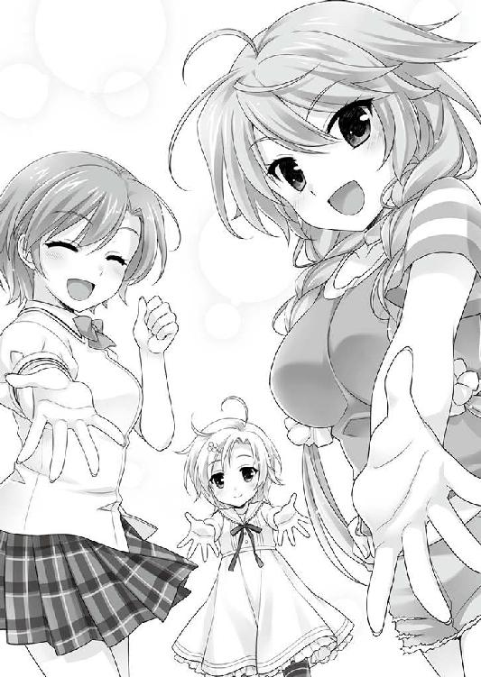
「ちょっと待て！ こんな他愛ないことで、今後の人生が決まっちゃうの!?」
真剣な悲鳴に応えてくれるものは──当然いなかった。
オチが付くのは、今ではない何時か。
千里一條の人生は、まだまだ先へ先へと続いていく。
────よく考えて決めるように。
【ＥＮＤ】
あ と が き
お久しぶりになります日野亘です。
前巻から随分とお待たせしてしまいましたが、『ＰＧ１４』二巻をお届けできることになりました。
時間が経ったせいか、一巻を手がけていた当時と今を比べると、自分の周りも色々と様変わりをしています。色々な出会いがあったり、別れがあったり、愛用のノートＰＣも代替わりしたりと。
人生に変化はつきもの。時に楽しく、時に厳しい変化こそ、人生の旨味なのでしょう。
というようなことを考えながら、この巻を書き上げました。
さて、二巻での物語は一旦終わりを迎えましたが、本編をお読みになった皆さんが、「おいおい」と思われたのであれば、ご明察。今回の二巻と次の三巻は、それぞれ一冊でもお楽しみいただけますが、一組の物語ともいえる造りとなっております。併せてお楽しみいただけましたら幸いです。
なので、次巻はそれほど間をおかずにお届けできるかと思います。この巻で登場したあの人やあの人も、引き続き登板の予定です。よろしければ、もうしばらくお待ち下さい。
それでは、今後ともよろしくお願いします。
最後に、恒例となりましたがお世話になった皆様への謝辞を。
作中の『本』の見せ方など、色々とご相談にも乗っていただいた編集の遠藤様。
今回も力の入った表紙と挿絵を描いてくださった、さえき北都様。
前回にも増して細部のチェックで多くのご迷惑を掛けました、リサイトの皆様。
日々の心の支えになってくださるＴ県民の皆様。
それから、この本を手にとってくださった、全ての皆様。
心から、感謝を捧げます。この本の完成は、皆様の力なしには有り得ませんでした。
ありがとうございました。
日野 亘
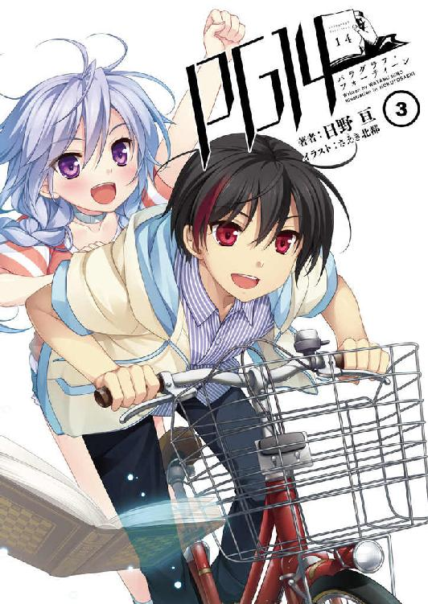
桜ノ杜ぶんこ
ＰＧ１４ ３
日野 亘
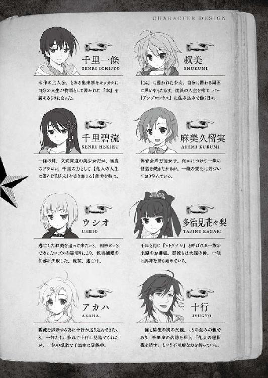
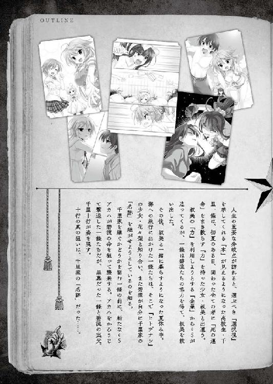
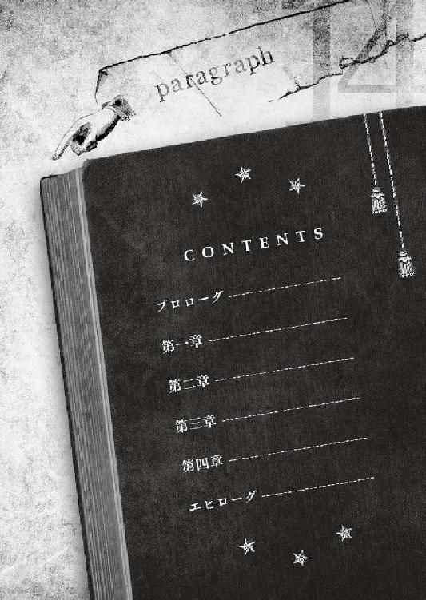
一〇月になると、夏が終わっても居座っていた腰の重い奥志麻の暑さにもようやく終わりがやってくる。
ここ、四国に位置するＴ県奥志麻市では、それが毎年の日常だと学んで早一年。
夏の瑞々しさや鮮やかさに取って替わるのは、しっとり落ち着いた秋の色合い。次第に色褪せていく山や森。水墨画のような風景に混じる一滴の荒涼は、来るべき冬への予感に違いない。
「おーい、朝飯だぞー」
目が覚めたのは、部屋の外から叔美に叫かれたおかげだった。
朝の早い一條にしては珍しく、その日は時間ギリギリまで養豚のような惰眠を貪っていた。といっても、豚がひたすら食っちゃ寝して体重と子供を増やすのは、そのような家畜として最適化されたからで、責任を問うのはお門が違う。野生の豚には牙がある。ご先祖様のイノシシ同様危険極まりない猛獣なのだ。
「そう、僕は豚だ、豚になるのだ！ 荒野を駆ける猛々しい豚に..................ダメだ、やっぱり僕は、養われた駄豚だったよ............」
そろそろ馴染んできた、千里家の二階にある自室。一條は目こそ見開いたものの、ベッドに突っ伏したままガス欠の車と化している。全力でギブアップを訴える身体は、ほんの一センチも持ち上がらない。
枕元の時計を確認し、食べきったアイスキャンディのバーを舐めるように、僅かに残った安らかな眠りの名残にだらしなくしがみつく。
「ダメな飛べない豚でいい。せめてあと三分、現実を忘れていたい......」
──千里の名跡を継ぐ。
姉の碧流に、自分の意志を伝えたのが三週間前。
何事も、決意しただけで成し遂げられるなら苦労はない。宣誓はスタート地点に過ぎず、ゴールテープを切るまでには、努力という歩みが不可欠だ。
その時を境に今日まで、ひたすらに過酷な日々が続いてた。
千里家───奥志麻の『ヒトデナシ』の一角、古くは地守の役を任じられた眷族。
名跡とは、そこに纏わる全ての権威と権限、権利と義務の一切合切である。
引き継ぐと言い出してしまったからには、一條が学ぶべきものは誇張抜きで山ほどあった。そうでなくても古い仕来りの寄席細工のような『ヒトデナシ』の在り方について、例の事故以来記憶を失ってしまった一條は、何も知らない。
例えるなら、小学生に上がったばかりなのに、何をとち狂ったのか大学を受験すると言い出したようなもの。おまけに、入試同様に、タイムリミット付きだった。
一〇月───つまり今月、『真知廻』という『ヒトデナシ』たちの集会がある。一條はその特別な場で、気むずかしくて仕来りに五月蠅い長老たちにお披露目されるのだ。その席で名跡を見事勤め上げられると証明できなければ、千里の沽券に関わる。
──『千里の沽券』にどのくらいの重みがあるのか、一條はまだよく理解できていなかったのだが。
「やる」と誓ったのは自分である。大概の物事には執着しないクセに、一度口に出したことを譲れないのは、一條自身にもどうにもならない性分だ。
しかし、「物事には限度があるんだぜ、旦那」と、肉体が半泣きで抗議している。
立派になった弟に感激して涙目になった姉から厳格な家庭教師に転職した碧流（用意のいいことに、教える時はどこからか度の入っていない眼鏡を持ってきて掛けていた。彼女はカタチから入るタイプなのだ）は、学校から帰ってきた後と店が終わった後で、一條に付きっきりの特訓を施した。
安らかな八時間睡眠は過去のもの。毎日四時間の睡眠時間を授業中に補填する日々。おまけに青色吐息の愛弟へ、碧流は「ナポレオンよりも一時間も多い。喜べ」と言い出す始末。
人権という言葉を残らず破棄処分にされた一條は、ことここに至ってようやく、叔美が姉のことをブラック企業の社長呼ばわりする真の理由を体感した。
これまでは、あれでも自分相手には相当手心を加えていたらしい、と理解できたところで後の祭り。
「......躰が鉛のように重い。このまま夜までこうしていられたら、どんなに幸せだろう。いっそ、ベッドの染みになってしまいたい」
いっそ、継ぐと言わなければよかったのか──などと思い煩ったりはしなかった。
千里一條は、振り向かないのが信条だ。
「反省」に意味はあっても、「後悔」に価値はない。決めたからには、ひたすら前を向いて、道半ばで倒れよう。他人に負けるならともかく、自分で言い出した約束を破るのはだらしなさ過ぎる。信義ではなく、意地の問題だ。
下の一階から叔美の声が届いて約三分が経過していた。
一條が起きてこないのに業を煮やして、我慢の利かない彼女がプライバシー無視で突っ込んでくるまで、猶予は僅か。またしても、恥ずかしい姿を目撃されて穴があったら入りたいぐらい落ち込まされてしまう。
仕方なく、布団の誘惑を振り切って、寝床から一気に立ち上がろうと───
「な、なにこれ!? 動かない!? 動け動け動け！ ちょっと待ってぇ!!」
したところで、上体を起こすことが出来ない自分を発見した。
焦って両腕をばたつかせたが、自由は遠い。
見えない手で胸を押さえつけられているような違和感。
手足が普通に動く金縛りなんて代物は、寡聞にして聞いたことがなかったが、そんなレア現象に遭遇できるとはある意味ツイている。
「ツイてないって！ なんだよ、この新種金縛り!? まさか、先月の事故の影響とか!? 頭を打ってその場で何事もなくて、一ヶ月後に突然死......」
ざわりと。
目まぐるしく回る思考を遮って、被っていた上布団の中程が音もなく盛り上がる。丁度一條の胸の辺り。布切れ一枚で隠された向こう側に、名状しがたい忌まわしいモノでもいるかのような蠕動。
起き抜けの上に金縛られて焦っていた一條が、戦慄に息を呑む。とあるホラー映画の、布団を捲ると見知らぬ女が笑っていて中に引き摺り込まれる、というトラウマ級に恐ろしいシーンがフラッシュバックした。
「うわあああああああああああああああああああああああ」
「───おはようございます、お兄さん。規則正しい生活は気持ちいいです」
シーツがはらりと床に落ちる。
一條の上にぺたりと跨がった格好の少女がいた。
まだ幼さを残しながら繊細で整った容姿は、人間よりも人形のようで、呼吸をしながら動いているという現実感に乏しい。胸にべたりと小さなお尻を下ろしているのに、ほとんど感じない体重が、いっそう夢見心地を強くする。
絹を思わせる銀の髪は寝癖だらけ。ブカブカな男物のパジャマが着崩れて、白く覗いた肩が意外なほど艶めかしくて、ようやく彼女が生きているのだと納得した。
彼女は、見知らぬ女ではなかったが、人間でもない。
どこからどう見ても人間であり、人間のように食事もすれば眠りもするが、どこまでいっても人間とは違う。
九月に一條が出遭ったとある事件以降、千里家の居候二号になった野良ｃＳ───
「あ、アカハ!?」
「はい、アカハです」
朝の日差しに負けない、屈託のないピュアな笑顔。
「そうか。君がしがみついてたから起きられなかったんだ......じゃなくて！ なんで、こんなトコに!? ここ、僕の部屋！」
「いつの間にか、お兄さんの部屋に来ていたんですね。夜中、お花を摘みに出て、間違ってこの部屋に入ってしまいました」
語尾に（棒）とかつきそうな、清々しく後付の理由である。
残念ながら、一條にはそれを問い詰める余裕はなかった。
早朝のけだるさを残らず掃除してしまうように、『本』が自動的に現れたのだ。
１６４─■■■■
窓から差し込むのは、眩い朝の日差し。洗ったばかりのシーツが心地よいベッドの上に、キミとアカハは寄り添っていると、いわゆる朝チュンの状況に相応しい乱暴極まる勢いで、扉が蹴破られた。比喩的表現というヤツだ。本当に蹴破られたワケじゃないぞ。
「おい、一條。呼ンでンだから、さっさと降りてこいよ。何を一人で騒いでンだよ。学校とかに遅れるンじゃ、」
起きてこないキミに苛立って、階段を駆け上がってきた叔美は、猛犬注意のシールがよく似合う形相で飛び込んできて、そして固まった。
「あ、おはようございます、叔美さん」
「あの、叔美さん!! その、こ、これはそうじゃなくて、実は───」
叔美は全くの無表情で、しかし爆走するローラー車みたいに回れ右すると、ほとんど落下するみたいに階段を駆け下りる。
「朝から何事だ、騒がしい」
「おい、トンカチどこだ、トンカチ！ 叩いて砕くから、よこせ!!」
すっかり取り乱した叔美の声が、キミの背筋を冷たくする。
ああ、何という悲劇。このまま悪辣な性犯罪者の烙印を受けるのか？
そんな人生の落日を望まないのであれば、やるべきことをやるしかない。何をやるかによっては、より最悪に落ちぶれるかもだが。
「もっと他の表現方法はないのか!?」
人生に選択は付き物だが、せめて朝くらい平穏に過ごしたいと願う一條だった。
「──という事があって。慌ててアカハをタンスに押し込んで隠して、飛び込んできた異端審問官には、朝だから寝ボケて見間違ったんじゃないっすかーＨＡＨＡＨＡって枕を投げつけて誤魔化したんだ」
「それは新手の惚気か？ それとも自慢か？ ぼくちんの環境は斯くの如く恵まれていますさあ平伏せ、なのか？」
事実を、有りの儘に日常会話程度に話しただけで、クラスメイトに白い目をされた。といっても、しらけた口ぶりがわかるだけで、今日に限って表情は読めない。
「どれも違う。強いていうなら......相談？」
お昼休み。
鷹崎南高校の校庭は、古き良き学校というイメージから抜けきれぬ時代遅れの遺物だ。これ見よがしな洒脱もなく、これといった特徴もなく、学校の校庭コンテストなる頓狂なものがあれば、おそらく丁度真ん中辺りの集団の上位グループの一角という、真に詰まらない位置付けをキープするだろう。
校庭の東側にあるベンチは、日当たりが良く、夏場は影がないので人も寄りつかないが、春や秋には意外な昼食スポットとして広く学生に知れ渡っている。
そこに、二人で陣取って昼食を取っている真っ最中。
アドレス帳の乏しい一條にとって、一緒に食事をするクラスメイトは貴重な存在といえる。気の置けない男同士というのが、重要だ。少し前まで、一條の家庭環境や交友範囲には、試しに他人の視点からの意見を聞いてみよう、と思わせる同性かつ同世代の相手がほとんど皆無だった。
......のだが、今日に限れば大層恥ずかしい。
昼休みを謳歌する場所取りに敗れたマケグミ学生たちが時折前を横切るが、彼らの眼差しは悔しさではなく驚きと同情。
要するに、関わり合いにならないでおこう、というヤツ。
「相談か。ふむ」
貴重なクラスメイトＡこと真田遍昭は、くぐもった声で頷きながら、手作りらしい弁当を頭を飾るアクセサリーの下部分へ掻き込む。
そこに覗き窓があるからだ。
一條は、器用だなあ、と見入っていた。
───こんな恰好で食事できるなんて。
一八二センチの長身は、今日に限っては二メートルある。細マッチョで黙っていれば二枚目の普段と違って、限りなく球体に近い。なのに、突き出ているのはリアル手足で、本体とのミスマッチで、より不気味さを醸し出している。
一條の横に器用に座したクラスメイトの真田は、真田であって真田はない。どこからどう見ても、奥志麻市が誇るゆるキャラ『コウジロウくん』、その人だった。
いわゆる、『中の人』というヤツだ。
「その前に確かめておきたいんだけど、真田は秋でも超厚着しないと生きていけない生物なのか？」
「この恰好のことか？ これなら、演劇部の有志と『マチ☆ダイスキ』のボランティア・イベントで使う予定のヤツだ。四時限目を使って調整してたんだが、ファスナーが壊れて脱げなくなった」
「なるほど、自習時間に姿が見えなかったのはそのせいか。腕を外してお箸持つくらいなら、頭も外に出した方が食べやすくない？」
「人目のあるところで頭は出せない。中の人はいないことになっているからだ」
この『コウジロウくん』は、頭頂部分の一部が外れて中身が顔を出せるようになっているが、機構の問題ではなく、矜持の問題らしい。一條にはよく理解できない。
「俺のことより、さっきの話だが、誤魔化し方の頭が悪い。一の字はどこかの間男か？ この場合、隠した側だから、浮気した嫁の方かな」
わははは、と影のない声で笑えない冗談を口にするコウジロウくん。
「そういう話をしているんじゃなくてだね、僕としては、こういう状況が一度ならず続いているから、どうしたらいいのかと......」
「そういう話だよ。ハーレムを如何に運営すべきか。気苦労が多くて結構結構。役得にはその程度の仏罰がなければ釣り合いが取れん。しかし、だ。一の字に誤魔化される方も、最近の若者にしては素直過ぎるな。住み込みで働いてる女の子がいるという話だったが、その子か？」
実家が寺で、いいトコのボンボンである真田の言動は、時々妙に年寄り臭い。
「......まあ」
叔美のことを訊ねられると、途端に歯切れが悪くなってしまう。
日常の悲喜交々で愚痴を零せる貴重なクラスメイト相手でも、おいそれとは話せない───それが、叔美の人物像だ。
彼女は素性も怪しげだが、そもそも真っ当な手段で入国すらしていない。存在が大っぴらになれば、極めて面倒臭い事態に陥ってしまう。彼女も、その関係者も。
「お姉様に、住み込み少女に、ニューカマーか。やはり自慢でしかないな。敢えて言おう───罪を背負って地獄へ堕ちろ」
「現実は、漫画やラノベみたいに甘ったるい代物じゃないよ。生活感があると夢なんて見られやしない。でも相手は女の子だから、ちょっとしたことでも気は遣うし。だいたいこの世の中......少数派は虐げられると決まってるんだ。女三人に男一人、家庭内で誰のヒエラルキーが最下位か、考えるまでもなく判るだろ？」
姉の碧流は、よほどの場合でなければ一條の味方をするが、それとこれとは話が別だ。
無言の空気による肩身の狭さを嘆くと、『コウジロウくん』が全身で笑う。丸い無表情のそのアクションが、無条件にムカついてしまう一條だった。
「夢を語られて現実は厳しいだとか、詰まらない返しだ。今日日、小学生でも斜に構えて苦界を嘆くぞ。夢を勝ち取る気概を見せろ」
「そもそも、ハーレムの夢なんて見てないし、欲しがった覚えもないし。それに......親戚の子を預かっているだけ......だよ」
───と、アカハについては説明してあった。
社会の枠組みを定めるのはルールだ。いわゆる法律とは限らない、言語や文化、価値観といった規定が共通する範囲を、『社会』と呼ぶ。
例えば、授業を終えて家に戻ったとしても、一條は『鷹崎南高校』の学生という社会の一部だし、コウジロウくんの皮を被った隣の愚か者も同様だ。
ルールは蜘蛛の巣のように張り巡らされているが、真っ当な『社会』である程、普段の生活では意識されないように仕組まれている。
但し───一度道を踏み外したなら、その限りではない。
叔美以上に説明できないアカハの素性は、不法入国どころかｃＳという化物的生物だ。
ｃＳとは、死すべき人間を基に違法に改竄することで創られる人外。外見も生命維持に必要な行為も、一〇〇パーセント人間だが、社会的には完膚なきまでにこの世に存在する筈のない元人間だった。
その筋に発覚すれば大問題になる。が、そこは昔の人が述べている。曰く、「蛇の道は蛇」。『ヒトデナシ』と何百年も付き合ってきた千里家にはそれなりのノウハウがあり、様々な不法を丸く収める有形無形の人脈やパイプには事欠かない......らしい。名跡預かりが手を回してくれたことなので、一條は詳しく知らないが。
「知らない......じゃ、この先は色々すまないんだろうな」
「何を謝る、一の字。己の幸せ指数を世間に申し訳なく思ったか？」
「ただの独り言だよ」
そうか、と気にした風もなく流す大らかな真田。
会話を一頻り終えた一條は、秋の空を見上げて、荒涼と澄み切った青色に目を細める。
どうにも気分が盛り上がらず、さりとて沈んでいる訳でもない。エンスト気味のエンジンを空吹かしするよう。
連日の特訓で疲れが溜まっているのか、それとも朝の名残か。
どちらでもないのを、一條自身がよく理解している。
幸福のカタチは様々だが、穏やかさであると解くなら、変化こそが大敵だろう。一條が、スローライフを愛しているように。
未知の闇を恐れるのは、人の本能に違いない。
それでも───全てが変わってしまうであろう道を進むと決心をした。
アンニュイなのも当然。生き方を変える期日が、もう直前に迫っている。
姉に頼っていればよかったこれまでとは何もかもが違う。後悔はしなくても、プレッシャーはあった。
この先、一條は諸々全てを引き受けていく。
上手く出来るかどうかは、また別として。
深呼吸を一つ。郷愁に似た重さを吐き出して、胸の奥に溜まった空気を入れ換える。
クラスメイトの言い様ではないが、先行きの困難を嘆くのは簡単だ。
名跡を引き継ぐのを選んだ時、そこには約束したという義務感や一族としての責任、不安や恐れだけではなくて、初めての土地へ旅立つような胸を打つ高揚が確かにあった。
諸々全てを引っくるめて、一條は選択した。
しかし、今になってみると、胸の奥はあやふやだ。古人言うところの、喉元過ぎればというヤツか。掌中にあったと感じた何かも、霧の向こう側のように輪郭が定まらない。
「たく、シャンとしろって」
自嘲気味に呟くものの、流石にこちらは相談する訳にもいかない。想いをやや持て余しながら、ふと校庭を挟んだ向かい校舎の一階に漂わせていた視線を止めた。
「あれ......姉さんと久留美？」
視点は彼方の夢想から、地に足のついた半径五〇メートル圏へ戻ってくる。珍しい取り合わせだった。極めて、とやや不吉を付け加えてもいい。
二人は元々知り合い同士だ。千里家と麻美家はご近所同士で、家族ぐるみでの付き合いがあったらしい。以前は足繁く通っていたという久留美も、一條の『事故』以降、滅多に千里家を訪れなくなった。姉の碧流との間にも、それとない一線が引かれていて、挨拶はしても会話をしているような場面は、憶えている限りほとんどない。
「......何の話をしてるんだろう？」
組み合わせが組み合わせだけに気に掛かる。よく見ようと身を乗り出すと、『コウジロウくん』が驚くほど近い距離で見下ろしていて、額をぶつけそうになった。
「果たせよ」
「何だよ、突然。今はちょっと......」
「今、いい機会だろ。お前のお姉様を紹介するという『約束』、忘れたとは言うまい」
「覚えているけど..................考え直す気はないのか」
言い逃れではなく、完膚なきまでの善意で、無駄と知りながら翻心を求めた。
真田遍昭は、自分の言動に責任を持つ男だと、短い付き合いでも理解している。本人が自分の行為を、ロープなしバンジーと理解しているかはまた別として。
真田に限らず、千里碧流の見目麗しさに惹かれる男子生徒は後を絶たない。飛んで火に入る夏の虫の如く告白し、総玉砕。鉄壁のガードに、ついた渾名が『アイアンメイデン』。
その恥ずかしい通り名を聞いて一條が思い浮かべたのは、鋼鉄の如くお堅い乙女のイメージではなく、欧州で魔女狩りに使われたという嬉し恥ずかしアイテム。内側がトゲだらけの棺桶で、魔女と疑わしき輩を突っ込んではある事ない事自白させたという拷問器具の方だった。姉の気性的に、わりと正解だろう。
校庭を挟んだ向こう側の姉本人と久留美はといえば、目を離している間に姿を消していた。二人の話は終わってしまったらしい。
「............まあ、いいか」
「ここへ来てのその煮え切らない態度。さては過剰なシスコンで、俺の姉ちゃんが可愛すぎるから結婚したいマジで、とかいうタイプか？」
「ない。絶対、地球が逆回転してもない」
碧流が立ち聞きしていたら、打ち拉がれて一週間は晩ご飯が生野菜しか出てこなくなるような切れの良い即答に、コウジロウくんは鷹揚に頷く。
「では、問題ないな。ああ、念の為に言っておくと、例の噂なら聞いている」
噂とは、言うまでもなく碧流に纏わるものだ。
碧流は、学校生活では天使の生皮を被り、品行方正文武両道の優等生で通っている。一度ならず生徒会からも誘いを受けたらしいが、家業の手伝いが忙しいからと部活共々断った。
しかし、どれだけ分厚い城壁を築こうと、本性は隙間から気づかぬ内に染み出てしまう。この噂もその一つ。
曰く、「彼女にしつこく言い寄った鷹北高のサッカー部員がどんな末路を辿ったか」。鷹南高生の心胆寒からしめ、まさか事実ではあるまいと笑い飛ばしながら、一抹の不安を掻き立てずにはおかなかった都市伝説である。
「............知ってるんだ、それで？」
恐る恐る、問い質す。
ちなみに一條は、噂が事実とは異なっており、話半分ほど大人しめに脚色されていると知っていた。叔美と一緒に現場へ居合わせてしまったのだから。
「───だから、どうした」
「真田は、姉さんの一体どこが気に入って、そんなにご執心なんだ？ 美人だから？ それとも、格好良いから？」
「お前のお姉様は、普通じゃない。誉めているんだぞ」
あっけらかんと答える。といっても、コウジロウくん越しで表情はわからないが。
「ごめん。とてもそうは聞こえなかった」
「人生は限られたリソースだ。時間、空間。俺は利害に五月蠅い男だからな。自分から普通に丸まりたがる相手と、恋だの愛だのしているほど暇じゃない」
「よくわからないけど、真田が変人なのはわかった」
丁度、澄んだ高音の鐘の音が鳴った。予鈴のチャイムが昼休み終了一〇分前を告げたのをキッカケに、会話を切り上げて一條はベンチから立ち上がる。
「まさか、コウジロウくんで授業に出るつもり？」
「脱ぎたくても脱げない。本番の練習には丁度良いが。......五限目は『数学』、吉本か。五月蠅いジジイだな。一の字は先に教室へ戻っていろ。俺は、もうしばらく脱衣にチャレンジしてみる」
それじゃあ、と校舎へ向かう背中に声が追いついてきた。
「ところで、今日は暇か？ 最近忙しそうにしているが、ストレスの溜まってる顔だ。事情はどうでもいいとして、たまには気晴らしも遊びに出掛けるのも悪くないぞ」
変人のクラスメイトの意外な目聡さに感心し、心遣いに感謝した時、待ってましたと言わんばかりに、目の前へ『本』が自動的に現れた。
２３３─■■■■
予鈴が鳴り響くと、学生の波は水槽の底を抜いたように、一斉に校舎へ呑み込まれていく。気苦労を増やしたくないなら、キミもそうすべきだろう。全力疾走とまでは言わなくても、授業開始に間に合わなければ、吉本教諭お馴染みの長い話を聞かされてしまう。
キミにとって数少ない友人に答えるぐらいの猶予はあった。とはいえ、今日のキミには遊びに行くような時間は与えられていない。
いや、全てを振り捨てさえすれば、自由の空へと飛び出すことは出来るだろう。
開かれたＰＧの最後まで目を通し、末尾に三つほど著かれていた選択視の内容まで素早く確認した。
悩むまでもなく、選ぶべき道は決まっているが。
「悪い。今日は大事な用事があるんだ。............親戚一同が大集会する」
「田舎名物だな。元が村の地主の土地で、区画丸ごと一族郎党なんてのもよく聞く話だ」
「そんなところだよ。真田が『コウジロウくん』になる何とかいうイベントが終わる頃には、暇も出来る」
「『マチ☆ダイスキ』だ。よかろう。遊びに行くのはその時に。ついでに、お姉様も誘っておいてくれ」
「真田って、胸を張ってスキップしながら地雷原に飛び込む生き方だね」
「俺の信条はハイリスク＆ハイリターン！ 地雷が怖くて、人生を楽しめるか」
本気らしい口ぶりに、ちょっぴり憧れる。そこまで自分を信じられる真田が眩しい。
「吉本教諭には上手く言っておくから、脱ぐのを頑張って」
今度こそ教室に帰ろうとして、途中で思い直した一條は、再度引き返してきた。
「あのさ......もしかして、最初に僕へ声を掛けてきたのも、変人枠だったから？」
「一の字、自分じゃわかってなくても、お前は相当変なヤツだよ」
クールに言い切られて、一條は極めて複雑に打ち拉がれたりした。
千里家の玄関は、『アンブロシウス』の店舗の裏側にある。住居と店舗が背中合わせにくっついている構造で、中で行き来も出来るようになっている。
一條が学校から戻ってくると、位置構造上、住居側よりも店側の入口が近い。ものの三〇秒と掛からない差だが、今日は大事な日で、気が急いていた。
店の前を横切りざま、入口のノブを掴むと、どうやら鍵が開いている。時間的に少し早いが、叔美が準備を始めているらしい。
「『本』のヤツは現れない......か」
どちらを選んでも人生の道筋に大差ないなら、数十秒でも早い方がいいだろう。古人は述べた。時は金なり、と。
迷わずショートカット。明かりの点いた店内にただいまと踏み込んで、一條は硬直した。
「....................................なんですか、この人外魔境は」
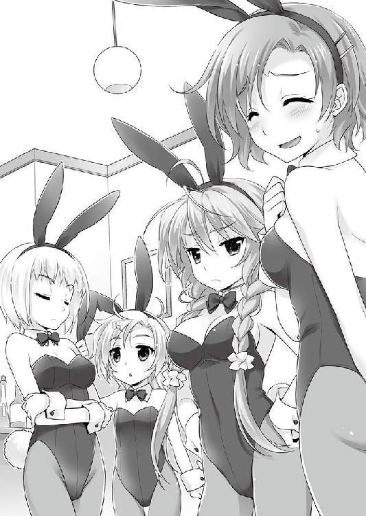
白、白、白。
扉一枚くぐると、見覚えのない鮮やかな白い色が目に飛び込んでくる。白い毛並みならぬ、胸元の白い肌が瑞々しいバニーガールだった。
──バニースーツとは、見た目はレオタードに似ているが、コルセットなどと同様の造りで、スタイルをよく見せる補正効果を持つのである。
一條の脳裏を、重厚なボイス付きのナレーションが流れ出す。どうしてそんなマニアックな知識を、ウブでネンネな草食系青少年が知っているかというと、先週お向かいのコア層向けスナックのママ、オカマダさんに、昔使っていたというバニー制服が倉庫から出てきたと見せびらかされながら、微に入り細に渡ってレクチャーされたからだ。
スーツの補正作用の賜物か、はたまた素材のグレードが高い故か、胸を張り、スラリとした手足を伸ばしたスタイルはまさに完璧で、ウサギ耳と蝶ネクタイと網タイツとピンヒールまで備えた、まさにバニーの化身だった。ここが『アンブロシウス』でなければ。
「どうして、バニー？」
あまりの衝撃で止まっていた脳が、幾らかまともに回り出す。
一條の祖母が開いた『アンブロシウス』は、シックな洋風バーであって、こんな目のやり場に困る生物はいなかった。
健全な青少年としては直視しがたいが目を逸らせない反則的ウサギさんをよく見ると、相手は他でもないウシオだ。
「......どうして、ここに？」
棒読みじみてしまったのは、予想外の相手がいる驚きのせいではなく、単にバニーの白さに脳をやられかけていたから。
「ここのオーナーに呼ばれた。『おい、骨を投げてやるからこい』と」
ウシオは相変わらず素っ気なく返した。整っているが、淡泊で表情を感じさせない容姿は、バニーらしい艶っぽさとは正反対の極地だ。オーナーの発音に含むモノがあったような気がしたのは、きっと気のせいだろう。
「姉さん、また......」
言い切る姉もある意味大したものだが、それでのこのこやってくる方も凄い。
ウシオは、アカハと同じ野良ｃＳだ。一條もまんざら知らぬ相手ではない......どころか、それなりの世話になっているが、元を正せば、叔美を連れ去ろうとした『企業』の走狗。任務に失敗し、紆余曲折の末、奥志麻に居残って潜伏する文字通りの野良ｃＳになった。落ちぶれたと言うべきか、自由の翼で飛び立ったと表現すべきかは、ともかくとして。
「......あれ？ でもウシオ、さん」
ウシオをなんと呼ぶのがいいのか、未だに頭を悩ませる。敵であったり、秘密兵器だったり、バニーだったり、距離感は顔を合わせる度に違う。結局、無難に「さん付け」にしたところで、本日の彼女に微妙な違和感を得た気がした。
（何だろう、以前と違っているような───）
それも一瞬、すぐに別の騒がしさに呑み込まれる。
「やっと帰ってきやがったな、遅いぞ一條」
「お帰りなさい、お兄さん」
なんと、『アンブロシウス』に迷い込んだ兎は一羽ではなかった。ちなみに、兎は一匹ではなく、一羽と数えるのが正しい。
次々と姿を現すウサギちゃんたち。
縦の長さが足りないのに「ボンッ」と「キュッ」がハッキリしているおかげで、独自の色っぽさが扇情的な叔美バニーと、縦とか横とか以前に絶望的にサイズが不足しているせいで衣装が余ってブカブカ脱げ掛けのアカハバニー。
おまけに。
「ど、どう、ですかね......」
照れながらポーズをつけているのは、
「く、久留美まで............どうして、ここに？」
「呼ばれたっす！ 面白いことをさせてやるって!!」
『させてやる』という上から目線が、如何にも碧流らしい。
「さては......今日の昼休みの」
あれは、碧流が久留美を誑している場面だったのか。
「姉さんは一体何の魂胆で......それにしたって、こんな日に久留美まで巻き込むなんて」
「それよりも、どうっすか！ どうっすか!?」
当の久留美は頭の後ろに手を当てて、腰を突き出して、クネクネとくねらせる。安物のグラビアに出てきそうなポーズ。
「どうって、言われても───」
反射的に喉を鳴らしてしまいそうになるのを、男子のプライドで踏み留まる。
──がっついているみたいで、みっともないではないか。
そんな一條のみみっちい矜持と悩みを一顧だにせぬ力が、久留美バニーにはあった。どちらかといえばスポーツマンタイプ。よく走り回るせいで自然に引き締まったスタイルはバランスが非常に良い。上よりも下がプリクリとした日本人的な安産型スタイルはバニー向きとは言えないが、なまじ普段が暴れ者なだけに、素肌面積の大きな恰好をされると、落差の持つパワーが半端ない。
（───ハーレムを如何に運営すべきか。気苦労が多くて結構結構）
昼間、真田が余計なことを吹き込んでくれたせいで、過剰に意識しそうになって困る。
ここに至って、一條もようやく理解した。
──これは、極めて不利な状況だ、と。
「ど、どうして、こんなことに」
「勿論バイトとして雇った。何が起きてもいいように」
入り待ちしていたバラエティ番組の司会みたいなタイミングで、碧流がカウンター横のバックヤードへ続く扉から店内に入ってきた。
「姉さんは、普通なんだ」
碧流はいつも通りの恰好だ。ホッとするやら癒やされるやら。
「ふむ、見たいのか？ こんな品のない恰好、私に似合う筈ないが、愛弟のたってのリクエストというのなら......考えなくもない」
「いや、その......別に見たいというワケでは......」
それにしても、本心ダダ漏れのヒドい告白をされてしまった。姉がヒドいのは今に始まったことではないが。品がないと思う恰好を、他の女の子にさせるというのはどういう了見なのだろう。
「何も言うな、一條。理由を知りたいのだろう。───説明しよう！ 『マチ☆ダイスキ』に備えて、我が店もアルバイトを増やすことにしたのだ」
「..................そんなに人手が足りてなかったの？」
「ないのは人手じゃない。金なのだよ」
キッパリとゲスいことを言い切られてしまった。言い切り過ぎだった。
「お金がないのにバイトを増やしたら、更に経営悪化するんじゃないの？」
少なくとも、この中では最も常識人のつもりの一條には、碧流の振り翳す新手の方程式が全く理解できない。
それよりも───
この姉が「金」を取り沙汰するほど、一條の知らないところで『アンブロシウス』は困窮を極めていたのだろうか。
経営は日々そこそこ。大繁盛とは言わないまでも遣り繰りできている。常連客が大半なのは、大通りに面した大店舗ではないからだ。それが、あくまでも薄皮一枚の、姉の優等生ごっこと同じ外面だけだとすれば。
「いかがわしいガールズバーにモデルチェンジするくらいに経営が苦しかったのなら、一言相談してくれれば......わかった。他にバイトを入れられないか考えてみる。早朝ならやれるだろうし」
「何の話をしているのだ、弟よ。『アンブロシウス』はそこまで逼迫してないし、お祖母様が拓いた大切な店を、そんな低俗にモデルチェンジするつもりは毛頭かつ金輪際有り得ない」
そうだったんだ、と素直には納得できない。
碧流は何事にも如才ない反面、ここぞというところで、大きなミスをしでかして進退窮まることがことがままあった。
ちなみに、そんな時は決まって、勢いと高スペックに任せて強引に荒野を踏破した挙げ句、周りが流れ弾を喰らう羽目になる、というオチが付く。
改めて肌色ましましな店内情景を注視......しようとしたが、どうにも照れくさくて明後日を向いてしまった。
「一〇月半ば。いよいよ本番が迫っている」
久留美も居る場だから、気を遣って直接言葉にはしなかったが、本番が『真知廻』のことなのは説明されるまでもない。
『ヒトデナシ』たちの大集会『真知廻』は、毎年一度行われる。本来的には、古式に則った儀礼を奉納する「会」だが、自分の土地に引き篭もりやすい現存する『ヒトデナシ』たちにとっては、遠方の同類と顔を合わせる貴重な機会だ。
「今年は、新規顧客の開拓と地域貢献の為に地元イベントともタイアップし、昼間も臨時営業を行っている。更に人手が必要になってしまうのは当然だろう。だがしかし───」
「......しかし？」
ごくりっ、とさっきとは違う意味で喉を鳴らす。
「これ以上、賃金を払いたくない」
一国の浮沈を左右する大物政治家の如く、重厚に背を向ける姉。
「払えよ、オニチク!!」
叔美の至極もっともな主張は、完全無視だった。
「私は考えた。お金を使わずに......仮に涙を呑んで払うとしても、出来る限り安上がりに従業員を増やす手立てはないものか。そして、閃いたのだ、悪魔的アイデアを!!」
碧流がおもむろに振り向く。回れ右して逃げ出したくなる、いい笑顔だった。
「それが（ババーンッ）！ このメンバーだ（ジャジャーンッ）!!」
「あの、姉さん。さっきから......すぎる台詞が続いているんだけど」
一條からの控えめな糾弾も、さらりと無視された。
元々住み込みで従業員をしている叔美や、幼馴染として付き合い自体は長い久留美、ギリで居候二号のアカハを舌先三寸で丸め込んだのはまだしも、散々世話になっているウシオまで巻き込むとは。
「バイト代が出るそうだから」
「聞いたか、一條。本人はこの通り大喜びだ。何の問題もない」
「ちゃんと払うんだ！ さっきの口ぶりだと、タダでこき使うのかと」
「時給九九円」
「いかにも」
淡く頷くウシオと、悪魔でしかない笑顔の姉。
「ええええええ────────マジで!? いや姉さん、それは、いくら何でも......」
「いいか、一條。グローバル経済を勝ち抜く為には、人件費を極力抑えて、安い賃金で労働させなければ、競争力を確保できないのだ。それに、ｃＳには労働基準法も最低賃金も労働時間制限もないからな、くくく」
「『アンブロシウス』は地域密着型自営業だから、グローバル関係ないよ!? ルール無用すぎる！」
事情を知らない久留美に聞こえないよう、後ろ半分は小さく呟きながら悪の女幹部のようにほくそ笑む姉に、同様に囁き声で抗議する。無力だが。
「ああ、血の繋がった弟として、この暴虐を見逃して良いのだろうか......」
一條は過酷な労役義務を強いられたバニーたちを見回して、
「..........................................」
直視するのが恥ずかしくて、また目を伏せてしまった。
躰のラインが見事に浮き出してしまうスーツ、胸元に覗く綺麗な肌色、脚線美をより綺麗に見せる網タイツ。そして、頭のウサギ耳とお尻を彩るキュートなふわふわ尻尾。
一〇代の青少年の本能を、鉄槌の勢いで直撃する。危険すぎだ。
「照れてやがンのか。おいこら、こっち見ろよ、一條」
叔美が、さっきまでとは明らかに違うニヤニヤ顔で絡んできた。
「別に......照れてないし」
「じゃあ、こっち見ろよ、ほらほらー、どうだ、オッパイだぞー」
抵抗すると構いたくなるのは人類目猫科の叔美には本能だ。タチが悪いことこの上ない。
「見たくないよ、見せるなよ」
「じゃあ、何で赤くなってやンがだよ、ほらほらー」
おまけに碧流までが。
「こっちを向かないか、一條。まだ話の最中だぞ」
「人間には出来る事と出来ない事があって」
「だから、何の話をしているのだ、弟よ......ん？ なんだ、叔美」
勢い込んだ碧流の袖口を、叔美が真顔になって引っ張っていた。
「一條のヤツがあンな顔してンだけど......もしかしてっていうか、やっぱっていうか、この服、エロッちーヤツなのか？」
文明や人間と隔絶してきた叔美の知識は、酷く偏っていた。それでも、一條の反応から、野生の本能で危険さを感じ取って、バニースタイルの胸元を無邪気かつ素直に抓んで引っ張る。
危うく中身のふわふわが溢れそうになって、一條は吐血し掛かった。
「それなりに、エロッちーかもしれない」
「以前、連れて行かれたカジノにも、こういう恰好の女の人がいました」
碧流は自分の都合で黙っていたが、ウシオとアカハには関係がない。
こと社会的な一般常識については、叔美よりも人間ではないｃＳ二人の方に分があるというのも、何やらおかしな話である。
「......ちっ」
「今、バレたか......みたいに舌打ちしやがったな！ やっぱ、エロっちーのかよ！」
「何を言う、叔美！ アカハも言ったろう、『カジノ』で見たことがあると。ここと同じ真っ当な職場で使われている、由緒正しき代物だ。エロっちーなどということはない。断じてない」
「お、おう......そういうもン......なのか？」
無駄に強力な眼力で、強引に押し切られそうになる少女。
「姉さん、いくら何でも今のはないんじゃないかな。叔美は根が素直なんだから、嘘を教えるのは良くない」
「い、一條───」
碧流は、目に入れても痛くない弟から人の道を説かれて、愕然としていた。
「騙しやがったのか、オニチク！ おい、何とか言え！」
「い、いかがわしいかどうかの問題ではない！ これはオーナー命令だ。今夜から制服は、これなの！ みんな、これを着るの!!」
風向きが悪くなってきたからか、面倒になったからか、碧流が逆ギレ気味に宣言する。
「でも、姉さん───」
言いかけたところで、ちょっと待ったというような気安さで、『本』が自動的に目の前へと現れた。
２９８─■■■■
ここは花の国か、あるいは伝説に謳われるアヴァロンなのか。
『アンブロシウス』の店内は、秋とは思えない白い花園と化し、見目麗しいウサギたちが飛び回る。注意を怠るな。昔話にも、楽園に招かれて鼻の下を伸ばしていると、外の世界ではあっという間に一〇〇年が過ぎ去ってしまった......なんて説話が残されている。
「みんな、これを着るの!!」
碧流が無茶を言い出すのは、今に始まったことではない。
叔美はともかく、久留美やｃＳの二人は事態を受け入れている。イヤという表情でもないようなので、敢えて口を挟むかについては一考すべきかもしれない。
叔美に納得させるだけで、この場は丸く収まりそうだぞ。
叔美を丸め込むのであれば／２２２─■■■■ へ行け
敢えて、碧流を追求する場合には／３６９─■■■■ へ行け
君子は危うきに近寄らない、と賢明さを発揮するのなら／１１４─■■■■ へ行け
毎度のことながら、著いてある内容よりも、この程度のことで左右されてしまう「人生」の羽の如き軽さに、一條は苦笑いしてしまう。
香港で蝶が羽ばたくと地球の裏側で嵐になるのだと、以前に真田から教わった。
始点での僅かな角度の違いが、やがては巨大な差になってしまうという喩え。「人生」も然りだ。ここでの選択視で、少女たちの一條への心証に小さな変化が起きれば、その後の成り行きがドミノ倒しのように変わっていくこともある。
───おお、人間なるものよ、その滑稽さよ。
以前の一條は、その軽さっぷりを突き付けられて、悩みもしたし、打ちのめされもした。
しかし、人間の適応力はずば抜けている。どんな非日常も繰り返せば、詰まらない日常へと色褪せてしまう。
人生が危険と隣り合わせなのは、特別ではない「当たり前」だ。
社会とは、不吉を遠ざけるのではなく、忘れさせる為にある。日常という薄氷一枚の下は奈落だと気づきながら、人生を謳歌するのは難しい。
人は、忘却を武器に、困難を乗り越えていく。......時々、過去全部忘れてしまう莫迦者もいたりするが。
「───」
一條はしばし文面を熟考する。といっても、時間にしてほんの一秒か二秒足らず。
口を挟むのは考えものとあるのに、注意を怠るなと記述されているのが不穏だし、「碧流を追求する／３６９」のＰＧだけ、他に比べて高めなのが気に掛かったが。
三つの選択視はどれも三番台以下。火急の危機は少ないとなると、大事なのは自分が何をしたいか、だ。
「この恰好に理由があるなら、教えて欲しいな。そうでなくても、姉さんは一人で突っ走るんだから。説明してくれないと解らないよ」
怯まない一條の追い打ちに、「ぐむむ」と檻の中の人食い熊みたいに唸る姉。
「理由あンのか？ 言えよ、オニチク」
叔美も、数ヶ月の付き合いで、こういう場合の碧流がロクでもない企みを誤魔化そうとしてるのだと学んでいた。
普段なら、それでも地位と経済を武器にやり込められる処だが、今日は援軍が優秀だ。
「ワタシも聞きたい」
「アカハもです」
「賛成、賛成っす！」
ウシオにアカハ。おまけに久瑠美まで加わる。要するに碧流以外の全員から証拠の提示を白い目で要求された被告人は、追い詰められて、敢えなくゲロった。
「......今夜、ジジイ共がやってくるのは、覚えているな？」
「忘れるわけないよ。おかげで、昨日もゲロ吐くまで特訓だったんだし」
昨日だけではなく、一條への特訓は三週間土日祝なしで行われた。
そして、本番の『真知廻』を来週に控えた今夜───『アンブロシウス』に、奥志麻に隠れ棲む『ヒトデナシ』の長老たちが集まってくる。『真知廻』は、奥志麻の『ヒトデナシ』が仕切るのがルール。その打ち合わせの会合だ。
但し、それは表向き。
今夜は、千里家の名跡としての、一條の華やかなりしデビューを兼ねていた。
真田に言った「親戚」の会合とは、他でもない、今夜の集まりのこと。
碧流が敢えて前倒しのデビューを善しとしたのは、『真知廻』にぶっつけ本番で挑むよりも、リハーサルがあった方がいいと判断したからだろう。万一、最悪の失敗をしでかしても、本番で失地回復を図れる。
一條としても、それは有り難い。
手順は何度も練習したとはいえ、完璧にはほど遠い。緊張でガチガチになったままでは、やり直しの利かないステージで、どんな無様を晒すか知れたモノではない。
実のところ、今夜を思えば胃が裏返りそうだったが、少しでも空気に馴れる場があるというのは、天から垂れてきた蜘蛛の糸にも似た、ささやかな救いである。
それに、一條にとっては見逃せない気掛かりがもう一つ───
『ヒトデナシ』の社会は、外側を寄せ付けない分、内側の結束は堅い。それが土地の者同士で、物理的な距離が近いなら尚のこと。
当然ながら、今夜の客人たちの多くは、以前から何らかの形で千里家と付き合いのあった者がほとんど。つまり───
〝千里一條〟とは、確実に面識がある。
一條が記憶を失ってしまったことは、身内以外には隠し通している。
かつての自分を知っている人間が一人どころか大勢集まってくるこの状況は、地平から迫る敵の大軍に剣一本で飛び込んでいく古代の英雄さながらの無謀。
至極当然だが、一條は英雄ではない。
三週間の特訓では、山ほどの仕来りや挨拶の手順の他に、如何に記憶の不備を誤魔化すかについて、前世紀に隆盛したスポコン漫画も真っ青な血の汗が流れたものだ。
「それとバニーに、どういう関係が？」
「あるのだよ、弟よ。いいか、枯れた性悪ジジイほど、身の程知らずに若い女に気を惹かれるもの。古くさい漬け物が。いつまでも春が去ったと認められず、現世にしがみついて───だが、そこが付け目なのだ」
どこから見ても完璧に悪魔な笑顔。
「脳の皺が少なくなったジジイ共を、ピチピチ（死語）のヤングパワーで悩殺（死語×２）して、注意を分散させ、かつ一條への心証を良くするのだ。これぞ、日本企業に古来より伝わる、伝統的なコミュニケーションメソッド、〝ゲイシャ・セッタイ〟!!」
「姉さん、悪辣すぎる......」
「どんな汚名も甘んじて受けよう。そうでなくても我々には、厄介なハードルが幾つもある。それを一括解決できる手段だ。今回に限り、私は弟の為ならば鬼となり、如何なる非道な真似も躊躇わない」
一條は「それって今回に限ってなくない!?」と思ったりもしたが、こと此処に至っては些細な問題なのでツッコまなかった。
「事情を説明したからには、もはや否はあるまいな、ウサギ共。一條の為に、（言葉通りの意味で）一肌脱いでもらうぞ」
「......よくわかんないっすけど、イチジョーの為なら、久留美がんばります!!」
無駄に元気の余っている久留美が両手を挙手して恭順する。
アカハも無言でコクコク頷いていた。ウシオに至っては、事情はどうでも良さそうだ。叔美も「しかたねぇなぁ」みたいな顔で、ウサギ耳の生えた頭を掻いていた。
「その......ありがとう」
予想もしない全会一致。自分の為に他人がこんな風に頑張ってくれるのがくすぐったくて、一條は照れくさそうに礼を述べた。
「ナニいってやがンだよ。別にオマエの為じゃないからな。アタシ、これでも従業員なンだから......仕方ないンだぞ」
叔美こそ、頬をほんのり染めながらボヤくフリをして、そしておもむろに、事の起こりを指差した。
「じゃあ、オマエもなれよ、ウサギに。一條のためなら何でもすンだろ」
「あん？」
全く予想外というように目を見開いてから、碧流はこれっぽっちも悪びれもせず、
「言った筈だ。あんな品のない恰好、私はイヤだ」
「ひどい、ヒドすぎるっす！ 着れば結構悪くないっす」
「テメーだけ逃げンのか、つか、ヒドーな真似されてンのはアタシらじゃねーか!?」
「オーナー、非道」
「アカハはどっちでも良いです」
碧流が、一通りの非難を鉄面皮で跳ね返すのを待ってから、
「でも、姉さん。さっき、『みんな、これを着るの』って言ってただろ。『みんな』なんだから、姉さんも着るつもりだと思ったのに、もしかして違うの？ いや、僕は姉さんが自分で言ったことを裏切るなんて思わないけどね」
一條は、人畜無害な顔で毒を盛った。人生とは、中々思い通りには行かないモノである。この姉にも、たまには薬を効かせた方がいいだろう。
「なん......だと......!?」
碧流にとって、かつてない窮地だった。
愛弟に「姉さんの格好良いトコ見てみたい」と言われてしまっては、あっさりと前言撤回するわけにもいかない。出来る出来ないではなく、矜持の問題だ。
愕然と店内を見回したが、暴君に救いの手を差し伸べる聖人君子の従業員は皆無だった。当然だが。
古人は述べた。因果は巡る糸車、だとか。
人間、普段の行いからくる負債は、一番辛い時に、たっぷりと利息を付けて返済を要求されるものである。
「むっ、くっ......当然だ、任せておけ!!」
碧流は、愛弟の差し出した杯を、死ぬと判っていても手に取った。
まさに姉の鏡、といえるかもしれないし、言えないかもしれない。
大船に乗った気でいろと胸を張るリーダーと、泥船に乗せられて白い目を送るギャラリーたちの間には、深くて広い川が流れていたが、それはそれ。
碧流将軍は戦装束に着替える為に、満身創痍の身体を涙目で引き摺りながら、奥へと引っ込んでいった。
「単純っていうか、意地っ張りだよな」
叔美が遠慮なく笑う。敵意はあっても悪意はないので、イヤな感じを受けないのが叔美らしい。
「ああいうところが、姉さんの良いところじゃないか」
「それぐらいないと、悪いとこだらけだろ。ところでさ、『みんな、これを着るの』ってことは、当然一條も着るンだよな？」
「なん......だと......!?」
悪意の欠片もない素直さで、叔美は一條を追い詰めた。
暴君を後ろから刺して平和が訪れたのに、流れ弾が飛んでくるとは。愕然と店内を見回したが、救いの手を差し伸べるウサギガールは皆無だった。
しかし、それこそが世の摂理であると、一條が世間知らずであっただけ。古人は述べた。狡兎死して走狗にらるる、だとか。強大な支配者を打ち倒した後に待っているものが、遺産の相続権を争う内輪揉めと口減らしであることは、数多の歴史が証明している。
「それ、いいっすね」
意を得たりとニンマリ笑った久留美が、後ろに回って退路を断つ。
ウシオとアカハが手を打ってからゆっくり近づいてくるのを、絶望で見る。
「い、いやああ、まってえええ────────────」
悲鳴はアンブロシウスの闇に吸い込まれ、誰にも届かずに消えた。
───笑うのも此処まで。
今夜から、新しいステージが始まる。
「今夜は、ようこそおいでくださいました。手前、このたび千里の名跡を引き継ぐことと相成りました千里家は長男、名は一條と申します。以後、何とぞお見知りおきくださいますよう」
舌の噛みそうな口上を、淀みなく述べる。
言い終えてから頭を下げる角度と頭を上げるタイミングに至るまで、細々と決まりがあって、何一つ狂ってはならない。
折り目のように筋の通った姿は、普段の空気みたいな少年とは別人のよう。
何も知らないクラスメイトたちが目撃すれば、一條は背中にゼンマイでも仕込まれたのか、姉君にご注進だと一騒動持ち上がること請け合いだった。
こともあろうに、その姉君が本日今夜の仕掛け人である。
『アンブロシウス』の夜。
仕事帰りの常連客が訪れだし、店内に人の気配と静かな賑わい、あるいは雰囲気台無しの馬鹿騒ぎが満ちる頃合いだが、今夜は普段とは違う顔ぶれが並んでいた。
ロココ調の流れを汲むデザインの古びた入口の扉には、「本日貸し切り」のプレート。
客には男も居れば女も居たが、皆年寄りばかり。
お仕着せで完全武装した一條とは反対に、肩肘張らない恰好で飲み食いしながら世間話に興じている姿は、町内会の寄り合いといった様子。
これが奥志麻に巣くう『ヒトデナシ』の長老会だ、と言われて一体誰が信じよう。
「タチの悪い冗談にしか思えないな」
苦笑というか、どこか呆気に取られた顔で一條がごちるのも当然のこと。
老人たちは、社会の影で異端の血統を現代に伝える者どもの「長老会」。さりながら、ご大層なネーミングとのイメージ落差は、実物の戦車とタ●ヤ３５分の１スケールモデルほどもある。
「ようこそおいでくださいました」
一條は新手の長老が到着する度、姉に付き添われながら、鹿威しのように頭を下げて、前近代の香り漂うカビの生えた口上で出迎える。
最初、碧流から教わった作法に反吐を吐きそうになったが、決まり事であるからには否も応もない。
今夜はマシだ。公式の場ではないので、短くお手軽化されている。『真知廻』の本番では、任侠映画でお馴染みの顔合わせシーン並の長々しい版で遣り取りしなければならない。考えただけで気が滅入りそうだった。
一條の今夜の恰好は、いわゆる紋付き袴の一張羅。
過去が全部失くなってしまった、あの「事故」以前。まだ存命だった祖母が、いずれ来る「今日」に備えて用意していたものを仕立て直したものだ。
顔も思い出せない祖母は、一條が千里家を継ぐのを必然の慶事と考えていたのか。それとも、逃げられない悲しい成り行きを、せめて華やかに見送ろうという心遣いだったのか。
ふと頭を過ぎった問いの解答を、今の一條は悲しいほどに推し量ることが出来ない。
──訪れたのは、夢見ていた何時かの明日とは、きっとまるで違う今日。
「おっと......余計なこと考えてる場合じゃない」
魔の差したような切なさを振り払い、己がやると決めたことに立ち返る。スイッチを切り替えて、シンバルを叩く猿の玩具さながらに碧流執筆の脚本の配役をこなす。
碧流との血で血を洗って肉まで削りそうだった地獄の特訓の甲斐あって、立ち居振る舞いは、まずまず上出来と自己評価した。ところどころ怪しいが、一見では判るまい。
所詮、人間、外見が全てだ。
中身は鍛えるのに時間と手間が掛かるし、分かり易いカタチとして目に映らない。人格や行動が人物の評価を左右するのは、互いに一歩を踏み込んでからの話。
まずは外見。服装を小綺麗に整えたり、仕草に気を遣うだけで、他人に与える心証はがらりと激変する。
要するに、世間の風は不細工に慈悲がない。
天使の着ぐるみを愛用する姉は、あれでも勢い任せの行き当たりばったりではなく、極めて現実的だ。短期集中特訓によるレベルアップという漫画じみた夢物語をさせるだけさせておいて、基の実端から放棄していた。
（───いいか、一條。それになるのではなく、それらしくなるのだ。今回は、名跡という名に実を追いつかせる必要はこれっぽっちもない）
特訓の開始にあたって、碧流はそう宣言し、一條はこの姉にしては存外低いハードル設定に安堵した。もちろん、碧流には、今夜を乗り切ってそれで良しとするつもりは毛頭なかった。
役者が不足しているならば中身を詰めて役が不足するようにしてみせる───という実の姉の誓いを、一條は知る由もない。
今はまだ、与えられた役割をそれらしくこなすだけで十分な───いい夜だ。
「疲れたか、一條」
脚本通り店内で挨拶を済ませ、実家と繋がる通路を兼ねたバックヤードへ粛々と戻ってくると、監督から労いの言葉を掛けられた。
「疲れてるのかどうかもよくわからない。お腹と肩がちょっと重い」
見た目は普通のお年寄りでも、相手はひと角の顔役たち。只でさえ見ず知らずかつお偉い相手に失敗してはならないという緊張で、一條は息すらロクに出来なかった。
「ここでは、力を抜いて大丈夫だぞ」
「そうしたいんだけど......顔、元に戻らない」
我ながら堅くなり過ぎだと苦笑いしようとしたが、表情は凛々しく口元を引き締めたまま固まってる。重傷だ。
「まだ序の口だぞ。長老が全員揃ったら、『真知廻』の打ち合わせをする。......まあ、決めるべきことは万事滞りなく終わっている。最終的な確認だけだ。私もいるし、打ち合わせ通りの返事をすればいい。教えていないことが出てくれば、こっちで処理をする」
弟とは裏腹にノリノリで瞳を輝かせている。追い詰められた鉄火場になると、妙に生き生きとする姉なのだ。本質的に、平和よりも乱世を好む資質なのだろう。幕末や戦乱の時代に生まれていれば、傍迷惑なほど名を成したかもしれない。
「もっとクソヤバい連中かとクソ思ってたのに、普通のクソジジイとクソババアじゃねーか、クソ!!」
タイミングよくバックヤードのドアを蹴っ飛ばして、口汚い叔美バニーが帰ってきた。
ここは両開きの頑健な作りだから、軽量級の叔美のキック程度では壊れないが、湯水のように消費されていく空ジョッキや空皿を一杯に抱えた少女は、どう見ても断末魔寸前の狂犬みたいな顔をしている。
「クソが付きすぎだよ。ちっとも普通じゃない......何かあったのか？」
「何か、あったか、だあぁぁぁ？」
いい笑顔での返答。一條は戦慄の予感にぐびりと喉を鳴らして、一号バニーが親の仇の如く睨み据える店内を、ドアの隙間から覗いてみる。
「ウサギちゃん、こっちおいでよ～」
ウシオバニーが、異様に盛り上がった店内を動き回っている。その白いふりふり尻尾が傍を通る度に、邪悪で忌まわしい存在めいた奇声を発しながら、鼻の下と手を伸ばすクソジジイ共。
「おっと、ジョッキと間違ってしまった！ すまぬのぉ～、ゲハハハ」
「故意だよ、今、完全に狙ってたよ！ ジョッキ持ってなかったし!!」
踊り子さんに触れてならないという不文律に、軽快なスルーっぷりを発揮する老人たちは、どこからどう見ても最悪だった。完全に出来上がっている。
当のセクハラ被害者はといえば、おいたの手にも見事なまでの無反応。むっちりとしたお尻を揺らしながら、混沌の店内を熱帯魚の華麗さで泳いでいく。言いつけられた仕事を完璧にこなす。まさにバニーの鏡そのもの。
その態度にむしろ闘志を掻き立てられたらしく、老人たち──の内のジジイ共の目がエロエロと光る。
「......姉さん、今夜は打ち合わせするっていう話じゃあ」
開いた口が塞がらない一條は、緊張のあまり、周りの状況がこれっぽっちも目に入っていなかったのだと思い知った。
「うむ。これぞ、老いらくの春......というヤツか」
「春じゃなくて、ぶっちゃけ地獄絵図だよ！ 本来の目的、完璧に忘れちゃってるよ！」
「年寄りは物忘れが激しいのだ」
他人事のような碧流の返事が清々しい。
「追加の料理持ってきましたよー。叔美ちゃんは、こっちの料理をお願いします！」
久留美バニーが、奥のキッチンから大皿やらジョッキやらを運んできた。一條からは過積載にしか見えないが、コツがあるのか大量のジョッキから雫一滴すら零さない。元々器用で敏捷なのだろう。
本来、一般人の久留美をこういう事に深入りさせるのは望ましくない。しかし、古人は述べた。背に腹は代えられない、と。
今夜は突っ込んだ話はないという判断で、碧流が人手不足解消を優先したのだ。
ちなみにウサギ四天王最後の一人──アカハは、こんな時間にバニーとして働かせているのが関係者以外の目に留まって拡散されでもしたら、ご時世的に色々以上に問題が多すぎな為、目立たぬよう奥で洗い物の手伝いなどを任せている。
「またクソジジイどもの相手すンのか。いっそヤっちまっちゃぁダメなのか？」
「今夜のお披露目が終わるまで待て。それが済めば、何が遭っても（私は）一向に構わん」
普段ほのぼのといがみ合っている二人なのに、こんな時だけ嫌なぐらい意見が一致する。
「二人とも目が本気過ぎて怖い......久留美、今夜は姉さんが巻き込んじゃってごめん。バイト代、出来るだけ出すように戦ってみるから」
「いいっすよ！ イチジョーの為なら、諸肌脱いでべらんめいっす！」
両手が塞がっていなければ、腕まくりして力瘤の一つでも作ってみせたかもしれない。
「ありがとう」
久留美の好意に、素直に感謝する。
「こーいう場合はですね、イチジョーらしくガシガシって───あ......」
パワフル少女の、自分の髪を優しく掻き回すような親しげなジェスチャーは、おそらく以前に何度もあったことなのだろう。
壊れた時計の逆回り。
久留美は不用意を悟って言葉を呑み込んだが、手遅れだ。
「────────」
季節外れの、冬の吐息に似た触れがたい空白が現れる。ドアの向こうの喧噪も、スクリーンに浮かんだ映像のように遠い。
一條も、久留美も、目撃してしまった碧流も、咄嗟に次の言葉を見失っていた。
その場の誰にとっても、とうに消えてしまったものの欠片が降り積もる。
───白く厳しい雪のような過去。
人の時間は、孤立してはいない。記憶とは、自分と世界の交点だから、一條が振り向かなくても、ふとした弾みに通り過ぎたものが顔を出してしまう。
自分が喪ってしまったのだと、否応なく突き付けられる瞬間。
「おらおら、いつまでもサボってンなよ！ テメーら、さっさと働け！」
無遠慮すぎる威勢の良い声が、固まった空気を叩き割った。
両手でジョッキを三つずつ運びながら、邪魔な一條を軽く蹴り飛ばし、突っ立っている久留美の背中を肩で店に押しやって、叔美は後ろも振り向かずに戦場へ飛び込んでいく。
「..................うっす！ 久留美も行ってきます！」
元気だけは売るほど余っているいつもの顔に戻った久留美が、後に続いて突撃する。
時計は、再び現在を刻み出す。失ってしまったものは還らなくても、今という時間はここにある。
一張羅の裾を直して、一條は集中力を巻き戻す。白い季節は去った。ここは再び、季節外れの春の園だ。
「気を遣うなんて、全然似合わない真似して......。店が捌けたらお礼を言わないと」
「その必要はない。あれは本心からの台詞に違いない。それに、この程度も役に立たないのでは、無駄飯を食わせている上に、バイト代まで払っている甲斐がないというものだ。むしろ、お礼を言うのなら今夜のお膳立てをしたこの私ではないのか......」
普段の調子を取り戻しなおかつ不機嫌そうにごちる碧流が、明朝にはパック詰めにされるとも知らずに飽食を続ける養豚を見るような冷淡さで、店内の様子を一瞥する。
「どいつもこいつも孫みたいな歳の娘に鼻の下を伸ばすとは......年々我慢が利かなくなるな。老い先短い人生の残高、皆皆巻き上げてやろうか」
「姉さんも恐ろしいけど、店内の状況も違う意味で恐ろしいよ......」
今も魔の手が腰のふわふわに伸びて、叔美は首を絞められた野良猫みたいな悲鳴を呑み込んだところ。意外なくらい乙女っぽい反応で途惑ってしまう。
「なにしやが......ンですか、このクソジジイ」
「すまんのう、年寄りは目が悪いんじゃ、フォッフォッフォッ」
宇宙忍者めいた怪笑をあげるジジイに、少女は火の点いた爆弾みたいな顔。
今すぐ大暴れしたいがこの場をぶち壊さないよう必死で耐えているがもう限界──なのが丸分かりの表情だ。
「......ああ、胃が痛い」
振り切れてグルグル目になった叔美がビールジョッキをジジイの脳天に突き刺してしまわないか、とても見ていられなかった。
「これで全員か？」
「口先男は来てないな。所詮、流れ着いた余所者か」
「丘の上の学校では、また一騒動起きたらしい。だから厄介の種だと儂は......」
「動物園の移転話の時にゃぁ、真っ先に手を挙げて、しこたま儲けておったクセに。欲呆けだけじゃなく、物覚えも呆けたか」
「知事選が近いが、どうなることやら。例の新都市計画の件もあるしな。開けて人が増えるなら万々歳だが」
「あたしゃ、反対だね。静かだけが取り柄の土地さ」
耳に入る遣り取りの大半は、叔美にとって意味をなさない。そもそも、理解が追いつかない。ただ、世界の何処にいっても、土地ごとの暮らしや事情があるのだと思いやる。
集まった老人たちの枯れ木じみた躰のどこにそんなエネルギーがあるのか。喧噪は既に数時間。勢いを増しこそすれ治まる気配はなく、本来主役である筈の一條は、碧流と一緒になって『アンブロシウス』の表と裏を行ったり来たりで休む暇もない。横目で見るからに死にそうだったが、他人事ではなかった。
「「ぐええええ、もうダメ..................」」
バックヤードに何十度目かの帰還を果たすなり、叔美と久瑠美は遂に力尽きて異口同音に突っ伏した。かつての野良生活で体力には自信のあった叔美や体育会系ガールの久留美にも、まじかる☆ジジババパワーの破天荒ぶりは予想外すぎた。
「......なんだよ、アレ、クソ化物ども」
「......うう、お年寄り怖いっす、ウチのママンよりスゲー」
「寝ている暇があるのなら仕事」
上から見下ろすのは、こちらも帰ってきたばかりのウシオだ。バニーの化身のようなスタイルは、今夜の開始時点から不思議なくらい色褪せていない。遊泳する魚を思う優雅な足運びで床に転がる叔美と久留美を避け、やってきたアカハから新手のジョッキを受け取るとクルリとターン。
「どうして、オマエだけ元気いいンだよ？」
「ウシオさん、もしかして超人ですか!? 久留美も超ピンチなのに」
「──人間、気合い」
見事なお尻に生えた白いふさふさが、ぴしりと振られる。
（つーかオマエ、人間じゃねーだろ）
久瑠美以外の居合わせた全員がそう思ったが、皆、口には出さなかった。
日々経済という過酷な現実に翻弄される叔美の身の上としては、無表情に精神論をぶちかまされても、全く納得いかない。根性だけでは一円だって儲からないのだ。そもそもｃＳであるウシオと人間では土台の性能が違い過ぎて、比べる意味がない。
「働かざる者食うべからず」
バニー・オブ・バニーが鮮やかに一言。
働かなければ飯を食わさん、という意味で碧流がよく口にするのと同じ台詞だが、ウシオにとっては違うらしい。
少し前まで野宿系野良ガールだったウシオは、碧流から受け取った報酬で食生活が随分と改善されてから、労働と賃金の関係には並々ならぬ拘りを持っているのだ。
「オマエ、そンなヤツだっけ？」
初めて出遭った頃のウシオは、謎の『企業』の手先として叔美を追い掛け回す猟犬で、機械みたいに空っぽの印象だった。
ついでに言えば、彼女の記憶にあるスーパー・バニーは、もっとウサギらしからぬ体型をしていた筈だ。やはり食生活が改善されると、人間じゃなくても育つのか、としみじみ感じ入ったりもした。
「そンなヤツって言えば───」
もう一人も、と視線を向ける。
ジョッキを手渡しに来たアカハは、奥へ引っ込まずにバックヤードの扉に張り付いて、隙間から店内の様子を窺っていた。こちらもｃＳだから表情が淡泊なのに、眠たそうな瞳が「ギラリ」と不似合いに光っているような気がする。
「オマエ......一條の何が、そンなに気に入ったンだよ？」
アカハがｃＳらしからぬ熱心さで追っているのは、クソ長老共の相手をしている一條の雄姿だった。この後輩居候は、普段からヤケに一條に入れ込んでいるのだ。
「そうですよ！ いつの間にか、こんなちっちゃいガールとお友達になってるイチジョーの明日が、久留美はとっても心配っす!!」
自分たちのことは五〇光年ほど棚の上に放り投げて、叔美と久留美は床に這いずったまままの少女に詰め寄った。
覗いている隙間から顔を上げようともせずアカハは一言、
「───お兄さんは、初めてのひとでした」
ば く だ ん は つ げ ん だ。
「えーーーーーーーーー」
久留美は こ ん ら ん した。
どういう意味なのか、叔美は即座に判断しかねて首を傾げた。
「えーっと..................」
「アカハ、プレジデント以外のひとは、初めてだったのです。もう、行くところまで行くかしありません」
「マジっすか───」
「ちょっと待て、初めてってそういう意味なのか？ アイツ、死なす！」
「はい、初めてプレゼントをもらいました」
「そ、そうですよね、プレゼント！ 初めて！ いやあ、そういうことはありますよねー、あはははは」
「......だ、だよな。うン」
挙動不審に何かを必死に誤魔化そうとする久留美とは反対に、叔美はどうして自分が不機嫌になっているのか、よくわからなかった。結局のところ思ってしまうのは───
「......やっぱり餌づけじゃねーか」
何か、余計にムカムカする。苦い飲み物......お茶ってヤツを初めて飲んだ時のように、胸にカタチのないものが蟠っている落ち着かない変な感じ。
叔美は奥志麻に来るまで、母親以外の他人と、触れ合った経験がほとんどなかった。だから、自分が何に、どうして苛ついているのか、よくわからない。
一條が無差別に救いの手を伸ばすのは、今に始まったワケではない。初めて出遭った路地裏からずっと、きっと一條自身も馬鹿みたいだと思っているクセに、見ていられない真似をやめられずに繰り返す。
───そうなのだ。
叔美にだって、わかっている。
あの少年は、際だって頭が悪いワケでも、聖人君子というワケでもない。ただ、手の届くものを諦める覚悟を持てない臆病者。
それが巡り巡って、叔美とアカハとウシオと、揃う筈のない顔ぶれを此処に集めたのだが。
当の一條はといえば───年寄りたちの周りをまめまめしく動き回っていた。
一人の爺婆と長く話し込まないのは、事前に碧流たちと企んだ予定通りの行動。
記憶がない一條に、以前の自分との齟齬を埋め隠すのは無理難題だ。そこで決まった方針は、都会での療養生活で垢抜けたという言い訳で誤魔化し、ボロが出ないよう会話の回数を可能な限り減らすこと。
───必死な顔で、頑張ってやがる。
アカハに倣って覗き込みながら、そんなことを想う。
本気で打ち込んでいる一條から、どうしてだろうか目を離せない。真剣な面持ちの少年の顔なら、今までにも何度か見た。何時だって命の懸かったロクでもない状況でだが。
「......オマエも最初に逢った時とイメージ違うよな」
アカハは食い入るように見つめている。感情が希薄なｃＳの少女のどこに、そんな熱量があったのか、不思議で仕方ない。
───こういうのは〝きゃらへん〟とか言うんだっけ。
お向かいのオカマダさんが日々叔美に刷り込んでいる、有り難い教えの一つだ。
叔美はとしみじみ感じ入る。人間......に限らないが、物事は変わっていく。山野が季節で色合いを変えるように、叔美自身も安楽な都会暮らしで胸や腰のお肉が増えたように。
「アカハは、お兄さんに本気です。蜂は縄張り意識が強くて肉食ですから。ガチガチ」
歯を噛み合わせて音を立てる。真面目なのか冗談なのか、判断の難しいところだ。ｃＳが冗談をいうとしてだが。
「うぉおお!? もしかして......もしかして、ライバル!? これは宿敵!? 久留美の立ち位置、超ピンチなのですか、叔美ちゃん!?」
「ンなこと、アタシに訊かれても......」
アカハに頭から囓られる一條を思い描いて、何となくさもありなんと思ってしまった。普段の一條は人畜無害で、こんな小さいヤツにも、やっぱり勝てそうにない。
「......時々は、そうでもないんだけど」
おかしなところが強情で、決めてしまったことはどうしたって動かさない。
莫迦だなあ、とホロリと笑いが零れた。
笑ってしまった理由も、叔美にはよくわからなかったけれど。
でも、そんな馬鹿さ加減に、自分は救われてしまったのだから。少しだけでも手を貸してやらないワケにはいかないだろう。
さっきまで根を上げそうなぐらいキツかったのに、ちょっぴりやる気が戻ってきた。
「おう!? いきなりなにやってるんですか、叔美ちゃん!?」
両頬に平手を入れる音がバックヤードに響く。
「巻き戻してンだ。しゃーねーから、もうひと頑張りしてやるか」
その時だった。店の扉のカウベルが涼しげに鳴って。
「───あ」
アカハにしては珍しく、驚きに似た声をあげた。
新しく到着した長老への挨拶を終え、作法通り一礼して、一條はその場を下がる。
こちらの声が喧噪に紛れて聞こえないよう少し離れてから、隣を歩く碧流に耳打ちした。
「今いる人たちで全員？」
「あと一人、いる」
「思ってたよりも多いんだね、『ヒトデナシ』に関わる人は」
呆れるというよりも、驚いた。
普段は町内会の会合で使われている、店内奥の円卓を囲む長老は既に一〇人。奥志麻のような小さな都市に、これだけの顔役がいるのは意外だ。
「『真知廻』の準備をする、奥志麻とその周辺の代表全て、だからな。といっても、奥志麻は特別に『ヒトデナシ』の多い土地だ。他の土地に行けば、また違う」
「そうなんだ。どっちにしても、あと一人か」
一分を丸一日と錯覚しそうな長い時間にも、終わりが見えた。もうすぐ一段落だと思えば、自然肩の荷も軽くなる。
「今夜は『本』も顔を見せないし、特訓の成果があったってことかな」
人生とは、喩えるなら列車だ。必然というレールの上を直走り、遅かれ早かれ一つの結果に収束するが、分岐点での『選択』如何で、他の必然へ乗り移る。
自分なりに、今夜はそこそこ及第点。成功という結果へ通じる『条件』を、碧流に仕込まれた特訓で揃えられたのだろう。
このまま『本』が現れなければ、そう考えて差し支えない。
「気を抜くのは早いぞ。他の老害共とは違って、最後の一人には隙を見せるな。ヤツは......今時珍しい〝本物〟だ」
安堵した一條とは正反対に、碧流の様子はここへ来て、罠を警戒する野生動物さながらに張り詰めていた。
「本物とか偽物とか、あるんだ？」
「現代では、『ヒトデナシ』といっても、まともに力を継いでいるのは一握り。それも、精々余計なものが見えたり、宴会で使える隠し芸程度だ。一條も逢ったあの雌犬の家系に至っては、完全に力を無くして久しいしな」
「それを言ったら、僕だって。『本』が見える以外───」
「あれはあれで有用だ。千里が『力』を引き継いでいるように、律儀に『力』を守ってきた連中もいる。いや、守る為に何でもやらかしてきた連中──というべきか」
碧流の言葉に、憎悪に近い毒気が含まれていた気がして、ほんの一瞬首を傾げる。
「『ヒトデナシ』にとって、血に宿る『力』を次に繋ぐことは、何にも勝る。最初の一から始まったモノを営々と伝える本物は、人の形をしていても、中身は化物だ。モノによっては、素手で熊を解体するくらいはやってのける。文字通りの『ヒトデナシ』なんだよ」
姉の言葉に込められた呪詛にも似た歴史に、冷たいものが背中を這った。
時代を経るほど、血は混じり合い、薄まっていくのは必然だ。だからそれは、決まり切った変化と結果を拒み続ける、徒労にも似た途方もない歩み。
多くの努力を無為に潰えさせながら、踏み固められた地面から生き残った強靱な種が芽吹くように、長き時代をくぐり抜けたモノがいる。
執念のような固執は、今の一條には到底理解しがたい。
そして───
カランカランとカウベルの硬質な音色。
同時に古い作りの扉が開く。
バックヤードから覗いていたアカハが小さく声をあげたのを、一條は知らない。
矩形に切り抜かれた戸口から吹き込んできたのは、地平線まで延々と続く荒れ野を渡るような空虚な風。鋏を入れたように、店内の騒ぎに空白が生まれた。入口に集まった老人たちの視線が、海を割ったという聖人の伝説を思うように引き下がる。
きっと目を合わせることを恐れていた。
「───遅かったな、鷹崎の」
長老たちの輪から、一つの声。
「申し訳ありません。少々、飾り付けが長引いてしまいまして」
カウベルよりも涼しげに、灯りの下に男が進み出た。
柔和な眼差し、筆で透いたような、見事に通った鼻梁、後ろで束ねた長い髪、落ち着いた物腰。優雅な美貌は人目を引く以上に、見るモノを安らがせる。ほんの数秒前まで満ちてた不吉な印象が、綺麗さっぱり跡形もない。
非の打ち所のない美男ぶりに、一條も息を呑む。咄嗟に反応できず、碧流に肘で小突かれて我に返った。
「惚けている場合か、シャンとしろ」
「あんな若い人もいるんだ。驚いた」
鷹崎と呼ばれた男は、外見では二十代後半から三十代。まさか、最後の長老がこんなに若い人物だとは、予想外にも程がある。
「あの人が、その......虎、じゃなくて熊殺し？」
「何を言っているのだ、弟よ。鷹崎は、特殊な人形を作る人形師の血統。殺し手ではなく創り手だ。奴らもそうだがその人形も、私は好かない」
「姉さん、どうしたの？ 人形に腹を立てなくても」
一條には答えず、碧流は必要な説明を続ける。
「何年か前にちょっとした事故があった。その時、鷹崎の先代も主立った係累も軒並み死んでしまったんだ。遠縁で若い陽春が『鷹崎』を継いだのは、そういう事情がある」
だから『鷹崎』という銘は消えてしまったのも同然なんだと、碧流は締め括った。
「じゃあ、あの人は......」
「何を迷ってか、実など残っていない『鷹崎』という銘だけをわざわざ引き継いだ男。その意味でヤツは偽物だが、ある意味で本物には違いない。一條、お前は危機感が足りていないからハッキリ言ってやるが、あの男にはくれぐれも気を許すな」
「えっと......」
念入りに警告されても、具体的にどう警戒すればいいものやら。
未だに右も左もよく解っていない一條は、取りあえず、やれることからやることにした。舌を噛まずにこの先の段取りをこなすのに集中しながら、進み出る。
「今夜は、ようこそおいでくださいました。手前、このたび千里の名跡を引き継ぐことと相成りました千里家は長男、名は一條と申します。以後、何とぞお見知りおきくださいますよう」
「お初にお目に掛かります。鷹崎陽春です。以後お見知りおきを」
出迎えの作法を行う一條に、男も作法通りの返礼を返す。
陽春、春の陽と名乗った男は、本当に、影一つない春先の長閑さのようだ。
───開幕のベルが鳴る。
「さて、到着するなり急な話なのですが......実は、ゲストを連れてきているのです」
「ゲスト......ですか？ 確かに急な話ですね」
段取りにない成り行きに、一條は途惑う。他の長老たちも聞かされていなかったのか、ざわりと波紋のように驚きが拡がる。
隣の碧流が、猟師を前にした狼みたいに身構えたのが気配で判った。
「私のペンパルなのですが、是非この席で一言御挨拶したいと懇願されてしまいまして。よろしいでしょうか？」
「それは───」
今時、文通相手はあるまい。せめてメル友ぐらい言って欲しかった。
残念ながらというべきか、問題はそこにはない。
不足の事態に碧流がフォローに入ろうとするまでの数秒を使って、一條が可能な限りの思考を巡らせたのは、おんぶに抱っこで終わりたくなかったからだ。
姉の手を借りてしか立てないのでは、この道を選んだ甲斐がない。
考えるべきは、現在の状況だ。
ここはとっくに狂騒のパーティ会場ではなく、一條の何倍も年を経た怪物たちの綱引きの渦中。
老人たちは、好好爺然とした笑みの下で、互いの力関係と利害を秤に掛けている。
眼前の美丈夫の意図はどこにあるのか。
おそらく、真っ当な選択はゲストを受け入れて器量をアピールすることだが、初対面かつ面識がないと限らない相手に何らかの含みがある場合、厄介な事態になってしまう。
回り続ける時間は残酷だ。
予想とは、裏切られる為にある。
一條の困惑や必死の計算を蹴り飛ばし、世界の真理を突き付けるように、自動的に現れた『本』が行く手を遮った。
「────────」
今出てくるのかよ、と文句の一つも言いたくなった。どうせ、必死に頭を使った労働を無駄骨にしてくれるのなら、もう少し早く出ればいいのに。
６６６─■■■■
キミの根城である『アンブロシウス』の店内が、ほ■の一瞬、先ほど吹き込んだ夜の風を想い出したかのように静まり返る。
陽春は、目にしただけで蟠りの溶けるよ■な温かな笑顔。この男はカウンセラーに■もなって、人の心の傷を癒やしてやるのが似合っている。そう、少なくとも見た目は。
何故だかキミは、見つめられているのを直感した。手を。足を。視線を。呼吸を。ありとあらゆるものを。
どう思う？ 感じるのは、畏れか？ 恐■■？ 恐れか？
「ペンパルには『真知廻』にも、ゲストとして加わってもらうつもりなのです。その許可も、できれば今、頂きたいのですがどうでしょう、千里殿」
陽春が場違いににこやかに、その表情とは裏腹に強めの言葉を続ける。
これは仕来り外の突発案件だ。長老■■の半分は、ハッキリと非難を顔に出していた。口に出さないのは、奥ゆかしさの表れか。いや、これはキミもよく知■、大人の関係というヤツに違いあるまい。
他人のことはさておいて、キ■■この場でどんな行動を取るべきだろう。
陽春の不作法を非難す■なら／５１１─■■■■ へ行け
ここは■の心で鷹揚に受け入れるべきと思うなら／４２２─■■■■ へ行け
文面のその内容よりも、ページを侵す虫食いじみた黒染に呼吸が止まる。
一條の『本』は、世界を余すところなく記述する。碧流のような、あるいは叔美のような異常の『力』さえ、書き記す。
仕組みが解き明かされていなくとも、それらは元より、この世界に存在するもの。既に在った枠組みの一部だ。
枠の内側にある限り、『本』は正しく記述する。しかし、有り得ないものには、そもそも表記する言葉が存在しない。有り得ないとしか記述できない。
故に、出版物が落丁を起こすように、『本』のパラグラフも異常を起こす。
つまり───
「────────文字化け」
返事をするよりも、陽春の無色透明な毒薬じみた笑顔よりも、店の入口を食い入るように睨む。
何事もなく閉ざされた入口の外に拡がる、怖気だつような夜の臭いを嗅いだ気がした。
再び鳴り響く、カウベルの調べ。
全く空気を読まず、乱暴に開かれる扉。
「やれやれ......。召喚する前に入ってきてしまったのですか。相変わらず、人の忠告を聞きやしませんね、貴方は」
陽春の呆れたような口ぶりに迎えられて、
「やっはー、久しぶりだＹＯ！ 『老人会』の皆さぁん!!」
これ以上なく陽気に現れたのは、一條と碧流の関係者だった。
「な────────」
古人は述べた。開いた口が塞がらない、と。そんなものをわざわざ体験したいとは思わないが、今の一條は極めつけにその有様だった。
忘れようとしても忘れられない相手が、授業参観に来て子供を大声で応援する空気の読めない父兄さながらの大げさなポージングで、店の敷居を跨ぐ。
千里十行───ミスターＰ。
ウシオやアカハたちｃＳの後ろで糸を引いていた黒幕。
千里家のあるべき跡取りだと自称する男。
そして、一條と碧流の父親。
「おやあ、さっきまで盛り上がってたのに、突然静まっちゃったＹＯ！ そいつは詰まらない。『マーリンの泉』へ、帰るべき者の久しぶりのご帰還だＹＯ！ もっとパーッといこうじゃないか、諸君！」
葬儀会場のように静まり返った店内に、事態の根源が無責任に発破を掛ける。
お前のせいだろ、とツッコまないだけの自制心は残っていた。
「どうして？ ここに？」
これが自分のものかと聞き惑う程の、掠れたように強張った声。
ミスターＰが、己が娘である碧流を排除しようとアカハを差し向けたのは、つい先月の出来事だった。目的は『千里』の名跡だと本人が告げた以上、いずれ再び近い将来に対峙しなければならないと、覚悟は決めていた。
しかし、まさか今夜のこの席に、かくも堂々と乗り込んでくるとは。
「......ああ、そうだね。貴方は、常識とか恥とかを求めちゃいけない人だった」
一條にとって、ミスターＰは明白な「敵」としてしか顔を合わせていない。その半端な邂逅だけでも、この相手の面の皮が核シェルター並と理解するには十分だ。
「んーん、何を言っているんだい。ここは千里の城で、僕は正統な後継だろう。帰ってくるのに問題があるのかい？ イヤ、ない！」
「───大ありだ」
「待って！ 姉さんっ......って、あれ？」
碧流なら、文句をつけるより先に、ガゼルパンチからのコンビネーションでミスターＰの息の根を止めてしまいかねない。
焦って制止しようとしたが、あにはからんや、姉は呪い殺しそうな目つきで歯を軋らせるばかりで、微動だにしてはなかった。
（───しまった、『本』が出てたのに）
予想もしなかった碧流の様子に脳をぶん殴られて、正気を取り戻した。
急いで『本』を再確認するが、とっくにタイムアップになってしまったのか、ページは次のＰＧ目指し、独りでに捲れた後だ。
ヒリついた空気が充ちる『アンブロシウス』。
その戸口が、三度開いた。
「十行様ぁん、いつまでもお立ちになっておられては、御御足が疲れてしまいますわ」
歓迎されない男の後ろにはもう一人、ゲストが従っていたのだ。
もう一人のことは、予想がついていた。『本』の文字化けは、陽春や十行のせいではないのだろうから。
二人目のゲストは、しなやかな革の鞭を思わせる、浅黒い肌と驚くほど長身の女。彫りの深い顔立ちは、息を呑むほど鮮やかで、威圧されるほど美しい。眼鏡で知的な印象を作っても、鋭すぎる値踏みするような眼差しは隠せなかった。ウエーブの掛かった長い髪と豊かな胸が、歩みに合わせてこれ見よがしに揺れている。パリッとした、一條から見ても高級そうなスーツは、やり手の秘書といった出で立ちなのに、見せつけるような深いスカートのスリットは青少年の目と教育に悪いことのこの上ない。
雌の艶を固めたような香りを漂わせながら、招かざる女性は、一條に向けて口の端を酷薄に吊り上げる。
「あらん、邪魔臭いのが生えてきたものねえ」
「アカハの台詞です。台所の隅から出てきましたか」
女が見下ろすのは、一條ではなく。
いつの間にか、アカハが盾のように割って入っている。
人の目では追いつかない速度は、戦闘用に切り替えたｃＳの性能だ。毒の蜜のような女は、それを最初から目で追っていた。
「お兄さん、こいつ、アカハと同じ生物です」
「うん、わかってる」
十行が『アンブロシウス』へやってくるつもりなら、新手の武器を同行させてくるのは、外出時には靴を履くぐらい当然だ。
「あらん、失敗作の旧世代機が小蠅のようにウロチョロと。やだわ、古すぎて口の利き方も知らないなんて」
「アカハは蠅ではなく蜂なのです。センパイへの口の利き方、教えましょうか？」
アカハと褐色の女の間に一触即発の空気が流れる。
傍目には、幼い少女と大人の、まさしく大人げない対峙にしか見えないが、その実、武装した装甲車同士が向き合っているに等しい。
ただならぬ気配を察するからか、あるいは老練に事態の推移を見守るつもりか、周りの老人たちも息を潜めて口を挟んでこない。
唐突に、一條の目の前の空気が弾けた。
風船が破裂したような派手な音。アカハが投げつけたテーブルのフォークを、褐色の女が空中で掴み取って投げ返し、それを再度アカハが叩き落とした音だ。
目にも留まらない、とはまさにこれ。
キミのような一般人の速度だと、この一連の攻防は、いきなり大きな金属音がしたとしか判らない。
一條の目に留まらなくても、目の前に開かれた『本』には記述される。
「......もしかして、今かなりヤバい場面だった!?」
「ちょっとだけです。当たってたら頭蓋を貫通して後ろの壁に根本まで刺さってたかもしれないですが、そのぐらいです」
「チョーヤバかったよ、それ!!」
当然ながら、記述されても反応できるわけではない。
「アカハが守ります」
アカハは敵から目を逸らさず、一條に背を向けたまま短く言い切った。
「お兄さんを狙いましたね」
「仕掛けてきたクセに態度悪いんじゃないかしら、アカハセェンパァイ？」
骨まで軋みそうな対峙───なのに、違和感が募る。
「アカハ。あの女の人、本当に君と同じ？」
「はい。間違いないです」
人間を問題外にする速度で機能した今の場面だけでも相手の正体は明らかなのに、褐色の女は一條の知っているｃＳたちのイメージとどうしても一致しない。
「......何だ、こいつ」
無言のモブと化した長老たちは、この騒動を叱責するつもりはないらしい。
あの爺婆共にそうさせる陽春という男は、この程度の横車を押し切れてしまうくらいには、一目置かれているのだろう。
先走って非難しなかったのは、今後、是と出るか、否と出るか。
キミは、この組織においては、デビューしたてどころか、今夜が初舞台の新入りだ。余計な波風を立てず、お年寄りの顔を立てておくのも、遣り方の一つには違いない。
問題は、キミよりも、キミの隣だ。
姉である碧流は、ハッキリと言ってミスターＰを憎んでいる。弟の晴れ舞台を台無しにされて、只で済ませる筈もない。
さっき選ばされたのは、４２２の方だったかと実感している暇もない。
一條の知っている碧流なら、問答無用でそうする筈が、そうなっていない現状が理解不能だった。
恐る恐る、隣の少女がどんな顔をしているのかを確かめて、やっと得心がいった。
───今夜の勝負はとっくに決着していたのだ、と。
血の気の引いたまま歯噛みする碧流を見たのは初めてだ。
打つ手皆無のどうにもなりそうもない死地であってさえ、彼女は根っこのところで、状況を受け入れて良しとしていた。
千里碧流は、きっと立ち向かう以外の生き方を知らないのだ。
後悔とも諦めとも縁遠い。自分の、あるいは一條の命が懸かっていても変わらないそれが、今は火が消えてしまったよう。
ミスターＰに正々堂々と不意を打たれた時点で、『アンブロシウス』に入ることを許した段階で、果たすべき責任を果たせなかったのだと、彼女自身がそう認めている。
「......よくも、おめおめとお祖母様の庵に顔を出せたな」
「そりゃあねえ、ママンはもう居ないじゃないか。娘よ、過去にばかり目を向けるのは関心しないＹＯ！ 人は、無限の未来に生きるべきなのさ！」
「お前は、とっくに勘当されているだろうが！」
見え見えの挑発に乗せられかけた碧流の腕を一條が引き留めた。
「姉さん、点は取り返せばいいんだ」
耳打ちするように、強い言葉で囁く。
「............ああ、そうだな。私だって道理は弁えている。取り乱さない。終わったことは仕方ない。この先で締めればいいんだ」
弟の言葉で幾らか冷静さを取り戻したらしい碧流は、仇敵とその同盟相手を真っ直ぐ睨む。相手は一旦鎮火し掛かった火薬庫にガソリンを撒くような真似をした。
「ところで、僕の席はあそこでいいのかな、碧流？」
「そこは、一條の座る上座だ！ 叩き出されたくなければ、隅で床に『ボクは馬鹿でちゅ』と百回清書して───」
罵り終わるよりも早く、アカハと対峙していた褐色の女が即座に反応する。
「十行様ぁんに何て口を！ 娘だと思って甘い顔をしていれば！」
「ええっ、いつ甘い顔を!?」
碧流もかくやの暴言に、一條は思わずツッコんでしまう。
褐色の女は唇を吊り上げる。鋭利な三日月を思う嗜虐的な笑みは、淫蕩極まりない濃密な赤。胸元のボタンをまとめて外し、スーツを強引に押し上げている豊満なかたまりが半ば露出する。
「お前の相手は、アカハです」
身を低くして、身体を弾き出したアカハは弾丸だ。
同じく、テーブルを飛び越えたウシオが、給料の元である碧流を守るようにその前に着地する。
状況は、二対一。次の一秒後の結末は、見るまでもなく決まっている。
それにも関わらず、褐色の女は最後まで笑みを絶やすことなく。
「───あはっ、全員まとめて片付けてあげるわん」
満腔の自信を込めて、有り得ない結末を謳った。
「やめなさい！」
ミスターＰらしからぬ短く厳しい制止に、女が凍り付いた。
「十行様ぁん。ですけれども..................」
「シャラップッ！ せっかくの家族水入らずなんだから。おっと、水は入りまくっているんだったね。こりゃ失敬！」
「イエッサー......御命令に従います」
褐色の女は酷薄な視線で口惜しさを表しながら、それ以上の異論はなく引き下がる。
「......恩には着ませんよ」
「おやー、マイサンも随分と捻くれて育ってしまったＹＯ！ 親は泣くとも子は育つとはまさにこのことだね」
大げさな身振り手振りは道化じみているが、決して侮るべき人物像ではないのだと思い知った。実際、ミスターＰが制止しなければ、碧流どころか、この場の全員が無事で済まなかったかもしれない。
「おい、一條!!」
「イチジョー、何事っすか！」
「あっちゃあ......叔美と久留美まで」
騒ぎを聞きつけたらしく、バックヤードから二人のバニーが飛び出してくる。
叔美バニーはミスターＰを見るなり、噛みつきそうな顔で急ブレーキを掛け、そのまま一條のところまで突っ込んでいこうとする久留美の腰を引っ捕まえた。そして、転んだ。
「ぎゃわっ!? 何をするんですか、叔美ちゃん！」
「待て、いいからちょっと待て！ 今オマエが行くのはマズい、とにかくヤバい！」
「むーん？」
よくわかっていない久留美と、それとなく事情を察した叔美が揉み合う。
騒ぐ二人に注目が集まっている内に、碧流が居住まいを正して前に出た。
「お騒がせして、申し訳ありませんでした」
「姉さん......」
「大丈夫。今夜は、一條の大事なお披露目だ。これ以上の騒ぎにはしないし、させない」
「姉さん......本当は、僕がもっとしっかり......」
「気にするな。私は、一條の姉だ」
感情をまとめて押し殺した顔の碧流が向かったのは、ミスターＰではなかった。
「どういうつもりだ、鷹崎陽春？ この男は───」
「千里家の事情はよく熟知していますよ、碧流。ですから、尚更とは思われませんか？ 一條君が立派になったこの席で、行き違った親子が再会したい......そうペンパルに懇願されてしまったもので。仕来りには些か障りますが、取り成すのが人の情でしょう」
「よくもまぁぬけぬけと、面の皮の厚い話をしてくれるな！」
「それで、ゲストの件ですが」
「残念だが、私が決めることじゃない。千里の名跡は、もう一條だ。彼に異論がないのなら、私の挟む口はない。ゲストとして、店の床にでも座らせてやろう」
「では、一條君。お二人のゲストの件、お認め頂けますか」
男の物腰は礼節を踏まえたものなのに、含み笑いを堪えるような妙な空気感がキミの警戒心をざわつかせる。
さて、この場をどう収めるべきか。
キミ危うきに近寄らず。見ざる言わざる聞かざるで／５４５─■■■■ へ行け
この場は碧流に任せるのなら／６２２─■■■■ へ行け
ゲストを承認し、自分で応対するのなら／７１２─■■■■ へ行け
ようやくだ。待ちかねすぎる選択視が、ようやく出た。
そう、取られた点は取り返せばいい。姉の分まで、だ。
最後まで読み終えて、思考に少し時間を割いた。
選択視は三つ。この三択なら、迷うことなど一つもない。
人生とは、自分の手で掴んでいくものだ。
だから、選ん───
「消え......た!?」
選ぼうとした選択視が、『本』の記述から消えていく。
陽春の影から、とびっきりの悪戯を仕掛けた悪ガキみたいにニヤニヤ笑うミスターＰが、指先をこちらに向けていた。
「あの時と同じ......ッ」
かつて、ミスターＰと対峙した時と同様に、だ。鉛筆書きに消しゴムをかけるように、選択視のその部分が徐々に薄くなり、最後には何も残さず綺麗に消え去る。
選択視一つが消えるまで、一呼吸ほども要しない。
一條が状況を呑み込んだ時には、既に二つ目が半ばまで消え掛かっている。
───運命の必然は、誰よりも迅い。
「させるか!!」
消される前に選択をした。
落ち着いた『アンブロシウス』の店内、その最奥にある大テーブル。
一條の祖母の持ち物だったらしいアンティーク様のテーブルは、騒がしい店内を飾るには似つかわしくない風格ある一品だ。この店に居を定めて十数年、今夜ようやくその価値に釣り合う空気が取り巻いていた。
円卓と呼ばれる、その円座の中央に、木の葉のような山が出来ている。テーブルの左右から交互に放り出されるのは、何の変哲もないプラスチック製のトランプ。
片や無表情を作ろうとして失敗し、苦渋が滴るような一條であり、もう一方は軽薄そのもののニヤニヤ笑いを浮かべたミスターＰ。
碧流たちや長老が、無言のギャラリーと化してテーブルを囲み、固唾を呑む。
「そっちの手番だよ、マイサン！ さ、引きたまえ！」
張り詰めた、というよりも凍り付いたような空気を、ミスターＰはまるで読まない。
何が給えか、と尊大な口調に苛ついてしまう一條だが、深呼吸して頭を冷やす。
───集中が途切れたら終わってしまう。途切れなくても終わりそうだが。
「......そんな呼び方をしないでもらえますか。悪酔いする」
「おやー、気に入らないのかね。なんてことだ、反抗期だよ！ パパは寂しいね！」
人の話をこれっぽっちも聞かない対面を、毒蛇でも見るように凝視しながら、残り僅かになったミスターＰの手札から一枚を選んで引く。
「──────」
目の前の男を思わせる道化の絵柄が笑っていた。
オールド・マインド───いわゆる「ババ抜き」として広く知られる、トランプでは定番の遊技だ。
全てのカードを手札としてプレイヤーに配り、同じ数字のカードがあればペアにして場へ捨てていく。残った手札から互いにカードを引き合い、全てをペアにして先に手札をなくした者が勝者。
ゲームと呼ぶには、単純すぎるルールである。駆け引きよりも運の要素が強い。競技やギャンブルではなく、正しく遊戯の範疇だろう。
だが、今一條がやっっているのは、親子が親睦を深めるそれではない。『アンブロシウス』の心臓にも似た円卓上のコロシアムに張り詰めた空気は、むしろ熾烈で死臭の漂う戦場に近い。
双方の手札は減りに減って、もはや終盤。
「ほーら、またキミの手番だよ！ マイサン！」
二人でやっているので、またもクソもない。
落ち着けと、自分に言い聞かせる。男の道化めいた態度は、盤外戦術で対戦相手を挑発しているというよりも、半分以上天然だ。
一條は、男の顔と別のものを並べて注視した。
それでは無駄だと思い知りながら。
「───これもダメか」
吐き捨てるように小さく呟いてから、開かれたままの『本』の記述とカードを見比べながら、新しい一枚を選択する。
ババ抜きは、本来三人以上で遊ぶものだ。この遊戯の醍醐味は、ジョーカーを誰が持っているのか判らないこと。二人だと、ババの所有者は一目瞭然だし、相手から引いたカードがジョーカー以外なら、必ず手札とペアになる。
作業と呼ぶのに相応しい進行を、この上なく真剣に続けている理由は。
これが、千里十行の言い出したデモンストレーションだからだ。
「......ッ」
引いてきたカードを確かめて、今度こそ絶句した。
派手な衣で歯を剥いて嗤うジョーカーは、さっきの手番で、一條の手札からミスターＰが引いていったものだ。
残りの手札は、ミスターＰが二枚、一條が三枚。二人ババ抜きでは、手札の枚数に差は出来ない。最後にジョーカーを持っていなければいいのだから、十分に挽回できる。
───ここまで、必ずジョーカーを引かされているのでなければ、だ。
「この......っ」
「どーかしたのかな、マイサン！ 切羽詰まっているのかい？ んー、そんなことではダメダメさあ！ もっと人生を喜び、謳歌しなくちゃ！」
底なしの泥沼に肩まで埋まった気分だった。
詰まらない遊戯である二人ババ抜きは、正解のないラビリンス。此処までの展開で、ジョーカーは幾度も両者の手札を行き来したが、千里十行の手にジョーカーが渡った次の手番に、一條は確実にジョーカーを引かされている。
引いた、ではなく、引かされた。
回数にして一〇回以上、確率にして一〇〇パーセント。最初から決まっている結末のように。他に選ぶ道がないように。相手の手札からジョーカーだけを一〇回以上続けて引くのが、天文学的に低い確率なのは計算するまでもない。
道化のような男が、カードと同じニヤニヤ嗤い。喉を鳴らして可笑しそうに。
「イチジョー、頑張れー！ やっちまえー！」
対戦する一條たちの間に漂う異様な緊迫感に当てられたのか、物怖じしない久留美の声援も、普段よりも強張っている。どちらにせよ、まともに耳へ入ってこなかったが。
一條が追い詰められている理由は、ギャラリーからは到底理解できない。他の誰であっても解る筈がない。
何もかもが、目の前の男が操るパペットショーだと一條だけが知っている。
選ぶ道がないのだから。
「おしーい！ また、ババを引いちゃったＹＯ！」
一巡前の焼き直し。今夜十数度目かに、ジョーカーの持ち主が変わる。
手札が残り二枚になって、一條の手番だ。
ミスターＰはジョーカーを持っていったが、落胆した様子もない。張り詰めた空気に臆さない心臓の強さだけは、尊敬すべきだろう。
さて、好機が来たぞ。キミは残り二枚。ここを落とさなければ、リーチが掛かる。
三枚のカードからキミが引くべきなのは？
狙い澄まして引く／３２９─■■■■ へ行け
運を天に任せて引く／５６５─■■■■ へ行け
パパお勧めの一枚を引く／７１２─■■■■ へ行け
それは、かつてアカハの事件で目の当たりにしたミスターＰの『力』。勘当されていようと、度し難かろうと、男が千里の血に連なるという、動かしがたい徴。
一條は好き勝手にされてはなかった。ここまでに様々な選び方を試みてきた。
結果として、否応なく理解させられたのだ。
三枚のカードからキミが引くべきなのは？
運を天に任
パパお勧めの一枚を引く／７１２─■■■■ へ行け
素早く選ぼうと、考え抜いて選ぼうと、全ては同じ。
選ぼうとした瞬間に、選択視が消えてしまう。一つ目が消え、やむなく二つ目を選ぼうとしたが、やはり同じ有様。
──運命は、誰よりも速く、強く、逃れられない。
「またか......っ」
残されたモノを選ぶしかない。
結果は、当然そうなってしまう。一條の手の中に来るのは、「嗤う道化」。
ミスターＰは最初から、今夜の会合をデモンストレーションにする計画だったのだ。
本人か、それとも共犯であろう陽春が考えたのか。引き継ぐ予定の一條がお披露目されるその場所を、誰が相応しい『力』を有しているのかと、これ以上ない程分かり易く、長老たちに演じてみせる舞台にする。この上なく最高のプレゼンテーション。
──残念だけど、マイサンは千里の名跡に相応しくないんだＹＯ！
先刻。
空気を読まない道化の男は、飛び入りのゲスト参加を済し崩しに認めさせた後も、空気を読まない発言で長老たちを大いに退かせた。
今夜の主題である千里一條の名跡継承に、堂々と異を唱える。その面の皮の厚さだけを取り上げても、まさにギネス級。いきなり割り込んで、更に何を言い出すつもりなのか。横紙破りにも程がある。その場の全員が、相手の正気を疑いながら呆気に取られた。
碧流は烈火の如く怒ったが、決まっている結末は動かせない。
（十行！ 貴様、どういうつもりだ！）
（だからさ、止めに来たんだＹＯ！ 一條が......可愛いマイサンが名跡を引き継ぐって聞いて慌ててね。ああ、何たる悲劇か！ いやいや、無理無理むーり!! やめた方がいい。彼には......一條の『力』如きじゃ、とても無理）
そして、十行は分かり切った目的を口にした。
（やっぱり、物事は正しい処に収めないと！）
（今すぐ鼻から脳を引き摺り出されたいらしいな!!）
（姉さん、落ち着いて!!）
一條は冷静な自分がミスターＰの相手をしようとしたが、失敗した。逸る姉を止められなかった。碧流は挑発に乗ってはならないと百も承知で、怒りを抑えきれなかった。
選択視を消されたからだ。
一條の選択視と同様、碧流の「選択視」も消されたのだろう。他人の『本』が見えない以上、確かめる術はないが、まず間違いない。
台詞の順序が定まった演じ物の筋立てのように、ミスターＰはゲストとして長老たちに認められ、物言いを受ける形で一條との対戦が成立した。
姉の碧流の『力』が「他者の人生に望むゴールを作り、そこへ辿り着ける可能性を拓く」ものなら、十行のは「他者の人生から、十行が望むゴールへ進む以外の選択視を消してしまう」『力』。
千里十行は、進むべき〝道〟を塞ぐ。
男が指差すところ、物事は上手く運ばなくなる。偶然、思いも寄らぬ判断ミス、天災じみたアクシデント......見えざる手が様々な姿で忍び寄る。一條がどんな行動を取ったとしても、結末は定められた必然へと収束してしまう。
運命を操る───他者の人生を支配しているに等しい、『力』。
「いよいよ顔色も分も悪くなったかな、マイサン！ 僕の番だが、引いていいかね！ それとも、もう降参しちゃうのかな！」
「寝ボケてるなら、すぐそこにあるホテルを紹介しましょうか」
一條は、残る手札を差し出す。打つ手はないも同然だが、負けたくなかった。
ミスターＰの手札は二枚。ジョーカー以外を引けば、勝利に王手が掛かる。
「それじゃあ、引くＹＯ！」
最後へ向かう、秒読みが聞こえてくる。
（せめて、一発ぐらい横っ面を───）
静かに、足掻くように、歯を食い縛る。
「どっかが......塞がってンのか？」
対峙する二人以外で真っ先に察知したのは、野良猫的な直感の持ち主の叔美だった。野生の生き物が息を殺して近づく人間を鋭敏に感じ取るように、間近に蟠っている違和感に彼女の肌が沫だつ。
こんな筈ではないのに、と。
トランプのルールもロクに知らない叔美には、テーブル上の遣り取りで何が起こっているのかは蚊帳の外だが、一條が酷く追い詰められているのはわかる。
一條の言葉を借りるなら、運命を『１４』へとねじ曲げる『力』とずっと傍にあった叔美だからこそ、目の前で繰り広げられている異常を読み取った。
「これが......一條の言ってた『選択視を消す』ってヤツか？」
ある面で、叔美と十行はよく似ている。
人の手で川の流れを変えてしまうように、あるべき他者の人生の筋道を歪めてしまう。
叔美は『１４』をもたらし、十行は其処にある選択肢を消す。力の向きは正反対だが、手を加えるという点では同じだ。
「だいたい、最初からおかしかったンだ、あのクソ野郎は」
このゲームの始まりからして、あからさま異常な成り行きだった。
（──マイサンに資格がないのを証明しようじゃないか！）
一條が対戦する羽目に陥ったのは、十行の挑発に碧流が乗ってしまったからだ。
碧流には、受けて立つ理由なんて一つもなかった。飛び入りゲストの非難を、仕来りを盾に無視してしまうのは、ルールに五月蠅い年寄りたちにとっては願ったりだったろう。
しかし、そうはならなかった。
素肌を無数の虫に這い回られるような、表現しがたい感覚がして、叔美は身を震わせた。
あるべき流れを強引にねじ曲げられたような不自然さで、誰もが落ちるべきところへと落ちていく。
その不自然さに、叔美以外の誰も───
「そっか、もう一匹いたな」
「何か臭うのか、無駄飯ぐらい」
「一條に迷惑かけてねーだけ、テメーよりマシだろ」
隣で応援している久留美や周囲の長老たちに気づかれないよう小声で囁き合う相手は、怒りを押し殺してゲームの成り行きを見つめている碧流だ。
「それが尚更腹立たしい。手の内はわかっていたのに、あの肥溜め男の手管に掛かって、一條を追い詰める羽目になるとは」
「......言い返してこねーのかよ。気持ち悪いな」
普段なら噛みついてきた叔美に倍ほど悪態をつく碧流が黙っているのは、彼女にしては珍しく本心から落ち込んでいるのだろう。
「つーか、ヤラレっぱなしとか、らしくねーぞ。ケンカは先に、徹底的に、だろ」
「このまま捨て置くと誰が言った」
いつも通り自信過剰のオーナーの顔で言われて、叔美は正直驚いた。
「マジで!? アイツ、選択視を消しちまうンだろ？ そんなの、どうにか出来ンのか!? もしかして、オニチクの『力』で」
「ダメだな。私と十行の相性は最悪だ。一條の『本』に勝ち目を『書き込んで』も、消されてしまう。意味がない」
あっさり否定されて、叔美の方が肩を落とした。
「せっかく、一條を助けられるかもと思ったのに......」
「だが、付け入る隙はある。同じ千里の『力』だからな。弱味も同じだ」
曇りのち晴れ。小さな可能性に、すぐさま表情が明るくなる。
「いいな、それ！ で、弱みっつーと......人間的にチョー最悪とか？」
「なるほど、確かに十行は最悪の一歩先だが、私は最良の半歩手前だぞ。だいたい、それの何処が弱味だ」
「自覚ねーのが一番最悪だ！ ンじゃあ、何があンだよ」
「待て待て待て。これは、無駄飯ぐらいに、麗しい私の弱点を教えてしまうことになるのか？」
「オイオイ、今そンな場合じゃねーだろ！ 一條がヤバいンだぞ！」
返事は即座。
「端的に言えば、『メモリの割り当て』だ」
「？？？......全然端的じゃねー」
「私の『力』もそうだが、『世界』の流れへ人為的に手を加えるのは、本来神業だ。人の生きる筋道というのは様々なモノと結びついている。改変する事象が些細でも、影響は甚大。その重さに釣り合う対価を支払わねばならない」
「えっと......値段がお高くてすぐに財布が空になる、みたいなもンか？」
「俗すぎる喩えだが、お前のボキャブラリーではそれが限界だろう。私にしろ十行にしろ、『力』の行使にはリソースが必要だ。思考の割り当て、躰への負荷、カロリーの損失......諸々、大きな改変ほど大きくなる。その点に関して、ヤツは腹立たしい程上手くやっていやがる。手札からジョーカーを引かせる程度なら、改変は最小で済む。そんな詰まらないことに『力』を使う性根の方は、どうにもならないがな」
捲し立てられた難しい言い回しの半分以上も解らなくて、叔美は只でさえ不機嫌そうな口元を更に歪めた。
「ごたくはいいから、邪魔できねーのか？」
「だから、リソースだ。投入できなくすればいい。思考の割り当て......集中を乱してやるのが一番簡単だろう」
「そっか。確かに本とかも、集中しないと読めねーしな」
即座に幾つかアイデアを練る叔美の様子は、台所のお魚を狙う泥棒猫のよう。
「跳び蹴り喰らわせる......とか、どうだ？」
「だから、お前は無駄飯ぐらいなのだ！ 露骨すぎるのは却下だ。一條の立場と評価に関わる」
「とにかく気が散ればいいンだな......よし、わかった！ やってやる」
長老たちの壁で十行から見えない位置で、不敵というよりも痛めつけてくれた狩人に反撃する人食い虎みたいな顔で、叔美と碧流は軽く拳を打ち合った。
「ぶっコロせ、叔美」
「ぶっコロ。あ、待て......待て待て、アイツに気づかれて選択視を消されたら、どの道アウトじゃねえのか？」
「それも『集中』だ。一條の『選択視を消す』のに集中している今なら、ヤツの隙を突ける筈だ」
「そっか......それと、今気づいたンだけど、オニチクは『力』を使った後、いつもヘロヘロの役立たずだよな？ でも、あのヤロー、もう二〇回ぐらいは『消し』て......」
率直な感想を述べようとした叔美の顔面に、アイアンクローが決まった。もの凄く本気で痛いヤツが。
「指！ 刺さる、頭に刺さる！」
「次に余計な追求をしたら、お前はここで死ぬのだ」
「ば、バカオニチク！ 一條を助けるのが先だろ!!」
極めて口惜しそうに舌打ちされてから、解放された。
「マジで痛い、頭蓋骨凹む......」
「二度目はない。狙うのは確実に、殺れるタイミングだ。最後の大詰め───一條が残り一枚になって、十行からカードを引く直前。ヤツが一條の選択視を消そうとする、その時だ」
「......その前にゲームが終わったら？」
言うまでもなく、聞くまでもない。一條が勝負を覆せる条件を揃えられなければ、予定調和で為す術のない敗北が訪れる。
そして動きがあった。いよいよラストに差し掛かる。叔美は、テーブル上の遣り取りに食い入るように見入り、呼吸さえ止めた。
「──出来るに決まっている。私の弟だぞ」
遣り取りされるカード。男の神経を逆なでするような甲高い笑い。
一條の手札は残り一枚。ジョーカーは十行が引いていった。
「よし！」
「わかりました。アカハも、お兄さんの敵をコロコロします」
どこから話を聞いていたのか、いつの間にかアカハが加わっていた。ウシオはといえば、これ以上は関わり合いになりたくないのか、隠れるように壁際まで下がっている。
ウシオを駆り出す時間はないと判断し、碧流は二人に目で「行け」と指図する。碧流はいつでも「命令」なのだ。
後のないところまで追い込まれていた。
「おっと！ また、ババを引いちゃったＹＯ！」
「さすが、十行様ぁん！ ここへ来て勝負をじらしてギャラリーを沸かせるなんて！」
褐色の女の言う通り、こちらを舐めているのかどうかに意味はない。
一條は、残された手札を睨む。♥のエース。
針穴のように小さいが、まだ機会は与えられている。ミスターＰは圧倒的に有利なのに、一條の手札が二枚になってから五〇パーセントの確率を詰め切れないでいる。
他人に望み通りを選ばせることは出来ても、自分が選ぶことは出来ない。
おそらくは、それが千里十行の持つ『力』の仕組み。
完璧ではないのだと───
それを支えに、一條は『本』に残された選択視を自分で選んだ。
繰り返し、繰り返し、ジョーカーを引き続けて、ここまで来た。
残りのカードは三枚。一條の持つ♥のエースと相手の♠のエースとジョーカー。手番は一條。相手の手札からエースを引けば、この喜劇は一転して一條の勝利で幕引きとなる。
だが、十行が掴めない五〇パーセントの確率は、一條にはゼロと同じだ。
「さてマイサン。最後の前に、だ。僕はね、愛する家族に勝ち目のないゲームで恥をかかせたくないんだ。だから、言いなさい。パパに『身の程知らずなことしようとしてごめんなさい』ってね！ そうしたら、このゲームを終わりにするＹＯ！」
繰り返し引かされたジョーカーと同じニヤニヤ笑いで、諦めを突き付けてくる。
実際、一條に為す術はほとんどなかった。選択視を消されると判っても、阻止できない。
残った選択視を選び続けても、物語のオチは覆らない。
相手に五〇パーセントの確率を選び取られればゲームは終わる。二分の一の死刑宣告は、すぐそこだ。
だから。
「───身の程知らずなことを言ってる暇があるなら、続けてください」
返事なんて、最初から決まっていた。
「結末は..................最後まで判らないですよ」
「未だに反抗期なんて、パパ困っちゃうよ！」
勝利に嗤う、男。
魔法の呪文でも唱えるように、ミスターＰが右手の人差し指をこれ見よがしに立てる。
確かに、それは魔法に違いない。目に見えず、気づくことさえ出来ない、人生の改竄。神の手に等しい『力』に、一條は諦めず立ち向かう。探し続ける。十行の『力』は千里のものだ。原理的に碧流のそれと同じなら、条件がある筈だ、と。
しかし───
運命は閉じていた。幸運は、一條には答えなかった。男が全てを磨り潰した。
ゲームを続けても、勝ち目なんて巡ってくるのか。
根拠はなかった。自信もなかった。それでも、このまま終わってたまるかという意地が踏み留まらせた。
途中で投げ出すのがイヤだっただけ。
だから、消されても消されても選んできた。
始めたのなら、最後までやりきらなければならない。
運命は閉じていた。幸運は一條には答えなかった。応えたのは、意志だ。
アレは叔美だ。反対側にはアカハがいる。彼女たちは、長老たちの背後に人目を忍ぶようにして、抜き足差し足で十行の背後に回ろうとしている。
ちらりとキミは確かめる。運のいいことに───といっていいのだろうか？ 二人の存在に十行は気づいていない様子だ。実は心臓が弱く、和やかに笑っているように見えても、キミとの勝負にビビっていて余裕がない......なんてことはあるだろうか。
蜘の糸のような一条の光明、あるいは最後の悪足掻きか。
選択を手放さないという選択だけが、運命の速度に立ち向かうべく残された唯一の術だ。
一條と同じく、最後まで諦めようとしなかった叔美とアカハが、テーブルを囲む人壁の後ろを通ってミスターＰの背後に近づいているのを、ゲームが始まって以来ずっと開きっぱなしの『本』が捉えた。
記述されなければ一條も見落としていた程の身のこなしで、『アンブロシウス』のキャットバニーとキラービーが駆け抜ける。
テーブルの上に置かれたままの大量の空き皿を抱える叔美。手の中で危なっかしく揺れている。アカハは何も持たないまま姿勢を低くして。
何をするつもりかはわからないが、二人はきっと何かをしでかす。
多分......碧流が、この「行き止まり」をひっくり返す手を考えたに違いない。
──姉はやられっぱなしでは終わらない。
そう信じた。
だからなのか───
開いたままの『本』に、好機を告げるように選択視が現れた。
も、キミとの勝負にビビっていて余裕がない......なんてことはあるだろうか。
最後の勝負だ。ここまでいい様にいたぶってくれた相手だが、ここでジョーカー以外を引けば、勝者と敗者が確定する。
キミが選ぶのは、
お好みのカードを引く／３３３─■■■■ へ行け
パパのお薦めのカードを引く／７１９─■■■■ へ行け
この最後の局面で、一條は選ばなかった。
カードに手を伸ばしたまま、待った。
「おや？ 引かないのかな、マイサン」
「考えてるんです。それと、僕は『まい』さんじゃありません」
無駄口を叩いたのは、自分に注意を惹き付ける為だ。
ここまでのゲームでわかったことがある。
選択視を選ぼうとした瞬間、それは元々なかったかの如く消えてしまう。
ならば、選ぼうとしなければ───時間切れにならない限り消えることはない。
事実、消える様子のない選択視に、推測の正しさを確信する。幸いにもこの二人ババ抜きは、一條が諦めない限り、時間切れは有り得ない。
選ばない限り、状況は確定しない。立ち止まる限り、道は残されている。
抜け道はそこに在り続ける。
ギャラリーの注視。早く引けとミスターＰがせせら笑う。一條は動かず、その瞬間を、選ぶべき決定的な刻の訪れを、待ち───
叔美が、人壁から飛び出した。
「おおおーっと!!」
取って付けたような棒読みの悲鳴をあげながら、抱えた皿の束を十行の真後ろで力任せに床へ叩き付ける。
視線が交わされたほんの一瞬で、彼女の意図は一條に伝わった。
ミスターＰは最後まで気づかない。『力』を行使されない空白の時間を作り出す。陳腐で単純だが致命的な、狙い澄まされたカウンター。
しかし、好機はごく短い。遅くても速くても、ミスターＰは道を閉ざす。
精密なタイミングで、一條が手を伸ばす。カードに触れる。叔美の動きに呼吸を合わせ、針穴に糸を通すように消され続けてきた選択視を選び取───
陶器の砕ける雷めいた音は..................しなかった。
落ちる寸前の皿の束を、一枚残さず片手で受け止める褐色の女。
「小賢しいわ、よ」
あざ笑うかのような憫笑。
それは一條の、あるいは碧流の誤算。敵もまた独りでは戦場に臨んでいない。一條を支える者がいるように、道化じみた男を守る女の影。
「お仕置きが必要ね」
驚いて固まった叔美の前で、残る左手を振りかぶる。撫でるような一撃でも、人間の首程度なら容易く落としてしまう。人外の、ｃＳの一撃は、速度も鋭さも人の避けられる領域にはない。
人目も状況も構わず、容赦も知らない女の躰が疾風の如く翻り、素手の一刀は十行の間近へ突っ込もうとしたアカハの小さな躰を迎撃した。
アカハはｃＳの速度で、十行の間近の壁か床かに衝突するつもりだった。突然の衝撃と音で掻き乱すそれを、そのまま迎え撃たれた。
叔美を阻止した褐色の女は返す刀で、速度に勝っている筈のアカハを苦もなく蹴り返した。ボールのように跳ね飛ばされたアカハは、身を捻って足から着地する。
「───おイタは止めろっつってんでしょう、センパァイ！」
ほんの瞬きほどの時間の遣り取り。
一條は絶句したまま、何事が起きたのかわからずざわめくギャラリーと、注視を浴びてそれ以上は動けなくなった叔美とアカハと、棒立ちの碧流の姿を見た。
そして。
「さあ、最後のカードを引くといい。マイサン！」
一條は見る。一つになった選択視と、勝ち誇るミスターＰの笑みを。
「はい、終わりだＹＯ！」
見事に空になった両手を嬉しそうに打ち鳴らす十行。
一條の手中には、独りぼっちとなったジョーカーが。
ギャラリーからは縺れに縺れた接戦に見えたかもしれないが、一方的な対戦だった。十行の掌の上から出ることなく、与えられた猿回しの猿を演じさせられた。
それを思い知っているからか、積み上がったカードの山を見つめたまま動かない一條を、叔美が案じる。
「一條......」
敗者には目もくれず、十行は軽薄に一八〇度回転し、長老たちへ向き直る。
「さあ長老がた、これでわかったかな！ マイサンには資格が足りない。千里の名跡は、あるべきところへ帰るべきだ。諸君ら『ヒトデナシ』は、血を継ぐ者に名を与えてきたんだろう？ 何百年経っても変わらぬ、諸君らの義務を果たしたまえ！」
長老の一人が、苦い顔で横紙破りの結果を見つめる。
「なるほど......強い血を引き継ぎし者、千里十行。しかし、お前は先代に放逐された上、長く奥志麻にはいなかった」
「昔話に意味なんてあるのかね？ ママンは先代の預かりだ。彼女は本物だったが、『千里』ではなかった。悲しい話だ。外の者は所詮部外者。僕らの話をしようＹＯ！」
舞台の上で、主役とそれ以外は分かたれた。
全ては脚本通り。最初から最後まで、何一つ予定と異なる筋立てはない。
「───今の手品じゃあ、納得できないですよ」
静かな、落ち着いた少年の声が異を唱えなければ。
完敗したばかりだというのに、一條の声は震えていなかった。
少なくとも、聞き流していればわからない程度には平静を装えた。
「なんだって」
聞き間違いかと、顔だけを捻って向ける男は、底の抜けたような明るい笑顔。
テーブルについたまま、声だけで詰め寄るように、一條はゲストを見返す。
本当は、退いてしまいたかった。
勝ち目を見出せない。他人の運命を操るような『力』を前にしては、人間の知恵も、力も、意志さえも、蟷螂の斧よりも役立たずだ。
それでも、投げ出せはしなかった。
千里一條は、自分で決めたことを、道の半ばでは捨てられない。
諦めるのは、最後の行き止まりに辿り着く選択が終わってからだ。
何よりも、碧流や叔美やアカハが、信じてくれた。
彼女たちは、一條が諦めないと信じて、細い糸のような勝機を作ろうとしてくれた。
失敗したのは結果でしかない。
その信頼に応えよう。
千里一條は諦めない。振り向かない。
敗北に怯えて、踏み出すことを止めたりしない。
だから、ゲームが終わっても、『本』は消えずに次の選択視を示したのだ。
「僕の聞き間違いだと思うんだが......マイサン、僕の『力』を手品、と言ったのかい？」
「さっきのババ抜き───あんなのは、只の隠し芸でしょう」
ミスターＰはにこやかに笑っているが、目つきはハッキリとご機嫌斜めだ。圧倒的に有利でありながら、子供じみた虚勢に本気になっている。本当に、子供のように。自分の演説を遮られ、完璧なものに泥を付けられたことで苛立っている。
「いけないなあ、パパと呼ばなくちゃ！ イヤほどわかったんじゃないのかね。キミだと役者が不足だＹＯ！」
「手品のタネは割れてますから......えっと、ミスター。だから、日を改めて貰えれば、ちゃんと証明してみせますよ」
「証明......何のことだね？ パパにもわかるように説明してくれないかね！」
「だから───貴方如きだと、千里の名跡に相応しくないっていう証明をしてみせます」
空気が冷たく凍り付く。碧流と叔美も、さっきまでとは違う意味で固まっていた。元来草食系の一條が、自分に完勝したばかりの相手に一歩も退かないどころか、真正面から喧嘩を吹っ掛けるとは、全く予想の外すぎたのだ。
「一條、お前......」
誰よりも碧流が、弟の突然の行動に目を疑った。これは、十行の存在を気に病むあまり見ている悪い夢の類ではないのか、と。
碧流はこそこそと人目を避けて、固まっている叔美のところまで行くと、無造作に彼女のホッペタを抓った。
「いてえーーーっ!! ナニしやがンだ、オニチク!!」
「そうか、やはり現実なのか。残念だ......」
この場で飛び掛からないだけの理性は叔美にもあったらしいが、「今すぐ殺す」「面白いやってみろ」と視線の火花を散らす二人。
一條は、十行から、そして『本』から目を逸らさない。
ミスターＰは露骨に顔に出るタイプらしい。癇癪を起こした子供のような顔つきで、尖らせてへの字に歪めた唇をキミへと突き出している。単にアピールタイムの邪魔をされたから、というには些か過ぎている。
───油断して、『力』を使い損ねたからだろ。
ミスターＰは、他者の人生を操る。『既にある選択視』を消して、相手の行動を誘導する。だが、それだけだ。
碧流のように、新たに書き足したり、内容の一部を改竄したりは出来ない。
今の選択視も消すのは容易かったのに、ゲームが終わったという『結果』に満足し、長老たちにアピールするのに夢中になって、一條から目を離した。
だから、反撃の選択視を選ぶのを許してしまった。
この男の『力』は、決して無敵というわけじゃない。古人は述べた。零したミルクを嘆いても意味がない、と。千里の『力』も終わったことはやり直せない。既に選ばれてしまった選択視は、触れるには遅すぎる。
「何だよ、キミってヤツは。実に面倒だな......」
「それなら、僕が楯突くのを止めさせてみたら、いいんじゃないですか？ 手遅れでしょうけれど」
図星を突いたのか、十行が笑いの表情のまま中身が変わる。ニヤけた軽薄さではなく、庭木についた醜い害虫を見るような敵意が浮かび上がる。
「───な・ん・だ・と」
「やってみろ、と言ったんですよ、ミスター」
「パパと呼びたまえ!!」
癇癪を爆発させたミスターＰが、刃のように右手の指を立ててみせる。
だが、一條が選んだ「十行に噛みつくＰＧ」はまだ続いている。一條も、この程度では到底言い足りない。選択視の出番がまだ先である以上、ミスターＰにターンは回らない。
「虚仮威しなら、無駄ですよ」
今度こそ、十行は黙り込んだ。
瞬間的に暴発したクセに、すぐさま火が消える。出掛けに道路に転がる猫の糞でも踏んづけたような顔のまま、小さく舌打ちした。無駄な事はしない主義らしい。
「彼にも、機会を与えるのが公平というものじゃな......」
長老の輪のどこからか、皺の刻まれた声が割って入る。
「何だって!? どうしてそういう話にな───」
「───承知しました」
駄菓子を買って貰えなかった駄駄っ子のように吠える十行を、透き通った陽春の声が遮った。
「おいおい、マイフレンド！ 何を言っているんだＹＯ！」
「落ち着きなさい、十行。皆様の仰ることももっともです。本来この場には同席できないゲストである君の言い分を入れておいて、一條君の懇願を無視するのは、確かに片手落ちというもの。二人のどちらが相応しいかを見極めろというのであれば、千里一條にも与えるべき......と、いうことですね」
陽春に、先ほどとは別の声が応える。老人たちの誰か、ではなく長老の輪そのものが喋っているようだ、と一條は思う。
「我らは『ヒトデナシ』だ。血の為に人がましい心など火にくべて、幾百年の長きに渡って流離ってきた。我らにとって重要なのは仕来りであり、力だ。より相応しい力の持ち主が名跡を継ぐのは、理に適う。千里一條、千里十行、両名とも......そして鷹崎の、そちらも異論はないな」
「無論です」
異論だらけだと、食って掛かりかけた十行を片手で制止した陽春は、長老たちの輪へ頷きを返してから、舞台の上のもう一方の役者へと向き直る。
「碧流、そして一條君。君たちも、それでよろしいでしょう？」
ぞっとするほど悠揚とした微笑に、一條の背中が総毛立った。
野外ステージに、碧流は耳を澄ませる。
大型スピーカーから溢れる大音量は、観客席最後方でも意外なほど腹の底に響く。
すっかり日も暮れた美山山頂では、一〇月頭という時期以上に気温が落ちるせいで、ジャケットは必須だ。
「それにしても......夏場の蚊か、まったく」
眉間に皺を寄せ、同行する一條にも非難じみたジト目を振りまくのは、碧流にしては実に珍しい。というより、確実に八つ当たりだった。
時刻は二〇時過ぎ。
忙しく東に西に飛び回っていて落ち着かない相手に併せたのでなければ、こんな時刻に山頂公園ステージまで登ってきたりはしない。
そう、ステージ。名前の通り、美山の山頂を利用して作られた公園中央の駐車場スペースは、その広さを利用して、講演会や上映会、あるいはミニライブの開放的な野外会場としても使われる施設だ。
「前日だけあって慌ただしくて喧しいな。この世から五月蠅いものは全部消えてしまえばいいのに」
明日から始まるイベントに備えた設営作業は、そこかしこで最後の追い込みに掛かっていた。広場の一番奥にはステージが急増され、鉄製の骨組みが組み立てられて大型ディスプレイがセットされる。碧流が耳を欹てているのは、壇上の大型スピーカーから流れ出る音合わせのテスト音。
今回の使用目的は、全てである。講演会、上映会、ミニライブ、その他諸々。
年二回、春と秋の地域密着型イベント『マチ☆ダイスキ』。「アニメの街」を旗印にし、奥志麻市協賛で行われるようになってもう七年。地方のイベントとしては破格の規模である『マチ☆ダイスキ』は、今では奥志麻のちょっとした観光の目玉の一つとなっていた。
「また新しい曲になった」
一條も耳を傾けていたテスト用の音楽が、別の曲に切り替わる。
「フン、コアなイベントだけに、コアな曲を使ってテストをする」
「そうなんだ？」
「そうなのだ。『何とかのプリズム』......だったか......歌い手は何年前、人気が出始めてこの曲をリリースし、直後に姿を消した。引退したとか失踪したとか......ハッキリしない噂が多くてな、ちょっとした伝説になった」
アレ以前では、一條にわからなくても当然だった。
「地域が一丸となって取り組む......と言えば聞こえはいいが......ふん、所詮世の中を動かすのは義理や人情以外のものなのだ」
「姉さん、そうやって拗ねてても、現実は変わらないからね」
断罪する裁判長の如き彼女に、後ろから痛いところに突き刺さる言葉の暴力。いや、弟のものだから耳に痛いが有り難い指摘と言うべきか。
「私は拗ねてなどいない!! いないぞ！ いないからな！ 絶対に、だ!!」
くるっと踵でターンして、碧流は精一杯強がる。ムスッとしながら下から睨め付けるような目つきのせいで台無しだが。
「ただちょっと......そう、私は過敏症気味だから、こういう埃やら花粉やらの多そうな所には近づきたくないだけだ！ だいたい、こんな面倒臭い時間に呼びつける捻くれた性根に腹が立つ。どう考えても、帰りのバスの便がないぞ」
半分は無駄な抵抗だが、半分は事実だ。山頂公園への交通機関は、マイカーか、駅前からのバスか、麓にある天川おどり会館と往復するロープウェイしかない。山道を徒歩か自転車で登りつめるという方法もあるにはあるが。
「仕方ないよ。時期的に忙しい真っ最中だし。この時間、ここに居るって教えて貰うのも苦労したんだ。会ってくれるだけでも感謝しないと」
往路はバスだったが、一條は最悪、帰路は徒歩と覚悟していた。世の中には背に腹の変えられない選択も往々に巡ってくる。
例えば───今だ。
「感謝するくらいなら、ゴミをまき散らすカラス共と愛でも語っていた方がマシだ。だいたい、こんなところで何をしている？ 意味不明だ。そんな胡乱な手合いに期待するより、もっと別の手段を考えればよかった......」
「もう何度も話し合ったろ」
昨夜のお披露目の席は、ミスターＰの乱入という散々な結果に終わった。
おかげで、危惧していた一條の記憶に意識を向ける者など皆無だったのは不幸中の幸いだが、状況の悪さは丙丁つけがたい。
一條とミスターＰ、千里の名跡を継ぐのはどちらか？
勝負は持ち越しとなった。最後の一手を焦った相手の油断につけ込んで、最後の最後でテーブルをひっくり返してやった。
とはいえ、あくまでも持ち越しである。決着は三日後───『真知廻』の最終日に長老たちが集まる席でつけるべし、と決定は下されたのだ。
碧流がまだ何か文句をつけかけたところで、タイミングよく叔美とアカハが戻ってきた。
「聞いてきたぞ。あっちの仮設テントにいるンじゃねーかって」
「お兄さん、行きましょう」
「ちょ、ちょっとアカハ、そんなに引っ張らないで」
テコテコと一條の手を引いて歩き出すアカハと、こちらは腹でも痛いのか難しい顔をした叔美を、碧流が後ろから見比べる。
「しかし一條、アカハは護衛役として判るが、無駄飯ぐらいは連れてなぞ来ずに店番でもさせておけばよかったものを」
本来なら、今頃『アンブロシウス』で仕事帰りの会社員を狙っている時間。実際、ウシオと久留美は、マスター共々に店番に勤しんでいる。
「連れてこられたンじゃなくて、自分から着いて来たンだよ、アタシは」
「フン、尚更無駄飯ぐらいだ！ 身の程を弁えていろ。十行との件は、私と一條の姉弟とあのクソとの問題だ」
意地でも「家族」という言葉は使わない。十行との血の繋がりは、碧流にとって人生のキャンバスに大きく拡がる黒い染みだ。
「あ・た・しを追い掛けてたクソが、あの野郎なンだよ！ アタシだって、あの野郎には、山ほど借りがありやがるンだ！」
「そんなこと、あったかな？ どうでもいいことは忘れる主義だ」
「やっぱ、テメーとはそのうち決着つけねーとな！」
「今すぐでも一向に構わんぞ、何がいい？ かくれんぼか、長距離走か、『アンブロシウス』までどちらが先に着くか、試すとしようか？ よし今すぐ───」
勢い任せで回れ右して空の果てへとダッシュしようとした碧流の肩を、一條がガッキッと捕まえた。
「ど・こ・へ───逃げるつもりなのかな、姉さん」
「......どうでもいいことは忘れる主義なんだ」
今晩のオカズの魚をくすねたのを見つかって叱られたシャム猫よろしく、碧流は珍しく両肩を落とし半泣きになる。
それほどまでに悲劇的だった。惨劇だった。陵辱的だった。全てを投げ捨てて自由の空へ飛び立てれば、どれほど幸福だろうか。
「本当に......本当に、他に方法はないのか？」
「オーナーが涙目で仰っていますが、ないんですか、お兄さん？」
同情している素振りではなく、気になったからという風情で小さく首を傾げたアカハに、一條は駄駄っ子を嘆くように肩を竦める。
「ないんだよ。今のところ他の名案は。昨夜の成り行き、やっぱり根回しはされてたんじゃないかな」
「〝根回し〟ってなンだ？」
叔美が首を傾げるのに、碧流が無駄に大きな顔をする。
「日本の伝統的ディスカッション・メソッドだ。議論を尽くす前に内々で話を通しておく。対立よりも和を重視する方法論」
「......よくわかンねー」
奥志麻に来るまで、他人と議論するという経験がまともになかった叔美には、説明されたところでニュアンスが難しすぎた。四則演算を教わらずに因数分解を聞かされるようなものである。
「つまりね、長老の中にミスターＰの味方しているヤツが何人かいそうだってこと」
「タカサキとかいうヤツ以外にもか？」
一條は頷きながら、昨夜の成り行きを思い起こす。あれだけの段取りを仕掛けたミスターＰたちが、ゲスト参加を拒絶された場合を考えていなかったとは思えない。一條たちが拒否しても、いずれかの長老が仲裁を名目にゲスト参加を認めさせたのではないか。
「憶測だけど、僕は間違いないと思ってる」
「プレジデントは、細かいことに拘らない人です」
「あのクソにそんな器用な真似が出来るとは思わないが、もう片割れ、鷹崎陽春はその程度のことならする男だ」
アカハと碧流は、どちらも相手をよく知っている。見立ては正しいだろう。
「そうだとしたら............次の勝負で僕が勝つだけじゃダメなんだ」
まず、十行の『力』を打ち破らなければならない。
それだけでも至難の業だが、負ければ悩むまでもなくなってしまう。だから勝ってみせて、みせたとして、その先だ。
「えーっと......オニチクは同じことできねーのか？」
「無駄飯ぐらいにしては実に素晴らしい発想だが、今回は後手に回りすぎてしまった。当日までに情勢を五分にするのは無理だろう。老害共の評決......要するに多数決に持ち込まれたら結果は見えている。......言っておくが、別に私が年寄り共に嫌われているから、というだけではないぞ」
「やっぱり嫌われてンのかよ」
実弟が憐れみから口に出せなかった指摘を、悪意なくツッコんでしまう叔美。
「年寄りは、若くてデキる娘は生意気だと嫌うに決まっている！ それに、やり手の鷹崎がアッチ側だ。ジジイ共も下手に首を突っ込んでトバッチリを喰らうより、勝った方からお零れだけ貰うハゲタカ的生き方を選ぶだろう！」
下手に不興を買わない選択は、しぶとく生き抜いてきた『ヒトデナシ』らしい老獪さだ。
「ンじゃあ、勝っても負けてもダメじゃ......」
「正直厳しい。でも、まだ三日ある」
最後まで、一條は勝負のテーブルからは立ち上がらない。
残された時間の全てで、逆転の可能性を追い続けてやる。
許してしまったリードを取り戻し、劣勢をひっくり返す一手を。
「そんな都合のいいのがあンのか？ どこもかしこも行き止まりにしか思えないけど」
「だから、ここへ来たんだ。評決まで行かせないで、押し切る為に」
アカハに手を引かれながら、一條はステージから離れた仮設テントの傍らに捜していた人物を見つけた。
軽く会釈。相手も気づいたのか、現場責任者との会話を切り上げ、一條たちのところへやってきて出迎える。
「『真知廻』の前日にわざわざこんな場所に足を運ばれるなんて、千里のご長男にしては随分とお暇なんですね、一條さん」
高貴な花が綻ぶように、多地見花々梨が微笑した。
蛙の轢死体のように不景気オーラ全開な碧流に、爛漫と花咲く春のような花々梨。
光と影。水と油。氷炭相容れず。碧流と花々梨は常日頃から、そうあることが宿命のように反発したが、今夜は明暗が分かれすぎだった。
「まあまあ、遠いところをようこそ。いえ、奥志麻は一條さんが地元でしたね」
勝者の余裕で花々梨が取ろうとした一條の手を、碧流がさっと持ち上げて退けた。
「............」
空振りの手とシベリアのように冷たい空気にもめげず、花々梨は咳払い一つ。改めて残りの二人の姿に形いい眉を曇らせる。
「この間のおチビさん......たちですか。叔美さんはともかく、そちらの彼女......アカハちゃんまで居るのが意味不明ですが」
「その、色々ありまして───」
アカハの事情を説明すると面倒事が増えそうなので、笑って誤魔化す。
以前に出会った少女が実はｃＳで、花々梨も死にかけたタタリ事件で襲ってきた犯人で、現在は『アンブロシウス』の居候をしている、と本当のことを正直に告白したら信じてくれるだろうか。限りなく無理っぽい。
「お兄さんの......アカハです」
寝起きのように見えるのに微妙に鋭い目つきで、アカハが無表情に頭を下げる。
「ナニその不穏な自己紹介!?」
一條はツッコみかけたが、石みたいに強張った空気に声が出ない。何か言ったらそのまま死んでしまいそうな気がする。危険だった。
しかし『本』は出ていない。救いだ。いきなり、『１４』んだりはしない。
コホンと今度は一條が咳払いして、話の先を促す。
「そ......それにしても、花々梨さんがいてくれて、本当に助かりました」
「前に『真知廻』でお会いしましょう、と約束しましたよ。わたし、多地見家を代表してきていますから」
「代表はいいが、こんな場所で何をしてるんだ、貴様は。『マチ☆ダイスキ』に招待される有名ゲスト目当ての場所取りか？」
あからさまに挑発じみた碧流の物言いを、花々梨は丹念にスルーした。
スルーしている割には、二人の間に不可視の火花が散っているのが見えるようで、一條は恐怖のあまり息を呑んだ。これはいけない。このままでは、話が進む前に取り返しがつかなくなる。無理矢理にでも先へ進めなくては。
「......お、覚えてたので、捜しました。こんなところにいるとは思わなかったですけど」
「『完全環境都市計画』というのを聞いたことは？ 我が家は少なからずその事業に関わっていますので、現在の奥志麻の実情をこの目で見ておきたくて、各地を回っています。ここも、その一環で......まあ、視察のようなものです」
耳に挟んだことはある。奥志麻新聞の紙面を飾ったこともある。
完全環境都市構想───四国一帯への大規模な再開発計画を行い、最新の材料工学や電子工学による、完全な都市環境のモデルを建設、経済特区化する構想なのだとか。
専門的なことはともかく、規模が大きいというよりも空想的だ。門外漢の一條は来世紀のＳＦ都市と同レベルの絵空事だと高を括っていたのだが、実際に動いているとすれば、大した壮挙になるのだろう。
「それで、一條さん。今夜はどんな用向きですか？」
「待て。私への挨拶がまだだぞ、雌犬」
「空耳がしますが、気のせいですね。良いところのお嬢さんのわたしには、人間の言葉しか耳に入らないもの──でっ!?」
死人みたいな顔色でも口だけは出す碧流を、華麗にスルーした花々梨の首がぐぎぎっと不気味な音。碧流が横から両手で挟んで、強引に自分の方に向かせたのだ。
「成金──の間違いじゃないのか、あぁん？ お嬢様のクセに節操なく、弟に、色目を、使うな、まな板」
「あなたこそ、名にしおう八席の一にしては、随分と育ちがアレじゃないですか！ お願いがあって来たのならそれなりの......猿みたいにキィキィ言わずに、そう、土下座でもしなさい！」
「そうか、『真知廻』前の成功祈願に、捧げ物も面白いかもしれんな！ 処女じゃなくて雌犬だが、たまにはいいだろう！」
「わたしは紛れもなく正真正銘に処女です！ あなたみたいなＢＭと違って!!」
上っ面はにこやかだった雰囲気が、いよいよ針のむしろにトランスフォームしたが、言い争い合う二人のアレな発言のせいで、健全な年頃の学生である一條としては、恥ずかしくて声も掛けにくい。
「中古のＢＢＡよりも、ＰＰＹの方がいいですよね、お兄さん」
何事もなかったかのようにアカハに訊かれても、応えようがなくて困る。
そこに───
５２０─■■■■
ステージの片隅にある仮設テントでキミを歓迎しながら、花々梨は優雅に宿敵を袖にしてみせる。勝者の余裕というヤツか。キミとしては、もう少し穏便な展開を期待していたか？ 残念だったな。世の中は敗者に厳しいものだ。
「そうか、これ以上口も利けなくしてやろう」
「それはそれは。今の台詞、熨斗を付けて返してやります」
キミの姉と花々梨が額を付き合わせて睨み合い、飛び散る火花で目の前が明るい。
叔美とアカハは、完膚なきまでに観戦モードだ。古人は述べた。夫婦喧嘩は犬も食わぬ、と。あの二人が夫婦のように分かり合っているかはともかく。
さて問題は、どうするか。
その為に来たんだからな。キミらしくこの場を収めるべきか、別の遣り方をすべきなのか、思案の為所だろう。
姉を諫めて、花々梨と正面から交渉するのであれば／４５６─■■■■ へ行け
家族の絆を大切にするのであれば／６３１─■■■■ へ行け
兵とは奇道也。二人の間に割ってはいるのではなく、観察して花々梨の弱点を見出そうとするのなら／５７０─■■■■
雲間から垂らされる蜘蛛の糸のように『本』が自動的に現れた。
慌てて速読し一言。
（......今夜は随分と素直だな）
物言わぬ『本』の態度はいつも通り。短めの文面と三択の選択視。
今日、『本』が出たのは、まだ二度目。分岐点で選択できる機会は多くなかった。
──リードを許しているということなのか。
選択視が消されなくても、道は行き詰まる。ミスターＰと鷹崎陽春の下ごしらえで、千里一條が取り得る人生の余地は相当に狭められている。
ここから勝負をひっくり返すには、慎重かつ大胆な手が必要だ。
一つの有利は、一條に『本』があること。分岐すべき人生の分かれ目を、『本』は読み取る。選択のタイミングは見逃さない。
だから、問題があるとすれば───
何を選択すべきか。
選択視は三択。『本』はそれ以上を語らない。語らずに著き記す。選択視に記された以上、言うまでもなくここは人生を大きく左右する分岐点。
追い詰められた戦況で、有益な道はどれなのか？
「やはり、こいつとの選択はないな。発情期の雌犬はおいて帰るぞ、一條」
「姉さん！」
「あらあら、碧流の使いそうな移動手段の稼働時間はとうに終わっていますが？ どうやってここから帰りますか？ らしく、トボトボと歩いて？」
「五月蠅い!! これ以上ここに居るぐらいなら、さっさと歩いて───」
「姉さん!!」
一條の二度目は、無視できない強い意志と力が篭もっていて、碧流をしてしどろもどろにしてしまった。今夜に限った話ではないが、弟に甘い碧流は叱られるといつもパニックを起こす。
「でも、一條......」
「話し合っただろ。大人しくしていて、姉さん。僕は、勝ちに行くんだから」
この選択が、自分らしくかどうか。
判断はつかないが、他に選ぶべきと信じられるものはなかった。夏の海で、花々梨には助けられた。少なくとも一條はそう思っている。騙し討ちじみた小細工は使いたくない。使ったところで、自分のスキルが通用するとも思えないが。
「ううう............」
涙目で負け犬ムード満載の碧流と威風堂々の花々梨。勝負の帰趨が如実すぎて、他人事として見ている叔美としても気の毒になるほどだった。
「ま、いいけど......」
「力を貸して欲しいんです」
ほんの少し迷ってから、一條は花々梨の瞳を見つめた。小細工のない徴に、真っ直ぐ正面から。
「......バカみたいに単純で、直裁で、おまけに突然ですね。交渉事をするなら、もう少し言葉を選んだ方がよくありませんか？ わたしが不作法な輩とは話もしたくない、と返事をしちゃったら、どうするんです？」
真正面からを選んだ一條の答えは決まっている。
「その時は......仕方ないので大人しく帰ります」
「帰るといっても、何か頼み事に来られたんでしょう？」
「正直困ってます。他に当てがないんです」
「ぷ、くく......そういうこと言うと、足下を見ちゃいますよ」
少女が堪えきれずに吹き出した。
「そんなバカ正直に言う人、わたし、初めてですから」
「それじゃあ───」
一條の鼻先に、花々梨の指先がピタリと突き付けられた。
「この後、父と会う予定があります。ですから、三〇分。一條さんに割ける時間はそれだけです。それで、何とか出来ますか？」
また三〇分。不思議と縁のある制限時間。
そんな場違いなことを考えながら、『本』を閉じた。
一條たちは外へ出て、人気のない場所へ移動した。仮設テントでは、無関係の人目もあって密談には向かない。
密談───これから遣らなければならないことを思えば、胃の辺りが重くなる。失敗が許されないというプレッシャーに潰されそうになった。迷っている時間はない。
山頂公園はステージの周りを除けば灯りになるものも疎らで、ロケーションには事欠かなかった。スピーカーのテストは終了したのか、ステージの作業音も静かになっている。
「ミスターＰ......千里十行をぶちのめすのに、手を貸してください」
正面から切り込んだ。愚直に過ぎるかもしれないが、言葉巧みに交渉を有利に運ぶような器用な真似は無理だから、これが一條の考える最善だ。
「お披露目の席にゲストで加わったそうですね。顛末は聞いています」
「フン、相変わらず耳だけは早いな」
横槍を入れた碧流に、花々梨は咎めるような一瞥を向ける。
「それよりも、千里十行といえば、先代が放逐した筈。今頃舞い戻るとは、どういうことです？ 碧流、あなたの不始末では？」
「......お祖母様が居なくなったのをいいことに戻ってきた。あのクソの辞書に、『恥』という文字はない」
碧流は、見ていた一條が驚く程素直に花々梨の指摘を肯定した。碧流を与し易いと考えなければ、十行は帰ってこなかった。
「正直で結構です」
「既に結論は出ている。取り繕っても、何の足しにもならないからな」
「花々梨さんも、あの男を知ってるんだ？」
「『真知廻』のような式典で、何度か顔を合わせたことはあります。わたし、良いところのお嬢さんなので。それにしても一條さん。相手は仮にも父親ですのに、冷めた物言いをされるんですね」
目聡い花々梨は、言葉尻を見逃さなかった。一條はどうしてもあの男を父親と呼びたくない。実感も湧かない。
「出て行った......人ですから」
思案するように見つめ返してから、花々梨がふうと呆れたような溜息を漏らす。
「本当に......もう少し取り繕わないと、世間を渡っていけませんよ」
「あ、はい、すみません」
本気で案じている様子に何故か申し訳なくなって、一條は反射的に頭を下げてしまう。
「時間もないので、本題に入りましょう───それで、わたしに何の利がありますか？」
花々梨なりの気遣いなのだろう。捉え所のない言葉で遣り取りすることも出来るのに、分かり易く、建前をすっ飛ばして本題を噛み砕いてみせる。
世間とは秤のようなものだ。花々梨は、同業者で『ヒトデナシ』の、多地見家の代表として奥志麻の『真知廻』を訪れている。そんな相手に力を貸してくれと頼むなら、釣り合うだけのものを差し出さなければならない。
「今は表だって動く者は居ませんが、まだ一條さんが名跡を継ぐのに反対している者は少なくありません。十行......ミスターＰの一件は、彼らに『それみたことか』と再起させる種にはなります」
「老害共が......つまみ食いを狙っているだけだろう」
「そうですね。一つ席が空くわけですから」
『ヒトデナシ』とは、連綿と伝わる血筋であり、その筋においての既得利権の塊だ。権力のピラミッド構造における上の席は、幾代も重ねる「名門」でとっくに埋められて蟻の立ち入る隙間もない。誰かがそこから滑り落ちない限り。
先代から続く「千里」のゴタゴタは、下流で甘んじている者たちの、格好の標的だった。
「長老の何人かは、あのクズに札束で頬を張られているぞ」
「弱者の道理ですね」
根と葉もある碧流の断言を、花々梨は冷淡に切って捨てる。
「ほほう、格式に五月蠅い『ヒトデナシ』らしからぬ発言だな」
「多地見は世間に混じって生き延びてきましたから。人を動かすのも、持てる力。詰まる処は、碧流や一條さんに力が足りなかった、ということじゃないですか。名跡は、所詮肩書き。力がなければ、名に実を与えることは出来ません」
「......それで？」
「それで、とは？ 何が言いたいんですか、碧流」
「一條には、なんて返事をするんだ？ ここへ来て、貴様の力を借りようと言い出したのは、一條だ。私は願い下げだったが」
ニヤリと碧流が笑った。
「海の事件で貸しが一つあったな、花々梨」
「......むう」
困った顔で唇を尖らせて、花々梨は少年に向き直る。
「それはそれ、これはこれです。タダより怖いものはない、とか。多地見から対価もなしに借りを得ればどれほど高くつくか」
「一條、無駄足だ。この雌犬も待ち組の一人。私たちに味方する道理がない」
「味方する理由がない───ですよ、碧流。言葉は正確にお願いします」
もはや見慣れた犬と猿の喧々囂々を尻目に、一條は迷っていた。
───彼女は、どちら側の人間だろう？
厳かに、助言を囁く老いた賢者のように、先ほど閉じた『本』が再び現れる。
４４６─■■■■
遠く音色が囁く。夜は音もなく舞い降りる。山頂公園の穏やかな森の如き緑は、今は眠るように静けさに充ちていた。
花々梨はクルリと振り向いてから、困った顔風な顔をほんの一瞬で怜悧な表情に引き締める。利害を秤に乗せる、交渉者の顔。多地見として、差し出されたモノを精査する顔。
キミは同じ顔が出来ているか？ 彼女の教えによると、気迫が足りていないのかもしれない。
「味方する理由がない───ですよ、碧流。言葉は正確にお願いします」
碧流の言葉を、敢えて花々梨は訂正した。日本語というのは難しい。些細な言葉の違いで意味がすり替わる。今は国語の時間ではないから、キミがすべきは勉学ではない。
偉業を成すのは、信義ではなく狡知ある者だ。彼女は警戒すべきだ。取引を打ち切ろう／３２０─■■■■ へ行け
火中の栗を拾うように、花々梨を信じてみよう／６６１─■■■■ へ行け
三人寄れば文殊の知恵という。他人の意見も聞いてみて、熟慮しなければならない／４７４─■■■■ へ行け
高めのＰＧが引っ掛かったが、記述に何度か目を通して納得した。
やはり、花々梨はさりげない気遣いを、拙い一條にしてくれている。何故かは判らないが、貴重で大事な教訓を与えてくれている。わざわざ訂正した彼女の言葉が教えなら、今のままでは理由がないから協力できない、ということだ。
一條の読み違いで、これが単なる拒絶なら。花々梨が、最後まで多地見としての立場を通すなら、勝ち馬に乗る選択をする。取引を続けて手の内を明かせば、大火傷を負いかねない。いよいよ追い詰められて、立ち直る力さえ根こそぎにされてるかもしれない。
（───この人は信じられる）
出逢ってからの時間は多くないが、そう感じられる。
（だけど───）
叔美と並んで、黙って状況を見守っているアカハに寸時目をやった。
花々梨を動かせるかもしれない対価───
手の中にはまだ一枚だけ、最後の手札が残っている。
しかし、それは切れない札だ。如何に場をひっくり返す僅かな可能性だとしても、自分ではなく彼女らの立場を追い込むかもしれないのに、手を付けるのは許されない。
手の震えにも似た逡巡。何度も経験してきた「選択」に迷うのは、決まってこんな時だ。
危険が降り懸かるなら、勇気を絞り出せばいい。一か八の確率に挑むのなら敗北も覚悟しよう。自分のことなら耐えられる。だが、選択の結果は、時に一線を飛び越えていく。
いいのか、と耳元で囁く残酷な声を聞いた気がした。
「......少し時間を貰えますか」
「わかりました。でも、評決の場は三日後です。時間は、残り少ないですよ」
そこは、小さなプラットフォームだ。
乗り場と待合室がガラス一枚で仕切られた簡素な作り。山頂から短く折れた階段を下りた先、山頂と麓の天河おどり会館を繋ぐ、ロープウェイ乗り場である。
時間の貴重な一條たちが歩いてでも下山しようとしたところ、花々梨はここへ案内した。
「どうして、ここへ？」
「ご心配なく。すぐにわかります」
花々梨との交渉に『成果』はなかった。可能性は潰えていない。保留され、宙に浮いている。交渉をまとめられれば、依然、情勢を取り返す芽はある。一條は、此処までの道程ずっと考え込んでいたが、絡まった結び目を解く見事な名案は思いつかない。
「うわー、なンかすごくないか！ 動いてる動いてる！」
叔美が、子供みたいにはしゃぐ。シーズン外なのもあるが、何よりも深夜。運行時間はとうに終わっている......筈なのに、ワイヤーに吊された円筒型の小さなゴンドラが、思いの外粛々と入ってきた。
「アカハ知ってます。ロープウェイですね」
「アカハは乗ったことあンのか？」
「ないです」
テンション限界突破の叔美に、アカハは大人びたアンバランスな余裕で首を横に。もっとも、小さな少女はｃＳらしく表情こそ少ないが、足下はウキウキと落ち着きがない。どちらも、人生初体験のロープウェイに浮かれているらしい。
「姉さん、こんな時間に運行してたっけ？」
「まさか。とっくに時間外だ」
「地元民はよくご存じですね。そう、わたしがお願いして特別に動かして貰いました。どうぞお使いください。そちらのおチビさんたちも、物珍しくて喜んでいるみたいですし」
叔美やアカハの事情をある程度は承知しているらしい口ぶりにドキリとする。思わず碧流を見やると、案の定の全面拒否顔だ。姉の気持ちもわかるが、移動手段と喜ぶ二人の様子とでは秤に掛けるまでもなかった。
「せっかくだから、乗せてもらおうか」
「せっかくだとっ！ 一條、とうとうおかしくなったのか!? それともナニか？ ナニがナニしてしまったのか？ こんなのに乗るぐらいなら、やっぱり、歩いて帰ろう!!」
碧流の錯乱を尻目に、既にスタンバイされているロープウェイに、アカハ、叔美の順に乗り込んでいく。
「やったー！ カカシ......だっけ？ オマエ、見た目の割にいいヤツだな！」
「......花々梨です。他にも色々とツッコみたいところはありますが、あなたは言っても無駄な人っぽいので、まあいいでしょう」
「姉さん、駄々を捏ねてないで。時間は貴重なんだから、花々梨さんの好意に甘えよう」
「い、いちじょう......」
「あはっ、いい気味ですね、碧流！ 物覚えの悪いあなたにも、今の自分の立場というものが理解できてきたんじゃないですか、ふへへへ」
普段の品の良さも投げ捨て気味に、ここぞとばかりに勝ち誇る花々梨の顔に、丸めたジャケットがぶっつけられた。
「ふ、負け犬の遠吠えは醜いですね」
「ぐぐぐ............だから、私はこの雌犬に頼むのはイヤだったんだっ」
碧流は涙目でゴンドラに乗り込む。
「碧流、ジャケット、忘れてますよ」
「くれてやる！ 貴様の顔に当たったので、それはもう腐った！」
言い分が、完全に敗者のそれだ。
「それでは一條さん、その気になったら連絡をくださいね」
「はい」
一條が別れに作った笑顔は、やや硬かった。
美山ロープウェイは、ノンストップで片道約六分の道行き。駅前から広がる奥志麻市の中心部を一望できる景観は、観光名所としても知られている。
優雅に手を振る花々梨に見送られて、一條たちは短い空の旅へ出た。
定員一〇人程度のゴンドラは、動き出す瞬間に大きく揺れただけで、道程は思いの外静かで快適。鈍いモーター音だけが、天板一枚向こう側でワイヤーを軋ませている。
叔美はともかく、アカハまではしゃいで、二人で窓に引っ付いているのが珍しい。
「スゲーな。空の星みたい」
叔美が見下ろす奥志麻は、深い闇に人の灯りが目映く点在する。縦横に流れる幾つもの河川も、この時刻では黒く塗り潰されて他と区別はつかない。
それは天上の星とは違う、営みの光だ。光の数だけ人生があり、道の端々で選択が成されている。時には幸福へ、時にはそうではないところへ。無数の道が交差する光景。
叔美たちが浮かれ気味なのも無理はない。『１４』という死神に憑かれている叔美は、自ら進んで歩く以外にまともな交通機関を使った経験さえ限りなくない。ｃＳであるアカハも、経験の少なさでは似たり寄ったりだろう。
一條にとっても他人事ではなく初体験だ。見知らぬ景色に胸が高鳴る。残念なのは、浮かれている余裕のないことだ。
他人を傷つける「選択」がある。
普通の、といっても普通でない経験を多くしてきたが、些細な点を除けばありふれた高校生の一條にとって、それとわかって選ぶ決断は簡単にはいかない。
相手が敵なら、五分の条件だと納得も出来る。自分にとって大切な何かを守る為に、相手から奪う選択をすることもある。
今は、違った。
悩んでいる間にも、刻々と時間的猶予は揮発していく。ミスターＰの思惑を阻むには、三日後の対決で一條自身が勝利するのと同じくらい、花々梨の助けが是が非でも必要だ。
「ほんとに動いてンだなあ！ カカシのヤツにちょっぴり感謝だな」
「無用だ。不要だ。必要ない」
「......そこまで言うんだ、姉さん」
美山の斜面に沿って、なだらかに降下していく。夜景に見入っていたアカハが、ピタッと一條に寄り添ってきた。
「どうかした？」
突然で、少し驚いて物思いから醒める。
「お兄さん、『アンブロシウス』はどこですか？」
「えーっと......あの辺かな」
夜なのでわからないが、付近にある有名ホテルを目印に、大雑把に近くを指差す。
「不思議な気分だね。いつもはあんなに距離のある場所が、凄く小さくて」
不意に、ピピピッと時報を告げるように『本』が自動的に現れた。
２６６─■■■■
狭いゴンドラはスルスルと滑るように高度を下げる。すぐに下界に到着だ。
とはいえ、油断は禁物。渡る世間には予想だにつかないことが平然と起きたりもするし、悲しいかな、キミはそれをよく熟知している。
ギィィと微かな軋み。風に揺れたのか、ゴンドラが軽く波打ち、すぐに収まった。観光客気取りで優雅に突っ立っているキミは、足腰には自信があるのか？ レディたちの前で無様に蹌踉めくと、カッコワルイぞ。
幸いにも夜景がムードを醸し出し、キミは自然に行動できる！
窓にべたっとへばり付いてる叔美の肩をそっと抱くなら／５３２─■■■■
浮かれ気分らしいアカハの手をそっと握るなら／３３０─■■■■
家族サービスも兼ねて、碧流にそっと寄り添うなら／５１９─■■■■
草食系代表らしく、敢えて手摺りをぐっと掴むのであれば／３９１─■■■■
「..................おい」
今の心境お構いなしどころか、明後日方向の記述をして寄越す『本』に、応えないと判っていてもツッコまざるを得ない。毎度のことながら。
好機だと言いたいのか？ 言われても困るが。
こんな選択に頭を使っている時間も余裕も惜しいのに、時と場合に関わらず、選ばないという選択は一條にはなかった。
問題は、どの選択視も「好感度が上がる代わりに他の酷い目に遭います」というパターンが待ち受けていそうな点だ。こんな選択視で、人生が大きく左右されるのは切なすぎる。それもまた今に始まったことではないが。
悠久のような一瞬の長考を経て、手摺りをガッシリと掴んで『本』を閉じる。
向こうからしがみつかれて思案の邪魔をされる可能性も考慮して、ついでに一声掛けておくことにした。
「アカハ、揺れるかもしれないから、掴まってた方が......」
返事もせず、少女は前触れもなく真上を見た。
ほとんど同時に、視線を追うような激しい音が真上から。
ぶつかるというよりも、突き刺さるような炸裂音。衝撃で、波に浚われる木の葉のようにゴンドラが踊る。
席から投げ出された叔美が碧流とぶつかって、二人で縺れながら悲鳴をあげる。
一條は、意図せず、より強めに手摺りに掴まっていたのが幸いした。
「───落ちてきた!? 何が!? 一体!?」
否。何かと問うまでもなく───
「お兄さん、壁際へ下がって!!」
とうに少女ではなく武器だった。命令を遂行する為に作られた血と肉の戦闘機械───アカハはとっくに、ｃＳとしての戦闘モードに切り替わっている。
「まさか......」
閉じた筈の『本』が、再び開かれる。
３９１─■■■■
「落ち■■た!? 何が!? いったい!?」
「お兄さん、壁際へ■がって!!」
落ちてきた物体の衝撃で、ロープ■■イのゴンドラが小舟の■■に揺れ動いた。
狭い車■■悪酔いしたように波打ち、命綱とも言えるワイヤーが悲鳴をあげる。この程度ではワイヤーが切れることは■■だだろうが、心臓に悪い音だ。
手摺りをぐっと掴んでいたキミはともかく、床にへばり付いている叔美と碧流には、この状況で身動きするの■難しい。
「やっ■■、日頃の行いってヤツかしらん。十行様ぁんの邪魔をする悪者共め」
窓の外、もっと正確にいう■■ドラの上から届く声は、毒蜜のよ■■甘く絡んで、熟柿のように熱っぽ■熟れている。
これは、どうやらヤバ■■況じゃないのか？
衝撃の正体は、敵だった。
「この声、ミスターＰの......ッ！」
「コダマ様と呼びなさぁい。ちゃあんと『様』をつけるのよ」
姿は見えなくても聞き間違えるわけがない。ミスターＰに「コダマ」と呼ばれていた、あの褐色の秘書のカタチをしたｃＳだ。
頭の上を取られた。相手には行動の自由があるが、自分たちは狭いゴンドラの中。窮地に立たされているのだと、『本』に著かれるまでもなく理解できる。
「姉さん、叔美、動かないで！」
立ち上がろうとする床の二人を、咄嗟に制止した。相手の腹づもりが判らない以上、下手に動いてコダマが暴発すれば、何が起こるか判らない。
「あららん、大人しいのね。素直なボウヤは嫌いじゃないわ。十行様ぁん程じゃないけれど」
判らなかったが、迷わなかった。
──次の選択視が現れたからだ。
速やかに熟読する。そこから数秒を確認と思案に当てて、一條は選択した。
「......何のつもりだ、アイツとの再戦は三日後だろ」
「アイツだなんて！ 本当に口の減らないボウヤだこと。ちょーーーと血が繋がってるからって、ゴミ箱の丸めた紙より価値のないお前たちみたいなのが、十行様ぁんをアイツ呼ばわりだなんて、許されると思っているのかしら!!」
火に油を注ぐよりも簡単で過激な発火。コダマはほとんど逆上している。
「いいわ。まあ、いい。よくはないけど、いいでしょう。フフン。何のつもり？ いいえ、何のつもりもなかったんだけど、此処まで来て、お前たちを見つけた偶然に感謝して、ついでのつもりになってあげる。十行様ぁんの余計なお手間を省くのは、私にだけ許された役目なんだから！」
それは、圧倒的優位な立場の者にだけ許される傲慢だ。狩猟者と獲物の関係と同じ。ｃＳと人間には、決して覆らない性能差がある。
「そうね、いいコトを思いついたわ。───ボウヤ、辞退しなさい」
「なんのこ───」
「何のこともへったくれも。この前は、せっかくイイ感じだったのに、ボウヤのおかげで台無し。再戦？ おかしすぎて笑いが止まらない。もう一度やり合っても十行様ぁんには敵わないって、骨身に染みているでしょう？ だからね、さっさと貴方が辞退すれば、私の十行様ぁんは手間が省けて大喜び。......でしょう？」
「ざけンな!!」
叫んだのは、一條でも碧流でもなく、床に蹲ったままの叔美だ。
「まだ勝負はついてねーし、一條は投げてねー！ やってみるまで、わかンないだろ！ この前だって、ひっくり返されたクセに!!」
「よくぞ言った、無駄飯喰らい」
隣で仰向けのまま、碧流が頷く。
外からの声は収まったが、酷く気分を害した、ささくれた気配が伝わってくる。
それどころではないこの状況下なのに、一條は、初めて遭った夜に抱いたのと同じ疑問を、もう一度訝しんだ。
───こいつは本当にｃＳなのか？
一條の知っているｃＳと比べても、あまりに人間的過ぎる。十行に入れ込み過ぎている、と言ってもいい。あんな○○男のどこが気に入っているのかは、ともかく。
叔美が更にガソリンをぶちまけたおかげで、地雷を踏み抜く覚悟が必要だったが、選択は既に終わっている。「大人しくしている」のでも「逃げる」のでもなく、一度大きく深呼吸してから、頭上の敵を真っ向から挑発する。
「お断りだ!!」
「じゃあ、死にな」
熟慮の返事に、即断が応える。同時に、スチール製の天板を貫く爪の槍。
獲物に怒りを掻き立てられた女は、最も単純で手早く相手を黙らせる方法を選択した。鉄板さえ紙のように引き裂く爪は、人間の頭部を熟柿のように掬い取る。
一條が選択した、「真っ向から挑発する」では避けられない。
指が一條の額の皮に触れる寸前、ＤＶＤの逆回しのように女の腕が天井の穴から引き抜かれた。非常レバーを使い、ゴンドラのドアを開けて外へと飛び出したアカハが、上部に飛び乗りざまの一撃を見舞ったからだ。
「───アカハ！」
コダマは、最初からアカハの存在を察知していた。ｃＳに対抗しうるのはｃＳだけ。
故に、相手の持つ唯一の手札を抑えておけば、勝負の帰趨は覆らない。
警戒は絶やさない。迎撃は過たない。
一條がいなければ、奇襲を許しなどしなかったろう。見え見えの挑発にコダマは沸騰し、アカハへの注意をほんの一瞬絶やしてしまった。
時間にして、コンマ五秒に充たない間隙。鉄壁の鎧に空いた、隙ともいえない一穴を、戦闘に長けた蜂の一針は見逃さない。
「ハハッ！」
しかし、嗤う女。狙い澄ましたアカハの奇襲は避けられていた。コダマは僅かに早く意識を立て直して身を引いている。腕を浅く抉ったが、致命傷には遠い。
狭いゴンドラの屋根の両端に、二体の人外は着地する。距離にして、ほんの三メートルとない、お互いにとって必死の間合い。コダマは傲慢に、目が覚めるほど朱い唇を歪める。
「センパァイ、どうしたんですかしら？ 直接戦闘タイプでは最新式って伺ってたんですけど、大したことないんじゃありません？」
「お兄さんは、アカハがやらせません」
「おいおい、私が話しかけてやってんだからよ、ちょっとはまともに受け答えしやがれ......って、所詮は使えなくて破棄された旧式機。フフン、下のヤツもろとも片付けてあげますわん。そうしたら、きっと十行様ぁんもお喜びになって、よしよしされちゃいます!!」
「......グロいです」
身悶えするコダマを、身も蓋もなく一刀両断するアカハ。
「チッ、これだから不良品は。ｃＳのクセに十行様ぁんの元から飛び出しただけじゃなく、臭いボウヤのところで飼われてるようなヤツは、モノの価値がわからないのね！」
「アカハの気持ちは、デキの悪いコウハイには一生わかりません」
「気持ち？ き・も・ち？ 旧式機のクセに『気持ち』だなんて！ ぶっ壊れたｃＳ風情が人様になったつもりなの？ 気持ち悪い！」
「───そうですね。アカハはｃＳです。嬉しかったなんて『気持ち』も、本当はないのかもしれない。でも、テメーをぶちのめす理由はあります」
「口の減らないセンパァイだこと。もういいわ───今すぐ死ね」
やってみろ、と言葉ではなく挙動で語る。
麓へ向けて降下し続けるゴンドラの上。足場というのも烏滸がましい狭所で、魔人たちは夜鳥の如く軽やかに跳んだ。側壁を、天井を、ローラーを、ワイヤーを、時には山腹に生い茂る樹木を足場に飛び回り、互いの武器を閃かせる。高速移動の着地の度に、衝撃でゴンドラは大きく揺れる。中の一條たちはまともに動くことも出来ない。
それは、一呼吸の隙を見せれば命を失う、死の円舞。
少女の形をした蜂は、白い肌、淡い髪、深紅の瞳で敵を狙う。
女の蜜を固めたような刺客、千里十行の盾であり、最強の切り札は、褐色の肌を闇夜に溶け込ませながら、朱い目の蜂を受けて立つ。
どちらも、この相手を生かしておけない。
アカハは足下にいる一條を守る為に。
コダマは十行の障害を取り除く為に。
戦況は一方的に推移した。攻めるアカハに受けるコダマ。出力、瞬発力、持久力、ほとんどの直接な戦闘力ではアカハが勝る。稼働時間の限界さえ考えなければ、アカハの速度は、この新型のｃＳを敵に回して、一つの反撃さえ許さない。
その圧倒的な優勢の中で、アカハは疑念を抱き続けていた。
───何故、この女はまだ無傷なのか。
最初の不意打ちを除けば、攻め手がまともに決まらない。爪、蹴り、拳、背後に回っての強襲。明らかに速度で上回っている自分の攻撃全てを、褐色女は回避し続ける。
卓越ではなく、異常の域だ。
とっくに決している勝負で勝ち切れない。
───昨夜も同じだった。
女は速度で勝るアカハの前に出て、追いつけないタイミングで迎え撃った。
不用意には仕掛けられない。だが、これ以上勝負を長引かせれば、自分の欠陥である稼働限界よりも先に「限界」がくる。戦闘機械であるｃＳとしての本能が、迫る敗北の影を教えている。
あと十数秒で来てしまう。
まだアカハ自身にも理解できない敗北が。逃れられない終わりが。
「関係ないです」
勝つか負けるかではない。一條を守る。
それだけが、アカハのやるべきことだ。
それがｃＳとして、命令を必要とする本能だとしても構わなかった。
造りものの心でも、嬉しいと感じたのだから。
その為に、他の全てを引き替えてもいい。
生まれて初めて手にした、命令ではない任務を果たす。
「アカハ───」
一條の悲鳴じみた声が届いたのは、その時だ。
嵐に遭った船も同然のゴンドラ。流れる街の灯火。夜の向こうから届く、激しい衝撃音と時折、悪夢のように窓の外を横切る少女の姿。人間の届かない領域で、趨勢の天秤は動き続ける。右へ左へ。傾いて落ちれば、自分の人生が終わってしまうとわかる。
───外の戦いは、続いていた。
一條は、選んだＰＧのまま開かれている『本』を食い入るように読み進めた。
生身でｃＳに立ち向かっても、かえってアカハの足手まといになってしまう。一條には一條にしか出来ない戦い方がある。戦況を左右できる手掛かりはないか？
「何か、きっとある筈だ......！」
目の前に、『本』は開かれている。選択視はまだ先だが、分岐点は近い。
訪れる選択の刻に最善を見抜けるよう、必死で記述から手掛かりを見出そうとする。
嫌な臭いが鼻腔を腐らせる。背筋を幾千の虫に這い回られるような、首筋に冷たく光る刃を押しつけられているような。
もう幾度も、これまでに散々味わった、『１４』の跫音だ。
この先の選択視で足を滑らせれば、落ちる先には『１４』が待っているとわかる。
出し抜く術を見抜かなければならない。猟師に追われる獣のように、罠をやり過ごし、運命の喉元に逆襲の一撃をくれてやる方法へ目を凝らす。それこそ血眼で。
「この性悪......っ」
記述を追っても、一向にそれらしいものは見当たらなかった。
必要でない時は親切じみた語り口で恩を売るように囁きかけてくるのに、一刻を争う段になると、故意かと思うほど役に立つ助言を寄越さない。
「へっくちん!!」
気が抜けそうなくしゃみ。碧流だ。
外の戦いは続いている。耳を欹てて、変化に気を配らなければならないだろう。
「この忙しい時にのン気だな、テメー！」
「やかましい。無駄飯ぐらいのクセに雇用主に文句をいうな！ ジャケットをくれてやったのは失敗だったか？ それにしても目と鼻がむず痒いな」
他の二人は、もがきながら立ち上がろうとしている。
「カカシのヤツにやり込められたからって、いちいち八つ当たりしてンじゃねーぞ！」
「き、貴様、口は災いの元という古人の教えを体感させてやる!!」
おやおや、何とも空気が悪い。気をつけた方が良いだろう。もっとも、キミのスペックでは、どうすることも出来ないだろうが......。
さて、如何にするべきか。このままジッとしているのは得策ではない。いずれ............
記述の奇妙な言い回しに、意識が引っ掛かった。
ここには何かあるのだと直感する。
姉の台詞。分岐点の近さ。這い寄ってくる決定的な気配。
（それだ───）
一條だって、揉み合っている二人を止めるコトぐらいは出来る。一條のスペックでどうにもならない空気は、もっと別の空気だ。
伝えなければならない。理屈による結論ではなかった。そうしなければ、アカハは勝てないという直感を信じる。一條に他の誰にもないものがあるとすれば、二度も『１４』に触れたからこそ、死から遠ざかろうとする選択を見抜く本能だ。
「アカハ───」
最後の一瞬で思考を整理する。この「変化」の正体を理解する。
「大気に何かが混じってるっ!!」
一條の叫びが脳内で意味を作る前に、アカハは反射的に目を閉じて呼吸を止めた。
思考は遅れてやってくる。一條は『本』から何かを見出した。それは、何を？
「のろまな亀なんじゃありませんかしらぁ、センパァイ!!」
コダマが鋭い蹴りを放つ。足場の悪い状況下で、蹴りという攻撃方法は不適切だ。目を閉じても、音が聞こえれば攻撃の方向も種類も判断できる。速度に勝るアカハは苦もなく回避しようとして───
失敗した。突き上げるような前蹴りに、空中へ吹き飛ばされた。
「これは、躰が」
動かない。正確には、動きが適切に制御できない。神経信号が攪乱されたように、十全だった筈の手足が稼働を狂わせている。
「ガス？ 細菌？ ......違う、これは花粉！」
「遅かったつってんだよ、雑魚が!!」
今度は頭上。跳躍したコダマにゴンドラの上へ叩き落とされながら、理解した。
「浸食攻撃用の花粉......テスト段階だった植物型ｃＳ.........実戦投入されていた」
「気がつくのが遅すぎましたねー、セェンパァイ!! もう少し早かったら、ちょっとは違ってたかもしれませんけーどー!!」
地に伏したまま動けないアカハは、勝ち誇っていたぶるように一歩一歩み寄ってくるコダマの跫音を聞いた。
植物型ｃＳ。従来までの生物をベースにしたｃＳとは、明らかに系統の異なる新型機。動物型や昆虫型がことごとく作動不良を起こしたので、千里十行が新たに選択したのが、植物型なのだ。
コダマは特殊な花粉を散布する。元々、大気中に大量に含まれているそれを危険物と区別するのは、ｃＳにも困難だ。呪詛のように音もなく忍び寄るコダマの花粉は、通常の花粉に見せかけて生物の神経系にハッキングする。ｃＳの機能を低下させるのも容易い。
昨夜も、『アンブロシウス』の店内に、コダマの花粉が振りまかれていたのだ。気づかない内に機能を低下させられていたアカハは、彼女自身の認識よりもずっと遅い速度で稼働し、コダマにとって迎撃は簡単だった。
「じゃあ、そういうワケなので───死にな！」
鋼の爪がアカハの脳を貫く。ｃＳの生命力は、ことに生物型はトカゲの尻尾よりも遙かにしぶとく厄介だ。確実に仕留めるには、心臓よりも脳を破壊するのが最適。
コダマは、セオリーに忠実に従った。この期に及んで遊びはなく、一撃は鉄槌に等しい。ゴンドラの外装に手首まで容易く食い込む。
狙いを定めた動けないアカハの頭が、すぐ横に無傷のまま横たわっている。
「え、なに......」
外れたのだ。
絶対に狙いを逸れる筈のない、赤子の手を捻るようなトドメが。
アカハの頭ではなくゴンドラだけを破壊していた。
「どうせなら、最初から本気の方が良かったですよ」
「いや、アンタ......ちょっと、どうして立てるのよ」
「立てますよ。お兄さんが教えてくれましたから」
どうかしている、とコダマは目を疑った。
こちらの攻撃の正体を察して、目を閉じて呼吸を止めたのが、なんだと言うのか。とうに全身の神経をハッキングされているアカハは、もはや指一本まともに動かせない。なのに、糸の切れた人形が無理矢理立つように、錯乱した神経の一つ一つをデタラメのまま酷使して起き上がる。
おかしい。どう考えても、おかしい。
もっとおかしいのは───
「どうして、躰が動かないの......まさか......」
「だから、最初から本気になってろって言ったんです、コウハイ」
アカハの攻撃でまともに命中したのは、最初の一発だけ。
それで十分だ。蜂の毒はヒト掠りでも心臓まで届く。爪が抉った際に、アカハは体内で分泌する毒物を投入していた。
回りが遅いのと、予定よりも効果が薄いのは、コダマが植物型だったからである。従来の動物型なら、とうに勝負はついていた。
「この、チビ......ッッ」
こんな声がどこから出せるのかと思うほど、怨嗟と屈辱に染まる。
アカハが前屈みになって、ミサイルのようにダッシュした。走ったのではなく、跳躍に近い。腕はまともに動かない。歩くのさえ至難の業。
そんな躰で、まだ向かってくること自体、コダマにはこの期に及んで信じられない。
人間どころか、ｃＳでさえ考えられない。
───負けてたまるものか。
命中までのコンマ以下の数秒。コダマの脳裏を過ぎった感情は、それだ。
理由もわからず、ただ、そう思う。
こんなチビに、自分がこの場で負けることは認められない。プレジデントである十行の勝利の凱歌には、一粒の泥さえ許せない。
コダマは立ち上がろうとした。アカハと同じように。死力以外のもので己を奮い立たせようとした。
躰は、動かなかった。
「が────────────ッッッ」
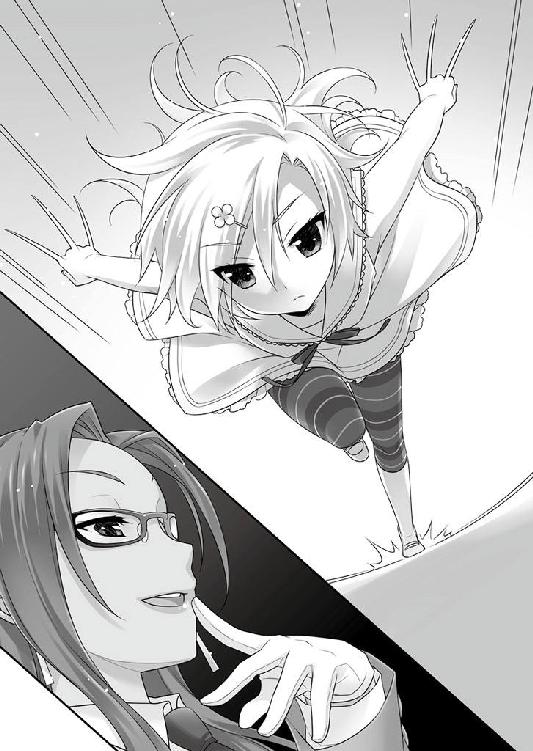
アカハが突き刺さる。
手も足も動かない少女は、頭からコダマの胴に突撃した。
鋭利さはなくとも砲弾じみた一発。その衝撃は背中まで抜ける。
コダマはゴンドラから吹き飛ばされる。身動きできない彼女が致命傷を負わなかったのは、アカハの機能そのものが大きく低下していた幸運によるものだ。
「ああ、」
肉の傷みよりも、刻みつけられた敗北の屈辱に身悶えしながら落ちていく。
「ああああああああああ」
それは、コダマにとって初めての官能だった。
絶望。憎悪。怨嗟......複雑に入り交じった感情が、ｃＳの造られた躰を駆け巡り、絶頂にも似た衝動となって突き抜ける。
「ゆる、さない......わよ、センパァイ───必ず思い知らせてやる」
アカハは、美山の斜面へ消えるコダマを静かに見送る。
限界だ。ゴンドラの屋根にしがみつきながら、身動き一つ出来ない。神経制御で無理をしすぎたせいか、アカハの意識が白く明滅する。
ｃＳとしては、初めての体験だ。少し前、墜落した時も、意識を失ったりしなかった。
「これって、失神......というヤツでしょうか、お兄さん」
ゴンドラの下から誰かが自分を呼んでいるような気がしたが、もうわからない。
深夜。『アンブロシウス』の店舗から、いつも通りの賑やかさが、裏にある実家にも遠い祭り囃子のように聞こえてくる。
閉店時間にはまだ早いが、奥の和風座敷には一條と碧流と叔美が顔を揃えていた。切り盛りはマスターとウシオに任せてあった。
こんな時でも正座を崩さない姉はともかく、叔美は畳の上で猫みたいに丸くなっている。
身体よりも精神が疲弊していた。今夜は一條も疲れを理由に倒れてしまいたかったが、今は僅かな休息に当てられる時間の余裕もない。
無事な帰還───とは言いがたかった。コダマを退けたアカハは深い傷を負った。ｃＳとしてもよほどの消耗なのか、今は奥の部屋で死んだように眠っている。
「二、三日すれば起き上がる。人間とは違うからな」
様態を看た碧流の言い様は冷淡過ぎたが、命には別状ないのだと思えばホッとした。
「あのクソ女、くたばったのかな」
丸くなったまま、叔美がそんなことを言う。
「あの手のクソはゴキブリよりしぶといと相場が決まっている。キチンと頭を潰しておかなかった以上、遅かれ早かれ姿を見せるだろう」
「次に遭ったら、アタシが直々にブチのめす！」
「やめておけ。ｃＳに並の人間が相手になるか。無駄飯ぐらいが減るなら喜ばしいが、怪我人が増えると手間だけ増える」
「......ヨケーなお世話だつーの」
アカハの負傷がよほど腹に据えかねていたらしい。碧流に窘められた叔美は、ｃＳの恐ろしさをよく知っている筈なのに、納得いかない顔でごろりと身体ごとそっぽを向く。
「結局、アカハに迷惑を掛けてしまった」
一條は、壁に疲労の溜まった身体をもたせかける。
そうさせたくなくて、花々梨との取引を躊躇ったのに、これでは同じことだ。
「アレは、自分で遣りたいからやった。お前が気に病む必要はない」
「気にするよ。僕が最初に勝ってれば、アカハは怪我しなくて済んだんだ」
「あの時勝っていたとして、本当に、十行や鷹崎が諦めたと思うか？」
「それは......」
そんな幸福な結末は有り得なかったろう。
一條が「名跡」として認められてしまえばともかく、それまでは付け入る隙がある。ミスターＰは別の手管で新たな罠を仕掛けたに違いない。
大回りしても選択の結果が収束するように、明確なピリオドを打つまでは続く。
敵にもｃＳがいる以上、どこかでアカハが傷ついた可能性は高かった。彼女だけの問題ではない。一條がここへ辿り着く為に、碧流も叔美も危険に身を投じてきた。
そうなるべく選択をしたのは───彼女たち自身だ。
「そうか、僕らしくなかったな」
変わりようのない過去を悔いて、他人の選択を背負えるような気分でいた。そんな自分自身の奢りを恥じた。
千里一條は、振り向かない。
何もかも失って、幾度も堂々巡りのような迷い道と諦観と自棄に囚われかけながら、無意味な後悔をする暇があるなら、前を向いて進むと決めた。
叔美も、碧流も、アカハも、一條が選んだ道を支えようと、彼女たち自身の選択を使ってくれた。
───一條の為にそうしたのだろうか？
そうではないのだ、と思う。
「どこへ行く？」
「やらなくちゃいけないことを、やってくる」
さっきまでの悩影を振り切って、一條は立ち上がった。
別れの際に手渡された番号に、スマホから掛ける。コール三つで相手は出た。
『思ったよりも早かったですね、一條さん』
「力を貸して欲しいんです」
意外そうなのに、不思議と楽しそうに思える声の主は、花々梨だった。『ヒトデナシ』たちの世界で、経験値不足の一條は取り繕ってもド素人だ。少女は、こちらの逡巡ぐらいお見通しだろう。
それがどうした、と思う。勝負とは、持てる手札でやるしかない。むしろ、猶予を与えてくれた、彼女なりの優しさに感謝する。
『その台詞は、もういただきました。それで、一條さんは代わりに何を？』
一度、深呼吸を入れる。
使いたくなかった唯一の手札。アカハや、あるいはウシオに迷惑が掛かってしまう。
「......千里十行は『ヒトデナシ』の仕来りを裏切っている。部外者に秘密を売り渡している」
『ありそうな話ですが、一條さんの言葉だけでは長老たちは動きませんよ』
「あの男は、名跡が欲しくて姉さんの命までも狙いました。それを......犯人に証言してもらえます」
『それが、一條さんの差し出す対価ですか』
ｃＳには千里の『ノウハウ』も関わっている。死すべき運命を覆すことで造られた彼女たちは、存在そのもので裏切りを立証できる。
それは、アカハやウシオを審議の場に引き摺り出して、衆目に晒すという意味でもあった。無数の視線を、企てと野心を、悪意と差別と区別とを磁石のように吸い寄せる。地雷を踏みに行くのと同じ決断を、それでも一條は選び取った。
誰もが自分の人生を選択する。
一條も、碧流も、叔美も、アカハも、ウシオも、花々梨もまた。
選択は、時には誰かを傷つけることさえある。『みんな』が懸けてくれた、千里一條の価値に、どうすれば報えるだろう。
せめて、彼女たちが、これまでの選択を正しかったと胸を張れる自分になろう。
何が起ころうとも、己の、この手で食い止める。悪意も、行き止まりも、臨まぬ結末も、見抜いて、選んで、くぐり抜けて守ってみせられるぐらいには。
決めてしまえば、詰まっていた胸は、風が吹き抜けたように軽かった。
『一利はありますね。それが事実なら、長老たちにとっては虫酸が走るものでしょう。暴いてみせるのは、なるほど痛快です』
弾んだ声に、唇に指先を当ててニンマリと笑う花々梨が思い浮かんだ。
『勘違いしないでください。千里十行が裏切りを働いているのか否かを見極めるのには、手を貸してもいい、ということです』
「ありがとうございます。花々梨さん」
ミスターＰの裏の動きや長老たちとの接点を探るのは、渦中の一條や碧流には難しい。部外者であり、立場も名前もある花々梨の協力が得られなければ手詰まりだった。
これで、相手の優位をひっくり返せる。許したリードを取り戻せる。
あるいは、再戦の前に勝負を決められるかもしれない。願望よりの希望的観測だが。
一條の述べた礼が素直すぎたからか、ぷいとそっぽを向くような気配。
『馴れ合わないでください。証言だけでは不十分。何も出てこなければ、割が合いませんからわたしは手を引きます。その時は───一條さんの敵です』
それでも、やはり嬉しかった。これまでやってきた......何もかもが先に繋がる、『道』が拓けた。
『千里十行を調べる件、多地見花々梨が確かに請け負いました。しかし、時間は掛かります。少なくとも三日か、四日』
十行との再戦は三日後。首尾良くいっても、期限ギリギリだ。
「お願いします。僕もやれるだけやってみますから」
『一條さん、海で命を助けて貰った借り......これで、チャラですよ』
「いや、あれは別に借りとかじゃなくて......」
一條が言いかけたところで、通話は素っ気なく切られてしまった。花々梨にしては、乱暴な切り方が、不思議と耳に残る。
「あとは、僕が何処まで出来るか、だ」
零時ジャストを告げたスマホをしまい込みながら、夜景の星を見上げて思う。
勝とう、今度こそ。
───残された時間は、あと三日。
季節外れな、煌びやかなビーチパラソルと肌も露わなグラマラスなビキニの女たち。
ここは、奥志麻市内では最高級のホテル・グランツが誇る室内プール。
サングラスにハイレグビキニショーツの挑戦的スタイルで、道行く女たちの腰つきを目の保養と眺めている千里十行には、陰謀の首魁に付き物の緊張感の欠片もなかった。
「だから、なーにが問題なのかね？ なーんにも心配はいらないＹＯ！」
「貴方には、喋る前に頭を使うクセを付けるのをお勧めします」
プールサイドの十行と並んで、鷹崎陽春が身を横たえていた。必要十分に鍛えられ、贅肉一つないスマートな四肢は、本来の彼の職ではなくアスリートを連想させる。
「反抗期の子供には何も出来ないＹＯ！ アチラと話はつけたし、準備は万端、ノープロブレムだ！ 古人の言葉を知らないかい？ 『トレジャーは寝て待て』って」
低温で落ち着き払った陽春とは対照的に、十行は軽薄で一々締まりがない。
ひゃひゃひゃっと奇声を発する十行に、プールサイドを行く他の客たちが一瞬ぎょっとして、すぐに目を合わせないようにそそくさと立ち去っていく。あっという間に、二人の周りには人気がなくなったが、「悪事」を語らうには好都合だ。
「私が籠絡をした件はいいとして......十行、御子息に手を出したと聞きましたが？ よくない、極めて。再戦の場を用意した長老たちの面子を潰すことになる。それが、どれほどのリスクになるか、理解していますか」
「判ってるＹＯ！ でもさ、零したミルクはお家に帰らないって言うだろ？」
「貴方という男は............」
つくづくだ───と、陽春にしては珍しく露骨に内心を表して、頭痛が......と言わんばかりにこめかみを指で揉みし抱く。
「とにかく、これ以上騒ぎ立てれば、一転不利になりかねない。御子息は、思ったよりも骨がある。このまま負け犬ではいないでしょうし」
「──マイサンが何だって？」
ウォッチングに夢中な、空っぽの道化じみた男の様子に変化はない。
しかし、一体何が彼の癇に障ったのだろう。陽春は共謀者のニヤけ笑いに、この男らしからぬ感情を見出した。
自分勝手に捨ててきた家族への感傷だろうか。それも否。滲み出るようなこのドス黒い負の感情は、子供のような苛立ちと表現するのが最も適切だ。
陽春は、自分の持ち駒の性質をよく知っていた。
持てる『力』の程とは全く正反対の、酷く未熟で歪な人格の持ち主。だからこそ、御しやすいと考えた。荷担すべく近づいた。
「アレは、ただの反抗期の子供だよ。面白い素材ではあるがね。役に立ててやってもいいさ。アレがあれば、最初の一......いや、その先に届くかもしれないんだ。素敵だろ？」
「思いつきやノリで動いていると、足下を掬われますよ？」
「足下？ マイフレンドは知ってるかい。世の中で勝者になる条件って奴を」
「いえ、物知らずなものでして。宜しければ後生の為に御教授願えますか」
「どんな人間だろうと、運命には逆らえない。本当の勝利というのはね、運ばれてくるものなのさ！ 貴重な果実を手に出来るのは、それ自体が特別な人間。凡人は、どんなに足掻いたところで、本当の勝利に一歩も近づけないんだＹＯ！」
「............御高説、感謝します」
またしても、他人の神経を逆なでするように哄笑する相手へ、陽春はそれ以上の無駄話を続けるのを止めた。
「......ともかく、十行。貴方の大事な愛玩動物......植物でしたっけ？ これ以上余計なことをしでかさないよう、よく躾けておいてください」
「だってさ、コダマ」
プールサイドに似合わないスーツ姿で傍に控えていたコダマは、泣き崩れながら十行の足にすがりついた。
「そんな、十行様ぁん！ 私は、何もかも全部、十行様ぁんの為に......身の程知らずのアイツらに思い知らせてやろうとしただけで───」
「ああ、もう！ 余計なことは、しなくていいんだＹＯ！ そんなことしなくても、勝つべき者が勝つべくして勝つんだから」
マイ主は、それ以上はコダマに目もくれず、鑑賞会を再開した。
「あのボウヤ、千里一條......よくも、私の愛を邪魔しやがって......っ」
離席する協力者の男を、己の主と同様に一瞥もせず、コダマは涙目を拭っていたハンカチをヒステリックに噛み締めて引き裂く。
型遅れの不良品に受けた肉体の痛手より、よほど深く熱く正気を失いそうな程に彼女を苦しめるのは、己の愛を汚された心の屈辱だ。
ｃＳのそれを『心』と呼ぶべきか。
十行が聞けば、腹を抱えて大笑いするかもしれないが、コダマにとっては、どちらでも良いことだ。心であろうと、彼女の霊芯に刻印された命令であろうと。
「思い知らさなければならないっ」
我が身を焦がす情熱を、恋慕を、執着を、愛を、愛と愛と愛を、必ず理解させてやる。
「ボウヤ、愉しみにしていなさい......」
己を焦がす痛みに魘されるように、熱い舌が朱い唇を舐めた。
───あなたは、四国四県の名前とその配置を正確に知っているだろうか？
Ｔ県は、四国における関西方面への窓口であり、県内人口は七〇万余。
古くから、狸が人を化かすという伝承が多く、現在も奥志麻市のそこここに狸を奉る祠がある。嘘か真か、かの「大蛇伝説」でお馴染みの盾山をはじめ、県内には不可思議なスポットも数多い。
一方で、日本三大祭りの一つ、「天河踊り」の土地として知られているものの、例えば遠野のような、あるいは東北の一地方のような、古くからの伝承色濃い風土が人口に膾炙することは多くなかった。
息を殺すように。潜んでいるように。見られることを拒むように。
したがって観光客の集まる八月の一頃を除けば、ごく静かな地方である。
......のだが、ここ数年ばかりでは、奇妙な出で立ちの者たちが、古町川沿いの公園を中心にした一帯に集まる期間があった。
ある者は、煌びやかな原色に輝く西洋風の鎧に身を固め、祖国の自由を願う聖女。
ある者は、漆黒のボディスーツと深紅のゴーグルで肌を見せぬ、凶猛なりし国家の猟犬。
またある者は、純白と蒼白のフリルで着飾った、花の如き可憐な魔法少女。
「なンだ、こっちでもやってンのか？」
叔美は興味津々という顔で、古町川沿いの公園に集まっている、古代の剣士やゲームのヒーローやアニメの登場人物たちを見やっていた。
「『マチ☆ダイスキ』だね。普通のイベントだよ。いや、普通......なのか？」
一條は、自分の言葉にちょっぴり首を傾げたりした。
そもそも一條は、「普通」というものがイマイチよくわからないのだし。
奥志麻では、近年五月や十月の連休になると、駅前を中心とした特定のイベントエリアに、「アニメのマチ」「マチ☆ダイスキへようこそ」といった幟が目立つようになる。この祭りの開催期間中は、各所で様々なイベントが催され、全国からのべ数万人が奥志麻市に訪れるという。
一時的に人口密度が急増した奥志麻駅周辺は、歩道も人通りで混雑している。
奥志麻に戻ってからこの光景とかち合うのが二度目な一條は、叔美よりも幾らかは場慣れしており、人混みにぶつかって迷惑にならないよう、自転車を降りて押して歩く。
「で、何であンな恰好してンだ？」
「あれは『コスプレ』といって......って、僕も詳しくはないんだけど......」
コスプレという文化があるのは知っているが、何故と訊ねられても、少なくとも今の一條にはよくわからなかった。登山家に山に挑む理由を問うようなものかもしれない。
異世界かアニメに迷い込んでしまったような小世界。畏れを知らない愛戦士・真田も、あの混沌の中に混じっているのだろうか。
叔美はというと、お祭りらしい賑やかな空気に当てられたのか、落ち着きなく走り回っていた。一抱えもある大きな銃を抱えた未来忍者のところへ行って、ジロジロとぶしつけに見回す。人見知りする猫のように、ちょっぴり距離を取っているのが微笑ましい。
見られるのに馴れているのか、未来忍者が叔美に向かってポーズを取ると、回れ右で走って戻ってきた。
「あー、ビックリした！ いきなり武器構えたぞ、アイツ！ やる気か？」
お祭りの空気を身近で嗅げるのが嬉しいのか、追い返されたのに叔美は笑っている。
ついでに、並んでいる屋台でアイスクリームを買ってきて、片方を一條に差し出した。
「オゴリだから、食えよ」
「叔美の!? 珍しいね」
「アタシは、これでも一人前の働くウーメンだからな」
叔美の行動に途惑いながら、しゃくりと一口。爽やかな柑橘系──スダチだ。
奥志麻では、スダチ味の商品開発に余念がない。十月のアイスは些か季節外れだが、オーバーヒート気味の頭を冷やす役には立ってくれる。
食べ終えて、遅まきながら思い至って、一條は真顔で訊ねた。
「どうしてわざわざ、着いてきたんだ？」
「護衛だよ、ご・え・い。決まってンだろ？」
さも当然という返事をされた。
閑静な奥志麻の都心を賑わせる『マチ☆ダイスキ』が絶賛開催中の裏側で、もう一つの、一條にとってはより重大な祭りが執り行われる。
『真知廻』───
開催期間はどちらも三日間。幸か不幸か、偶然の一致で、表と裏で祭りの日取りは重なった。単純に暦の上での都合なのだろうが。
この三日間、『アンブロシウス』は昼間も営業している。だが、働き手筆頭で男手である一條は、昼も夜も「かっぱぎシフト（碧流命名）」から外されていた。本来、猫の手も借りたい状況下。まだ回復していないアカハと計二人分が欠けてしまった労働力分、ブラックオーナーたる碧流は、久留美やウシオや叔美ら哀しき兎スレイブたちを馬車馬のように酷使して埋め合わせている。
あの碧流が一條をフリーにしたのは、十行との対決に備えさせる為だ。
───他人の選択視を消す『力』。
人生を操るに等しい『力』を打倒する方法に、先日の敗北からずっと頭を悩ませていたが、突破口は未だ拓けていない。
タイム・リミットはもう目の前。自転車でぶらりと外へ出たのも、一人で考えたかったからだ。叔美が付いてきてしまったのだが。
「また、あのクソ女が襲ってこないとも限らないだろ。一條だけだと心配だからな」
心遣いは嬉しい。嬉しいのだが、実際にコダマに襲撃されたら、叔美が一緒でも結果は大差ないだろう。アカハが身を張って頑張ってくれたおかげで、手傷を負ったコダマはしばらくは動けないだろう。
「ンで、クソの大本をぶちのめす算段はついたのかよ」
「..................ある」
「おおっ、あるのか。じゃあ！」
「いや..................」
「どっちなンだよ!!」
「..................手掛かりというか......引っ掛かりというか............」
煮え切らないのは自分でも腹立たしいが、一條としては偽りない現状だ。
十行の『力』にも付け入る隙はある、と証明できた。成し得た事実は、一握りの名も知らぬ種だ。自分の中に蒔かれて、あと少しで勝利へ続く選択として芽吹こうとしていると、漠然と感じる。
問題は、その「少し」が、星と星の距離のように無限遠に感じられること。
見えるモノと見えないモノの差は、ほんの僅かなのに越えがたい。それをこそ「特別」と呼ぶのだとすれば、『本』が見えるのを除けば、至って平凡な高校生の自分に残りの距離を踏破できるか、途端に不安になってしまう。
「頼りねーな。アタシがオゴってやったンだぞ。しっかりしろよ。一條が負けたら、全部オジャンなンだろ？」
「───負けないよ」
そこだけは、キッパリと言い切った。
勝ち目が見えなくても、懸けてくれた少女たちが胸を張れる自分になろうと決めたのだ。
だから、やるべきことはわかっている。
「よーし、約束だぞ。ぶちのめせ」
「うん、約束だ」
言葉にしたせいか、息の詰まりそうだった気分も幾らか晴れた。
「これは......もうちょっと、なのか？」
「なンか言ったか？」
「......ありがとう、ってことだよ」
「え、あー、まあな。アタシ、護衛だからな！」
照れくさいのか、クネクネしていた。
正直、護衛としてはどうなのかだが、一條はやっぱり感謝する。
ついさっきまで星のように遠かったまだ見ぬ何かを、不思議と近くに思う。
それは、隣で屈託なく伸びをしている猫のような少女のおかげだ。
辺りの町並みはとっくに静かになっていた。『マチ☆ダイスキ』の開催スペースがある通りから、一筋でも外れると、そこは全くの別世界。いやあちらこそ異世界なのだから、人通りの疎らな普段の奥志麻である。
「じゃあ、急いで帰ろう」
「突然、なンだよ。気まぐれなヤツ」
「叔美のが移ったのかもね」
じわりとした熱量が溢れる。一つ、思いついたことがあった。一刻も早く帰って、思いつきが本当に通用するものかどうか、確かめてみたい。
「よーし！ 何だかよくわかンないけど、飛ばしてけ！」
───陽が落ちる。闇が落ちる。眠りに落ちる。
───夜とは、人目を憚る者たちが闊歩する時間。
夜歩く者たちの目も届かぬ場所で、甲高い電子音が鳴る。
『ご機嫌よう。先日はわざわざどうも。......ふむ、何かありましたか？』
「べっつにー。ま、神経の細いお友達を持つと苦労しちゃうってだけだＹＯ！ 脳細胞の無駄遣いだね。人生なんて、もっと気楽に遊べばいいのに！」
『......ところで、彼が当日の勝負の方法について、申し入れをしてきたそうですが、そちらの耳には？』
「まだ！ しかし、マイサンも神経が細いなあ！ いいとも、王者としてはその程度は受けて立ってやらないとね！ どっちにしたって───」
『こちらは、ほぼ予定通りです。手回しに問題はなく』
「当日を愉しみにさせてもらうＹＯ！」
『くれぐれも、鷹崎さんにはよろしく』
「伝えておくとも、マイフレンドだからね！」
その祭事は、古くから『真知廻』と呼ばれていた。
普段から人目を憚って生きる『ヒトデナシ』たちが、人目を避けて夜に行う祭り。
祭司として選ばれた者が、二夜を掛けて土地の長たちを訪ねて歩く。遠方から来た者たちは、これらの長の元に客人として遇されており、共に出迎える。一廻りを終えた三夜目に、今度は廻られた長たちが集まって『交衣』と呼ばれる会合を開き、帰ってくる祭司を迎え入れて、三夜続いた祭りも終わる。
廻るから『真知廻』なのか、『真知廻』だから廻るのか。
廻ることで幸を分けていく、とも伝えられている。訪ねる順序や訪ねた際の作法には厳しい仕来りがあり、襟の長さが一センチ違っても老人たちが口うるさい。今時徒歩で行うのも、由緒正しい仕来りの一つだ。
もっとも、古来の仕来りでほぼ間違いなく受け継がれていると断言できるのは半分程度。残りは、失伝したものを取り繕ったり、時代の某かで変容してしまったりしているのだが。
今年の祭司役は千里家であり、一條である。
予定では、名跡を継いだ一條のデビュー戦を兼ねており、最後の「交衣」で長老たちから承認を受ける手はずになっていた。今となっては先行き全く不透明だが。
「腹立たしい、とにかく腹立たしい！」
碧流は終始不機嫌だったものの、鉄壁の外面は維持してみせた。一條も驚きを通り越して開いた口が塞がらない、見事な猫かぶりだ。
もっとも、姉に気を回している余裕は、実のところなかった。台無しになったお披露目の夜よりも輪を掛けて小難しい仕来りの群れとの対決で、緊張に胃が裏返っている。
碧流は休んでいろと言ったものの、昼の部の『アンブロシウス』を手伝い、夜に廻るという二足の草鞋を半ば強引に履くことにしたのは、自分一人で何もせずに惚けているのが、かえって落ち着かないからだ。
一夜目は、肩どころか身体中強張っていたが、かろうじて乗り越えた。
二夜目は、幾らか馴れたからか気も楽になったが、油断したのか最後の最後に詰まらないことでトチりかけて、碧流を大いに慌てさせた。大事に至らず誤魔化しきったのは、気まぐれな同居人である『本』のおかげだ。
問題は、一夜目に市街地から外れた山中にある鷹崎家を苦労して廻った時。陽春の姿こそあったものの、客として同席している筈のミスターＰが見当たらなかったこと。結局、二日続けて全く姿を見せない。不気味だった。
そして、運命の最終日───
昼の部を終え、客足の絶えた『アンブロシウス』の店内で、一條は準備を終えていた。
『真知廻』の最後を飾る三夜目の『交衣』では、例年なら小難しい話はしない。要するに元気の余った老人たちが羽目を外すただの宴会なのだが、今回は違う。
一條と十行、どちらが千里の「名跡」を引き継ぐに相応しいかの評決が行われる。
お披露目と同じ正装で、準備万端整えた一條は、碧流が頼んだハイヤーが来るのを待っていた。念には念を入れて、一足早く会場に入っておくつもりなのだ。
「一條、キメキメですね！」
二度目である恰好に、久瑠美は大はしゃぎする。今日日、和服の正装など大きな冠婚葬祭でもなければほとんど見かけないので、珍しい。
「こういう一條も格好良いです！ 久留美、意外な発見」
「意外、かな？ やっぱり......」
「和服が似合うとは思いませんでした。んー、イケる！」
「私の弟だから、当然だ」
このところ旗色の悪い人生に続けてハマりこんでいた碧流も、ここぞとばかりに自慢げだった。
「叔美、みんなと一緒に留守番よろしく」
「おう。任せろ！ 一條があのクソをぶちのめす場面をじかで見られないのは残念だけどな」
「お任せアレ！ イチジョーとネーチャンが居なくても、『アンブロシウス』はこの久留美がキチンと切り盛りしますから！」
今夜の会合は部外者厳禁。同行できる人数も厳しく限られている。よって、叔美たちは、『アンブロシウス』を手伝いながら、ことが無事に終わるのを待つ。どう考えても無事に終わりそうにないのは、ともかくとして。
「切り盛りするのは、お前ではなくマスターだろう」
飛び跳ねながら敬礼する久留美に、毒舌で釘を刺す付き添い。
「まあまあ......それはそれとして！」
「邪魔にならないように手伝っていろ。帰ってきてから働きぶりは確認する。役立たずの無駄飯ぐらいには死を!!」
「ざけンんな、オニチク！」
「おおぅ、ネーチャン、超キビシーっす!!」
被雇用者たちが非難の声をあげるが、ブラックな社長は気にもとめない。
「............お金の分の命令は果たすわ。今日は店のお手伝い」
ウシオはといえば、店の隅でしずしずと命じられた準備を片付けていた。
「そう、お前は金という鎖で雇われた奴隷。黙って命令に従っていればいいのだ！」
大上段に無体を振り翳すオーナーへ、一條は久留美に聞こえないよう、顔を寄せて小声で囁く。
「姉さん。この二日間は、正直拍子抜けなほど平穏だったけど」
「奴の切り札がアカハと相打ちになったから、人前に出てくるのを避けたのかもな。ピーマン頭のクセに、妙に鼻だけは利く男だ。あの時も───」
どんな記憶が脳裏を過ぎったのか、軋らせる歯が獰猛な音を立てる。
「また襲ってくるかな？」
「目的が『名跡』なら、これ以上長老の顔を潰す真似はしない」
「じゃあ、このまま何もなく本番？」
「だが、私は奴を信じている。奴はネジが一〇本はまとめて飛んでいる!! 奴の辞書には、『誇り』や『矜持』や『正々堂々』という日本語は欠片もないのだ！」
仮にも血の繋がっている相手に、酷い言い分もあったものだ。
碧流が鼻息を荒くしていると、ハイヤーが店の前に停車した。
これはこれで助かった、と思った一條だが、ハイヤーは乗客を店先に降ろすと、「あれ」と思う間もなくビジネスライクに去ってしまう。
「まあ、立派なお姿ですね」
上品な振る舞いで、店の古い扉を音もなく開けた乗客に見覚えがあった。
「か......」
「花々梨!? 日の高い内から雌犬が何をしにきた！」
コンマ三秒で一條を遮って、碧流が怨敵に反応した。イヤそうな、というよりも、この女今すぐ●ねばいいのに、と露骨に思っている顔で割って入って牽制する。
「この店の敷居を跨ぐなら、お前の席は冷蔵庫の後ろの隙間だ！ お台所の敵にはピッタリだな、はははっ」
「そんなに高笑いしてると、また墓穴を掘ってもしらねーぞ」
叔美に言われて、数日前の美山山頂での負け犬ムードを脳内リバイバルしたらしい。
「フン......で、何の用だ？」
「強敵に立ち向かわんとする友人の応援に......なんて訳はありませんから、ご心配なく」
「お前が、私の弟の、友人面を、するな!!」
三秒前の冷静さを投げ捨てて、協力を頼んでいるという不利な立場も忘れて噛みつく碧流だが、不思議なことに反撃がこなかった。黙っている花々梨を、それこそお台所の敵を見るような目つきで睨む。
「......どうしたんだ、悪いモノでも拾い食いして脳が膿んだのか？」
「残念ながら、わたし、碧流と違ってお金持ちのお嬢さんですので」
素っ気なく言葉にしてから、花々梨はクルリと一條に向き直る。
思い詰めたようなその表情で、どういう報せかは聞く前からわかった。
「花々梨さん、例の件ですか？」
「単刀直入に言います。手応えは有りました。彼は黒です、多分......」
「多分......ですか」
どこかでよく聞くフレーズだ、と思わなくもない。
「ただ、証拠が、その......。予想以上に難航して」
予想よりも更に悪い報せで、腹の辺りが冷たくなった。
一條が食い下がり、再戦する羽目になったのは、ミスターＰや鷹崎にとっても予想外だったろう。慌てたミスターＰと長老たちは、事後の調整の為にどこかで『接触』する。
花々梨に頼んだのは、その確認だ。裏取引の動かぬ証拠を押さえられれば、一條の手札と併せて、再戦の前にミスターＰを追い詰めることも出来たかもしれない。
「仕方ないですよ。花々梨さんは十分頑張ってくれましたから」
「いいえ！ 引き受けた以上は、わたしの責任ですから───」
少女の突然の勢いに、一條は途惑ってしまった。花々梨がわざわざ自分で足を運んできたのは、彼女なりの誠意と謝罪なのだろう。
自分の力が及ばなかった事実を恥じている少女の矜持は、まるで宝石のように眩しい。きっとそれが、多地見花々梨という少女の在り方なのだろうと思うと、とんでもない窮地なのに何故か頬が緩みかけた。
「言い訳しようと要は失敗だ。証拠一つ揃えられないとは、この役立たずめ。犬の方が番犬になるだけまだマシだな」
そして、宿敵の落ち度に、碧流はここぞとばかりに笠に着たりした。
当然ながら、花々梨もマウントを取られたままではいない。
「......さっきから大人しく聞いていれば。証拠がないわけでは......じゃなくて！ 一條さんからの非難であれば甘んじて受けますが、部外者のお猿さんにとやかく言われる筋合いは、一ミクロンもありません！」
「誰が部外者だ！ 姉と弟といえば一心同体も同然！ そうか、貴様、本当はあのクズと連んで一條を罠に掛ける腹づもりなのか」
「だ、誰がそんな......ブラコンも過ぎると脳までやられてしまうんですね！ 迷惑しか掛けない血縁よりも、手助けできる他人の美少女の方が、よっぽどマシです」
「あの、二人とも、もう少し言葉を選ぶというか......」
火の点いたダイナマイトに近づく気分で宥めようとしたが、どっちも聞いちゃいない。
「私以外に、美少女が何処にいるんだ!?」
「それはもう、碧流でないことは確かですね!!」
犬と猿よりも激しく火花が飛び散る。一條も尻込みした死地に、呆れ顔で踏み入ったのは叔美だ。
「テメーら、今はそンな場合じゃねーだろ。ダメならダメで、次の手考えないと」
叔美は、見た目や行動とは違って、決して本能だけで生きている少女ではない。理路整然とした発言も出来る。だが、人の話を聞かない二人に通じるだろうか。
あにはからんや。燃える少女たちは、冷水を浴びたように落ち着きを取り戻した。
「すごい、奇跡だ......」
と、一條は目の前の光景に感激したりした。
「......まさか、無駄飯ぐらい如きに諭されてしまうとは。この私の人生の最大の汚点」
「......わたし、そんなにダメになっていたんですね。生き方を考え直さないと」
「ンだとテメエら、文句があるなら勝負してやるぞ!!」
暴言に爆発する叔美を、今度こそ一條が羽交い締めに食い止める。
「どうどう、落ち着いて。今はそんな場合じゃないんだから」
「まったく、これだから無駄飯ぐらいは」
「世間知らずなおチビさんにも、困ってしまいますね」
「テメーら、後で絶対に思い知らせてやるからな......」
プリプリしている叔美を捕まえたまま、一條が堅い表情になる。
「それで、姉さん。これは───」
「『多分、黒』か。『多分』など！ そんな言葉には、これっぽっちも意味がない」
「いや姉さん、よく『多分』を使ってるん......」
「いいか一條、世の中には、悪い『多分』と良い『多分』がある。このズ×タのは、悪い多分。私のは良い多分だ」
「何を言っているのかよくわからないけど、どっちも一緒なのは、よくわかったよ」
「碧流の『多分』ほど、当てにならないものはありませんから」
弟と憎いアイツの諫言を華麗にスルーして、新兵を謁見する軍曹のように背筋を伸ばした碧流は、従業員一同の前に立った。
「整列！ ただ今より、緊急会議を始める。花々梨が失敗した穴を我々が埋めなければならない。花々梨が失敗した以上、ヤツとの勝負でグウの音も出ないほど圧勝しなければならない。その為の手段......花々梨の失敗した代わりにクズをぶちのめすナイス・アイデアを求める！ 全員出せ」
「......一々失敗を強調するなんて、さもしいですね」
花々梨が付けた文句も優雅にスルーである。
「はい、軍曹どの！」
「よし、久留美三等兵！」
「えー、三等ですか......じゃなくて。自分、今現在、何がどうなってるのか、よくわかってないので、説明を......」
碧流はクワッと目を見開いた。
「却下だ。いいんだよ、細かいことは。いいから、卑劣で邪悪で憎いアンチクショウをぶっ飛ばす為の手段を考えろ！」
「はい！」
根っこが体育会系の久留美がビシッと見事な姿勢で挙手した。
「再び久留美！」
「憎悪の連鎖は哀しいのです。ここは、平和的にスポーツで汗を流して、心を解きほぐして友情を結ぶ作戦を提案します！」
「却下！ そんな綺麗事は欲しくない。動いているヤツは敵だ。動かなくなったヤツも敵だ。殺せ、殺せ、殺せ！ 確実に息の根を止めるのだ！」
「あの、姉さん、そういう話じゃなかったような......」
「そこ、ウシオ！」
強引に集合させられたウシオが挙手していた。
「面倒なことは考えたくないから、決まったら教えて。それに従うわ」
「却下だ！ 無駄口を叩いている暇があったら、その軽い脳みそを少しは使え！」
「おい、オニチク」
「叔美！」
「つーか、あのクズに何かさせたら終わりだろ。何もさせねーしかないと思うぞ」
「弱点を突く、例の手か」
やっと、まともな意見が出た。
集中を必要とする───という、千里の『力』の、最も単純な弱味を突く。しかし、その手はお披露目の際にも使った。残念な顛末は、一條も碧流から聞かされている。
「姉さん。それは、失敗したんじゃ」
「要は、邪魔者がいなくなればいいのだ。───『最終兵器』を使う」
「『秘密兵器』の次は『最終兵器』か......」
学校では優等生のクセに、意外と妙なフレーズが好きな姉だった。
ちらりと、無表情というよりも単に何も考えていなさそうな元秘密兵器を見やる。嫌な予感しかしないが、他の手段がないのも事実。『本』も現れない。
「わかった..................姉さん、もうそれでいこう」
「足りないところは、気合いで押し切れ！ 魂の輝きが、きっとお前を強くする」
一條の手を握った姉が、自分の決意で瞳を燃やしていた。
綺麗っぽい台詞で背中を押されても、現実は困難だ。なまじ見えるだけに、帽子から鳩を出すような見事な名案はないとわかってしまう。ある意味辛いが、くじけている時間も今は惜しい。
「勝つよ、絶対に」
叔美にも約束した言葉を、繰り返す。
花々梨が、楚々とした花のようにピンと背筋を伸ばしていた。
「時間切れですね。わたし、この先の協力は出来ません。今の時点では、一條さんは千里の『名跡』候補でしかありませんから。ことが決まるまでは、中立だと思ってください」
「.........ありがとうございます」
「お礼、言われるようなことはありませんよ」
『本』に助言されるまでもなく、それが花々梨の好意だとわかった。
多地見家の一員としては、負け馬には乗れない。しかし、ミスターＰにもつかない、と言ってくれている。
「間に合わなかったけど、花々梨さんが懸けてくれたから、僕は自分に勝ち目があるって自信が持てます」
碧流は、花々梨と犬猿の仲だ。姉が「強敵」として認めている女性だから、彼女のことをよく知らなくても、彼女の出した答えを信じられた。
千里一條には、多地見花々梨が賭けるに足る勝機がまだ残っている、と。
予想もしなかった答えにほんの一瞬惚けてから、何か告げようとした花々梨の足を、碧流が黙って踏んづけた。思い切り。
「あ、こんな所に『Ｇ』が」
「掃除が行き届いてないんじゃないですか!?」
「何だとっ!! ウチの店には、害虫など出ないっ!!」
女二人が互いの顔を見合わせて、夏の向日葵に似た笑顔を咲かせ合う。
とっくにカウンターの裏へ避難していた叔美と久留美が、暴れても食器が落ちないように押さえるまでもう一秒。薄っぺらなにこやかムードが、ぶち殺しますやってみろに切り替わるまで、更に一秒。あと一秒でダブルクロスカウンターが炸裂する、というところで、今度こそ、予定のハイヤーが到着した。
「命拾いしたな、花々梨」
「こちらの台詞です、碧流」
騒いで少し乱れた裾を直してから、一條は忘れ物がないのを最終点検する。
「『最終兵器』を用意する。少し待て」
碧流が踵を返したのと同時に、『本』が自動的に現れた。
２１１─■■■■
到着したハイヤーの運転手が、『アンブロシウス』の扉を開けてキミたちに小さく会釈した。
先ほど花々梨を乗せてきたのと同じ会社のタクシーが、店の前に横付けされている。年季が入っているようだが、塗装し直されたボディは新車のようにピカピカの黒。ボンネットとトランクカバーには、独特の字体で描かれた神秘的名称と、派手なカラーリングの美少女が描かれている。
なるほど、これぞ世に言う「イタ・カー」というものらしい。いや、イベントの期間中のみ運営されるこれは「イタ・タクシー」と呼ぶのが適切だろう。車両であると同時に、宗教的情熱を集める美少女の姿を戴いた、走る祭壇なのだ。
さあ、これに乗って出発だ。緊張しているか、トイレに行き忘れていないか。
忘れ物はない。といっても、碧流が『最終兵器』を取りに行っている。危険な香りのする名前だとは思わないか。丁寧に扱った方がいいかもしれない。
他には大した物を持っていく訳じゃないが、しかし手ぶらというのも寂しい。ここは少し頭を使って、持っていくものを考えてみよう。
どれも役に立つが、リストにある品物から一つを選んでくれ。全部がいい？ 残念だったな。昔から、身の丈に合わない欲はかえって毒になるものだ。キミは、そんなに馬鹿じゃないだろう。
１．水筒／２．着替え一式／３．目薬／４．メロンパン／５．マイナス・ドライバー
二つ以上持っていこうとすると、全て消えてしまうので注意すること。
さて、持っていくものを決めたなら、次は..................
酷い話と言うべきか、一條が目覚めて最初に嗅いだのは、咽せてしまいそうな埃と錆の臭いだった。
「......やだなあ、会場がこんな場所だなんて。せっかくの一張羅が台無しだ」
朦朧として鈍った頭が、泡が空へ上るようにゆっくりと覚醒する。
「ここは──────」
どう見ても、古くて大きな倉庫の中だった。
しばらく思案してから、一條は横になったまま目を閉じる。ゆっくりと一〇数えてから、クワッと見開いた。同じ風景が待っていた。
「いやあああああ、やっぱり倉庫の中だあ!! ここは誰？ 僕は何処？ 会場は!?」
人間は理解できない状況に遭遇すると取り乱してしまう。例えば、ある日突然『本』が目の前に浮かんでいるのを発見する、とか。
一條は混乱した。錯乱した。パニックになった。
「そうか！ これは夢だ。勝負に備えて緊張しすぎて、よくない夢を見てるんだよ」
我に返り、頬を抓って自説を証明しようとしたが───出来なかった。
これまた酷い話と言うべきか、手錠的なもので後ろ手に拘束されていたからだ。
「..................酷い話どころジャねー！ どうなってるんだ、これ！ 倉庫スタートとか、脱出ゲームか!?」
ちなみに、「脱出ゲーム」とは、閉じ込められた密室や洋館からの脱出をテーマにしたジャンルのゲームだ。大概の場合、脱出にしくじるとあっさり死亡したりする。
「考えろ、考えるんだ、一條！ どうしてこんな羽目になったんだ!?」
───記憶を反芻する。
叔美と久留美に見送られながら、やってきたタクシーに乗り込んだ。
出る寸前、慌てて戻ってきた碧流が、凶悪な笑顔で、後ろのトランクへ大きなキャリーバッグを乱暴にぶち込んだ。
「車から降りる時は、アレを忘れずに持っていくんだぞ」
言い含められたが、よくわからないまま出発した。
少しばかり走った後、土地勘があるとはいえない一條も「あれ、進んでいる方角を間違っているんじゃないのか？」と思ったところで、意識が途絶えた。
「そして、目覚めたらこの有様......何それ、まさか......拉致監禁とか？ 冗談じゃない！ 今夜は大事な......こんな事してる暇ないのに、くそ......っ」
芋虫のようにジタバタと足掻く。起き上がるのは難しい。それでも、ゴロゴロと転がり廻ったおかげで、五メートル先に、手荷物代わりに持ってきた愛用のバックパックが無造作に捨てられているのを発見した。中のスマホは無事だろうか？ 新型で高かったのだ。
「今はそれどころじゃないって。えっと、怪我は......ないみたいだな」
多少は頭が冷えたので、小さな良かった探しに成功した。嬉しい。
普段は、根っこのところで危機感の足りていない一條も、この状況が切羽詰まったものなのは肌で感じる。
「一体誰が、何のつもりで......こんな真似を？」
何にもましてその点が疑問だが、心当たりはなくもない。というか、あるというか、他にいるわけネーというか......それでも、まさかと思える相手は。
だが、思考に脳のリソースを割けるのもそこまでだった。
ここに灯りはないが、高い採光窓から太陽光が入るので様子を窺うに問題はない。少なくとも今までは。己が顔に掛かる外の陽が、ジリジリと傾き出しているのだ。
ぞっと背筋が凍りかける。
このままでは、今夜の『交衣』に間に合わない。「普通」にも疎いが、『ヒトデナシ』の常識にも詳しくない一條でも、それが極めてマズい立場に自分たちを追い込むだろうと解らないほど察しが悪くはなかった。
窓から見える空の色から判断して、今は一六時～一七時。空腹具合を考えれば、意識を失っていたのは、ほんの二、三時間というところ。決戦の場である『交衣』は日没と同時に始まるから、だいたい十八時前後。
つまり、タイムリミットは、精々一～二時間だ。
「ああああ!! 早く逃げ出さないと......じゃなくて、落ち着け焦るな慎重にしろぉ!!」
つい取り乱しそうになった自分を、かつてない真剣さで必死に宥める。
深呼吸してから、念の為に拘束を解けるかもがいてみるが、筋肉で手錠を引き千切れるような、人間離れではない。
この状況下でも『本』が自動的に現れる様子はなかった。
「......下手に暴れてもダメってことだな。ただ暴れても意味はない。考えて、見極めるんだ。今の僕に何が出来るのか」
出来る何かの選択視を幾つも繋げていければ、脱出という『顛末』に通じた道にも辿り着ける筈だ。
......道が続いていれば、だが。
「と、とにかく、姉さんは、もう会場に到着してる。僕がいないと判ったら、状況を察して何か行動を起こしてくれる」
訪れるかもしれない好機を逃がさないよう、今の自分に出来ることはやっておかなければならない。
「でも本当に.........一体誰が、何のつもりで、こんな真似を？」
先の疑問に戻ってきた一條に応えるように、『本』が自動的に現れた。
６４８─■■■■
何処とも知れぬ倉庫に囚■■の身だ。為す術もなくのたうつばかり。
そんなキミに嘲うような鋭い声が突き刺さった。一■何者か。何者だとしても、こんな状況で放置されたまま時間が過ぎてい■よりは前向きな展開が期待できる。
「誰がも何も......そんなの決まってるでしょう、ボ・ウ・ヤ」
扉の開く音が重なる。キミの顔■、逆光で長身の女の影が落ちる。
何たることか。予想通りで予想外の相手だ。背後には、濃い色のスーツ■岩の塊みたいな体格の、どこを取っても荒事向きという面構えの数人の男を引き連れているぞ。
「────────コダマ」
間近までやってきた相手の顔に、呆気に取られたように目を見開く。
「あらあら、口の利き方がわかってないのねえ。『コダマ様ぁん』とお呼びなさい！」
一蹴。倒れたままの一條の頭をブーツが荒々しく踏みつける。
ｃＳにだってぶん殴られた経験はあるが、それとは別種の獰猛さに晒されながら、咄嗟に考えたのは「ヒールじゃなくてよかった」である。
（......危機感足りてないんじゃない？）
以前、三輪教諭にしたり顔で言われた指摘に、我ながら反論しがたくなってきて、何というか不本意だった。
「ちょっと、待て！ 本当にお前たちの仕業なのか！ 僕を誘拐した？ マジですか？」
「ボウヤ、十行様ぁんの血を引いてるクセに、鈍いのね」
「いや、アイツもそんなに鋭いタイプじゃないんじゃ......」
「いいかしら？ この状況を鑑みて、私以外の誰が犯人だっていうの？」
首謀者に踏まれながらドヤ顔で自慢げに諭された。もの凄く不本意だ。
「そ、それじゃあ、聞くけど......どういうつもりだ、こんな真似をして！ さっさと僕を解放した方がいいぞ！」
怯まずに食って掛かる。叔美やアカハたちの頑張りを、こんな卑劣なやり口で踏みにじる相手への怒りがあった。必ず勝つと約束をしたのだ。こんなところで、港の魚市場のお魚よろしく、床に転がされている場合じゃない。
「それって、命令？ ボウヤ、誰に命令してるの？ 私に命令できるのは、十行様ぁんだけ。自分の立場、わかってるのかしら？」
「お前こそ、ミスターＰ......じゃなくて、アイツの立場が悪くなるぞ。忠告してやってるのがわからないのか。長老たちを敵に回したら」
この脅しがどれほどの効果を持つのか。一條に実感は薄いが、碧流や花々梨の話からすれば、十分な警告になるだろう。
ミスターＰたちが目的を遂げるには、長老との敵対は避ける必要がある。正直それがあるから、直接危害を加えるような真似はしでかさないだろうと油断していた。碧流は警戒していたものの、拉致監禁は予想外に違いない。
「───回したら、でしょ？」
あっさり風味の言い回しがよく頭に入ってこない。
場の状況のＴＰＯを無視しすぎていて、脳に染み込んでくるまで、時計の長針が一巡りする程の時間を要した。
口の中がイヤに渇いて、ごくりっと意味もなく自分の喉が鳴る音を聞く。
「えと......その、僕......後で、絶対、長老たちに言いつけますけど」
「後があれば、ね」
肩を竦めるような軽い物言い。何とも言えない、ドロドロとした沈黙が倉庫に漂う。
コダマ以外は誰も何も口を開かなかった。むしろ、開きたくなかった。
「───ボウヤ、『死人に口なし』って諺、知ってるかしら？」
頭を踏みつけてく■ている踵に、グリグリと体重が掛かる。サディスティックに吊り上げられた唇は、ぞっとするほど官能的だ。独立した蛇を思わせる紅い舌が、チロリと舌舐めずりを■た。
この女が言わんとしている■とがわかっただろう......／７０６─■■■■ へ進め
（いやぁああああぁああぁあぁあああぁっ!!! 選択の余地がないじゃない!!!!）
出来るなら、今すぐ回れ右して逃げ出したかった。踏まれている上に手錠までされているのでとても無理だが。
次のＰＧ目指して捲れていくページの向こうに透けて見える、大輪の花の蜜のような女の笑顔が、これっぽっちも嬉しくない。
（本気だよ、この人！）
同時に、捕らえた獲物を嬲ろうと、理性以外のものが作る酷薄な女の表情に確信する。
───こいつは、ミスターＰの命令で動いていない。
最初に遭った時から感じていた。この女は、ウシオたちとは違う。機能や性能ではなく根本が別物だ。今までのｃＳたちが持っている、回る歯車に似たある種の機械性ではなく、ニトロをぶち込んで臨界を越えて唸るエンジンを思わせる暴力性。
俄には信じられないが、コダマは自分の感情に我を忘れている。
軽い頭痛を伴うほど濃密な「１４」が漂ってきて、吐き気を催す。
かつてない窮地に、過去最大級の『１４』の気配が感じられる!!
（死ぬッ、一歩間違えたら絶対確実に死ぬッ！ もしかしたら、このまま選択視もなく直行とかも有り得るぐらいに......ッッ!!）
７０６─■■■■
なんてことだ。厄介な事態になったぞ。
頭を踏みつけられているせいか、倉庫の錆臭い床の臭いが鼻につく。
おっと、下手に動くのは危険だぞ。両手を手錠で拘束されているからな。人生とは、時に足を滑らせるだけでも取り返しのつかない状況が訪れる。
問題は他にもある。キミを踏んでいる褐色女の後ろには、美山の猪と取っ組み合いが出来そうに屈強な男が三人。卒業式の後、体育館裏に呼び出される生徒みたいな表情で、無言のままお互いの顔を見合わせている。この連中と、まともにぶつかるのは正気の沙汰ではないだろう。
恐怖とパニックとガン泣きの一歩手前で、それでも一條は踏み留まった。開き放しで新しいＰＧへ進んだ、『本』の記述を見逃さない。
（緊張してる......いや、動揺したのか？）
コダマの身も蓋もない爆弾発言と態度に、三人の男は身を強張らせている。
全てが予定通りの行動なら、驚く必要はない。つまり、男たちにとっても、コダマは逸脱しつつある。敵は一枚岩ではない。ここに来て、初めて入手した貴重な情報だ。これだけでは動きようもないが。
「ジジイ共なんて、黙らせればいいのよ。ボウヤには、私の愛を汚した罪を、たっぷりと後悔して貰わないとねえ」
命令ではなく暴走なら、道理も損得も無視される。ここから先は正しく古人が述べた通り、何がどうなるのか一寸先は闇。
一條は観察を続ける。僅かな機会も逃がさないように。
それに応えるように、倉庫の入口が再び開いて、外の光が差し込んだ。
「何とも酷い格好ですね」
「えっ、そんな......まさか......」
顔を見る前に声でわかった。一條は更なるパニックへと叩き込まれる。
茜色の逆光の中から悪戯っぽく微笑んで現れたのは、多地見花々梨その人だった。
──少し時間を遡る。
一條が出発して一時間程が経過した、開店準備中の『アンブロシウス』。
店内に残っているのは、マスターと叔美と久留美とウシオの三人と一体。カウンター席には、一人客という風情の花々梨がお茶とお茶菓子を頂いていた。「せっかくお越し頂いたので、お茶でもいかがですか」とマスターに勧められたからだ。
「カカシ、これからどうすンだよ」
「......花々梨です。変な感じに覚えてしまいましたね。よくありませんけど、まあ、いいでしょう。これを頂いたら、帰って支度です。『交衣』にはわたしも出席しますので」
「ふーん......んー」
碧流も一條の後を追って会場に向かった。五月蠅いのがいなくなったおかげで随分静かだと、叔美は箒片手に猫のような背伸びをした。
後は待つだけになってしまったせいだろうか。時間が過ぎるのをいやに遅く感じてしまうのに、気が抜けて身体が頼りない。奇妙な心地だ。
そんな溶けたアイスクリームみたいな空気の中、絹を裂くような電子音が鳴り響く。
焦るでもなくすっかり馴れた調子で、叔美が掛かってきた電話を受けた。
「『アンブロシウス』でーす。『マチ☆ダイスキ』期間中の営業時間は、一〇時から一四時までと、一八時から二三時なので......」
この時間、店に掛かってくるのは大概営業時間の確認なので、何も考えずに留守電のようにテンプレの返事をした。
『──一條がいない！』
返ってきたのは受話器ごと壊れそうな碧流の悲鳴。漏れ聞こえたのか、花々梨が「えっ」と小さく息を呑む。
ジーンと響いて聞こえなくなった耳とは反対側に受話器を持ち替えて、叔美は見えない相手に詰め寄った。
「いない!? いないって何だよ！ 見落としてンのか!!」
『お前は叔美か？ いいかよく聞け。会場に着いたが、一條がどこにもいない。今確認した限りでは、到着していない。携帯にも出ない。有り得ない話だ』
聞いたことのない、切れかけた糸を無理矢理繕って張っているような声。
それで、事態がどこまでかをイヤでも察した。怒りに似た衝動に、凶悪に歯を軋らせる。奥志麻に留まるようになるまで、何度となく自分を拉致しようと企てた憎たらしい顔を、今すぐぶん殴ってやりたいと思う。
「あのクソが、何かやりやがったンだな!?」
『......有り得ないが、やりかねない。とにかく、一條を捜せ。手段は選ぶな』
叔美の声を聞いて自分を取り戻したのか、受話器から聞こえる普段と同じ静かな物言いが、今日に限っては酷く作り物じみていた。
馬鹿みたい、と叔美は思う。突っ張りやがって。
「テメーはどうすンだよ、オニチク」
『......私は長老たちのところへ行かねばならない。一條が遅れることの弁明が必要だ』
「そっちが時間を稼ぐ。その間に、アタシらで一條を取り戻す」
『物分かりが良くなったな、叔美』
いつもの悪態は欠片もなく、二人は打てば響くように必要な打ち合わせを終える。
笑う余裕はこれっぽっちもないクセに、叔美は不敵に唇を歪める。
一條は無事なのか。考える程に追い詰められて、息をするのも苦しい。
だから祈った。どうか、声が震えていませんように。
「今度は、ドジ踏むなよな」
『鏡を見て言え』
泣き出しそうに聞こえたのは、きっと気の迷い。
短い捨て台詞を残して通話が切れるなり、即座に叔美は動き出した。
「そうだ！ おい、クモ女。一條の居所がわかンないのか!?」
「えー！ 何すかそれ、まさか、イチジョーが消えちゃったとかですか!?」
幼馴染の変事へ血相を変える久留美やこっちを見ているマスターを無視して、叔美はカウンターに飛び乗ると奥まで聞こえるように叫ぶ。
バックヤードで在庫整理をしているウシオはｃＳだ。大声を出さなくても通じるが、そこまで思考する余裕はなかった。
「私が？ どうしてわかるのよ？ 糸つけていないし」
分かり切ったことを聞くな、という顔で──といっても、ウシオ・バニーはいつでもこの顔なのだが......奥から出てくる。
「どうして、付けとかねーンだよ」
「命令は特になかったから」
叔美は思わず睨んでしまったが、柳に風か、蛙の面に何とやらだ。
ウシオは悪びれているわけでもない。ｃＳらしい歪みに、小さく舌打ちする。
「たく......ｃＳはやりにくいんだよな。加減を考えろ、加減を。頭使え」
「難しい命令は困るわ。それに、アナタは雇い主じゃないし」
「雇い主とかそういうの、関係あんのか！ オマエだって一條に───」
「叔美ちゃん！ イチジョー、どうかしたんですか!!?」
至近距離まで詰め寄ってきた久留美の剣幕に押し切られてしまう。
「居場所がわかンねーンだ、捜さなきゃ......」
「えー!!」と、ムンクの「叫び」のように悲鳴をあげる久留美にはそれ以上構わず、沈思黙考する。
手掛かりがなさ過ぎる。一條をどうやって捜せばいい？
寸時考えてから、叔美はもの凄い勢いで店を飛び出した。
「あ、叔美ちゃん、どこへ!?」
「私、仕事を継続して、いい？」
叔美は超音速機のように声を振り切り姿を消して、数十秒で階段から転がり落ちるようにウシオの前へ戻ってきた。実際に、千里家の二階から階段を踏み外したのだが。
「無茶が多いわ。アナタ、そのうち死んじゃうかも。いえ、死ねないんだっけ」
「今は、どうだろうな。ンなことよりもだ、一條を捜してくれ。早く捜さねーと......それこそアイツがどうなるか、わかンないンだ」
嫌な場面が頭を掠める。いつかの港で、一條が『１４』を踏んでしまって、灰色のコンクリートに、鮮やかで吐き気のする色が何処までも拡がって───
否。これは全部乗り越えたの出来事。現在とは違う。わかっているのに、足が竦みそうになる。
「......アナタが命令を？」
ウシオに訊かれたから、叔美は踏み留まれた。声はキチンと出た。
「雇い主じゃないって言うンだろ。オマエらの理屈はわかってるよ。そうじゃないものなンて、よくわかンないだろ」
擦り傷だらけの叔美は、スダチジュースの空き缶をウシオに差し出す。
「アタシが、オマエのことを雇ってやる」
「......これは？」
「今までのバイト代が入ってる。何してもいいから、一條の居場所を捜して連れてきてくれよ......アタシ......アイツが元気じゃないとイヤなンだよ......」
自然と、胸の奥に詰まっていたものを吐き出していた。上手く言葉に出来た自信はなかったけれど。
「叔美は、難しいことしか言わないのね」
「オマエらにはわかんなくても、アタシには大事なことなンだ」
ああ、そうだ───
こんなにも大事なのだと、今の今まで自分でも知らなかった。
苦しいぐらいに胸が一杯だったから、この冷淡なｃＳが初めて名前を呼んだということにも気づかない。
「そうね。判らないけど、わかるような気もする。ＯＫ。雇い主。千里一條を捜す」
「そっか、わかってくれたンだな......」
叔美は涙目で差し出していた空き缶貯金箱を、こっそり引き戻そうとした。
ウシオはガッシリと掴んでいた。
「..................わかったンなら、これ、もういらないよな？」
「それはそれ、これはこれ。雇用関係には契約と対価が必要」
ｃＳは何の迷いもなく、それこそ缶ジュースでも受け取るように、叔美が蓄えたなけなしのバイト代を取り上げた。
「何をやってもいいのね？」
ドナドナされていく空き缶貯金箱へ哀しげに眼差しを向けてから、叔美はしばらく考えて、こう付け加える。
「人死にと無関係のヤツに迷惑かけンのは、なるべくやめろ」
「了解」
交渉は成立。叔美は、出発の前に別れを告げようとして『アンブロシウス』の店内を見渡して。
「カカシがいないぞ。もう帰ったのか？」
というよりも、店内に誰もいない。
「マスターは......奥か。でも、久留美もいねーぞ？ どこいった？」
「了解」
首を傾げたが、時間がない。
店の守りは残った者たちに任せ、叔美はウシオを引き連れて、後ろも見ずに『アンブロシウス』を飛び出した。
「わたしにこんな真似をしでかして!! あなたたち、只では済みませんよ！」
同じように後ろ手で拘束された花々梨が、キミの隣に投げ出される。後光を背負った彼女が倉庫に入ってきて、僅か三分間にも満たない短時間で。
インスタントラーメン並のお手軽感で捕まってしまった少女の姿に、隣で芋虫になっている一條も、どのような表情を作ったものかと頬を引き攣らせざる得ない。
「......何か言いたいことがあるんですか!?」
「いや、その......何といますか」
颯爽と登場した少女が。
（───何とも酷い格好ですね）
と言い出した時には、まさかの『真実』に打ちのめされそうになった。
（───やはり、ここでしたか。それに、あなたたちまで......話は後で聞きます）
ドヤ顔かつ訳知り顔で現場を見渡した少女は、三人の男たちを殊更冷たい突き刺すような視線で一瞥した。
どうやら、花々梨と男たちは知り合いらしい。熊のような男たちが見事に萎縮して小さくなっている様からは、単なる知人でないことは明らかだ。
（さあ、一條さんを解放しなさい）
と晴れやかに宣言した時には、その可憐な雄姿に救いの女神を見た。新たな『真実』が根も葉もない間違いだったと判り、否それどころか、彼女こそ『１４』直前から自分を救い出す為に舞い降りた美しき救世主なのだと判って、己の不明を大いに恥じ入りもした。
ここまでが、約二分三〇秒。
（───何を......やめなさい！ あなたたち、この女を取り押さえて......ちょ、わたしを取り押さえてどうするんですか！ アッチ！ アッチだって言ってでしょう!! きゃあああああ─────!!!）
残り三〇秒には、一條も悲痛と憐れみを禁じ得なかった。
「あの......花々梨さん、元気出してくださいね」
「いやーーーぁあ！ そんな目で、わたしを見ないでぇ！」
追い詰められた花々梨は、かなりダメになりかけていた。
それはそれとして、助けに来てくれたという事実は嬉しい。
「それと、ありがとう。こんな格好で言うのもなんですけど」
「............本当です。こんな格好で言われても、わたし、恥ずかしすぎです」
消沈した花々梨は、いよいよダメになってしまいそうだった。
申し訳なくて、何とか励まそうと話を逸らすことにする。
「そう言わずに気持ちだけでも......でも、どうしてここが判ったんですか？」
「......一條さんをここへ連れ込んだタクシーは、多地見の系列会社のものです。行き先を調べるのは簡単でした」
「それって、まさか......」
動けないまま、その先を予想して一條は言葉を失う。
「ごめんなさい、一條さん。多地見の当主......つまり、わたしの父も十行と手を組んでいる長老の一人だったんです」
「花々梨さんの......」
「そこにいる男たちは、父の部下です。でも、まさかここまでの不作法をしでかすなんて」
黒スーツたちが、一斉に恐縮したのか身を小さくする。
「申し訳ありません、お嬢様。旦那様に、この方たちを手伝うようにと命じられておりますので」
「命じられているからと！ 謀、大いに結構。しかし、通すべき筋というものがあるでしょう。一條さんを拉致して、長老の決定を台無しにするなんて......品位も一理もない」
「あらあら、お嬢様はご立腹かしら」
愉しそうに見下ろしながらブーツの踵を鳴らし、コダマが花々梨の廻りを周回する。まるで弱った獲物に狙いを定める鮫だ。
「こんな火遊びは、長老たちに喧嘩を吹っ掛けているのと同じです！ 思惑通り、十行が『千里』を継いでも、大火傷を負う羽目になりますよ」
地に伏ながら、花々梨が負けじとコダマを睨み返した。
「長老なんて、十行様ぁんが居れば、どうとでもなるのよ。まあ、大人しくしていたら、後でパパのところへ帰してあげなくもないわよぉ、お嬢ちゃんだけは、ね」
高いところから見下ろすコダマは、捕らえたネズミを嬲る蛇のようだ。
「長老なんて、十行様ぁんが居れば、どうとでもなるのよ。まあ、大人しくしていたら、後でパパのところへ帰してあげなくもないわよぉ、お嬢ちゃんだけは、ね」
これは素晴らしい。この針の山とギロチンを足して二で割ったような女にも、一握りの情けが残っていたということか。
（ありえね───!!）
まだ選択視が現れずに続くＰＧの記述を恐る恐る追い掛けながら、全身全霊でツッコんでしまった。
賭けてもいい。花々梨だけは帰すと言いながら、このｃＳは、自分も、花々梨も、後ろにいる三人の男たちも......この場の全員を帰すつもりは更々ない。
選択視をやり直せないように、やってしまった事は取り返しがつかない。つまり、自分の火遊びを十行に延焼させるつもりがないのなら、コダマが取るだろう選択は一つ。選択視を消してしまうように、何もかも最初からなかったことにして、どれだけ濃くても、灰色は黒ではないと厚顔に言い張るのだ。
ごくり、と息を呑む。この先は、針の先のような手掛かりさえ見逃さない集中力が必要だ。いよいよ、『１４』の臭いは濃密に、手で触れられそうなほど確かにあった。半歩踏み外せば、文字通りの「命取り」になる。
それも、自分一人だけではなく。
「では、父と直接話します。この手錠を取ってください。自分で連絡しますから」
取引では状況を打開できない───キミはともかく、彼女はどうだろう。
花々梨は聡い。不穏なものを感じ取っていてもおかしくない。では、機会を窺う為に時間を稼いでいるのだろうか。
その貴重な時間を使わせて貰うとしよう。何をするべきか、腹を括っておいた方がいい。与えられた短い時間を遣り繰りするには「どれが一番大事か」、という優先順位だ。
「私、おしゃべりな子は好きじゃないなのよねぇ」
獲物を狙うウツボカズラのような笑み。植物は笑わないが、嵌まれば逃げ出せないアリ地獄のような、という比喩だ。
コダマはキミと花々梨を、どちらのお肉が美味しいか品定めするように見比べる。
キミは拘束されているから、逃げ出すという行動は選べない。それを理解したら、どう行動すべきかを決めよう。
命を懸ける時だ。「自分から先にやれ」と挑め／７８１─■■■■ へ行け
必要なのは切り捨てる決断だ。「彼女を先にやれ」と、少しでも時間を稼ぐのだ／６２２─■■■■ へ行け
（最悪だな、お前!!）
やっと現れてくれた選択の余地にも逃げ道は皆無だった。これではどっちが「最初」か決めろ、と著かれているのと同じである。
自分と花々梨。天秤の両端に乗せられた二冊の本。
指を掛けただけで、どちらかに傾く。
───ああ、わかったよ。
一寸先に、単純で冷たい計算式が待ち構える。
この過酷さが、人生という選択の真実だとしても、一條は「選ばない」ことを選ばない。
振り向かず。選んで。前へ進む。
すぐ後ろには、窮地の跫音が迫りっていた。もはやお馴染みともいえる、『１４』の臭い。吐き気を催すほど近い。どちらか一方は、確実に、あの思い出したくもない「行き止まり」へと繋がっている。
あるいは、どちらもが。
「────────」
そして、花々梨と目が合った。
コダマの態度から不穏な近未来を予感しているのか、彼女が小さく震えた。花々梨が、か弱い子犬のように怯える姿を初めて見た。それでも、崩れてしまう半歩寸前で、屈することなく気丈なもので自分を支える姿が、とても眩しく思えた。
───どれが一番大事かね？
賢者の如く老いた声で、『本』が囁きかけてくる。
選択は、何時如何なる時も、何かを切り落とす。選ばなかった道の先は消えてしまう。
誰もが見えない選択視を選び続けながら、己という『本』のページを進めていく。見えていようと見ないでいようとお構いなしに。
千里一條は、こんな『頁』では終われない。
何を切り落としても、『１４』を遠ざけて、立つべきところへ辿り着かねばならない。
そうでなければ、約束を果たせないから。
───一條は迷うことなく即決した。
「やるなら──────」
『本』は独りでに捲れて、次のＰＧのページを開く。
獲物たちの反応を見下ろして、血色の唇をした女が愉しそうに目を細めていた。
「僕から、やれ！」
「一條さん!?」
誰かを身代わりにするなんてまっぴらだ。
大人しく諦めるつもりなんて、ない。
矛盾した二つは、一條の中でどちらも譲れなかった。
千里十行なら笑うだろう。下らないと。青いと。未熟だと。
───それが〝僕〟だ。
切り捨てる潔さではなく、最後まで足掻く往生際の悪さを選ぶ。
欠けた不完全の中こそが、千里一條のいるべき場所だ。
選んだ先、まだ見ぬページに『１４』は記されていないと、その一点に懸ける。
叔美と出遭った時にそうしたように、隠された１４を迂回し続けて、困難でも先へ進む道が続いているのだと。
千里一條は信じる。自分の決断を。疑うことなく覚悟する。
「は、はははは、ははっはははは、うひゃひゃひゃひゃひゃひゃひゃひゃ」
植物女は、腹を抱えながら仰け反って、馬鹿みたいに嗤った。
壊れてしまったのか、と思わず目を疑ってしまったぐらいに、それは突然だ。
女は笑う。哄笑う。嘲笑う。
たっぷりと嗤い終えてから。
蛇のように酷薄で、憎悪にも似た激情を湛えた瞳で、コダマは見下ろす。
「じゃ、そうするわ」
謳うように苛立ちを吐き出して。躊躇いもなく、鋼の爪が振り下ろされた。
絹を裂くような悲鳴。
強引に引き摺り起こされた一條は、引き裂かれながらもう一度転倒した。
「これ、大事なものなのに───!!」
文句を付けられる程度には、まだ首の皮がたっぷりと繋がっている。
祖母が残してくれた一張羅が、一條の身代わりに、瞬きほどの一瞬でズタズタのボロ雑巾と化していた。
「ひゃははは、それはいいわ！ 私の溜飲って奴が少しは下がるもの!!」
舌舐めずりする女の艶に、こんな状況なのにぞくりと背筋が震える。
「でもね、ボウヤって最悪。これ以上はもう限界。同じ場所で息をするのも耐えられない」
「待て！ これ以上やるのはマズい。本当に始末するのは、約束が違う」
後ろの男たちのリーダー格は、消火される気配のないコダマの暴走に恐れをなした。筋肉の盛り上がった野太い腕で、強引に細腕を掴み止める。
男が空中に浮いた。人間大の重りをぶら下げたまま、コダマは軽々と右腕を振り翳す。
「な......なんだ、これはぁ......！」
「チョロチョロすると順番を変えるわよ。隅で固まってジッとしてなさい。後で、まとめてあげるから」
ｃＳの言葉が比喩でも何でもなく、文字通り「まとめる」つもりなのだと、一條だけがその意味を正確に理解した。
「彼女を止めなさい！ 父を守りたいのでしょう！ 早く!!」
主の名を出されたからか、花々梨の命令に、今度こそ男たちは大人しく従う。
花々梨の咄嗟の判断は正しい。相手が人間であるならば。
彼女は、男たちと同じく知らなかった。
コダマが、そんな脆弱なものではないと───怪物だと。
残りの男たちが懐から剣呑なものを引き抜く。一條が初めて見る、黒光りする「銃」の輝き。人間には致命的な、化物には蟷螂の斧に似た凶器を構える。
「やめろ!! いいから逃げろ!!」
一條の悲鳴が、順番を決めた。
コダマは玩具を手にした男たちを狙う、と見せかけて、耐えがたいほど鬱陶しい言葉を吐く愚物を先に片付けてしまうことにしたのだ。
幾つもの銃声。乱暴で狙いを付けている余裕もない発砲。
「ぐぁあ───」
必死に女の腕に掴まっていた男が、盾のように振り回されて仲間の銃弾を受け止める。悲鳴も絶叫も、女は意に介そうとせず。
「消えなさい」
一條を見下ろす、女の形の「断頭台」。
走る爪痕。虚空を裂いて、軌跡は一直線に落下する。確かな手応えに、女は唇を満足の形に吊り上げた。
避けようもなかった一條の目の前に落ちてきたのは、真っ二つに裂かれた空っぽのキャリーバッグだ。
「これ、姉さんがトランクに積んでた───」
「どこのどいつが邪魔しやがったの!?」
それが爪の軌道を逸らしたのだと、コダマにだけはわかった。発散し損ねた怒りも露わに、絶妙のタイミングで邪魔をした障害物の飛んできた方向を睨む。
「よいしょ、と」
場にそぐわなすぎる、のんびりした掛け声。
倉庫の重い扉が、襖のように軽々と開かれる。
「天井をぶち破って空から颯爽と登場したかったのですが、ｃＳは目立ってはいけないと、基幹命令にありますから」
黄昏時。朱い逆光に浮かぶ小さいシルエット。
コダマの身体が派手に飛ぶ。ご丁寧に、男たちとは別方向に吹き飛ばした。そうでなければ、巻き込まれた人間程度はそのまま折り畳まれて、キャリーバッグに収まるサイズになっていたかもしれない。
女は砲弾じみた速度で積み上げられた小型のコンテナに突き刺さる。爆発じみた轟音と舞い上がる黒煙は極小規模の戦争のよう。
コダマは蹴り飛ばされたらしい、とようやく認識の追いついた一條の前に、数秒前まで入口にいた筈の小さな影が音もなく着地する。
「───アカハ！」
今度こそ、一條は悲鳴をあげざるを得なかった。まだ傷の癒えていない、家で寝ている筈の少女が、ここにいる理由がわからない。
「どうして、こんなところに!?」
「お兄さんだけを降ろして車が去ってしまったので、慌ててトランクから脱出し、戻ってきてこの場所を捜すのに少し手間取りました。間に合って良かったです」
「間に合ったって......アカハ、身体は!?」
「アカハは大丈夫です。お兄さんを助けます。『最終兵器』ですから」
「大丈夫なワケない......って言うか『最終兵器』!? 姉さん、何もかもが酷すぎる」
「大丈夫です、アッチも条件は同じですから」
凜と。断固として。
アカハは苦もなく、一條とついでに花々梨の手錠の鎖を引き千切る。
ようやく自由になれた、と安心するのは気が早かった。
「アカハが食い止めます」
何も終わっていないことを、否応なく意識させられる。
だから、どうするべきかを、千里一條は考えなければならない。
「アカハ......」
「やるって決めました」
一條は行かなければならない。
誰かがこの場で怪物を止めなければならない。
それが出来るのは、ただ一人、アカハだけだ。
理屈は簡単。水が高きから低きに流れるような、状況から導き出される必然だ。一條が進もうとする限り、そこには選択の余地さえ入り込めない。
素直に納得は出来なかった。前回アカハが引き分けたのは、幸運の賜物だ。同じ手は二度と通用するまい。
残るとは、そういう意味だ。
残すとは、そういう意味だ。
「アカハ、僕の為になら、やらなくていい」
伝わらないかもしれないと思った。
それでも、問い掛けて、確かめておかなければならない。
───彼女が見つめているものを。
───あるいは、それがｃＳの瞳に過ぎないとしても。
アカハが、一條から何らかの借りを感じているからと選んだことなら、そんなの間違ってる。
それが、唯一にして無二の遣り方だとしても、頷けない。
「それは、命令ですか？」
「ちがう」
少しだけ、アカハは首を傾げていた。
きっと彼女の思いの丈の半分も掬い取ることは出来ないだろう。ｃＳには限らない。誰だって、他人を、自分自身さえ、正しく理解しきれない。
「それなら、こっちの命令を果たします」
アカハが、そんなｃＳらしい言葉で振り切ろうとする。
まるで人間の、子供の小さな我が儘のように。
彼女は、彼女自身の為に。
彼女が選んだ「命令」の為に。
───自らの成せることを為せ。
だから、一條には引き留められない。止めたところで、彼女の意志で飛んでいく。
目を見てそれがわかる程度には、この数ヶ月で多くの経験を積んだ。
「そっか」
「任せてください」
不満も文句も沢山あったが、アカハの選択にケチを付ける馬鹿者にはなりたくなかった。
一條も、自分自身の為に、行くべきところがある。
千里一條が立ち向かうべき場所、意志と全霊を懸けて選択すべき時間へ。
長いようで一瞬だった遣り取りの後で、一條の前で開かれたままなっていた『本』に、決意を確かめるように新たな選択視が現れた。
「任せてください」
アカハの答えに、キミは何と返すのだろう。
よく考えて決めるように。
見るまでもなく決まっていた。
著かれた選択視の中にそれを見つけて、小さく、本当に小さく頷く。
花々梨が時間を稼いでくれたから。
アカハが来てくれたから。
転がされていた時には選べなかったところまで、選択の幅は広がった。
「ここは、君に任せるよ」
迷いはなく、振り向くこともなく、スタートを切る。
千里一條は、前へと進んでいく為に、自分の選択をする。
「ありがとう、アカハ」
付け加えた言葉は、月並みで、散々使い古されたものだ。何度、こういう礼を言っただろう。とっくにインフレで、価値が落ちていないか心配になる。
アカハは微笑った気がした。
気のせいだ。ｃＳの少女の淡い表情は、そんな感傷からはずっと遠い。
「──────ぁがあああああああ!!!」
血に飢えて徘徊する獣の叫びにも似た咆哮が、別離の感傷を打ち砕く。
崩落したコンテナが炸裂するように飛び散った。威力は下手な弾丸に勝る。誰にも当たらなかったのは只の幸運で、倉庫の壁が一瞬で穴だらけになる。
「逃がすと思ってるの。順番に順番に、全員跡形もなく、始末してやるわ」
復活したコダマだった。
アカハの先制がまともに命中したと思ったのに、目立った損傷はない。顔についた油と汚れを忌々しそうに袖口で拭う。
「最初は───」
死刑宣告が終わるまで待たず、アカハが火を噴くミサイルのように飛び出す。
一條は不安の全てを精神からシャットアウトして、素早く駆け寄って花々梨を起こし、肩を貸そうとした。
「やめてください。わたし、足を引っ張りたくないですから」
「肩を貸すぐらいで大げさだよ」
「ダメです」
ほっそりとした掌が、弱々しい声で制する。
否定に首を振る花々梨の顔色までイヤに悪いのに気づいて、呼吸が止まりかける。
「どこか怪我を───」
「......イヤになるぐらい目聡いひとですね。千里というのは、『千里に目が届く』からとも言いますけど、本当にそうかもしれない。実は、さっき流れ弾が......わたしは動けそうにありません。大丈夫、心配は無用です。掠り傷ですから、多分......」
「多分とか言ってる場合か！」
花々梨のスカートに、目が覚めるほど鮮やかな赤色が広がっている。
人間は脆い。漫画や映画とは違って、手足に弾丸が命中しただけでも、動脈が破れれば簡単に死ぬ。かつて『１４』を踏んだ時の、底なしの無感覚へ落ちていくような言語化しがたい感覚が蘇って胸が悪くなった。
どの程度の傷かの見当がつかない。出血が少ないのと、花々梨の意識がハッキリしているのが、数少ない好材料だ。
「怪我してるなら、余計に逃げないと！ 早く病院へ───」
「一條さん......一人でわたしたちを連れて行くのは無理ですよ」
入口付近には、花々梨の父の部下......スーツ男たちが叩きのめされている。息はあるが、状態は花々梨とどっこい。全員を、一條一人で逃がそうとするのは無理だ。
「だからって───」
広い倉庫も手狭とばかりに、高速でぶつかり合う二体のｃＳは巨大なミキサーだ。この場に留まれば、いつ巻き込まれてもおかしくない。
「わたしは、ここに残ります。最初から父のことを一條さんに伝えていれば、こんな結果にはならなかったかもしれない......わたしはわたしの都合を通しました。父の部下たちもそうでしょう。己で弄した策に足下を掬われたのなら、自業自得というもの。わたしたちは、ここで事の成り行きを、最後まで見届ける責任がありますから」
花々梨は退かなかった。
彼女に悔いはない。一條を窮地に追いやってしまったことも、不本意ではあっても後ろめたさには繋がらない。多地見家の花々梨として必要だったから決断した。何十回繰り返そうと、きっと同じことをする。
欺くのも、救われるのも、力を借りるのも、好意を抱くのも等しく価値がある。
だが、己の後始末をつけられない自分の姿を、花々梨という少女は断じて認められない。
だから、これは精算ではなく矜持の問題だ。
「それぐらいさせてもらっても、いいですよね？」
「強情なんですね」
一條もよく知る、花々梨と親しいもう一人とよく似ていると思う。口に出せば、彼女は全力で、傷の痛みも忘れたように暴れ回って否定するだろうが。
過去の大半を失くしてしまった一握りの記憶の中に、重なってしまう印象の在ることが、とても不思議だ。こんなことがあるから、世知辛い世の中も、まだまだ捨てたものじゃない気がする。多分......。
「言っておきますけど、黙って見ているつもり、ないですよ。わたし、あのオバサンに一発ぐらいはお礼をしてやらないと気が済みませんから。あの子......アカハのフォローをするんです。邪魔なんてしないでくださいね」
──誰の為でもない、自分の為の選択。
大切な権利であり、義務だ。
矜持であり、覚悟でもあるのかもしれない。
肩を貸す代わりに、花々梨のことをなるべく丁寧に床へ横たえた。
花々梨が痛みに震えながら、力強く、右手の親指を立てる。
「勝った後でお店に来てくれたら、殴り返したお祝いにランチ奢ります」
「奢られます。碧流のヤツ、いい気味だし」
後悔でも後ろめたさでもなく、自分独りで一條は走り出す。
誰の為でもない、自分自身の為に。
途中、目星のバックパックを右手で引っ掛けて、外へ。
「誰の許可取って勝手に逃げてんのかしら、ボウヤァ!!」
爪を伸ばし追いつこうとしたコダマを、傷だらけのアカハが飛び込んできて蹴り飛ばす。人間なら真っ二つになる爆発じみた一撃を喰らった褐色の怪物は、仰け反った上体を恐るべき勢いで引き戻しながら、着地寸前の小さな身体を無造作なアッパーでぶち抜く。
「邪魔するならお前から始末してやるわよ、センパァイ!!!」
背後に獰猛な叫び。爆弾じみた炸裂と衝撃に混じる、アカハの苦鳴。
後ろ髪引かれるのも一瞬、振り向かずに駆け抜けた。
世界が溶け落ちる。星が残らず流れて落ちる。風は耳元で囂々と唸った。
黄昏の空を疾走するスクリューコースター。
もはや上下も意味をなさない最中、叔美は生まれて初めて、まるで少女のようなあられもない悲鳴をあげていた。
「静かにして。口を開けてると、舌を噛んでも知らないわよ」
ウシオは、バニーの恰好をしたままの叔美を、小荷物よろしく脇に抱えている。
一條を捜そうと飛び出した叔美は、最初自分で走っていたが、焦れたのか、ウシオが後ろから担ぎ上げて移動を始めた。
こちらも着替えもせずに『アンブロシウス』を飛び出したスパイダー・バニーは、建物の屋上を、民家の壁を、張り巡らせた糸の上を、軽快に跳ね飛んでいく。ぶっちゃけて言えば、この方が段違いに速い。
「オマエな、誰のせいで────────」
ｃＳは目立っちゃダメなんじゃないのかよ、とクレームを付けたいが、下手に叫べば確かに舌を噛み切るだろう。
碧流によれば、ｃＳには「基幹命令」なるものが幾つか擦り込まれており、本能的にそれに逆らわない。要するに、一八時になったら晩ご飯を食べる、とかの「決まり事」と同じようなものだろうと、叔美はかなり適当に理解していた。
「もう夕暮れだから、面倒がなくていい」
露出の高いバニールックで自在に空を飛ぶウシオは、どこから見てもデタラメすぎて、一般人が目撃したところで、自分の欲求不満と寝不足を疑うのがオチだ。
空の色も茜から烏色へと変わろうとしている。ｃＳの速度を明確に人型だと認識できる者も、そうはいない。
「今頃......始まってンじゃねーのか」
世界がどこかへ飛んでいく移動にも、ようやく幾らかは馴れてきた。一秒毎に沈んでいく太陽と色彩を失っていく空が、教える制限時間に焦がれてしまう。
碧流がどれだけ悪足掻きしてみせるとしても、一條を取り戻した上で、評決とやらに間に合わなければ台無しだ。
「おい、どこへ向かってンだ!?」
精神的な余裕が出来たところで、今更ながら一番訊ねたかったことを確かめる。叔美の土地勘では、現在位置が何処なのか、これっぽっちもわからない。
ウシオは、ほとんど一直線に進攻していた。一條の居所は知らないと言ったクセに、明らかに明確な目的地へと向かっているのだ。
「命令通り」
「居場所がわかンのか!?」
「問題なし。もうすぐ到着するわ」
一粒の迷いもない頼もしい返事に、叔美は胸が熱くなった。
（コイツも、一條のこと捜すのに必死になってくれてたんだ）
追い詰められた状況で不安だっただけに、思いも寄らない同志の存在に泣けそうで困る。
「───見えた」
ウシオの報せに、叔美が全身を緊張させた。
倉庫の立ち並ぶ一角へと、叔美を抱えたウシオ・バニーは音もなく着地する。
そこには───
「叔美ちゃん、ウシオさん、どうしてこんなところに!?」
叔美の目に飛び込んできたのは、一條ではなく、久瑠美だった。
「叔美ちゃん、ウシオさん、どうしてこんなところに!?」
「久留美！ どうして、オマエがいるンだよ！ 店放ってきたのかよ!?」
叔美と久留美は、至近距離でネコ騙しを喰ったドラ猫のように、互いの顔を睨んだまま、コンマ数秒の食い違いもなく同時に固まった。
事態が予想外すぎて、どちらも次の行動に移るキッカケを失ったのだ。
──青天の霹靂だった。既に夜だが。
久瑠美にしてみれば、こんな大きな倉庫ばかりの場所にウシオと叔美がいる意味がわからないし、今確かに空から降ってきたような気がしたし、ウシオも叔美もバニールックモロだし（ちなみに久瑠美もバニーのままだが、ジャケットを羽織って露出を誤魔化していた）、もう何もかも意味不明すぎた。
──地雷だ。しかも、特大のを思い切り踏んづけた気分。
叔美にしてみれば、こんな素っ気なくて人気のない場所に久留美みたいなヤツのいる意味がわからないし、店から離れたのもわからない。おまけに、この新入りの同僚は諸事情を知られるとよろしくない立場の相手だと、今回バイトに参加させるに当たって、ブラック社長から耳にウオノメが出来るほど言い含められていた。自分や一條やウシオや......現在の状況は、久留美がほんの少し見渡せば、一山幾らで秘密が山積みになっている。
更に加えて、そんな久留美の目の前へ、バニーコスチュームで、上空からムーンサルト着地をキメてしまった。これまでの叔美の、我ながら結構過酷じゃないかと思う人生の中でも、相当なレベルで最悪である。店の掃除をしてたら迷ったンだテヘッ、というベタな言い訳が通用するだろうかと真剣に苦悩した。ダメそうだが。
「はい、完了」
「おい、ウシオ！ なンで、久留美がいるンだよ!?」
一足先に我に返った叔美は、表情は変わらないが多分満足顔をしているバニーへ八つ当たり気味に噛みつく。
「どうして？ 命令通り、捜したわ」
「一條はどこだよ!?」
「前にも言ったけど、どうして私が知ってるの？」
「..................」
「..................」
人類史に付き物の、不理解という名の静寂が訪れた。
叔美とウシオの間にある断崖は、測定不能なほど深くて広い。人と人でさえ分かり合えないものなので、人とｃＳでは輪を掛けてどうしようもないのは当然だ。
「オーナーは私に幾つか命令したわ。その内の一つが、『アルバイトが逃げないように見張っていろ』。だから、アルバイトには全員、『私の糸』が付けてあるのよ。これで逃がす心配はない。アナタも、彼女が『何処へ行った』と私に訊いたでしょう？」
ウシオは極めつけに無表情に、どこか自慢げに自分の正当性を強く主張した。
言われてみれば......確かに、訊いた。訊いたが。だが、しかし。
「待て待て！ 全員に『糸』付けてるンなら、一條の居所も」
「さっきも教えたけど、彼に糸は付けてない。オーナーが、『彼は逃げ出さない』と言っていたから」
叔美は半泣きになってキレた。
「チクショウ、あのオニチク！ アタシらだけ監視してこき使いやがって!! オマエもオマエだ......加減しろよ、加減を！ くそっ、ここまで全部無駄足かよ！ 早く一條を捜し出さないといけないのに」
「念の為に言っておくけど、私には彼の居場所はわからないわよ」
「だいたい、久留美がどうしてここにいンだよ！」
今度は久留美も固まらなかったが、叔美の剣幕にはビビったらしい。大きな目をパチクリとさせて我に返ると、まだ途惑いから脱出できていないのが丸分かりの適当な身振り手振り付きで事情を解説する。
「えっと......か、花々梨って人を追い掛けてきて......ほら、ネーチャンから電話がきて、その後で、こっそりお店を抜け出していって、様子がおかしくて、久留美はですね、アニマル的センスがピーンと来て───」
野生の直感、恐ろしい。
「どうして余計なことすンだよ。ヤバいところにクビ突っ込むな！」
反射的に怒鳴ってしまったのは、これ以上面倒事を増やされたくなかったのと、炎に飛び込む羽虫のように、何も知らず「危険」へ近づいていく久留美に腹が立ったからだ。大人しく店で待っている選択が、今は一番正しかったのに。
「わたしだって、一條が心配だから!!!」
叔美がビビってしまう勢いで、久留美は言い返していた。いつの間にか涙目だったのに初めて気づいた。そんなのはイヤで、必死に堪えて鼻をズズッと啜る。
「だって、心配なのに......叔美ちゃんにだって、ネーチャンにだって負けないぐらい心配してるのに......どうしてわたしだけ、何も教えてくんないですか！ ずっと蚊帳の外で、何か起こってて一條が危ないのに、わたしだけ......わたしだけ............!!」
何度も支えながら捲し立ててしまう自分を、久留美は情けないと思う。
昔から───まだ一條が今と違っていて、あの姉弟の祖母が元気だった頃から、久留美にとっての「千里家」はちょっと変わった人たちだった。何にでも事情はありますよね、と考えることはあったが悩みはしなかった。「前を向いて」とは、久留美が敬愛する師匠から教わった大切な信念だ。
でも本当は。
一條が帰ってきてから。
ずっと胸の奥に、鉛のように重いものが蟠っていたのだ。誰にも言うつもりはなかったのに、ホロリと最初の言葉が漏れると、奥から溢れてくる感情の濁流が止められない。こんなにも不安だったのか、と自分でも驚く。
それは、とうに終わってしまったお話だ。
ある日を境に、沢山のことが変わってしまった。事故があったと教えられたが、もっと違う「何か」だったことぐらいはわかる。その頃もやっぱり久留美は蚊帳の外で、本当からは遠ざけられていて、その時に大切なひとを亡くした。
欠けたままの季節が巡る。
埋まっていた筈の隣には、空っぽの風が吹いている。
それでも、彼女は待っていた。
時間は優しく過ぎていく。
やがて、痛みの鋭さが鈍りだした頃、再会は果たされた。
学校で声を掛けるよりもずっと前に、帰ってきた一條を見つけていた。
──その時、久留美は本当の意味で絶望したのだ。
欠けたものは二度と戻ってこない、と思い知った。確かにあった自分の想いも、在ったかもしれない思いも一緒に。
在りし日々は、春の雪のように淡く消える。
残されたもののカタチは同じでも、きっと違う。
それでも──
なかったことにしてしまうのはイヤだった。
そして、今。
一條が危なくて、彼の為に何も出来ないのが悔しかった。
あの日と同じように、誰も何も教えてくれないのが寂しかった。
やり直せなくても、繰り返すのはイヤだった。胸の奥の感情が全部溶けて混じって纏まらず、途中からは嗚咽ばかりでまともな言葉にならない。
「どうひて、ひゃひも、ひってくれないへひゅは!!」
ポカポカと叔美を叩く。自分より頭一つ分背の低い、どこか遠いところから『アンブロシウス』へやってきた少女は何も悪くない。行き止まりで途方にくれた迷子みたいな顔でわかる。言わないのではなくて、言えないのだと。わかっていても止まらない。他にぶつける先がなかった。
「い、いきなり何だよ、オマエ..................」
叔美は、困り果てていた。抵抗する気力も湧かなくて、叩かれるままに任せる。痛くも何ともないのに、息が出来なくて胸が苦しい。
誰かに激しい感情をぶつけられた経験なんて、叔美の人生にはほとんどなかった。涙を向けられたのは、多分生まれて初めてだ。まだｃＳに殺されかかってる方が、今の気分に比べればずっとマシだと思う。
「その、アタシからは言えないから......後で、一條に教えて貰えよ」
いっそ今すぐ何もかも話してやれるなら。
それは出来ない。自分だけの事情ではないし、一條たちや、下手をすれば久留美自身にも余計な災いを引き寄せかねない。
見えること、見てしまうことが必ずしも幸福とは限らない、と叔美は思う。
耐えられなかったから、ここにいない一條に〝マルナゲ〟した。この国の社会人生活における由緒正しいメソッドだと、性悪の雇用主から教わったのだ。
（何とかしろよ、アタシは知らないから）
「ぐすっ......一條、何処にいるんですか......？」
「それが......」
わからないから苦労している。これから捜さなければならないのだ。手掛かりも時間もあまりにないのに。
「待てよ......オマエ、様子のおかしいカカシを追い掛けてきたンだよな？」
「カカシ？ そうじゃなくて、花々梨......」
「そう、ソイツだ！」
「その人なら、この辺りにいる筈なんですけど。見失って......今も捜してて、そしたら、あの倉庫からもの凄い爆発みたいな音が───」
「それ！」
叔美のアニマル的本能が、きっとそこだと告げていた。
「カカシのヤツがいるんだ、多分......！ そンで、一條のことを知ってるんだ、多分......」
「何だか、多分ばっかりっすね」
叔美は雇用主を見習って、久留美の追求を華麗にスルーした。
「おい、ウシオ！ あの倉庫に突っ込め！ カカシのヤツがいるから捕まえて───」
「見つけた。任務完了」
叔美と久留美の様子にも無関心に黙っていたウシオだが、ずっと任務は遂行していたらしく、叔美が突入を命じた倉庫のある方向を指で示した。
「「は？」」
叔美と久留美がハモって、同じタイミングでウシオの指す先へ顔を向ける。深夜にチュパカブラと接近遭遇したような酷い顔になる。
叔美も、久瑠美も、ウシオも捜していた当の本人が、ボロ雑巾のようになった衣装をまとわりつかせた下着も露わな恰好で走ってくるところだった。
「叔美?! 久留美!? ウシオさんまで!? どうして、こんな場所に！」
「どうしてじゃねえよ！ オマエを捜してたんだよ、この馬鹿!!」
「何やってやってたんですか、何て恰好してんですか、イチジョー!!!」
完全な八つ当たりで叔美と久留美がダブルキックで飛んできたのを、一條は危ういところでしゃがんで回避した。強張った二人の顔が、抱えた頭の後ろを通過。すぐ背後で、べちゃっ、だか、ぐちゃ、だかイイ感じにダメな音。
この際だから何も聞こえなかったことにした。
「それで、二人は一体......」
ボロ雑巾にされた祖母の形見を、半泣き気分で身体に服らしく巻き付ける。見栄えは諦めて、大事なところだけ死にものぐるいで隠した。男子として、これだけは譲れない。
墜落のショックで落ち着いたのか、叔美と久留美がゾンビの如く立ち直る。喋らないのは、怒っているのではなく、言うべきことが沢山あり過ぎるからだ。二人の表情を見れば、随分心配を掛けてしまったことだけは確実だった。
「その......心配かけて、ごめん......それで大事な話なんだけど───」
時間が惜しいことを思い出し、一條はかいつまんで状況を説明する。
自分を拉致監禁したのは、コダマであること。
さっき、一條が出てきた倉庫には、アカハや花々梨がいること。
今もコダマと戦っていること。
「犯人はやっぱりあのクソ女か、今度こそ決着つけてやる！」
「それって、私も行くのね？」
「オマエがいかねーと始まらないだろ！」
鼻息の荒くなった『１４』に憑かれた少女（元）に、蜘蛛バニーが溜息一つ。
「ウシオさん。アカハを頼みます。それと、中で花々梨さんたちが怪我を───」
異常な状況に馴れた異常なメンバーがこれっぽっちも迷うことなく異常な決定を下している隣で、久留美がごく一般的な反応をした。
「怪我!? それなら、急いで救急車を！」
「待って！」
反射的に久留美の手首を掴んだものの、今度は一條が固まる番だ。この状況で、警察や一般社会の組織に踏み込まれれば、一條たちも含めて極めて拙い事態を招く。花々梨を助けて『ヒトデナシ』の息が掛かった病院なりを手配したいが、とても説明できない。
「ダメ......なんですか？」
「うん───」
「わかりました。イチジョーのこと、信用してあげます。だから、後で教えてください」
まともな理由の一つもないのにスマホを仕舞う久留美に、どう応えればいいのか。頭ではなく、ごく自然に身体が動いた。久留美の髪をくしゃりと掻き回す。
自分でも思いも寄らない、不思議なほど手慣れた仕草は、きっと続いているという徴だ。過去と切り離されても、一條の記憶から失われても、消えてしまうとは限らない。
人のカタチは独りでは定まらない。姿を見るのにも鏡がいる。望もうと、望むまいとだ。
久留美は不思議そうだった。ずっと遠くに去ってしまって、二度と戻ってこない筈の者がふとした弾みに現れたような、そんな顔。
「───全部終わったら、話せることは話すよ」
どこまで話せるのかはわからないが、久留美が信じてくれた分くらいは返したかった。
「久留美は......危ないから、倉庫には近寄らないで、どこかに隠れてるんだ」
「一條は───」
再び決断の時。
それを告げるが如く、倉庫を出た時に一端閉じた『本』が、自動的に現れた。
叔美と久留美とウシオを見回す。それから、おそらくまだ戦いの続いている倉庫にほんの少しだけ視線を向けた。
「僕は───会場へ急ぐ」
何処へ進むかではなく、何処へ行きたいかを、選ぶ。
「叔美、ウシオさん、後は任せるから」
「任せとけ」
「バイト代の分は頑張る」
一條は、全てを後にして走り出す。もう遮るものはない。
ここから会場まで、大通りまで出てタクシーを捕まえるのが最短だ。
この距離を詰める為に、どれだけのものが必要だったのか。自分が踏み越えてきたものは、どれもこれも忘れがたく憶えている。
「───勝たなくちゃ」
だからこそ、絶対に。
とある古い屋敷の広間に『交衣』の席は用意されている。
『真知廻』と呼ばれる古い伝統の最後を飾る場には、奥志麻ばかりではなく、各地から集まった長老とその客人が一堂に会する。
和風の座敷は、全ての障子が閉められている他、およそ文明の利器は壁掛け時計にいたるまで置かれていない。勿論、携帯の類は禁じられている。外との繋がりは、人の足のみ。昔さながらの家令、執事による伝令で伝えられる。
僅かに入る光から、とうに日が暮れていると判る。例年であれば日没と同時に始める習わしだが、今年は少しばかり様子が違った。
詰めかけた奥志麻の長老たち、各地の長老、客人たちが座す宴席の中央に、全く場違いな西洋風のテーブルと座席。
千里一條と十行の再戦の為に用意されたモノだ。
長老たちの苛立つ空気が、針のように空気を尖らせていた。
「───もう、いいんじゃないかな！」
挑戦者を待つ王者のように傲然と、背もたれに寄りかかって反り返った十行が、重厚極まりない場の空気を無視して軽薄に謳う。
軽薄でも、それはほとんどの意見の代弁だった。千里の「お家騒動」を付け入る隙として鵜の目鷹の目の者は元より、千里家に親しく好意的な少数の長老たちも、今夜ここまでの成り行きでは、十行に賛同せざる得ない。
「黙っていろ！ 一條なら、もうすぐ来る」
碧流は敵愾心を隠そうともしなかった。
長老たちの多くも、十行と碧流の因縁と確執は承知の上だ。
先代千里家の名跡（の預かり）である碧流の祖母は、長老たちからも一目置かれている人物だ。元来外様で、時に古くからの仕来りを無視する真似をした彼女は、同時に目の上のたんこぶでもあった。「先代」の急死に胸を撫で下ろしたのは、一人や二人ではない。
「お前には言ってないんだよＹＯ、マイドーター！」
ちちちっと指を立て、柳眉を逆立てる碧流に向かって、これ見よがしに振る十行。
「さあ、皆さん、どうかな！ そろそろ三〇分にもなるＹＯ！ これ以上待っても無駄無駄無駄なのさ！ 残念だよ、マイサン。キミがこんなに臆病者だったなんて。いや、僕に勝てないって理解するのは、臆病じゃなくて賢明かな！」
勝ち誇ったニヤニヤ笑いに、今夜が始まってから十数度目に碧流はキレかける。
「言わせておけば......一條が遅れているのは誰の仕業だ......ッ!!」
「いけないな、パパにそんな口を利いちゃあ！ それに、まるで誰かの仕業みたいに言うのは、よくないと思うけどね」
碧流は、最後の一線で踏み留まった。野良猫に魚を見せれば奪って走っていくくらい確実に、一條の行方が知れないことの黒幕が十行と陽春でも、長老たちの前で証拠もなしに突っ掛かるわけにはいかない。一條の立場をかえって悪くしてしまう。
「あの不細工な秘書が居ないようだが、どこへ遣ったんだ？」
精一杯の皮肉だが、十行はどうしたんだろうねというように、軽く肩を竦めただけだ。どちらかといえば、冷静沈着な陽春が、渋面に似た表情をほんの一瞬露わにする。
（......どういうことだ？）
熱くなった脳髄を宥めながら長老たちを見回す。瞬きのような陽春の表情の変化に気づいた人間は、どうやら碧流だけであるらしい。
長老たちの間に、ざわりと囁きの波紋が拡がる。
碧流の糾弾する「真相」に意表を突かれたから......ではない。「名跡」を争う二人の片方に変事が起きたなら、最初の容疑者はもう一方に決まっている。権謀術数を血肉にしてきた老人たちには、むしろ納得がいく。
しかし、これだけの数の長老の前で、そこまで強引な真似をするか、は別の問題である。枯れた風鳴りじみた低い声は碧流にも聞き取れない。長老たちは、果たして自分たちの面目を潰されたのかどうかを相談しているのだろう。
「......一條は、必ず来る」
「いつ来るんだい、碧流。パパに教えて欲しいＹＯ！」
歯軋りの音が聞こえてきそうな表情で、碧流は十行を睨み付ける。
一瞬、座にあの不可思議な空白の静寂が舞い降りていた。囁きの波紋が再度座を乱す前のタイミングを見計らったように、音もなく鷹崎陽春が立ち上がった。
「待て、陽春。一條は───」
「碧流。私たちは十分に待ったのではないでしょうか。もうすぐ一時間になる。仕来りから随分と外れてしまったのが残念でなりませんが、長老の皆様のここまでの御厚意に感謝しましょう。ですが、彼は未だに現れない。千里十行の言葉ではありませんが、恐れをなした、と見なされてもやむを得ないのでは？」
碧流は、ただ黙り込む。答えられない。どう返事をしたところで、陽春は一條の非を長老たちに納得させるだろう。それを覆す力はない。ここまで開始を引き延ばすのに、手は全て尽くし切った。
相手にもわかるように深呼吸を入れて時間を稼ぐ。碧流には、まだ最後の手段があった。
それは不確実な手段。一か八かよりも幾らか分は悪いが、ほんの僅かでも一條の到着まで時間を稼げる可能性があるのなら、やらない理由はない。
この期に及んで、碧流は疑っていなかった。一條は必ずやってくる。要は、それが間に合うかどうか、だ。
「───しかし、せっかく腰の重いご老体が集まってくれたんだ。ここは一つ、親子の和解の席にするっていうのはどうかな、マイドーター！」
まだ何もしていなかったから、碧流は意表を突かれてお祖母様の仇を睨む。
せっかく作った砂の城を蹴っ飛ばす子供じみた顔の十行は、テーブルに片肘を突く不作法な態度で、とうに捨ててきた娘に、本当に愉しそうに拍手した。
「そうだ、そうしＹＯ！ 碧流が心を入れ替えたところを皆に見て貰おうじゃないか」
予想外の奇襲に、さしもの陽春が絶句する。これでは背中から撃たれたようなものだ。
「何をしろと言うんだ、十行？」
即座に乗じた碧流の一言で流れは決まった。舞台の主役を掴み損ねた陽春は、食い下がる無様を晒さず、無言で座の一部へ戻る。
「いけないな、ファミリーがそんな口の利き方は！ パパと呼びなさい！」
長老たちも口は挟まず、唯々成り行きを見守っている。
「貴様、つくづくノリで生きているだろう......」
「返事はどうしたんだい、マイドーター！」
どうしたもこうしたも、願い下げだ。血の繋がりを認めるだけで虫酸が走る。まして、この男を『父親』と呼んだりしたら、舌の根が腐って落ちかねない。
「......何をしろというんだ...........................パ」
碧流は血を吐きそうな自分を殺す。十行が何を企んでいるのか......いや、何も考えていないのかは、どうでもいい。屈辱も、敬愛するお祖母様を死なせた仇への怒りも、全部を引き替えにする。棚から落ちてきた好機に、一秒でも多く時間を稼ぐ。
「僕たちの間には、そりゃあ些細な行き違いがあったＹＯ！ それもこれも昔のコトだからね、全部水に流してあげるってことさ！ 僕が千里を継ぐいい夜だろ？ 親子も蟠りがなくなって仲良くなったところを、ご老体の皆さんに見てもらおうＹＯ！ そうさね、娘らしくパパの肩でも揉んでくれないか!!」
「..................いいだろう」
「〝わかりました、パパ〟」
「....................................わかりました、パパ」
黙って従う。
周りの人垣のどこかで、誰かがゴクリと喉を鳴らした。時限爆弾のタイマーがカチカチ鳴っているような緊迫感が耐えがたい。
「最近学校はどうかな、愉しんでるかい！」
「それなりに」
「お前は笑顔が足りてないからね！ もう少し柔らかく、優しさを持って他人と接するようにした方がいいＹＯ！」
「気をつけるようにします」
「いたた、力が入りすぎじゃないかな！ 優しさを持ってと言ったばかりだよ！ 碧流はパパに似て美人だから、笑顔になれば彼氏の一人や二人できちゃうＹＯ！」
「..............................ッ、はい」
そろそろ猿芝居に焦れ始めた場の空気を読んで、陽春は共謀者に終わりを促した。
「十行、ここは長老たちも集まっておられる席です。お待たせするのも忍びない。内輪の話は、後ほどゆっくりと続けてはいかがですか」
「マイフレンド！ 今日のこの場は、そもそも内輪の話じゃないか。せっかく断絶していた親子が、イイ感じに仲直り仕掛けてるところなんだＹＯ！ そうだ、言ってくれないかな、マイドーター！ 〝ババアはクズだったけど、パパは素敵だわ〟と！」
それは禁句だった。が、この男は、生まれてこの方、他人を斟酌したことがない。碧流の怒りも、手近にバールのようなものがあれば躊躇わずに振り下ろしたろう心境も、そもそも理解しようとさえ思わない。
「............................................................お」
人には、命より大事なものがある。時にはカタチがあり、時には触れられないソレが、人を人たらしめている、最も尊く貴重なものだ。
だから、その先は、舌が固まったように動かない。
「ほら、続けて続けて！ 僕の愛するマイドーター！」
高らかに、身勝手に、勝利を謳歌する十行に、さしもの陽春も軽くこめかみを押さえていた手で十行の肩を掴んだ。
「こういう席での遣り取りは、古い仕来りに倣うものです。勝手な発言も時と場合を考えて欲しいですね」
「だからキミはダメなんだＹＯ！ 結果はどっちにしても決まってる。だからさ───人生は何事も愉しまなくっちゃね！」
振り向いた共謀者に床まで届く長い舌を出されたような錯覚。お化けカボチャの如き空っぽなのに燃える目玉と大笑い。
残念ながら。取り返しのつかないこの時点になって初めて、陽春は自分の酷い考え違いを思い知らされた。この男には、人並みの理屈も利害もない。部下も仲間も同志も有り得ない。最初から最後まで、己の享楽に全てを浪費していく底なしの空洞。
「さあ、碧流、続きはどうしたんだい？」
嘲弄を止める者は、もはや居ない。
碧流は長い長い息を吐いて。覚悟を決めた。
今この場でやるべき事は一つ。それが出来るのは、叔美でも久留美でも二体のｃＳでもなく、自分しかいない。
十分だ。それが解ったから、何もかも投げ捨てる。
「........................お祖母、様は」
「───そこまでだ!!!」
仕来りを踏みにじり、乱暴に障子を開け放って踏み込んだ。
何もかも我流が良いところ。古き良き時代を蹴り飛ばして、服装さえ古式ゆかしきものではなく、普段通りのラフな恰好。
長老たちは顰めっ面をしたが、もう知ったことではなく、大股で長老の輪を越える。
「一條───」
碧流は涙を流さなかった。その場崩れもしなかった。使い果たしたような身体を支えたのは矜持ではなく、倒れてしまったら、待ち侘びていた相手の姿が幻のように消えてしまいそうで怖かったからだ。
「本当に一條か？ 無事か、大丈夫か、怪我はしていないか？」
「大丈夫だよ。姉さんこそ.........時間が掛かってゴメン」
そっと抱き留める。自分とは比べられないくらい何でも出来る姉の身体が、今夜は両手にすっぽりと収まる。
無事に、かは怪しいが、脱出した一條は何とかタクシーを拾ってここまで駆けつけた。実に際どいタイミングだったらしい。この服装は、車内で着替えた。出る前に選んだ、所持品欄に書き込まれていた代物だ。『アイテム』を使う選択は、大抵その後の展開を有利にするが、果たして今回は......。
「いいんだ」
それ以上何も言えなくなった姉の代わりに、千里一條が前に出る。
テーブルに平然と片肘ついた宿敵が、欠伸混じりに待ちかねていた。
ここまでの余りに長い道程を思うのも、ほんの一秒半。
「廊下まで聞こえてましたよ───覚悟はいいですね」
真っ向から、一條は宣戦布告をする。
明確な怒りがあった。この男には山ほど貸している。叔美の、碧流の、アカハやウシオの、今は想い出すことの出来ない祖母の分まで、まとめて取り立ててやらなければ気が済まない。
「おやおや、鼻息が荒いね、マイサン！ 遅すぎて、逃げ出したのかと思ったＹＯ！ ご老体たちも首を長くしてる！ 一言謝った方が良いんじゃないかな！」
「そちらの秘書さんに拉致監禁されたせいでね」
爆弾発言に、座が波のようにざわめく。
騒ぎの波紋を無視して、十行の目の前のテーブルにぶん殴る勢いで手を突く。至近距離から視線がぶつかり合う。一方は焼けつくように、一方は冷めて悠揚と。
十行の後ろで、陽春は平然と沈黙を保っていた。内心がどうであれ。
「遅れた言い訳にしては、品がないＹＯ！ マイサン！」
長老たちのざわつきは更に増すが、一條を後押しするものは皆無。
ミスターＰたちが根回しを終えているからだと、納得する。
一條の口の足りない『本』も、今この場では選択視を示そうとしない。ここで騒ぎ立てたところで、『結末』は左右できない。
（いや───）
『本』が自動的に開かれたところで、十行がその気になれば、『結末』は同じかもしれない。
「それなら、さっさと始めよう。ここで、お前を終わらせてやる」
既に再戦の用意はされていた。
テーブルの上には、封のなされたカードと山と積まれたチップ。
二人の対戦者の間には、長老たちが用意したディーラーが一人。
「それにしても......ポーカーとは、ね」
事前に『ポーカー』を申し出たのは一條だ。十行はそれを聞いて、「運命に選ばれた偉大な王者としてどんなものでも受けて立つ」と仰々しく言ってのけたが、正直腹を抱えて大笑いした。
「しかし、どう見たってチップが多すぎないか。一体何ゲームさせるつもりだＹＯ！ 千里の名跡の値段にしたって、やり過ぎだ。ああ、僕は耐えられない！」
「ポーカー、嫌いでしたか？」
「まさか！ 僕はゲームと名の付く代物は、何だって大好きなのさ！ 僕が耐えられないのは、このゲームが続く間、可愛いマイサンを晒し者にしてしまうことだＹＯ！ 前回みたいに、負けて負けて負け続ける負け犬の姿を老人がたに見せつけなければならないなんて......ああ、ナイーブなハートが張り裂けそうだ！」
───初対面の時から、何故かこの男が気にくわなかった。
他人に敵意を向けることの少ない一條にしては珍しい。許せないのでも、憎いでもなく、傍にいるだけで身体中を大きな百足に這い回られるような、最低の気分になる相手。
ミスターＰ......千里十行という男の何が、自分の琴線にどう触れたのか。
だがこの瞬間、男は千里の『名跡』を巡る、一條にとって不倶戴天の敵だ。
こうして場に立った今もまだ、一條には勝利への道筋が見えていない。算段も計算も足りていない。
それでも───
この男が『千里』そのものとして権利を握れば、否応なくそこに属している碧流は、千里を頼りにしている叔美やアカハは、どうなる？
奪われ、踏みにじられてしまう。
指差されて消える選択視と同じように、せっかく手に入れた、彼女たちのささやかな居場所がどこにも無くなってしまう。
そんな馬鹿な話があってたまるか。
だから、引き下がるつもりなんて毛頭ない。
無事に、何事もなく、『本』は選んだ次のＰＧへと疾走する。
「マイサンを買い被りすぎたかな？ もう少し、デキる息子だと思ってたんだけどね！」
───ここから、だ。
改めて自分の席に着きかけた十行が、手を止めた。
「今夜は不細工な秘書が見えないが、待たなくていいのか？」
挑み掛かるように碧流が、ようやく元の長さに戻りかけた髪を掻き上げる。
さっきまでの負け犬ムードとは違う。
「可哀想なマイドーター、パパに何を言いたいのかな？」
「お前の不細工なペットが来るまで待ってくれるよう、長老たちに頼んでやってもいいんだぞ。───来られるのなら、だがな」
「来ないワケがないだろ。アレは最新式なんだから！」
「だといいな。『アンブロシウス』には、手癖の悪い従業員が多い」
どうでもよさそうに肩を竦めて、十行は行儀悪く指を鳴らして席に着く。
「無駄話はもういいだろ！ さあ、ゲームを始めようＹＯ!!」
今回のポーカーのルールはシンプルだ。プレイヤーは配られた五枚の手札を組み合わせて役を作り、１ゲーム毎に二回の賭けを行う。
ベット・ラウンドで選べるのは、親番が賭けしたチップの枚数に、同額賭けか、上乗せか、降りるかの三択。
上乗せの場合、どちらかが同額して賭けが成立するか、降りるまで、互いにレイズで掛け金を吊り上げていく。
手持ちのチップはそれぞれ一〇〇枚。賭けは一枚単位。上限はないので、全てのチップを一度に賭けることも出来る。
お互いがルールを再確認すると、勝負が始まった。
最初のゲーム。まずは十行から順番に参加料を支払う。公正にシャッフルされたカードが、十行へ、一條へと、計五枚配られる。
一條の手札は♥と♣の８と、♠と♣の２。悪くない手だ。最初からツーペアが出来ている。
さて、最初の選択の時だ。
十行がチップを一枚賭けした。一條は慎重を期して同額。同じく場に置く。賭け金が並んで、一回目のベット・ラウンドが終了する。
次は、親番の十行からカードを交換。
「............んー、間違ったかな？」
ディーラーからカードを交換するように促されながら、料理の味付けを間違ったみたいに、ちょっぴり首を傾げた。
（上手く───行ったみたいだな......）
十行は詰まらなそうに、指で机をトントンと叩いている。
ここは慎重にやるべきなら／３１６─■■■■ へ行け
臆病よりも大胆さ。掛け金を吊り上げるなら／５５６─■■■■ へ行け
今回のゲームでは、キミは絶対に「降りない」と決めている。なので、降りるという選択を選べないので注意すること。
但し、世の中には、落ちる気が更々なくても、落とし穴で怪我をする不幸だって幾らでも転がっている。何時だって決めた通りになる......なんて浅はかな思い込みは厳禁だぞ。
危うい賭けに勝ったらしい、と一條は胸を撫で下ろす。
（しかし、空気を読まないヤツ......）
最初の綱渡りに成功したところなのに、無口なクセに五月蠅い相棒は、いつも通り余計な一言を付け加えてくる。
だけど、これで。
降りるし続けて、あっさりとゲームセットという、十行が描いていただろう最速の結末は回避した。
十行の『力』は、他人の選択を消して、自分に都合の良いものを選ぶだけだ。元々存在していない選択を選ばせることは出来ない。
一條の決して「降りない」決意が崩れない限り、「降りる」という選択視は記されない。
ここは慎重にやるべきなら／３１６─■■■■ へ行け
やはり、選択視は消されてしまう。残されるのは一本道。
これでいい、と思う。最初からそのつもりだった。
───相手の喉元に刃を突き付ける機会がある。
先のババ抜きで得た、そんな漠然とした直感でポーカーを選んだ。
まともな方法では覆せない十行の『力』を打ち破る方法───あと一歩で形になりそうなそれを、この戦いの中で見出さなければならない。
今は時間を稼ぐ。最小の賭けで受け続けて、長い勝負を歩き続ける。
回り道は慣れっこだ。今までだって、『１４』を避け続けてきた。
そう決めていたのに、最初のベット・ラウンドを抜けただけで、身体から熱が逃げていくのを止められなかった。
一條は、ゲームを続けられるだけだ。
先制のジャブで出し抜いても、運命をねじ曲げる十行の圧倒的な優位は動かない。まして、ポーカーは手札が悪ければ「降りられる」ゲームだ。自分から有効な戦術の一つを切り捨てた一條は、大きなハンデを背負っている。
場に張り詰めた空気。広間を狭く感じてしまうのは、そのせいかもしれない。値踏みするような長老たちの囁き。ニタニタと目を細める十行は、他人の生き血が欲しくて蠢く蛭のようだ。
さて、最初のゲーム。何事も最初が肝心という。乙女のように繊細に、悪魔のように大胆に、ここを乗り切れるだろうか。
チェンジは宣言せず、このまま勝負を挑むなら／４７０─■■■■ へ行け
好機だ。より高い役を狙って仕掛けるべきと思うのなら／６１１─■■■■ へ行け
こんな手は気に入らないから、全部交換だ／５２６─■■■■ へ行け
十行が手札を交換し、続いて一條の交換の番。
開いたままの『本』から選択視を選ぼうと、
こんな手は気に入らないから、全部交換だ／５２６─■■■■ へ行け
消えた。これ見よがしに、残された選択視を自分から選び取る。
喉の奥で蜘蛛が蠢いている気分。手が届かない薄気味悪さ。以前記憶を失くしていた時と同じだ。自分が希薄になっていく錯覚に身震いする。
「おやおや、マイサン！ そんな交換の仕方でいいのかい！」
背筋の凍る挑発。道化のような。荒野を歩く聖者を誘惑するような。
いいのかも何も、仕掛けてきたのは十行だ。選んだ結果、一條は手札を五枚とも場に棄てて、新たに五枚を受け取る。
この怪物のタチの悪さを、イヤというほど思い知らされる。一條の手札には、最初から２と８のツーペアが出来ていた。勝負するか、一枚交換してフルハウスを狙うか。全部交換して更に高い役を狙うか。考えつく選択は、そんなところだろう。
事実、最初はその三択が著かれていた。
選ぼうとした瞬間に選択視は消えていく。最後まで消えずに残ったのは、「全部交換／５２６─■■■■」だ。
（本当に最悪なのは、消されることじゃない）
五枚のカードを交換して、ツーペアよりも高い手役の来る確率は非常に低かった。普通ならまず選ばない。一か八かのギャンブル。
だが、選択視を選ぶと、「そうあるべきだった」という気がしてくる。
───選択視に、心が引き摺られる。
選んだ筈なのに、選ばされたという薄気味悪さ。
不快を感じられるのは、一條に『本』があるからだ。最初に三つの選択視があったと知っているから、踏み留まれる。何も視えなければ。何も知らなければ。自分の選択として不幸を選ばされ続けながら、堕ちていく。
心底寒気がした。意志を陵辱されながら、そうと意識するのも許されない。
あまりに卑劣な『力』の在り方に、焼けつきそうな熱が腹の底に湧く。
それは生まれて初めて意識する、強くて真っ直ぐな怒りだ。
この男は『千里』というものの歪な陰画だった。呪詛、呪い、穢れ。そう呼ばれるべきモノ。貶め、蔑む為に振るわれる『力』。
本来なら、碧流の『力』がそうであるように、暗がりの道を示す為にも、誰かを幸福へ導く為にも使える『力』。
与えられたモノをこんな形で使う、目の前の男を許せそうにない。
「───僕は、貴方が嫌いだ」
十行は可笑しくて堪らなかった。
嫌い、ときたか。なんて悲劇だ。世界に三人きりの親子だというのに！
「キミも碧流と同じで反抗期だね、マイサン！ さっきの交換で何かいい手が入ったかな？」
手役の善し悪しに意味はない。運命の女神は最初から千里十行の味方だ。常人が必死に手を伸ばしても後ろ髪を掴むのがやっとの彼女は、彼の足下で首輪を付けられ、媚びを振りまく。
居並ぶ年寄り共の萎えた脳髄でも理解できるように、最も滑稽かつ愉快に今夜の勝利を飾ろう。ああ、そうしよう。さあ、ごらん愛しい息子。宝物を見せびらかすように、一本指を立ててやる。素敵なショオの開幕だ。
───故に、全てはこの通り。
そして、続く二回目のベット・ラウンドでは、十行の賭けに、一條が同額賭けしてから、手札をオープンした。十行はツーペア。一條はワンペア。
「僕の勝ちだＹＯ！ パパの威厳ってヤツを見せつけちゃったかなあ!!」
勝利の喝采に手を叩きながら、一條が勝負したという事実に、もう一度首を傾げた。
......これは、どういう事なんだろう？
十行には、他人の『運命』が視える。『運命』の形は、相手を囚える大きな環だ。環の数と色形から、選び取れる『運命』の数と、それぞれがどの程度本人にとって「有益」であるかもわかる。
今夜のポーカーでは、一條に全て降りるを選ばせるつもりだった。正確にはわからないが、この種のゲームでは大概「最も無益な運命」が勝負をしないになるのが定番だ。
それなのに、どうしてゲームを続けられるのだろう。
「まあ、いいか。何にせよ、一緒だＹＯ」
深くは考えない。必要もない。これが一條の『力』なのか、それとも碧流が智恵を授けた成果なのかはしらないが、遣り方は他に幾らでもある。
そう、テーブルに着いた時点で、一條の道は終わっている。
１ゲーム毎に先行は交代する。
２ゲーム目は一條が親番、３ゲーム目は再び十行だ。
次々とカードが配られる賭け、同額賭け、交換、オープン。手順が繰り返す。チップが遣り取りされる。いや、一條が一方的に奪われていく。掘削機のようにチップの山が削られ、十行の手元で膨れ上がる。
（......どうにか考えるんだ。十行の罠を避ける抜け道を）
４ゲーム目。一條の親番。
一條は手札全てを交換させられ手役がブタに。
最小で賭けした一條に、十行が同額賭けする。
「フルハウスだＹＯ！ これで四連勝かな！」
最小の賭けで続けても、チップはジリジリと減っていく。予想以上に厳しい。手足は出せても、為す術がない。無力が降り積もる。信じていた決意が揺らぐ。進むことは終わりへ......『１４』のような行き止まりへ引き寄せられているのと同じではないのかと、足が竦みかける。
勝利へ無数の道がある十行と、ただ一つの抜け道も見出せない一條。
それでも───
負けられない、絶対に。道があるという直感を信じて、突破口を捜す。
（どうしてなんだ？ 十行は、手札に関係なく一度もレイズしようとしない。それどころか、最低限のチップしか賭けてこない）
今のゲームは、普通向こうがレイズする局面だ。勝っているのだから、少しは掛け金を吊り上げてもいいのに、全くその気がないように振る舞う。
（宣言通り、僕を晒し者にするつもりなのか？）
「なあに、マイサン、まだまだ逆転できるＹＯ！」
ポーカーの醍醐味は、相手の顔色や掛け金から手札を予想することだ。ポーカーフェイスの語源もここにある。元来は、カードを読まれない為に作る無表情を指す。
十行には僅かな焦りも不安もない。道化の仮面。完璧なポーカーフェイス。
次のゲーム。新しい手札が配られる。
十行は余裕顔だが、足を何度も組み替える。落ち着きのない男だ。
少しずつだが確実に減っていくチップが心細い。
そんなことより、キミはどうするべきかを先に思案しなければならないが。
細部まで記述に目を通す。終わりのない困難な旅路。押し潰されそうな無力感。頭の隅に引っ掛かる何かがあるが、それを思考するだけの余力がない。
一條はフラッシュの出来ていた手札を全て交換して、オープンする。十行はＡと７のツーペア。一條は４のスリーカード。
「──────あ」
初めての勝利。実感が湧かなくて、馬鹿みたいな声が出た。
出会い頭の事故のような偶然。低い確率だが、交換した五枚で高い手役が出来る場合もある。
ギャラリーが響めくが、期待よりも失望の色が濃く伝わってきた。
自分がギャラリーでも、肩透かしだと失笑しただろう。どちらも最小の賭けを続けるだけで、千里の名跡を争うのに相応しい、劇的なものが欠片もなかった。締まらない茶番を見せられている。
「頑張ったじゃないか！ マイサンなら、ツキが巡れば女神のパンツの端ぐらいは掴まえられるかもね！ いやいや、羨ましいＹＯ！」
（ああ、そうなのか......）
前回のババ抜きは、本来もっと早く勝負がついてしかるべきだった。
今回のポーカーも、一條を追い詰める遣り方は幾通りだってあるのに、この有様。ゲームと名の付く代物は何だって大好きだというこの男は、どうしようもなくヒキが弱い。本人にしてみれば、何だって同じなのだ。
運がないのか、技術がないのか。プレイヤーとしての十行は、一條どころか、あの叔美にだって及ばないかもしれない。
───だからこそ、恐ろしい。
王者でも名手でもない、無力な道化。
焦らないし急ぎもしない。自負もなければ矜持もない。勇敢でも清廉でもない。後ろ指さされても、蔑まれたとしても、十行のプライドは髪の毛一筋分も傷つくまい。
最小の賭けで茶番のようなゲームを続け、決して自分からレイズを仕掛けないのは、今みたいな万に一つの偶然を嫌っているからだ。無理をせず、真綿で首を絞めるように少しずつ少しずつ。
十行の『力』が有る限り、本来はポーカーの醍醐味とも言うべきレイズによる一発逆転も不可能だ。長引く程、彼の優位は絶対的に揺るがなくなる。
一條の手元に、チップがほんの少しだけ返ってきた。その喜びは、砂を噛んだように渇いている。時間を稼ぐ戦術は、羽虫が火の中へ飛び込むのに等しい。
（でも、他に方法なんて......）
猛毒じみた、相手のニヤニヤ笑いを見ていられない。
そして、６ゲーム目。一回目のベット・ラウンド。
このままでいい。勝負するのであれば／５３１─■■■■ へ行け
交換を宣言しようと思うのであれば、／８６７─■■■■ へ行け
降りるを宣言するのなら／２１２─■■■■ へ行け
「............っ」
新しく記述された選択視を読み込んで、心臓が止まるかと思う。
絶対に「降りない」と決めて、現れない筈の選択視が著かれていた。
指が震えながら、踏み留まって選択視を選ぼうと、
このままでいい。勝負するのであれば／５３１─■■■■ へ行け
交換を
一つ以外は消えてしまう。これまでと同じ。
「......どうして......っ」
───どうして、降りるの選択視を残さなかったのか。
十行がベットし、一條が躊躇いがちに同額賭け。
「ああ、やっぱり降りなかったね！ よかったＹＯ！ 違っていたらどうしようと思ったからね！ 簡単に終わらせるなんてもったいない！ マイサン！ ゲームを続けＹＯ！」
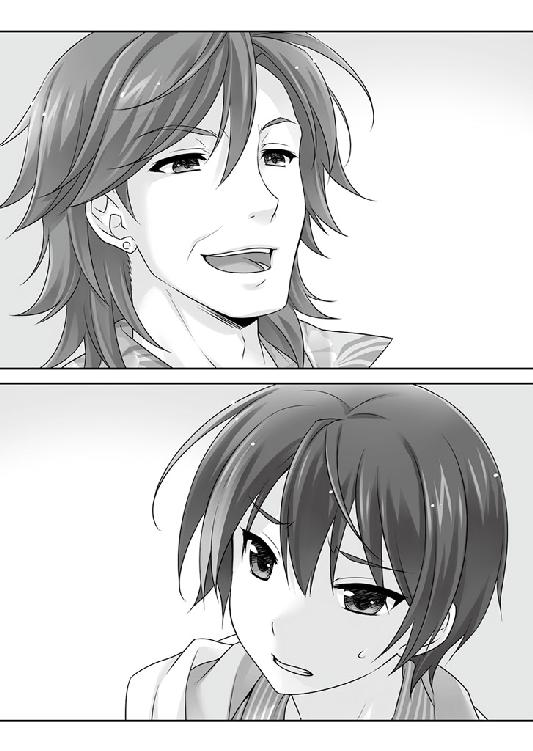
今度こそ、歯の根が合わない。オープンされた手札は、十行が♣の２４３７９で作られたフラッシュ。一條は♠と♥の５のワンペア。
この場面でも、十行はレイズしてこなかった。掌中の虫を弄ぶ子供のような無邪気さ。男の声と意図が、一條にもハッキリと伝わる。今夜の勝負は、カードの優劣を競うのではなく、どちらが『千里』の名跡を引き継ぐに値する格であるかのプレゼンだ。舞台は派手に。悲劇は陰惨に。観客の心を抉るおぞましさこそ、運命の盤上を支配する『力』の証明。
男にとって、これは勝負ではなく、結末の決まっている遊戯だ。今更一條を降ろして負かすつもりは毛頭ない。
（怯えたんだ......僕は......）
自分を誤魔化そうとしても、『本』は一條の弱さも見逃さない。
「勝てるわけがないのよぉ、旧式のクセにねえ！」
倉庫には、先ほどまでの戦場じみた炸裂音も絶えていた。死体安置所を思わせる静寂と死の臭い。女の足下に、ボロ切れめいた少女が一基。
「しぶとい玩具は戯びがいがあっていいけど、今夜は邪魔よねぇ」
コダマは悦楽に頬を緩ませて、動かなくなったアカハの頭を踏みにじる。
とびっきりの料理の仕上げと同じで、やることが多い。ボウヤの後を追わなければならないし、ここの後始末も必要だ。それに、主が以前追い掛けたことのあるチビと『アンブロシウス』にいた小娘が、奥へと走っていった。どこから迷い込んだのか。何のつもりか知らないが、ついでに片付けてやろう。
「全ては、十行様ぁんの勝利の為の捧げ物なのよ！ それにしたって、今日は動きがトンマだったんじゃありませんかぁ、セェンパァイ？ 旧式は回復も遅いから、前の傷が治ってないとかかしらぁ！」
アカハの勝ち目は最初からなかった。
性能差、互いの損耗、浸食花粉──導き出される解答は、稀少ではなくゼロだ。アカハは小賢しくも呼吸を止めて、神経ハッキングを抑えようとしたが、ｃＳは生きていなくても生者のように稼働する。生命維持の仕組みは人間と同じだから、呼吸しなければ機能低下してしまう。悪足掻きも、決定的な敗北を先送りにしただけのこと。
「もう退場しなさいよ。私、十行様ぁんの所へ戻るから。どうせ、あのボウヤもそこでしょう？」
ブーツの踵を踏み降ろすだけで決着がつく。
逆転の目は皆無。勝負をひっくり返す術はない。それがわかっているクセに。
アカハが嗤った。行けるものなら行ってみろ、と。
「本当は蜂じゃなくて、ゴキブリか何かじゃないの？」
おかしい。計算が合わない。この旧式は、既に五度は破壊されていなければならないのだ。それなのに、貫いて、引き裂いても、叩き付けても、まだ立ち上がる。前回といい、今回といい、往生際の悪さとしても度が過ぎる。
「不良品の分際で、悪足掻きをして。いいわ......首が千切れても笑えるかどうか、試してあげる！」
この期に及んで屈さない敵を、コダマは断じて許せない。怒りよりも憎悪に近い衝動に駆られて、もはや四肢もまともに動かない獲物にも容赦なく、頸を踏み砕こうとした。
瞬間。コダマは何かをかい潜るように真横へと跳躍する。常人には見えない糸を避けながら、両腕を無造作に振り回し、空中で旋転。勢いを利用した蹴りで、倉庫の入口から新たに飛来したシルエットを迎え撃つ。
影の正体は、ＴＰＯを全く無視したバニーガール。
───何故、バニー!?
途惑いはしたが、ｃＳの本能がウサギちゃんを撃ち落とした。
「もう一匹、初期不良品が残ってたわね！」
撃墜した筈の影は地上ではなく空中に。
天地逆さで天井の金属フレームに着地する。バニーガールを支えているのは、先ほどコダマが回避したのと同じ細微の糸だ。
「面倒なのは好きじゃないけど、これもお仕事だから」
「不意打ち程度で勝てるだなんて、大甘すぎて反吐が出るわねぇ。二匹まとめて片付けてあげる」
言うまでもなく、ウシオである。猛る敵ではなく、別のものを見ていた。
「アカハ。まだ壊れていない？」
「余所見するなんて、いい度胸じゃないのぉ！」
あっさりとキレたコダマが、コンテナと壁を踏み台に宙へ跳ねた。邪魔したことだけでも万死に値するが、自分を無視する侮辱は五分刻みにしてやっても購えない。空中という戦場の不利を歯牙にも懸けず、幾条と放たれる迎撃の糸をものともせず、二度の跳躍でウシオの懐へと到達する。
閉所で拡散した浸食花粉の威力は、元々の性能差を絶望的に拡大したが、続く一連の攻撃を白いバニーガールは残らず擦り抜ける。
圧倒的な速度差を埋め合わせたのは、環境と手数だ。狙いもつけずにバラ撒かれる糸の全ては、いわばウシオの手の延長。数十にも及ぶ糸の舞踏は、一つ一つが異なる速度と方向から目標へと襲い掛かる。最新型ｃＳと言えど、束ねた糸に捕まれば身動きできない。故に、その前に迎撃しなければならず、必然としてコダマの攻め手は緩んだ。
「───ご───っ」
選択の余地のない選択で強引に動きを止めさせて、ウシオは右の手刀をねじ込んだ。コダマの胸のど真ん中をぶち抜く鋼の爪は、ウシオの持つ最大の攻撃だ。
だからこそ、ｃＳとしての本能が、これはダメだと判断ってしまった。
「だから、旧式なのよぉ!!」
糸の使いにくい接近戦の距離で、必殺の一撃に動きの止まったバニーの豊満な胸元へ、今度はコダマの爪先が抉り抜いた。浸食花粉のハッキングで、ウシオの性能は平時の半分以下に落ちていた。
「......だから......新型って......好きじゃない......っ」
激突音と土煙をあげて地面に墜落するウシオ。
ニンマリと笑うコダマは、後を追うように着地して獲物に近づく。
地に伏せた蜘蛛は何度も立ち上がろうとするが、失敗した。当然だ。手応えはあった。旧式が今の一撃を喰らえば、立てる筈がない。
「なぁにをやってるんだか。こうなるって計算できなかったの？ それとも、いっそぶっコロされたかった？ もしかして、仲間だから助けた──みたいな虫酸の走るヤツ？」
「......お仕事よ」
それを断末魔に、ウシオはもう立つ力も尽きたように横たわって動かない。
理解しがたいものを「怪物」と呼ぶならば、コダマにとって、アカハやウシオこそが紛う事なき「怪物」だった。
人間は、未知を打ち倒す。
世界の隅々まで光に照らそうと歩み続ける、それが人の本能だ。
とうに人でなくなっていても、生まれ持った根幹に変わりはない。
だからこそ、コダマはウシオを許せない。
「今すぐ、ぶち撒けなさい！」
無造作に、ウシオの抉られた胸を踏み潰した。
「──────！」
倒れたままのアカハは何かを叫ぼうとしたが、声を出す余力もなかった。ピンで留められた標本のように二度と動かなくなるウシオへ、コダマが浮かべたあまりに人間らしい嘲笑に、アカハの中で何かがキレた。
とっくに壊れた身体で走る。
ｃＳとしては、あまりに遅い稼働速度。
異常を察したコダマが、迎撃の準備を追えるのに十分過ぎる時間。
構わず行った。
「バカじゃないの！ そんなザマで何ができるって───」
咆哮するコダマの腹部を、衝撃が前から後ろに突き抜けていた。
人型の砲弾が突き刺さっている。
コダマには、まるで理解できない。今起きていることも。最後の最後で、アカハの速度が自分を上回った理由も。
「......お兄さんのところへは行かせない」
呼吸する力すら惜しんで、ガラクタ同然の四肢から骨身を削るように熱量を掻き集めた、後のことはこれっぽっちも考えない一撃が、コダマの腹を抉り抜き───
「───勝てるわきゃあないでしょうが!!」
コダマの眼が深紅の色を帯びる。前回同様のやり口で悪足掻きを喰らわされた。耐えがたい屈辱に身を震わせながら、最新式のｃＳの反応速度が致命傷を避けさせる。突撃に合わせて旋回し、威力を流す。そして、今度こそ力を使い果たしたアカハの喉を凄まじい握力で捕らえた。
「飽きたわ。終わりにしましょ」
無造作に、頭から真下へ叩き落とした。
───『本』は一條の弱さも見逃さない。
テーブルを挟んだ対面に十行がいる。大きく真っ赤な口を開けて、足を滑らせた獲物が落ちてくるのを待っている。
この席に着くのは、自分独りだ。
他の全ては観客。好奇、期待、思慕、侮辱、憎悪、執着......斑色の想いの全ては外から自分を見つめている。
助けは何処からも現れない。碧流も、叔美も、アカハも、ウシオも、自分の立つべき場所で戦っているから、誰も手を差し伸べてくれない。
───それが、どうしたというのだろう。
７ゲーム目。機械めいたディーラーが、新しいカードを配る。
震えは止まった。力強く手を伸ばして自分のカードを手にする。
随分と。
無駄なことを思い悩んでしまった。
（千里一條は............振り向かない）
出口がわからないのも、都合のいいカードがないのも、いつも通りの人生だった。
自ら『千里』という舞台の主役になろうと選んだ。誰にもこの役は譲ってやれない。
運命という怪物は、数え切れない不幸や理不尽やどうにもならなさを運んでくる。
それでも、変えたいと思って選び続けることが、救いはもたらさなくても道を拓いた。
選択があるのは、いつでも後ろではなく前だ。自分にとって大切な人々も、歩みを止めず進んだ先に待っていた。
それは、千里一條にとっての数少ない存在意義だ。
稀少だからこそ眩い光を、守りたいと痛切に想う。もっと沢山の記憶と一緒に在りたい。
進もう、此処よりももっと先へ。
千里一條が、この席にいるのは偶然でも奇跡でもない。
己の選択で掴み取った必然だ。
空っぽだった自分に形をくれた沢山の出逢いへ、ささやかな幸せを返したいと願った。この責任を引き受けることが、まだ見たことのない処へ通じている気がした。
それは誰の為のものでもない、自分自身の為の願いだから。
ここまで背中を押してくれた人たちも、きっとそうだったろう。
碧流。叔美。ウシオ。アカハ。久留美。多分、花々梨も───
「ゲームを続けよう」
「ゲームを続けよう」
手札は、♠と♦のＪと、♥の２と５、そして♣のＫ。
十行はといえば、今にもタップでも踏みそうだ。近づくと抱きつかれかねないぞ。
「素晴らしいＹＯ！ 流石はマイサンだ！」
「貴方のことがやっと判った」
恐るべき怪物。打ち破らなければならない『運命』。
ようやく、相手の顔が見えた気がした。
「んー、いきなり何だね！ 追い詰められてどうかしちゃたのかな！」
「やっと、わかったんだ。僕はもう憶えていないけど、お祖母さんが貴方を勘当した理由。姉さんが貴方を許せない理由。貴方の『力』が何なのか」
千里十行は、自分から何も選ばない。暗がりを這い回って、近づく誰かの運命を手酷くねじ曲げて、零れ落ちた果実を貪り喰らう。
これまでの記述を、出来る限り細部まで、幾度も反芻しながら検証する。
目聡く口うるさい半身。離れられない翼の片割れ。壊れてしまった過去の代わりに、一條に与えられた魔法の『本』の語った諸々を。
頭の上にはコウモリが群れで飛んでいる。カラスではないぞ。門の外は人気がなく取り立
かつて学校の正門前で、叔美と久留美を間一髪救った時も、『本』は時に童話のように回りくどく、時に言葉遊びで物語った。
疎んだこともあった。感謝したことも、あった。
どんなに扱われても、『本』は手掛かりを示し続ける。
───今も。
暗く曲がりくねった道の彼方に、小さな灯火を見た気がした。
「手品のタネは見えてたんじゃないのかね、マイサン！ ま、大事なのは見えるか判るかじゃなくて、勝てるかどうかだＹＯ！」
怪物が嘲弄する。面白おかしく指を立てる。唇を塞いで、言葉を奪ってしまうように。幾つもの人生と魂と誇りを磨り潰す。選択視を消してしまうからではなく、選ばない無意味さこそが、巨大で真っ黒なブラックホールだ。
この男にだけは負けられない。
こいつに勝てなければ、自分の全てが否定されてしまうと確信した。
必ずくる好機を狙い打てるよう、これまでの千里一條の全てと、『本』の記述を部品として、怪物の心臓を射抜く精密細緻な切っ先を組み上げる。できるか。否。やるだけだ。
「───千里一條は、お前には屈さない」
選択視を選ぼうとする。消える。残されたものを選び取る。
十行は手を変えず、一條は全ての手札を交換。
幾度消されても、踏みにじられても、意志は手放さない。
誰の為でもなく、自分の為に。
自分である為に、自分の選択を続ける。
「パパに『お前』はないＹＯ！ それに、はは、屈さない？ 可笑しい可笑しい！ いいかいマイサン。世の中は、自然と勝者と敗者に別れてしまうものなのさ！」
ゲームを続ける。選択視が現れ、触れる前に消えていく。
一條に選び取れるのは、同額賭けのみ。『１４』と同じ一本道。
オープンされたカードは。十行のツーペア。一條のブタ。
「ほらね！」
喜色満面の十行と、自分の山から勝者の元へ移動されるチップを見つめながら。
（............１４）
叩き付けられる『運命』という逆風。身体も意志も灰と化す業火。
人には立ち向かいようのないものに歯を食い縛って踏み留まりながら、見た。
まだ選択視の現れていない『本』に、あの忘れがたい徴を。
───１４を。
（............そうだ───だ）
ようやく───
千里一條は、行くべき『道』を見出した。
「......しつこい、ガキね」
コダマの舌打ちが合図のように。
ゆらりと、アカハが身を起こす。壊れた人形も同然。身体はまだ動く部分を探す方が早い。叩き付けられた額がどうなっているのか、確かめようとも思わなかった。
立ち上がれる理由はとうにない。
機能停止寸前ではなく、まだ機能し続けていること自体が異常なのだから。
それでも。
立ち上がる理由なら、あった。
「もう一匹はさっさと死んだのに。まったく腹立たしい」
「ああ、そうか......」
立ち上がる理由が、もう一つ増えた。さっき手を貸された分は、返しておかなければならない。
だから、前に。
目の前の女を仕留めなければ。
「......アンタ、どういう身体してるわけ？」
コダマは、目の前の獲物に生まれて初めて不可解な感情を抱いた。
歩みは這うよりも遅い。拳を握る力さえ残っていない。
まるで壊れた発条仕掛け。
あまりにおぞましくて一歩退く。
その足下に。
「あ」
突然、コダマはつんのめった。何かを踏んづけたのだ。それは、先ほどウシオが辺り構わず振りまいていた糸だった。体勢を立て直そうとして、しくじった。粘つく蜘蛛の糸は容易くは剥がせない。ｃＳにあるまじき事ながら、みっともなくバランスを崩して......要するに足を滑らして転んでしまった。初歩的な身体制御にしくじったのは、アカハに腹部を抉られた損傷のせいだ。
巫山戯るな、とコダマは怒りにキレかかる。こんな馬鹿みたいな───
「あ」
床についた手が何故かくっついて離れない。
数瞬前は何もなかった筈の床に、別の糸が張り巡らされていた。
「だ、誰が、一体───」
考えるまでもない。糸を使う相手は一体だけだ。それでもコダマには信じられない。手応えはあった。確実に胸を潰した。
だから、こいつが生きている筈がない。
「やっぱり、新型は手強かったわ」
よたつきながら立ち上がったのは、廃棄処分した筈のウシオだ。
「どうして......？ あの損傷で、旧式が動ける............」
「コレを入れてたのを忘れていたから」
無惨に引き裂かれたバニーコスの胸元に覗く、艶めいた素肌......ではなく、雇用主から対老害用に授けられた、メロンパンじみた〝偽胸〟。このささやかな詰め物が致命傷を避けさせてくれたのだ、と。もう用済みと捨てると、完璧バニーだった曲線は詐欺のように萎んでしまう。実際詐欺だが。
「......もっと、我が身を振り返りなさい！」
立ち上がるコダマに言われて、ウシオは自分を再確認した。彼女は根が素直だった。
被弾した胸部は半分潰れている。肋骨と肺の区別が難しいが、あと数分程度なら大丈夫だろう。二度も腹をぶち抜かれる経験をした。人間もｃＳも、大事なのは慣れである。
「そうか、これが紙一重ってヤツね」
「紙一重どころか、全部ぶち抜かれてるでしょ！ ああ、もう！ 私を......ここまで小馬鹿にしてくれるなんて！」
「小馬鹿になんてしていないわ。本当よ」
ウシオは真摯かつどこまでも本気だった。本気だからこそ、人間同士がそうであるように、絶望的に二体のｃＳは分かり合えない。
「バラバラにぶち撒けてやる!!」
ウシオの糸が手足に絡みついてる。だが、それだけ。力任せに千切って立ち上がり、半死半生のウシオを今度こそ仕留めるのは造作もない。
───他に誰もいなければ、だ。
鈍い音がした。
油断と呼ぶには当たらない。背後の敵はとうに残骸だ。
残骸というならとっくにそうだったという、とうに死んでいる筈なのに動き続けているという、それだけの事実をほんの一瞬忘れたことが、コダマにとっての失敗だった。
アカハの腕から突き出た針が、後ろから突き刺さっていた。
「この、旧式............っ」
ｃＳの神経を冒す毒物を打ち込まれても、コダマには勝算があった。機能停止寸前の旧式二人を相手にするなら十分だと。
事実そうだった。糸に絡まれている最中でなければ、だ。
くたばり損ないのｃＳ二匹、ウシオとアカハが、糸と毒で身動きできなくなったマウント状態のコダマを冷ややかに見下ろしていた。
「いや、ちょっと......その......」
コダマは猛烈にイヤな予感がした。
「アナタ、危険な花粉を散布するのよね？ さっさと密封しておくわ」
「アカハも賛成です。動かなくなるまで殴りましょう」
「「えいえいえいえいえいえいえいえい」」
大量の糸で動きを封じながら、容赦ない追い打ち。
どちらが悪人だかわからなくなりそうな、イイ感じに酷い絵図が展開された。
だが、最新式ｃＳはそれ位ではへこたれない。この程度の逆境は、想定内だ。
（わ、私を舐めてるんじゃないわよ、こんな糸、ほんの三秒もあれば───）
コダマの計算は正しい。僅かな隙でも生まれれば、即座に反撃に転じてやる。死に損ない二匹を始末するのに、合わせて一〇秒も掛かるまい。
───時間があれば、だ。
臆病なネズミ同然に息を殺していた筈の脆弱な人間風情が二匹、能面みたいな無表情で、マウント・スマキ状態のコダマを見下ろしていた。
「待ってたぜ、この時を」
「ええ、本当に辛い雌伏の時間でした」
アカハとウシオの戦闘の最中、奥へ走った叔美は、花々梨に我流の応急処置を施した。少しは動けるようになった花々梨と最低限必要な打ち合わせを済ませると、戦闘の余波でぶち撒けられたコンテナの中から、次の作業に役立ちそうなアイテムを入手して、絶好のタイミングを待っていたのだ。
「お前たち、何を......す───」
相手は脆弱な人間風情なのに、超猛烈にイヤな予感がした。
叔美と花々梨は、それぞれ手にした「ピッケルのようなもの」と「バールのようなもの」を、糸まみれで半分繭になっている「何か」へ、わりと容赦なく振り下ろす。
「ちょ、お、おま......」
振り下ろす。
「やめ、まちな......後で酷いから......ぶっこ」
振り下ろす。
「あ、ちょ、だ、それはダメ......やめて、お願いです......」
振り下ろす。
「四人掛かりなん......この悪党ど......卑怯者ぉ......!!」
ああ、素晴らしき哉、団結力。
「お前が卑怯とか、鏡見ろです」
「動かなくなるまでやらないと、反撃されるわ」
「さっきは、よくも偉そうにしてくれましたね、四倍返しです」
「これはアタシの分、これはアタシの分、これとこれとこれとこれもアタシの分だ！」
地獄的絵面が展開された。
常識人として、一人後ろに取り残された久留美はドン引きである。
「あ、あの......叔美ちゃん、いいんですか、それ!? 悪人相手でも、流石に色々マズいんじゃないかと思ったりするんですけど───」
「いいんだよ。コイツは、この程度じゃこれっぽっちも堪えないんだから」
流れる血が「できない」と悲鳴をあげる。
自分でも与り知らない本能が、目の前の男と否応なく繋がった証明が、人間は怪物の『力』に抵抗できないのだと言い張った。どんな神話でも、恐るべき怪物を撃ち倒すのは、選ばれた英雄たちだ。
一條は、ほんの少し違うモノが視えるだけの高校生で、英雄ではない。
ゲームを繰り返す。手札が配られる。消える選択視。
１０ゲーム目、幾度となく選び続ける。
濁流が水溜まりを押し潰すのにも似た、抗いがたい力。運命という名の力。
それが、どうした。
１４ゲーム目。更なる敗北を積み上げて、幾度かの砂粒のように小さな勝利を拾う。ギャラリーは埋葬に参列する弔問客の沈痛で、血の繋がった敵の手で全てを奪われていく、憐れな少年を見守っている。
無駄な抵抗。断末魔の足掻き。何処の誰にも僅かな勝ち目も見出せない。
───一條以外には。
敗北の痛みも、逃げ出したくなる屈辱も、終わらない旅路への迷いにも堪えられる。もっと何倍も恐ろしいものを乗り越えてきた。
行き止まりの数字、冷たく青ざめたＰＧ『１４』を。
（......だから、怖くない！）
本当の恐怖となら二度も対峙した。お前が『運命』を弄んでも、その域には遠い。
「まだまだ行くＹＯ！ 次のゲームだ！」
１５ゲーム目。新しい手札が配られる。
（お前はもう怪物じゃない）
かつて『１４』に怯えたように、姿のない相手の正体を怪物と信じていたから、『本』の告げる兆しも頭に入ってこなかった。
さて、キミの手札は、８のワンペアが出来ている。
十行はといえば、ノリが悪そうに鼻を鳴らしている。文句の一つもつけたそうにしているが、気遣ってやる筋合いはないな。
さりげない記述が、十行の手札の手掛かりを与えてくれる。おおよそ、自分よりも上か、それとも下か。
（......今の僕よりも下......）
十行は三枚を、一條が五枚全部を交換。
オープン。十行が９のワンペア。一條が４のワンペア。
敗北しチップを失っても、自分の推測と『本』の記述の精度を確信する。
（僕は、視ることができる）
立ち向かう為の武器は、最初からこの手の中に。
手品のタネはもう視えた。十行のポーカーフェイスは完璧な盾ではなく、負ける恐怖を持たないから、不安や焦りを感じないだけの薄っぺらな仮面だ。この男は、手札を見れば当たり前に喜び、あるいは残念がって兆しを残している。
（ありがとう、叔美）
選択に───正しいとか、誤っているとか、はない。
啓示のように、己のミカタを教えてくれる。
行くべき処もまた。
回避不能の悲劇。打ち破れない黒鉄。口を開けた行き止まり。
そして───見据えるべき僕らの友。
道筋はとうに拓かれていた。ただ、そうと気づかなかっただけ。
１７ゲーム目も、一條の敗北で終わる。
好機は、おそらく一度。
（辿り着くのと、チップが尽きるのと、どちらが先か......いや、）
一度の勝利で逆転できないほど差がつけば、終わりも同然だ。十行が冷静になる隙を与えてしまったら、こちらが保たない。
まさに一寸先は闇。選んだＰＧの先に道が続く保証はない。
それなのに。
なんて胸が躍るよう。
恐れはあった。躊躇いも、迷いもあった。
ただ、そんなものに振り向こうと思わなくなっただけ。
弛むことなく、ただ一つの勝利を目指す。
そして─────
十行の親番で、新たなカードが配られる。
手札は、♠と♥と♦の７、♠のＪ、♣の２。
十行は、この場で一曲ぶちかましそうにノリノリだが、キミの７という数は相当に縁起がいい。
記述の一切を見逃さないように、瞬時に何度も何度も確認する。
──今しかない。
配られた手札で７のスリーカードが出来ていて、十行の手札を僅差で上回っている。出来れば、もっと高い手札が良かったが、これ以上は引き延ばせない。
配られた手札でしか勝負できないのが人生だ。
───想うのは、自分が手にしていた、ささやかな幸せの風景。
今勝てなければ、過去を手放した時のように、掛け替えのないものを失ってしまう。
だから、行こう。
夜の空を横切る矢のように、脇目も振らずに。
生まれて......そう、今の自分になってから一番の真っ直ぐさで、決めた。
前しか見ない。不純物のなくなった純粋で直向きな一条の想いは、何よりも強固な意志に、意志は揺るぎない確信に変わる。
───進め、先へ。
先行は一條。
対面の敵へ視線を向けてから、最初の選択をする。
十行は、この場で一曲ぶちかましそうにノリノリだが、キミの７という数は相当に縁起がいい。
このまま受けて立つのであれば／５３３─■■■■
ここが勝負どころだ。大きく賭けてみるのなら／７６１─■■■■
降りるを宣言するのなら／３９９─■■■■
一條が探るような上目遣いをして、すぐに視線を逸らした。
「んー、パパにお話があるのかな、マイサン？」
返事をしなくても「運命」はお見通しだ。マイサンの処へまた「降りる」が帰ってきた。とんだ喜劇だ、カワイソウに！ こんなに怯えてしまって。意地を張ってもパパには勝てないと、心の中で認めてしまった。
「ひゃはははは、いやいや、困った！ どーしたものかなあ、マイサン！ 僕は優しい男なんだけど、こいつは悩みどころだＹＯ！」
いつでも、今でも。どうとでもできる、どうにでもできる。
「そうだ！ マイサン、好きに選ぶといいＹＯ！ パパからのプレゼントだ！ どうするのか、見せて欲しいな！」
まだ続けるも良し。素直に折れて降りるも良し。ここまで、よく堪えた。それも限界だ。誰も、僕には叶わない。あと一度か二度......それで勝利は転がり込んでくる。
「これで最後にしましょう」
ギャラリーに混じる碧流が、一條の宣言で反射的に飛び出しかけた。
ほんの一瞬、泣きそうな顔で長い戦いを見守っていた姉と瞳が合った。
......彼女は踏み留まった。
心臓を吐き出すような大きな深呼吸の後、一條は宣言する。
「残り六二枚、全部賭ける」
一條の手持ちのチップ全てが場に置かれる。
ギャラリーが突然の成り行きに息を呑む。碧流は、もう動揺しない。
いつも通り、ノータイムで同額掛けしようとした十行が、流石に手を止めて目を細めた。
「おいおい、どういう冗談だい、マイサン？」
何を考えている。いや、考えているのか？ 一條は限界だ。彼を囚える『運命』がそれを雄弁に物語っている。ならば、僕が何を考えることがある。煮るなり焼くなり好きにできる。次の交換で、災厄のカードを掴ませてやることも。
「───十行」
ギャラリーの輪から、共謀者が視線で何かを促す。
「いいや！ マイサンは、とっくに負け犬だＹＯ！ 何も出来ないさ！ ここまで耐えきれなくなって、一か八かに打って出ちゃうとは。どこまでも凡人は哀しいね。いいとも！ 華々しく終わりたいというのなら、次はパパも本気で、念入りに『選ぶ』とするＹＯ！」
十行が等量のチップを鷲掴みにした。
賭けの選択視で選んだＰＧへ、『本』は独りでに捲れていく。
「同額賭けだ。残念だよ！ マイサンとの楽しい一時も、これで最後なんてね」
チップが場に置かれたのを確かめてから。
「──────ありがとう」
一條は、心からの礼を告げた。出逢ってから、多分、最初で最後になるだろうそれを。
「んー、派手に最後を飾れるのが嬉しいのかい？」
「本当に、感謝します。貴方が、貴方で、本当によかった」
十行は勝ち誇ってニンマリと笑いながら、よく見えるように指を立てる。
これが本気ってヤツだよ、と。
「さあ、カードを交換しちゃいなＹＯ！」
そして───
７６１─■■■■
「さあ、カードを交換しちゃいなＹＯ！」
今度は、こちらの番。どうするか決まっているのなら、思った通りにすればいい。誰もキミの選択に文句は言わないさ。そうだろう。
───思った通りにすればいい。誰もキミの選択に文句は言わないさ。そうだろう。
そんな励ましみたいな言葉を掛けてくれるとは思わなかったと、一條はこの期に及んで口元が緩んでしまうのを自覚する。
十行は本気だ。
これまでのような抑えた『力』の使い方はしない。無力なネズミと信じていた相手の挑発に思い上がりを教えてやろうと、今度こそ全力の『力』がやってくる。
碧流が有り得ない道を拓くように、有り得る道の中で最も悲惨で滑稽な「結末」へと一條を押し流す。
だから選んだ。
このままで勝負する／５５５─■■■■ へ行け
現れた、ただ一つの選択視を。
「───おい、おいおいおい、マイサン、これは何なんだＹＯ!?」
考えもしなかった状況に、十行が跳び上がった。蹴り倒された椅子が夜明けの鐘のように鳴り響く。悲鳴じみた咆哮を漏らす。宥めて席に着けようとするディーラーの声も届いていない。長老たちからすれば、それは突然すぎる錯乱だ。
選択視に著かれているのは一つだけ。
十行の『力』は、他人の選択を消して、自分に都合の良いものを選ぶだけ。
最初から一つしかない道は、どうしたって消すことが出来ない。
できた。
人は正しさを求める。成功と幸福を欲する。誰しも、刻々と変わる状況から進むべき道を思考し、正しい選択を見出そうと苦悩する。
その正しさを探す、人として当たり前の思考の隙間に、十行の『力』は罠を張って待ち構えている。
欲をかくほど、選択視の幅を広げるほど、容易く喉を食い破られてしまう。
一條の持てる何もかもをチップにした賭けは、正しく一か八かだ。
この選択でゲームには勝ち切れない。全額賭けで勝っても、相手の手元にチップは残る。
まして、敗れればその時点で全てを失ってしまう。一條が守りたいと願う様々なモノも。
それでも───
これは怪物の心臓へ届くたった一つの武器だ。
敗北の痛みも恐れる心も消えはしないが、受け止められる。
それが全てを賭けるということだ。
だから、行くべき処はただ一つ。
ＰＧ１４と同じ───選択の余地なき一本道。
───一本道にも良い道はあるんだ。
選択の全てが、良くも悪くもどちらでもあるように。
死に憑かれながら、一條に救いを与えてくれた不器用だけど優しい少女の存在が、真っ直ぐにしか進めない路地の奥にも、更に先へ進む道があるのだと教えてくれた。
もっと早く気づいても良かった。一條の本能は、ずっとこれだけが唯一にして無二の遣り方だと囁いていた。
気づくのが遅れてしまったのは、怖かったからだ。
暗がりの路地。終わりのどん詰まり。一條は、かつて触れた「１４」を何より恐れて遠ざけようとするあまり、そこにある手掛かりから目を逸らした。
可能かどうかも賭けだったが、確信はあった。
人生の選択視は、自分の見方一つで変わる。
絶対に降りない決意が、降りるを選択視に示さなかったように。
決意を固めることなら、意志があれば誰にでもできるだろう。如何なる場合も、それを貫き通すことは難しい。
それでも、出口のないかもしれない道を行く。
行く先のどんな『運命』をも恐れない覚悟と、一条に歩き続ける意志が、たった一つの選択視として結実する。
そして、選んだ。「このまま勝負する／５５５」を。
「───今度は、貴方が選ぶ番だ」
相手の喉元へ切っ先を突き付けるように宣言する。
千里一條は、やっと辿り着いたのだ。
これまで何一つ選んでこなかった男は、一條の伏せた手札を睨んだまま動かない。
選びに選んだ『運命』をプレゼントしてやろうと思ったのに。無様で喜劇を迎えさせようと伸ばした手が、素気なく振り払われて空を掴む。
「............なんだよ。ありえないだろッ」
苛立ちに爪を噛む。爪ではなく指を噛み切り、血が流れ出しても気づかなかった。
───歓びだけあればよかった。
快楽のみの人生。怒りや悲しみ、努力や我慢といった面倒なものは欲しくなかった。
子供の空想にしか生き残れない妄念を、持って生まれた『力』が現実にする。
彼にとっては勝利こそ、歓びを実現する最もお手軽な方法だった。
十行が指を立てれば、誰も彼もが『運命』に跪く。
人は他者の不幸なくして、己の幸福を認められない生き物だ。
幸福と不幸の帳尻は、いつも何処かで合い続ける。
蟻を踏むように他人を潰す。達成という不完全な喜びからは遠いが、別のモノが手に入る。敗北した亡骸の数が、彼の勝利と幸福を保証する。
千里の『力』。運命という力。選ばれた英雄の聖印。凡人と己を絶対的に別つ証。
この『力』を道を示す力と呼んだのは、一体誰だったろう。今は亡き母親だったかもしれないが、そんな事は今更憶えていない。
十行は過ぎたことを振り向かない。過去とは如何なる時も足を引っ張る鉛の外套。遊び飽きた玩具を捨てるように、使い終わった過去を棄ててしまう。
勝者であることを貪ってきた男は、だからこそ今起きていることを理解できない。そんなものは勝利ではないという簡単な事実を、誰も教えてやれなかったから。
ただ、ずっと昔、似た痛みを一度だけ知っていた。
これまで振り向いたこともない色褪せたフィルム。よく名前も想い出せない女の『貴方が嫌いだ』という言葉。
「僕は、負けない......負けてない......『力』が届かないからって、いい気になるな......こんなのは負け......負けじゃない......っ！」
一條は勝ったのではなく、勝負できただけだ。
このゲームを落として逆転されても、手元にチップは残る。ゲームは続く。
十行の手札は、８とＡのツーペア。
一枚交換を選んで、８かＡが来ればフルハウス。
このゲームでも、勝つ機会は幾らでもある。だが───
それ以外なら？
「だったら......だったら......ま............？」
とうに忘れてしまった失恋のように、胸の奥を掻き毟るどこか見知った想い。
このゲームに勝たなければ............。
この先も『力』が通じないなら、同じことを続けなければならない............。
千里の『力』は、十行の為にだけ歓びを運んでくる。相手の敗北と確実な幸福とを。
確かなものが何もない一寸先の闇の濃さに吐き気がした。
「こんなのは違う......真剣勝負なんて、凡人の......僕は持っている、選ばれてる......だから、ひ、ひ、ひ、ひ、ひゃは、違うんだ......はは、はひっ............」
滴る血が唇の周囲を汚す。もはや男の顔は道化ではない凄惨な鬼貌だ。
ギャラリーが固唾を呑んで見つめている。
王手は掛かっているのだ。十行が勝てば一條のチップは尽きる。勝負は決定的となり、次の名跡の座は揺るぎない。
「────────────ふん」
俯いていた男が、気持ちの良い朝に飛び起きるように顔を上げて、椅子へ座り直した。
大胆に、大仰に、まさしく王者のように。
───ま、良くやったんじゃないかな。
と、上から見下ろすかのように。
異様な空気と静寂が広間に充ちる。
十行は、ゆっくりと手を伸ばす。とっておきの御馳走を盗み食いした悪戯小僧みたいに、晴れ晴れとした顔で。
「待たせちゃったね。僕が選ぶのは───」
先ほどまで漂っていた昼の残滓も、完全に消えてしまった。
人気の少ない倉庫街とはいえ、結構な騒ぎを起こしていたのに部外者の現れる気配もないのは、ここにいた誰かが事前に手を回していたのかもしれない。
彼女は何をするでもなく、疎らに星の散り始めた空をぼんやりと眺めている。
「これが燃え尽き症候群ってヤツなのかな」
お向かいのオカマダさんから仕込まれたばかりの言葉がポツリと漏れた。
何かをやり遂げるには精神的肉体的な熱量を消費する。ガソリンの尽きた車が走れないように、人間だって使い果たせば一時的にせよ動けなくなってしまう。
それに、一條を送り出してコダマをぶちのめした叔美が遣るべき事は、この場にはもう残っていなかった。
......一條は間に合っただろうか？
気掛かりといえば気掛かりだが、気を揉んだところで結果は出ている頃だろう。花々梨や他の怪我人には応急の処置を施した。意識を取り戻したスーツの男たちは、花々梨からヤケに丁寧な口調と惚れ惚れするくらい嘘っぽい笑顔で何か言われる度に、ひたすら恐縮したり狼狽したり土下座したり踏まれてハァハァしていたが、詳しい事情に首を突っ込もうとは思わない。
拉致監禁犯は捕縛された。すぐそこで、白目を剥いて気絶している。ｃＳだけにいつ復帰して暴れ出すかしれたものではないので、やむなくアカハとウシオが見張っていた。
それら後始末の間にも、花々梨は久留美のスマホを借りて（花々梨のものは捕まった時に壊されてしまっていた）方々へ連絡をつけていたから、もうすぐ手配された医者なり事後処理をする人間がここへ来るのだろう。
叔美の仕事は残らず片付いてしまったのだ。この先は一條の仕事。叔美にできるのは、それこそ久留美と二人して、少年の勝利を祈るぐらい。
「のんびりとしている場合ではないんです」
「おい、怪我人なんだからあンまり動くなよ。ヤバいところは外れてたけどさ」
怪我人のクセに自重しない花々梨が、久留美に肩を借りてやってきた。顔色がさっきよりも良くない。ほら見たことか。
「久留美も寝てた方がいいって言ったんですけど......イチジョー、今頃『勝負』とかしてるんですね。負けたら『アンブロシウス』が取られちゃうって」
厳密には違うのだが、久留美には細かい事情を伏せている。
「勝つよ。まあ、多分だけど」
根拠があるわけでも、信頼しているのとも違う。
あのどこか抜けた少年が、やるべきことを遣ると確信しているのだ。遣るだけやって届かなければ、それはそれで納得できる。
だから、今は一條の勝ちを疑わない。碧流のようにオーナーの立場なら「その先」を見越して思考し備えるべきかもしれないが、叔美はそんな面倒な役回りは御免だ。
「勝っても、あの男が素直に負けを認めるわけはありませんよ」
花々梨が血の気と一緒に表情まで薄くなったような顔で、不吉な予言をした。
「それは......そうかもしンないけど」
言われてみれば、花々梨の指摘は反吐が出そうなリアリティを持っている。
千里十行───あのクズが黙って敗北を受け入れて、素直に頭を垂れるだろうか？
否、太陽が西から昇るのと同じくらいに有り得ない事象だ。
「クソッ」
咄嗟に考えもなく感情だけで走り出そうとした叔美を、花々梨が引き留めた。
「待ってください。『交衣』へは部外者は立ち入れません。それに、失礼ですけど、叔美さんが行ってどうにかなりますか」
「かもしンないけど......ジッとしていられるか！ 一條がヤバいンだぞ!!」
「叔美ちゃん......」
その言葉を待っていた、というように花々梨が頷く。
「......わたしに考えがあります」
そして、十行は決断した。
黄金のチップの雨。
カラフルなカードの紙吹雪。
鮮やかに色づいて空に咲く一瞬の花火。
ひっくり返されたテーブルが広間を転がる。
「もう、こんな長いだけで詰まらないゲームは終わりだ！ さあ、解散しようＹＯ！」
己でひっくり返したテーブルと散らばったチップを、十行はオモチャ屋ではしゃぐ子供みたいに蹴っ飛ばす。
長老たちも呆気に取られていた。
決断どころか、圧倒的に優勢だったゲームの途中で全てを投げ出す、癇癪を起こした子供も同然の暴挙を十行がしでかした理由に、全く理解が及ばない。我に返った疎らな声が、礼儀知らずというのも余りある男を叱責するが、右から左だ。
「っ、ハ──────」
一條は椅子から滑り落ち掛かる。驚きではなく、全てを使い尽くしたからだ。
ゲームの続行はおろか、立っているのも困難なほど酷使された脳と四肢。座席にしがみついて、無様に倒れるのを最後まで拒む。
今夜の勝負は、ポーカーでも、千里の『力』を比べたのでもなかった。
どちらが先に「振り向くか」というチキンレース。
それに気がつかなければ、ここへは辿り着けなかった。自分一人では最後まで判らなかったかもしれない。押し上げてくれた沢山の手に導かれた。
───誰だって、他の誰かに道を示すことが出来る。
千里十行が持つ『力』の総てを打ち破ってみせることが、勝ちへと続く唯一の道だ。
本気を出させる為に全額で仕掛け、その上でチップの枚数を逆転し、あの男の身体ではなく魂に楔を打ち込む機会を狙った。
勝ったところで、相手の手元にチップは残っている。
どちらかが屈するまで、ゲームを続ける他に術はない。
一條は最後まで続けただろう。今度こそ、五分の勝負を。
それでも───
勝利は得た。最後までポーカーでは勝ち切れなかったが、ゲーム盤はひっくり返された。
怪物の仮面は砕け散る。そこにあるのは、ただの千里十行だ。
「勝負を棄てたな、十行。この勝負、一條の勝ちだ！ この場の全員が証人だぞ！」
今にも意識を失いかねない一條に駆け寄りたいのを堪えて、碧流は散ったチップを踏み越え、祖母の仇へ詰め寄る。
一條の意図とは違う結果でも、これは間違いなく一つの勝利、一つの決着だ。
絶対に覆せないものを覆して、意志と覚悟が『運命』を打ち破ると証明した。
千里よりも遠い道を踏破した切っ先は、あの男の喉元へ確実に届いている。
だからこそ、今この場で勝利を確定させてしまわなければならない。そうでなければ、全てを費やした弟の行為に、正統な結果で報いてやれない。
「棄てたとか棄てないとじゃなくて。面倒なのがイヤなだけなんだＹＯ。勝ったとか負けたとか、そんな詰まらないことで悩むなんて、まっぴらなのさ。でもま、そんなに怒るなら、僕の負けで構わないＹＯ」
「......本気で言っているのか？」
「勿論だＹＯ、マイドーター！ これで一勝一敗だね！」
一瞬の感激の後の、急降下落下による目眩。
「そうさ、次こそ本気でやるＹＯ！ さっきのは遊びすぎちゃったからね。次は、最初から本気でマイサンを叩きのめしてやる」
「貴様の厚顔無恥も大概だが......一つ忠告してやる。『次は本気だ』と抜かすヤツが本気を出すところを、私は一度も見たことがない」
「僕は例外さ！」
「碧流。十行の言うことも、今回は理があるのではありませんか」
我慢の限界に、実力行使まで半歩手前になった碧流を押し留め、陽春が割って入る。
「どこにどんな理がある!? 盗人にも何とやらか!? そいつは盗人より最悪だがな」
「これまで十行は、一條君の条件を全て呑みました。十行が条件を出さないまま終わっては、公平とは言えないのでは？」
「お祖母様に放逐されたロクデナシを名跡の件へ強引に割り込ませておいて、今更五分だのと言える貴様の面の皮も相当だな」
道理に包んで無理を押し切る。如何にも鷹崎陽春らしいやり口だ。
三戦目の提案は難癖に等しいが、今夜の勝負は、半端な形での無理矢理な幕引き。一條が勝ち切れていなかったのが傷になる。
「皆様、いかがですか。このまま有耶無耶に採決を行うよりも、千里十行と一條君、ここまでを五分として、再度の勝負を行うのは。いえ勿論、日を改めてお忙しい御老人に御迷惑はお掛けしません。決着には、今この場で行える題材で十分でしょう」
「貴様、何を勝手に！」
「マイフレンド！ 僕とマイサンを五分だなんて、見る目がないね！」
横槍を無視した淀みない語り口に、長老にも賛同の気配が拡がっていく。元より、老人たちの多くには、鷹崎が事前に話をつけてある。
結局は、戯言一つでひっくり返されてしまうのか。このテーブルと同じに。
（ここまできて.........いや、考えろ。一條の戦いを無駄にしてたまるか）
「鷹崎の。この場での題材と言っても、どうする？」
しかし、老人たちの持って回った言葉遣い。これは決まる流れだ。
「決着がつけば良い。簡単なもので十分でしょう。例えば、ジャンケンでも」
碧流は礼儀も仕来りも振り捨てて、陽春の胸ぐらを長老たちの面前でねじり上げた。
「私の我慢も限界だぞ、鷹崎───」
「待って、姉さん！ 無茶は......三戦目、僕ならだいじょ......」
立ち上がろうとしたが覚束ず、一條が躓く。
そして───
裁可が下ろうとした瞬間。小さな、しかし見逃せない暴風が、有り得ないことに襖を蹴り飛ばして交衣の席に雪崩れ込んできた。
「一條！ 碧流！ アタシが来たぞ!!」
碧流は聞き覚えのある声に、急いでそちらを向き直った。警護役のゴツい男の腕を、バニールックの叔美が本物の兎みたいに擦り抜けてくる。手を引かれて連れてこられた久留美は、事情が判らないのと警備役の強面のお兄さんたちに囲まれているせいで、引き攣った笑顔で半泣きだ。
「お前たち、こんなところへ何をしに来た!?」
碧流に支えられなければ立っているのも難しいのに、一條に自然と笑いが零れる。
無鉄砲にも程がある。二人とも、自分や碧流を救いに駆けつけたのだろう。この逆境で出来ることがあるとは思えないが、来てくれた事実だけでも十分過ぎる。
「堂々としてろ。用事終わったら、すぐに出て行くンだし」
「いやいや、叔美ちゃん！ これはヤバスギですよ！ 用事が終わる前にＲ指定な感じにされちゃいますからぁ!!」
当然ながら、長老たちの誰何と敵意が二人に集中する。
「アタシは、これだ!!」
碧流が慌てて取り成すよりも先に、叔美が一枚の紙切れを、時代劇の決めシーンで使う印籠のように高々と掲げた。手帳かメモを千切ったと思しき紙に記されているのは、手書きの文字と拇印。
「花々梨からのイニンジョウだ！」
「これは......確かにあの女の」
顔を近づけて、碧流が信じがたいと目を瞬く。簡易だが『ヒトデナシ』の使う符丁と書式。間違いなく花々梨自身が認めたものであるという証明だ。
「待て。娘が......花々梨は一体何をしている!?」
「多地見の。それは我々が知りたい。我が娘のことだろう。存じていないのか」
喧々諤々とやり合うのは長老たちばかりではなく、碧流もだ。
「こら無駄飯ぐらい、貴様、従業員の分際で、あの雌犬に魂まで売ったのか！ 見損なったぞ!!」
「うっせえ、詳しい話は長くなるから後だ！」
三六〇度あらゆる方向から叩き付けられる怒声の豪雨を、面倒になって全部一纏めに切って捨てると、叔美は十行をズバリと指差す。
「カカシの分まで、テメーにまとめて借りを返してやる」
例えば、十行がポーカー勝負をもっと早く決着させていれば。叔美がやって来たところで、大勢は決した後だったろう。久留美が花々梨を追い掛けて飛び出していなければ。一條はそもそも間に合わなかっただろう。
人生を大きく左右する分岐点の訪れは、ほんの一時だ。一分、時には一〇秒ズレただけで、有り得たかもしれないその先は過ぎ去って消えてしまう。
だから、今夜の出来事は。
高みから本の登場人物を描くように俯瞰する何者かの手による運命ではなく、一條が、そして叔美や碧流や久留美が、アカハやウシオが自分たちで掴み取った、ただ一度限りの美しい絵巻だ。
「おい、久留美。出番だぞ」
「うー、叔美ちゃん、こーいう場所で振らないで......っていうか、これぐらい自分でやってくださいよ。簡単だし」
「......機械は苦手なンだよ」
「んもー」
仕方なく、右手に委任状を構えた叔美に並んだ久留美が、おっかなびっくり左手でスマホを掲げる。暴挙を止めようと男たちが駆け寄るよりも先に、再生をスタート。
『───わたしは、多地見家の花々梨です』
聞き覚えのある音声は、久留美のスマホに花々梨が録音して持たせたデータだ。
『多地見の名において、千里十行の秘書が千里一條の誘拐を実行し、命を狙ったことを証言するモノです』
告発は爆弾だ。交衣の席の時間が止まる。
『この許しがたい謀議に、残念ながらわたしの父、多地見家の当主が加わっていた事実を、皆さんに申し上げなければなりません』
ゲフンゲフンと人垣のどこかで誰かが咽せていた。
『他にも、多数の方々が加わっている証拠が手元にあります。以上、全て事実に相違ないことを、わたしはここに誓約するものです』
ゲフンゲフンと人垣のどこかで更に何人かが咽せていた。
データはごく短く、音声がそれっきり終わってしまう。
「その内容は本物か、千里碧流......そして、代理の娘？ それと......多地見の、少しこちらへ。話がある」
「なんだＹＯ！ こんなの悪い冗談だ！ 有り得ない！ 余計な真似をしやがって、あの役立たずのガラクタめ！」
碧流は、笑った。屈託無くはにかむようで、全く彼女らしくはなかったが、長かった今夜に碧流が初めて得た笑みだ。
「これは、何とも......呆れてしまう馬鹿騒ぎだ。こういうのは予想しなかった......苦手だな......まったく。世の中は、本当に余計な真似をするヤツが多すぎる」
もはや余裕も何もかなぐり捨てた十行の泣きっ面を堪能してから、共犯の負け犬面も笑ってやろうと捜す。だが、長老たちが互いに責任を擦り付け合う身も蓋もない泥仕合の火中から、秀麗な立ち姿は煙のように消えていた。
「鷹崎......どこへ行った？」
「それって、十行と一緒にいたヤツか？ さっき、出て行ってたぞ。『千里一條様によろしくお伝えください』って」
あまりの変わり身の早さに、碧流も開いた口が塞がらなかった。天晴れですらある。
「つくづく、食えない男め」
十行の後見だった鷹崎が見切った事実は決定的だった。一條と十行のどちらに味方するか決め倦ねていた長老たちも、水が排水溝に流れ込むように旗色を定めていく。老獪で面の皮が厚いのは、老人の特権だ。
「多地見の娘の証言は、看過するには重大すぎる。真偽を確かめる席を改めて設けるが───十行、お前には訊ねなければならないことがあるようだ」
十行の『力』でも、この場の流れは変えられない。長老たちは千里十行を切り捨てると決めている。最初から存在しない選択視は選べない。
「諦めろよ、クソ野郎。よくも好き勝手やってくれやがったな」
叔美バニーが腕をぐるりと回す。一発ぶん殴っておこうという腹なのだ。今更止めるような余裕のある人間は、この場にはいない。
「アタシはさ、オマエが憎かったよ。追い掛け回されて、捕まえられて、酷い目にいっぱい遭わされた。今も憎いのかもしれない」
脳裏に散々だった日々を描きながら、ゆっくりと叔美は歩み寄る。
「でも、どうでもいい。もうよくなったよ。憎いとか、憎くないとか。アタシは、オマエのおかげでここへ来られたンだ」
それは不思議な繋がりだ。テレビで一度だけ見た、あのドミノとかいう変な遊び道具のように幾つモノ筋道がパタパタと倒れながら、叔美を奥志麻へ運んできた。
叔美に手を差し出したのは一條だった。でも、そもそもの始まりは、十行が叔美の『１４』を──幸福と不幸の秤を欲しがったことだ。
礼を言う筋合いは、これっぽっちもなかったが。
「おかげで、アタシは沢山手に入れたンだ。だから、カカシの分と合わせて、一〇発ぐらいで許してやる」
拳を握りしめたバニーの叔美を前に、急転直下の状況に狼狽していた十行が唐突に笑い出した。腹の底から漏れ上がる、それは確かに哄笑だ。
「歯を食いしばれ......ってンだよ。追い詰められてネジでも飛ンだのか」
「あー、やめやめ！ 名跡なんてもういらない、面倒な子供はキライだよ！ こっからは『企業』に戻るとするＹＯ！ なんたって大人は、やるべき仕事を忘れちゃイケナイ」
肩を竦めて溜息を吐く十行に詰め寄っているのは、叔美だけではなかった。碧流は戯言に耳を貸さない。これ見よがしにパキポキと指を鳴らす。
「私は叔美ほど甘くない。これまでのツケと合わせて、一〇〇発ほどぶちのめしてから、お前を長老たちに引き渡す。自分のしでかした事の後始末、一度くらいは自分でしろ」
「だから、そういうのはもういいって言ってるだろ、マイドーター。終わったんだから、ノーカン！ 僕は帰って報告しなきゃならないんだＹＯ！ その前にお仕事───そこの娘を連れて帰る......と言いたいが、連れてきた玩具はまた失敗作。仕方ない、これでＯＫってことにしＹＯ！」
碧流は異変を察して素早く飛び掛かろうとしたが、つんのめった。一條は、無警戒な叔美に飛びついて、押し倒すように床に伏せさせる。
最初のターゲットは碧流だ。土壇場で、碧流の選択視を消し去って、十行はほんの少し先んじたのだ。手の中には、小さな携帯プレイヤーのリモコンによく似た機械。そのスイッチを押す。
「何を───」
一條は咄嗟に身構えたが、何も起こらない。少し遅れてカチリという音がした方向を、ゆっくりと振り向く。
言葉に出来ない恐れ。危険な臭いに背筋を凍らせた先で、叔美が呆然と立ち竦んでいた。カカシのように我を忘れて突っ立っている。足下に、二つに割れたチョーカー。
本命は、叔美だった。
それは、かつてウシオと相棒だったｃＳに叔美が付けられたモノ。触れれば死ぬ毒の花を持ち帰る為の強固な檻。
叔美の『１４』を押さえ込んでいたチョーカーが。
「お前が余計なことをしたからだＹＯ！ あー、もういい。もうどうでもいいよ。さっき何て言った？ ここに来られた？ ははははは、ボッチはそんなに寂しかったのかな。ひゃはははは、ざーんーねーんだＹＯ！ 願いましては全部オジャンだ。お流れだ、マイサン、マイドーター、お前たちも残念だＹＯね！」
一條も、叔美も、碧流も何も言わなかった。叔美の平穏を支えていたのは、戒めである〝頸輪〟と『アンブロシウス』の加護だ。どちらが欠けても成り立たない。
叔美は、仮初めの土台に必死で積み上げた一切を、自分の腕で薙ぎ払ってしまう。
片翼の折れた鳥が落ちるのは、大地がある限り必然だ。万象は、必ず死という結末に辿り着く。人間には立ち向かいようのないものに呑み込まれていく気がした。
全てが零れていくこの刹那に、叔美は祈るように目を閉じた。
けれど、祈る神様は何処にもいない。
「おい、クソ親父」
目を見開いて、叔美は凜と真っ直ぐに顔を上げる。
俯かない。へたり込まない。運命には屈さない。
馬鹿みたいに前を向き続けたヤツを傍で見ていたから、ソイツに手を差し出されたから、自分だってこんなところで負けられない。
「ははは、なんだい、まだ何か───」
「お前、頸輪を壊したらどうなるのか、忘れてるだろ」
叔美の〝頸輪〟は捕らえておくだけのものではない。
封じられた『１４』の力は、どこにも逃げられずに蓄えられる。
「あ────────」
十行は、馬鹿みたいな顔をしていた。
触れるモノを『１４』へ導く力。押さえつけていたチョーカーの機能を停止させれば、圧縮された力が顕現する。
「外へ逃げろ！」
一條が力の限り叫んだのと、ほとんど同時に。
───〈虎〉が現れた。
炎で出来た揺らめく〈虎〉。破壊する暴威の顕現。暴風なる力。
敵も味方もない。
巨大な影。巨大な爪。広間は爆発じみた風圧に薙ぎ倒される。
誰も彼もが逃げまどう。人は『１４』には逆らえない。
爆発するみたいに〈虎〉は真っ直ぐに奔る。何もかもを踏み砕く。叔美と〈虎〉の目の前には、馬鹿みたいな惚けたままの十行がいる。
奔る。爆発。嵐。
瓦礫の山である。
大きな広間と庭のあった場所が、大型の台風が直撃した後のような惨状だ。
奇妙なことに、周囲への人的被害は皆無だった。奇縁の巡り合わせた今年の交衣でも、奇跡としか思われない。
顕現した『１４』の化身である〈虎〉は、ほんの数秒間、地獄そのもののように荒れ狂い、夜明けの霧のように消えてしまった。
「不思議だね。前の時は、このお屋敷丸ごと吹き飛ばし兼ねない勢いだったのに」
少しは動けるようになった一條が、覚束ない足取りで瓦礫を踏んでいく。
円形のクレーター状に広がる破壊痕の中心を目指す。
「お祖母様が守ってくれたのかもしれない、多分......」
〝頸輪〟と共に叔美の『１４』を押さえ込んでいた、『アンブロシウス』に二重三重に施された一條にはよく解らない祖母の力。二つの相乗効果が、あるいは暴走をほんの一瞬で食い止めたのか。
「そんな都合のいい話があるのかな」
「多分......だ。あるかもしれないし、ないかもしれない。私にだって答えはわからないさ。たまには、奇跡や偶然のある人生もいいんじゃないか」
憶えていない祖母がまた守ってくれたというのは、確かに悪い気分じゃない。今夜はそう納得しておこうと、一條も思う。
「姉さん、その......あの男はお祖母さんの......」
聞くべきではなかったかと迷うが、今でなければ聞けない気がした。
返事はない。夜明けの海みたいな静けさに、瓦礫を踏む跫音だけが響く。
「お祖母様の......仇、みたいなものだ。私はそう思っている。お前にも、いつか教えよう。そうするべき時が来たら」
碧流の複雑すぎる感情が、能面みたいな無表情を作り上げていた。
キミは破壊痕のど真ん中へ辿り着いた。
荒れ狂った台風の目のように、呆然としている叔美が蹲っている。他には......誰もいない。十行の姿もない。
今夜の大いなる勝負を制したのはキミだ！ 勝ち方はどうであれ───
Ｃｏｎｇｒａｔｕｌａｔｉｏｎ!!
キミはまた一つ試練を乗り越え、人生を飾る伝説を一つ増やした。
高らかに勝利を謳いながら『アンブロシウス』へ凱旋する前に、もう少しやっておくことがあるが。
最後の数歩を飛び越えるように近づく。もしかしたら、危険が近くに潜んでいるかもしれないと警戒しながら。
「叔美、大丈夫？」
「壊れちゃったンだ。アタシ、どーなンのかな............」
チョーカーを破壊されても、真っ直ぐに胸を張った強がりも今はない。叔美は、貰ったばかりのお小遣いを入れた財布をどこかに落としてしまったみたいな、空っぽの虚脱を抱えて立ち上がろうともしない。
初めて出逢った路地裏のよう。
叔美の『１４』は、鎖を千切って解き放たれた。
遠くで誰かの声。長老たちか、もしかすると久留美か。中身はどうでもいい。それは、本当は宝石のようだった穏やかな日々に幕を引く、切なく寂しい終幕のベルだ。
叔美がこの場へ駆けつけなければ、こうはならなかった。
選択は取り返しがつかない。
人生はいつもそう。繰り返し選び、傷つき手放しながら歩く道程だ。
この先は、何もかも今までのようには行かないだろう。
割れた〝頸輪〟を摘み上げて近くでよく見た。割れたせいか薄っぺらい外装の一部がズレていて、中身は機械と怪しげな文字。ショートしたみたいに真っ黒に焦げ付き、一目で使い物にならないとわかる。
「───大丈夫だよ」
「何が、ダイジョーブなンだよ。全然だろ......」
叔美がノロノロと立ち上がる。一條に背を向けたまま、遠くを眺める。さっきの騒ぎで天井と壁が崩れた大きな穴の向こうには、真っ黒な怪物みたいな夜の美山。山頂付近で瞬く、鉄塔のライト。
「やっぱ、アタシには遠かったかな」
少女は一條を見ようとしない。遠い景色に目を細める。
「......アタシ、ダメになった」
呟きの意味がわからなくて、一條は聞き返した。
「何が」
「きっとダメになったンだ。奥志麻に来る前は、一人の夜も平気だった。前の見えない霧も、冷たい雨も、嵐だって怖くなかった。アタシは独りでやってきた」
それが叔美の人生だった。
孤高でいる代わりに、傷つかない。
ああ、そうか。一條は初めて思う。
前に進むことは痛みを伴う。
未知という巨大な怪物と向き合い、新しい何かへ踏み出す時、人は恐れと痛みを抱く。
一條自身が何も知らない場所へ飛び込んで、感じたように。
阻害として、拒絶として、対立として、様々な形でやってくる。
孤峰の頂きに独り立ち続けるならば、厳しくとも痛みはない。
「でも、今は───怖いよ。もう一度、アソコへ戻るンだって思っただけで、アタシ、震えてるンだ。どうしてだろ？ 元に戻るだけなのに」
「痛いのを知ったら怖くなるんだ。僕も怖かった。ここまで来るのは」
「どうして、怖いのに止めなかったンだ？」
「......どうしてだろう？ 最初は、逃げ出すのがイヤなだけだった。それに僕一人だと、とても無理だった」
だけど、誰かの為かと問われたら、きっと違う。
大きく息を吸う。
暗い空に向かって手を伸ばし、今日勝ち取ったと『本』が教えてくれた、カタチのないものをしっかりと握りしめてみた。
「───実は、さっき、楽しかったんだ」
痛みを乗り越えて此処まで来たという、確かな証を手に取って。
「何が」
「十行と勝負してた時だよ。やり合ってるのが、じゃなくてさ。上手く言えないけど。勝つとか負けるとかでもなくて......初めて、本当に、自分で選んだ道を歩いてる気がして、凄く楽しくて......嬉しかったんだ」
この世界に勝てた気がした。
「バカだな。今更かよ。アタシは、ずっと自分で選ンで来たンだぞ」
「うん、叔美はそうだね」
「そっか。一條にだって出来たンだから、アタシなら簡単だな。もう一回やり直せばいいンだし」
背中を向けたままの少女が精一杯の背伸びして、真っ直ぐに暗い空を見上げた。目の前に広がるのが真っ暗闇でも、意地を張って俯くのをやめる。
「どうにかしてみせるよ」
長い時間を掛けて、一條はそういった。
振り返らない背中が震える。小さく息を呑んだのがわかった。
どうにも、終わりよければ全てよしとは行かないが、終わった事に気を取られていても仕方あるまい。キミには、もっと大切で切実な問題がある。
落ち込んでいる少女の背中は、元気づけたいという欲求を掻き立てる。キミも「背中」の魔力に捕まってしまったか。
他人の為に何かしてやりたい、という意志は結構なことだ。
しかし、無責任だとすればいただけない。
誰かの胸を打つ言葉を支えているのは自信だ。
日々根拠を捜して、自分の言葉を本物にするのを忘れないように。
迷わないのは大概の場合は美徳だ。だが、時には踏み留まることにも、大きな意味があるものだ。彼女を取り巻く問題は、どう考えてもお手軽には済みそうもない。下手をすればキミの一生を左右してしまう場合だって、あるかもしれない。
よくよく考えてみなければ、な。
叔美を何とかしようと決めているなら／６６６─■■■■ へ行け
そっとしておく方がいいのなら／２０１─■■■■ へ行け
長い長い夜の終わりを区切るように、『本』が選択視を記す。
「どうにかしてみせる」
もう一度言葉にしてから、選び終えた『本』を閉じる。
叔美は霧に迷う子猫のように、恐る恐る一條を見上げた。
この先へ進める根拠なんて欠片もないのが『本』には申し訳なかったが、一條はほんの少しも迷わない。
それから、いつかの路地裏みたいに右手を差し出した。
たった一つの遠くへ続く道のように真っ直ぐ。
誰だって新しい一歩を踏み出すのは怖い。けれど誰かが自分に価値があると信じてくれることは、歩く為の力になる。
勝ち取った右手の中にクリームパンはなかったけれど、そこには、ずっと沢山のものが乗っている。
こうして、古いモノも新しいモノも、一纏めにぶち撒けられた惨状の上で。
今年の、歴史ある交衣は幕を閉じる。
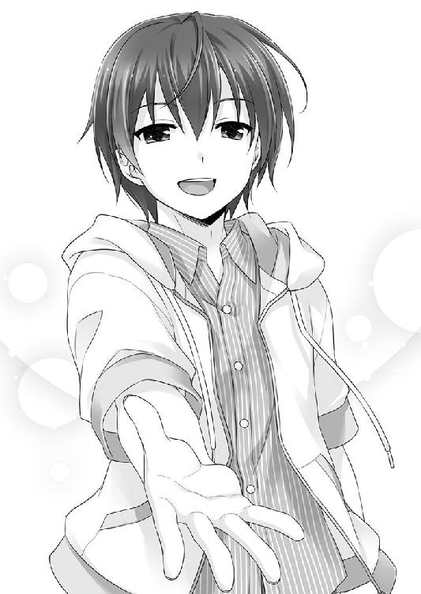
「一條！」
応えるより先に、叔美は力一杯一條を抱き締めていた。
抱き締めただけでは飽き足らず、クルクルと踊るように回る。
「ちょ、叔美、くるし......喉！ 喉に腕が掛かってるってば......!!」
「ありがとう」
囁き声は耳元で。
それが、今夜の戦いの一番の報酬だ。
四〇〇年と一口にいうが、呆れてしまうほど長い歳月である。
一説によれば、奥志麻で交衣が開かれるように仕来りが定められたのは、その程度は昔の出来事であるらしい。真実を知るものはいない。
今年の交衣は散々だった。仕来り破り、部外者乱入と何でもありで泥塗れ。老人たちは誰も彼もが、責任の所在を自分以外の全員に擦り付けてやろうと奮戦したが、壮絶な泥仕合が救いのない本格的な対立へ雪崩れ込む一歩手前で、奇跡のように手打ちが成立し、長老会は以前と同じ「日常」を取り戻した。
多地見花々梨が大罪人・千里十行と少なからぬ長老たちの謀議を示す『証拠』をちらつかせた結果、老人たちは「最初から何もなかった」ことにしてしまったのだ。花々梨の父もその結果、お咎めなく戻ってきた。その後の父と娘の間柄は、残念ながらというべきか極めつけの冷戦状態である。
血の繋がった親子でも、同じ道を歩けるとは限らないのが人生の妙味だ。
交衣に殴り込んだ部外者二名も、その後見と見なされた千里碧流についても同様である。その後しばらく、『アンブロシウス』の常連で『ヒトデナシ』の事情に通じた幾人かが、今年の交衣は盛況だったねえ、と空々しく述べて、碧流の白い目を受けたとか。
紆余曲折を辿った千里家の名跡は、正式に千里一條が引き継ぎ、伴う諸々に日々を忙殺される羽目になった。
ちなみに、しばらく後に空飛ぶバニーの目撃譚なる都市伝説が、奥志麻を騒がせ、とある騒動を引き起こすのだが、それは別の場で語られるべき物語だろう。
ともかくも、奥志麻と千里家にとって、一つの大きな句切りはついた。
奥志麻を離れた本土の某所に、多地見家の屋敷はある。
深夜。『ヒトデナシ』らしからぬ今風の邸宅の白く高い塀を軽々と乗り越えて、烏が闇夜に溶けるように、コダマは音もなく囚われの身から抜け出した。
「この私をいつまでも束縛しておこうなんて、身の程知らずなのよねぇん」
卑劣な二人のｃＳに捕縛されたコダマには相応の価値がある。大切な証人であり、生きたｃＳのサンプルとして。もっとも、証人については、事件そのものが失かったとしてほっかむりされている現在では無意味なのだが。
頑強な警備員の筋肉や獰猛なドーベルマンの鼻でｃＳは抑えきれない。抜け出すのは容易かったが、彼女が世界で唯一敬愛する主の行方は不明のままである。
「あーん、十行様ぁん、迎えに来てくださると思って待っていたのに。まさか......いいえ、十行様ぁんは必ず無事に何処かに。私が迎えにいって差し上げなければ」
コダマは己の愛を疑わない。忠誠を疑わない。彼女は植物型ｃＳだ。動物基礎型と違って、図太く、変質することがない。
剽悍な夜行性の獣の如く敏捷に身を翻して、夜の奥へと消えていく───
と思ったが、奔って戻ってきて、憎々しい花々梨の棲む屋敷を睨み付けると、やり残しの仕事を済ませることにした。
どこからか掠め盗ってきた派手なカラースプレーを純白の塀に向かって。
『おぼえてやがれ』
威嚇するように歯を鳴らしてから、今度こそ先の見えない闇へと飛び込んだ。
一條の元に「日常」が帰ってきて久しい、とある日。何を指して「日常」と呼ぶかは、それぞれの話ではあるが。
奥志麻の季節は、これから先が冬の本番だ。町行く人々の装いも随分と厚着になり、『アンブロシウス』に近い古町商店街では、気の早すぎるクリスマス特価セールが開催されている。
「今日は週末だし、忙しくなるかな」
数時間後の開店に備え、一條はバックヤードの姿見鏡で店制服の着こなしをチェックしてから欠伸を噛み殺し、玄関周りを確認。
「『働かざる者食うべからず』、だ」
店の入口横に、珍しく手ずから、本日のお勧めメニューを書いたスイング看板を並べていた碧流が、すれ違いに一言。
最近は、アカハやウシオも、たまに口にするフレーズ。ｃＳは、子供のように影響を受け易いのかもしれないが、姉が本当に伝えたい意味と二人が使ってる意味はおそらく違っている。同じ言葉でも、受け取り方や使い方は人様々だ。光を当てる方向で、影が形を変えてしまうように。
一條にとっては、働かなければ食べたところで美味くない、だ。空腹は最高の調味料。部屋一杯の飽食の甘露も、砂漠を越えて手にする一杯の水の喜びに遠く及ばない。
店に戻ると、カウンターに頬杖をついて観察していた叔美が、変な顔をしていた。
「メイセキとかになったのに、なンにも変わらないンだな」
「少しは変わったよ。姉さんの特訓メニューは二割増だし、知らない人と会ったり話したりの機会も増えた」
責任を担う意味を思い知らされる日も、遠からず訪れるだろうと予感している。どんな選択を迫られるのか、今日の処はまだ悩むまい。
昨日を振り向くのと同じように、明日の天気にひたすら心煩わせたところで疲れるばかり。何事も程々に、だ。
まだ開店準備中の店内には、馴染みの従業員の他にも、気の早いお客が一人。
「カカシ......」
「花々梨です。いい加減覚えてください。まあ、もういいですけど」
カウンター席で優雅にコーヒーを嗜んでいるのは花々梨だ。『真知廻』以降、時折『アンブロシウス』へ顔を出してくれるようになった。
いつもなら無駄に噛みつく気性の叔美が、最近はしおらしい。ばかりか、拾ったばかりで人慣れしていない野良猫みたいな、妙な距離の取り方をする。
叔美が奥志麻へやって来た頃のようで、時計の針が巻き戻った気分になる。
バックヤードからビールの入ったケースを己の体長よりも高く積んで運んできたアカハが、進歩のない淡泊な表情でカウンターに突っ伏している叔美へ。
「働かざる者食うべからず、です」
「オマエ......どっかの性格悪みたいなこと言うようになったな」
「勉強していますから」
店の入口から、ニトロ搭載エンジンみたいな急回転の跫音が迫ってきた。相手の正体は、見るまでもない。
「久留美」
「イチジョー！ 久留美ただいま到着っす！」
「遅いぞ、遅刻すると三〇秒毎にペナルティだ」
「グエェー、何すかそのブラック・システム!!」
オーナーの指摘に、大きく仰け反って泣いた真似。すぐにバックヤードへ走っていくと、それこそあっという間に制服に着替えてきた。
「オッスです、ウシオさん」
「ええ、オッス」
ウシオは、お馴染みの気配が非常に希薄な返事だ。
『マチ☆ダイスキ』期間も終わり。『アンブロシウス』の営業時間は夜間だけと元通りだが、碧流が臨時格安バイト二名を雇用し続けることにしたおかげで（目当ての固定客が増えた為）、一人頭の作業は随分と楽になった。
制服まで元の通りバニーでなくなったのは、残念なのか、ホッとするべきか。人間、自分の本心を見つけるのも簡単ではない。
「でも、この間は色々ありましたよねー」
久留美の振った話題は、当然この間の『真知廻』の件だ。
うんと頷いたきり、一條は黙り込んでしまう。
久留美との───できる範囲で事情を話すという約束は、まだ果たされていない。
今でも相当危険なのに、これ以上深入りさせたくないと思っている。どうするべきか、という選択を、まだ決めきれていなかった。
「──────イチジョーが話したくなったら、そうしてください」
思索に沈んでいると不意の耳打ち。いつの間にか驚くほど近くなっていた久留美の顔は、すぐに遠ざかる。
ほんの一瞬、まことに彼女らしからぬ目の覚めるような微笑。
脳の何処かがやられそうに眩しかった。
何もかもが変わっていく。人も、モノも、ｃＳも、色々な繋がりも。同じに留まり続けるものは何一つない。
久留美は今さっきの台詞も忘れたみたいに、清掃用のモップ片手に、カウンターに陣取る碧流と賑やかにガールズトークに興じる。昨夜のドラマがどうこう。新しいリップがなんだかんだ。そういえば美味しいケーキ屋が。
久留美がバイトに加わるまでは、この店でこんな会話を聞けなかったという事実に、胸の片隅がじんわりと温かくなる。
並んでいる碧流と久留美を眺めていると、真に失礼ながら二人が少女なんだと実感した。恐ろしくて、とても口に出しては言えない。
話の流れが途切れる。短い静けさが落ちる。
碧流が苦い薬でも飲んだような不思議な顔をしていた。
「どうかしましたか、ネーチャン」
「いや、なんだ......会合では助けられた。お前や叔美が来なかったら、あの場を収められたかどうか。礼を言っておく。花々梨のヤツには......別にいいか」
素直な感謝は、希少価値が高すぎて一條の息がピタッと止まる。
久留美の心境も大差なかったらしい。数秒呆気に取られてから、すぐさま脳内に火でも入ったような有頂天の顔で。
「当たり前っすよ！ 未来の義姉を助けるのは当然です!!」
全力で地雷を踏みに行った。カウンターから出てきた碧流が天使の微笑み。差し出された右手は誰が見ても罠なのに、光に吸い寄せられる小魚よろしくガッチリ握手。
手を握ったまま、碧流は久留美の背後に回る。右足を左足に絡ませる。左足を首に引っ掛ける。左手で右手をねじり上げる。完璧に決まった通称オクトパス・ホールドだ。
「誰が、未来の、姉、だッ!!!」
「ギブ！ ギブギブギブ！ 久留美死ねます、ギャー！」
「わたしがいなければ、碧流は今頃路頭に迷ってたんですよ。それをよくもまあ」
「それなら、一條とウチの秘密兵器共がいなければ、花々梨は今頃、太平洋でアンコウの餌だな。惜しいところだ！」
微笑ましくも賑やかな遣り取りを、少し距離を取って叔美が見守っていた。
ショーウィンドウ越しの情景に憧れるマッチ売りの少女のよう。
「こんなのも、もうすぐ終わりだ───なんて、考えてるんじゃ」
不意打ちに、踏んづけられた猫の顔になった。顔に出過ぎだが無理もない。人付き合いの経験が少ない叔美は、致命的に隠し事が苦手だ。
「どうするつもり？」
穏やかだかが真剣な一條には、誤魔化しは通じない。
人付き合いの貧しい野良猫だって、その程度の空気は読む。
「......頸輪、壊れたろ」
頸輪を失ってから、まだ『１４』は現れていない。だが、遠からずだ。一條は終わりの臭いを嗅ぎ取っている。あの日以来、日増しに強くなっていく。明日か、一〇日後か、一ヶ月先かはわからない。三ヶ月よりは短いだろう。
「だから、そういうことなンだよ......一條には、アレだ」
「アレって？」
「いや、だから、ほら、あるだろいろいろ!!」
叔美は『アンブロシウス』で幸せな夢を見た。
（───どうにかしてみせる）
少年の約束を疑ってはいない。
けれど、猶予は残り少ないのだと、叔美は察していた。
ここに留まれば、今度こそ一條や、碧流や、久留美や、アカハや、ウシオ......マスターやオカマダさんまで、『１４』に追いつかれるかもしれない。
そうなれば叔美は、誰よりも自分を許せなくなる。
そう思ってしまうのは、きっと前よりも弱くなってしまったのだ。
でも、そんな「アタシ」を叔美は以前よりも好きになれそうだった。
だから───
これは叔美自身の都合だけの我が儘だ。
短い夢はもう終わり。
暖かな微睡みから醒めるとしよう。
何も悲しいことはない。人生が有るべき姿に戻るだけだ。
ちょっぴり寂しいかもしれないが、逢えなくても、独りでも同じ空の下。
自分を救ってくれた人たちが、何処かに元気でいてくれるなら。
ここで過ごした日々の記憶を抱いて、どうにかやっていけるだろう。
「言っとくけど、一條、バカなことは考えンなよ」
「馬鹿なことってなんだよ」
「......とにかく、バカなことだよ。そうでなくても、一條はバカなンだし」
一條は溜息でも吐くように肩を竦めた。
「実はね、叔美みたいな『力』が今までにも居たんだ......って」
「───なンだと」
聞き捨てならないこと言われて、叔美は噛みつきそうな顔をした。一條が泡を食って両手を降参のポーズをする。
「待って、違う、黙ってたんじゃない！」
「───『秘聞帖』だ」
足下に久留美を屈服させた碧流が口を挟んできたが、叔美には難解なワードだった。
「ひ......〝ひもちょう〟？」
「お前の脳はザルか。『秘聞帖』。名跡を継いだ千里の当主だけが触れられる、千里の記録だ。十行が名跡を継ごうとしたのもこれの為だろう、多分......」
「それ、さっきわたしが教えたんですよ。感謝してますか、碧流」
情報元から扱いに関するクレームが付いたが、当然ながら、余計なツッコミは完全スルーが『アンブロシウス』・オーナーの流儀だ。
「あのクズが面倒な真似しても欲しがるって......宝の地図とか？」
「即物的なヤツめ。だが、当たらずとも遠からずだ。情報は、使いようによっては宝にもなる。毒にもな」
叔美は理解不能のマークを頭の上に浮かべる。一條が苦笑していた。
「昔の千里家の人たちは、関わると死をもたらすような人間とも関わる方法を持っていたらしい」
信じられないという顔。そんな都合のいい話があるだろうか。
「それは、『アンブロシウス』みたいにか？」
「お前の頸輪みたいに、だ。この家は、お祖母様の〝作品〟。お祖母様は『千里』の者ではない。お前の頸輪は、あの男が勘当された時に持ち出した、幾つかの『千里』の技法や術理を応用したものだろう。つまり、遣り方はあるということだ」
千里の先祖は、叔美のような特別な人間を世間と折り合わせてきた。それを一條が誇らしく感じるのは、名跡を継いだという自覚のせいだろうか。
「それって調べれば......わかるのか？ 方法が判るまで、どれぐらい掛かる？ 相当掛かるンだろ。本当に残ってるかどうかもわかンないもンな」
叔美は頷く。暗い顔は見せないでおこうと誓ったように、殊更に明るく。
「それなら、結論は決まってる」
「───まだ終わってないことを勝手に終わらせるな」
予想もしなかった強い言葉に驚く。
一條だ。少年がここぞというところで爆発すると知っていたつもりでも、火傷しそうな程熱の篭もった言葉を向けられるなんて、叔美は思ってもみなかった。
「わたし、力を貸して差し上げてもいいんですよ。多地見の家には、古い文献の類が沢山ありますから。本来は門外不出の貴重なものですが」
「花々梨さん、それを調べさせてもらっても？」
「どうぞ、一條さん。あなたにも叔美さんにも、お礼はしたいですから。碧流には......まあ、別に何もありませんね」
「この淫乱脳細胞。貸し付けておいて、一條の魂でも狙っているのか」
「やっかみですか。弟離れできない姉は恥ずかしいですね」
売られた喧嘩はタダでも買う主義の碧流に、これでは結果は見えていた。
「脳まで淫乱ウィルスに冒されてるなら、この場で息の根止めてやろう！」
「我が多地見家としても、千里の新しい名跡に恩を売れるのは、少なくない投資なんですよ。何か仰りたいことがありますか！」
「なんだ、その取って付けた理由は。言いたいことなら、山のようにあるぞ！」
所構わず、毎度のように火花を散らせる二人のことはさておいて。
「でも、これ以上は......迷惑......」
叔美は、喉の奥が塞がっているようで、上手く言葉が出てこない。
「僕は自分が幸せになりたい。それには、叔美も幸せな方がいい。思うんだけど。人間は独りで幸せになるのが苦手なんだよ。多分ね」
「ば......か、なに言ってンだよ」
珍しく良いことを言った気分だったのに、叔美は照れたように笑うばかりだった。
人は、きっとパズルのピースに似ている。
独りでは形も色も歪な一つに過ぎないが、他の形や色と噛み合えば、大きな絵を作り上げて見る者の心を打つこともできる。
自分が何者なのか。それを知るにも、他の誰かが必要だ。
だから、本当は誰よりも独りだったあの男は、幸せの意味も知らなかったのだと思う。
「それでも......誰だって、自分の幸せを選ぶ権利はあるんだよ」
人は独りで幸せになるのが苦手な寂しがり屋のクセに、他人を幸せにするのが苦手だ。
何処まで行っても、自分で選択して生きる。
そんな矛盾を抱いて、僕らはこの先もやっていく。
「でも、アタシは」
「でもも、バカもなし。まだ終わってないから、まだ選ぶ道はある。諦めるのは、遣れることを遣り切ってにしよう」
ああ、まったく───
叔美は鼻を啜って歯を食い縛る。
そんなことを言われてしまっては、涙なんて見せられない。
その遣り取りを聞いた、宿敵と激突寸前の碧流と開店準備に忙しいアカハが口を出す。
「『千里』の人間として、最後まで見届けよう」
「アカハは、お兄さんをお手伝いします」
床に放置されて事情のわかっていない者と、敢えて事情から目を逸らすモノがいたが、場の空気が何も反応しないことを許さなかった。
「事情はよくわからないけど、協力するっす！」
久留美は楽しそうだった。ウシオは最後まで知らないフリをして、頑迷に抵抗した。
言いよどんだ不死身の彼女に、小さな妹分が言う。
「行きませんか、センパイ？」
虚飾のない淡々とした問い掛けは、いつも通り。
こういう空気は苦手だが、ｃＳには命令が必要だ。少なくともウシオには。
「......雇われるなら、ギャラ分の仕事はする」
「また一からってワケか？」
呆れたような口ぶりの少女は笑っている。
それは、まるで太陽のように眩い笑顔。
「一から上等。バカみたいなのは僕らにお似合いだ」
あの路地裏で『１４』と出逢った時、何も知らないところから始めた。
終わりは、次の幕明けを報せる鐘だ。その向こうには、また新しい何かが待っている。
あんなに惹かれた優雅な生活は遙か彼方。
でも、代わりのモノは手に入ったから良しとしよう。
また一からだとしても、それは以前とは違う輝ける一。
そうして、やっと。
すぐ傍にいた名も知らぬ誰かが、やっと微笑ってくれたような気がした。
幕間の終わりを告げるラッパのように、『本』が自動的に現れた。
４４４─■■■■
別れはまた新しい出逢いの始まり、ともいう。
今日の『アンブロシウス』は、普段に輪を掛けて騒がしい。何やら、女たちは今後の話でイイカンジに盛り上がっている。若干一名、ノリの悪いメンバーもいるようだが。素晴らしきは同調圧力。
いつまでも他人事じゃないぞ。言い出したのはキミなんだしな。
ここで重要な選択を迫られる。門出を祝うのに相応しいものを選ぶように。
キミはどうするべきか。
人生は優雅に、大胆に、そして慎重に、だ。
学生の本分に立ち戻り、進学の準備をするなら／３０９─■■■■ へ行け
世界を広げるのは人と人の関係。友人と親交を深めるもよし／２９８─■■■■ へ行け
手掛かりを求めて、多地見家を訪ねるべきかもしれない／７１０─■■■■ へ行け
最近は忙しかったが。休息も必要だろう。当分は家でゆっくりするのも悪くない。その場合は......／２５１─■■■■ へ行け
次の物語はこれまで以上に大変かもしれないが、なあに、これまでの経験を活かせば、やってやれないことないかも......な。
選択視を変えるものは自分自身だと、『本』は教えてくれた。
選択は繰り返される。幾度となく。
前へと進まなければならない。
振り向いたところで待っているのは郷愁の空白だから。
闇を恐れるように、地平の山を越えた向こう側に夢を見て知らない場所を歩き続けよう。
運命が運んでくる幸福に、快楽に、困難に、束縛と屈辱に、ありとあらゆるモノに。
屈することなく自分の意志で選択し続ける。
それだけが、人生を何かに委ねてしまう甘美な罠を打ち破る唯一の術だ。
だから千里一條の選択は、続く。
【ＥＮＤ】
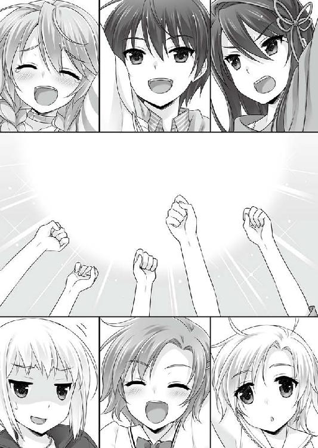
あ と が き
お久しぶりになります日野亘です。何とか間を開けず、皆様に『ＰＧ１４』三巻をお届けできることになりました。
この『ＰＧ１４』という物語は、かつて「ゲームブック」というものを楽しませて貰った者として、自分なりに得た「面白さ」を活かしてみたいというところからスタートしました。
ゲームブックに付き物の「選択」とは、時に厳しく、時にヌルく突き付けられるものですが、その向こう側に辿り着かなければ、「何か」を得ることは出来ません。
常に一つしか選べない選択肢とパラグラフを積み重ねて完成するゲームブックの在り方は、別のあるものとも似ているのでは、という思いを本作に込めました。
もっとも、そのテーマを消化するのに三巻も掛かってしまった次第です。『ＰＧ１４』はこの三冊をもって、一條と叔美の出逢いから始まった導入が一区切りいたします。奥志麻の面々のそれぞれの選択と物語は、この先も振り向くことなく進んでいきます。その物語を書く機会がありましたら、よろしくお願いします。
読んでいただければわかると思いますが、「奥志麻」も良いところです。読者の皆様も奥志麻へ是非遊びにきてください。「天河踊り」や「マチ☆ダイスキ」など見所満載のイベント期間がお勧めです。
最後に、恒例となりましたお世話になった皆様への謝辞を。
今回も『本』の表現について色々と相談に乗って頂きました編集の遠藤様。
三巻でも見事な表紙と挿絵を描いてくださった、さえき北都様。
今回もチェックや進行で大迷惑を掛けました、リサイトの皆様。
前回の『マチ★アソビ』でご協力を頂きました、南海ブックスの皆様。
日々幾つものネタを頂いている、Ｔ県民の皆様。
それから、この本を手にとってくださった、全ての皆様。
心から、感謝を捧げます。『ＰＧ１４』は皆様のお力なしには生まれませんでした。ありがとうございました。
日野 亘
日野 亘
四国の片隅で執筆中。最近近所に黒猫が住み着きました。代表作は「るいは智を呼ぶ」「ハロー・レディ」「ＰＧ１４」他。
猫と潜水艦を終生の友とするなまもの。
ＰＧ１４ 全巻セット
電子版発行 ２０１６年２月26日
著 者 日野 亘
発行者 長谷川 洋
発行所 株式会社一二三書房
〒１０２─００７２
東京都千代田区飯田橋２─14─２ 雄邦ビル
電話 ０３─３２６５─１８８１
イラスト さえき北都
デザイン erika
©HIFUMI SHOBO
本書の無断複製（コピー）は、著作権上の例外を除き、禁じられています。
●本書は『ＰＧ１４』（２０１４年７月20日 初版第１刷）、『ＰＧ１４ ２』（２０１５年５月20日 初版第１刷）、『ＰＧ１４ ３』（２０１５年10月20日 初版第１刷）に基づいて制作されました。